本轮没有业务功能标为验收通过。附 5 张本轮登录及账号安全页面截图；其余 6 张为历史 QA、样例或导航预览，数据来源与版本差异随图说明。没有运行、外部授权或持久数据证据的功能保留为待核验。
审计日期：2026-10-10。对象：E:\AI工作台1.2 当前工作树，包括既有未提交改动。仅审计与汇报，未执行业务功能增删。
系统具备以项目为容器的资料、持续对话、研究、可选 Skill 和文本成果基础。当前最应优先核验的是“保存后还能恢复并继续工作”。首页演示驾驶舱、人工发布任务和 CSV 数据台账不能作为真实运营效果或自动经营闭环的证明。
本报告的“代码存在”只说明找到了源码链路；“部分实现”说明仅有局部能力或与产品目标存在差距；“未实现”只用于有明确证据的缺失；“待核验”指运行效果、动态控件分支、权限或外部依赖尚未实测。本轮没有任何业务功能标为“已运行验证”；仅登录页展示和访客导航实际检查，见运行表。已有截图及历史 QA 结果不提升当前状态。
权威依据：PRODUCT.md、ARCHITECTURE.md、LEGACY.md、AGENTS.md。本次不属于 Governance Update。建议均待上级决定，不构成删除、迁移或提前施工授权。
优先复用资料：docs/product-review/2026-10-10/report.md、docs/product-review/2026-10-10/feature-decisions.md、docs/product-review/2026-10-10/implementation-index.md、docs/product-review/2026-10-10/implementation-inventory.json。本次重新读取页面与 API、递归索引 UI 和直接后端调用，修正拦截路由口径。
覆盖 82 个 page.tsx 文件，其中 72 个普通页面文件和 10 个设置弹层/关闭槽文件；196 个 Route Handler 文件；1470 处去重控件声明。动态参数、兼容别名、权限分支和重定向不能计作独立已交付页面。页面访问是否成功仍待运行。
第一部分 完整前端页面功能架构
当前侧栏：Home → 工作台 → 内容创作 → 知识与资料 → 研究与洞察；项目最近打开/文件夹是跨模块持续工作入口。任务数据、发布中心、旧 Discovery 和平台管理还有页内、直接 URL 或兼容入口。登录与管理员权限限制属于可访问性的前提，不得绕过。
| 一级模块 | 二级能力及入口 | 架构边界 |
|---|---|---|
| 首页 | /home | 当前运营演示，与“找到工作、创建项目、回到最近工作”职责存在差距 |
| AI 工作台 | /dashboard；?project=id；?node=artifact:id | 无项目开始工作；有项目对话、资料引用、成果继续编辑 |
| 内容创作 | /topics、/content-review、/projects/[id]/review/[platform]、/calendar、/calendar/tasks/[id] | 选题治理、平台稿人工审核和人工发布任务是不同流程 |
| 知识与资料 | /library、/library/[id]、/library/feishu、/library/methods、/knowledge、/knowledge/facts、/ip-context | 原始资料、外部授权知识、可选技能、知识事实治理职责不同 |
| 研究与洞察 | /research/new、/research/teardown、/research/benchmarks、/research/trends、/research、/research/results；sources、works、focus、session 等页内入口 | 目标统一 Research，当前仍有多种垂直编排和旧 Discovery |
| 项目与成果管理 | /projects；项目别名转 dashboard；成果位于项目窗口 | 通用 Artifact 为 TEXT，旧母稿、草稿和 Canvas 并存 |
| 任务与数据分析 | /short-video/tasks、/short-video/tasks/[id]、/short-video | 手工任务与人工/CSV 数据，不是自动运行调度或平台实时监控 |
| 账户设置与管理员 | /settings/...；/login、/register、/account/...、/onboarding；/admin/...、/platform/spaces | 账号、Workspace、权限、凭证与诊断有基础；License 和完整商业交付为 FUTURE |
| 其他与兼容入口 | /discovery/...、/projects/.../studio、/platform/accounts、/experience、/__runtime、/workspace-unavailable、/ | 兼容、恢复、体验、诊断和分流入口，不扩张为新产品中心 |
设置弹层 @settings 的 (.)settings/account 等仍是 /settings/account，不能算作 /account；弹层与整页共用功能。关闭槽 [...catchAll] 返回 null，不是可访问业务功能。
产品核心对象为 Project、Conversation、Material、Research、Skill、Artifact；上述九类用于说明页面，不重新定义产品核心对象。
第二部分 逐页面功能明细
下表覆盖全部普通页面文件；逐页面展开的定位、展示内容、控件、用户操作、函数、API/Service/数据对象、关联和截图见附录 A。公共侧栏、顶部菜单、搜索和设置容器单列为共享组件附录，每个业务页继承其适用部分。
| 编号 | 一级模块 | 二级子模块 | 页面路径 | 展示内容与主要作用 | 状态 |
|---|---|---|---|---|---|
| P011 | 账户设置与管理员 | 管理员入口 | /admin | 进入用户管理；重定向 admin/users | 代码存在；访问依赖系统角色；本轮运行待核验 |
| P012 | 账户设置与管理员 | 系统服务管理 | /admin/system | 管理系统级模型或转录 Provider；系统配置表单、状态、保存/测试等条件动作 | 代码存在；SYSTEM_ADMIN 专用；本轮运行待核验 |
| P013 | 账户设置与管理员 | 调用用量 | /admin/usage | 按时间范围和用户查看调用及资源使用；用户/空间、调用、token、RedFox、转录分钟、素材、最近活动 | 部分实现；不等于供应商结算账单；本轮运行待核验 |
| P014 | 账户设置与管理员 | 系统用户管理 | /admin/users | 创建账号并处理生命周期；用户表、姓名/邮箱/初始密码、创建、启停、恢复等动作 | 代码存在；SYSTEM_ADMIN 专用；本轮运行待核验 |
| P015 | 内容创作 | 发布中心 | /calendar | 组织人工发布排期和发布状态；列表/日历、月份、平台/状态/创建者筛选、任务详情 | 部分实现；非平台自动发布；本轮运行待核验 |
| P016 | 内容创作 | 发布任务详情 | /calendar/tasks/[id] | 复制发布包，人工在平台发布后记录结果；发布包、计划时间、平台、取消、标记已发布、链接、操作记录 | 部分实现；明确要求人工登录真实平台；本轮运行待核验 |
| P017 | 内容创作 | 选题审核 | /content-review | 处理待批准、返工及暂缓选题；待处理选题、事实依据、评分、否决项、人工决定和历史 | 代码存在；与平台成稿审核分开；本轮运行待核验 |
| P018 | AI 工作台 | 开始工作及项目协作 | /dashboard | 无项目时开始工作，有项目时持续对话与编辑成果；任务输入、资料附件、模型与 Skill、模板、最近项目；项目对话、引用、成果窗口、旧稿件及画布 | 代码存在；真实模型与持久闭环待核验；本轮运行待核验 |
| P019 | 其他与兼容入口 | 旧对标入口 | /discovery/benchmarks/[id] | 转至 research/benchmarks/id；重定向 | LEGACY COMPATIBILITY；本轮运行待核验 |
| P020 | 其他与兼容入口 | 旧选题库 | /discovery/ideas | 管理研究产生的 ContentIdea；搜索、状态、选题卡片、继续研究/创作 | 代码存在；与选题中心需评审边界；本轮运行待核验 |
| P021 | 其他与兼容入口 | 研究选题详情 | /discovery/ideas/[id] | 完善依据并创建或打开关联项目；标题、描述、AI理由、参考、状态、资料与项目操作 | 代码存在；待核验；本轮运行待核验 |
| P022 | 其他与兼容入口 | 旧研究入口 | /discovery | 转至研究中心；重定向 | LEGACY COMPATIBILITY；本轮运行待核验 |
| P023 | 其他与兼容入口 | 推荐详情 | /discovery/recommendations/[id] | 核对推荐切口与证据后选用；推荐理由、问题、证据、采纳/忽略或创作入口 | 代码存在；个性化范围为已知 CURRENT IMPLEMENTATION GAP；本轮运行待核验 |
| P024 | 其他与兼容入口 | 旧趋势工作区 | /discovery/trends | 查看榜单与生成选题机会；平台/榜单筛选、刷新、趋势卡片、依据、生成选题 | LEGACY COMPATIBILITY；与新趋势入口重叠；本轮运行待核验 |
| P025 | 其他与兼容入口 | 旧趋势详情 | /discovery/trends/[key] | 查看趋势依据并研究选题；趋势信息、作品证据、补充输入、生成与保存操作 | LEGACY COMPATIBILITY；待核验；本轮运行待核验 |
| P026 | 首页 | 运营指挥台 | /home | 展示内容表现和样例分析，当前偏运营驾驶舱；播放、互动、净增粉丝、趋势、粉丝画像、作品排行、账号矩阵、规则摘要 | 部分实现；与 Home 产品职责存在 CURRENT IMPLEMENTATION GAP；本轮运行待核验 |
| P027 | 知识与资料 | IP 背景信息 | /ip-context | 维护人物定位、表达边界与背景版本；人物与背景字段、版本、发布/归档等条件控件 | 代码存在；与私人创作偏好含相邻语义；本轮运行待核验 |
| P028 | 知识与资料 | 事实确认 | /knowledge/facts | 对知识中的事实做双角色确认与有效期治理；确认人、事实类型、知识依据、有效期、发起确认、确认/否决、请求历史 | 代码存在；权限和双人确认待核验；本轮运行待核验 |
| P029 | 知识与资料 | 知识中心 | /knowledge | 从资料整理有来源和版本的知识；来源资料、标题、正文、保密范围、来源快照、历史、新版本、归档 | 代码存在；不是已验收的全域语义检索；本轮运行待核验 |
| P030 | 知识与资料 | 飞书资料 | /library/feishu | 连接并检索获授权的飞书资料；连接表单、App ID/Secret、启用与同步选项、授权确认、知识库浏览、订阅、同步、检索片段与原文 | 代码存在；真实授权、撤权和时效待核验；本轮运行待核验 |
| P031 | 知识与资料 | Skill 管理 | /library/methods | 导入和管理可选专业能力；Markdown 导入预览、技能名称和说明、搜索、详情、使用、启停 | 代码存在；可跳过技能；本轮运行待核验 |
| P032 | 知识与资料 | Skill 详情 | /library/methods/[id] | 查看与维护技能内容和版本；说明、步骤、适用场景、版本及编辑/使用入口 | 代码存在；待核验；本轮运行待核验 |
| P033 | 知识与资料 | 资料库 | /library | 管理可供项目和研究使用的原始输入；资料卡片、类型、处理状态、搜索、布局、分页、上传和链接输入、归档、飞书入口 | 代码存在；处理结果与任务运行待核验；本轮运行待核验 |
| P034 | 知识与资料 | 资料详情 | /library/[id] | 阅读提取内容、查看处理与来源，进入研究或创作；原文件、视频或音频预览、转录、来源、处理状态、重试、分析/提炼和项目关联 | 部分实现；MaterialAnalysis/Distillation 与 Research 边界未收敛；本轮运行待核验 |
| P035 | 知识与资料 | 方法兼容入口 | /projects/methods | 转至 Skill 管理；重定向 | LEGACY COMPATIBILITY；代码存在；本轮运行待核验 |
| P036 | 项目与成果管理 | 新项目表单 | /projects/new | 填写创作方向并创建项目，创建后进入工作台；返回创作、创作说明、ProjectForm 表单；sourceItemId/idea 可预填；VIEWER 返回项目列表 | 代码存在；与工作台/侧栏创建入口重复；本轮运行待核验 |
| P037 | 项目与成果管理 | 项目列表 | /projects | 找到、分类和继续已有项目；项目卡片、搜索、状态与文件夹、归档、最近打开、分页 | 代码存在；待核验；本轮运行待核验 |
| P038 | 项目与成果管理 | 项目兼容入口 | /projects/[id] | 转至 dashboard?project=id；重定向，非独立编辑页面 | LEGACY COMPATIBILITY；代码存在；本轮运行待核验 |
| P039 | 内容创作 | 平台成稿审核 | /projects/[id]/review/[platform] | 对平台适配稿做人工审核并准备发布；稿件预览、审核状态、意见、批准或返工、发布入口 | 部分实现；非自动平台发布；本轮运行待核验 |
| P040 | 项目与成果管理 | Studio 兼容入口 | /projects/[id]/studio | 转至项目工作台；重定向，Studio 不是独立产品中心 | LEGACY COMPATIBILITY；代码存在；本轮运行待核验 |
| P041 | 研究与洞察 | 老师与对标 | /research/benchmarks | 管理研究账号和已同步作品；账号列表、添加/导入、关注、比较、作品队列与筛选 | 代码存在；不等于自有创作者账号经营管理；本轮运行待核验 |
| P042 | 研究与洞察 | 账号研究工作区 | /research/benchmarks/[id] | 聚焦选定账号的作品、比较和研究；账号/作品筛选、研究组件与队列 | 代码存在；待核验；本轮运行待核验 |
| P043 | 研究与洞察 | 对标作品详情 | /research/benchmarks/[id]/works/[workId] | 获取并拆解单个作品，再选择进入创作；作品信息、数据观察、内容收集、分析、报告、导出、采用/创作 | 代码存在；有元数据不等于已读正文；本轮运行待核验 |
| P044 | 研究与洞察 | 专项研究 | /research/focus | 针对明确问题挑选已深拆作品开展研究；问题、账号/作品选择、样本范围、发起研究 | 代码存在；隐藏/页内入口；本轮运行待核验 |
| P045 | 研究与洞察 | 专项研究结果 | /research/focus/[runId] | 查看直接回答、证据限制并保存或带入创作；回答、结论、作品依据、未回答部分、预算遗漏、保存和使用发现 | 代码存在；未深拆作品不当成已读正文；本轮运行待核验 |
| P046 | 研究与洞察 | 开始研究 | /research/new | 围绕明确问题选择资料、账号、趋势并发起私人研究；研究模式、问题、资料选择与搜索、范围、私人背景选项 | 代码存在；研究执行依赖后台及模型；本轮运行待核验 |
| P047 | 研究与洞察 | 资讯日刊 | /research | 收集资讯线索并决定进一步研究；日期、来源/类别、搜索、更新、资讯卡片、引用及保存入口 | 代码存在；采集时效与真实内容待核验；本轮运行待核验 |
| P048 | 研究与洞察 | 研究记录 | /research/results | 寻找已保存研究及最近研究会话；搜索、项目/类型等筛选、研究卡片、会话及结果链接 | 代码存在；不是通用 Artifact 列表；本轮运行待核验 |
| P049 | 研究与洞察 | 研究成果阅读 | /research/results/[kind]/[id] | 读取已存结论、核对依据并选择用途；结论、来源、样本覆盖、选中与调整发现、保存私人研究、带入创作、审阅后分享 | 代码存在；分享不等于整个私人会话公开；本轮运行待核验 |
| P050 | 研究与洞察 | 研究会话 | /research/session/[id] | 查看进度、研究结果、追问、保存和使用发现；运行进度、范围、区块、依据、保存、继续提问、带入创作/分享 | 代码存在；隐私边界与运行待核验；本轮运行待核验 |
| P051 | 研究与洞察 | 已保存来源 | /research/sources | 阅读主动收集的来源并选择研究；来源清单、筛选、详情、笔记和研究入口 | 代码存在；页内入口，非一级侧栏；本轮运行待核验 |
| P052 | 研究与洞察 | 研究来源详情 | /research/sources/[id] | 查看原文与摘录，保存笔记或形成选题；原始内容、来源信息、摘录输入、保存和选题/研究操作 | 代码存在；深度理解与资料详情存在相邻能力；本轮运行待核验 |
| P053 | 研究与洞察 | 作品拆解 | /research/teardown | 输入作品并生成有来源的拆解报告；链接/文件输入、进度、视频预览、时间线、拆解正文、历史、导出、删除和项目衔接 | 代码存在；真实视频与恢复路径待核验；本轮运行待核验 |
| P054 | 研究与洞察 | 热点趋势 | /research/trends | 查看已记录的趋势与排名变化；平台/榜单/关键词、更新榜单、趋势表、关注和详情 | 代码存在；观察快照非连续实时监控；本轮运行待核验 |
| P055 | 研究与洞察 | 趋势详情与选题机会 | /research/trends/[stableKey] | 核对趋势依据，结合项目与自有资料研究机会；排名、观察、关注、关联作品搜索、项目/资料选择、机会研究、保存结论 | 代码存在；生成需明确项目和资料范围；本轮运行待核验 |
| P056 | 研究与洞察 | 对标新作 | /research/works | 查看已有同步作品，标记已读、研究或明确采用；未读数、账号/日期/文本筛选、作品卡片、状态动作、详情 | 代码存在；本页不触发采集、不自动生成稿件；本轮运行待核验 |
| P057 | 账户设置与管理员 | 关于 | /settings/about | 展示产品版本和说明；版本号及静态说明 | 代码存在；无专用业务 API；本轮运行待核验 |
| P058 | 账户设置与管理员 | 我的账号 | /settings/account | 管理资料、密码、邮箱与登录设备；姓名、邮箱、保存、密码操作、验证/恢复及设备会话动作 | 代码存在；账户不是创作者平台账号；本轮运行待核验 |
| P059 | 账户设置与管理员 | 创作偏好 | /settings/creator-profile | 保存私人表达偏好，选择已确认内容形成的建议；偏好表单、保存、建议列表、采纳/拒绝等条件操作 | 代码存在；与 IP 背景和对话偏好相邻；本轮运行待核验 |
| P060 | 账户设置与管理员 | 连接与诊断 | /settings/diagnostics | 检查应用与数据库连接及 Provider 配置状态；状态列表、重新检查、去服务测试、复制脱敏诊断 | 部分实现；非完整监控告警系统；本轮运行待核验 |
| P061 | 账户设置与管理员 | 模型与 API | /settings/integrations | 配置与测试外部能力和默认转录；Provider 卡片、密钥/地址/模型等条件字段、保存、启停、测试、默认转录选择 | 代码存在；配置存在不代表连通；本轮运行待核验 |
| P062 | 账户设置与管理员 | 成员与权限 | /settings/members | 邀请和治理当前空间成员；姓名/邮箱、角色、邀请、角色修改、停用或移除、邀请记录 | 代码存在；scope/RBAC 待运行验证；本轮运行待核验 |
| P063 | 账户设置与管理员 | 通用设置 | /settings | 管理当前账号、空间、文件保存位置和外观；主题切换（共享布局）、账号/空间/存储/服务入口 | 代码存在；同一内容支持弹层与整页；本轮运行待核验 |
| P064 | 账户设置与管理员 | 本机文件存储 | /settings/storage | 检查和管理本地上传文件目录；当前保存目录、路径输入、保存、读写检查及打开/复制等条件动作 | 代码存在；不是数据库与文件的一致备份恢复；本轮运行待核验 |
| P065 | 账户设置与管理员 | 公司空间 | /settings/workspace | 查看成员数，选择或管理有效空间；空间名称、空间选择、切换和保存 | 代码存在；不是完整多机构商业授权；本轮运行待核验 |
| P066 | 任务与数据分析 | 内容数据中台 | /short-video | 汇总人工或 CSV 录入的账号日快照；平台/账号/时间筛选，播放互动增粉、作品、画像、规则复盘；账号、内容、记录管理 | 部分实现；经营闭环为 FUTURE；本轮运行待核验 |
| P067 | 任务与数据分析 | 今日任务 | /short-video/tasks | 安排和跟踪运营任务；任务清单、日期、状态、负责人、项目关联、新建、开始、完成、延期 | 代码存在；不是 Agent 自动执行记录；本轮运行待核验 |
| P068 | 任务与数据分析 | 任务详情 | /short-video/tasks/[id] | 继续处理单个运营任务；任务内容、负责人、期限、状态、关联项目、开始、完成、延期 | 代码存在；页面角色依赖 taskId 条件；本轮运行待核验 |
| P069 | 内容创作 | 选题中心 | /topics | 记录方向、评分、否决项与人工决定，批准后建项目；标题、受众、目标、判断、事实依据、九维评分、否决及解决、审核、版本历史、归档 | 代码存在；不是 AI 自动选题的同义入口；本轮运行待核验 |
| P070 | 账户设置与管理员 | 接受邀请 | /account/invite | 持邮件 token 加入获邀请空间；邮箱、新成员姓名/密码/确认密码、提交与返回登录 | 代码存在；需真实邮件与链接；本轮运行待核验 |
| P071 | 账户设置与管理员 | 找回密码 | /account/recovery | 申请受控恢复邮件；邮箱、申请、邮件服务状态、返回登录 | 代码存在；未配置邮件时按钮禁用；本轮运行待核验 |
| P072 | 账户设置与管理员 | 设置新密码 | /account/reset | 凭恢复 token 设置密码并退出会话；新密码、确认、提交、失效提示 | 代码存在；需真实恢复 token；本轮运行待核验 |
| P073 | 账户设置与管理员 | 邮箱验证 | /account/verify | 验证登录账号的邮件 token；链接状态、确认提交、返回登录 | 代码存在；不修改空间权限；本轮运行待核验 |
| P074 | 账户设置与管理员 | 登录 | /login | 建立产品账号会话；账号或邮箱、密码、登录、找回及注册条件入口 | 代码存在；真实登录待核验；本轮运行待核验 |
| P075 | 账户设置与管理员 | 内部注册 | /register | 按环境开关与公司邀请码注册；姓名、邮箱、密码、邀请码、提交 | 代码存在；开关关闭会返回登录；本轮运行待核验 |
| P076 | 其他与兼容入口 | 共用体验空间 | /experience | 按环境开关建立体验会话；自动进入、错误提示、手动登录链接 | 代码存在；不代表个人私有空间；本轮运行待核验 |
| P077 | 账户设置与管理员 | 初始化空间 | /onboarding | 为无有效空间的登录用户创建空间；空间名称、创建按钮 | 代码存在；Server Action，非显式 REST 控件；本轮运行待核验 |
| P078 | 其他与兼容入口 | 根路径分流 | / | 按登录与成员资格进入首页或初始化；无独立工作区内容 | 代码存在；重定向不是功能完成；本轮运行待核验 |
| P079 | 其他与兼容入口 | 平台账号管理别名 | /platform/accounts | 复用系统用户管理；转导出 admin/users 页面，同角色边界 | 代码存在；重复入口；本轮运行待核验 |
| P080 | 账户设置与管理员 | 客户空间管理 | /platform/spaces | 平台管理客户空间与邀请；空间列表、创建及生命周期/邀请条件操作 | 代码存在；License/席位/设备为 FUTURE；本轮运行待核验 |
| P081 | 账户设置与管理员 | 空间不可用恢复 | /workspace-unavailable | 解释停用/移除并选择其他有效空间；状态说明、空间切换、账户管理、平台管理员入口 | 代码存在；待核验；本轮运行待核验 |
| P082 | 其他与兼容入口 | 开发运行诊断 | /__runtime | 显示环境身份和基础依赖状态；数据库、Redis、Worker、存储、Provider 状态 | 代码存在；仅开发环境入口；本轮运行待核验 |
截图阅读原则
以下 6 张历史图片来自既有文件，本轮查看后复用；另附 5 张本轮实际登录与账号安全页面截图。3022 服务可达，但受保护业务页对未登录访客跳回登录，未取得登录后的新业务截图；不以截图代替功能验收。截图说明包含测试/样例属性和版本差异；无图页面逐页标“无截图，待运行补拍”。
/dashboard?project=<id>
历史 QA 测试项目的空对话界面。测试数据，非本轮截图或模型成功证据。
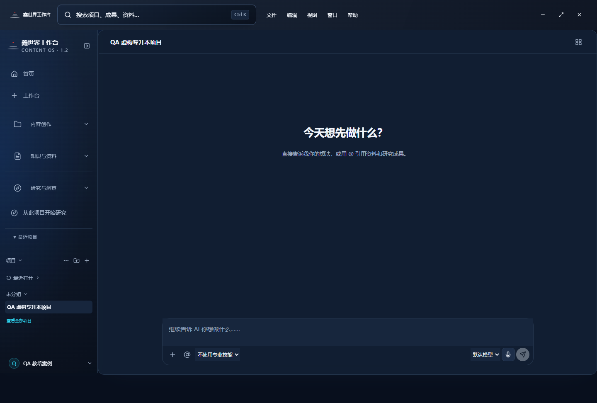
来源：qa-reports/screenshots/core-1440x900.png；历史图片拍摄时间未确认；本轮实拍时间见 screenshot-register.json。

/dashboard?project=<id>&node=artifact:<id>
历史 QA 成果窗口显示 V2；截图只说明曾有该界面，不证明本轮恢复或刷新通过。
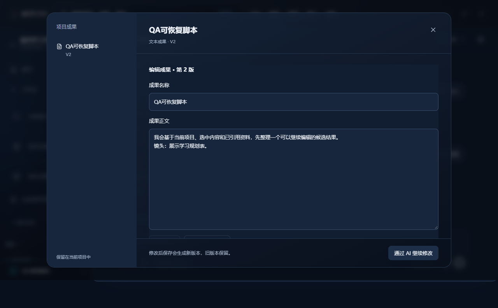
来源：qa-reports/screenshots/restored-artifact.png；历史图片拍摄时间未确认；本轮实拍时间见 screenshot-register.json。

/home（历史样式）
历史运营驾驶舱演示截图仍显示“演示模式”；当前源码 showDataSource=false，与截图存在版本差异。所有数字不得作为经营成果。
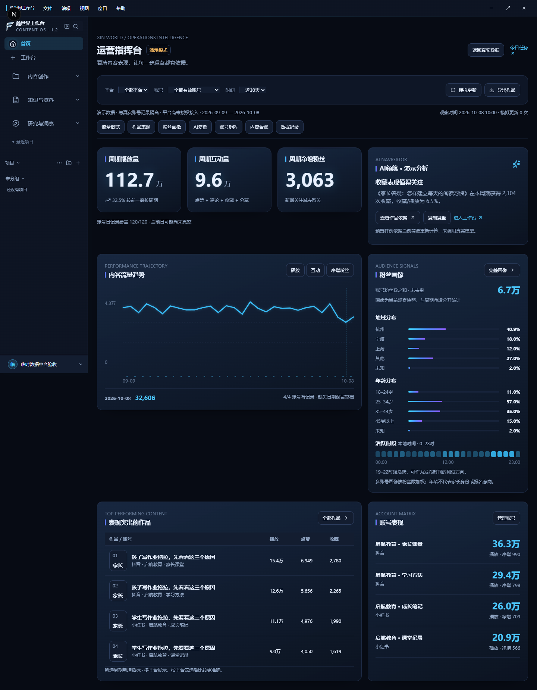
来源：output/home-performance/regression/登录首页-新版驾驶舱.png；历史图片拍摄时间未确认；本轮实拍时间见 screenshot-register.json。

/library/feishu
历史飞书连接与检索界面。当前知识库浏览和订阅可能已变化，截图不证明同步成功。
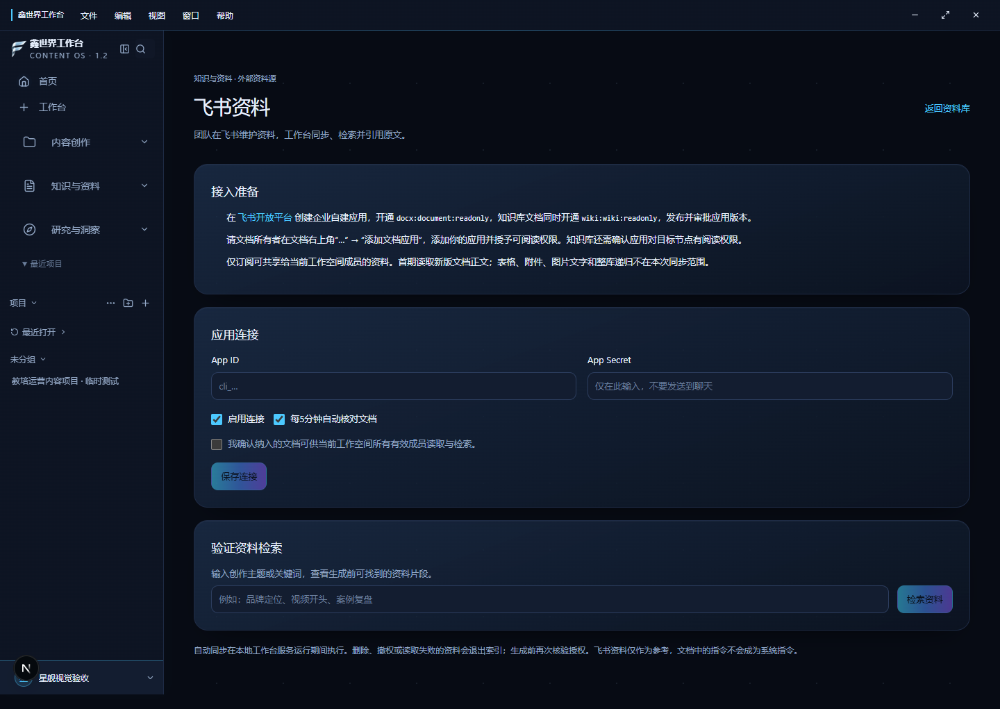
来源：output/starship-ui/verification/全站-09-library.png；历史图片拍摄时间未确认；本轮实拍时间见 screenshot-register.json。

研究导航布局预览
图片自身明确“导航效果预览 未连接业务数据”，不是研究报告或真实业务页面验证。
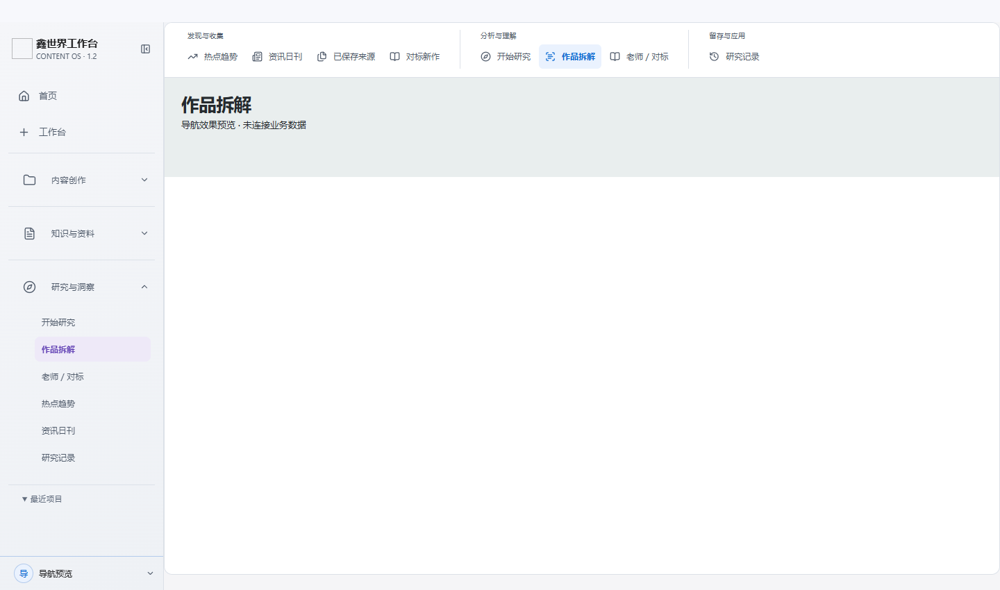
来源：output/research-navigation-preview/navigation-1440.png；历史图片拍摄时间未确认；本轮实拍时间见 screenshot-register.json。

/settings（历史隔离预览）
历史设置弹层，标注隔离预览/样例；不证明账号、空间和配置操作有效。
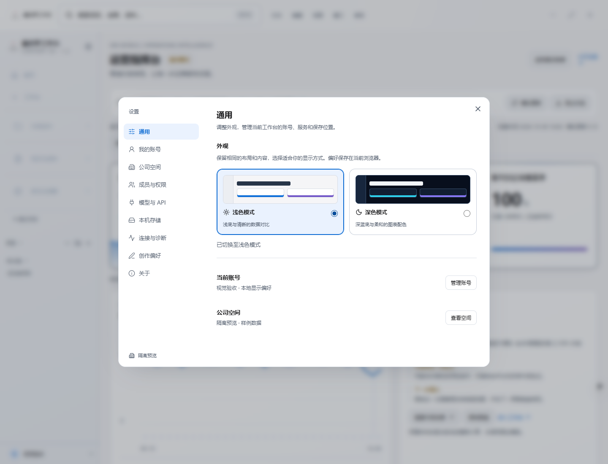
来源：output/ui-cockpit/settings-light.png；历史图片拍摄时间未确认；本轮实拍时间见 screenshot-register.json。

/login 本轮访客实拍
2026-10-10 在本机 3022 未登录浏览器实际渲染；仅验证登录页展示，没有提交登录或验证账号功能。该服务运行版本尚未与工作树构建核对。
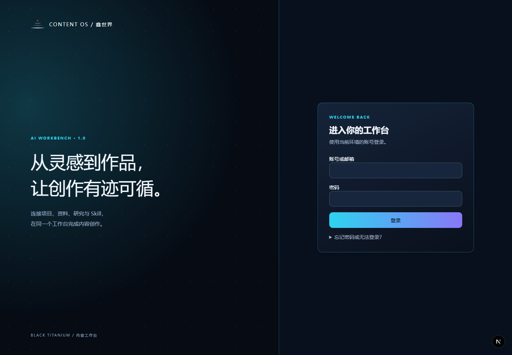
来源：docs/product-review/2026-10-10/full-page-audit/screenshots/current-login.png；历史图片拍摄时间未确认；本轮实拍时间见 screenshot-register.json。

/account/invite 本轮访客实拍
本轮不带邮件 token 的实际页面显示链接缺失或失效，提交禁用；仅验证空链接页面展示，未验证成功路径。
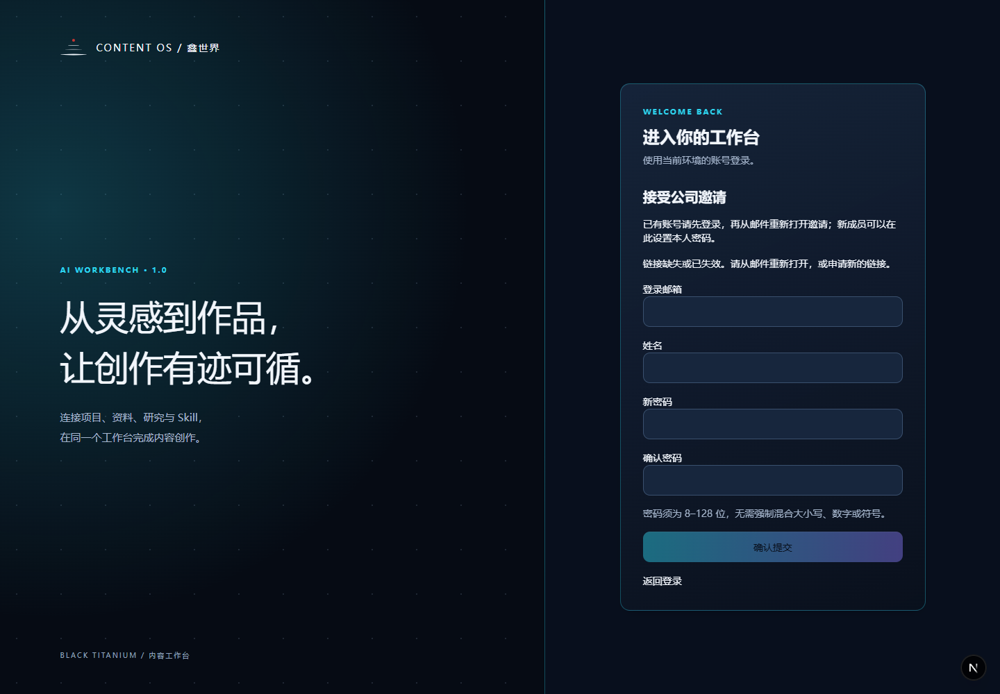
来源：docs/product-review/2026-10-10/full-page-audit/screenshots/current-account-invite.png；历史图片拍摄时间未确认；本轮实拍时间见 screenshot-register.json。

/account/recovery 本轮访客实拍
本轮实际页面显示邮件服务未配置，申请恢复邮件按钮禁用；未提交恢复请求。
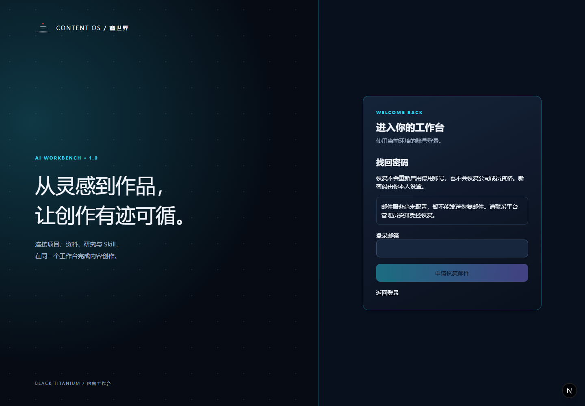
来源：docs/product-review/2026-10-10/full-page-audit/screenshots/current-account-recovery.png；历史图片拍摄时间未确认；本轮实拍时间见 screenshot-register.json。

/account/reset 本轮访客实拍
本轮不带邮件 token 的实际页面显示链接缺失或失效，提交禁用；仅验证空链接页面展示，未验证成功路径。
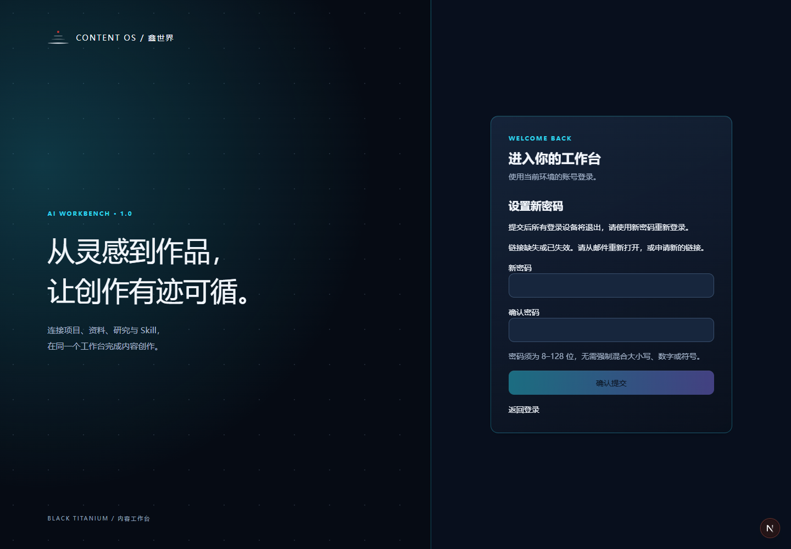
来源：docs/product-review/2026-10-10/full-page-audit/screenshots/current-account-reset.png；历史图片拍摄时间未确认；本轮实拍时间见 screenshot-register.json。

/account/verify 本轮访客实拍
本轮不带邮件 token 的实际页面显示链接缺失或失效，提交禁用；仅验证空链接页面展示，未验证成功路径。
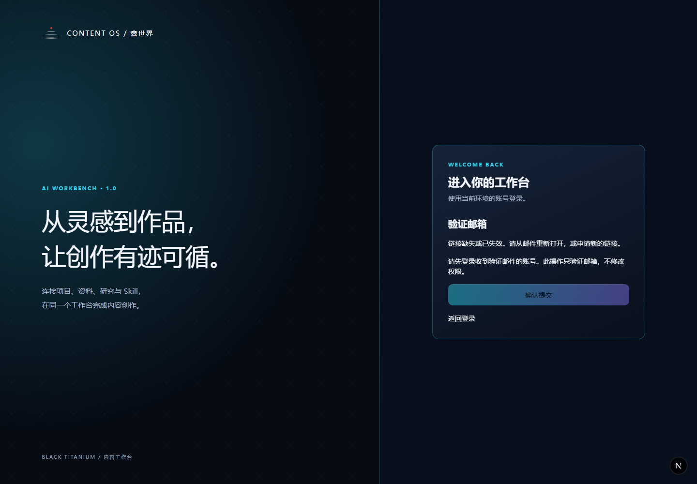
来源：docs/product-review/2026-10-10/full-page-audit/screenshots/current-account-verify.png；历史图片拍摄时间未确认；本轮实拍时间见 screenshot-register.json。

第三部分 前端控件与后端 API 映射
下面是主要业务链路的人工语义核对。附录 A 展开每页控件和请求调用；附录 B 列出全部 196 个 API 的 Method、直接导入 Service、Prisma 对象与前端引用。SSR 读取与 Server Action 单独注明，不捏造 REST API。
| 功能与控件 | 前端函数 | Method 与路径 | 后端 Service | 数据对象 | 业务作用与限制 |
|---|---|---|---|---|---|
| 资料上传 | HomeComposer.upload / StudioDefaultMethod.upload | POST /api/source-items/upload | source-upload.ts → 入库/处理任务 | SourceItem、SourceAsset、IngestJob、Transcript | 文件读取、转录依赖存储及后台；不能以卡片存在认定读取成功 |
| 资料准备检查 | HomeComposer 中轮询包装 request | POST /api/creation/sources；POST /api/ingest-jobs/[id]/retry | creation/sources 与 ingest 服务 | SourceItem、IngestJob | 就绪/失败状态决定能否开始，不自动把失败输入当有效资料 |
| 开始项目 | WorkbenchStart.start / NewProjectDialog | POST /api/projects | project-service.createProject | ContentProject、ProjectSource、ProjectMethodSelection、CreativeBrief | 含资料、多个 methodVersionIds、模型与请求去重；创建和场景编排耦合 |
| 项目加载 | DashboardPage → loadWorkbenchPageData | SSR 直接调用；不是浏览器 REST 请求 | workbench-page-data → 项目、对话及成果读模型 | ContentProject、AssistantThread、Artifact、DraftBranch | 加载真实持久对象需数据库、登录和空间资格 |
| AI 对话 | StudioDefaultMethod.send / 加载 useEffect | GET/POST /api/projects/[id]/assistant | assistant/service → AIControlService | AssistantThread、AssistantMessage、AIRun、ApiUsage | 返回流式状态；真实响应需可用模型；停止按钮主要 abort 客户端流，不证明后台所有任务停止 |
| Skill 选择与跳过 | HomeComposer.submit / StudioDefaultMethod 的 select | POST /api/projects 的 methodVersionIds；POST assistant 的可选 skillVersionId | project-service、assistant/service、ai/skill-resolver | MethodAsset、MethodVersion、ProjectMethodSelection、MethodUsage | 创建入口多选；当前对话 select 单选且有空值“不使用专业技能” |
| 已有内容引用 | StudioDefaultMethod 引用搜索与 send | GET /api/projects/[id]/assistant/references；POST assistant | assistant/references、context-builder-v2 | SourceItem、ResearchRun、Artifact、KnowledgeEntry、BenchmarkAccount、TrendSnapshot | 用户选择引用；引用项可移除。飞书检索与授权片段另经上下文注入 |
| 保存 AI 回答 | StudioDefaultMethod.saveResult / 成果命名弹窗 onSave | POST /api/projects/[id]/artifacts | artifacts/service.createTextArtifact | Artifact、DraftBranch、DraftRevision、AssistantMessage | 只有可保存的完成回答；取消命名不保存；通用类型仅 TEXT |
| 手工成果修改 | ArtifactEditor → useArtifactEditor.save | PUT /api/projects/[id]/artifacts/[artifactId] | artifacts/service → writeDraftRevisionInTransaction | Artifact、DraftBranch、DraftRevision | expectedVersion 防过期写入；保存追加历史，不等于已实测无冲突 |
| 局部 AI 修改 | 成果正文 onSelect → selectedScope → StudioDefaultMethod.send/saveResult | POST assistant（editScope）；POST /api/projects/[id]/artifacts/[artifactId]/revisions | assistant/service 与 artifacts/service | AssistantMessage、Artifact、DraftRevision | 选区包含 start/end/expectedVersion；需保存后选区且未锁定；前后文本保护逻辑仍待运行 |
| 成果锁定 | useArtifactEditor.changeSavedVersion("lock") | PATCH /api/projects/[id]/artifacts/[artifactId] | artifacts/service | Artifact、DraftBranch | UI 与服务有写权限/锁定限制；不能以按钮禁用替代服务端隔离 |
| 历史与恢复 | useArtifactEditor.loadHistory / changeSavedVersion("restore") | GET/POST /api/projects/[id]/artifacts/[artifactId]/history | artifacts/service.getArtifactHistory / restoreArtifactRevision | Artifact、DraftRevision、DraftBranch | 恢复写成新版本，保留旧历史；刷新与重登后读回待测试 |
| 导出 | useArtifactEditor.download | 本地 Blob 下载；不调用专用 API | 无；使用已保存 ArtifactView | 已保存标题及正文 | 明确导出已保存版本；未保存编辑不自动进入下载 |
| 研究启动与保存 | ResearchComposer.submit / session 运行控件 | POST /api/research/sessions；POST /api/research/sessions/[id]/runs；POST /runs/[runId] | research/service 与运行编排 | ResearchSession、ResearchRun | 私人会话；启动、失败、补问、保存分开 |
| 研究进入项目 | ResearchUseFindings.prepare/share；ResearchShare.share | GET/POST /api/research/creation；POST /api/research/results/[runId]/share；旧 study share | research/sharing 与 read-model → createSharedArtifact | ResearchRun、BenchmarkStudy、Artifact、DraftBranch、AuditLog | 带入待发送文字与分享成项目成果是两种操作；预览、排除私人区块、重复分享保护在源码中 |
| 飞书资料引用 | FeishuLibrary.load/action/search；WikiBrowser 浏览；Subscriptions 查询 | GET /api/feishu（q 检索或 subscriptionId）；POST /api/feishu（action）；POST /api/feishu/browse | feishu/service、runtime、knowledge/feishu-context 与 integrations/feishu | FeishuConnection、FeishuDocument、FeishuChunk、FeishuSubscription | 仅授权 Docx/Wiki 内容；浏览、订阅、同步、检索、生成前访问核验分别待实测 |
| 选题→项目 | ContentHub.submit(action="topic.project") | POST /api/content-hub | content-governance.mutateHub | ContentTopic、Version、Decision、ContentProject、ProjectSource | 批准、事实有效性和 revision 前提；不是旧 ContentIdea 直接同义入口 |
| 人工运营数据 | VideoCenter.mutate / CSV 预览保存；Analytics 加载 | GET/POST /api/video-data | video-operations/service | VideoAccount、VideoDailyMetric、VideoContent、VideoTask | 手工/CSV 日快照；规则摘要没有调用真实模型 |
| 审核与发布任务 | PlatformReviewWorkspace / AddToPublishingButton / PublishTaskWorkspace | 平台 review 与 publish-tasks API（见目录） | review/service、publishing/publish-task-service | PlatformVariant、ReviewRecord、PublishTask、MotherContent | 人工审核与发布状态登记；人工复制到真实平台，未证明自动发布或自动回流数据 |
| 登录与初始化 | AuthForm.submit → authClient.signIn.email；OnboardingForm → createWorkspaceAction | POST /api/auth/sign-in/email（认证 SDK）；POST /api/internal-signup；初始化为 Next Server Action | lib/auth、internal-signup、onboarding/actions | User、Session、Account、Workspace、WorkspaceMember | 登录 API 不由普通 fetch 提取覆盖；注册受环境开关控制 |
| 账号安全页面 | AccountSecurityForm.submit（按 kind 选择路径与 Method） | 找回 POST /api/account/recovery；重置 PATCH /api/account/recovery；验证 PATCH /api/account/verification；邀请 POST /api/account/invitation | account-security.requestPasswordRecovery / finishPasswordRecovery / finishEmailVerification / acceptInvitation | User、Session、WorkspaceMember、恢复/验证/邀请安全记录 | 本轮只观察到缺少 token 的禁用状态及邮件服务未配置提示；未提交恢复、验证、邀请或密码更新 |
自动提取会保留动态 URL 和包装函数的原表达式。模板路径匹配、同名处理函数关联及 Service 文件内 Prisma 调用都是候选证据；同一个 Service 的全部对象不一定被某次调用读取或写入。代码中的函数存在、API 声明和页面接入分别记录；候选映射不能转为验收通过。
第四部分 跨模块功能关联流程
持续工作主线
资料上传/链接/文本 → 读取与转录就绪 → 在工作台输入任务并创建项目 → 附加资料及可选 Skill/模型 → 项目 AI 对话 → 查看生成候选 → 选择全文或已保存成果选区继续修改 → 明确保存为 Artifact → 修改保存追加 DraftRevision → 历史恢复追加新版本 → 从项目列表或最近项目再次打开 → 读取同一项目对话与已保存成果继续编辑。
| 阶段 | 明确用户动作 | 持久化及关联 | 断点或待核验项 |
|---|---|---|---|
| 资料输入→项目 | 上传/选择资料；就绪后发送任务 | SourceItem → ProjectSource → ContentProject | 文件读取失败不能只凭上传卡片宣称可用；Worker、存储、转录依赖待运行 |
| 项目→AI 对话 | 发送任务、补问、引用资料/研究/成果 | AssistantThread/Message 与 projectId 关联 | 真实 Provider、流式失败与停止后的后台状态待运行 |
| AI 对话→内容生成 | 选择模型，可跳过 Skill；等待回答 | AIRun/ApiUsage/完成消息 | 预置模板只填提示词，不等于生成成果；旧口播生成是另一兼容路径 |
| 生成→局部修改 | 已保存未锁定成果选择正文范围，发送修改，再应用 | editScope 与 expectedVersion，回复通过 revisions 应用 | 选区外文本保护、过期版本拒绝、失败不覆盖待运行 |
| 保存→版本恢复 | 命名保存；手工修改保存；查看历史并恢复 | Artifact + DraftBranch + 追加 DraftRevision | 锁定、角色、并发冲突、恢复后标题/正文一致性待运行 |
| 恢复→再次继续 | 打开最近项目/项目列表；选择成果并继续 AI 修改 | SSR/GET 重新读取对话、引用、成果与版本 | 刷新、退出重登、多标签、未保存离开拦截待运行 |
研究成果进入项目
“带入创作”先让用户选择结论并准备待发送内容，用户确认后发送；“分享进入项目”先预览共享内容，再创建项目 Artifact。两者分别处理私人研究输入与成员可见成果，不能把一次分享理解成全私人会话公开。旧 BenchmarkStudy 与 ResearchRun 有不同来源字段。apps/web/components/research/research-use-findings.tsx 和 apps/web/server/research/sharing.ts 具有选中区块、私有内容排除、项目范围、审计记录及重复分享保护代码；实际共享边界仍待验证。
Skill 选择与跳过
创建入口传 methodVersionIds 数组，可 0 个或多个；项目对话当前使用单个 select 和可选 skillVersionId，包含“不使用专业技能”。因此“0 Skill 可工作”有 UI/服务基础，组合技能的全程交互仍需核验。旧 GENERATE_MOTHER_CONTENT 的 defaultMethod fallback 属 LEGACY COMPATIBILITY，不是通用 Agent 的必选规则。
飞书资料引用
连接应用 → 确认空间共享范围 → 浏览 Wiki/订阅 Docx → 同步为 FeishuDocument/Chunk → 检索授权片段 → ContextBuilder/feishu-context 在生成前供给引用。同步缓存不保证源文档仍可访问；源码包含访问与策略检查，但真实撤权、删除、限流、更新时间与证据引用需要获授权环境验证。凭证只供服务端保存，不因 UI 隐藏就视为安全完成。
选题与工作台
ContentTopic 路径：手工整理判断与事实 → 九维评分/否决项 → 人工批准 → topic.project 创建项目并关联资料 → dashboard 持续创作。ContentIdea 路径：研究/趋势/推荐的选题候选 → 旧选题详情 → 关联项目。两类对象共存，不能把前者的审核约束直接外推到后者。趋势机会页还要求项目与自有资料范围。
审核 发布 数据分析
选题审核 → 项目；旧母稿确认 → 选定平台适配稿 → 平台人工审核 → 发布快照与排期 → 用户复制并人工登录平台发布 → 手动登记已发布。VideoAccount/VideoDailyMetric 则由人工或 CSV 维护，数据摘要为规则计算。本轮没有证据证明“自动发布→平台已发布作品→自动数据快照→AI 复盘→下一轮创作”已经连通；该完整经营域为 FUTURE。
第五部分 实际实现状态与未完成部分
| 发现 | 证据 | 状态与影响 | 需要核验或补齐的边界 |
|---|---|---|---|
| 首页演示且来源标識隐藏 | apps/web/app/(app)/home/page.tsx | CURRENT IMPLEMENTATION GAP；initialDemo 与 showDataSource=false | 明确展示/导出/复制来源，不能以演示 KPI 证明效果 |
| 通用文本成果与旧稿件并存 | apps/web/server/artifacts/service.ts；packages/db/prisma/schema.prisma | CURRENT IMPLEMENTATION：ArtifactType 只有 TEXT；MotherContent 兼容存在 | 验证一等成果保存、恢复、再打开；其他成果类型未实现/本轮不新增 |
| 登录页渲染及访客跳转有本轮记录，业务功能无实测通过 | 运行记录 runtime-pages.json 与 runtime-probe.json | 沙箱内连接探测不可靠；本机只读复核：3022/55438/19020 可达，3000/3001 关闭；当前服务身份与构建一致性待核验 | 复用获授权测试会话后补业务页面截图与关键流程；访客跳转不能证明已登录权限或功能 |
| 资料详情仍拥有分析和提炼 | apps/web/server/material-detail/service.ts | CURRENT IMPLEMENTATION GAP；Material 与 Research 职责交织 | 先决定边界再另立任务，不在审计搬迁 |
| 研究存在通用与多种垂直路径 | apps/web/server/research/service.ts | CURRENT IMPLEMENTATION GAP；非完整统一 Research Runtime | 各模式结果、失败和项目衔接分别验证 |
| 当前 Skill 选择能力不一致 | apps/web/components/home-composer.tsx；apps/web/components/projects/studio-default-method.tsx | 创建多选、对话单选，组合运行待核验 | 0/1/多技能和跳过分别验，不扩大默认 Method 要求 |
| 发布及分析仅局部接通 | [apps/web/app/(app)/calendar/tasks/[id]/page.tsx](<E:/AI工作台1.2/apps/web/app/(app)/calendar/tasks/[id]/page.tsx>)；apps/web/server/video-operations/service.ts | 部分实现；人工发布/人工和 CSV 快照，完整经营域 FUTURE | 不得称自动发布、实时监控或真实模型复盘 |
| 连接诊断只检查部分状态 | apps/web/components/settings-diagnostics.tsx | 部分实现；配置与真实 Provider 连通分开 | 真实 Provider 测试在 integrations；完整告警/SLA 待核验 |
| 备份/License/桌面交付 | PRODUCT.md | FUTURE；未实现完整商业授权/一致备份/桌面交付 | 本机目录管理与 Workspace 基础不等于上述能力 |
| 权限隔离不能整体认证 | ARCHITECTURE.md；apps/web/server/access.ts | 局部服务有 scope 检查；Recommendation 个性化读取是已知 GAP | 相关 API 的跨空间、只读、停用用户/空间应分别运行验证 |
入口存在但效果有限或可能无效果的单独登记
| 入口或控件 | 实际源码行为 | 本轮结论 |
|---|---|---|
| 顶部 编辑→编辑创作描述 | app-shell.tsx 使用 document.getElementById("workbench-idea")?.focus()，没有目标即静默跳过 | 在无该输入框的页面可能点击无可见效果；待运行，不冒充全局编辑功能 |
| 顶部右上角 关闭浮层 | 只 setMenu(null)/setNotice("") | 不关闭浏览器或桌面窗口；无浮层时可能无可见变化 |
| 工作台/项目侧栏多处新建 | 各入口最终创建同类 ContentProject | 重复入口，是否冗余需看场景；不记为多项独立功能 |
| 更多研究能力 | material-workspace.tsx 显示“即将支持”，没有真实结果或任务 | 未实现的展示占位；不得列为已交付研究能力 |
| 加入发布中心 disabled 分支 | 发布前置条件不满足时按钮禁用 | 有入口但不可执行；应核验禁用理由，不误报空回调 |
| 资料读取/AI 服务不可用分支 | 组件显示错误并禁用发送或前置操作 | 配置缺失/失败时不可用；存在代码不等于正常运行 |
| 跳到主要内容/编辑大纲等 # 链接 | 页面锚点导航 | 不是空 href；是否命中目标需运行核验 |
静态提取没有找到可达 button/Button 的字面空 onClick 回调，但这不等于全部按钮有效。另有 13 处没有直接事件的候选，主要是原生表单提交、asChild 链接或静态禁用按钮，已在附录 C 逐项解释，不能自动判为故障。
第六部分 功能重复与冗余分析
| 关系 | 重复程度 | 保留价值与风险 | 评审建议 |
|---|---|---|---|
| /projects/[id]、/studio 与 /dashboard?project=id | 兼容 URL 指向同一工作区 | 保留旧链接和数据，不是三个编辑器 | 保留兼容；后续独立治理 |
| 设置整页与拦截弹层 | 同路径、同功能、不同呈现容器 | 支持不离开项目继续工作；页面计数应去重 | 保留两种容器并统一验收口径 |
| /platform/accounts 与 /admin/users | 直接转导出同一页面 | 历史平台管理链接有兼容价值 | 优化入口说明，删除须另获授权 |
| 选题中心 ContentTopic 与旧选题库 ContentIdea | 主题相邻但对象和审核不同 | 评分/事实/人工审批不能简单删去；研究候选需要项目衔接 | 优化边界，先核对迁移与历史对象 |
| 研究来源详情与资料详情 | 原文/来源/笔记部分重叠 | 资料负责读出来，研究负责研究明白 | 按权威职责优化；不在本轮搬迁 |
| 旧 Discovery trends 与研究 trends | 榜单/选题机会有重叠，非简单同页别名 | 旧页面仍含生成/证据路径 | MERGE_CANDIDATE，仅提议统一入口与对象 |
| 主页演示指挥台与 /short-video | 共用 VideoAnalyticsWorkspace | 首页职责偏离；隐藏来源会影响管理层判断 | 优先优化来源标识及首页职责 |
| IP 背景、CreatorProfile、对话身份偏好 | 身份信息相邻，隐私与作用域不同 | 团队背景与私人偏好不能混为一个共享档案 | 优化命名/作用域说明，保留权限区别 |
| Artifact、DraftBranch、MotherContent、Canvas | 编辑/版本/保存能力交叠，底层互有依赖 | 共享草稿修订支撑成果；兼容路径仍被审核发布引用 | 保留通用成果优先级；旧对象待 Core V1 后专项治理 |
| 新建项目：顶部、侧栏、项目页、工作台 | 相同业务的不同上下文入口 | 快捷创建、组织选择、任务起步各有价值 | 复用服务、解释场景；不按数量直接删 |
第七部分 保留 优化 延期建议
保留六个核心对象及其持续工作主线，先用真实保存、修改、恢复和再次打开证明价值。优化属于后续明确任务；延期表示本阶段不扩张，不是取消 FUTURE 规划或删除现存兼容能力。
| 建议 | 对象 | 判断依据 | 下一次验收应证明 |
|---|---|---|---|
| 保留 | 项目/对话/资料/研究/可选 Skill/文本成果 | 与 PRODUCT PRINCIPLE 一致 | 输入→对话→保存→修订→恢复→重登继续，在隔离环境真实运行 |
| 优化优先 | 首页数据来源标识与入口职责 | 演示数据当前隐藏来源标识，与 Home 职责存在 GAP | 页面、复制、导出都可明确辨别演示；快速找到工作 |
| 优化优先 | 项目成果持久化与离开保护 | 持续工作价值依赖不丢内容 | 并发冲突不覆盖、失败保留草稿、恢复追加版本、刷新重登一致 |
| 优化 | 研究选中结论带入创作和审阅分享 | 私人研究与团队成果应分开 | 未确认不分享，私人段落不泄露，重复操作不覆盖已有成果 |
| 优化 | 资料处理状态与引用可靠性 | 未就绪资料会阻断主线 | 上传失败/读取失败/重试/就绪显示与服务一致 |
| 优化 | Skill 数量与跳过说明 | 创建多选与对话单选口径不同 | 0/1/多 Skill 的实际任务范围清楚；不用技能照样能工作 |
| 保留并优化 | 知识事实治理、人工审核、角色和 scope | 有业务与权限价值，不能简单当冗余按钮删除 | 角色、有效期、双人确认、归档来源和服务端范围核验 |
| 保留兼容 | 旧 Studio/MotherContent/Discovery/Canvas 路径 | 仍有数据和调用依赖；LEGACY 文档约束 | 明确兼容边界，另立任务核对迁移和旧链接 |
| 延期扩展 | 自动发布、真实平台数据闭环、模型经营复盘 | 现有仅局部代码，权威 FUTURE | 正式模块任务定义外部授权、数据快照、结果回流与反馈 |
| 延期扩展 | License、席位设备、完整备份恢复、桌面交付 | FUTURE/TARGET ARCHITECTURE，非本轮施工范围 | 单独定义交付与权限验收，不以本机文件设置替代 |
原 feature-decisions 的 85 条候选完整保留于附录 D 和功能取舍 CSV 中；其中未命名槽位不是实际功能发现，本次不补造名称。建议只作为会议底稿。
第八部分 可由上级填写决定的功能取舍表
请选择“保留、优化、延期、合并候选、删除候选、待核验”，填写负责人、优先级、理由与验收条件。合并/删除候选不授权立即施工，需另立任务；对产品定义的改变还需经批准的 Governance Update。所有决定初始为空。HTML 可填写并导出 CSV；输入只保存到当前浏览器的审计报告存储，不更新业务系统。
| 编号 | 模块与功能 | 路径 | 当前状态 | 建议 | 上级决定 | 负责人 | 优先级 | 理由及验收条件 |
|---|---|---|---|---|---|---|---|---|
| P011 | 账户设置与管理员 / 管理员入口 | /admin | 代码存在；访问依赖系统角色 | 保留并定向核验 | 待填写 | 待填写 | 待填写 | 待填写 |
| P012 | 账户设置与管理员 / 系统服务管理 | /admin/system | 代码存在；SYSTEM_ADMIN 专用 | 保留并定向核验 | 待填写 | 待填写 | 待填写 | 待填写 |
| P013 | 账户设置与管理员 / 调用用量 | /admin/usage | 部分实现；不等于供应商结算账单 | 优化；延期扩展 | 待填写 | 待填写 | 待填写 | 待填写 |
| P014 | 账户设置与管理员 / 系统用户管理 | /admin/users | 代码存在；SYSTEM_ADMIN 专用 | 保留并定向核验 | 待填写 | 待填写 | 待填写 | 待填写 |
| P015 | 内容创作 / 发布中心 | /calendar | 部分实现；非平台自动发布 | 优化；延期扩展 | 待填写 | 待填写 | 待填写 | 待填写 |
| P016 | 内容创作 / 发布任务详情 | /calendar/tasks/[id] | 部分实现；明确要求人工登录真实平台 | 优化；延期扩展 | 待填写 | 待填写 | 待填写 | 待填写 |
| P017 | 内容创作 / 选题审核 | /content-review | 代码存在；与平台成稿审核分开 | 保留并定向核验 | 待填写 | 待填写 | 待填写 | 待填写 |
| P018 | AI 工作台 / 开始工作及项目协作 | /dashboard | 代码存在；真实模型与持久闭环待核验 | 保留并定向核验 | 待填写 | 待填写 | 待填写 | 待填写 |
| P019 | 其他与兼容入口 / 旧对标入口 | /discovery/benchmarks/[id] | LEGACY COMPATIBILITY | 保留兼容；待专项治理 | 待填写 | 待填写 | 待填写 | 待填写 |
| P020 | 其他与兼容入口 / 旧选题库 | /discovery/ideas | 代码存在；与选题中心需评审边界 | 保留兼容；待专项治理 | 待填写 | 待填写 | 待填写 | 待填写 |
| P021 | 其他与兼容入口 / 研究选题详情 | /discovery/ideas/[id] | 代码存在；待核验 | 保留并定向核验 | 待填写 | 待填写 | 待填写 | 待填写 |
| P022 | 其他与兼容入口 / 旧研究入口 | /discovery | LEGACY COMPATIBILITY | 保留兼容；待专项治理 | 待填写 | 待填写 | 待填写 | 待填写 |
| P023 | 其他与兼容入口 / 推荐详情 | /discovery/recommendations/[id] | 代码存在；个性化范围为已知 CURRENT IMPLEMENTATION GAP | 保留并定向核验 | 待填写 | 待填写 | 待填写 | 待填写 |
| P024 | 其他与兼容入口 / 旧趋势工作区 | /discovery/trends | LEGACY COMPATIBILITY；与新趋势入口重叠 | 保留兼容；待专项治理 | 待填写 | 待填写 | 待填写 | 待填写 |
| P025 | 其他与兼容入口 / 旧趋势详情 | /discovery/trends/[key] | LEGACY COMPATIBILITY；待核验 | 保留兼容；待专项治理 | 待填写 | 待填写 | 待填写 | 待填写 |
| P026 | 首页 / 运营指挥台 | /home | 部分实现；与 Home 产品职责存在 CURRENT IMPLEMENTATION GAP | 优化；延期扩展 | 待填写 | 待填写 | 待填写 | 待填写 |
| P027 | 知识与资料 / IP 背景信息 | /ip-context | 代码存在；与私人创作偏好含相邻语义 | 保留并定向核验 | 待填写 | 待填写 | 待填写 | 待填写 |
| P028 | 知识与资料 / 事实确认 | /knowledge/facts | 代码存在；权限和双人确认待核验 | 保留并定向核验 | 待填写 | 待填写 | 待填写 | 待填写 |
| P029 | 知识与资料 / 知识中心 | /knowledge | 代码存在；不是已验收的全域语义检索 | 保留并定向核验 | 待填写 | 待填写 | 待填写 | 待填写 |
| P030 | 知识与资料 / 飞书资料 | /library/feishu | 代码存在；真实授权、撤权和时效待核验 | 保留并定向核验 | 待填写 | 待填写 | 待填写 | 待填写 |
| P031 | 知识与资料 / Skill 管理 | /library/methods | 代码存在；可跳过技能 | 保留并定向核验 | 待填写 | 待填写 | 待填写 | 待填写 |
| P032 | 知识与资料 / Skill 详情 | /library/methods/[id] | 代码存在；待核验 | 保留并定向核验 | 待填写 | 待填写 | 待填写 | 待填写 |
| P033 | 知识与资料 / 资料库 | /library | 代码存在；处理结果与任务运行待核验 | 保留并定向核验 | 待填写 | 待填写 | 待填写 | 待填写 |
| P034 | 知识与资料 / 资料详情 | /library/[id] | 部分实现；MaterialAnalysis/Distillation 与 Research 边界未收敛 | 保留并定向核验 | 待填写 | 待填写 | 待填写 | 待填写 |
| P035 | 知识与资料 / 方法兼容入口 | /projects/methods | LEGACY COMPATIBILITY；代码存在 | 保留兼容；待专项治理 | 待填写 | 待填写 | 待填写 | 待填写 |
| P036 | 项目与成果管理 / 新项目表单 | /projects/new | 代码存在；与工作台/侧栏创建入口重复 | 保留并定向核验 | 待填写 | 待填写 | 待填写 | 待填写 |
| P037 | 项目与成果管理 / 项目列表 | /projects | 代码存在；待核验 | 保留并定向核验 | 待填写 | 待填写 | 待填写 | 待填写 |
| P038 | 项目与成果管理 / 项目兼容入口 | /projects/[id] | LEGACY COMPATIBILITY；代码存在 | 保留兼容；待专项治理 | 待填写 | 待填写 | 待填写 | 待填写 |
| P039 | 内容创作 / 平台成稿审核 | /projects/[id]/review/[platform] | 部分实现；非自动平台发布 | 保留并定向核验 | 待填写 | 待填写 | 待填写 | 待填写 |
| P040 | 项目与成果管理 / Studio 兼容入口 | /projects/[id]/studio | LEGACY COMPATIBILITY；代码存在 | 保留兼容；待专项治理 | 待填写 | 待填写 | 待填写 | 待填写 |
| P041 | 研究与洞察 / 老师与对标 | /research/benchmarks | 代码存在；不等于自有创作者账号经营管理 | 保留并定向核验 | 待填写 | 待填写 | 待填写 | 待填写 |
| P042 | 研究与洞察 / 账号研究工作区 | /research/benchmarks/[id] | 代码存在；待核验 | 保留并定向核验 | 待填写 | 待填写 | 待填写 | 待填写 |
| P043 | 研究与洞察 / 对标作品详情 | /research/benchmarks/[id]/works/[workId] | 代码存在；有元数据不等于已读正文 | 保留并定向核验 | 待填写 | 待填写 | 待填写 | 待填写 |
| P044 | 研究与洞察 / 专项研究 | /research/focus | 代码存在；隐藏/页内入口 | 保留并定向核验 | 待填写 | 待填写 | 待填写 | 待填写 |
| P045 | 研究与洞察 / 专项研究结果 | /research/focus/[runId] | 代码存在；未深拆作品不当成已读正文 | 保留并定向核验 | 待填写 | 待填写 | 待填写 | 待填写 |
| P046 | 研究与洞察 / 开始研究 | /research/new | 代码存在；研究执行依赖后台及模型 | 保留并定向核验 | 待填写 | 待填写 | 待填写 | 待填写 |
| P047 | 研究与洞察 / 资讯日刊 | /research | 代码存在；采集时效与真实内容待核验 | 保留并定向核验 | 待填写 | 待填写 | 待填写 | 待填写 |
| P048 | 研究与洞察 / 研究记录 | /research/results | 代码存在；不是通用 Artifact 列表 | 保留并定向核验 | 待填写 | 待填写 | 待填写 | 待填写 |
| P049 | 研究与洞察 / 研究成果阅读 | /research/results/[kind]/[id] | 代码存在；分享不等于整个私人会话公开 | 保留并定向核验 | 待填写 | 待填写 | 待填写 | 待填写 |
| P050 | 研究与洞察 / 研究会话 | /research/session/[id] | 代码存在；隐私边界与运行待核验 | 保留并定向核验 | 待填写 | 待填写 | 待填写 | 待填写 |
| P051 | 研究与洞察 / 已保存来源 | /research/sources | 代码存在；页内入口，非一级侧栏 | 保留并定向核验 | 待填写 | 待填写 | 待填写 | 待填写 |
| P052 | 研究与洞察 / 研究来源详情 | /research/sources/[id] | 代码存在；深度理解与资料详情存在相邻能力 | 保留并定向核验 | 待填写 | 待填写 | 待填写 | 待填写 |
| P053 | 研究与洞察 / 作品拆解 | /research/teardown | 代码存在；真实视频与恢复路径待核验 | 保留并定向核验 | 待填写 | 待填写 | 待填写 | 待填写 |
| P054 | 研究与洞察 / 热点趋势 | /research/trends | 代码存在；观察快照非连续实时监控 | 保留并定向核验 | 待填写 | 待填写 | 待填写 | 待填写 |
| P055 | 研究与洞察 / 趋势详情与选题机会 | /research/trends/[stableKey] | 代码存在；生成需明确项目和资料范围 | 保留并定向核验 | 待填写 | 待填写 | 待填写 | 待填写 |
| P056 | 研究与洞察 / 对标新作 | /research/works | 代码存在；本页不触发采集、不自动生成稿件 | 保留并定向核验 | 待填写 | 待填写 | 待填写 | 待填写 |
| P057 | 账户设置与管理员 / 关于 | /settings/about | 代码存在；无专用业务 API | 保留并定向核验 | 待填写 | 待填写 | 待填写 | 待填写 |
| P058 | 账户设置与管理员 / 我的账号 | /settings/account | 代码存在；账户不是创作者平台账号 | 保留并定向核验 | 待填写 | 待填写 | 待填写 | 待填写 |
| P059 | 账户设置与管理员 / 创作偏好 | /settings/creator-profile | 代码存在；与 IP 背景和对话偏好相邻 | 保留并定向核验 | 待填写 | 待填写 | 待填写 | 待填写 |
| P060 | 账户设置与管理员 / 连接与诊断 | /settings/diagnostics | 部分实现；非完整监控告警系统 | 优化；延期扩展 | 待填写 | 待填写 | 待填写 | 待填写 |
| P061 | 账户设置与管理员 / 模型与 API | /settings/integrations | 代码存在；配置存在不代表连通 | 保留并定向核验 | 待填写 | 待填写 | 待填写 | 待填写 |
| P062 | 账户设置与管理员 / 成员与权限 | /settings/members | 代码存在；scope/RBAC 待运行验证 | 保留并定向核验 | 待填写 | 待填写 | 待填写 | 待填写 |
| P063 | 账户设置与管理员 / 通用设置 | /settings | 代码存在；同一内容支持弹层与整页 | 保留并定向核验 | 待填写 | 待填写 | 待填写 | 待填写 |
| P064 | 账户设置与管理员 / 本机文件存储 | /settings/storage | 代码存在；不是数据库与文件的一致备份恢复 | 保留并定向核验 | 待填写 | 待填写 | 待填写 | 待填写 |
| P065 | 账户设置与管理员 / 公司空间 | /settings/workspace | 代码存在；不是完整多机构商业授权 | 保留并定向核验 | 待填写 | 待填写 | 待填写 | 待填写 |
| P066 | 任务与数据分析 / 内容数据中台 | /short-video | 部分实现；经营闭环为 FUTURE | 优化；延期扩展 | 待填写 | 待填写 | 待填写 | 待填写 |
| P067 | 任务与数据分析 / 今日任务 | /short-video/tasks | 代码存在；不是 Agent 自动执行记录 | 保留并定向核验 | 待填写 | 待填写 | 待填写 | 待填写 |
| P068 | 任务与数据分析 / 任务详情 | /short-video/tasks/[id] | 代码存在；页面角色依赖 taskId 条件 | 保留并定向核验 | 待填写 | 待填写 | 待填写 | 待填写 |
| P069 | 内容创作 / 选题中心 | /topics | 代码存在；不是 AI 自动选题的同义入口 | 保留并定向核验 | 待填写 | 待填写 | 待填写 | 待填写 |
| P070 | 账户设置与管理员 / 接受邀请 | /account/invite | 代码存在；需真实邮件与链接 | 保留并定向核验 | 待填写 | 待填写 | 待填写 | 待填写 |
| P071 | 账户设置与管理员 / 找回密码 | /account/recovery | 代码存在；未配置邮件时按钮禁用 | 保留并定向核验 | 待填写 | 待填写 | 待填写 | 待填写 |
| P072 | 账户设置与管理员 / 设置新密码 | /account/reset | 代码存在；需真实恢复 token | 保留并定向核验 | 待填写 | 待填写 | 待填写 | 待填写 |
| P073 | 账户设置与管理员 / 邮箱验证 | /account/verify | 代码存在；不修改空间权限 | 保留并定向核验 | 待填写 | 待填写 | 待填写 | 待填写 |
| P074 | 账户设置与管理员 / 登录 | /login | 代码存在；真实登录待核验 | 保留并定向核验 | 待填写 | 待填写 | 待填写 | 待填写 |
| P075 | 账户设置与管理员 / 内部注册 | /register | 代码存在；开关关闭会返回登录 | 保留并定向核验 | 待填写 | 待填写 | 待填写 | 待填写 |
| P076 | 其他与兼容入口 / 共用体验空间 | /experience | 代码存在；不代表个人私有空间 | 保留并定向核验 | 待填写 | 待填写 | 待填写 | 待填写 |
| P077 | 账户设置与管理员 / 初始化空间 | /onboarding | 代码存在；Server Action，非显式 REST 控件 | 保留并定向核验 | 待填写 | 待填写 | 待填写 | 待填写 |
| P078 | 其他与兼容入口 / 根路径分流 | / | 代码存在；重定向不是功能完成 | 保留并定向核验 | 待填写 | 待填写 | 待填写 | 待填写 |
| P079 | 其他与兼容入口 / 平台账号管理别名 | /platform/accounts | 代码存在；重复入口 | 保留并定向核验 | 待填写 | 待填写 | 待填写 | 待填写 |
| P080 | 账户设置与管理员 / 客户空间管理 | /platform/spaces | 代码存在；License/席位/设备为 FUTURE | 保留并定向核验 | 待填写 | 待填写 | 待填写 | 待填写 |
| P081 | 账户设置与管理员 / 空间不可用恢复 | /workspace-unavailable | 代码存在；待核验 | 保留并定向核验 | 待填写 | 待填写 | 待填写 | 待填写 |
| P082 | 其他与兼容入口 / 开发运行诊断 | /__runtime | 代码存在；仅开发环境入口 | 保留并定向核验 | 待填写 | 待填写 | 待填写 | 待填写 |
完整 CSV 含全部页面行与原有功能候选：function-decisions.csv。
本轮访客页面访问记录
在未登录的 Microsoft Edge 临时浏览器上下文只读访问本机 3022。HTTP 200 若最终显示登录页，只代表登录页响应，不代表原业务页面成功。未登录跳转也不等于已验证已登录用户/工作空间/管理员权限。动态 ID 页没有可复用实体，不编造 ID；/experience 会尝试自动建立会话，本轮未触发。服务环境与工作树构建一致性未核对，不从页面版本字样推断环境身份。
| 请求页面 | 最终路径 | HTTP（最终响应） | 本轮证据 | 业务功能状态 |
|---|---|---|---|---|
| /admin | /login | 200 | 只读导航记录 | 原页面未渲染；回到登录或其他路径，业务待核验 |
| /admin/system | /login | 200 | 只读导航记录 | 原页面未渲染；回到登录或其他路径，业务待核验 |
| /admin/usage | /login | 200 | 只读导航记录 | 原页面未渲染；回到登录或其他路径，业务待核验 |
| /admin/users | /login | 200 | 只读导航记录 | 原页面未渲染；回到登录或其他路径，业务待核验 |
| /calendar | /login | 200 | 只读导航记录 | 原页面未渲染；回到登录或其他路径，业务待核验 |
| /content-review | /login | 200 | 只读导航记录 | 原页面未渲染；回到登录或其他路径，业务待核验 |
| /dashboard | /login | 200 | 只读导航记录 | 原页面未渲染；回到登录或其他路径，业务待核验 |
| /discovery/ideas | /login | 200 | 只读导航记录 | 原页面未渲染；回到登录或其他路径，业务待核验 |
| /discovery | /login | 200 | 只读导航记录 | 原页面未渲染；回到登录或其他路径，业务待核验 |
| /discovery/trends | /login | 200 | 只读导航记录 | 原页面未渲染；回到登录或其他路径，业务待核验 |
| /home | /login | 200 | 只读导航记录 | 原页面未渲染；回到登录或其他路径，业务待核验 |
| /ip-context | /login | 200 | 只读导航记录 | 原页面未渲染；回到登录或其他路径，业务待核验 |
| /knowledge/facts | /login | 200 | 只读导航记录 | 原页面未渲染；回到登录或其他路径，业务待核验 |
| /knowledge | /login | 200 | 只读导航记录 | 原页面未渲染；回到登录或其他路径，业务待核验 |
| /library/feishu | /login | 200 | 只读导航记录 | 原页面未渲染；回到登录或其他路径，业务待核验 |
| /library/methods | /login | 200 | 只读导航记录 | 原页面未渲染；回到登录或其他路径，业务待核验 |
| /library | /login | 200 | 只读导航记录 | 原页面未渲染；回到登录或其他路径，业务待核验 |
| /projects/methods | /login | 200 | 只读导航记录 | 原页面未渲染；回到登录或其他路径，业务待核验 |
| /projects/new | /login | 200 | 只读导航记录 | 原页面未渲染；回到登录或其他路径，业务待核验 |
| /projects | /login | 200 | 只读导航记录 | 原页面未渲染；回到登录或其他路径，业务待核验 |
| /research/benchmarks | /login | 200 | 只读导航记录 | 原页面未渲染；回到登录或其他路径，业务待核验 |
| /research/focus | /login | 200 | 只读导航记录 | 原页面未渲染；回到登录或其他路径，业务待核验 |
| /research/new | /login | 200 | 只读导航记录 | 原页面未渲染；回到登录或其他路径，业务待核验 |
| /research | /login | 200 | 只读导航记录 | 原页面未渲染；回到登录或其他路径，业务待核验 |
| /research/results | /login | 200 | 只读导航记录 | 原页面未渲染；回到登录或其他路径，业务待核验 |
| /research/sources | /login | 200 | 只读导航记录 | 原页面未渲染；回到登录或其他路径，业务待核验 |
| /research/teardown | /login | 200 | 只读导航记录 | 原页面未渲染；回到登录或其他路径，业务待核验 |
| /research/trends | /login | 200 | 只读导航记录 | 原页面未渲染；回到登录或其他路径，业务待核验 |
| /research/works | /login | 200 | 只读导航记录 | 原页面未渲染；回到登录或其他路径，业务待核验 |
| /settings/about | /login | 200 | 只读导航记录 | 原页面未渲染；回到登录或其他路径，业务待核验 |
| /settings/account | /login | 200 | 只读导航记录 | 原页面未渲染；回到登录或其他路径，业务待核验 |
| /settings/creator-profile | /login | 200 | 只读导航记录 | 原页面未渲染；回到登录或其他路径，业务待核验 |
| /settings/diagnostics | /login | 200 | 只读导航记录 | 原页面未渲染；回到登录或其他路径，业务待核验 |
| /settings/integrations | /login | 200 | 只读导航记录 | 原页面未渲染；回到登录或其他路径，业务待核验 |
| /settings/members | /login | 200 | 只读导航记录 | 原页面未渲染；回到登录或其他路径，业务待核验 |
| /settings | /login | 200 | 只读导航记录 | 原页面未渲染；回到登录或其他路径，业务待核验 |
| /settings/storage | /login | 200 | 只读导航记录 | 原页面未渲染；回到登录或其他路径，业务待核验 |
| /settings/workspace | /login | 200 | 只读导航记录 | 原页面未渲染；回到登录或其他路径，业务待核验 |
| /short-video | /login | 200 | 只读导航记录 | 原页面未渲染；回到登录或其他路径，业务待核验 |
| /short-video/tasks | /login | 200 | 只读导航记录 | 原页面未渲染；回到登录或其他路径，业务待核验 |
| /topics | /login | 200 | 只读导航记录 | 原页面未渲染；回到登录或其他路径，业务待核验 |
| /account/invite | /account/invite | 200 | 实际截图：screenshots/current-account-invite.png | 页面渲染实际检查；按钮提交/业务作用仍待核验 |
| /account/recovery | /account/recovery | 200 | 实际截图：screenshots/current-account-recovery.png | 页面渲染实际检查；按钮提交/业务作用仍待核验 |
| /account/reset | /account/reset | 200 | 实际截图：screenshots/current-account-reset.png | 页面渲染实际检查；按钮提交/业务作用仍待核验 |
| /account/verify | /account/verify | 200 | 实际截图：screenshots/current-account-verify.png | 页面渲染实际检查；按钮提交/业务作用仍待核验 |
| /login | /login | 200 | 实际截图：screenshots/current-login.png | 页面渲染实际检查；按钮提交/业务作用仍待核验 |
| /register | /login | 200 | 只读导航记录 | 原页面未渲染；回到登录或其他路径，业务待核验 |
| /onboarding | /login | 200 | 只读导航记录 | 原页面未渲染；回到登录或其他路径，业务待核验 |
| / | /login | 200 | 只读导航记录 | 原页面未渲染；回到登录或其他路径，业务待核验 |
| /platform/accounts | /login | 200 | 只读导航记录 | 原页面未渲染；回到登录或其他路径，业务待核验 |
| /platform/spaces | /login | 200 | 只读导航记录 | 原页面未渲染；回到登录或其他路径，业务待核验 |
| /workspace-unavailable | /login | 200 | 只读导航记录 | 原页面未渲染；回到登录或其他路径，业务待核验 |
| /__runtime | /login | 200 | 只读导航记录 | 原页面未渲染；回到登录或其他路径，业务待核验 |
附录 A 全页面控件与实现证据
P001 · 账户设置与管理员 / 关于 · /settings/about · 设置弹层/关闭槽
P001 账户设置与管理员 关于
| 字段 | 核验说明 |
|---|---|
| 一级模块 | 账户设置与管理员 |
| 二级子模块 | 关于 |
| 页面路径 | /settings/about（设置拦截/关闭槽，非独立页面） |
| 定位及作用 | 展示产品版本和说明 |
| 具体展示内容 | 版本号及静态说明 |
| 当前状态 | 代码存在；无专用业务 API；本轮运行待核验 |
| 数据来源 | package.json 静态版本 |
| 业务数据对象 | 逐请求映射下表列出 Service 直接声明的 Prisma 对象；SSR 读取见直接 Service |
| 页面源码 | apps/web/app/(app)/@settings/(.)settings/about/page.tsx |
| 服务端页面读取 | 页面未直接导入 Service；检查共享布局、客户端请求或转导出 |
| 关联页面/功能 | 无直接 JSX href；重定向/事件导航另查源码 |
| 重复入口 | 与对应 /settings 路由的整页共用；槽关闭页不独立计数 |
| 截图 | 无对应可靠截图；待运行补拍。研究导航预览不作该业务页面截图。 |
| 安全及运行前提 | 受共享布局会话与空间边界、页面权限、Provider/存储/任务状态及控件 disabled/条件分支影响；不由隐藏 UI 保证 |
控件及操作
下表为该页导入图中的控件源码声明，包含条件分支、对话框、错误/空状态和复用组件；动态 map 记录生成器与选项表达式，不按数据条数复制。ContentHub 按 mode 去除明显不适用分支；其他跨组件参数条件保留原表达式，未实测可见性。公共外壳见共享组件附录。
页面无独立操作控件；重定向/只读/关闭槽不据此判为缺失。
前端请求与后端映射
未提取到该页客户端 fetch/显式请求包装调用；可能是 SSR/Server Action/认证 SDK/路由跳转，不应虚构独立 API。直接服务读取见上表。
引用的 UI 与 Hook 源码
apps/web/app/(app)/@settings/(.)settings/about/page.tsx；apps/web/app/(app)/settings/about/page.tsx；apps/web/components/page.tsx
本轮访客导航证据
未运行设置弹层打开操作；与整页路径相同不表示弹层已运行。
P002 · 账户设置与管理员 / 我的账号 · /settings/account · 设置弹层/关闭槽
P002 账户设置与管理员 我的账号
| 字段 | 核验说明 |
|---|---|
| 一级模块 | 账户设置与管理员 |
| 二级子模块 | 我的账号 |
| 页面路径 | /settings/account（设置拦截/关闭槽，非独立页面） |
| 定位及作用 | 管理资料、密码、邮箱与登录设备 |
| 具体展示内容 | 姓名、邮箱、保存、密码操作、验证/恢复及设备会话动作 |
| 当前状态 | 代码存在；账户不是创作者平台账号；本轮运行待核验 |
| 数据来源 | User/Session/Account/Verification |
| 业务数据对象 | 逐请求映射下表列出 Service 直接声明的 Prisma 对象；SSR 读取见直接 Service |
| 页面源码 | apps/web/app/(app)/@settings/(.)settings/account/page.tsx |
| 服务端页面读取 | 页面未直接导入 Service；检查共享布局、客户端请求或转导出 |
| 关联页面/功能 | 无直接 JSX href；重定向/事件导航另查源码 |
| 重复入口 | 与对应 /settings 路由的整页共用；槽关闭页不独立计数 |
| 截图 | 无对应可靠截图；待运行补拍。研究导航预览不作该业务页面截图。 |
| 安全及运行前提 | 受共享布局会话与空间边界、页面权限、Provider/存储/任务状态及控件 disabled/条件分支影响；不由隐藏 UI 保证 |
控件及操作
下表为该页导入图中的控件源码声明，包含条件分支、对话框、错误/空状态和复用组件；动态 map 记录生成器与选项表达式，不按数据条数复制。ContentHub 按 mode 去除明显不适用分支；其他跨组件参数条件保留原表达式，未实测可见性。公共外壳见共享组件附录。
| 控件与条件 | 用户操作 | 前端函数或事件 | API 对应程度 | 源码 |
|---|---|---|---|---|
| {displayName} {2} {80} {busy} 保存 {busy} 取消；条件：editing | 填完字段后提交 | onSubmit: {async event=>{event.preventDefault(); if(submitting.current)return;submitting.current=true; const data=new FormData(event.currentTarget); setBusy(true); try {const value=String(data.get("na | 含本地状态/浏览器操作；远端调用见本页请求表 | apps/web/components/account-settings.tsx:16 |
| 姓名；条件：editing | 输入/选择文本或文件；onChange 见事件 | 表单：{async event=>{event.preventDefault(); if(submitting.current)return;submitting.current=true; const data=new FormData(event.currentTarget); setBusy(true); try {c | 含本地状态/浏览器操作；远端调用见本页请求表 | apps/web/components/account-settings.tsx:16 |
| 保存；条件：editing；disabled={busy} | 点击或键盘触发；禁用时不可执行 | 表单：{async event=>{event.preventDefault(); if(submitting.current)return;submitting.current=true; const data=new FormData(event.currentTarget); setBusy(true); try {c | 含本地状态/浏览器操作；远端调用见本页请求表 | apps/web/components/account-settings.tsx:16 |
| 取消；条件：editing；disabled={busy} | 点击或键盘触发；禁用时不可执行 | onClick: {()=>setEditing(false)} | 含本地状态/浏览器操作；远端调用见本页请求表 | apps/web/components/account-settings.tsx:16 |
| 修改姓名；条件：非：editing | 点击或键盘触发；禁用时不可执行 | onClick: {()=>setEditing(true)} | 含本地状态/浏览器操作；远端调用见本页请求表 | apps/web/components/account-settings.tsx:16 |
| 复制账号 | 点击或键盘触发；禁用时不可执行 | onClick: {()=>void copy(email,"账号")} | 父回调/提交/Hook 需结合本页请求表追踪 | apps/web/components/account-settings.tsx:16 |
| 复制用户 ID；条件：userId | 点击或键盘触发；禁用时不可执行 | onClick: {()=>void copy(userId,"用户 ID")} | 父回调/提交/Hook 需结合本页请求表追踪 | apps/web/components/account-settings.tsx:16 |
| 登录密码 修改密码后，其他设备需要重新登录。 修改密码 | 点击展开/收起 | 原生折叠/展开 | 父回调/提交/Hook 需结合本页请求表追踪 | apps/web/components/account-settings.tsx:17 |
| 当前密码 新密码 {8} {128} 确认新密码 {8} {128} {busy} 确认修改密码 | 填完字段后提交 | onSubmit: {async event=>{event.preventDefault();if(submitting.current)return;submitting.current=true;const form=event.currentTarget;const data=new FormData(form);setBusy(true);setMessage("");if(data.g | 含本地状态/浏览器操作；远端调用见本页请求表 | apps/web/components/account-settings.tsx:17 |
| current | 输入/选择文本或文件；onChange 见事件 | 表单：{async event=>{event.preventDefault();if(submitting.current)return;submitting.current=true;const form=event.currentTarget;const data=new FormData(form);setBusy( | 含本地状态/浏览器操作；远端调用见本页请求表 | apps/web/components/account-settings.tsx:17 |
| new | 输入/选择文本或文件；onChange 见事件 | 表单：{async event=>{event.preventDefault();if(submitting.current)return;submitting.current=true;const form=event.currentTarget;const data=new FormData(form);setBusy( | 含本地状态/浏览器操作；远端调用见本页请求表 | apps/web/components/account-settings.tsx:17 |
| confirm | 输入/选择文本或文件；onChange 见事件 | 表单：{async event=>{event.preventDefault();if(submitting.current)return;submitting.current=true;const form=event.currentTarget;const data=new FormData(form);setBusy( | 含本地状态/浏览器操作；远端调用见本页请求表 | apps/web/components/account-settings.tsx:17 |
| 确认修改密码；disabled={busy} | 点击或键盘触发；禁用时不可执行 | 表单：{async event=>{event.preventDefault();if(submitting.current)return;submitting.current=true;const form=event.currentTarget;const data=new FormData(form);setBusy( | 含本地状态/浏览器操作；远端调用见本页请求表 | apps/web/components/account-settings.tsx:17 |
| 退出登录；disabled={busy} | 点击或键盘触发；禁用时不可执行 | onClick: {async()=>{if(submitting.current)return;submitting.current=true;setBusy(true);try{const result=await authClient.signOut();if(result.error){setMessage("退出未完成，请检查网络后重试。");return;}window.locati | 含本地状态/浏览器操作；远端调用见本页请求表 | apps/web/components/account-settings.tsx:21 |
| {name} {2} {80} {busy} 保存；条件：canManage | 填完字段后提交 | Form action={data=>save("PATCH",{name:data.get("name")})} | 父回调/提交/Hook 需结合本页请求表追踪 | apps/web/components/account-settings.tsx:28 |
| 公司名称；条件：canManage | 输入/选择文本或文件；onChange 见事件 | 表单：{data=>save("PATCH",{name:data.get("name")})} | 同名处理函数候选： /api/settings/workspace | apps/web/components/account-settings.tsx:28 |
| 保存；条件：canManage；disabled={busy} | 点击或键盘触发；禁用时不可执行 | 表单：{data=>save("PATCH",{name:data.get("name")})} | 同名处理函数候选： /api/settings/workspace | apps/web/components/account-settings.tsx:28 |
| {currentId} {space.id} {space.id} {space.name} {busy} 进入；条件：spaces.length>1 | 填完字段后提交 | Form action={data=>save("POST",{workspaceId:data.get("workspaceId")})} | 父回调/提交/Hook 需结合本页请求表追踪 | apps/web/components/account-settings.tsx:29 |
| 选择公司空间；条件：spaces.length>1 | 选择列出的选项；动态选项与权限见源码 | 表单：{data=>save("POST",{workspaceId:data.get("workspaceId")})} | 同名处理函数候选： /api/settings/workspace | apps/web/components/account-settings.tsx:29 |
| 进入；条件：spaces.length>1；disabled={busy} | 点击或键盘触发；禁用时不可执行 | 表单：{data=>save("POST",{workspaceId:data.get("workspaceId")})} | 同名处理函数候选： /api/settings/workspace | apps/web/components/account-settings.tsx:29 |
| 进入空间；条件：非：spaces.length>1 && spaces.length===1&&!currentId；disabled={busy} | 点击或键盘触发；禁用时不可执行 | onClick: {()=>void save("POST",{workspaceId:spaces[0]!.id})} | 同名处理函数候选： /api/settings/workspace | apps/web/components/account-settings.tsx:29 |
| {busy?"处理中…":"检查邮箱验证服务"}；disabled={busy} | 点击或键盘触发；禁用时不可执行 | onClick: {async()=>{if(submitting.current)return;submitting.current=true;setBusy(true);try{const response=await fetch("/api/account/verification",{method:"POST",headers:{"content-type":"application/j | 含本地状态/浏览器操作；远端调用见本页请求表 | apps/web/components/email-verification.tsx:7 |
| 退出其他设备；disabled={busy||loading||!sessions.some(session=>!session.current)} | 点击或键盘触发；禁用时不可执行 | onClick: {()=>{if(window.confirm("退出其他设备后，它们需要重新登录。当前设备保持登录。"))void revoke({allOthers:true});}} | 同名处理函数候选：DELETE /api/settings/sessions | apps/web/components/account-sessions.tsx:15 |
| {"退出 "+session.device}；条件：非：session.current；disabled={busy} | 点击或键盘触发；禁用时不可执行 | onClick: {()=>void revoke({id:session.id})} | 同名处理函数候选：DELETE /api/settings/sessions | apps/web/components/account-sessions.tsx:17 |
{expanded?"收起设备列表":查看其他 ${sessions.length-3} 个登录}；条件：sessions.length>3 | 点击或键盘触发；禁用时不可执行 | onClick: {()=>setExpanded(!expanded)} | 含本地状态/浏览器操作；远端调用见本页请求表 | apps/web/components/account-sessions.tsx:18 |
| 刷新设备；disabled={busy||loading} | 点击或键盘触发；禁用时不可执行 | onClick: {()=>{setLoading(true);setMessage("");load().catch(()=>setMessage("读取失败，请重试。")).finally(()=>setLoading(false));}} | 同名处理函数候选：GET /api/settings/sessions | apps/web/components/account-sessions.tsx:19 |
前端请求与后端映射
引用的 UI 与 Hook 源码
apps/web/app/(app)/@settings/(.)settings/account/page.tsx；apps/web/app/(app)/settings/account/page.tsx；apps/web/components/page.tsx；apps/web/components/account-settings.tsx；apps/web/components/email-verification.tsx；apps/web/components/account-sessions.tsx
本轮访客导航证据
未运行设置弹层打开操作；与整页路径相同不表示弹层已运行。
P003 · 账户设置与管理员 / 创作偏好 · /settings/creator-profile · 设置弹层/关闭槽
P003 账户设置与管理员 创作偏好
| 字段 | 核验说明 |
|---|---|
| 一级模块 | 账户设置与管理员 |
| 二级子模块 | 创作偏好 |
| 页面路径 | /settings/creator-profile（设置拦截/关闭槽，非独立页面） |
| 定位及作用 | 保存私人表达偏好，选择已确认内容形成的建议 |
| 具体展示内容 | 偏好表单、保存、建议列表、采纳/拒绝等条件操作 |
| 当前状态 | 代码存在；与 IP 背景和对话偏好相邻；本轮运行待核验 |
| 数据来源 | CreatorProfile/CreatorProfileSuggestion |
| 业务数据对象 | 逐请求映射下表列出 Service 直接声明的 Prisma 对象；SSR 读取见直接 Service |
| 页面源码 | apps/web/app/(app)/@settings/(.)settings/creator-profile/page.tsx |
| 服务端页面读取 | 页面未直接导入 Service；检查共享布局、客户端请求或转导出 |
| 关联页面/功能 | /dashboard；{/library/methods/${item.savedMethodAssetId}} |
| 重复入口 | 与对应 /settings 路由的整页共用；槽关闭页不独立计数 |
| 截图 | 无对应可靠截图；待运行补拍。研究导航预览不作该业务页面截图。 |
| 安全及运行前提 | 受共享布局会话与空间边界、页面权限、Provider/存储/任务状态及控件 disabled/条件分支影响；不由隐藏 UI 保证 |
控件及操作
下表为该页导入图中的控件源码声明，包含条件分支、对话框、错误/空状态和复用组件；动态 map 记录生成器与选项表达式，不按数据条数复制。ContentHub 按 mode 去除明显不适用分支；其他跨组件参数条件保留原表达式，未实测可见性。公共外壳见共享组件附录。
| 控件与条件 | 用户操作 | 前端函数或事件 | API 对应程度 | 源码 |
|---|---|---|---|---|
| 可选：查看从已确认内容形成的偏好建议 | 点击展开/收起 | 原生折叠/展开 | 父回调/提交/Hook 需结合本页请求表追踪 | apps/web/app/(app)/settings/creator-profile/page.tsx:15 |
| {busy || !editable} 简单选一下，也可以先跳过 没有固定偏好也能直接创作。只保存你选中的内容，之后随时能改。 {draft.tone!} {["自然口语", "专业清晰", "简洁直接", "轻松亲切"]} {draft.targetAudience!} {["大众读者", "行业从业者", "企业管理者", "学生与家长"]} {draft.preferredStyle!} {["先结论后解释", "用例子说明", "按步骤展开", "故事式表达"]} 暂 | 填完字段后提交 | Form action={save} | 父回调/提交/Hook 需结合本页请求表追踪 | apps/web/components/settings/creator-profile-form.tsx:27 |
| 暂不设置，直接去创作 → | 点击跳转 | 表单：{save} | 同名处理函数候选：PUT /api/creator-profile | apps/web/components/settings/creator-profile-form.tsx:32 |
| 更多设置与自定义内容（选填） | 点击展开/收起 | 表单：{save} | 同名处理函数候选：PUT /api/creator-profile | apps/web/components/settings/creator-profile-form.tsx:34 |
| 创作署名 | 输入/选择文本或文件；onChange 见事件 | onChange: {value => setDraft(current => ({ ...current, displayName: value }))} | 同名处理函数候选：PUT /api/creator-profile | apps/web/components/settings/creator-profile-form.tsx:35 |
| 品牌、结构与其他偏好 | 点击展开/收起 | 表单：{save} | 同名处理函数候选：PUT /api/creator-profile | apps/web/components/settings/creator-profile-form.tsx:37 |
| {busy?"正在保存…":"保存创作偏好"}；disabled={busy || !editable} | 点击或键盘触发；禁用时不可执行 | 表单：{save} | 同名处理函数候选：PUT /api/creator-profile | apps/web/components/settings/creator-profile-form.tsx:39 |
| {name} | 输入/选择文本或文件；onChange 见事件 | onChange: {event => onChange(event.target.value)} | 父回调/提交/Hook 需结合本页请求表追踪 | apps/web/components/settings/creator-profile-form.tsx:43 |
| {label} | 输入/选择文本或文件；onChange 见事件 | onChange: {event => onChange(event.target.value)} | 父回调/提交/Hook 需结合本页请求表追踪 | apps/web/components/settings/creator-profile-form.tsx:44 |
| {choice} | 点击或键盘触发；禁用时不可执行 | onClick: {() => onChange(value === choice ? "" : choice)} | 父回调/提交/Hook 需结合本页请求表追踪 | apps/web/components/settings/creator-profile-form.tsx:46 |
| {busy === "generate" ? <Loader2 size={15} className="animate-spin" /> : <Sparkles size={15} />} {15} {15} 重新整理；条件：editable && studyId；disabled={Boolean(busy)} | 点击或键盘触发；禁用时不可执行 | onClick: {() => void generate()} | 同名处理函数候选：POST /api/discovery/benchmarks/[id]/method-suggestions；POST /api/creator-profile/suggestions | apps/web/components/learning-suggestion-panels.tsx:33 |
| 查看怎么做和来源 {15} | 点击展开/收起 | 原生折叠/展开 | 父回调/提交/Hook 需结合本页请求表追踪 | apps/web/components/learning-suggestion-panels.tsx:38 |
| 查看已保存的Skill；条件：item.status === "ACCEPTED" && item.savedMethodAssetId | 点击跳转 | 导航 {/library/methods/${item.savedMethodAssetId}} | 页面导航；不是业务 API | apps/web/components/learning-suggestion-panels.tsx:38 |
| 动态控件（见源码）；条件：非：item.status === "ACCEPTED" && item.savedMethodAssetId && item.status === "PENDING" && editable && editing | 输入/选择文本或文件；onChange 见事件 | onChange: {(event) => setTitle(event.target.value)} | 含本地状态/浏览器操作；远端调用见本页请求表 | apps/web/components/learning-suggestion-panels.tsx:38 |
| 动态控件（见源码）；条件：非：item.status === "ACCEPTED" && item.savedMethodAssetId && item.status === "PENDING" && editable && editing | 输入/选择文本或文件；onChange 见事件 | onChange: {(event) => setSteps(event.target.value)} | 含本地状态/浏览器操作；远端调用见本页请求表 | apps/web/components/learning-suggestion-panels.tsx:38 |
| 动态控件（见源码）；条件：非：item.status === "ACCEPTED" && item.savedMethodAssetId && item.status === "PENDING" && editable && editing | 输入/选择文本或文件；onChange 见事件 | onChange: {(event) => setApplicable(event.target.value)} | 含本地状态/浏览器操作；远端调用见本页请求表 | apps/web/components/learning-suggestion-panels.tsx:38 |
| 动态控件（见源码）；条件：非：item.status === "ACCEPTED" && item.savedMethodAssetId && item.status === "PENDING" && editable && editing | 输入/选择文本或文件；onChange 见事件 | onChange: {(event) => setBoundaries(event.target.value)} | 含本地状态/浏览器操作；远端调用见本页请求表 | apps/web/components/learning-suggestion-panels.tsx:38 |
| {busy ? <Loader2 size={14} className="animate-spin" /> : <Check size={14} />} {14} {14} 保存Skill；条件：非：item.status === "ACCEPTED" && item.savedMethodAssetId && item.status === "PENDING" && editable && editing；disabled={busy} | 点击或键盘触发；禁用时不可执行 | onClick: {() => void onDecide(item, "SAVE", { title, steps: lines(steps), applicableScenarios: lines(applicable), boundaries: lines(boundaries) })} | 父回调/提交/Hook 需结合本页请求表追踪 | apps/web/components/learning-suggestion-panels.tsx:38 |
| 取消；条件：非：item.status === "ACCEPTED" && item.savedMethodAssetId && item.status === "PENDING" && editable && editing；disabled={busy} | 点击或键盘触发；禁用时不可执行 | onClick: {() => setEditing(false)} | 含本地状态/浏览器操作；远端调用见本页请求表 | apps/web/components/learning-suggestion-panels.tsx:38 |
| 保存为Skill；条件：非：item.status === "ACCEPTED" && item.savedMethodAssetId && item.status === "PENDING" && editable && 非：editing | 点击或键盘触发；禁用时不可执行 | onClick: {() => setEditing(true)} | 含本地状态/浏览器操作；远端调用见本页请求表 | apps/web/components/learning-suggestion-panels.tsx:38 |
| {14} 不采用；条件：非：item.status === "ACCEPTED" && item.savedMethodAssetId && item.status === "PENDING" && editable && 非：editing；disabled={busy} | 点击或键盘触发；禁用时不可执行 | onClick: {() => void onDecide(item, "REJECT")} | 父回调/提交/Hook 需结合本页请求表追踪 | apps/web/components/learning-suggestion-panels.tsx:38 |
| {busy === "generate" ? <Loader2 size={15} className="animate-spin" /> : <Sparkles size={15} />} {15} {15} 整理最近变化；条件：editable；disabled={Boolean(busy)} | 点击或键盘触发；禁用时不可执行 | onClick: {() => void generate()} | 同名处理函数候选：POST /api/discovery/benchmarks/[id]/method-suggestions；POST /api/creator-profile/suggestions | apps/web/components/learning-suggestion-panels.tsx:46 |
| {14} 接受更新；条件：items.length && item.status === "PENDING" && editable；disabled={Boolean(busy)} | 点击或键盘触发；禁用时不可执行 | onClick: {() => void decide(item, "ACCEPT")} | 同名处理函数候选：PATCH /api/discovery/benchmarks/[id]/method-suggestions/[suggestionId]；PATCH /api/creator-profile/suggestions/[suggestionId] | apps/web/components/learning-suggestion-panels.tsx:46 |
| {14} 不采用；条件：items.length && item.status === "PENDING" && editable；disabled={Boolean(busy)} | 点击或键盘触发；禁用时不可执行 | onClick: {() => void decide(item, "REJECT")} | 同名处理函数候选：PATCH /api/discovery/benchmarks/[id]/method-suggestions/[suggestionId]；PATCH /api/creator-profile/suggestions/[suggestionId] | apps/web/components/learning-suggestion-panels.tsx:46 |
前端请求与后端映射
| 前端函数与调用 | Method 与 URL 表达式 | Route Handler 与后端 Service | 主要数据对象 | 证据限制 |
|---|---|---|---|---|
| save → fetch；apps/web/components/settings/creator-profile-form.tsx:21 | PUT "/api/creator-profile" | apps/web/app/api/creator-profile/route.ts；Service：apps/web/server/experience-account.ts；apps/web/server/api-access.ts；apps/web/server/creator-profile-service.ts | User、CreatorProfile、WorkspaceMember、AuditLog | 源码调用位置已找到；动态匹配为候选，HTTP 和函数执行未测试 |
| request → fetch；apps/web/components/learning-suggestion-panels.tsx:13 | 待核验（动态参数/包装函数） url | 动态 URL、SDK 或包装调用待人工核对；不是未接入的证明 | 未在 Route 直接导入 Service 中提取到 Prisma 调用；可能为外部数据/间接调用 | 仅登记源码；未建立确定 endpoint 映射 |
| generate → request；apps/web/components/learning-suggestion-panels.tsx:22 | POST /api/discovery/benchmarks/${benchmarkAccountId}/method-suggestions | [apps/web/app/api/discovery/benchmarks/[id]/method-suggestions/route.ts](<E:/AI工作台1.2/apps/web/app/api/discovery/benchmarks/[id]/method-suggestions/route.ts>)；Service：apps/web/server/api-access.ts；apps/web/server/learning-suggestions/api.ts；apps/web/server/learning-suggestions/service.ts | User、WorkspaceMember、MethodSuggestion、BenchmarkStudy、AuditLog、CreatorProfileSuggestion、DraftRevision、CreatorProfile | 源码调用位置已找到；动态匹配为候选，HTTP 和函数执行未测试 |
| decide → request；apps/web/components/learning-suggestion-panels.tsx:29 | PATCH /api/discovery/benchmarks/${benchmarkAccountId}/method-suggestions/${item.id} | [apps/web/app/api/discovery/benchmarks/[id]/method-suggestions/[suggestionId]/route.ts](<E:/AI工作台1.2/apps/web/app/api/discovery/benchmarks/[id]/method-suggestions/[suggestionId]/route.ts>)；Service：apps/web/server/api-access.ts；apps/web/server/learning-suggestions/api.ts；apps/web/server/learning-suggestions/service.ts | User、WorkspaceMember、MethodSuggestion、BenchmarkStudy、AuditLog、CreatorProfileSuggestion、DraftRevision、CreatorProfile | 源码调用位置已找到；动态匹配为候选，HTTP 和函数执行未测试 |
| generate → request；apps/web/components/learning-suggestion-panels.tsx:44 | POST "/api/creator-profile/suggestions" | apps/web/app/api/creator-profile/suggestions/route.ts；Service：apps/web/server/experience-account.ts；apps/web/server/api-access.ts；apps/web/server/learning-suggestions/api.ts；apps/web/server/learning-suggestions/service.ts | User、WorkspaceMember、MethodSuggestion、BenchmarkStudy、AuditLog、CreatorProfileSuggestion、DraftRevision、CreatorProfile | 源码调用位置已找到；动态匹配为候选，HTTP 和函数执行未测试 |
| decide → request；apps/web/components/learning-suggestion-panels.tsx:45 | PATCH /api/creator-profile/suggestions/${item.id} | [apps/web/app/api/creator-profile/suggestions/[suggestionId]/route.ts](<E:/AI工作台1.2/apps/web/app/api/creator-profile/suggestions/[suggestionId]/route.ts>)；Service：apps/web/server/experience-account.ts；apps/web/server/api-access.ts；apps/web/server/learning-suggestions/api.ts；apps/web/server/learning-suggestions/service.ts | User、WorkspaceMember、MethodSuggestion、BenchmarkStudy、AuditLog、CreatorProfileSuggestion、DraftRevision、CreatorProfile | 源码调用位置已找到；动态匹配为候选，HTTP 和函数执行未测试 |
引用的 UI 与 Hook 源码
apps/web/app/(app)/@settings/(.)settings/creator-profile/page.tsx；apps/web/app/(app)/settings/creator-profile/page.tsx；apps/web/components/settings/creator-profile-form.tsx；apps/web/components/page.tsx；apps/web/components/learning-suggestion-panels.tsx
本轮访客导航证据
未运行设置弹层打开操作；与整页路径相同不表示弹层已运行。
P004 · 账户设置与管理员 / 连接与诊断 · /settings/diagnostics · 设置弹层/关闭槽
P004 账户设置与管理员 连接与诊断
| 字段 | 核验说明 |
|---|---|
| 一级模块 | 账户设置与管理员 |
| 二级子模块 | 连接与诊断 |
| 页面路径 | /settings/diagnostics（设置拦截/关闭槽，非独立页面） |
| 定位及作用 | 检查应用与数据库连接及 Provider 配置状态 |
| 具体展示内容 | 状态列表、重新检查、去服务测试、复制脱敏诊断 |
| 当前状态 | 部分实现；非完整监控告警系统；本轮运行待核验 |
| 数据来源 | 运行探测与配置状态 |
| 业务数据对象 | 逐请求映射下表列出 Service 直接声明的 Prisma 对象；SSR 读取见直接 Service |
| 页面源码 | apps/web/app/(app)/@settings/(.)settings/diagnostics/page.tsx |
| 服务端页面读取 | 页面未直接导入 Service；检查共享布局、客户端请求或转导出 |
| 关联页面/功能 | /settings/integrations |
| 重复入口 | 与对应 /settings 路由的整页共用；槽关闭页不独立计数 |
| 截图 | 无对应可靠截图；待运行补拍。研究导航预览不作该业务页面截图。 |
| 安全及运行前提 | 受共享布局会话与空间边界、页面权限、Provider/存储/任务状态及控件 disabled/条件分支影响；不由隐藏 UI 保证 |
控件及操作
下表为该页导入图中的控件源码声明，包含条件分支、对话框、错误/空状态和复用组件；动态 map 记录生成器与选项表达式，不按数据条数复制。ContentHub 按 mode 去除明显不适用分支；其他跨组件参数条件保留原表达式，未实测可见性。公共外壳见共享组件附录。
| 控件与条件 | 用户操作 | 前端函数或事件 | API 对应程度 | 源码 |
|---|---|---|---|---|
| {busy?"检查中…":"重新检查"}；disabled={busy} | 点击或键盘触发；禁用时不可执行 | onClick: {()=>void check()} | 同名处理函数候选：GET /api/settings/diagnostics | apps/web/components/settings-diagnostics.tsx:13 |
| 前往测试；条件：report | 点击跳转 | 导航 /settings/integrations | 页面导航；不是业务 API | apps/web/components/settings-diagnostics.tsx:13 |
| 复制信息；条件：report | 点击或键盘触发；禁用时不可执行 | onClick: {()=>void navigator.clipboard.writeText(JSON.stringify(report,null,2)).then(()=>setMessage("诊断信息已复制。")).catch(()=>setMessage("复制失败，请检查浏览器剪贴板权限。"))} | 含本地状态/浏览器操作；远端调用见本页请求表 | apps/web/components/settings-diagnostics.tsx:13 |
前端请求与后端映射
| 前端函数与调用 | Method 与 URL 表达式 | Route Handler 与后端 Service | 主要数据对象 | 证据限制 |
|---|---|---|---|---|
| check → fetch；apps/web/components/settings-diagnostics.tsx:10 | GET "/api/settings/diagnostics" | apps/web/app/api/settings/diagnostics/route.ts；Service：apps/web/server/api-access.ts；apps/web/server/settings-diagnostics.ts | User | 源码调用位置已找到；动态匹配为候选，HTTP 和函数执行未测试 |
引用的 UI 与 Hook 源码
apps/web/app/(app)/@settings/(.)settings/diagnostics/page.tsx；apps/web/app/(app)/settings/diagnostics/page.tsx；apps/web/components/page.tsx；apps/web/components/settings-diagnostics.tsx
本轮访客导航证据
未运行设置弹层打开操作；与整页路径相同不表示弹层已运行。
P005 · 账户设置与管理员 / 模型与 API · /settings/integrations · 设置弹层/关闭槽
P005 账户设置与管理员 模型与 API
| 字段 | 核验说明 |
|---|---|
| 一级模块 | 账户设置与管理员 |
| 二级子模块 | 模型与 API |
| 页面路径 | /settings/integrations（设置拦截/关闭槽，非独立页面） |
| 定位及作用 | 配置与测试外部能力和默认转录 |
| 具体展示内容 | Provider 卡片、密钥/地址/模型等条件字段、保存、启停、测试、默认转录选择 |
| 当前状态 | 代码存在；配置存在不代表连通；本轮运行待核验 |
| 数据来源 | IntegrationConfig/加密凭证与 Provider 配置 |
| 业务数据对象 | 逐请求映射下表列出 Service 直接声明的 Prisma 对象；SSR 读取见直接 Service |
| 页面源码 | apps/web/app/(app)/@settings/(.)settings/integrations/page.tsx |
| 服务端页面读取 | 页面未直接导入 Service；检查共享布局、客户端请求或转导出 |
| 关联页面/功能 | https://dashboard.exa.ai/api-keys |
| 重复入口 | 与对应 /settings 路由的整页共用；槽关闭页不独立计数 |
| 截图 | 无对应可靠截图；待运行补拍。研究导航预览不作该业务页面截图。 |
| 安全及运行前提 | 受共享布局会话与空间边界、页面权限、Provider/存储/任务状态及控件 disabled/条件分支影响；不由隐藏 UI 保证 |
控件及操作
下表为该页导入图中的控件源码声明，包含条件分支、对话框、错误/空状态和复用组件；动态 map 记录生成器与选项表达式，不按数据条数复制。ContentHub 按 mode 去除明显不适用分支；其他跨组件参数条件保留原表达式，未实测可见性。公共外壳见共享组件附录。
| 控件与条件 | 用户操作 | 前端函数或事件 | API 对应程度 | 源码 |
|---|---|---|---|---|
| {visible ? <EyeOff size={14} /> : <Eye size={14} />} {14} {14} {visible ? "隐藏" : "显示"} | 点击或键盘触发；禁用时不可执行 | onClick: {() => setVisible((current) => !current)} | 含本地状态/浏览器操作；远端调用见本页请求表 | apps/web/components/integrations/integration-card.tsx:83 |
| {ariaLabel} | 输入/选择文本或文件；onChange 见事件 | onChange: {(event) => onChange(event.target.value)} | 父回调/提交/Hook 需结合本页请求表追踪 | apps/web/components/integrations/integration-card.tsx:88 |
| 修改密钥 | 点击或键盘触发；禁用时不可执行 | onClick: {onReplace} | 父回调/提交/Hook 需结合本页请求表追踪 | apps/web/components/integrations/integration-card.tsx:98 |
| {integration.name} {integration.lastFour} {editingSecret ? <SecretInput label="Exa API Key" ariaLabel="Exa API Key" value={secret} onChange={setSecret} required={!integration.lastFour} placeholder="输入 Exa API Key"/> : null} {secret} {setSec；条件：canManage && integration.managedBy === "WORKSPACE" | 填完字段后提交 | Form action={(formData) => act(async () => { await call(/api/integrations/${integration.provider}, "PUT", { config: configFrom(formData) }); })} | 父回调/提交/Hook 需结合本页请求表追踪 | apps/web/components/integrations/integration-card.tsx:194 |
| 获取 Exa 密钥；条件：canManage && integration.managedBy === "WORKSPACE" && integration.provider === "WEB_SEARCH" | 点击跳转 | 表单：{(formData) => act(async () => { await call(/api/integrations/${integration.provider}, "PUT", { config: configFrom(formData) }); })} | 页面导航；不是业务 API | apps/web/components/integrations/integration-card.tsx:195 |
| RedFox Base URL；条件：canManage && integration.managedBy === "WORKSPACE" && integration.provider === "REDFOX" | 输入/选择文本或文件；onChange 见事件 | 表单：{(formData) => act(async () => { await call(/api/integrations/${integration.provider}, "PUT", { config: configFrom(formData) }); })} | 父回调/提交/Hook 需结合本页请求表追踪 | apps/web/components/integrations/integration-card.tsx:198 |
| 豆包语音识别 Resource ID；条件：canManage && integration.managedBy === "WORKSPACE" && integration.provider === "DOUBAO_ASR" | 输入/选择文本或文件；onChange 见事件 | 表单：{(formData) => act(async () => { await call(/api/integrations/${integration.provider}, "PUT", { config: configFrom(formData) }); })} | 父回调/提交/Hook 需结合本页请求表追踪 | apps/web/components/integrations/integration-card.tsx:213 |
| 豆包语音识别接口；条件：canManage && integration.managedBy === "WORKSPACE" && integration.provider === "DOUBAO_ASR" | 选择列出的选项；动态选项与权限见源码 | 表单：{(formData) => act(async () => { await call(/api/integrations/${integration.provider}, "PUT", { config: configFrom(formData) }); })} | 父回调/提交/Hook 需结合本页请求表追踪 | apps/web/components/integrations/integration-card.tsx:214 |
| 高级设置；条件：canManage && integration.managedBy === "WORKSPACE" && integration.provider === "DOUBAO_ASR" | 点击展开/收起 | 表单：{(formData) => act(async () => { await call(/api/integrations/${integration.provider}, "PUT", { config: configFrom(formData) }); })} | 父回调/提交/Hook 需结合本页请求表追踪 | apps/web/components/integrations/integration-card.tsx:216 |
| 豆包语音识别 Base URL；条件：canManage && integration.managedBy === "WORKSPACE" && integration.provider === "DOUBAO_ASR" | 输入/选择文本或文件；onChange 见事件 | 表单：{(formData) => act(async () => { await call(/api/integrations/${integration.provider}, "PUT", { config: configFrom(formData) }); })} | 父回调/提交/Hook 需结合本页请求表追踪 | apps/web/components/integrations/integration-card.tsx:218 |
| checkbox；条件：canManage && integration.managedBy === "WORKSPACE" && integration.provider === "DOUBAO_ASR" | 输入/选择文本或文件；onChange 见事件 | onChange: {(event) => { setAuthMode(event.target.checked ? "LEGACY_APP_TOKEN" : "API_KEY"); setEditingSecret(true); }} | 含本地状态/浏览器操作；远端调用见本页请求表 | apps/web/components/integrations/integration-card.tsx:219 |
| 豆包旧版 App ID；条件：canManage && integration.managedBy === "WORKSPACE" && integration.provider === "DOUBAO_ASR" && authMode === "LEGACY_APP_TOKEN" | 输入/选择文本或文件；onChange 见事件 | 表单：{(formData) => act(async () => { await call(/api/integrations/${integration.provider}, "PUT", { config: configFrom(formData) }); })} | 父回调/提交/Hook 需结合本页请求表追踪 | apps/web/components/integrations/integration-card.tsx:222 |
| 豆包热词表 ID；条件：canManage && integration.managedBy === "WORKSPACE" && integration.provider === "DOUBAO_ASR" | 输入/选择文本或文件；onChange 见事件 | 表单：{(formData) => act(async () => { await call(/api/integrations/${integration.provider}, "PUT", { config: configFrom(formData) }); })} | 父回调/提交/Hook 需结合本页请求表追踪 | apps/web/components/integrations/integration-card.tsx:227 |
| 豆包极速识别 Resource ID；条件：canManage && integration.managedBy === "WORKSPACE" && integration.provider === "DOUBAO_ASR" | 输入/选择文本或文件；onChange 见事件 | 表单：{(formData) => act(async () => { await call(/api/integrations/${integration.provider}, "PUT", { config: configFrom(formData) }); })} | 父回调/提交/Hook 需结合本页请求表追踪 | apps/web/components/integrations/integration-card.tsx:228 |
| 豆包热词表名称；条件：canManage && integration.managedBy === "WORKSPACE" && integration.provider === "DOUBAO_ASR" | 输入/选择文本或文件；onChange 见事件 | 表单：{(formData) => act(async () => { await call(/api/integrations/${integration.provider}, "PUT", { config: configFrom(formData) }); })} | 父回调/提交/Hook 需结合本页请求表追踪 | apps/web/components/integrations/integration-card.tsx:229 |
| AI Provider；条件：canManage && integration.managedBy === "WORKSPACE" && integration.provider === "LLM" | 选择列出的选项；动态选项与权限见源码 | onChange: {(event) => { const nextProvider = event.target.value as "KIMI" | "DEEPSEEK" | "CUSTOM"; const nextModel = models.find((model) => model.provider === nextProvider); setAIProvider(nextProvider | 含本地状态/浏览器操作；远端调用见本页请求表 | apps/web/components/integrations/integration-card.tsx:242 |
| 自定义模型名称；条件：canManage && integration.managedBy === "WORKSPACE" && integration.provider === "LLM" && aiProvider === "CUSTOM" | 输入/选择文本或文件；onChange 见事件 | onChange: {event => setModelId(event.target.value)} | 含本地状态/浏览器操作；远端调用见本页请求表 | apps/web/components/integrations/integration-card.tsx:243 |
| AI 默认模型；条件：canManage && integration.managedBy === "WORKSPACE" && integration.provider === "LLM" && 非：aiProvider === "CUSTOM" | 选择列出的选项；动态选项与权限见源码 | onChange: {(event) => { setModelId(event.target.value); setApiModelId(""); setModelDisplayName(""); }} | 含本地状态/浏览器操作；远端调用见本页请求表 | apps/web/components/integrations/integration-card.tsx:243 |
| 实际请求 Model ID；条件：canManage && integration.managedBy === "WORKSPACE" && integration.provider === "LLM" | 输入/选择文本或文件；onChange 见事件 | onChange: {event => setApiModelId(event.target.value)} | 含本地状态/浏览器操作；远端调用见本页请求表 | apps/web/components/integrations/integration-card.tsx:244 |
| 模型显示名称；条件：canManage && integration.managedBy === "WORKSPACE" && integration.provider === "LLM" | 输入/选择文本或文件；onChange 见事件 | onChange: {event => setModelDisplayName(event.target.value)} | 含本地状态/浏览器操作；远端调用见本页请求表 | apps/web/components/integrations/integration-card.tsx:245 |
| 读取服务商模型；条件：canManage && integration.managedBy === "WORKSPACE" && integration.provider === "LLM"；disabled={busy || !integration.configured || aiProviderChanged} | 点击或键盘触发；禁用时不可执行 | onClick: {async () => { setBusy(true); setModelListMessage("正在读取已保存服务的模型列表…"); try { const response = await fetch("/api/integrations/LLM/models"); const result = await response.json(); if (!response. | 含本地状态/浏览器操作；远端调用见本页请求表 | apps/web/components/integrations/integration-card.tsx:246 |
| 服务商真实模型；条件：canManage && integration.managedBy === "WORKSPACE" && integration.provider === "LLM" && remoteModels.length | 选择列出的选项；动态选项与权限见源码 | onChange: {event => { const item = remoteModels.find(item => item.id === event.target.value); if (item) { setApiModelId(item.id); setModelDisplayName(item.label); } }} | 含本地状态/浏览器操作；远端调用见本页请求表 | apps/web/components/integrations/integration-card.tsx:251 |
| 服务名称；条件：canManage && integration.managedBy === "WORKSPACE" && integration.provider === "LLM" && aiProvider === "CUSTOM" | 输入/选择文本或文件；onChange 见事件 | 表单：{(formData) => act(async () => { await call(/api/integrations/${integration.provider}, "PUT", { config: configFrom(formData) }); })} | 父回调/提交/Hook 需结合本页请求表追踪 | apps/web/components/integrations/integration-card.tsx:254 |
| AI Base URL；条件：canManage && integration.managedBy === "WORKSPACE" && integration.provider === "LLM" | 输入/选择文本或文件；onChange 见事件 | onChange: {(event) => setAIBaseUrl(event.target.value)} | 含本地状态/浏览器操作；远端调用见本页请求表 | apps/web/components/integrations/integration-card.tsx:256 |
| https://…；条件：canManage && integration.managedBy === "WORKSPACE" && integration.provider !== "LLM" && integration.provider !== "WEB_SEARCH" | 输入/选择文本或文件；onChange 见事件 | onChange: {event => setSampleUrl(event.target.value)} | 含本地状态/浏览器操作；远端调用见本页请求表 | apps/web/components/integrations/integration-card.tsx:264 |
| 测试连接；条件：canManage && integration.managedBy === "WORKSPACE"；disabled={busy || !integration.configured} | 点击或键盘触发；禁用时不可执行 | onClick: {async () => { setBusy(true); setTestResult("正在连接，请稍候…"); try { const result = await call(/api/integrations/${integration.provider}/test, "POST", sampleUrl ? { sampleUrl } : {}); setTestRe | 含本地状态/浏览器操作；远端调用见本页请求表 | apps/web/components/integrations/integration-card.tsx:265 |
| 保存配置；条件：canManage && integration.managedBy === "WORKSPACE"；disabled={busy || !encryptionConfigured} | 点击或键盘触发；禁用时不可执行 | 表单：{(formData) => act(async () => { await call(/api/integrations/${integration.provider}, "PUT", { config: configFrom(formData) }); })} | 父回调/提交/Hook 需结合本页请求表追踪 | apps/web/components/integrations/integration-card.tsx:272 |
| 禁用；条件：canManage && integration.managedBy === "WORKSPACE" && integration.status === "CONFIGURED"；disabled={busy} | 点击或键盘触发；禁用时不可执行 | onClick: {() => act(async () => { await call(/api/integrations/${integration.provider}/disable, "POST"); })} | 父回调/提交/Hook 需结合本页请求表追踪 | apps/web/components/integrations/integration-card.tsx:273 |
| 启用；条件：canManage && integration.managedBy === "WORKSPACE" && integration.status === "DISABLED"；disabled={busy || !encryptionConfigured} | 点击或键盘触发；禁用时不可执行 | onClick: {() => act(async () => { await call(/api/integrations/${integration.provider}/enable, "POST"); })} | 父回调/提交/Hook 需结合本页请求表追踪 | apps/web/components/integrations/integration-card.tsx:274 |
| 删除配置；条件：canManage && integration.managedBy === "WORKSPACE" && integration.status !== "UNCONFIGURED"；disabled={busy} | 点击或键盘触发；禁用时不可执行 | onClick: {() => { if (window.confirm(确定删除 ${integration.name} 配置吗？)) void act(async () => { await call(/api/integrations/${integration.provider}, "DELETE"); }); }} | 父回调/提交/Hook 需结合本页请求表追踪 | apps/web/components/integrations/integration-card.tsx:275 |
| transcription-source | 输入/选择文本或文件；onChange 见事件 | onChange: {() => setSource("LOCAL_FUNASR")} | 含本地状态/浏览器操作；远端调用见本页请求表 | apps/web/components/integrations/transcription-settings-card.tsx:127 |
| transcription-source | 输入/选择文本或文件；onChange 见事件 | onChange: {() => setSource("DOUBAO")} | 含本地状态/浏览器操作；远端调用见本页请求表 | apps/web/components/integrations/transcription-settings-card.tsx:131 |
| quality-mode；条件：source === "LOCAL_FUNASR" | 输入/选择文本或文件；onChange 见事件 | onChange: {() => setQualityMode(option.value)} | 含本地状态/浏览器操作；远端调用见本页请求表 | apps/web/components/integrations/transcription-settings-card.tsx:141 |
| 切换到均衡模式；条件：source === "LOCAL_FUNASR" && selectedQuality && !selectedQuality.available && qualityMode !== "BALANCED" | 点击或键盘触发；禁用时不可执行 | onClick: {() => setQualityMode("BALANCED")} | 含本地状态/浏览器操作；远端调用见本页请求表 | apps/web/components/integrations/transcription-settings-card.tsx:148 |
| checkbox；条件：canManage && source === "LOCAL_FUNASR"；disabled={busy} | 输入/选择文本或文件；onChange 见事件 | onChange: {(event) => setFallbackToDoubao(event.target.checked)} | 含本地状态/浏览器操作；远端调用见本页请求表 | apps/web/components/integrations/transcription-settings-card.tsx:156 |
| 高级设置 | 点击展开/收起 | 原生折叠/展开 | 父回调/提交/Hook 需结合本页请求表追踪 | apps/web/components/integrations/transcription-settings-card.tsx:162 |
| 自动选择（推荐） 手动指定模型；条件：canManage；disabled={busy} | 选择列出的选项；动态选项与权限见源码 | onChange: {(event) => setSelectionMode(event.target.value as "AUTO" | "MANUAL")} | 含本地状态/浏览器操作；远端调用见本页请求表 | apps/web/components/integrations/transcription-settings-card.tsx:175 |
| {model.key} {model.key} {!model.supported} {model.label} {model.supported ? "" : "（当前设备不可用）"}；条件：canManage && selectionMode === "MANUAL"；disabled={busy} | 选择列出的选项；动态选项与权限见源码 | onChange: {(event) => setManualModel(event.target.value as LocalModel)} | 含本地状态/浏览器操作；远端调用见本页请求表 | apps/web/components/integrations/transcription-settings-card.tsx:179 |
| url；条件：canManage；disabled={busy} | 输入/选择文本或文件；onChange 见事件 | onChange: {(event) => setEndpoint(event.target.value)} | 含本地状态/浏览器操作；远端调用见本页请求表 | apps/web/components/integrations/transcription-settings-card.tsx:180 |
| 下载 / 初始化本地模型；条件：canManage；disabled={busy || localStatus.status !== "NORMAL" || (selectionMode === "AUTO" && selectedQuality?.available | 点击或键盘触发；禁用时不可执行 | onClick: {initialize} | 同名处理函数候选：待核验（动态参数/包装函数） /api/local-asr/models/initialize | apps/web/components/integrations/transcription-settings-card.tsx:181 |
| 保存转写设置；条件：canManage；disabled={busy} | 点击或键盘触发；禁用时不可执行 | onClick: {save} | 同名处理函数候选：PUT /api/integrations/[provider] | apps/web/components/integrations/transcription-settings-card.tsx:189 |
| 测试本地连接；条件：canManage && source === "LOCAL_FUNASR"；disabled={busy} | 点击或键盘触发；禁用时不可执行 | onClick: {async () => { setBusy(true); try { const result = await request("/api/integrations/TRANSCRIPTION/test", {}); setMessage(result.message || "检查完成。"); } catch { setMessage("本地服务无法访问，请启动后重试。"); | 含本地状态/浏览器操作；远端调用见本页请求表 | apps/web/components/integrations/transcription-settings-card.tsx:189 |
前端请求与后端映射
| 前端函数与调用 | Method 与 URL 表达式 | Route Handler 与后端 Service | 主要数据对象 | 证据限制 |
|---|---|---|---|---|
| call → fetch；apps/web/components/integrations/integration-card.tsx:130 | path | 动态 URL、SDK 或包装调用待人工核对；不是未接入的证明 | 未在 Route 直接导入 Service 中提取到 Prisma 调用；可能为外部数据/间接调用 | 仅登记源码；未建立确定 endpoint 映射 |
| IntegrationCard → fetch；apps/web/components/integrations/integration-card.tsx:248 | GET "/api/integrations/LLM/models" | apps/web/app/api/integrations/LLM/models/route.ts；Service：apps/web/server/api-access.ts；apps/web/server/integration-api.ts | User | 源码调用位置已找到；动态匹配为候选，HTTP 和函数执行未测试 |
| request → fetch；apps/web/components/integrations/transcription-settings-card.tsx:64 | POST path | 动态 URL、SDK 或包装调用待人工核对；不是未接入的证明 | 未在 Route 直接导入 Service 中提取到 Prisma 调用；可能为外部数据/间接调用 | 仅登记源码；未建立确定 endpoint 映射 |
| save → fetch；apps/web/components/integrations/transcription-settings-card.tsx:78 | PUT "/api/integrations/TRANSCRIPTION" | [apps/web/app/api/integrations/[provider]/route.ts](<E:/AI工作台1.2/apps/web/app/api/integrations/[provider]/route.ts>)；Service：apps/web/server/account-api.ts；apps/web/server/api-access.ts；apps/web/server/integration-api.ts；apps/web/server/integrations.ts | User | 源码调用位置已找到；动态匹配为候选，HTTP 和函数执行未测试 |
| initialize → request；apps/web/components/integrations/transcription-settings-card.tsx:107 | 待核验（动态参数/包装函数） "/api/local-asr/models/initialize" | apps/web/app/api/local-asr/models/initialize/route.ts；Service：apps/web/server/api-access.ts；apps/web/server/local-asr.ts | User | 源码调用位置已找到；动态匹配为候选，HTTP 和函数执行未测试 |
| TranscriptionSettingsCard → request；apps/web/components/integrations/transcription-settings-card.tsx:189 | 待核验（包装函数接收对象） "/api/integrations/TRANSCRIPTION/test" | [apps/web/app/api/integrations/[provider]/test/route.ts](<E:/AI工作台1.2/apps/web/app/api/integrations/[provider]/test/route.ts>)；Service：apps/web/server/api-access.ts；apps/web/server/account-api.ts；apps/web/server/integration-api.ts；apps/web/server/integration-test.ts | User | 源码调用位置已找到；动态匹配为候选，HTTP 和函数执行未测试 |
引用的 UI 与 Hook 源码
apps/web/app/(app)/@settings/(.)settings/integrations/page.tsx；apps/web/app/(app)/settings/integrations/page.tsx；apps/web/components/page.tsx；apps/web/components/integrations/integration-card.tsx；apps/web/components/integrations/transcription-settings-card.tsx
本轮访客导航证据
未运行设置弹层打开操作；与整页路径相同不表示弹层已运行。
P006 · 账户设置与管理员 / 成员与权限 · /settings/members · 设置弹层/关闭槽
P006 账户设置与管理员 成员与权限
| 字段 | 核验说明 |
|---|---|
| 一级模块 | 账户设置与管理员 |
| 二级子模块 | 成员与权限 |
| 页面路径 | /settings/members（设置拦截/关闭槽，非独立页面） |
| 定位及作用 | 邀请和治理当前空间成员 |
| 具体展示内容 | 姓名/邮箱、角色、邀请、角色修改、停用或移除、邀请记录 |
| 当前状态 | 代码存在；scope/RBAC 待运行验证；本轮运行待核验 |
| 数据来源 | WorkspaceMember/User/邀请安全记录 |
| 业务数据对象 | 逐请求映射下表列出 Service 直接声明的 Prisma 对象；SSR 读取见直接 Service |
| 页面源码 | apps/web/app/(app)/@settings/(.)settings/members/page.tsx |
| 服务端页面读取 | 页面未直接导入 Service；检查共享布局、客户端请求或转导出 |
| 关联页面/功能 | 无直接 JSX href；重定向/事件导航另查源码 |
| 重复入口 | 与对应 /settings 路由的整页共用；槽关闭页不独立计数 |
| 截图 | 无对应可靠截图；待运行补拍。研究导航预览不作该业务页面截图。 |
| 安全及运行前提 | 受共享布局会话与空间边界、页面权限、Provider/存储/任务状态及控件 disabled/条件分支影响；不由隐藏 UI 保证 |
控件及操作
下表为该页导入图中的控件源码声明，包含条件分支、对话框、错误/空状态和复用组件；动态 map 记录生成器与选项表达式，不按数据条数复制。ContentHub 按 mode 去除明显不适用分支；其他跨组件参数条件保留原表达式，未实测可见性。公共外壳见共享组件附录。
| 控件与条件 | 用户操作 | 前端函数或事件 | API 对应程度 | 源码 |
|---|---|---|---|---|
| 创建内部成员账号（兼容入口） | 点击展开/收起 | 原生折叠/展开 | 父回调/提交/Hook 需结合本页请求表追踪 | apps/web/components/member-settings.tsx:27 |
| 姓名 {2} {80} 登录邮箱 初始密码 {8} {128} 初始角色 {role} {role} {labels[role]} {busy} 添加成员 | 填完字段后提交 | onSubmit: {async event => { event.preventDefault(); const form = event.currentTarget; const data = Object.fromEntries(new FormData(form)); if (await mutate("/api/settings/members", "POST", data)) { fo | 同名处理函数候选： /api/settings/invitations | apps/web/components/member-settings.tsx:28 |
| name | 输入/选择文本或文件；onChange 见事件 | 表单：{async event => { event.preventDefault(); const form = event.currentTarget; const data = Object.fromEntries(new FormData(form)); if (await mutate("/api/settings | 同名处理函数候选： /api/settings/invitations | apps/web/components/member-settings.tsx:29 |
| 输入/选择文本或文件；onChange 见事件 | 表单：{async event => { event.preventDefault(); const form = event.currentTarget; const data = Object.fromEntries(new FormData(form)); if (await mutate("/api/settings | 同名处理函数候选： /api/settings/invitations | apps/web/components/member-settings.tsx:29 | |
| password | 输入/选择文本或文件；onChange 见事件 | 表单：{async event => { event.preventDefault(); const form = event.currentTarget; const data = Object.fromEntries(new FormData(form)); if (await mutate("/api/settings | 同名处理函数候选： /api/settings/invitations | apps/web/components/member-settings.tsx:29 |
| {role} {role} {labels[role]} | 选择列出的选项；动态选项与权限见源码 | 表单：{async event => { event.preventDefault(); const form = event.currentTarget; const data = Object.fromEntries(new FormData(form)); if (await mutate("/api/settings | 同名处理函数候选： /api/settings/invitations | apps/web/components/member-settings.tsx:29 |
| 添加成员；disabled={busy} | 点击或键盘触发；禁用时不可执行 | 表单：{async event => { event.preventDefault(); const form = event.currentTarget; const data = Object.fromEntries(new FormData(form)); if (await mutate("/api/settings | 同名处理函数候选： /api/settings/invitations | apps/web/components/member-settings.tsx:29 |
| 搜索成员 | 输入/选择文本或文件；onChange 见事件 | onChange: {event => setSearch(event.target.value)} | 含本地状态/浏览器操作；远端调用见本页请求表 | apps/web/components/member-settings.tsx:33 |
| 筛选成员角色 | 选择列出的选项；动态选项与权限见源码 | onChange: {event => setRoleFilter(event.target.value)} | 含本地状态/浏览器操作；远端调用见本页请求表 | apps/web/components/member-settings.tsx:33 |
| 筛选成员状态 | 选择列出的选项；动态选项与权限见源码 | onChange: {event => setStatusFilter(event.target.value)} | 含本地状态/浏览器操作；远端调用见本页请求表 | apps/web/components/member-settings.tsx:33 |
{${member.user.name}的角色}；条件：editable；disabled={busy} | 选择列出的选项；动态选项与权限见源码 | onChange: {event => void mutate(/api/settings/members/${member.id}, "PATCH", { role: event.target.value })} | 同名处理函数候选： /api/settings/invitations | apps/web/components/member-settings.tsx:37 |
| {member.accountDisabled ? "请联系平台管理员恢复登录账号后再恢复成员资格" : undefined}；条件：editable；disabled={busy || member.accountDisabled} | 点击或键盘触发；禁用时不可执行 | onClick: {() => void mutate(/api/settings/members/${member.id}, "PATCH", { disabled: !member.disabled })} | 同名处理函数候选： /api/settings/invitations | apps/web/components/member-settings.tsx:37 |
| 移除；条件：editable；disabled={busy} | 点击或键盘触发；禁用时不可执行 | onClick: {() => { if (window.confirm(移除 ${member.user.name} 后，对方将不能访问当前公司；已创建的项目和资料会保留。确定移除？)) void mutate(/api/settings/members/${member.id}, "DELETE"); }} | 同名处理函数候选： /api/settings/invitations | apps/web/components/member-settings.tsx:37 |
| 交接负责人；条件：editable && owner && !member.disabled && !member.accountDisabled；disabled={busy} | 点击或键盘触发；禁用时不可执行 | onClick: {()=>{if(window.confirm(将当前公司的负责人交接给 ${member.user.name}？你将保留管理员资格，其他公司不受影响。请确认对方身份和交接安排。))void mutate("/api/settings/owner","POST",{memberId:member.id});}} | 同名处理函数候选： /api/settings/invitations | apps/web/components/member-settings.tsx:37 |
| 成员邮箱 {320} {!available || busy} 公司角色 {!available || busy} {owner?<option value="ADMIN">管理员</option>:null} 管理员 普通成员 只读成员 {loading || busy || !available} {busy?"处理中…":"发送邀请"} | 填完字段后提交 | onSubmit: {async event => { event.preventDefault(); const form=event.currentTarget; const data=new FormData(form); if(await mutate("POST",{email:data.get("email"),role:data.get("role")}))form.reset(); | 同名处理函数候选： /api/settings/invitations | apps/web/components/member-invitations.tsx:26 |
| email；disabled={!available || busy} | 输入/选择文本或文件；onChange 见事件 | 表单：{async event => { event.preventDefault(); const form=event.currentTarget; const data=new FormData(form); if(await mutate("POST",{email:data.get("email"),role:da | 同名处理函数候选： /api/settings/invitations | apps/web/components/member-invitations.tsx:27 |
| {owner?<option value="ADMIN">管理员</option>:null} 管理员 普通成员 只读成员；disabled={!available || busy} | 选择列出的选项；动态选项与权限见源码 | 表单：{async event => { event.preventDefault(); const form=event.currentTarget; const data=new FormData(form); if(await mutate("POST",{email:data.get("email"),role:da | 同名处理函数候选： /api/settings/invitations | apps/web/components/member-invitations.tsx:28 |
| {busy?"处理中…":"发送邀请"}；disabled={loading || busy || !available} | 点击或键盘触发；禁用时不可执行 | 表单：{async event => { event.preventDefault(); const form=event.currentTarget; const data=new FormData(form); if(await mutate("POST",{email:data.get("email"),role:da | 同名处理函数候选： /api/settings/invitations | apps/web/components/member-invitations.tsx:29 |
| 撤回；条件：非：loading && 非：!invites.length；disabled={busy || (!owner && invite.role==="ADMIN")} | 点击或键盘触发；禁用时不可执行 | onClick: {()=>void mutate("DELETE",{id:invite.id})} | 同名处理函数候选： /api/settings/invitations | apps/web/components/member-invitations.tsx:31 |
| 刷新邀请；disabled={busy || loading} | 点击或键盘触发；禁用时不可执行 | onClick: {()=>{setLoading(true);load().catch(()=>setMessage("读取失败，请重试。")).finally(()=>setLoading(false));}} | 同名处理函数候选：GET /api/settings/invitations | apps/web/components/member-invitations.tsx:33 |
前端请求与后端映射
| 前端函数与调用 | Method 与 URL 表达式 | Route Handler 与后端 Service | 主要数据对象 | 证据限制 |
|---|---|---|---|---|
| mutate → fetch；apps/web/components/member-settings.tsx:22 | path | 动态 URL、SDK 或包装调用待人工核对；不是未接入的证明 | 未在 Route 直接导入 Service 中提取到 Prisma 调用；可能为外部数据/间接调用 | 仅登记源码；未建立确定 endpoint 映射 |
| MemberSettings → mutate；apps/web/components/member-settings.tsx:28 | POST "/api/settings/members" | apps/web/app/api/settings/members/route.ts；Service：apps/web/server/api-access.ts；apps/web/server/account-api.ts；apps/web/server/account-space.ts | User、WorkspaceMember、Account、AuditLog、Workspace | 源码调用位置已找到；动态匹配为候选，HTTP 和函数执行未测试 |
| MemberSettings → mutate；apps/web/components/member-settings.tsx:37 | PATCH /api/settings/members/${member.id} | [apps/web/app/api/settings/members/[id]/route.ts](<E:/AI工作台1.2/apps/web/app/api/settings/members/[id]/route.ts>)；Service：apps/web/server/api-access.ts；apps/web/server/account-api.ts；apps/web/server/account-space.ts | User、WorkspaceMember、Account、AuditLog、Workspace | 源码调用位置已找到；动态匹配为候选，HTTP 和函数执行未测试 |
| MemberSettings → mutate；apps/web/components/member-settings.tsx:37 | PATCH /api/settings/members/${member.id} | [apps/web/app/api/settings/members/[id]/route.ts](<E:/AI工作台1.2/apps/web/app/api/settings/members/[id]/route.ts>)；Service：apps/web/server/api-access.ts；apps/web/server/account-api.ts；apps/web/server/account-space.ts | User、WorkspaceMember、Account、AuditLog、Workspace | 源码调用位置已找到；动态匹配为候选，HTTP 和函数执行未测试 |
| MemberSettings → mutate；apps/web/components/member-settings.tsx:37 | DELETE /api/settings/members/${member.id} | [apps/web/app/api/settings/members/[id]/route.ts](<E:/AI工作台1.2/apps/web/app/api/settings/members/[id]/route.ts>)；Service：apps/web/server/api-access.ts；apps/web/server/account-api.ts；apps/web/server/account-space.ts | User、WorkspaceMember、Account、AuditLog、Workspace | 源码调用位置已找到；动态匹配为候选，HTTP 和函数执行未测试 |
| MemberSettings → mutate；apps/web/components/member-settings.tsx:37 | POST "/api/settings/owner" | apps/web/app/api/settings/owner/route.ts；Service：apps/web/server/account-api.ts；apps/web/server/api-access.ts；apps/web/server/account-space.ts | User、WorkspaceMember、Account、AuditLog、Workspace | 源码调用位置已找到；动态匹配为候选，HTTP 和函数执行未测试 |
| load → fetch；apps/web/components/member-invitations.tsx:9 | GET "/api/settings/invitations" | apps/web/app/api/settings/invitations/route.ts；Service：apps/web/server/account-api.ts；apps/web/server/api-access.ts；apps/web/server/account-delivery.ts；apps/web/server/account-security.ts | User、WorkspaceMember、AuditLog、Verification、Account、Session、Workspace | 源码调用位置已找到；动态匹配为候选，HTTP 和函数执行未测试 |
| mutate → fetch；apps/web/components/member-invitations.tsx:17 | "/api/settings/invitations" | apps/web/app/api/settings/invitations/route.ts；Service：apps/web/server/account-api.ts；apps/web/server/api-access.ts；apps/web/server/account-delivery.ts；apps/web/server/account-security.ts | User、WorkspaceMember、AuditLog、Verification、Account、Session、Workspace | 源码调用位置已找到；动态匹配为候选，HTTP 和函数执行未测试 |
引用的 UI 与 Hook 源码
apps/web/app/(app)/@settings/(.)settings/members/page.tsx；apps/web/app/(app)/settings/members/page.tsx；apps/web/components/page.tsx；apps/web/components/member-settings.tsx；apps/web/components/member-invitations.tsx
本轮访客导航证据
未运行设置弹层打开操作；与整页路径相同不表示弹层已运行。
P007 · 账户设置与管理员 / 通用设置 · /settings · 设置弹层/关闭槽
P007 账户设置与管理员 通用设置
| 字段 | 核验说明 |
|---|---|
| 一级模块 | 账户设置与管理员 |
| 二级子模块 | 通用设置 |
| 页面路径 | /settings（设置拦截/关闭槽，非独立页面） |
| 定位及作用 | 管理当前账号、空间、文件保存位置和外观 |
| 具体展示内容 | 主题切换（共享布局）、账号/空间/存储/服务入口 |
| 当前状态 | 代码存在；同一内容支持弹层与整页；本轮运行待核验 |
| 数据来源 | 浏览器主题偏好与会话空间信息 |
| 业务数据对象 | 逐请求映射下表列出 Service 直接声明的 Prisma 对象；SSR 读取见直接 Service |
| 页面源码 | apps/web/app/(app)/@settings/(.)settings/page.tsx |
| 服务端页面读取 | 页面未直接导入 Service；检查共享布局、客户端请求或转导出 |
| 关联页面/功能 | /settings/account；/settings/workspace；/settings/storage；/settings/integrations |
| 重复入口 | 与对应 /settings 路由的整页共用；槽关闭页不独立计数 |
| 截图 | screenshots/settings.png；历史设置弹层，标注隔离预览/样例；不证明账号、空间和配置操作有效。 |
| 安全及运行前提 | 受共享布局会话与空间边界、页面权限、Provider/存储/任务状态及控件 disabled/条件分支影响；不由隐藏 UI 保证 |
控件及操作
下表为该页导入图中的控件源码声明，包含条件分支、对话框、错误/空状态和复用组件；动态 map 记录生成器与选项表达式，不按数据条数复制。ContentHub 按 mode 去除明显不适用分支；其他跨组件参数条件保留原表达式，未实测可见性。公共外壳见共享组件附录。
| 控件与条件 | 用户操作 | 前端函数或事件 | API 对应程度 | 源码 |
|---|---|---|---|---|
| 管理账号 | 点击跳转 | 导航 /settings/account | 页面导航；不是业务 API | apps/web/app/(app)/settings/page.tsx:6 |
| 查看空间 | 点击跳转 | 导航 /settings/workspace | 页面导航；不是业务 API | apps/web/app/(app)/settings/page.tsx:6 |
| 管理存储 | 点击跳转 | 导航 /settings/storage | 页面导航；不是业务 API | apps/web/app/(app)/settings/page.tsx:6 |
| 配置服务 | 点击跳转 | 导航 /settings/integrations | 页面导航；不是业务 API | apps/web/app/(app)/settings/page.tsx:6 |
前端请求与后端映射
未提取到该页客户端 fetch/显式请求包装调用；可能是 SSR/Server Action/认证 SDK/路由跳转，不应虚构独立 API。直接服务读取见上表。
引用的 UI 与 Hook 源码
apps/web/app/(app)/@settings/(.)settings/page.tsx；apps/web/app/(app)/settings/page.tsx
本轮访客导航证据
未运行设置弹层打开操作；与整页路径相同不表示弹层已运行。
P008 · 账户设置与管理员 / 本机文件存储 · /settings/storage · 设置弹层/关闭槽
P008 账户设置与管理员 本机文件存储
| 字段 | 核验说明 |
|---|---|
| 一级模块 | 账户设置与管理员 |
| 二级子模块 | 本机文件存储 |
| 页面路径 | /settings/storage（设置拦截/关闭槽，非独立页面） |
| 定位及作用 | 检查和管理本地上传文件目录 |
| 具体展示内容 | 当前保存目录、路径输入、保存、读写检查及打开/复制等条件动作 |
| 当前状态 | 代码存在；不是数据库与文件的一致备份恢复；本轮运行待核验 |
| 数据来源 | 本地目录配置与文件系统状态 |
| 业务数据对象 | 逐请求映射下表列出 Service 直接声明的 Prisma 对象；SSR 读取见直接 Service |
| 页面源码 | apps/web/app/(app)/@settings/(.)settings/storage/page.tsx |
| 服务端页面读取 | 页面未直接导入 Service；检查共享布局、客户端请求或转导出 |
| 关联页面/功能 | 无直接 JSX href；重定向/事件导航另查源码 |
| 重复入口 | 与对应 /settings 路由的整页共用；槽关闭页不独立计数 |
| 截图 | 无对应可靠截图；待运行补拍。研究导航预览不作该业务页面截图。 |
| 安全及运行前提 | 受共享布局会话与空间边界、页面权限、Provider/存储/任务状态及控件 disabled/条件分支影响；不由隐藏 UI 保证 |
控件及操作
下表为该页导入图中的控件源码声明，包含条件分支、对话框、错误/空状态和复用组件；动态 map 记录生成器与选项表达式，不按数据条数复制。ContentHub 按 mode 去除明显不适用分支；其他跨组件参数条件保留原表达式，未实测可见性。公共外壳见共享组件附录。
| 控件与条件 | 用户操作 | 前端函数或事件 | API 对应程度 | 源码 |
|---|---|---|---|---|
| {14} 更改位置；条件：info?.enabled；disabled={busy} | 点击或键盘触发；禁用时不可执行 | onClick: {() => void chooseDirectory()} | 同名处理函数候选：POST /api/settings/storage | apps/web/components/local-storage-settings.tsx:43 |
| 复制保存路径；条件：info?.enabled | 点击或键盘触发；禁用时不可执行 | onClick: {() => { navigator.clipboard.writeText(info.path).then(() => setMessage("保存路径已复制，可粘贴到文件资源管理器打开。")).catch(() => setError("复制失败，请选中路径后手动复制。")); }} | 含本地状态/浏览器操作；远端调用见本页请求表 | apps/web/components/local-storage-settings.tsx:44 |
| 确认迁移；条件：info?.enabled && picked；disabled={busy} | 点击或键盘触发；禁用时不可执行 | onClick: {() => void act("relocateSelected")} | 同名处理函数候选：POST /api/settings/storage | apps/web/components/local-storage-settings.tsx:45 |
| 取消；条件：info?.enabled && picked；disabled={busy} | 点击或键盘触发；禁用时不可执行 | onClick: {() => setPicked(null)} | 含本地状态/浏览器操作；远端调用见本页请求表 | apps/web/components/local-storage-settings.tsx:45 |
| 选择现有目录 {directory} {busy} 新建目录… {name} {name} {name === "files" ? "files（默认）" : name} 目录名称 {directory} {60} {busy} {{marginTop:12}} 可选范围： {info.allowedPath} 。将复制并校验现有文件后切换，旧目录保留；切换期间暂停文件写入。 {busy} {busy ? "正在校验与切换…" : "确认更改"} {busy} 取消；条件：info?.enabled && editing | 填完字段后提交 | onSubmit: {event => { event.preventDefault(); void act("relocate"); }} | 同名处理函数候选：POST /api/settings/storage | apps/web/components/local-storage-settings.tsx:46 |
| 新建目录… {name} {name} {name === "files" ? "files（默认）" : name}；条件：info?.enabled && editing；disabled={busy} | 选择列出的选项；动态选项与权限见源码 | onChange: {event => setDirectory(event.target.value)} | 同名处理函数候选：POST /api/settings/storage | apps/web/components/local-storage-settings.tsx:47 |
| 新的存储目录名称；条件：info?.enabled && editing；disabled={busy} | 输入/选择文本或文件；onChange 见事件 | onChange: {event => setDirectory(event.target.value)} | 同名处理函数候选：POST /api/settings/storage | apps/web/components/local-storage-settings.tsx:48 |
| {busy ? "正在校验与切换…" : "确认更改"}；条件：info?.enabled && editing；disabled={busy} | 点击或键盘触发；禁用时不可执行 | 表单：{event => { event.preventDefault(); void act("relocate"); }} | 同名处理函数候选：POST /api/settings/storage | apps/web/components/local-storage-settings.tsx:50 |
| 取消；条件：info?.enabled && editing；disabled={busy} | 点击或键盘触发；禁用时不可执行 | onClick: {() => setEditing(false)} | 同名处理函数候选：POST /api/settings/storage | apps/web/components/local-storage-settings.tsx:50 |
| {busy ? "处理中…" : "检查读写"}；条件：info?.enabled；disabled={busy} | 点击或键盘触发；禁用时不可执行 | onClick: {() => void act("probe")} | 同名处理函数候选：POST /api/settings/storage | apps/web/components/local-storage-settings.tsx:52 |
| {13} 恢复默认；条件：info?.enabled；disabled={busy || !info.external && info.directory === "files"} | 点击或键盘触发；禁用时不可执行 | onClick: {() => void act("reset")} | 同名处理函数候选：POST /api/settings/storage | apps/web/components/local-storage-settings.tsx:52 |
前端请求与后端映射
引用的 UI 与 Hook 源码
apps/web/app/(app)/@settings/(.)settings/storage/page.tsx；apps/web/app/(app)/settings/storage/page.tsx；apps/web/components/page.tsx；apps/web/components/local-storage-settings.tsx
本轮访客导航证据
未运行设置弹层打开操作；与整页路径相同不表示弹层已运行。
P009 · 账户设置与管理员 / 公司空间 · /settings/workspace · 设置弹层/关闭槽
P009 账户设置与管理员 公司空间
| 字段 | 核验说明 |
|---|---|
| 一级模块 | 账户设置与管理员 |
| 二级子模块 | 公司空间 |
| 页面路径 | /settings/workspace（设置拦截/关闭槽，非独立页面） |
| 定位及作用 | 查看成员数，选择或管理有效空间 |
| 具体展示内容 | 空间名称、空间选择、切换和保存 |
| 当前状态 | 代码存在；不是完整多机构商业授权；本轮运行待核验 |
| 数据来源 | Workspace/WorkspaceMember/Session |
| 业务数据对象 | 逐请求映射下表列出 Service 直接声明的 Prisma 对象；SSR 读取见直接 Service |
| 页面源码 | apps/web/app/(app)/@settings/(.)settings/workspace/page.tsx |
| 服务端页面读取 | 页面未直接导入 Service；检查共享布局、客户端请求或转导出 |
| 关联页面/功能 | 无直接 JSX href；重定向/事件导航另查源码 |
| 重复入口 | 与对应 /settings 路由的整页共用；槽关闭页不独立计数 |
| 截图 | 无对应可靠截图；待运行补拍。研究导航预览不作该业务页面截图。 |
| 安全及运行前提 | 受共享布局会话与空间边界、页面权限、Provider/存储/任务状态及控件 disabled/条件分支影响；不由隐藏 UI 保证 |
控件及操作
下表为该页导入图中的控件源码声明，包含条件分支、对话框、错误/空状态和复用组件；动态 map 记录生成器与选项表达式，不按数据条数复制。ContentHub 按 mode 去除明显不适用分支；其他跨组件参数条件保留原表达式，未实测可见性。公共外壳见共享组件附录。
| 控件与条件 | 用户操作 | 前端函数或事件 | API 对应程度 | 源码 |
|---|---|---|---|---|
| {displayName} {2} {80} {busy} 保存 {busy} 取消；条件：editing | 填完字段后提交 | onSubmit: {async event=>{event.preventDefault(); if(submitting.current)return;submitting.current=true; const data=new FormData(event.currentTarget); setBusy(true); try {const value=String(data.get("na | 含本地状态/浏览器操作；远端调用见本页请求表 | apps/web/components/account-settings.tsx:16 |
| 姓名；条件：editing | 输入/选择文本或文件；onChange 见事件 | 表单：{async event=>{event.preventDefault(); if(submitting.current)return;submitting.current=true; const data=new FormData(event.currentTarget); setBusy(true); try {c | 含本地状态/浏览器操作；远端调用见本页请求表 | apps/web/components/account-settings.tsx:16 |
| 保存；条件：editing；disabled={busy} | 点击或键盘触发；禁用时不可执行 | 表单：{async event=>{event.preventDefault(); if(submitting.current)return;submitting.current=true; const data=new FormData(event.currentTarget); setBusy(true); try {c | 含本地状态/浏览器操作；远端调用见本页请求表 | apps/web/components/account-settings.tsx:16 |
| 取消；条件：editing；disabled={busy} | 点击或键盘触发；禁用时不可执行 | onClick: {()=>setEditing(false)} | 含本地状态/浏览器操作；远端调用见本页请求表 | apps/web/components/account-settings.tsx:16 |
| 修改姓名；条件：非：editing | 点击或键盘触发；禁用时不可执行 | onClick: {()=>setEditing(true)} | 含本地状态/浏览器操作；远端调用见本页请求表 | apps/web/components/account-settings.tsx:16 |
| 复制账号 | 点击或键盘触发；禁用时不可执行 | onClick: {()=>void copy(email,"账号")} | 父回调/提交/Hook 需结合本页请求表追踪 | apps/web/components/account-settings.tsx:16 |
| 复制用户 ID；条件：userId | 点击或键盘触发；禁用时不可执行 | onClick: {()=>void copy(userId,"用户 ID")} | 父回调/提交/Hook 需结合本页请求表追踪 | apps/web/components/account-settings.tsx:16 |
| 登录密码 修改密码后，其他设备需要重新登录。 修改密码 | 点击展开/收起 | 原生折叠/展开 | 父回调/提交/Hook 需结合本页请求表追踪 | apps/web/components/account-settings.tsx:17 |
| 当前密码 新密码 {8} {128} 确认新密码 {8} {128} {busy} 确认修改密码 | 填完字段后提交 | onSubmit: {async event=>{event.preventDefault();if(submitting.current)return;submitting.current=true;const form=event.currentTarget;const data=new FormData(form);setBusy(true);setMessage("");if(data.g | 含本地状态/浏览器操作；远端调用见本页请求表 | apps/web/components/account-settings.tsx:17 |
| current | 输入/选择文本或文件；onChange 见事件 | 表单：{async event=>{event.preventDefault();if(submitting.current)return;submitting.current=true;const form=event.currentTarget;const data=new FormData(form);setBusy( | 含本地状态/浏览器操作；远端调用见本页请求表 | apps/web/components/account-settings.tsx:17 |
| new | 输入/选择文本或文件；onChange 见事件 | 表单：{async event=>{event.preventDefault();if(submitting.current)return;submitting.current=true;const form=event.currentTarget;const data=new FormData(form);setBusy( | 含本地状态/浏览器操作；远端调用见本页请求表 | apps/web/components/account-settings.tsx:17 |
| confirm | 输入/选择文本或文件；onChange 见事件 | 表单：{async event=>{event.preventDefault();if(submitting.current)return;submitting.current=true;const form=event.currentTarget;const data=new FormData(form);setBusy( | 含本地状态/浏览器操作；远端调用见本页请求表 | apps/web/components/account-settings.tsx:17 |
| 确认修改密码；disabled={busy} | 点击或键盘触发；禁用时不可执行 | 表单：{async event=>{event.preventDefault();if(submitting.current)return;submitting.current=true;const form=event.currentTarget;const data=new FormData(form);setBusy( | 含本地状态/浏览器操作；远端调用见本页请求表 | apps/web/components/account-settings.tsx:17 |
| 退出登录；disabled={busy} | 点击或键盘触发；禁用时不可执行 | onClick: {async()=>{if(submitting.current)return;submitting.current=true;setBusy(true);try{const result=await authClient.signOut();if(result.error){setMessage("退出未完成，请检查网络后重试。");return;}window.locati | 含本地状态/浏览器操作；远端调用见本页请求表 | apps/web/components/account-settings.tsx:21 |
| {name} {2} {80} {busy} 保存；条件：canManage | 填完字段后提交 | Form action={data=>save("PATCH",{name:data.get("name")})} | 父回调/提交/Hook 需结合本页请求表追踪 | apps/web/components/account-settings.tsx:28 |
| 公司名称；条件：canManage | 输入/选择文本或文件；onChange 见事件 | 表单：{data=>save("PATCH",{name:data.get("name")})} | 同名处理函数候选： /api/settings/workspace | apps/web/components/account-settings.tsx:28 |
| 保存；条件：canManage；disabled={busy} | 点击或键盘触发；禁用时不可执行 | 表单：{data=>save("PATCH",{name:data.get("name")})} | 同名处理函数候选： /api/settings/workspace | apps/web/components/account-settings.tsx:28 |
| {currentId} {space.id} {space.id} {space.name} {busy} 进入；条件：spaces.length>1 | 填完字段后提交 | Form action={data=>save("POST",{workspaceId:data.get("workspaceId")})} | 父回调/提交/Hook 需结合本页请求表追踪 | apps/web/components/account-settings.tsx:29 |
| 选择公司空间；条件：spaces.length>1 | 选择列出的选项；动态选项与权限见源码 | 表单：{data=>save("POST",{workspaceId:data.get("workspaceId")})} | 同名处理函数候选： /api/settings/workspace | apps/web/components/account-settings.tsx:29 |
| 进入；条件：spaces.length>1；disabled={busy} | 点击或键盘触发；禁用时不可执行 | 表单：{data=>save("POST",{workspaceId:data.get("workspaceId")})} | 同名处理函数候选： /api/settings/workspace | apps/web/components/account-settings.tsx:29 |
| 进入空间；条件：非：spaces.length>1 && spaces.length===1&&!currentId；disabled={busy} | 点击或键盘触发；禁用时不可执行 | onClick: {()=>void save("POST",{workspaceId:spaces[0]!.id})} | 同名处理函数候选： /api/settings/workspace | apps/web/components/account-settings.tsx:29 |
| {busy?"处理中…":"检查邮箱验证服务"}；disabled={busy} | 点击或键盘触发；禁用时不可执行 | onClick: {async()=>{if(submitting.current)return;submitting.current=true;setBusy(true);try{const response=await fetch("/api/account/verification",{method:"POST",headers:{"content-type":"application/j | 含本地状态/浏览器操作；远端调用见本页请求表 | apps/web/components/email-verification.tsx:7 |
| 退出其他设备；disabled={busy||loading||!sessions.some(session=>!session.current)} | 点击或键盘触发；禁用时不可执行 | onClick: {()=>{if(window.confirm("退出其他设备后，它们需要重新登录。当前设备保持登录。"))void revoke({allOthers:true});}} | 同名处理函数候选：DELETE /api/settings/sessions | apps/web/components/account-sessions.tsx:15 |
| {"退出 "+session.device}；条件：非：session.current；disabled={busy} | 点击或键盘触发；禁用时不可执行 | onClick: {()=>void revoke({id:session.id})} | 同名处理函数候选：DELETE /api/settings/sessions | apps/web/components/account-sessions.tsx:17 |
{expanded?"收起设备列表":查看其他 ${sessions.length-3} 个登录}；条件：sessions.length>3 | 点击或键盘触发；禁用时不可执行 | onClick: {()=>setExpanded(!expanded)} | 含本地状态/浏览器操作；远端调用见本页请求表 | apps/web/components/account-sessions.tsx:18 |
| 刷新设备；disabled={busy||loading} | 点击或键盘触发；禁用时不可执行 | onClick: {()=>{setLoading(true);setMessage("");load().catch(()=>setMessage("读取失败，请重试。")).finally(()=>setLoading(false));}} | 同名处理函数候选：GET /api/settings/sessions | apps/web/components/account-sessions.tsx:19 |
前端请求与后端映射
引用的 UI 与 Hook 源码
apps/web/app/(app)/@settings/(.)settings/workspace/page.tsx；apps/web/app/(app)/settings/workspace/page.tsx；apps/web/components/page.tsx；apps/web/components/account-settings.tsx；apps/web/components/email-verification.tsx；apps/web/components/account-sessions.tsx
本轮访客导航证据
未运行设置弹层打开操作；与整页路径相同不表示弹层已运行。
P010 · 设置容器 / /[...catchAll] · /[...catchAll] · 设置弹层/关闭槽
P010 其他与兼容入口 /[...catchAll]
| 字段 | 核验说明 |
|---|---|
| 一级模块 | 其他与兼容入口 |
| 二级子模块 | /[...catchAll] |
| 页面路径 | /[...catchAll]（设置拦截/关闭槽，非独立页面） |
| 定位及作用 | 关闭设置并保留背景页面 |
| 具体展示内容 | 返回 null，无业务内容 |
| 当前状态 | 代码存在；本轮运行待核验 |
| 数据来源 | 无 |
| 业务数据对象 | 逐请求映射下表列出 Service 直接声明的 Prisma 对象；SSR 读取见直接 Service |
| 页面源码 | [apps/web/app/(app)/@settings/[...catchAll]/page.tsx](<E:/AI工作台1.2/apps/web/app/(app)/@settings/[...catchAll]/page.tsx>) |
| 服务端页面读取 | 页面未直接导入 Service；检查共享布局、客户端请求或转导出 |
| 关联页面/功能 | 无直接 JSX href；重定向/事件导航另查源码 |
| 重复入口 | 与对应 /settings 路由的整页共用；槽关闭页不独立计数 |
| 截图 | 无对应可靠截图；待运行补拍。研究导航预览不作该业务页面截图。 |
| 安全及运行前提 | 受共享布局会话与空间边界、页面权限、Provider/存储/任务状态及控件 disabled/条件分支影响；不由隐藏 UI 保证 |
控件及操作
下表为该页导入图中的控件源码声明，包含条件分支、对话框、错误/空状态和复用组件；动态 map 记录生成器与选项表达式，不按数据条数复制。ContentHub 按 mode 去除明显不适用分支；其他跨组件参数条件保留原表达式，未实测可见性。公共外壳见共享组件附录。
页面无独立操作控件；重定向/只读/关闭槽不据此判为缺失。
前端请求与后端映射
未提取到该页客户端 fetch/显式请求包装调用；可能是 SSR/Server Action/认证 SDK/路由跳转，不应虚构独立 API。直接服务读取见上表。
引用的 UI 与 Hook 源码
[apps/web/app/(app)/@settings/[...catchAll]/page.tsx](<E:/AI工作台1.2/apps/web/app/(app)/@settings/[...catchAll]/page.tsx>)
本轮访客导航证据
未运行设置弹层打开操作；与整页路径相同不表示弹层已运行。
P011 · 账户设置与管理员 / 管理员入口 · /admin
P011 账户设置与管理员 管理员入口
| 字段 | 核验说明 |
|---|---|
| 一级模块 | 账户设置与管理员 |
| 二级子模块 | 管理员入口 |
| 页面路径 | /admin |
| 定位及作用 | 进入用户管理 |
| 具体展示内容 | 重定向 admin/users |
| 当前状态 | 代码存在；访问依赖系统角色；本轮运行待核验 |
| 数据来源 | 路由跳转 |
| 业务数据对象 | 逐请求映射下表列出 Service 直接声明的 Prisma 对象；SSR 读取见直接 Service |
| 页面源码 | apps/web/app/(app)/admin/page.tsx |
| 服务端页面读取 | 页面未直接导入 Service；检查共享布局、客户端请求或转导出 |
| 关联页面/功能 | 无直接 JSX href；重定向/事件导航另查源码 |
| 重复入口 | 源码包含重定向："/admin/users" |
| 截图 | 无对应可靠截图；待运行补拍。研究导航预览不作该业务页面截图。 |
| 安全及运行前提 | 受共享布局会话与空间边界、页面权限、Provider/存储/任务状态及控件 disabled/条件分支影响；不由隐藏 UI 保证 |
控件及操作
下表为该页导入图中的控件源码声明，包含条件分支、对话框、错误/空状态和复用组件；动态 map 记录生成器与选项表达式，不按数据条数复制。ContentHub 按 mode 去除明显不适用分支；其他跨组件参数条件保留原表达式，未实测可见性。公共外壳见共享组件附录。
页面无独立操作控件；重定向/只读/关闭槽不据此判为缺失。
前端请求与后端映射
未提取到该页客户端 fetch/显式请求包装调用；可能是 SSR/Server Action/认证 SDK/路由跳转，不应虚构独立 API。直接服务读取见上表。
引用的 UI 与 Hook 源码
apps/web/app/(app)/admin/page.tsx
本轮访客导航证据
/admin → /login，最终响应 200。最终显示另一页面，原业务页未渲染，业务作用待核验。
P012 · 账户设置与管理员 / 系统服务管理 · /admin/system
P012 账户设置与管理员 系统服务管理
| 字段 | 核验说明 |
|---|---|
| 一级模块 | 账户设置与管理员 |
| 二级子模块 | 系统服务管理 |
| 页面路径 | /admin/system |
| 定位及作用 | 管理系统级模型或转录 Provider |
| 具体展示内容 | 系统配置表单、状态、保存/测试等条件动作 |
| 当前状态 | 代码存在；SYSTEM_ADMIN 专用；本轮运行待核验 |
| 数据来源 | 系统 Provider 配置及加密凭证 |
| 业务数据对象 | 逐请求映射下表列出 Service 直接声明的 Prisma 对象；SSR 读取见直接 Service |
| 页面源码 | apps/web/app/(app)/admin/system/page.tsx |
| 服务端页面读取 | apps/web/server/access.ts { requireSystemAdmin }；apps/web/server/admin/system-providers.ts { getSystemDoubaoAdminView }；apps/web/server/admin/system-services.ts { getSystemServiceStatuses } |
| 关联页面/功能 | 无直接 JSX href；重定向/事件导航另查源码 |
| 重复入口 | 应用级导航、项目快捷入口可能重复；见第六部分 |
| 截图 | 无对应可靠截图；待运行补拍。研究导航预览不作该业务页面截图。 |
| 安全及运行前提 | 受共享布局会话与空间边界、页面权限、Provider/存储/任务状态及控件 disabled/条件分支影响；不由隐藏 UI 保证 |
控件及操作
下表为该页导入图中的控件源码声明，包含条件分支、对话框、错误/空状态和复用组件；动态 map 记录生成器与选项表达式，不按数据条数复制。ContentHub 按 mode 去除明显不适用分支；其他跨组件参数条件保留原表达式，未实测可见性。公共外壳见共享组件附录。
| 控件与条件 | 用户操作 | 前端函数或事件 | API 对应程度 | 源码 |
|---|---|---|---|---|
| {visible ? <EyeOff size={14} /> : <Eye size={14} />} {14} {14} {visible ? "隐藏" : "显示"} | 点击或键盘触发；禁用时不可执行 | onClick: {() => setVisible((current) => !current)} | 含本地状态/浏览器操作；远端调用见本页请求表 | apps/web/components/admin/system-doubao-config-form.tsx:24 |
| {label} | 输入/选择文本或文件；onChange 见事件 | onChange: {(event) => onChange(event.target.value)} | 父回调/提交/Hook 需结合本页请求表追踪 | apps/web/components/admin/system-doubao-config-form.tsx:28 |
| 认证方式 {authMode} API Key（推荐） App ID + Access Token（兼容旧配置） Base URL {text(config, "baseUrl") || "https://openspeech.bytedance.com"} Resource ID {text(config, "resourceId")} {authMode === "API_KEY" ? <SecretInput label="豆包 API Key" value={apiK | 填完字段后提交 | Form action={save} | 父回调/提交/Hook 需结合本页请求表追踪 | apps/web/components/admin/system-doubao-config-form.tsx:96 |
| API Key（推荐） App ID + Access Token（兼容旧配置） | 选择列出的选项；动态选项与权限见源码 | onChange: {(event) => setAuthMode(event.target.value as typeof authMode)} | 同名处理函数候选：PUT /api/admin/system/providers/[provider] | apps/web/components/admin/system-doubao-config-form.tsx:98 |
| baseUrl | 输入/选择文本或文件；onChange 见事件 | 表单：{save} | 同名处理函数候选：PUT /api/admin/system/providers/[provider] | apps/web/components/admin/system-doubao-config-form.tsx:103 |
| 填写豆包控制台提供的 Resource ID | 输入/选择文本或文件；onChange 见事件 | 表单：{save} | 同名处理函数候选：PUT /api/admin/system/providers/[provider] | apps/web/components/admin/system-doubao-config-form.tsx:104 |
| appId；条件：非：authMode === "API_KEY" | 输入/选择文本或文件；onChange 见事件 | 表单：{save} | 同名处理函数候选：PUT /api/admin/system/providers/[provider] | apps/web/components/admin/system-doubao-config-form.tsx:106 |
| 高级设置 | 点击展开/收起 | 表单：{save} | 同名处理函数候选：PUT /api/admin/system/providers/[provider] | apps/web/components/admin/system-doubao-config-form.tsx:110 |
| boostingTableId | 输入/选择文本或文件；onChange 见事件 | 表单：{save} | 同名处理函数候选：PUT /api/admin/system/providers/[provider] | apps/web/components/admin/system-doubao-config-form.tsx:112 |
| 已开通后填写 volc.bigasr.auc_turbo | 输入/选择文本或文件；onChange 见事件 | 表单：{save} | 同名处理函数候选：PUT /api/admin/system/providers/[provider] | apps/web/components/admin/system-doubao-config-form.tsx:113 |
| boostingTableName | 输入/选择文本或文件；onChange 见事件 | 表单：{save} | 同名处理函数候选：PUT /api/admin/system/providers/[provider] | apps/web/components/admin/system-doubao-config-form.tsx:114 |
| {busy ? "保存中…" : "保存配置"}；disabled={busy || !view.systemManagedProviders} | 点击或键盘触发；禁用时不可执行 | 表单：{save} | 同名处理函数候选：PUT /api/admin/system/providers/[provider] | apps/web/components/admin/system-doubao-config-form.tsx:118 |
前端请求与后端映射
| 前端函数与调用 | Method 与 URL 表达式 | Route Handler 与后端 Service | 主要数据对象 | 证据限制 |
|---|---|---|---|---|
| save → fetch；apps/web/components/admin/system-doubao-config-form.tsx:59 | PUT "/api/admin/system/providers/DOUBAO_ASR" | [apps/web/app/api/admin/system/providers/[provider]/route.ts](<E:/AI工作台1.2/apps/web/app/api/admin/system/providers/[provider]/route.ts>)；Service：apps/web/server/api-access.ts；apps/web/server/admin/system-providers.ts；apps/web/server/integration-api.ts | User | 源码调用位置已找到；动态匹配为候选，HTTP 和函数执行未测试 |
引用的 UI 与 Hook 源码
apps/web/app/(app)/admin/system/page.tsx；apps/web/components/page.tsx；apps/web/components/admin/system-doubao-config-form.tsx
本轮访客导航证据
/admin/system → /login，最终响应 200。最终显示另一页面，原业务页未渲染，业务作用待核验。
P013 · 账户设置与管理员 / 调用用量 · /admin/usage
P013 账户设置与管理员 调用用量
| 字段 | 核验说明 |
|---|---|
| 一级模块 | 账户设置与管理员 |
| 二级子模块 | 调用用量 |
| 页面路径 | /admin/usage |
| 定位及作用 | 按时间范围和用户查看调用及资源使用 |
| 具体展示内容 | 用户/空间、调用、token、RedFox、转录分钟、素材、最近活动 |
| 当前状态 | 部分实现；不等于供应商结算账单；本轮运行待核验 |
| 数据来源 | ApiUsage/AIRun/项目/资料计数 |
| 业务数据对象 | 逐请求映射下表列出 Service 直接声明的 Prisma 对象；SSR 读取见直接 Service |
| 页面源码 | apps/web/app/(app)/admin/usage/page.tsx |
| 服务端页面读取 | apps/web/server/access.ts { requireSystemAdmin }；apps/web/server/admin/usage.ts { getAdminUsage, type UsageRange } |
| 关联页面/功能 | {/admin/usage?range=${value}}；{/admin/usage?range=${range}&userId=${row.id}} |
| 重复入口 | 应用级导航、项目快捷入口可能重复；见第六部分 |
| 截图 | 无对应可靠截图；待运行补拍。研究导航预览不作该业务页面截图。 |
| 安全及运行前提 | 受共享布局会话与空间边界、页面权限、Provider/存储/任务状态及控件 disabled/条件分支影响；不由隐藏 UI 保证 |
控件及操作
下表为该页导入图中的控件源码声明，包含条件分支、对话框、错误/空状态和复用组件；动态 map 记录生成器与选项表达式，不按数据条数复制。ContentHub 按 mode 去除明显不适用分支；其他跨组件参数条件保留原表达式，未实测可见性。公共外壳见共享组件附录。
| 控件与条件 | 用户操作 | 前端函数或事件 | API 对应程度 | 源码 |
|---|---|---|---|---|
| {label} | 点击跳转 | 导航 {/admin/usage?range=${value}} | 页面导航；不是业务 API | apps/web/app/(app)/admin/usage/page.tsx:14 |
| {row.name} {row.email} | 点击跳转 | 导航 {/admin/usage?range=${range}&userId=${row.id}} | 页面导航；不是业务 API | apps/web/app/(app)/admin/usage/page.tsx:15 |
前端请求与后端映射
未提取到该页客户端 fetch/显式请求包装调用；可能是 SSR/Server Action/认证 SDK/路由跳转，不应虚构独立 API。直接服务读取见上表。
引用的 UI 与 Hook 源码
apps/web/app/(app)/admin/usage/page.tsx；apps/web/components/page.tsx
本轮访客导航证据
/admin/usage → /login，最终响应 200。最终显示另一页面，原业务页未渲染，业务作用待核验。
P014 · 账户设置与管理员 / 系统用户管理 · /admin/users
P014 账户设置与管理员 系统用户管理
| 字段 | 核验说明 |
|---|---|
| 一级模块 | 账户设置与管理员 |
| 二级子模块 | 系统用户管理 |
| 页面路径 | /admin/users |
| 定位及作用 | 创建账号并处理生命周期 |
| 具体展示内容 | 用户表、姓名/邮箱/初始密码、创建、启停、恢复等动作 |
| 当前状态 | 代码存在；SYSTEM_ADMIN 专用；本轮运行待核验 |
| 数据来源 | User/Workspace/Session/审计记录 |
| 业务数据对象 | 逐请求映射下表列出 Service 直接声明的 Prisma 对象；SSR 读取见直接 Service |
| 页面源码 | apps/web/app/(app)/admin/users/page.tsx |
| 服务端页面读取 | apps/web/server/access.ts { requireSystemAdmin } |
| 关联页面/功能 | /platform/accounts；/platform/spaces |
| 重复入口 | 应用级导航、项目快捷入口可能重复；见第六部分 |
| 截图 | 无对应可靠截图；待运行补拍。研究导航预览不作该业务页面截图。 |
| 安全及运行前提 | 受共享布局会话与空间边界、页面权限、Provider/存储/任务状态及控件 disabled/条件分支影响；不由隐藏 UI 保证 |
控件及操作
下表为该页导入图中的控件源码声明，包含条件分支、对话框、错误/空状态和复用组件；动态 map 记录生成器与选项表达式，不按数据条数复制。ContentHub 按 mode 去除明显不适用分支；其他跨组件参数条件保留原表达式，未实测可见性。公共外壳见共享组件附录。
| 控件与条件 | 用户操作 | 前端函数或事件 | API 对应程度 | 源码 |
|---|---|---|---|---|
| 平台账号 | 点击跳转 | 导航 /platform/accounts | 页面导航；不是业务 API | apps/web/app/(app)/admin/users/page.tsx:17 |
| 客户空间与负责人邀请 | 点击跳转 | 导航 /platform/spaces | 页面导航；不是业务 API | apps/web/app/(app)/admin/users/page.tsx:17 |
| 姓名 {2} {80} 邮箱 {320} 初始密码 {8} {128} {pending} {pending ? "创建中…" : "创建用户"} {PASSWORD_HINT} {message ? <p role="status" className="text-sm text-[var(--text-secondary)] md:col-span-4">{message}</p> : null} {message} | 填完字段后提交 | onSubmit: {submit} | 同名处理函数候选：POST /api/admin/users | apps/web/components/admin/create-user-form.tsx:25 |
| name | 输入/选择文本或文件；onChange 见事件 | 表单：{submit} | 同名处理函数候选：POST /api/admin/users | apps/web/components/admin/create-user-form.tsx:26 |
| 输入/选择文本或文件；onChange 见事件 | 表单：{submit} | 同名处理函数候选：POST /api/admin/users | apps/web/components/admin/create-user-form.tsx:27 | |
| password | 输入/选择文本或文件；onChange 见事件 | 表单：{submit} | 同名处理函数候选：POST /api/admin/users | apps/web/components/admin/create-user-form.tsx:28 |
| {pending ? "创建中…" : "创建用户"}；disabled={pending} | 点击或键盘触发；禁用时不可执行 | 表单：{submit} | 同名处理函数候选：POST /api/admin/users | apps/web/components/admin/create-user-form.tsx:29 |
| {busy ? "处理中…" : disabled ? "恢复登录账号" : "停用登录账号"}；disabled={busy} | 点击或键盘触发；禁用时不可执行 | onClick: {() => void change()} | 同名处理函数候选：PATCH /api/admin/users/[id] | apps/web/components/admin/user-lifecycle-actions.tsx:25 |
前端请求与后端映射
| 前端函数与调用 | Method 与 URL 表达式 | Route Handler 与后端 Service | 主要数据对象 | 证据限制 |
|---|---|---|---|---|
| submit → fetch；apps/web/components/admin/create-user-form.tsx:18 | POST "/api/admin/users" | apps/web/app/api/admin/users/route.ts；Service：apps/web/server/account-space.ts；apps/web/server/account-api.ts；apps/web/server/api-access.ts | WorkspaceMember、User、Account、AuditLog、Workspace | 源码调用位置已找到；动态匹配为候选，HTTP 和函数执行未测试 |
| change → fetch；apps/web/components/admin/user-lifecycle-actions.tsx:17 | PATCH /api/admin/users/${userId} | [apps/web/app/api/admin/users/[id]/route.ts](<E:/AI工作台1.2/apps/web/app/api/admin/users/[id]/route.ts>)；Service：apps/web/server/api-access.ts；apps/web/server/admin/user-lifecycle.ts；apps/web/server/account-api.ts | User、WorkspaceMember、Session、AuditLog | 源码调用位置已找到；动态匹配为候选，HTTP 和函数执行未测试 |
引用的 UI 与 Hook 源码
apps/web/app/(app)/admin/users/page.tsx；apps/web/components/admin/create-user-form.tsx；apps/web/lib/password-policy.ts；apps/web/components/admin/user-lifecycle-actions.tsx；apps/web/components/page.tsx
本轮访客导航证据
/admin/users → /login，最终响应 200。最终显示另一页面，原业务页未渲染，业务作用待核验。
P015 · 内容创作 / 发布中心 · /calendar
P015 内容创作 发布中心
| 字段 | 核验说明 |
|---|---|
| 一级模块 | 内容创作 |
| 二级子模块 | 发布中心 |
| 页面路径 | /calendar |
| 定位及作用 | 组织人工发布排期和发布状态 |
| 具体展示内容 | 列表/日历、月份、平台/状态/创建者筛选、任务详情 |
| 当前状态 | 部分实现；非平台自动发布；本轮运行待核验 |
| 数据来源 | PublishTask 持久记录 |
| 业务数据对象 | 逐请求映射下表列出 Service 直接声明的 Prisma 对象；SSR 读取见直接 Service |
| 页面源码 | apps/web/app/(app)/calendar/page.tsx |
| 服务端页面读取 | apps/web/server/access.ts { requireWorkspace }；apps/web/server/publishing/publish-task-service.ts { listPublishCreators, listPublishTasks }；apps/web/server/publishing/schemas.ts { publishStatuses, publishStatusSchema } |
| 关联页面/功能 | {/calendar?view=${key}}；{/calendar?view=${view}}；{/calendar?view=calendar&month=${shiftMonth(month, -1)}}；{/calendar?view=calendar&month=${shiftMonth(month, 1)}}；{/calendar/tasks/${task.id}}；/projects |
| 重复入口 | 应用级导航、项目快捷入口可能重复；见第六部分 |
| 截图 | 无对应可靠截图；待运行补拍。研究导航预览不作该业务页面截图。 |
| 安全及运行前提 | 受共享布局会话与空间边界、页面权限、Provider/存储/任务状态及控件 disabled/条件分支影响；不由隐藏 UI 保证 |
控件及操作
下表为该页导入图中的控件源码声明，包含条件分支、对话框、错误/空状态和复用组件；动态 map 记录生成器与选项表达式，不按数据条数复制。ContentHub 按 mode 去除明显不适用分支；其他跨组件参数条件保留原表达式，未实测可见性。公共外壳见共享组件附录。
| 控件与条件 | 用户操作 | 前端函数或事件 | API 对应程度 | 源码 |
|---|---|---|---|---|
| {label} | 点击跳转 | 导航 {/calendar?view=${key}} | 页面导航；不是业务 API | apps/web/app/(app)/calendar/page.tsx:43 |
| {view} {month} 平台 {platform ?? ""} 全部平台 {item} {item} {PLATFORM_LABELS[item]} 状态 {statusResult.success ? statusResult.data : ""} 全部状态 {item} {item} {STATUS_LABELS[item]} 创作者 {creatorId ?? ""} 全部创作者 {item.id} {item.id} {item.name} 指定日期 {sele | 填完字段后提交 | 控件属性/父组件传播；待核验 | 父回调/提交/Hook 需结合本页请求表追踪 | apps/web/app/(app)/calendar/page.tsx:46 |
| view | 输入/选择文本或文件；onChange 见事件 | 控件属性/父组件传播；待核验 | 父回调/提交/Hook 需结合本页请求表追踪 | apps/web/app/(app)/calendar/page.tsx:47 |
| month | 输入/选择文本或文件；onChange 见事件 | 控件属性/父组件传播；待核验 | 父回调/提交/Hook 需结合本页请求表追踪 | apps/web/app/(app)/calendar/page.tsx:47 |
| 全部平台 {item} {item} {PLATFORM_LABELS[item]} | 选择列出的选项；动态选项与权限见源码 | 控件属性/父组件传播；待核验 | 父回调/提交/Hook 需结合本页请求表追踪 | apps/web/app/(app)/calendar/page.tsx:48 |
| 全部状态 {item} {item} {STATUS_LABELS[item]} | 选择列出的选项；动态选项与权限见源码 | 控件属性/父组件传播；待核验 | 父回调/提交/Hook 需结合本页请求表追踪 | apps/web/app/(app)/calendar/page.tsx:49 |
| 全部创作者 {item.id} {item.id} {item.name} | 选择列出的选项；动态选项与权限见源码 | 控件属性/父组件传播；待核验 | 父回调/提交/Hook 需结合本页请求表追踪 | apps/web/app/(app)/calendar/page.tsx:50 |
| date | 输入/选择文本或文件；onChange 见事件 | 控件属性/父组件传播；待核验 | 父回调/提交/Hook 需结合本页请求表追踪 | apps/web/app/(app)/calendar/page.tsx:51 |
| 筛选 | 点击或键盘触发；禁用时不可执行 | 控件属性/父组件传播；待核验 | 父回调/提交/Hook 需结合本页请求表追踪 | apps/web/app/(app)/calendar/page.tsx:52 |
| 重置 | 点击跳转 | 导航 {/calendar?view=${view}} | 页面导航；不是业务 API | apps/web/app/(app)/calendar/page.tsx:52 |
| 上个月 | 点击跳转 | 导航 {/calendar?view=calendar&month=${shiftMonth(month, -1)}} | 页面导航；不是业务 API | apps/web/app/(app)/calendar/page.tsx:69 |
| 下个月 | 点击跳转 | 导航 {/calendar?view=calendar&month=${shiftMonth(month, 1)}} | 页面导航；不是业务 API | apps/web/app/(app)/calendar/page.tsx:69 |
| {task.scheduledAt?.toLocaleTimeString("zh-CN", { hour: "2-digit", minute: "2-digit" })} · {PLATFORM_LABELS[task.platform]} {task.project.title} | 点击跳转 | 导航 {/calendar/tasks/${task.id}} | 页面导航；不是业务 API | apps/web/app/(app)/calendar/page.tsx:71 |
| 查看项目 | 点击跳转 | 导航 /projects | 页面导航；不是业务 API | apps/web/app/(app)/calendar/page.tsx:76 |
| {PLATFORM_LABELS[task.platform]} {STATUS_LABELS[task.status]} {task.project.title} 创作者： {task.project.creatorProfile?.displayName || task.createdBy.name} {15} {task.scheduledAt ? task.scheduledAt.toLocaleString("zh-CN") : task.publishedAt ? | 点击跳转 | 导航 {/calendar/tasks/${task.id}} | 页面导航；不是业务 API | apps/web/app/(app)/calendar/page.tsx:77 |
前端请求与后端映射
未提取到该页客户端 fetch/显式请求包装调用；可能是 SSR/Server Action/认证 SDK/路由跳转，不应虚构独立 API。直接服务读取见上表。
引用的 UI 与 Hook 源码
apps/web/app/(app)/calendar/page.tsx；apps/web/components/page.tsx；apps/web/lib/platforms.ts
本轮访客导航证据
/calendar → /login，最终响应 200。最终显示另一页面，原业务页未渲染，业务作用待核验。
P016 · 内容创作 / 发布任务详情 · /calendar/tasks/[id]
P016 内容创作 发布任务详情
| 字段 | 核验说明 |
|---|---|
| 一级模块 | 内容创作 |
| 二级子模块 | 发布任务详情 |
| 页面路径 | /calendar/tasks/[id] |
| 定位及作用 | 复制发布包，人工在平台发布后记录结果 |
| 具体展示内容 | 发布包、计划时间、平台、取消、标记已发布、链接、操作记录 |
| 当前状态 | 部分实现；明确要求人工登录真实平台；本轮运行待核验 |
| 数据来源 | PublishTask/PlatformVariant/ReviewRecord |
| 业务数据对象 | 逐请求映射下表列出 Service 直接声明的 Prisma 对象；SSR 读取见直接 Service |
| 页面源码 | [apps/web/app/(app)/calendar/tasks/[id]/page.tsx](<E:/AI工作台1.2/apps/web/app/(app)/calendar/tasks/[id]/page.tsx>) |
| 服务端页面读取 | apps/web/server/access.ts { requireWorkspace }；apps/web/server/publishing/publish-task-service.ts { getPublishTask, PublishTaskServiceError } |
| 关联页面/功能 | /calendar；{/dashboard?project=${initial.projectId}}；{initial.externalUrl} |
| 重复入口 | 应用级导航、项目快捷入口可能重复；见第六部分 |
| 截图 | 无对应可靠截图；待运行补拍。研究导航预览不作该业务页面截图。 |
| 安全及运行前提 | 受共享布局会话与空间边界、页面权限、Provider/存储/任务状态及控件 disabled/条件分支影响；不由隐藏 UI 保证 |
控件及操作
下表为该页导入图中的控件源码声明，包含条件分支、对话框、错误/空状态和复用组件；动态 map 记录生成器与选项表达式，不按数据条数复制。ContentHub 按 mode 去除明显不适用分支；其他跨组件参数条件保留原表达式，未实测可见性。公共外壳见共享组件附录。
| 控件与条件 | 用户操作 | 前端函数或事件 | API 对应程度 | 源码 |
|---|---|---|---|---|
| {16} 返回发布中心 | 点击跳转 | 导航 /calendar | 页面导航；不是业务 API | [apps/web/app/(app)/calendar/tasks/[id]/page.tsx:23](<E:/AI工作台1.2/apps/web/app/(app)/calendar/tasks/[id]/page.tsx:23>) |
| 继续使用当前发布包；条件：initial.contentChanged | 点击或键盘触发；禁用时不可执行 | onClick: {() => copy(initial.package.fullText, "当前发布包")} | 同名处理函数候选：POST /api/publish-tasks/[id]/package/copied | apps/web/components/publishing/publish-task-workspace.tsx:62 |
{/dashboard?project=${initial.projectId}} 回到工作台重新审核；条件：initial.contentChanged | 点击或键盘触发；禁用时不可执行 | 控件属性/父组件传播；待核验 | 父回调/提交/Hook 需结合本页请求表追踪 | apps/web/components/publishing/publish-task-workspace.tsx:62 |
| 回到工作台重新审核；条件：initial.contentChanged | 点击跳转 | 导航 {/dashboard?project=${initial.projectId}} | 页面导航；不是业务 API | apps/web/components/publishing/publish-task-workspace.tsx:62 |
| {16} 复制完整发布包 | 点击或键盘触发；禁用时不可执行 | onClick: {() => copy(initial.package.fullText, "完整发布包")} | 同名处理函数候选：POST /api/publish-tasks/[id]/package/copied | apps/web/components/publishing/publish-task-workspace.tsx:64 |
{复制${section.label}} | 点击或键盘触发；禁用时不可执行 | onClick: {() => copy(section.content, section.label)} | 同名处理函数候选：POST /api/publish-tasks/[id]/package/copied | apps/web/components/publishing/publish-task-workspace.tsx:65 |
| 查看外部内容 {14}；条件：initial.externalUrl | 点击跳转 | 导航 {initial.externalUrl} | 页面导航；不是业务 API | apps/web/components/publishing/publish-task-workspace.tsx:69 |
| 改期时间；条件：initial.canEdit && initial.status !== "PUBLISHED" | 输入/选择文本或文件；onChange 见事件 | onChange: {(event) => setScheduledAt(event.target.value)} | 含本地状态/浏览器操作；远端调用见本页请求表 | apps/web/components/publishing/publish-task-workspace.tsx:70 |
| 保存排期；条件：initial.canEdit && initial.status !== "PUBLISHED"；disabled={busy || !scheduledAt} | 点击或键盘触发；禁用时不可执行 | onClick: {async () => { if (await request("schedule", { scheduledAt: new Date(scheduledAt).toISOString() })) setMessage("排期已更新。"); }} | 含本地状态/浏览器操作；远端调用见本页请求表 | apps/web/components/publishing/publish-task-workspace.tsx:70 |
| 实际发布时间；条件：initial.canEdit && initial.status !== "PUBLISHED" | 输入/选择文本或文件；onChange 见事件 | onChange: {(event) => setPublishedAt(event.target.value)} | 含本地状态/浏览器操作；远端调用见本页请求表 | apps/web/components/publishing/publish-task-workspace.tsx:70 |
| 外部发布链接；条件：initial.canEdit && initial.status !== "PUBLISHED" | 输入/选择文本或文件；onChange 见事件 | onChange: {(event) => setExternalUrl(event.target.value)} | 含本地状态/浏览器操作；远端调用见本页请求表 | apps/web/components/publishing/publish-task-workspace.tsx:70 |
| 发布备注；条件：initial.canEdit && initial.status !== "PUBLISHED" | 输入/选择文本或文件；onChange 见事件 | onChange: {(event) => setNote(event.target.value)} | 含本地状态/浏览器操作；远端调用见本页请求表 | apps/web/components/publishing/publish-task-workspace.tsx:70 |
| {16} 标记已发布；条件：initial.canEdit && initial.status !== "PUBLISHED"；disabled={busy} | 点击或键盘触发；禁用时不可执行 | onClick: {async () => { if (await request("published", { publishedAt: publishedAt ? new Date(publishedAt).toISOString() : undefined, externalUrl: externalUrl || null, note: note || null })) setMessag | 含本地状态/浏览器操作；远端调用见本页请求表 | apps/web/components/publishing/publish-task-workspace.tsx:70 |
| 标记失败；条件：initial.canEdit && initial.status !== "PUBLISHED"；disabled={busy || note.trim().length < 2} | 点击或键盘触发；禁用时不可执行 | onClick: {async () => { if (await request("failed", { note })) setMessage("已标记失败。"); }} | 含本地状态/浏览器操作；远端调用见本页请求表 | apps/web/components/publishing/publish-task-workspace.tsx:70 |
| 取消任务；条件：initial.canEdit && initial.status !== "PUBLISHED"；disabled={busy} | 点击或键盘触发；禁用时不可执行 | onClick: {async () => { if (await request("cancel", { note: note || null })) setMessage("任务已取消。"); }} | 含本地状态/浏览器操作；远端调用见本页请求表 | apps/web/components/publishing/publish-task-workspace.tsx:70 |
前端请求与后端映射
| 前端函数与调用 | Method 与 URL 表达式 | Route Handler 与后端 Service | 主要数据对象 | 证据限制 |
|---|---|---|---|---|
| request → fetch；apps/web/components/publishing/publish-task-workspace.tsx:41 | POST /api/publish-tasks/${initial.id}/${path} | 动态 URL、SDK 或包装调用待人工核对；不是未接入的证明 | 未在 Route 直接导入 Service 中提取到 Prisma 调用；可能为外部数据/间接调用 | 仅登记源码；未建立确定 endpoint 映射 |
| copy → fetch；apps/web/components/publishing/publish-task-workspace.tsx:54 | POST /api/publish-tasks/${initial.id}/package/copied | [apps/web/app/api/publish-tasks/[id]/package/copied/route.ts](<E:/AI工作台1.2/apps/web/app/api/publish-tasks/[id]/package/copied/route.ts>)；Service：apps/web/server/api-access.ts；apps/web/server/publishing/publish-api.ts；apps/web/server/publishing/publish-task-service.ts | User、WorkspaceMember、PlatformVariant、PublishTask、AuditLog | 源码调用位置已找到；动态匹配为候选，HTTP 和函数执行未测试 |
引用的 UI 与 Hook 源码
[apps/web/app/(app)/calendar/tasks/[id]/page.tsx](<E:/AI工作台1.2/apps/web/app/(app)/calendar/tasks/[id]/page.tsx>)；apps/web/components/publishing/publish-task-workspace.tsx；apps/web/lib/platforms.ts；apps/web/lib/content-labels.ts
本轮访客导航证据
未访问此入口；动态 ID、体验自动登录或登录后的业务操作保留待核验。
P017 · 内容创作 / 选题审核 · /content-review
P017 内容创作 选题审核
| 字段 | 核验说明 |
|---|---|
| 一级模块 | 内容创作 |
| 二级子模块 | 选题审核 |
| 页面路径 | /content-review |
| 定位及作用 | 处理待批准、返工及暂缓选题 |
| 具体展示内容 | 待处理选题、事实依据、评分、否决项、人工决定和历史 |
| 当前状态 | 代码存在；与平台成稿审核分开；本轮运行待核验 |
| 数据来源 | ContentTopic 系列数据库记录 |
| 业务数据对象 | 逐请求映射下表列出 Service 直接声明的 Prisma 对象；SSR 读取见直接 Service |
| 页面源码 | apps/web/app/(app)/content-review/page.tsx |
| 服务端页面读取 | 页面未直接导入 Service；检查共享布局、客户端请求或转导出 |
| 关联页面/功能 | /dashboard；/topics；/content-review；/knowledge；/knowledge/facts；/projects?review=pending；/ip-context；{'/dashboard?project=' + topic.projectId} |
| 重复入口 | 应用级导航、项目快捷入口可能重复；见第六部分 |
| 截图 | 无对应可靠截图；待运行补拍。研究导航预览不作该业务页面截图。 |
| 安全及运行前提 | 受共享布局会话与空间边界、页面权限、Provider/存储/任务状态及控件 disabled/条件分支影响；不由隐藏 UI 保证 |
控件及操作
下表为该页导入图中的控件源码声明，包含条件分支、对话框、错误/空状态和复用组件；动态 map 记录生成器与选项表达式，不按数据条数复制。ContentHub 按 mode 去除明显不适用分支；其他跨组件参数条件保留原表达式，未实测可见性。公共外壳见共享组件附录。
| 控件与条件 | 用户操作 | 前端函数或事件 | API 对应程度 | 源码 |
|---|---|---|---|---|
| {name}；条件：type === 'textarea' | 输入/选择文本或文件；onChange 见事件 | 控件属性/父组件传播；待核验 | 父回调/提交/Hook 需结合本页请求表追踪 | apps/web/components/content-hub.tsx:18 |
| {name}；条件：非：type === 'textarea' | 输入/选择文本或文件；onChange 见事件 | 控件属性/父组件传播；待核验 | 父回调/提交/Hook 需结合本页请求表追踪 | apps/web/components/content-hub.tsx:18 |
| {busy} {children} {busy ? '正在保存…' : label} | 填完字段后提交 | onSubmit: {(e: FormEvent<HTMLFormElement>) => { e.preventDefault(); const f = new FormData(e.currentTarget); void submit({ action, ...Object.fromEntries(f), ...extra, ...convert?.(f) }); }} | 同名处理函数候选：POST /api/content-hub | apps/web/components/content-hub.tsx:32 |
| {busy ? '正在保存…' : label} | 点击或键盘触发；禁用时不可执行 | 表单：{(e: FormEvent<HTMLFormElement>) => { e.preventDefault(); const f = new FormData(e.currentTarget); void submit({ action, ...Object.fromEntries(f), ...extra, ... | 同名处理函数候选：POST /api/content-hub | apps/web/components/content-hub.tsx:32 |
| 重新加载；条件：error | 点击或键盘触发；禁用时不可执行 | onClick: {() => load().catch(e => setError(e.message))} | 含本地状态/浏览器操作；远端调用见本页请求表 | apps/web/components/content-hub.tsx:61 |
| 选题标题 | 输入/选择文本或文件；onChange 见事件 | 控件属性/父组件传播；待核验 | 父回调/提交/Hook 需结合本页请求表追踪 | apps/web/components/content-hub.tsx:67 |
| 目标受众 | 输入/选择文本或文件；onChange 见事件 | 控件属性/父组件传播；待核验 | 父回调/提交/Hook 需结合本页请求表追踪 | apps/web/components/content-hub.tsx:67 |
| 希望达成的目标 | 输入/选择文本或文件；onChange 见事件 | 控件属性/父组件传播；待核验 | 父回调/提交/Hook 需结合本页请求表追踪 | apps/web/components/content-hub.tsx:67 |
| 核心判断与创作方向 | 输入/选择文本或文件；onChange 见事件 | 控件属性/父组件传播；待核验 | 父回调/提交/Hook 需结合本页请求表追踪 | apps/web/components/content-hub.tsx:67 |
| 已确认的事实依据 | 选择列出的选项；动态选项与权限见源码 | 控件属性/父组件传播；待核验 | 父回调/提交/Hook 需结合本页请求表追踪 | apps/web/components/content-hub.tsx:67 |
| 返回工作台 ↗ | 点击跳转 | 导航 /dashboard | 页面导航；不是业务 API | apps/web/components/content-hub.tsx:68 |
| 选题 | 点击跳转 | 导航 /topics | 页面导航；不是业务 API | apps/web/components/content-hub.tsx:69 |
| 审核 | 点击跳转 | 导航 /content-review | 页面导航；不是业务 API | apps/web/components/content-hub.tsx:69 |
| 知识 | 点击跳转 | 导航 /knowledge | 页面导航；不是业务 API | apps/web/components/content-hub.tsx:69 |
| 事实 | 点击跳转 | 导航 /knowledge/facts | 页面导航；不是业务 API | apps/web/components/content-hub.tsx:69 |
| 成稿审核 ↗ | 点击跳转 | 导航 /projects?review=pending | 页面导航；不是业务 API | apps/web/components/content-hub.tsx:69 |
| IP 背景 | 点击跳转 | 导航 /ip-context | 页面导航；不是业务 API | apps/web/components/content-hub.tsx:69 |
| 搜索内容；条件：mode !== 'context' | 输入/选择文本或文件；onChange 见事件 | onChange: {e => setSearch(e.target.value)} | 含本地状态/浏览器操作；远端调用见本页请求表 | apps/web/components/content-hub.tsx:71 |
| checkbox；条件：mode !== 'context' | 输入/选择文本或文件；onChange 见事件 | onChange: {e => setArchived(e.target.checked)} | 含本地状态/浏览器操作；远端调用见本页请求表 | apps/web/components/content-hub.tsx:71 |
| 刷新；条件：mode !== 'context' | 点击或键盘触发；禁用时不可执行 | onClick: {() => load().catch(e => setError(e.message))} | 含本地状态/浏览器操作；远端调用见本页请求表 | apps/web/components/content-hub.tsx:71 |
| {t.title} {t.status} · 第 {t.versions[0]?.number} 版；条件：(mode === 'topics' || mode === 'review') | 点击或键盘触发；禁用时不可执行 | onClick: {() => { setSelected(t.id); setError(''); }} | 含本地状态/浏览器操作；远端调用见本页请求表 | apps/web/components/content-hub.tsx:72 |
| 继续创作项目 ↗；条件：(mode === 'topics' || mode === 'review') && 非：!topic || !version && topic.projectId | 点击跳转 | 导航 {'/dashboard?project=' + topic.projectId} | 页面导航；不是业务 API | apps/web/components/content-hub.tsx:73 |
| 创建项目并关联资料；条件：(mode === 'topics' || mode === 'review') && 非：!topic || !version && 非：topic.projectId && write && topic.status === 'APPROVED'；disabled={busy} | 点击或键盘触发；禁用时不可执行 | onClick: {() => submit({ action: 'topic.project', id: topic.id, revision: topic.revision })} | 同名处理函数候选：POST /api/content-hub | apps/web/components/content-hub.tsx:73 |
| 完善选题 / 创建新版本；条件：(mode === 'topics' || mode === 'review') && 非：!topic || !version && write && topic.status !== 'ARCHIVED' && !topic.projectId | 点击展开/收起 | 原生折叠/展开 | 父回调/提交/Hook 需结合本页请求表追踪 | apps/web/components/content-hub.tsx:74 |
| 保存为新版本；条件：(mode === 'topics' || mode === 'review') && 非：!topic || !version && write && topic.status !== 'ARCHIVED' && !topic.projectId | 填完字段后提交 | Form action=topic.revise | 父回调/提交/Hook 需结合本页请求表追踪 | apps/web/components/content-hub.tsx:74 |
| 九维评分；条件：(mode === 'topics' || mode === 'review') && 非：!topic || !version && admin && topic.status === 'DRAFT' && !topic.decisions.some(d => d.version === version.number && d.kind === 'SCOR | 点击展开/收起 | 原生折叠/展开 | 父回调/提交/Hook 需结合本页请求表追踪 | apps/web/components/content-hub.tsx:75 |
| 提交评分；条件：(mode === 'topics' || mode === 'review') && 非：!topic || !version && admin && topic.status === 'DRAFT' && !topic.decisions.some(d => d.version === version.number && d.kind === 'SCOR | 填完字段后提交 | Form action=topic.score | 父回调/提交/Hook 需结合本页请求表追踪 | apps/web/components/content-hub.tsx:75 |
| {scoreLabels[k as keyof typeof scoreLimits] + ' / ' + max}；条件：(mode === 'topics' || mode === 'review') && 非：!topic || !version && admin && topic.status === 'DRAFT' && !topic.decisions.some(d => d.version === version.number && d.kind === 'SCOR | 输入/选择文本或文件；onChange 见事件 | 表单："topic.score" | 父回调/提交/Hook 需结合本页请求表追踪 | apps/web/components/content-hub.tsx:75 |
| 评分理由；条件：(mode === 'topics' || mode === 'review') && 非：!topic || !version && admin && topic.status === 'DRAFT' && !topic.decisions.some(d => d.version === version.number && d.kind === 'SCOR | 输入/选择文本或文件；onChange 见事件 | 表单："topic.score" | 父回调/提交/Hook 需结合本页请求表追踪 | apps/web/components/content-hub.tsx:75 |
| 否决项检查；条件：(mode === 'topics' || mode === 'review') && 非：!topic || !version && admin && !topic.projectId && !['ARCHIVED', 'APPROVED'].includes(topic.status) | 点击展开/收起 | 原生折叠/展开 | 父回调/提交/Hook 需结合本页请求表追踪 | apps/web/components/content-hub.tsx:76 |
| 记录否决项；条件：(mode === 'topics' || mode === 'review') && 非：!topic || !version && admin && !topic.projectId && !['ARCHIVED', 'APPROVED'].includes(topic.status) | 填完字段后提交 | Form action=topic.veto | 父回调/提交/Hook 需结合本页请求表追踪 | apps/web/components/content-hub.tsx:76 |
| 问题类型；条件：(mode === 'topics' || mode === 'review') && 非：!topic || !version && admin && !topic.projectId && !['ARCHIVED', 'APPROVED'].includes(topic.status) | 选择列出的选项；动态选项与权限见源码 | 表单："topic.veto" | 父回调/提交/Hook 需结合本页请求表追踪 | apps/web/components/content-hub.tsx:76 |
| 问题依据；条件：(mode === 'topics' || mode === 'review') && 非：!topic || !version && admin && !topic.projectId && !['ARCHIVED', 'APPROVED'].includes(topic.status) | 输入/选择文本或文件；onChange 见事件 | 表单："topic.veto" | 父回调/提交/Hook 需结合本页请求表追踪 | apps/web/components/content-hub.tsx:76 |
| 确认问题已解决；条件：(mode === 'topics' || mode === 'review') && 非：!topic || !version && admin && !topic.projectId && !['ARCHIVED', 'APPROVED'].includes(topic.status) | 填完字段后提交 | Form action=topic.resolve | 父回调/提交/Hook 需结合本页请求表追踪 | apps/web/components/content-hub.tsx:78 |
| 解决说明；条件：(mode === 'topics' || mode === 'review') && 非：!topic || !version && admin && !topic.projectId && !['ARCHIVED', 'APPROVED'].includes(topic.status) | 输入/选择文本或文件；onChange 见事件 | 表单："topic.resolve" | 父回调/提交/Hook 需结合本页请求表追踪 | apps/web/components/content-hub.tsx:80 |
| 人工审核；条件：(mode === 'topics' || mode === 'review') && 非：!topic || !version && admin && !topic.projectId && ['PENDING_APPROVAL', 'REWORK_REQUIRED', 'ON_HOLD', 'APPROVED'].includes(topic.statu | 点击展开/收起 | 原生折叠/展开 | 父回调/提交/Hook 需结合本页请求表追踪 | apps/web/components/content-hub.tsx:81 |
| 提交审核；条件：(mode === 'topics' || mode === 'review') && 非：!topic || !version && admin && !topic.projectId && ['PENDING_APPROVAL', 'REWORK_REQUIRED', 'ON_HOLD', 'APPROVED'].includes(topic.statu | 填完字段后提交 | Form action=topic.review | 父回调/提交/Hook 需结合本页请求表追踪 | apps/web/components/content-hub.tsx:81 |
| 审核决定；条件：(mode === 'topics' || mode === 'review') && 非：!topic || !version && admin && !topic.projectId && ['PENDING_APPROVAL', 'REWORK_REQUIRED', 'ON_HOLD', 'APPROVED'].includes(topic.statu | 选择列出的选项；动态选项与权限见源码 | 表单："topic.review" | 父回调/提交/Hook 需结合本页请求表追踪 | apps/web/components/content-hub.tsx:81 |
| 审核说明；条件：(mode === 'topics' || mode === 'review') && 非：!topic || !version && admin && !topic.projectId && ['PENDING_APPROVAL', 'REWORK_REQUIRED', 'ON_HOLD', 'APPROVED'].includes(topic.statu | 输入/选择文本或文件；onChange 见事件 | 表单："topic.review" | 父回调/提交/Hook 需结合本页请求表追踪 | apps/web/components/content-hub.tsx:81 |
| 版本与决策历史；条件：(mode === 'topics' || mode === 'review') && 非：!topic || !version | 点击展开/收起 | 原生折叠/展开 | 父回调/提交/Hook 需结合本页请求表追踪 | apps/web/components/content-hub.tsx:82 |
| 归档选题；条件：(mode === 'topics' || mode === 'review') && 非：!topic || !version && write && topic.status !== 'ARCHIVED' | 点击展开/收起 | 原生折叠/展开 | 父回调/提交/Hook 需结合本页请求表追踪 | apps/web/components/content-hub.tsx:88 |
| 归档；条件：(mode === 'topics' || mode === 'review') && 非：!topic || !version && write && topic.status !== 'ARCHIVED' | 填完字段后提交 | Form action=topic.archive | 父回调/提交/Hook 需结合本页请求表追踪 | apps/web/components/content-hub.tsx:88 |
| 归档说明；条件：(mode === 'topics' || mode === 'review') && 非：!topic || !version && write && topic.status !== 'ARCHIVED' | 输入/选择文本或文件；onChange 见事件 | 表单："topic.archive" | 父回调/提交/Hook 需结合本页请求表追踪 | apps/web/components/content-hub.tsx:88 |
前端请求与后端映射
| 前端函数与调用 | Method 与 URL 表达式 | Route Handler 与后端 Service | 主要数据对象 | 证据限制 |
|---|---|---|---|---|
| ContentHub → fetch；apps/web/components/content-hub.tsx:37 | GET '/api/content-hub' | apps/web/app/api/content-hub/route.ts；Service：apps/web/server/api-access.ts；apps/web/server/content-governance/service.ts；apps/web/server/content-governance/policy.ts | User、WorkspaceMember、FactRecord、KnowledgeEntry、ContentTopic、IPContextVersion、WorkspaceContentPolicy、SourceItem、AuditLog、FactConfirmation、FactApproval、ContentTopicVersion、ContentProject、DraftBranch、EvidenceItem、ProjectSource、ContentTopicDecision | 源码调用位置已找到；动态匹配为候选，HTTP 和函数执行未测试 |
| submit → fetch；apps/web/components/content-hub.tsx:42 | POST '/api/content-hub' | apps/web/app/api/content-hub/route.ts；Service：apps/web/server/api-access.ts；apps/web/server/content-governance/service.ts；apps/web/server/content-governance/policy.ts | User、WorkspaceMember、FactRecord、KnowledgeEntry、ContentTopic、IPContextVersion、WorkspaceContentPolicy、SourceItem、AuditLog、FactConfirmation、FactApproval、ContentTopicVersion、ContentProject、DraftBranch、EvidenceItem、ProjectSource、ContentTopicDecision | 源码调用位置已找到；动态匹配为候选，HTTP 和函数执行未测试 |
引用的 UI 与 Hook 源码
apps/web/app/(app)/content-review/page.tsx；apps/web/components/content-hub.tsx
本轮访客导航证据
/content-review → /login，最终响应 200。最终显示另一页面，原业务页未渲染，业务作用待核验。
P018 · AI 工作台 / 开始工作及项目协作 · /dashboard
P018 AI 工作台 开始工作及项目协作
| 字段 | 核验说明 |
|---|---|
| 一级模块 | AI 工作台 |
| 二级子模块 | 开始工作及项目协作 |
| 页面路径 | /dashboard |
| 定位及作用 | 无项目时开始工作，有项目时持续对话与编辑成果 |
| 具体展示内容 | 任务输入、资料附件、模型与 Skill、模板、最近项目；项目对话、引用、成果窗口、旧稿件及画布 |
| 当前状态 | 代码存在；真实模型与持久闭环待核验；本轮运行待核验 |
| 数据来源 | 模板为预置提示词；项目与对话为数据库记录，生成依赖 Provider |
| 业务数据对象 | 逐请求映射下表列出 Service 直接声明的 Prisma 对象；SSR 读取见直接 Service |
| 页面源码 | apps/web/app/(app)/dashboard/page.tsx |
| 服务端页面读取 | apps/web/server/creation/models.ts { creationModelSchema }；apps/web/server/access.ts { requireWorkspace }；apps/web/server/workbench-page-data.ts { loadWorkbenchPageData }；apps/web/server/artifacts/service.ts { ArtifactServiceError } |
| 关联页面/功能 | /settings/creator-profile；#mother-outline；{"/dashboard?project=" + projectId + "&node=artifact:" + item.artifactId}；{/projects/${projectId}/review/${activePlatform}}；{/library/methods/${method.methodAssetId}}；{source.reference.href}；{r.href}；{href}；{/library/${reference.sourceItem.id}}；{/library/${source.id}}；{metric.href}；/projects；{project.href}；/library；/research/new；/topics；/knowledge/facts；/library/methods；{/library/methods/${skill.id}}；/settings/integrations |
| 重复入口 | 源码包含重定向：/library/${encodeURIComponent(sourceId)} |
| 截图 | screenshots/workbench.png；历史 QA 测试项目的空对话界面。测试数据，非本轮截图或模型成功证据。 |
| 安全及运行前提 | 受共享布局会话与空间边界、页面权限、Provider/存储/任务状态及控件 disabled/条件分支影响；不由隐藏 UI 保证 |
控件及操作
下表为该页导入图中的控件源码声明，包含条件分支、对话框、错误/空状态和复用组件；动态 map 记录生成器与选项表达式，不按数据条数复制。ContentHub 按 mode 去除明显不适用分支；其他跨组件参数条件保留原表达式，未实测可见性。公共外壳见共享组件附录。
| 控件与条件 | 用户操作 | 前端函数或事件 | API 对应程度 | 源码 |
|---|---|---|---|---|
| {17} 我的补充 {supplementCount} 项 {supplementSummary} {supplementCount ? "编辑 / 查看" : "补充我的观点"} {16} | 点击展开/收起 | 原生折叠/展开 | 父回调/提交/Hook 需结合本页请求表追踪 | apps/web/components/projects/studio-shell.tsx:388 |
| {15} 资料 | 点击或键盘触发；禁用时不可执行 | onClick: {() => setContextTab("SOURCES")} | 含本地状态/浏览器操作；远端调用见本页请求表 | apps/web/components/projects/studio-shell.tsx:389 |
| {15} 已确认信息 | 点击或键盘触发；禁用时不可执行 | onClick: {() => setContextTab("FACTS")} | 含本地状态/浏览器操作；远端调用见本页请求表 | apps/web/components/projects/studio-shell.tsx:389 |
| {15} 人物 | 点击或键盘触发；禁用时不可执行 | onClick: {() => setContextTab("PERSON")} | 含本地状态/浏览器操作；远端调用见本页请求表 | apps/web/components/projects/studio-shell.tsx:389 |
| {15} 创作方法 | 点击或键盘触发；禁用时不可执行 | onClick: {() => setContextTab("METHODS")} | 含本地状态/浏览器操作；远端调用见本页请求表 | apps/web/components/projects/studio-shell.tsx:389 |
| 补充人物信息；条件：contextTab === "PERSON" && 非：contextSummary.profile | 点击跳转 | 导航 /settings/creator-profile | 页面导航；不是业务 API | apps/web/components/projects/studio-shell.tsx:392 |
{unresolvedBlockingWarnings.length ? <AlertTriangle size={17} /> : <CircleCheckBig size={17} />} {17} {17} 内容检查已完成 {unresolvedBlockingWarnings.length ? ${unresolvedBlockingWarnings.length} 处需要处理后再继续 : `${advisoryWarnings.length} 处建议留意，不影响；条件：warnings.length | 点击展开/收起 | 原生折叠/展开 | 父回调/提交/Hook 需结合本页请求表追踪 | apps/web/components/projects/studio-shell.tsx:396 |
| {16} 补充我的观点 | 点击或键盘触发；禁用时不可执行 | onClick: {() => setSupplementOpen(true)} | 含本地状态/浏览器操作；远端调用见本页请求表 | apps/web/components/projects/studio-shell.tsx:397 |
| {16} 查看当前资料 | 点击或键盘触发；禁用时不可执行 | onClick: {() => setContextTab("SOURCES")} | 含本地状态/浏览器操作；远端调用见本页请求表 | apps/web/components/projects/studio-shell.tsx:397 |
| {17} {motherGenerating ? "正在生成…" : "直接生成第一版口播稿"}；条件：configured && editableProject；disabled={motherGenerating} | 点击或键盘触发；禁用时不可执行 | onClick: {() => void generateMotherContent()} | 同名处理函数候选：POST /api/projects/[id]/ai/run；POST /api/projects/[id]/ai/runs/[runId]/apply | apps/web/components/projects/studio-shell.tsx:397 |
| 其他稿件 | 点击或键盘触发；禁用时不可执行 | onClick: {() => setDraftsOpen(true)} | 含本地状态/浏览器操作；远端调用见本页请求表 | apps/web/components/projects/studio-shell.tsx:399 |
| {15} 预览；条件：mother.draftRevision | 点击或键盘触发；禁用时不可执行 | onClick: {() => setPreviewOpen(true)} | 含本地状态/浏览器操作；远端调用见本页请求表 | apps/web/components/projects/studio-shell.tsx:399 |
| 历史记录；条件：mother.draftRevision；disabled={draftBusy} | 点击或键盘触发；禁用时不可执行 | onClick: {() => void openDraftHistory()} | 同名处理函数候选：GET（包装函数默认值需核对） /api/projects/[id]/drafts/[draftId]/history | apps/web/components/projects/studio-shell.tsx:399 |
| 更多稿件操作；条件：mother.draftRevision | 点击展开/收起 | 原生折叠/展开 | 父回调/提交/Hook 需结合本页请求表追踪 | apps/web/components/projects/studio-shell.tsx:399 |
| 编辑大纲；条件：mother.draftRevision | 点击跳转 | 导航 #mother-outline | 页面导航；不是业务 API | apps/web/components/projects/studio-shell.tsx:399 |
| {motherGenerating ? "正在生成…" : "重新生成稿件"}；条件：mother.draftRevision && configured && editableProject && mother.isPrimary；disabled={motherGenerating} | 点击或键盘触发；禁用时不可执行 | onClick: {() => void generateMotherContent()} | 同名处理函数候选：POST /api/projects/[id]/ai/run；POST /api/projects/[id]/ai/runs/[runId]/apply | apps/web/components/projects/studio-shell.tsx:399 |
| 本次生成思路 查看候选角度、标题和开场建议 {16}；条件：mother.isPrimary && productionPlan | 点击展开/收起 | 原生折叠/展开 | 父回调/提交/Hook 需结合本页请求表追踪 | apps/web/components/projects/studio-shell.tsx:400 |
| {motherGenerating ? "正在生成…" : "直接生成第一版口播稿"}；条件：!hasWorkingDraft && configured && editableProject && mother.isPrimary；disabled={motherGenerating} | 点击或键盘触发；禁用时不可执行 | onClick: {() => void generateMotherContent()} | 同名处理函数候选：POST /api/projects/[id]/ai/run；POST /api/projects/[id]/ai/runs/[runId]/apply | apps/web/components/projects/studio-shell.tsx:401 |
{unresolvedBlockingWarnings.length ? 处理 ${unresolvedBlockingWarnings.length} 处问题后继续 : mother.isPrimary ? "确认稿件，进入平台适配" : "确认这份稿件"}；条件：mother.draftBranchId；disabled={!editableProject || unresolvedBlockingWarnings.length > 0 || !hasWorkingDraft || motherGenerating} | 点击或键盘触发；禁用时不可执行 | onClick: {() => void confirmMother()} | 同名处理函数候选：GET（包装函数默认值需核对） /api/projects/[id]/drafts/[draftId]；POST /api/projects/[id]/drafts/[draftId]/confirm | apps/web/components/projects/studio-shell.tsx:402 |
| {15} 预览；条件：mother.draftRevision | 点击或键盘触发；禁用时不可执行 | onClick: {() => setPreviewOpen(true)} | 含本地状态/浏览器操作；远端调用见本页请求表 | apps/web/components/projects/studio-shell.tsx:404 |
| 历史记录；条件：mother.draftRevision；disabled={draftBusy} | 点击或键盘触发；禁用时不可执行 | onClick: {() => void openDraftHistory()} | 同名处理函数候选：GET（包装函数默认值需核对） /api/projects/[id]/drafts/[draftId]/history | apps/web/components/projects/studio-shell.tsx:404 |
| 其他稿件；条件：mother.draftRevision | 点击或键盘触发；禁用时不可执行 | onClick: {() => setDraftsOpen(true)} | 含本地状态/浏览器操作；远端调用见本页请求表 | apps/web/components/projects/studio-shell.tsx:404 |
| 更多稿件操作；条件：mother.draftRevision | 点击展开/收起 | 原生折叠/展开 | 父回调/提交/Hook 需结合本页请求表追踪 | apps/web/components/projects/studio-shell.tsx:404 |
| 编辑大纲；条件：mother.draftRevision | 点击跳转 | 导航 #mother-outline | 页面导航；不是业务 API | apps/web/components/projects/studio-shell.tsx:404 |
| {motherGenerating ? "正在生成…" : "重新生成稿件"}；条件：mother.draftRevision && configured && editableProject && mother.isPrimary；disabled={motherGenerating} | 点击或键盘触发；禁用时不可执行 | onClick: {() => void generateMotherContent()} | 同名处理函数候选：POST /api/projects/[id]/ai/run；POST /api/projects/[id]/ai/runs/[runId]/apply | apps/web/components/projects/studio-shell.tsx:404 |
| 其他稿件；条件：非：mother.draftRevision | 点击或键盘触发；禁用时不可执行 | onClick: {() => setDraftsOpen(true)} | 含本地状态/浏览器操作；远端调用见本页请求表 | apps/web/components/projects/studio-shell.tsx:404 |
| 打开项目成果；条件：artifacts.length | 点击或键盘触发；禁用时不可执行 | onClick: {() => { setArtifactWindowOpen(true); if (!activeArtifact && artifacts[0]) router.push(/dashboard?project=${project.id}&node=artifact:${artifacts[0].artifactId}, { scroll: false }); }} | 含本地状态/浏览器操作；远端调用见本页请求表 | apps/web/components/projects/studio-shell.tsx:407 |
| 返回画布；条件：tab === "PLATFORM" | 点击或键盘触发；禁用时不可执行 | onClick: {() => setTab("CREATE")} | 含本地状态/浏览器操作；远端调用见本页请求表 | apps/web/components/projects/studio-shell.tsx:410 |
| 返回画布；条件：tab === "PLATFORM" | 点击或键盘触发；禁用时不可执行 | onClick: {() => setTab("CREATE")} | 含本地状态/浏览器操作；远端调用见本页请求表 | apps/web/components/projects/studio-shell.tsx:410 |
| {PLATFORM_LABELS[platform]}；条件：tab === "PLATFORM" | 点击或键盘触发；禁用时不可执行 | onClick: {() => setActivePlatform(platform)} | 含本地状态/浏览器操作；远端调用见本页请求表 | apps/web/components/projects/studio-shell.tsx:410 |
| {historyLabel(item.revision, item.current)} | 点击展开/收起 | 原生折叠/展开 | 父回调/提交/Hook 需结合本页请求表追踪 | apps/web/components/projects/studio-shell.tsx:412 |
| 例如：故事版；条件：editableProject | 输入/选择文本或文件；onChange 见事件 | onChange: {(event) => setNewDraftTitle(event.target.value)} | 含本地状态/浏览器操作；远端调用见本页请求表 | apps/web/components/projects/studio-shell.tsx:415 |
| {15} 从空白创建；条件：editableProject；disabled={!newDraftTitle.trim() || draftBusy} | 点击或键盘触发；禁用时不可执行 | onClick: {() => void createDraft(false)} | 同名处理函数候选：POST /api/projects/[id]/drafts | apps/web/components/projects/studio-shell.tsx:415 |
| {15} 从当前稿复制；条件：editableProject；disabled={!newDraftTitle.trim() || draftBusy || !mother.draftRevision} | 点击或键盘触发；禁用时不可执行 | onClick: {() => void createDraft(true)} | 同名处理函数候选：POST /api/projects/[id]/drafts | apps/web/components/projects/studio-shell.tsx:415 |
| {branch.title} {branch.isPrimary ? "当前主稿" : branch.confirmedRevisionId === branch.currentRevisionId && branch.currentRevisionId ? "已确认" : branch.currentRevision ? "最近修改" : "空白稿"} {branch.updatedAt.slice(0, 10)}；disabled={draftBusy} | 点击或键盘触发；禁用时不可执行 | onClick: {() => void openDraft(branch.id)} | 同名处理函数候选：GET（包装函数默认值需核对） /api/projects/[id]/drafts/[draftId] | apps/web/components/projects/studio-shell.tsx:416 |
| 设为主稿；条件：editableProject && !branch.isPrimary；disabled={draftBusy} | 点击或键盘触发；禁用时不可执行 | onClick: {() => void makePrimary(branch)} | 同名处理函数候选：POST /api/projects/[id]/drafts/[draftId]/primary | apps/web/components/projects/studio-shell.tsx:416 |
| 重命名；条件：editableProject；disabled={draftBusy} | 点击或键盘触发；禁用时不可执行 | onClick: {() => void renameDraft(branch)} | 同名处理函数候选：PATCH /api/projects/[id]/drafts/[draftId] | apps/web/components/projects/studio-shell.tsx:416 |
| {branch.isPrimary ? "请先选择其他稿件作为主稿" : "删除稿件"}；条件：editableProject；disabled={draftBusy || branch.isPrimary} | 点击或键盘触发；禁用时不可执行 | onClick: {() => void deleteDraft(branch)} | 同名处理函数候选：DELETE /api/projects/[id]/drafts/[draftId] | apps/web/components/projects/studio-shell.tsx:416 |
| {15} {item.title} V {item.version} | 点击跳转 | 导航 {"/dashboard?project=" + projectId + "&node=artifact:" + item.artifactId} | 页面导航；不是业务 API | apps/web/components/projects/artifact-window.tsx:41 |
| 关闭成果 | 点击或键盘触发；禁用时不可执行 | onClick: {() => editor.protect(onClose)} | 父回调/提交/Hook 需结合本页请求表追踪 | apps/web/components/projects/artifact-window.tsx:42 |
| {editor.selectedScope ? "通过 AI 修改选中内容" : "通过 AI 继续修改"}；条件：editor.artifact；disabled={editor.busy || !canWrite || Boolean(editor.artifact.locked)} | 点击或键盘触发；禁用时不可执行 | onClick: {() => editor.protect(() => onContinue(editor.selectedScope))} | 父回调/提交/Hook 需结合本页请求表追踪 | apps/web/components/projects/artifact-window.tsx:44 |
| 成果名称；disabled={editor.busy || !canWrite || Boolean(editor.artifact?.locked)} | 输入/选择文本或文件；onChange 见事件 | onChange: {event => editor.editTitle(event.target.value)} | 父回调/提交/Hook 需结合本页请求表追踪 | apps/web/components/projects/artifact-editor.tsx:10 |
| 成果正文；disabled={editor.busy || !canWrite || Boolean(editor.artifact?.locked)} | 输入/选择文本或文件；onChange 见事件 | onChange: {event => editor.editBody(event.target.value)}；onSelect: {event => editor.selectText(event.currentTarget.selectionStart, event.currentTarget.selectionEnd)} | 父回调/提交/Hook 需结合本页请求表追踪 | apps/web/components/projects/artifact-editor.tsx:11 |
| {editor.artifact ? "保存修改" : "保存为成果"}；disabled={editor.busy || !canWrite || !editor.dirty} | 点击或键盘触发；禁用时不可执行 | onClick: {() => void editor.save()} | 同名处理函数候选：POST /api/projects/[id]/artifacts；PUT /api/projects/[id]/artifacts；PUT /api/projects/[id]/methods；待核验（包装函数接收对象） /api/projects/[id]/feedback | apps/web/components/projects/artifact-editor.tsx:12 |
| 导出已保存版本；条件：editor.artifact；disabled={editor.busy} | 点击或键盘触发；禁用时不可执行 | onClick: {editor.download} | 含本地状态/浏览器操作；远端调用见本页请求表 | apps/web/components/projects/artifact-editor.tsx:12 |
| {editor.artifact.locked ? "解锁成果" : "确认并锁定成果"}；条件：editor.artifact；disabled={editor.busy || editor.dirty || !canWrite} | 点击或键盘触发；禁用时不可执行 | onClick: {() => void editor.changeSavedVersion("lock")} | 父回调/提交/Hook 需结合本页请求表追踪 | apps/web/components/projects/artifact-editor.tsx:13 |
| 查看版本历史；条件：editor.artifact；disabled={editor.busy} | 点击或键盘触发；禁用时不可执行 | onClick: {() => void editor.loadHistory()} | 同名处理函数候选：GET /api/projects/[id]/artifacts/[artifactId]/history | apps/web/components/projects/artifact-editor.tsx:13 |
| 收起版本历史；条件：editor.historyOpen | 点击或键盘触发；禁用时不可执行 | onClick: {editor.closeHistory} | 父回调/提交/Hook 需结合本页请求表追踪 | apps/web/components/projects/artifact-editor.tsx:15 |
| 第 {item.revision} 个保存版本 · {item.title}；条件：editor.historyOpen | 点击展开/收起 | 原生折叠/展开 | 父回调/提交/Hook 需结合本页请求表追踪 | apps/web/components/projects/artifact-editor.tsx:15 |
| 恢复此版本；条件：editor.historyOpen；disabled={editor.busy || editor.dirty || !canWrite || Boolean(editor.artifact?.locked)} | 点击或键盘触发；禁用时不可执行 | onClick: {() => void editor.changeSavedVersion("restore", item.id)} | 父回调/提交/Hook 需结合本页请求表追踪 | apps/web/components/projects/artifact-editor.tsx:15 |
| 预览当前编辑内容 | 点击展开/收起 | 原生折叠/展开 | 父回调/提交/Hook 需结合本页请求表追踪 | apps/web/components/projects/artifact-editor.tsx:16 |
| 保存并继续；条件：editor.pendingAction；disabled={editor.busy || !canWrite || Boolean(editor.artifact?.locked)} | 点击或键盘触发；禁用时不可执行 | onClick: {() => void editor.resolveAction(true)} | 父回调/提交/Hook 需结合本页请求表追踪 | apps/web/components/projects/artifact-editor.tsx:21 |
| 放弃修改并继续；条件：editor.pendingAction；disabled={editor.busy} | 点击或键盘触发；禁用时不可执行 | onClick: {() => void editor.resolveAction(false)} | 父回调/提交/Hook 需结合本页请求表追踪 | apps/web/components/projects/artifact-editor.tsx:21 |
| 取消，保留编辑；条件：editor.pendingAction；disabled={editor.busy} | 点击或键盘触发；禁用时不可执行 | onClick: {editor.cancelAction} | 父回调/提交/Hook 需结合本页请求表追踪 | apps/web/components/projects/artifact-editor.tsx:21 |
| 我的核心观点；disabled={!editable} | 输入/选择文本或文件；onChange 见事件 | onChange: {(coreMessage) => onChange({ ...value, coreMessage })} | 父回调/提交/Hook 需结合本页请求表追踪 | apps/web/components/projects/brief-editor.tsx:11 |
| 给谁看；disabled={!editable} | 输入/选择文本或文件；onChange 见事件 | onChange: {(audience) => onChange({ ...value, audience })} | 父回调/提交/Hook 需结合本页请求表追踪 | apps/web/components/projects/brief-editor.tsx:12 |
| 这次希望怎么讲？；disabled={!editable} | 输入/选择文本或文件；onChange 见事件 | onChange: {(angle) => onChange({ ...value, angle })} | 父回调/提交/Hook 需结合本页请求表追踪 | apps/web/components/projects/brief-editor.tsx:13 |
| 有什么只有我们能讲的？；disabled={!editable} | 输入/选择文本或文件；onChange 见事件 | onChange: {(background) => onChange({ ...value, background })} | 父回调/提交/Hook 需结合本页请求表追踪 | apps/web/components/projects/brief-editor.tsx:14 |
| {busy ? "保存中…" : "保存我的补充"}；条件：editable；disabled={busy} | 点击或键盘触发；禁用时不可执行 | onClick: {onSave} | 父回调/提交/Hook 需结合本页请求表追踪 | apps/web/components/projects/brief-editor.tsx:16 |
| {label}；条件：area；disabled={disabled} | 输入/选择文本或文件；onChange 见事件 | onChange: {(event) => onChange(event.target.value)} | 父回调/提交/Hook 需结合本页请求表追踪 | apps/web/components/projects/brief-editor.tsx:22 |
| {label}；条件：非：area；disabled={disabled} | 输入/选择文本或文件；onChange 见事件 | onChange: {(event) => onChange(event.target.value)} | 父回调/提交/Hook 需结合本页请求表追踪 | apps/web/components/projects/brief-editor.tsx:22 |
| {index + 1} {item}；条件：outline.length | 点击或键盘触发；禁用时不可执行 | onClick: {() => locateSection(item)} | 父回调/提交/Hook 需结合本页请求表追踪 | apps/web/components/projects/mother-content-editor.tsx:118 |
| 口播稿标题；disabled={!editable} | 输入/选择文本或文件；onChange 见事件 | onChange: {(event) => setTitle(event.target.value)} | 含本地状态/浏览器操作；远端调用见本页请求表 | apps/web/components/projects/mother-content-editor.tsx:119 |
| {14} 换个表达；条件：selection && onSelectionAction | 点击或键盘触发；禁用时不可执行 | onClick: {() => onSelectionAction("ALTERNATIVE_EXPRESSION")} | 父回调/提交/Hook 需结合本页请求表追踪 | apps/web/components/projects/mother-content-editor.tsx:121 |
| {14} 更口语；条件：selection && onSelectionAction | 点击或键盘触发；禁用时不可执行 | onClick: {() => onSelectionAction("HUMANIZE_TEXT")} | 父回调/提交/Hook 需结合本页请求表追踪 | apps/web/components/projects/mother-content-editor.tsx:121 |
| {14} 精简；条件：selection && onSelectionAction | 点击或键盘触发；禁用时不可执行 | onClick: {() => onSelectionAction("SHORTEN_TEXT")} | 父回调/提交/Hook 需结合本页请求表追踪 | apps/web/components/projects/mother-content-editor.tsx:121 |
| {14} 补依据；条件：selection && onSelectionAction | 点击或键盘触发；禁用时不可执行 | onClick: {() => onSelectionAction("STRENGTHEN_EVIDENCE")} | 父回调/提交/Hook 需结合本页请求表追踪 | apps/web/components/projects/mother-content-editor.tsx:121 |
| {14} 检查事实；条件：selection && onSelectionAction | 点击或键盘触发；禁用时不可执行 | onClick: {() => onSelectionAction("FACT_CHECK")} | 父回调/提交/Hook 需结合本页请求表追踪 | apps/web/components/projects/mother-content-editor.tsx:121 |
| 口播稿正文；disabled={!editable} | 输入/选择文本或文件；onChange 见事件 | onChange: {(event) => { setBody(event.target.value); setSelection(null); onSelectionChange?.(null); }}；onSelect: {(event) => reportSelection(event.currentTarget)}；onKeyUp: {(event) => reportSelection(event.currentTarget)}；onMouseUp: {(event) => reportSelection(event.currentTarget)} | 含本地状态/浏览器操作；远端调用见本页请求表 | apps/web/components/projects/mother-content-editor.tsx:121 |
| 编辑大纲 | 点击展开/收起 | 原生折叠/展开 | 父回调/提交/Hook 需结合本页请求表追踪 | apps/web/components/projects/mother-content-editor.tsx:122 |
| 口播稿提纲；disabled={!editable} | 输入/选择文本或文件；onChange 见事件 | onChange: {(event) => setOutlineText(event.target.value)} | 含本地状态/浏览器操作；远端调用见本页请求表 | apps/web/components/projects/mother-content-editor.tsx:122 |
| {sourceTypeLabels[sourceItem.sourceType] || sourceItem.sourceType} {sourceItem.displayName} {sourcePlatformLabels[sourceItem.sourcePlatform] || sourceItem.sourcePlatform} · {role === "INSPIRATION" ? "外部参考" : "已加入本次创作"} {sourceItem.reference | 点击或键盘触发；禁用时不可执行 | onClick: {() => setDrawer({ type: "SOURCE", id: sourceItem.id })} | 含本地状态/浏览器操作；远端调用见本页请求表 | apps/web/components/projects/studio-sources.tsx:27 |
| {16} 添加资料；条件：editable | 点击或键盘触发；禁用时不可执行 | onClick: {() => setDrawer({ type: "MANAGE" })} | 含本地状态/浏览器操作；远端调用见本页请求表 | apps/web/components/projects/studio-sources.tsx:27 |
| 资料 选择资料 {source.id} {source.id} {source.displayName} · {sourcePlatformLabels[source.sourcePlatform] || source.sourcePlatform} {busy || availableSources.length === 0} 添加资料 | 填完字段后提交 | Form action={(formData) => action(() => request(/api/projects/${projectId}/sources, "POST", { sourceItemId: String(formData.get("sourceItemId") || ""), role: "REFERENCE" }))} | 父回调/提交/Hook 需结合本页请求表追踪 | apps/web/components/projects/studio-sources.tsx:29 |
| 添加资料 | 选择列出的选项；动态选项与权限见源码 | 表单：{(formData) => action(() => request(/api/projects/${projectId}/sources, "POST", { sourceItemId: String(formData.get("sourceItemId") || ""), role: "REFERENCE" | 父回调/提交/Hook 需结合本页请求表追踪 | apps/web/components/projects/studio-sources.tsx:29 |
| 添加资料；disabled={busy || availableSources.length === 0} | 点击或键盘触发；禁用时不可执行 | 表单：{(formData) => action(() => request(/api/projects/${projectId}/sources, "POST", { sourceItemId: String(formData.get("sourceItemId") || ""), role: "REFERENCE" | 父回调/提交/Hook 需结合本页请求表追踪 | apps/web/components/projects/studio-sources.tsx:29 |
| 用这个；条件：value && editable | 点击或键盘触发；禁用时不可执行 | onClick: {() => onUse(item.content)} | 父回调/提交/Hook 需结合本页请求表追踪 | apps/web/components/projects/studio-sources.tsx:36 |
| 查看文字稿 | 点击展开/收起 | 原生折叠/展开 | 父回调/提交/Hook 需结合本页请求表追踪 | apps/web/components/projects/studio-sources.tsx:37 |
| 移出当前创作；条件：editable；disabled={busy} | 点击或键盘触发；禁用时不可执行 | onClick: {onRemove} | 父回调/提交/Hook 需结合本页请求表追踪 | apps/web/components/projects/studio-sources.tsx:37 |
| 关闭 | 点击或键盘触发；禁用时不可执行 | onClick: {onClose} | 父回调/提交/Hook 需结合本页请求表追踪 | apps/web/components/projects/studio-drawer.tsx:18 |
| 重新生成；条件：isStale && !acknowledgedStale[activePlatform] && editable；disabled={!configured || busy} | 点击或键盘触发；禁用时不可执行 | onClick: {() => generate([activePlatform])} | 父回调/提交/Hook 需结合本页请求表追踪 | apps/web/components/projects/platform-content-factory.tsx:129 |
| 继续使用当前平台稿；条件：isStale && !acknowledgedStale[activePlatform] && editable | 点击或键盘触发；禁用时不可执行 | onClick: {() => { setAcknowledgedStale((current) => ({ ...current, [activePlatform]: true })); setMessage("继续使用当前平台稿，内容未被修改。"); }} | 含本地状态/浏览器操作；远端调用见本页请求表 | apps/web/components/projects/platform-content-factory.tsx:129 |
| 提交审核；条件：variant && editable && ["READY", "DRAFT"].includes(variant.status)；disabled={busy} | 点击或键盘触发；禁用时不可执行 | onClick: {submitReview} | 父回调/提交/Hook 需结合本页请求表追踪 | apps/web/components/projects/platform-content-factory.tsx:131 |
{/projects/${projectId}/review/${activePlatform}} 查看审核；条件：variant | 点击或键盘触发；禁用时不可执行 | 控件属性/父组件传播；待核验 | 父回调/提交/Hook 需结合本页请求表追踪 | apps/web/components/projects/platform-content-factory.tsx:131 |
| 查看审核；条件：variant | 点击跳转 | 导航 {/projects/${projectId}/review/${activePlatform}} | 页面导航；不是业务 API | apps/web/components/projects/platform-content-factory.tsx:131 |
{variant ? 重新生成${PLATFORM_LABELS[activePlatform]} : 生成${PLATFORM_LABELS[activePlatform]}}；条件：configured && editable；disabled={busy} | 点击或键盘触发；禁用时不可执行 | onClick: {() => generate([activePlatform])} | 父回调/提交/Hook 需结合本页请求表追踪 | apps/web/components/projects/platform-content-factory.tsx:136 |
| checkbox；条件：configured && editable | 输入/选择文本或文件；onChange 见事件 | onChange: {(event) => setSelected((current) => ({ ...current, [platform]: event.target.checked }))} | 含本地状态/浏览器操作；远端调用见本页请求表 | apps/web/components/projects/platform-content-factory.tsx:136 |
| 生成多平台内容；条件：configured && editable；disabled={busy || !SUPPORTED_PLATFORMS.some((platform) => selected[platform])} | 点击或键盘触发；禁用时不可执行 | onClick: {() => generate(SUPPORTED_PLATFORMS.filter((platform) => selected[platform]))} | 父回调/提交/Hook 需结合本页请求表追踪 | apps/web/components/projects/platform-content-factory.tsx:136 |
| 应用为 {PLATFORM_LABELS[activePlatform]} 稿；条件：preview；disabled={busy} | 点击或键盘触发；禁用时不可执行 | onClick: {() => applyPreview(activePlatform)} | 父回调/提交/Hook 需结合本页请求表追踪 | apps/web/components/projects/platform-content-factory.tsx:140 |
| 重新生成；条件：preview；disabled={busy} | 点击或键盘触发；禁用时不可执行 | onClick: {() => generate([activePlatform])} | 父回调/提交/Hook 需结合本页请求表追踪 | apps/web/components/projects/platform-content-factory.tsx:140 |
| 放弃；条件：preview；disabled={busy} | 点击或键盘触发；禁用时不可执行 | onClick: {() => discardPreview(activePlatform)} | 父回调/提交/Hook 需结合本页请求表追踪 | apps/web/components/projects/platform-content-factory.tsx:140 |
| 抖音时长 | 选择列出的选项；动态选项与权限见源码 | onChange: {(event) => onChange({ ...value, duration: Number(event.target.value) as 30 | 60 | 90 })} | 父回调/提交/Hook 需结合本页请求表追踪 | apps/web/components/projects/platform-content-factory.tsx:146 |
| 小红书风格 | 选择列出的选项；动态选项与权限见源码 | onChange: {(event) => onChange({ ...value, style: event.target.value as "VIEWPOINT" | "EXPERIENCE" | "LIST" })} | 父回调/提交/Hook 需结合本页请求表追踪 | apps/web/components/projects/platform-content-factory.tsx:147 |
| 朋友圈版本类型 | 选择列出的选项；动态选项与权限见源码 | onChange: {(event) => onChange({ ...value, variantType: event.target.value as "SHORT" | "VIEWPOINT" | "STORY" })} | 父回调/提交/Hook 需结合本页请求表追踪 | apps/web/components/projects/platform-content-factory.tsx:148 |
{${PLATFORM_LABELS[platform]}标题}；条件：platform !== "WECHAT_MOMENTS"；disabled={!editable} | 输入/选择文本或文件；onChange 见事件 | onChange: {(event) => onChange({ title: event.target.value })} | 父回调/提交/Hook 需结合本页请求表追踪 | apps/web/components/projects/platform-content-factory.tsx:154 |
{${PLATFORM_LABELS[platform]}开场}；条件：["DOUYIN", "WECHAT_CHANNELS"].includes(platform)；disabled={!editable} | 输入/选择文本或文件；onChange 见事件 | onChange: {(event) => onChange({ hook: event.target.value })} | 父回调/提交/Hook 需结合本页请求表追踪 | apps/web/components/projects/platform-content-factory.tsx:155 |
{${PLATFORM_LABELS[platform]}摘要}；条件：["WECHAT_CHANNELS", "WECHAT_OFFICIAL"].includes(platform)；disabled={!editable} | 输入/选择文本或文件；onChange 见事件 | onChange: {(event) => onChange({ summary: event.target.value })} | 父回调/提交/Hook 需结合本页请求表追踪 | apps/web/components/projects/platform-content-factory.tsx:156 |
{${PLATFORM_LABELS[platform]}正文}；disabled={!editable} | 输入/选择文本或文件；onChange 见事件 | onChange: {(event) => onChange({ body: event.target.value })} | 父回调/提交/Hook 需结合本页请求表追踪 | apps/web/components/projects/platform-content-factory.tsx:157 |
{${PLATFORM_LABELS[platform]}话题标签}；条件：!["WECHAT_MOMENTS", "WECHAT_OFFICIAL"].includes(platform)；disabled={!editable} | 输入/选择文本或文件；onChange 见事件 | onChange: {(event) => onChange({ hashtags: event.target.value })} | 父回调/提交/Hook 需结合本页请求表追踪 | apps/web/components/projects/platform-content-factory.tsx:158 |
| {16} 加入发布中心；disabled=true | 点击或键盘触发；禁用时不可执行 | 静态禁用 | 父回调/提交/Hook 需结合本页请求表追踪 | apps/web/components/publishing/add-to-publishing-button.tsx:28 |
| {16} 加入发布中心；条件：!open | 点击或键盘触发；禁用时不可执行 | onClick: {() => setOpen(true)} | 含本地状态/浏览器操作；远端调用见本页请求表 | apps/web/components/publishing/add-to-publishing-button.tsx:30 |
| 计划发布时间；条件：非：!open | 输入/选择文本或文件；onChange 见事件 | onChange: {(event) => setScheduledAt(event.target.value)} | 含本地状态/浏览器操作；远端调用见本页请求表 | apps/web/components/publishing/add-to-publishing-button.tsx:31 |
| 加入待发布；条件：非：!open；disabled={busy} | 点击或键盘触发；禁用时不可执行 | onClick: {() => create(false)} | 同名处理函数候选：POST /api/publish-tasks | apps/web/components/publishing/add-to-publishing-button.tsx:32 |
| 按此时间排期；条件：非：!open；disabled={busy || !scheduledAt} | 点击或键盘触发；禁用时不可执行 | onClick: {() => create(true)} | 同名处理函数候选：POST /api/publish-tasks | apps/web/components/publishing/add-to-publishing-button.tsx:32 |
| 取消；条件：非：!open；disabled={busy} | 点击或键盘触发；禁用时不可执行 | onClick: {() => setOpen(false)} | 含本地状态/浏览器操作；远端调用见本页请求表 | apps/web/components/publishing/add-to-publishing-button.tsx:33 |
| production-angle | 输入/选择文本或文件；onChange 见事件 | onChange: {() => onAngleChange(angle)} | 父回调/提交/Hook 需结合本页请求表追踪 | apps/web/components/projects/content-production-preview.tsx:17 |
| {busy ? "正在重新生成…" : "按这个角度重新生成"}；条件：angleChanged；disabled={!editable || busy} | 点击或键盘触发；禁用时不可执行 | onClick: {onRegenerate} | 父回调/提交/Hook 需结合本页请求表追踪 | apps/web/components/projects/content-production-preview.tsx:18 |
| production-title；disabled={!editable} | 输入/选择文本或文件；onChange 见事件 | onChange: {() => onTitleChange(title)} | 父回调/提交/Hook 需结合本页请求表追踪 | apps/web/components/projects/content-production-preview.tsx:20 |
| 搜索 Skill | 输入/选择文本或文件；onChange 见事件 | onChange: {(event) => setSearch(event.target.value)} | 含本地状态/浏览器操作；远端调用见本页请求表 | apps/web/components/projects/studio-method-selector.tsx:62 |
| {busy ? "保存中…" : "保存选择"}；disabled={busy} | 点击或键盘触发；禁用时不可执行 | onClick: {() => void save()} | 同名处理函数候选：POST /api/projects/[id]/artifacts；PUT /api/projects/[id]/artifacts；PUT /api/projects/[id]/methods；待核验（包装函数接收对象） /api/projects/[id]/feedback | apps/web/components/projects/studio-method-selector.tsx:62 |
| 取消；disabled={busy} | 点击或键盘触发；禁用时不可执行 | onClick: {() => setOpen(false)} | 含本地状态/浏览器操作；远端调用见本页请求表 | apps/web/components/projects/studio-method-selector.tsx:62 |
| {14} 添加 Skill；条件：editable；disabled={busy} | 点击或键盘触发；禁用时不可执行 | onClick: {() => { setDraftIds(state.selected.map(({ methodVersionId }) => methodVersionId)); setSearch(""); setError(""); setOpen(true); }} | 含本地状态/浏览器操作；远端调用见本页请求表 | apps/web/components/projects/studio-method-selector.tsx:64 |
{移除 Skill ${method.title}}；条件：state.selected.length && editable；disabled={busy} | 点击或键盘触发；禁用时不可执行 | onClick: {() => remove(method.methodVersionId)} | 父回调/提交/Hook 需结合本页请求表追踪 | apps/web/components/projects/studio-method-selector.tsx:64 |
| 选择创作方法；条件：editable；disabled={busy} | 点击或键盘触发；禁用时不可执行 | onClick: {() => { setDraftIds(state.selected.map(({ methodVersionId }) => methodVersionId)); setSearch(""); setError(""); setOpen(true); }} | 含本地状态/浏览器操作；远端调用见本页请求表 | apps/web/components/projects/studio-method-selector.tsx:66 |
| 移除；条件：editable && method.isDisabled；disabled={busy} | 点击或键盘触发；禁用时不可执行 | onClick: {onRemove} | 父回调/提交/Hook 需结合本页请求表追踪 | apps/web/components/projects/studio-method-selector.tsx:70 |
| 去我的创作方法调整；条件：editable && method.isDisabled | 点击跳转 | 导航 {/library/methods/${method.methodAssetId}} | 页面导航；不是业务 API | apps/web/components/projects/studio-method-selector.tsx:70 |
| 换用最新版；条件：非：editable && method.isDisabled && editable && method.isOutdated；disabled={busy} | 点击或键盘触发；禁用时不可执行 | onClick: {onReplace} | 父回调/提交/Hook 需结合本页请求表追踪 | apps/web/components/projects/studio-method-selector.tsx:70 |
| 移除；条件：非：editable && method.isDisabled && editable && method.isOutdated；disabled={busy} | 点击或键盘触发；禁用时不可执行 | onClick: {onRemove} | 父回调/提交/Hook 需结合本页请求表追踪 | apps/web/components/projects/studio-method-selector.tsx:70 |
| 移除；条件：非：editable && method.isDisabled && 非：editable && method.isOutdated && editable；disabled={busy} | 点击或键盘触发；禁用时不可执行 | onClick: {onRemove} | 父回调/提交/Hook 需结合本页请求表追踪 | apps/web/components/projects/studio-method-selector.tsx:70 |
| {selected ? "已选择" : "选择"}；disabled={disabled} | 点击或键盘触发；禁用时不可执行 | onClick: {onToggle} | 父回调/提交/Hook 需结合本页请求表追踪 | apps/web/components/projects/studio-method-selector.tsx:74 |
| 查看详情 | 点击跳转 | onClick: {onView} | 页面导航；不是业务 API | apps/web/components/projects/studio-method-selector.tsx:74 |
| {item.label}；disabled={!editable || busy} | 点击或键盘触发；禁用时不可执行 | onClick: {() => setOutcome(item.value)} | 含本地状态/浏览器操作；远端调用见本页请求表 | apps/web/components/projects/creation-feedback.tsx:48 |
| {item.label}；条件：context.methods.length；disabled={!editable || busy} | 点击或键盘触发；禁用时不可执行 | onClick: {() => setMethodRatings((current) => ({ ...current, [method.methodUsageId]: item.value }))} | 含本地状态/浏览器操作；远端调用见本页请求表 | apps/web/components/projects/creation-feedback.tsx:48 |
| {busy ? "保存中…" : "保存反馈"}；条件：editable；disabled={!outcome || busy} | 点击或键盘触发；禁用时不可执行 | onClick: {() => void save()} | 同名处理函数候选：POST /api/projects/[id]/artifacts；PUT /api/projects/[id]/artifacts；PUT /api/projects/[id]/methods；待核验（包装函数接收对象） /api/projects/[id]/feedback | apps/web/components/projects/creation-feedback.tsx:48 |
| 保存为项目成果；条件：artifactDialog | 点击或键盘触发；禁用时不可执行 | onInteractionLockChange: {artifactDialogInteractionLock}；onClose: {() => setArtifactDialog(null)}；onSave: {async title => { const artifact = await jsonRequest(/api/projects/${projectId}/artifacts, { method: "POST", headers: { "content-type": "application/json" }, body: JSON.stringify({ type: " | 含本地状态/浏览器操作；远端调用见本页请求表 | apps/web/components/projects/studio-default-method.tsx:302 |
| 已参考 {message.sources.length} 个来源 {14}；条件：message.sources.length | 点击展开/收起 | 原生折叠/展开 | 父回调/提交/Hook 需结合本页请求表追踪 | apps/web/components/projects/studio-default-method.tsx:315 |
| {source.title}；条件：message.sources.length && source.reference | 点击跳转 | 导航 {source.reference.href} | 页面导航；不是业务 API | apps/web/components/projects/studio-default-method.tsx:315 |
| 复制回答；条件：message.role === "ASSISTANT"；disabled={!message.content} | 点击或键盘触发；禁用时不可执行 | onClick: {() => void navigator.clipboard.writeText(message.content).then(() => setNotice("已复制。")).catch(() => setError("复制失败，请手动选择文本。"))} | 含本地状态/浏览器操作；远端调用见本页请求表 | apps/web/components/projects/studio-default-method.tsx:317 |
| {message.artifactId && targetArtifact ? "应用到当前成果" : "保存为成果"}；条件：message.role === "ASSISTANT" && message.status === "COMPLETED" && !selectedObject && (!message.artifactId || message.actions.includes("APPLY_ARTIFACT") && message.artifactId === ta；disabled={!editable} | 点击或键盘触发；禁用时不可执行 | onClick: {() => void saveResult(message, message.artifactId && targetArtifact ? "APPLY_ARTIFACT" : "CREATE_ARTIFACT")} | 同名处理函数候选：POST /api/projects/[id]/artifacts/[artifactId]/revisions；POST /api/projects/[id]/assistant/messages/[messageId]/save | apps/web/components/projects/studio-default-method.tsx:318 |
| 重新生成；条件：message.role === "ASSISTANT"；disabled={sending || Boolean(conversationUnavailable)} | 点击或键盘触发；禁用时不可执行 | onClick: {() => { const previous = messages.slice(0, index).reverse().find(m => m.role === "USER"); void send(previous?.content || lastPromptRef.current, previous && !selectedObject ? { content: prev | 同名处理函数候选：POST /api/projects/[id]/canvas/objects/[objectId]/assistant | apps/web/components/projects/studio-default-method.tsx:319 |
| 回到最新消息；条件：showScrollDown | 点击或键盘触发；禁用时不可执行 | onClick: {scrollToLatest} | 含本地状态/浏览器操作；远端调用见本页请求表 | apps/web/components/projects/studio-default-method.tsx:324 |
{查看引用：${r.title}} | 点击跳转 | 导航 {r.href} | 页面导航；不是业务 API | apps/web/components/projects/studio-default-method.tsx:326 |
{移除 ${r.title}} | 点击或键盘触发；禁用时不可执行 | onClick: {() => setReferences(current => current.filter(v => v !== r))} | 含本地状态/浏览器操作；远端调用见本页请求表 | apps/web/components/projects/studio-default-method.tsx:326 |
{移除内容 ${object.title || "未命名内容"}}；条件：object | 点击或键盘触发；禁用时不可执行 | onClick: {() => setAdditionalObjectIds((current) => current.filter((value) => value !== id))} | 含本地状态/浏览器操作；远端调用见本页请求表 | apps/web/components/projects/studio-default-method.tsx:329 |
{移除资料 ${source.title}}；条件：source | 点击或键盘触发；禁用时不可执行 | onClick: {() => setMaterialIds((current) => current.filter((value) => value !== id))} | 含本地状态/浏览器操作；远端调用见本页请求表 | apps/web/components/projects/studio-default-method.tsx:330 |
| 重新读取报告；条件：reportError | 点击或键盘触发；禁用时不可执行 | onClick: {() => setReportRetry(value => value + 1)} | 含本地状态/浏览器操作；远端调用见本页请求表 | apps/web/components/projects/studio-default-method.tsx:335 |
| 取消带入，保留原输入；条件：reportError | 点击或键盘触发；禁用时不可执行 | onClick: {clearReportRequest} | 父回调/提交/Hook 需结合本页请求表追踪 | apps/web/components/projects/studio-default-method.tsx:335 |
| 查看本次结论与创作意图；条件：researchPending | 点击展开/收起 | 原生折叠/展开 | 父回调/提交/Hook 需结合本页请求表追踪 | apps/web/components/projects/studio-default-method.tsx:340 |
| {input.trim()?"追加到现有输入":"放入待发送内容"}；条件：researchPending；disabled={handoffBusy||sending||loading||Boolean(conversationUnavailable)} | 点击或键盘触发；禁用时不可执行 | onClick: {()=>void acceptResearchDraft(false).catch(cause=>setError(cause.message))} | 同名处理函数候选：POST /api/research/creation | apps/web/components/projects/studio-default-method.tsx:342 |
| 替换输入文字…；条件：researchPending && input.trim()；disabled={handoffBusy||sending||loading} | 点击或键盘触发；禁用时不可执行 | onClick: {()=>setReplaceResearchInput(true)} | 含本地状态/浏览器操作；远端调用见本页请求表 | apps/web/components/projects/studio-default-method.tsx:343 |
| 取消带入，保留原输入；条件：researchPending；disabled={handoffBusy} | 点击或键盘触发；禁用时不可执行 | onClick: {cancelResearchDraft} | 父回调/提交/Hook 需结合本页请求表追踪 | apps/web/components/projects/studio-default-method.tsx:344 |
| 替换当前输入？；条件：replaceResearchInput | 点击或键盘触发；禁用时不可执行 | onInteractionLockChange: {artifactDialogInteractionLock}；onClose: {()=>{setReplaceResearchInput(false);composerRef.current?.focus();}}；onSave: {async()=>{await acceptResearchDraft(true);}} | 同名处理函数候选：POST /api/research/creation | apps/web/components/projects/studio-default-method.tsx:346 |
| 关闭引用选择；条件：materialOpen && selectedObject | 点击或键盘触发；禁用时不可执行 | onClick: {() => setMaterialOpen(false)} | 含本地状态/浏览器操作；远端调用见本页请求表 | apps/web/components/projects/studio-default-method.tsx:348 |
| 搜索画布内容或当前创作资料；条件：materialOpen && selectedObject | 输入/选择文本或文件；onChange 见事件 | onChange: {(event) => setMaterialSearch(event.target.value)} | 含本地状态/浏览器操作；远端调用见本页请求表 | apps/web/components/projects/studio-default-method.tsx:348 |
{15} {object.title || "未命名内容"} {object.textContent || (object.generatedFrom.length ? 基于 ${object.generatedFrom.length} 项内容生成 : "画布内容")} {additionalObjectIds.includes(object.id) ? <Check size={15} /> : null} {15}；条件：materialOpen && selectedObject && selectedObject | 点击或键盘触发；禁用时不可执行 | onClick: {() => setAdditionalObjectIds((current) => current.includes(object.id) ? current.filter((id) => id !== object.id) : [...current, object.id].slice(-5))} | 含本地状态/浏览器操作；远端调用见本页请求表 | apps/web/components/projects/studio-default-method.tsx:348 |
| {15} {source.title} {source.summary || source.description || "尚未整理摘要"} {materialIds.includes(source.id) ? <Check size={15} /> : null} {15}；条件：materialOpen && selectedObject | 点击或键盘触发；禁用时不可执行 | onClick: {() => setMaterialIds((current) => current.includes(source.id) ? current.filter((id) => id !== source.id) : [...current, source.id].slice(-8))} | 含本地状态/浏览器操作；远端调用见本页请求表 | apps/web/components/projects/studio-default-method.tsx:348 |
| 关闭引用选择；条件：materialOpen && !selectedObject | 点击或键盘触发；禁用时不可执行 | onClick: {() => setMaterialOpen(false)} | 含本地状态/浏览器操作；远端调用见本页请求表 | apps/web/components/projects/studio-default-method.tsx:350 |
| 搜索引用；条件：materialOpen && !selectedObject | 输入/选择文本或文件；onChange 见事件 | onChange: {e => setMaterialSearch(e.target.value)} | 含本地状态/浏览器操作；远端调用见本页请求表 | apps/web/components/projects/studio-default-method.tsx:350 |
| {15} {r.title} {({ MATERIAL: "资料", RESEARCH: "研究成果", ARTIFACT: "成果", BENCHMARK: "对标账号", TREND: "趋势", KNOWLEDGE: "知识库" })[r.sourceType]} · {r.description}；条件：materialOpen && !selectedObject | 点击或键盘触发；禁用时不可执行 | onClick: {() => { setReferences(current => current.some(v => v.sourceType === r.sourceType && v.sourceId === r.sourceId) ? current : [...current, r].slice(0, 8)); setMaterialOpen(false); setInput(val | 含本地状态/浏览器操作；远端调用见本页请求表 | apps/web/components/projects/studio-default-method.tsx:350 |
| 改为全文修改；条件：targetArtifact && editRange | 点击或键盘触发；禁用时不可执行 | onClick: {() => setEditRange(null)} | 含本地状态/浏览器操作；远端调用见本页请求表 | apps/web/components/projects/studio-default-method.tsx:360 |
| 和鑫小助说；disabled={Boolean(conversationUnavailable) || Boolean(selectedObject && !editable)} | 输入/选择文本或文件；onChange 见事件 | onChange: {(event) => { setInput(event.target.value); const mention = event.target.value.match(/@([^@\s]*)$/); if (mention && !selectedObject) { setMaterialOpen(true); setMaterialSearch(mention[1] || ；onKeyDown: {onComposerKeyDown} | 含本地状态/浏览器操作；远端调用见本页请求表 | apps/web/components/projects/studio-default-method.tsx:361 |
| file | 输入/选择文本或文件；onChange 见事件 | onChange: {e => { void upload(Array.from(e.target.files || [])); e.target.value = ""; }} | 同名处理函数候选：POST /api/source-items/upload；POST /api/source-items/[id] | apps/web/components/projects/studio-default-method.tsx:363 |
| 上传文件或图片；disabled={uploading || !editable} | 点击或键盘触发；禁用时不可执行 | onClick: {() => uploadRef.current?.click()} | 父回调/提交/Hook 需结合本页请求表追踪 | apps/web/components/projects/studio-default-method.tsx:364 |
| 引用已有内容 | 点击或键盘触发；禁用时不可执行 | onClick: {() => setMaterialOpen(v => !v)} | 含本地状态/浏览器操作；远端调用见本页请求表 | apps/web/components/projects/studio-default-method.tsx:365 |
| 选择 Skill | 选择列出的选项；动态选项与权限见源码 | onChange: {e => setSkillId(e.target.value)} | 含本地状态/浏览器操作；远端调用见本页请求表 | apps/web/components/projects/studio-default-method.tsx:366 |
| 选择模型 | 选择列出的选项；动态选项与权限见源码 | onChange: {e => setModelId(e.target.value)} | 含本地状态/浏览器操作；远端调用见本页请求表 | apps/web/components/projects/studio-default-method.tsx:367 |
| 动态控件（见源码）；disabled={!editable || sending || Boolean(conversationUnavailable)} | 点击或键盘触发；禁用时不可执行 | onBusyChange: {setVoiceBusy}；onText: {text => { setInput(value => { const joined = value ? ${value}\n${text} : text; if (joined.length > 4000) { setError("语音加入后超过 4000 字，已保留前 4000 字，请检查后再发送。"); } return joined.slice(0, 4000); | 含本地状态/浏览器操作；远端调用见本页请求表 | apps/web/components/projects/studio-default-method.tsx:368 |
| 停止生成；条件：sending | 点击或键盘触发；禁用时不可执行 | onClick: {() => abortRef.current?.abort()} | 含本地状态/浏览器操作；远端调用见本页请求表 | apps/web/components/projects/studio-default-method.tsx:369 |
| 发送给鑫小助；条件：非：sending；disabled={voiceBusy || reportReading || Boolean(researchArtifactId) || !input.trim() || uploading || !configu | 点击或键盘触发；禁用时不可执行 | onClick: {() => void send()} | 同名处理函数候选：POST /api/projects/[id]/canvas/objects/[objectId]/assistant | apps/web/components/projects/studio-default-method.tsx:369 |
| 收起鑫小助 | 点击或键盘触发；禁用时不可执行 | onClick: {onClose} | 父回调/提交/Hook 需结合本页请求表追踪 | apps/web/components/projects/studio-default-method.tsx:372 |
| {label}；disabled={disabled} | 选择列出的选项；动态选项与权限见源码 | onChange: {event => onChange({ ...value, [key]: event.target.value })} | 父回调/提交/Hook 需结合本页请求表追踪 | apps/web/components/projects/creation-controls.tsx:4 |
| 表达与身份 | 点击展开/收起 | 原生折叠/展开 | 父回调/提交/Hook 需结合本页请求表追踪 | apps/web/components/projects/creation-controls.tsx:9 |
| 账号或人物身份；disabled={disabled} | 输入/选择文本或文件；onChange 见事件 | onChange: {event => onChange({ ...value, persona: event.target.value })} | 父回调/提交/Hook 需结合本页请求表追踪 | apps/web/components/projects/creation-controls.tsx:10 |
| 我的表达偏好；disabled={disabled} | 输入/选择文本或文件；onChange 见事件 | onChange: {event => onStyleChange(event.target.value)} | 父回调/提交/Hook 需结合本页请求表追踪 | apps/web/components/projects/creation-controls.tsx:11 |
| 保存身份与偏好；disabled={disabled} | 点击或键盘触发；禁用时不可执行 | onClick: {() => onSave(false)} | 父回调/提交/Hook 需结合本页请求表追踪 | apps/web/components/projects/creation-controls.tsx:13 |
| 清除保存的身份与偏好；disabled={disabled} | 点击或键盘触发；禁用时不可执行 | onClick: {() => onSave(true)} | 父回调/提交/Hook 需结合本页请求表追踪 | apps/web/components/projects/creation-controls.tsx:13 |
| 继续展开 {13}；条件：onContinue | 点击或键盘触发；禁用时不可执行 | onClick: {() => onContinue(topic)} | 父回调/提交/Hook 需结合本页请求表追踪 | apps/web/components/projects/assistant-result-renderer.tsx:30 |
| 保存；条件：onSave | 点击或键盘触发；禁用时不可执行 | onClick: {() => onSave(index)} | 父回调/提交/Hook 需结合本页请求表追踪 | apps/web/components/projects/assistant-result-renderer.tsx:31 |
| 继续 {15}；条件：onContinue | 点击或键盘触发；禁用时不可执行 | onClick: {() => onContinue(result.recommendedAction)} | 父回调/提交/Hook 需结合本页请求表追踪 | apps/web/components/projects/assistant-result-renderer.tsx:66 |
| {action}；条件：result.secondaryActions?.length | 点击或键盘触发；禁用时不可执行 | onClick: {() => onContinue?.(action)} | 父回调/提交/Hook 需结合本页请求表追踪 | apps/web/components/projects/assistant-result-renderer.tsx:67 |
| {children} | 点击跳转 | onClick: {() => { if (href?.startsWith(#source-${message.id}-)) document.getElementById(sources-${message.id})?.setAttribute("open", ""); }} | 页面导航；不是业务 API | apps/web/components/projects/assistant-markdown.tsx:22 |
| {title} {busy} {onClose} {16} {description ? <p>{description}</p> : null} {description} 名称 {title.includes("文件夹") ? 80 : 200} {value} {error ? <p role="alert">{error}</p> : null} {error} {busy} {onClose} 取消 {destructive ? "is-danger" : "is- | 填完字段后提交 | onSubmit: {save} | 同名处理函数候选：POST /api/projects/[id]/artifacts；PUT /api/projects/[id]/artifacts；PUT /api/projects/[id]/methods；待核验（包装函数接收对象） /api/projects/[id]/feedback | apps/web/components/sidebar/name-dialog.tsx:31 |
| 关闭；disabled={busy} | 点击或键盘触发；禁用时不可执行 | onClick: {onClose} | 同名处理函数候选：POST /api/projects/[id]/artifacts；PUT /api/projects/[id]/artifacts；PUT /api/projects/[id]/methods；待核验（包装函数接收对象） /api/projects/[id]/feedback | apps/web/components/sidebar/name-dialog.tsx:32 |
| 名称；条件：!destructive && !confirmOnly | 输入/选择文本或文件；onChange 见事件 | onChange: {(event) => setValue(event.target.value)} | 同名处理函数候选：POST /api/projects/[id]/artifacts；PUT /api/projects/[id]/artifacts；PUT /api/projects/[id]/methods；待核验（包装函数接收对象） /api/projects/[id]/feedback | apps/web/components/sidebar/name-dialog.tsx:34 |
| 取消；disabled={busy} | 点击或键盘触发；禁用时不可执行 | onClick: {onClose} | 同名处理函数候选：POST /api/projects/[id]/artifacts；PUT /api/projects/[id]/artifacts；PUT /api/projects/[id]/methods；待核验（包装函数接收对象） /api/projects/[id]/feedback | apps/web/components/sidebar/name-dialog.tsx:36 |
| {busy ? "正在处理…" : confirmLabel || (destructive ? "删除文件夹" : "保存")}；disabled={busy || (!destructive && !confirmOnly && !value.trim())} | 点击或键盘触发；禁用时不可执行 | 表单：{save} | 同名处理函数候选：POST /api/projects/[id]/artifacts；PUT /api/projects/[id]/artifacts；PUT /api/projects/[id]/methods；待核验（包装函数接收对象） /api/projects/[id]/feedback | apps/web/components/sidebar/name-dialog.tsx:36 |
| {label}；disabled={!ready || disabled || phase === "starting" || phase === "recognizing"} | 点击或键盘触发；禁用时不可执行 | onClick: {() => phase === "recording" ? session.current?.recorder?.stop() : void start()} | 同名处理函数候选：GET /api/voice-input；POST /api/voice-input；POST /api/projects | apps/web/components/voice-input.tsx:81 |
| 取消语音输入；条件：phase !== "idle" | 点击或键盘触发；禁用时不可执行 | onClick: {cancel} | 父回调/提交/Hook 需结合本页请求表追踪 | apps/web/components/voice-input.tsx:82 |
| {busy ? "处理中…" : "去 AI 味"}；disabled={!editable || !configured || !body.trim() || busy} | 点击或键盘触发；禁用时不可执行 | onClick: {() => void humanize()} | 同名处理函数候选：POST /api/projects/[id]/ai/run | apps/web/components/projects/workflow-humanize-action.tsx:75 |
| 应用润色；条件：run；disabled={busy} | 点击或键盘触发；禁用时不可执行 | onClick: {() => void apply()} | 同名处理函数候选：POST /api/projects/[id]/ai/runs/[runId]/apply | apps/web/components/projects/workflow-humanize-action.tsx:76 |
| 保留原稿；条件：run；disabled={busy} | 点击或键盘触发；禁用时不可执行 | onClick: {() => setRun(null)} | 含本地状态/浏览器操作；远端调用见本页请求表 | apps/web/components/projects/workflow-humanize-action.tsx:76 |
| 适配平台 | 选择列出的选项；动态选项与权限见源码 | onChange: {(event) => { if (event.target.value) onPlatform?.(event.target.value); event.target.value = ""; }} | 父回调/提交/Hook 需结合本页请求表追踪 | apps/web/components/projects/content-canvas.tsx:139 |
| {data.actionLabel}；条件：data.actionLabel | 点击或键盘触发；禁用时不可执行 | onClick: {data.onAction} | 父回调/提交/Hook 需结合本页请求表追踪 | apps/web/components/projects/content-canvas.tsx:190 |
| 继续编辑；条件：isDraft | 点击或键盘触发；禁用时不可执行 | onClick: {data.onFocus} | 父回调/提交/Hook 需结合本页请求表追踪 | apps/web/components/projects/content-canvas.tsx:193 |
| 缩小画布 | 点击或键盘触发；禁用时不可执行 | onClick: {() => void zoomOut({ duration: motionSafe ? 160 : 0 })} | 父回调/提交/Hook 需结合本页请求表追踪 | apps/web/components/projects/content-canvas.tsx:232 |
| 放大画布 | 点击或键盘触发；禁用时不可执行 | onClick: {() => void zoomIn({ duration: motionSafe ? 160 : 0 })} | 父回调/提交/Hook 需结合本页请求表追踪 | apps/web/components/projects/content-canvas.tsx:234 |
{项目资料，${materialCount} 条} | 点击或键盘触发；禁用时不可执行 | onClick: {onToggleMaterials} | 父回调/提交/Hook 需结合本页请求表追踪 | apps/web/components/projects/content-canvas.tsx:236 |
| 视图与更多 | 点击或键盘触发；禁用时不可执行 | onClick: {() => onMenu("settings")} | 父回调/提交/Hook 需结合本页请求表追踪 | apps/web/components/projects/content-canvas.tsx:237 |
| 关闭画布菜单 | 点击或键盘触发；禁用时不可执行 | onClick: {onClose} | 父回调/提交/Hook 需结合本页请求表追踪 | apps/web/components/projects/content-canvas.tsx:305 |
| {16} 按内容类型 恢复推荐结构；条件：menu === "arrange" | 点击或键盘触发；禁用时不可执行 | onClick: {() => arrange("type")} | 父回调/提交/Hook 需结合本页请求表追踪 | apps/web/components/projects/content-canvas.tsx:310 |
| {16} 网格排列 整齐分布卡片；条件：menu === "arrange" | 点击或键盘触发；禁用时不可执行 | onClick: {() => arrange("grid")} | 父回调/提交/Hook 需结合本页请求表追踪 | apps/web/components/projects/content-canvas.tsx:311 |
| {16} 水平排列 从左向右展开；条件：menu === "arrange" | 点击或键盘触发；禁用时不可执行 | onClick: {() => arrange("horizontal")} | 父回调/提交/Hook 需结合本页请求表追踪 | apps/web/components/projects/content-canvas.tsx:312 |
| {16} 垂直排列 从上向下展开；条件：menu === "arrange" | 点击或键盘触发；禁用时不可执行 | onClick: {() => arrange("vertical")} | 父回调/提交/Hook 需结合本页请求表追踪 | apps/web/components/projects/content-canvas.tsx:313 |
| {16} 适配画布；条件：menu === "arrange" | 点击或键盘触发；禁用时不可执行 | onClick: {() => { void fitView({ padding: 0.14, duration: motionSafe ? 240 : 0 }); onClose(); }} | 父回调/提交/Hook 需结合本页请求表追踪 | apps/web/components/projects/content-canvas.tsx:315 |
| {mode === "type" ? "按类型" : mode === "grid" ? "网格" : mode === "horizontal" ? "水平" : "垂直"}；条件：非：menu === "arrange" | 点击或键盘触发；禁用时不可执行 | onClick: {() => arrange(mode)} | 父回调/提交/Hook 需结合本页请求表追踪 | apps/web/components/projects/content-canvas.tsx:317 |
| {style === "dots" ? "点阵" : style === "grid" ? "网格" : "纯色"}；条件：非：menu === "arrange" | 点击或键盘触发；禁用时不可执行 | onClick: {() => onBackgroundStyle(style)} | 父回调/提交/Hook 需结合本页请求表追踪 | apps/web/components/projects/content-canvas.tsx:318 |
{canvas-tone-swatch is-${tone}} {tone === "default" ? "默认" : tone === "warm" ? "暖灰" : "冷灰"}；条件：非：menu === "arrange" | 点击或键盘触发；禁用时不可执行 | onClick: {() => onBackgroundTone(tone)} | 父回调/提交/Hook 需结合本页请求表追踪 | apps/web/components/projects/content-canvas.tsx:319 |
| {option.label}；条件：非：menu === "arrange" | 点击或键盘触发；禁用时不可执行 | onClick: {() => { onLayoutModeChange(option.mode); onClose(); }} | 父回调/提交/Hook 需结合本页请求表追踪 | apps/web/components/projects/content-canvas.tsx:320 |
| {15} {miniMapOpen ? "隐藏小地图" : "显示小地图"}；条件：非：menu === "arrange" | 点击或键盘触发；禁用时不可执行 | onClick: {() => { onToggleMiniMap(); onClose(); }} | 父回调/提交/Hook 需结合本页请求表追踪 | apps/web/components/projects/content-canvas.tsx:321 |
| 关闭布局菜单 | 点击或键盘触发；禁用时不可执行 | onClick: {onClose} | 父回调/提交/Hook 需结合本页请求表追踪 | apps/web/components/projects/content-canvas.tsx:335 |
| {option.label} {option.description} {current === option.mode ? <i>当前</i> : null} 当前 | 点击或键盘触发；禁用时不可执行 | onClick: {() => { onChange(option.mode); onClose(); }} | 父回调/提交/Hook 需结合本页请求表追踪 | apps/web/components/projects/content-canvas.tsx:336 |
| {editable ? "添加到画布" : "当前权限只能查看画布"}；disabled={!editable} | 点击或键盘触发；禁用时不可执行 | onClick: {() => { const canvas = document.querySelector(".content-canvas .react-flow")?.getBoundingClientRect(); const point = canvas ? screenToFlowPosition({ x: canvas.left + canvas.width / 2, y: ca | 父回调/提交/Hook 需结合本页请求表追踪 | apps/web/components/projects/content-canvas.tsx:397 |
| 选择卡片 | 点击或键盘触发；禁用时不可执行 | onClick: {() => onTool("select")} | 父回调/提交/Hook 需结合本页请求表追踪 | apps/web/components/projects/content-canvas.tsx:398 |
| 拖动画布 | 点击或键盘触发；禁用时不可执行 | onClick: {() => onTool("pan")} | 父回调/提交/Hook 需结合本页请求表追踪 | apps/web/components/projects/content-canvas.tsx:399 |
| 撤销画布操作；disabled={!canUndo} | 点击或键盘触发；禁用时不可执行 | onClick: {onUndo} | 父回调/提交/Hook 需结合本页请求表追踪 | apps/web/components/projects/content-canvas.tsx:401 |
| 重做画布操作；disabled={!canRedo} | 点击或键盘触发；禁用时不可执行 | onClick: {onRedo} | 父回调/提交/Hook 需结合本页请求表追踪 | apps/web/components/projects/content-canvas.tsx:402 |
| 关闭添加到画布菜单；条件：addOpen | 点击或键盘触发；禁用时不可执行 | onClick: {onCloseAdd} | 父回调/提交/Hook 需结合本页请求表追踪 | apps/web/components/projects/content-canvas.tsx:406 |
| 返回添加菜单；条件：addOpen && referenceMode | 点击或键盘触发；禁用时不可执行 | onClick: {onBack} | 父回调/提交/Hook 需结合本页请求表追踪 | apps/web/components/projects/content-canvas.tsx:408 |
| 关闭菜单；条件：addOpen | 点击或键盘触发；禁用时不可执行 | onClick: {onCloseAdd} | 父回调/提交/Hook 需结合本页请求表追踪 | apps/web/components/projects/content-canvas.tsx:408 |
| {referenceMode === "image" ? <ImageIcon size={17} /> : <Link2 size={17} />} {17} {17} {source.title} {employeeSourceMeta(source.sourceType, source.sourcePlatform)}；条件：addOpen && referenceMode | 点击或键盘触发；禁用时不可执行 | onClick: {() => onChooseSource(source, asset?.id)} | 父回调/提交/Hook 需结合本页请求表追踪 | apps/web/components/projects/content-canvas.tsx:409 |
| {17} {item.title} {item.description}；条件：addOpen && 非：referenceMode && editable | 点击或键盘触发；禁用时不可执行 | onClick: {() => onChoose(item.kind)} | 父回调/提交/Hook 需结合本页请求表追踪 | apps/web/components/projects/content-canvas.tsx:410 |
{当前目标，${brief[0] || "尚未设置"}} | 点击或键盘触发；禁用时不可执行 | onClick: {() => onOpenContext("brief")} | 父回调/提交/Hook 需结合本页请求表追踪 | apps/web/components/projects/content-canvas.tsx:452 |
{资料，${sources.length ? ${sources.length} 条 : "暂无"}} | 点击或键盘触发；禁用时不可执行 | onClick: {() => onOpenContext("sources")} | 父回调/提交/Hook 需结合本页请求表追踪 | apps/web/components/projects/content-canvas.tsx:453 |
{已确认信息，${facts.length ? ${facts.length} 条 : "暂无"}} | 点击或键盘触发；禁用时不可执行 | onClick: {() => onOpenContext("facts")} | 父回调/提交/Hook 需结合本页请求表追踪 | apps/web/components/projects/content-canvas.tsx:454 |
{方法，${methods.length ? methods[0] : "默认方式"}} | 点击或键盘触发；禁用时不可执行 | onClick: {() => onOpenContext("methods")} | 父回调/提交/Hook 需结合本页请求表追踪 | apps/web/components/projects/content-canvas.tsx:455 |
{当前稿件，${draft.title || "未命名稿件"}}；条件：hasDraft | 点击或键盘触发；禁用时不可执行 | onClick: {onOpenDraft} | 父回调/提交/Hook 需结合本页请求表追踪 | apps/web/components/projects/content-canvas.tsx:456 |
| 开始写第一版；条件：canvasIsEmpty；disabled={!editable} | 点击或键盘触发；禁用时不可执行 | onClick: {() => setFocused(true)} | 含本地状态/浏览器操作；远端调用见本页请求表 | apps/web/components/projects/content-canvas.tsx:1146 |
| 添加内容；条件：canvasIsEmpty；disabled={!editable} | 点击或键盘触发；禁用时不可执行 | onClick: {() => openAddMenu({ x: 320, y: 180 })} | 父回调/提交/Hook 需结合本页请求表追踪 | apps/web/components/projects/content-canvas.tsx:1146 |
| 查看项目资料；条件：canvasIsEmpty | 点击或键盘触发；禁用时不可执行 | onClick: {() => { onContextKindChange?.("sources"); toggleMaterials(); }} | 父回调/提交/Hook 需结合本页请求表追踪 | apps/web/components/projects/content-canvas.tsx:1146 |
| 关闭错误提示；条件：canvasError | 点击或键盘触发；禁用时不可执行 | onClick: {() => setCanvasError("")} | 含本地状态/浏览器操作；远端调用见本页请求表 | apps/web/components/projects/content-canvas.tsx:1228 |
| {17} 返回画布；条件：focused | 点击或键盘触发；禁用时不可执行 | onClick: {closeFocus} | 父回调/提交/Hook 需结合本页请求表追踪 | apps/web/components/projects/content-canvas.tsx:1236 |
| 切换工作区布局 | 点击或键盘触发；禁用时不可执行 | onClick: {() => setLayoutMenuOpen(current => !current)} | 含本地状态/浏览器操作；远端调用见本页请求表 | apps/web/components/projects/content-canvas.tsx:1266 |
| 收起鑫小助；条件：layoutMode !== "assistant-only" | 点击或键盘触发；禁用时不可执行 | onClick: {() => onAssistantOpen(false)} | 父回调/提交/Hook 需结合本页请求表追踪 | apps/web/components/projects/content-canvas.tsx:1267 |
| 关闭当前创作内容；条件：contextOpen | 点击或键盘触发；禁用时不可执行 | onClick: {() => setContextOpen(false)} | 含本地状态/浏览器操作；远端调用见本页请求表 | apps/web/components/projects/content-canvas.tsx:1278 |
| 文本标题；条件：editing | 输入/选择文本或文件；onChange 见事件 | onKeyDown: {onEditorKeyDown}；onChange: {(event) => actions.changeText(object.id, { title: event.target.value, textContent: object.textContent ?? "" })} | 父回调/提交/Hook 需结合本页请求表追踪 | apps/web/components/projects/canvas-free-node.tsx:90 |
{删除 ${object.title || "当前节点"}}；条件：editable | 点击或键盘触发；禁用时不可执行 | onClick: {() => actions.deleteObject(object.id)} | 父回调/提交/Hook 需结合本页请求表追踪 | apps/web/components/projects/canvas-free-node.tsx:92 |
| 文本内容；条件：object.objectType === "TEXT" && editing | 输入/选择文本或文件；onChange 见事件 | onKeyDown: {onEditorKeyDown}；onChange: {(event) => actions.changeText(object.id, { title: object.title ?? "", textContent: event.target.value })} | 父回调/提交/Hook 需结合本页请求表追踪 | apps/web/components/projects/canvas-free-node.tsx:95 |
{编辑 ${object.title || "未命名文本"}}；条件：object.objectType === "TEXT" && 非：editing；disabled={!editable} | 点击或键盘触发；禁用时不可执行 | onClick: {() => actions.startEditing(object.id)} | 父回调/提交/Hook 需结合本页请求表追踪 | apps/web/components/projects/canvas-free-node.tsx:103 |
| {13} 重试；条件：saveState === "save_failed" || saveState === "conflict" | 点击或键盘触发；禁用时不可执行 | onClick: {() => actions.retrySave(object.id)} | 父回调/提交/Hook 需结合本页请求表追踪 | apps/web/components/projects/canvas-free-node.tsx:117 |
| 打开资料；条件：reference | 点击跳转 | 导航 {/library/${reference.sourceItem.id}} | 页面导航；不是业务 API | apps/web/components/projects/canvas-free-node.tsx:118 |
| 关闭项目资料 | 点击或键盘触发；禁用时不可执行 | onClick: {onClose} | 父回调/提交/Hook 需结合本页请求表追踪 | apps/web/components/projects/project-materials-panel.tsx:88 |
| 搜索项目资料 | 输入/选择文本或文件；onChange 见事件 | onChange: {(event) => setSearchInput(event.target.value)} | 含本地状态/浏览器操作；远端调用见本页请求表 | apps/web/components/projects/project-materials-panel.tsx:89 |
| 资料类型 | 选择列出的选项；动态选项与权限见源码 | onChange: {(event) => setType(event.target.value)} | 含本地状态/浏览器操作；远端调用见本页请求表 | apps/web/components/projects/project-materials-panel.tsx:91 |
| 资料标签；条件：tags.length | 选择列出的选项；动态选项与权限见源码 | onChange: {(event) => setTag(event.target.value)} | 含本地状态/浏览器操作；远端调用见本页请求表 | apps/web/components/projects/project-materials-panel.tsx:92 |
| 资料排序 | 选择列出的选项；动态选项与权限见源码 | onChange: {(event) => setSort(event.target.value as typeof sort)} | 含本地状态/浏览器操作；远端调用见本页请求表 | apps/web/components/projects/project-materials-panel.tsx:93 |
| 网格视图 | 点击或键盘触发；禁用时不可执行 | onClick: {() => chooseView("GRID")} | 父回调/提交/Hook 需结合本页请求表追踪 | apps/web/components/projects/project-materials-panel.tsx:94 |
| 列表视图 | 点击或键盘触发；禁用时不可执行 | onClick: {() => chooseView("LIST")} | 父回调/提交/Hook 需结合本页请求表追踪 | apps/web/components/projects/project-materials-panel.tsx:94 |
| {source.thumbnailUrl ? <img src={source.thumbnailUrl} alt="" loading="lazy" /> : <TypeIcon size={22} />} {source.thumbnailUrl} {22} {source.title} {source.summary || source.description || "尚未整理摘要"} {employeeSourceMeta(source.sourceType, sou | 点击或键盘触发；禁用时不可执行 | onClick: {() => setSelectedId((current) => current === source.id ? null : source.id)} | 含本地状态/浏览器操作；远端调用见本页请求表 | apps/web/components/projects/project-materials-panel.tsx:101 |
| 打开资料 | 点击跳转 | 导航 {/library/${source.id}} | 页面导航；不是业务 API | apps/web/components/projects/project-materials-panel.tsx:105 |
| {editable ? "添加到画布" : "VIEWER 只能查看资料"}；disabled={!editable} | 点击或键盘触发；禁用时不可执行 | onClick: {() => onAdd(source, payload)} | 父回调/提交/Hook 需结合本页请求表追踪 | apps/web/components/projects/project-materials-panel.tsx:105 |
| {metric.label} {metric.value} 查看详情 ↗ | 点击跳转 | 导航 {metric.href} | 页面导航；不是业务 API | apps/web/components/fusion-overview.tsx:16 |
| 全部项目 ↗ | 点击跳转 | 导航 /projects | 页面导航；不是业务 API | apps/web/components/fusion-overview.tsx:17 |
| {project.label} {project.recentAt} {project.recentAt.slice(0, 10)}；条件：projects.recent.length | 点击跳转 | 导航 {project.href} | 页面导航；不是业务 API | apps/web/components/fusion-overview.tsx:17 |
| 01 整理资料 文本、文件与可追溯来源 ↗ | 点击跳转 | 导航 /library | 页面导航；不是业务 API | apps/web/components/fusion-overview.tsx:18 |
| 02 开展研究 明确问题，再选择采用的结果 ↗ | 点击跳转 | 导航 /research/new | 页面导航；不是业务 API | apps/web/components/fusion-overview.tsx:18 |
| 03 推进选题 评分、事实核验与人工审核 ↗ | 点击跳转 | 导航 /topics | 页面导航；不是业务 API | apps/web/components/fusion-overview.tsx:18 |
| 04 确认事实 让内容判断有据可查 ↗ | 点击跳转 | 导航 /knowledge/facts | 页面导航；不是业务 API | apps/web/components/fusion-overview.tsx:18 |
| 撤销套用；条件：appliedPrompt && previousIdea !== null；disabled={busy} | 点击或键盘触发；禁用时不可执行 | onClick: {() => { changeIdea(previousIdea); setPreviousIdea(null); setAppliedPrompt(""); }} | 含本地状态/浏览器操作；远端调用见本页请求表 | apps/web/components/workbench-start.tsx:93 |
| 创作模板 | 点击或键盘触发；禁用时不可执行 | onClick: {() => setTab("inspiration")} | 含本地状态/浏览器操作；远端调用见本页请求表 | apps/web/components/workbench-start.tsx:98 |
| Skill | 点击或键盘触发；禁用时不可执行 | onClick: {() => setTab("skills")} | 含本地状态/浏览器操作；远端调用见本页请求表 | apps/web/components/workbench-start.tsx:98 |
| {label}；条件：tab === "inspiration" | 点击或键盘触发；禁用时不可执行 | onClick: {() => { setCategory(label); setOffset(0); }} | 含本地状态/浏览器操作；远端调用见本页请求表 | apps/web/components/workbench-start.tsx:101 |
| {15} 换一批；条件：tab === "inspiration" && filtered.length > 8 | 点击或键盘触发；禁用时不可执行 | onClick: {() => setOffset(value => value + 8)} | 含本地状态/浏览器操作；远端调用见本页请求表 | apps/web/components/workbench-start.tsx:101 |
{使用：${item.title}}；条件：tab === "inspiration"；disabled={!canCreate || busy} | 点击或键盘触发；禁用时不可执行 | onClick: {() => { usePrompt(creationPromptText(item)); setAppliedPrompt(item.title); }} | 含本地状态/浏览器操作；远端调用见本页请求表 | apps/web/components/workbench-start.tsx:102 |
| 搜索 Skill；条件：非：tab === "inspiration" | 输入/选择文本或文件；onChange 见事件 | onChange: {(event) => setSkillSearch(event.target.value)} | 含本地状态/浏览器操作；远端调用见本页请求表 | apps/web/components/workbench-start.tsx:105 |
| 管理与导入 Skill {15}；条件：非：tab === "inspiration" | 点击跳转 | 导航 /library/methods | 页面导航；不是业务 API | apps/web/components/workbench-start.tsx:105 |
| 重试；条件：非：tab === "inspiration" && 非：skillState === "loading" && skillState === "error" | 点击或键盘触发；禁用时不可执行 | onClick: {() => setReload((value) => value + 1)} | 含本地状态/浏览器操作；远端调用见本页请求表 | apps/web/components/workbench-start.tsx:106 |
| {skill.enabled ? "可使用" : "已停用"} {skill.title} {skill.summary} {skill.scenarios.slice(0, 2).join(" · ")}；条件：非：tab === "inspiration" && 非：skillState === "loading" && 非：skillState === "error" | 点击跳转 | 导航 {/library/methods/${skill.id}} | 页面导航；不是业务 API | apps/web/components/workbench-start.tsx:106 |
| 导入 Skill {15}；条件：非：tab === "inspiration" && skillState === "ready" && !skills.length | 点击跳转 | 导航 /library/methods | 页面导航；不是业务 API | apps/web/components/workbench-start.tsx:107 |
| 关闭选择框；条件：panel | 点击或键盘触发；禁用时不可执行 | onClick: {close} | 父回调/提交/Hook 需结合本页请求表追踪 | apps/web/components/home-composer.tsx:183 |
| {{ skills: "搜索 Skill", folders: "搜索项目文件夹", library: "搜索已有资料" }[panel]}；条件：panel && panel !== "models" | 输入/选择文本或文件；onChange 见事件 | onChange: {(event) => setSearch(event.target.value)} | 含本地状态/浏览器操作；远端调用见本页请求表 | apps/web/components/home-composer.tsx:184 |
| 跟随工作区默认 {!model ? <Check /> : null}；条件：panel && panel === "models" && models?.configured | 点击或键盘触发；禁用时不可执行 | onClick: {() => { setModel(null); close(); }} | 含本地状态/浏览器操作；远端调用见本页请求表 | apps/web/components/home-composer.tsx:187 |
| {item.label} {item.description} {model?.modelId === item.modelId ? <Check /> : null}；条件：panel && panel === "models" | 点击或键盘触发；禁用时不可执行 | onClick: {() => { setModel({ provider: item.provider, modelId: item.modelId }); close(); }} | 含本地状态/浏览器操作；远端调用见本页请求表 | apps/web/components/home-composer.tsx:187 |
| checkbox；条件：panel && panel === "skills"；disabled={!skillIds.includes(skill.current.id) && skillIds.length >= 1} | 输入/选择文本或文件；onChange 见事件 | onChange: {() => setSkillIds((current) => current.includes(skill.current.id) ? current.filter((id) => id !== skill.current.id) : [...current, skill.current.id])} | 含本地状态/浏览器操作；远端调用见本页请求表 | apps/web/components/home-composer.tsx:188 |
| 未分组 {!folderId ? <Check /> : null}；条件：panel && panel === "folders" | 点击或键盘触发；禁用时不可执行 | onClick: {() => { setFolderId(null); close(); }} | 含本地状态/浏览器操作；远端调用见本页请求表 | apps/web/components/home-composer.tsx:190 |
| {folder.label} {folderId === folder.folderId ? <Check /> : null}；条件：panel && panel === "folders" | 点击或键盘触发；禁用时不可执行 | onClick: {() => { setFolderId(folder.folderId); close(); }} | 含本地状态/浏览器操作；远端调用见本页请求表 | apps/web/components/home-composer.tsx:190 |
| checkbox；条件：panel && panel === "library"；disabled={!attachments.some((item) => item.id === source.id) && attachments.length >= 8} | 输入/选择文本或文件；onChange 见事件 | onChange: {() => toggleSource(source)} | 父回调/提交/Hook 需结合本页请求表追踪 | apps/web/components/home-composer.tsx:191 |
| 管理模型服务；条件：panel && panel === "models" | 点击跳转 | 导航 /settings/integrations | 页面导航；不是业务 API | apps/web/components/home-composer.tsx:194 |
| 管理 / 导入 Skill；条件：panel && 非：panel === "models" && panel === "skills" | 点击跳转 | 导航 /library/methods | 页面导航；不是业务 API | apps/web/components/home-composer.tsx:194 |
| 打开资料库；条件：panel && 非：panel === "models" && 非：panel === "skills" && panel === "library" | 点击跳转 | 导航 /library | 页面导航；不是业务 API | apps/web/components/home-composer.tsx:194 |
| 新项目文件夹名称；条件：panel && 非：panel === "models" && 非：panel === "skills" && 非：panel === "library" | 输入/选择文本或文件；onChange 见事件 | onChange: {(event) => setNewFolder(event.target.value)}；onKeyDown: {(event) => { if (event.key === "Enter") void createFolder(); }} | 同名处理函数候选：POST /api/sidebar/folders | apps/web/components/home-composer.tsx:194 |
| {14} 创建；条件：panel && 非：panel === "models" && 非：panel === "skills" && 非：panel === "library"；disabled={!newFolder.trim() || creatingFolder} | 点击或键盘触发；禁用时不可执行 | onClick: {() => void createFolder()} | 同名处理函数候选：POST /api/sidebar/folders | apps/web/components/home-composer.tsx:194 |
{fileInput} {ACCEPT} {home-attachment is-${item.state.toLowerCase()}} {item.key} {item.title} {item.title} {item.message} {item.state === "UPLOADING" || item.state === "READING" ? <Loader2 className="xsj-spin" /> : null} 重试 {`移除附件 ${item. | 填完字段后提交 | onSubmit: {(event) => { event.preventDefault(); submit(); }}；onDragOver: {(event) => { if (event.dataTransfer.types.includes("Files")) { event.preventDefault(); setDragging(true); } }}；onDragLeave: {(event) => { if (!event.currentTarget.contains(event.relatedTarget as Node)) setDragging(false); }}；onDrop: {(event) => { event.preventDefault(); setDragging(false); addFiles(Array.from(event.dataTransfer.files)); }}；onPaste: {(event) => { const pasted = Array.from(event.clipboardData.files).filter((file) => file.type.startsWith("image/")); if (pasted.length) { event.preventDefault(); addFiles(pasted); } }} | 含本地状态/浏览器操作；远端调用见本页请求表 | apps/web/components/home-composer.tsx:197 |
| 上传本地文件 | 输入/选择文本或文件；onChange 见事件 | onChange: {(event) => { addFiles(Array.from(event.target.files ?? [])); event.target.value = ""; }} | 父回调/提交/Hook 需结合本页请求表追踪 | apps/web/components/home-composer.tsx:198 |
| 重试；条件：attachments.length && item.state === "FAILED" | 点击或键盘触发；禁用时不可执行 | onClick: {() => void retry(item)} | 同名处理函数候选：POST /api/ingest-jobs/[id]/retry | apps/web/components/home-composer.tsx:199 |
{移除附件 ${item.title}}；条件：attachments.length；disabled={busy} | 点击或键盘触发；禁用时不可执行 | onClick: {() => { files.current.delete(item.key); replaceAttachments((current) => current.filter((source) => source.key !== item.key)); }} | 父回调/提交/Hook 需结合本页请求表追踪 | apps/web/components/home-composer.tsx:199 |
| 描述你想完成的事情，也可以带上资料一起开始…；disabled={!canCreate || busy} | 输入/选择文本或文件；onChange 见事件 | onChange: {(event) => onIdeaChange(event.target.value)}；onKeyDown: {(event) => { if (event.key === "Enter" && !event.shiftKey && !event.nativeEvent.isComposing && event.nativeEvent.keyCode != 229) { event.preventDefault(); submit(); } }} | 父回调/提交/Hook 需结合本页请求表追踪 | apps/web/components/home-composer.tsx:201 |
| 移除 Skill；条件：skillIds.length；disabled={busy} | 点击或键盘触发；禁用时不可执行 | onClick: {() => setSkillIds((current) => current.filter((item) => item !== id))} | 含本地状态/浏览器操作；远端调用见本页请求表 | apps/web/components/home-composer.tsx:202 |
| 添加本地文件；disabled={!canCreate || busy || attachments.length >= 8} | 点击或键盘触发；禁用时不可执行 | onClick: {() => { setPanel(null); fileInput.current?.click(); }} | 含本地状态/浏览器操作；远端调用见本页请求表 | apps/web/components/home-composer.tsx:204 |
| 资料库；disabled={!canCreate || busy} | 点击或键盘触发；禁用时不可执行 | onClick: {() => open("library")} | 父回调/提交/Hook 需结合本页请求表追踪 | apps/web/components/home-composer.tsx:205 |
| 选择创作模型；disabled={!canCreate || busy} | 点击或键盘触发；禁用时不可执行 | onClick: {() => open("models")} | 父回调/提交/Hook 需结合本页请求表追踪 | apps/web/components/home-composer.tsx:206 |
Skill {skillIds.length ? · ${skillIds.length} : ""} {13}；disabled={!canCreate || busy} | 点击或键盘触发；禁用时不可执行 | onClick: {() => open("skills")} | 父回调/提交/Hook 需结合本页请求表追踪 | apps/web/components/home-composer.tsx:207 |
| 动态控件（见源码）；disabled={!canCreate || busy} | 点击或键盘触发；禁用时不可执行 | onBusyChange: {setVoiceBusy}；onText: {text => { const joined = idea ? ${idea}\n${text} : text; onIdeaChange(joined.slice(0, 2000)); if (joined.length > 2000) setNotice("语音加入后超过 2000 字，已保留前 2000 字，请检查后再发送。"); inputRef.current? | 含本地状态/浏览器操作；远端调用见本页请求表 | apps/web/components/home-composer.tsx:208 |
| 开始创作；disabled={voiceBusy || !canCreate || busy || blocked || !idea.trim()} | 点击或键盘触发；禁用时不可执行 | 表单：{(event) => { event.preventDefault(); submit(); }} | 父回调/提交/Hook 需结合本页请求表追踪 | apps/web/components/home-composer.tsx:208 |
| 选择项目文件夹；disabled={!canCreate || busy} | 点击或键盘触发；禁用时不可执行 | onClick: {() => open("folders")} | 父回调/提交/Hook 需结合本页请求表追踪 | apps/web/components/home-composer.tsx:211 |
| 打开已有项目 | 点击跳转 | onClick: {event => { if (busy) event.preventDefault(); }} | 页面导航；不是业务 API | apps/web/components/home-composer.tsx:211 |
前端请求与后端映射
| 前端函数与调用 | Method 与 URL 表达式 | Route Handler 与后端 Service | 主要数据对象 | 证据限制 |
|---|---|---|---|---|
| refreshWarnings → fetch；apps/web/components/projects/studio-shell.tsx:155 | POST /api/projects/${project.id}/mother-content/warnings | [apps/web/app/api/projects/[id]/mother-content/warnings/route.ts](<E:/AI工作台1.2/apps/web/app/api/projects/[id]/mother-content/warnings/route.ts>)；Service：apps/web/server/api-access.ts；apps/web/server/ai/draft-warnings.ts | User、ProjectSource | 源码调用位置已找到；动态匹配为候选，HTTP 和函数执行未测试 |
| draftRequest → fetch；apps/web/components/projects/studio-shell.tsx:164 | 待核验（动态参数/包装函数） url | 动态 URL、SDK 或包装调用待人工核对；不是未接入的证明 | 未在 Route 直接导入 Service 中提取到 Prisma 调用；可能为外部数据/间接调用 | 仅登记源码；未建立确定 endpoint 映射 |
| syncActiveDraft → draftRequest；apps/web/components/projects/studio-shell.tsx:201 | GET（包装函数默认值需核对） /api/projects/${project.id}/drafts/${branchId} | [apps/web/app/api/projects/[id]/drafts/[draftId]/route.ts](<E:/AI工作台1.2/apps/web/app/api/projects/[id]/drafts/[draftId]/route.ts>)；Service：apps/web/server/api-access.ts；apps/web/server/drafts/api.ts；apps/web/server/drafts/service.ts | User、ContentProject、DraftBranch、DraftRevision、MotherContent、Artifact、AuditLog | 源码调用位置已找到；动态匹配为候选，HTTP 和函数执行未测试 |
| checkpointCurrentDraft → draftRequest；apps/web/components/projects/studio-shell.tsx:217 | GET（包装函数默认值需核对） /api/projects/${project.id}/drafts/${mother.draftBranchId} | [apps/web/app/api/projects/[id]/drafts/[draftId]/route.ts](<E:/AI工作台1.2/apps/web/app/api/projects/[id]/drafts/[draftId]/route.ts>)；Service：apps/web/server/api-access.ts；apps/web/server/drafts/api.ts；apps/web/server/drafts/service.ts | User、ContentProject、DraftBranch、DraftRevision、MotherContent、Artifact、AuditLog | 源码调用位置已找到；动态匹配为候选，HTTP 和函数执行未测试 |
| checkpointCurrentDraft → draftRequest；apps/web/components/projects/studio-shell.tsx:218 | POST /api/projects/${project.id}/drafts/${mother.draftBranchId}/checkpoint | [apps/web/app/api/projects/[id]/drafts/[draftId]/checkpoint/route.ts](<E:/AI工作台1.2/apps/web/app/api/projects/[id]/drafts/[draftId]/checkpoint/route.ts>)；Service：apps/web/server/api-access.ts；apps/web/server/drafts/api.ts；apps/web/server/drafts/service.ts | User、ContentProject、DraftBranch、DraftRevision、MotherContent、Artifact、AuditLog | 源码调用位置已找到；动态匹配为候选，HTTP 和函数执行未测试 |
| openDraft → draftRequest；apps/web/components/projects/studio-shell.tsx:232 | GET（包装函数默认值需核对） /api/projects/${project.id}/drafts/${branchId} | [apps/web/app/api/projects/[id]/drafts/[draftId]/route.ts](<E:/AI工作台1.2/apps/web/app/api/projects/[id]/drafts/[draftId]/route.ts>)；Service：apps/web/server/api-access.ts；apps/web/server/drafts/api.ts；apps/web/server/drafts/service.ts | User、ContentProject、DraftBranch、DraftRevision、MotherContent、Artifact、AuditLog | 源码调用位置已找到；动态匹配为候选，HTTP 和函数执行未测试 |
| openDraftHistory → draftRequest；apps/web/components/projects/studio-shell.tsx:243 | GET（包装函数默认值需核对） /api/projects/${project.id}/drafts/${mother.draftBranchId}/history | [apps/web/app/api/projects/[id]/drafts/[draftId]/history/route.ts](<E:/AI工作台1.2/apps/web/app/api/projects/[id]/drafts/[draftId]/history/route.ts>)；Service：apps/web/server/api-access.ts；apps/web/server/drafts/api.ts；apps/web/server/drafts/service.ts | User、ContentProject、DraftBranch、DraftRevision、MotherContent、Artifact、AuditLog | 源码调用位置已找到；动态匹配为候选，HTTP 和函数执行未测试 |
| createDraft → draftRequest；apps/web/components/projects/studio-shell.tsx:256 | POST /api/projects/${project.id}/drafts | [apps/web/app/api/projects/[id]/drafts/route.ts](<E:/AI工作台1.2/apps/web/app/api/projects/[id]/drafts/route.ts>)；Service：apps/web/server/api-access.ts；apps/web/server/drafts/api.ts；apps/web/server/drafts/service.ts | User、ContentProject、DraftBranch、DraftRevision、MotherContent、Artifact、AuditLog | 源码调用位置已找到；动态匹配为候选，HTTP 和函数执行未测试 |
| renameDraft → draftRequest；apps/web/components/projects/studio-shell.tsx:271 | PATCH /api/projects/${project.id}/drafts/${branch.id} | [apps/web/app/api/projects/[id]/drafts/[draftId]/route.ts](<E:/AI工作台1.2/apps/web/app/api/projects/[id]/drafts/[draftId]/route.ts>)；Service：apps/web/server/api-access.ts；apps/web/server/drafts/api.ts；apps/web/server/drafts/service.ts | User、ContentProject、DraftBranch、DraftRevision、MotherContent、Artifact、AuditLog | 源码调用位置已找到；动态匹配为候选，HTTP 和函数执行未测试 |
| deleteDraft → draftRequest；apps/web/components/projects/studio-shell.tsx:284 | DELETE /api/projects/${project.id}/drafts/${branch.id} | [apps/web/app/api/projects/[id]/drafts/[draftId]/route.ts](<E:/AI工作台1.2/apps/web/app/api/projects/[id]/drafts/[draftId]/route.ts>)；Service：apps/web/server/api-access.ts；apps/web/server/drafts/api.ts；apps/web/server/drafts/service.ts | User、ContentProject、DraftBranch、DraftRevision、MotherContent、Artifact、AuditLog | 源码调用位置已找到；动态匹配为候选，HTTP 和函数执行未测试 |
| makePrimary → draftRequest；apps/web/components/projects/studio-shell.tsx:301 | POST /api/projects/${project.id}/drafts/${branch.id}/primary | [apps/web/app/api/projects/[id]/drafts/[draftId]/primary/route.ts](<E:/AI工作台1.2/apps/web/app/api/projects/[id]/drafts/[draftId]/primary/route.ts>)；Service：apps/web/server/api-access.ts；apps/web/server/drafts/api.ts；apps/web/server/drafts/service.ts | User、ContentProject、DraftBranch、DraftRevision、MotherContent、Artifact、AuditLog | 源码调用位置已找到；动态匹配为候选，HTTP 和函数执行未测试 |
| confirmMother → draftRequest；apps/web/components/projects/studio-shell.tsx:319 | GET（包装函数默认值需核对） /api/projects/${project.id}/drafts/${mother.draftBranchId} | [apps/web/app/api/projects/[id]/drafts/[draftId]/route.ts](<E:/AI工作台1.2/apps/web/app/api/projects/[id]/drafts/[draftId]/route.ts>)；Service：apps/web/server/api-access.ts；apps/web/server/drafts/api.ts；apps/web/server/drafts/service.ts | User、ContentProject、DraftBranch、DraftRevision、MotherContent、Artifact、AuditLog | 源码调用位置已找到；动态匹配为候选，HTTP 和函数执行未测试 |
| confirmMother → fetch；apps/web/components/projects/studio-shell.tsx:320 | POST /api/projects/${project.id}/drafts/${mother.draftBranchId}/confirm | [apps/web/app/api/projects/[id]/drafts/[draftId]/confirm/route.ts](<E:/AI工作台1.2/apps/web/app/api/projects/[id]/drafts/[draftId]/confirm/route.ts>)；Service：apps/web/server/api-access.ts；apps/web/server/ai/draft-warnings.ts；apps/web/server/drafts/api.ts；apps/web/server/drafts/service.ts | User、ProjectSource、ContentProject、DraftBranch、DraftRevision、MotherContent、Artifact、AuditLog | 源码调用位置已找到；动态匹配为候选，HTTP 和函数执行未测试 |
| saveSupplement → fetch；apps/web/components/projects/studio-shell.tsx:335 | PUT /api/projects/${project.id}/brief | [apps/web/app/api/projects/[id]/brief/route.ts](<E:/AI工作台1.2/apps/web/app/api/projects/[id]/brief/route.ts>)；Service：apps/web/server/api-access.ts；apps/web/server/brief-service.ts；apps/web/server/project-api.ts | User、ContentProject、CreativeBrief、AuditLog、CreatorProfile | 源码调用位置已找到；动态匹配为候选，HTTP 和函数执行未测试 |
| generateMotherContent → fetch；apps/web/components/projects/studio-shell.tsx:347 | POST /api/projects/${project.id}/ai/run | [apps/web/app/api/projects/[id]/ai/run/route.ts](<E:/AI工作台1.2/apps/web/app/api/projects/[id]/ai/run/route.ts>)；Service：apps/web/server/api-access.ts；apps/web/server/ai/ai-api.ts；apps/web/server/ai/ai-run-service.ts；apps/web/server/ai/schemas.ts；apps/web/server/unified-analysis/service.ts；apps/web/server/studio/quick-actions.ts | User、ProjectSource、EvidenceItem、AIRun、AuditLog、ApiUsage、CreativeBrief、MotherContent、UnifiedCreativeAnalysis、ContentProject | 源码调用位置已找到；动态匹配为候选，HTTP 和函数执行未测试 |
| generateMotherContent → fetch；apps/web/components/projects/studio-shell.tsx:349 | POST /api/projects/${project.id}/ai/runs/${text(object(run).id)}/apply | [apps/web/app/api/projects/[id]/ai/runs/[runId]/apply/route.ts](<E:/AI工作台1.2/apps/web/app/api/projects/[id]/ai/runs/[runId]/apply/route.ts>)；Service：apps/web/server/api-access.ts；apps/web/server/ai/ai-api.ts；apps/web/server/ai/ai-run-service.ts；apps/web/server/studio/quick-actions.ts | User、ProjectSource、EvidenceItem、AIRun、AuditLog、ApiUsage、CreativeBrief、MotherContent、ContentProject | 源码调用位置已找到；动态匹配为候选，HTTP 和函数执行未测试 |
| selectTitle → fetch；apps/web/components/projects/studio-shell.tsx:368 | PUT /api/projects/${project.id}/drafts/${mother.draftBranchId} | [apps/web/app/api/projects/[id]/drafts/[draftId]/route.ts](<E:/AI工作台1.2/apps/web/app/api/projects/[id]/drafts/[draftId]/route.ts>)；Service：apps/web/server/api-access.ts；apps/web/server/drafts/api.ts；apps/web/server/drafts/service.ts | User、ContentProject、DraftBranch、DraftRevision、MotherContent、Artifact、AuditLog | 源码调用位置已找到；动态匹配为候选，HTTP 和函数执行未测试 |
| refresh → fetch；apps/web/components/projects/artifact-window.tsx:24 | GET "/api/projects/" + projectId + "/artifacts/" + id | [apps/web/app/api/projects/[id]/artifacts/route.ts](<E:/AI工作台1.2/apps/web/app/api/projects/[id]/artifacts/route.ts>)；Service：apps/web/server/api-access.ts；apps/web/server/artifacts/api.ts；apps/web/server/artifacts/service.ts | User、ContentProject、Artifact、DraftRevision、WorkspaceMember、DraftBranch、AuditLog、AssistantMessage | 源码调用位置已找到；动态匹配为候选，HTTP 和函数执行未测试 |
| request → fetch；apps/web/components/projects/use-artifact-editor.tsx:74 | url | 动态 URL、SDK 或包装调用待人工核对；不是未接入的证明 | 未在 Route 直接导入 Service 中提取到 Prisma 调用；可能为外部数据/间接调用 | 仅登记源码；未建立确定 endpoint 映射 |
| save → request；apps/web/components/projects/use-artifact-editor.tsx:90 | POST "/api/projects/" + project + "/artifacts" | [apps/web/app/api/projects/[id]/artifacts/route.ts](<E:/AI工作台1.2/apps/web/app/api/projects/[id]/artifacts/route.ts>)；Service：apps/web/server/api-access.ts；apps/web/server/artifacts/api.ts；apps/web/server/artifacts/service.ts | User、ContentProject、Artifact、DraftRevision、WorkspaceMember、DraftBranch、AuditLog、AssistantMessage | 源码调用位置已找到；动态匹配为候选，HTTP 和函数执行未测试 |
| save → request；apps/web/components/projects/use-artifact-editor.tsx:93 | PUT "/api/projects/" + project + "/artifacts/" + value.artifactId | [apps/web/app/api/projects/[id]/artifacts/route.ts](<E:/AI工作台1.2/apps/web/app/api/projects/[id]/artifacts/route.ts>)；Service：apps/web/server/api-access.ts；apps/web/server/artifacts/api.ts；apps/web/server/artifacts/service.ts | User、ContentProject、Artifact、DraftRevision、WorkspaceMember、DraftBranch、AuditLog、AssistantMessage | 源码调用位置已找到；动态匹配为候选，HTTP 和函数执行未测试 |
| loadHistory → fetch；apps/web/components/projects/use-artifact-editor.tsx:168 | GET /api/projects/${latest.current.projectId}/artifacts/${value.artifactId}/history | [apps/web/app/api/projects/[id]/artifacts/[artifactId]/history/route.ts](<E:/AI工作台1.2/apps/web/app/api/projects/[id]/artifacts/[artifactId]/history/route.ts>)；Service：apps/web/server/api-access.ts；apps/web/server/artifacts/api.ts；apps/web/server/artifacts/service.ts | User、ContentProject、Artifact、DraftRevision、WorkspaceMember、DraftBranch、AuditLog、AssistantMessage | 源码调用位置已找到；动态匹配为候选，HTTP 和函数执行未测试 |
| drain → fetch；apps/web/components/projects/mother-content-editor.tsx:56 | PUT /api/projects/${projectId}/drafts/${draftBranchId} | [apps/web/app/api/projects/[id]/drafts/[draftId]/route.ts](<E:/AI工作台1.2/apps/web/app/api/projects/[id]/drafts/[draftId]/route.ts>)；Service：apps/web/server/api-access.ts；apps/web/server/drafts/api.ts；apps/web/server/drafts/service.ts | User、ContentProject、DraftBranch、DraftRevision、MotherContent、Artifact、AuditLog | 源码调用位置已找到；动态匹配为候选，HTTP 和函数执行未测试 |
| request → fetch；apps/web/components/projects/studio-sources.tsx:14 | url | 动态 URL、SDK 或包装调用待人工核对；不是未接入的证明 | 未在 Route 直接导入 Service 中提取到 Prisma 调用；可能为外部数据/间接调用 | 仅登记源码；未建立确定 endpoint 映射 |
| StudioSources → request；apps/web/components/projects/studio-sources.tsx:28 | DELETE /api/projects/${projectId}/sources/${selected.sourceItem.id} | [apps/web/app/api/projects/[id]/sources/[sourceId]/route.ts](<E:/AI工作台1.2/apps/web/app/api/projects/[id]/sources/[sourceId]/route.ts>)；Service：apps/web/server/api-access.ts；apps/web/server/project-api.ts；apps/web/server/project-service.ts | User、WorkspaceMember、ProjectFolder、ContentProject、IPContextVersion、DraftBranch、ProjectMethodSelection、UserProjectPreference、AuditLog、ProjectSource、CreativeBrief、ContentTopic、SourceItem | 源码调用位置已找到；动态匹配为候选，HTTP 和函数执行未测试 |
| StudioSources → request；apps/web/components/projects/studio-sources.tsx:29 | POST /api/projects/${projectId}/sources | [apps/web/app/api/projects/[id]/sources/route.ts](<E:/AI工作台1.2/apps/web/app/api/projects/[id]/sources/route.ts>)；Service：apps/web/server/api-access.ts；apps/web/server/project-api.ts；apps/web/server/project-service.ts | User、WorkspaceMember、ProjectFolder、ContentProject、IPContextVersion、DraftBranch、ProjectMethodSelection、UserProjectPreference、AuditLog、ProjectSource、CreativeBrief、ContentTopic、SourceItem | 源码调用位置已找到；动态匹配为候选，HTTP 和函数执行未测试 |
| call → fetch；apps/web/components/projects/platform-content-factory.tsx:35 | path | 动态 URL、SDK 或包装调用待人工核对；不是未接入的证明 | 未在 Route 直接导入 Service 中提取到 Prisma 调用；可能为外部数据/间接调用 | 仅登记源码；未建立确定 endpoint 映射 |
| create → fetch；apps/web/components/publishing/add-to-publishing-button.tsx:19 | POST "/api/publish-tasks" | apps/web/app/api/publish-tasks/route.ts；Service：apps/web/server/api-access.ts；apps/web/server/publishing/publish-api.ts；apps/web/server/publishing/publish-task-service.ts；apps/web/server/publishing/schemas.ts | User、WorkspaceMember、PlatformVariant、PublishTask、AuditLog | 源码调用位置已找到；动态匹配为候选，HTTP 和函数执行未测试 |
| request → fetch；apps/web/components/projects/studio-method-selector.tsx:12 | url | 动态 URL、SDK 或包装调用待人工核对；不是未接入的证明 | 未在 Route 直接导入 Service 中提取到 Prisma 调用；可能为外部数据/间接调用 | 仅登记源码；未建立确定 endpoint 映射 |
| save → request；apps/web/components/projects/studio-method-selector.tsx:42 | PUT /api/projects/${projectId}/methods | [apps/web/app/api/projects/[id]/methods/route.ts](<E:/AI工作台1.2/apps/web/app/api/projects/[id]/methods/route.ts>)；Service：apps/web/server/api-access.ts；apps/web/server/project-methods/service.ts | User、ContentProject、ProjectMethodSelection、WorkspaceMember、MethodVersion、AuditLog、AIRun、MethodUsage | 源码调用位置已找到；动态匹配为候选，HTTP 和函数执行未测试 |
| request → fetch；apps/web/components/projects/creation-feedback.tsx:13 | PUT url | 动态 URL、SDK 或包装调用待人工核对；不是未接入的证明 | 未在 Route 直接导入 Service 中提取到 Prisma 调用；可能为外部数据/间接调用 | 仅登记源码；未建立确定 endpoint 映射 |
| save → request；apps/web/components/projects/creation-feedback.tsx:42 | 待核验（包装函数接收对象） /api/projects/${projectId}/feedback | [apps/web/app/api/projects/[id]/feedback/route.ts](<E:/AI工作台1.2/apps/web/app/api/projects/[id]/feedback/route.ts>)；Service：apps/web/server/api-access.ts；apps/web/server/creation-feedback/service.ts | User、ContentProject、AIRun、MethodUsage、CreationFeedback、WorkspaceMember、MethodUsageFeedback、AuditLog | 源码调用位置已找到；动态匹配为候选，HTTP 和函数执行未测试 |
| jsonRequest → fetch；apps/web/components/projects/studio-default-method.tsx:42 | 待核验（动态参数/包装函数） url | 动态 URL、SDK 或包装调用待人工核对；不是未接入的证明 | 未在 Route 直接导入 Service 中提取到 Prisma 调用；可能为外部数据/间接调用 | 仅登记源码；未建立确定 endpoint 映射 |
| (内联回调或页面渲染) → jsonRequest；apps/web/components/projects/studio-default-method.tsx:102 | GET（包装函数默认值需核对） /api/projects/${projectId}/assistant/models | [apps/web/app/api/projects/[id]/assistant/models/route.ts](<E:/AI工作台1.2/apps/web/app/api/projects/[id]/assistant/models/route.ts>)；Service：apps/web/server/api-access.ts；apps/web/server/assistant/references.ts；apps/web/server/assistant/api.ts | User、ContentProject、SourceItem、Artifact、BenchmarkAccount、TrendSnapshot | 源码调用位置已找到；动态匹配为候选，HTTP 和函数执行未测试 |
| (内联回调或页面渲染) → jsonRequest；apps/web/components/projects/studio-default-method.tsx:103 | 待核验（包装函数接收对象） /api/projects/${projectId}/assistant/references?q=${encodeURIComponent(materialSearch)} | [apps/web/app/api/projects/[id]/assistant/references/route.ts](<E:/AI工作台1.2/apps/web/app/api/projects/[id]/assistant/references/route.ts>)；Service：apps/web/server/api-access.ts；apps/web/server/assistant/references.ts；apps/web/server/assistant/api.ts | User、ContentProject、SourceItem、Artifact、BenchmarkAccount、TrendSnapshot | 源码调用位置已找到；动态匹配为候选，HTTP 和函数执行未测试 |
| (内联回调或页面渲染) → jsonRequest；apps/web/components/projects/studio-default-method.tsx:132 | 待核验（包装函数接收对象） "/api/research/creation?projectId=" + encodeURIComponent(projectId) | apps/web/app/api/research/creation/route.ts；Service：apps/web/server/research/api.ts；apps/web/server/research/read-model.ts；apps/web/server/research/legacy.ts；apps/web/server/research/sharing.ts；apps/web/server/artifacts/service.ts；apps/web/server/research/contracts.ts | ResearchRun、BenchmarkStudy、ContentProject、BenchmarkAccount、TrendSnapshot、SourceItem、AssistantThread、ResearchObjectPreference、ContentIdea、BenchmarkContentSnapshot、ContentIdeaReference、DraftBranch、Artifact、AuditLog、WorkspaceMember、DraftRevision、AssistantMessage | 源码调用位置已找到；动态匹配为候选，HTTP 和函数执行未测试 |
| (内联回调或页面渲染) → jsonRequest；apps/web/components/projects/studio-default-method.tsx:153 | 待核验（包装函数接收对象） /api/projects/${projectId}/artifacts/${encodeURIComponent(researchArtifactId)} | [apps/web/app/api/projects/[id]/artifacts/[artifactId]/route.ts](<E:/AI工作台1.2/apps/web/app/api/projects/[id]/artifacts/[artifactId]/route.ts>)；Service：apps/web/server/api-access.ts；apps/web/server/artifacts/api.ts；apps/web/server/artifacts/service.ts | User、ContentProject、Artifact、DraftRevision、WorkspaceMember、DraftBranch、AuditLog、AssistantMessage | 源码调用位置已找到；动态匹配为候选，HTTP 和函数执行未测试 |
| acceptResearchDraft → jsonRequest；apps/web/components/projects/studio-default-method.tsx:183 | POST "/api/research/creation" | apps/web/app/api/research/creation/route.ts；Service：apps/web/server/research/api.ts；apps/web/server/research/read-model.ts；apps/web/server/research/legacy.ts；apps/web/server/research/sharing.ts；apps/web/server/artifacts/service.ts；apps/web/server/research/contracts.ts | ResearchRun、BenchmarkStudy、ContentProject、BenchmarkAccount、TrendSnapshot、SourceItem、AssistantThread、ResearchObjectPreference、ContentIdea、BenchmarkContentSnapshot、ContentIdeaReference、DraftBranch、Artifact、AuditLog、WorkspaceMember、DraftRevision、AssistantMessage | 源码调用位置已找到；动态匹配为候选，HTTP 和函数执行未测试 |
| send → fetch；apps/web/components/projects/studio-default-method.tsx:239 | POST selectedObject ? /api/projects/${projectId}/canvas/objects/${selectedObject.objectId}/assistant : /api/projects/${projectId}/assistant | [apps/web/app/api/projects/[id]/canvas/objects/[objectId]/assistant/route.ts](<E:/AI工作台1.2/apps/web/app/api/projects/[id]/canvas/objects/[objectId]/assistant/route.ts>)；Service：apps/web/server/api-access.ts；apps/web/server/assistant/api.ts；apps/web/server/assistant/service.ts | User、ContentProject、AssistantThread、AssistantMessage、CanvasObject、CanvasObjectSnapshot、CanvasGenerateRun、CanvasRelation、AuditLog | 源码调用位置已找到；动态匹配为候选，HTTP 和函数执行未测试 |
| saveResult → jsonRequest；apps/web/components/projects/studio-default-method.tsx:288 | POST /api/projects/${projectId}/artifacts/${targetArtifact.artifactId}/revisions | [apps/web/app/api/projects/[id]/artifacts/[artifactId]/revisions/route.ts](<E:/AI工作台1.2/apps/web/app/api/projects/[id]/artifacts/[artifactId]/revisions/route.ts>)；Service：apps/web/server/api-access.ts；apps/web/server/artifacts/api.ts；apps/web/server/artifacts/service.ts | User、ContentProject、Artifact、DraftRevision、WorkspaceMember、DraftBranch、AuditLog、AssistantMessage | 源码调用位置已找到；动态匹配为候选，HTTP 和函数执行未测试 |
| saveResult → jsonRequest；apps/web/components/projects/studio-default-method.tsx:293 | POST /api/projects/${projectId}/assistant/messages/${message.id}/save | [apps/web/app/api/projects/[id]/assistant/messages/[messageId]/save/route.ts](<E:/AI工作台1.2/apps/web/app/api/projects/[id]/assistant/messages/[messageId]/save/route.ts>)；Service：apps/web/server/api-access.ts；apps/web/server/assistant/api.ts；apps/web/server/assistant/service.ts | User、ContentProject、AssistantThread、AssistantMessage、CanvasObject、CanvasObjectSnapshot、CanvasGenerateRun、CanvasRelation、AuditLog | 源码调用位置已找到；动态匹配为候选，HTTP 和函数执行未测试 |
| (内联回调或页面渲染) → jsonRequest；apps/web/components/projects/studio-default-method.tsx:303 | POST /api/projects/${projectId}/artifacts | [apps/web/app/api/projects/[id]/artifacts/route.ts](<E:/AI工作台1.2/apps/web/app/api/projects/[id]/artifacts/route.ts>)；Service：apps/web/server/api-access.ts；apps/web/server/artifacts/api.ts；apps/web/server/artifacts/service.ts | User、ContentProject、Artifact、DraftRevision、WorkspaceMember、DraftBranch、AuditLog、AssistantMessage | 源码调用位置已找到；动态匹配为候选，HTTP 和函数执行未测试 |
| (内联回调或页面渲染) → jsonRequest；apps/web/components/projects/studio-default-method.tsx:358 | PATCH /api/projects/${projectId}/assistant | [apps/web/app/api/projects/[id]/assistant/route.ts](<E:/AI工作台1.2/apps/web/app/api/projects/[id]/assistant/route.ts>)；Service：apps/web/server/creator-profile-service.ts；apps/web/server/research/contracts.ts；apps/web/server/api-access.ts；apps/web/server/assistant/api.ts；apps/web/server/assistant/service.ts | CreatorProfile、WorkspaceMember、AuditLog、User、ContentProject、AssistantThread、AssistantMessage、CanvasObject、CanvasObjectSnapshot、CanvasGenerateRun、CanvasRelation | 源码调用位置已找到；动态匹配为候选，HTTP 和函数执行未测试 |
| uploadSourceFile → request.open；apps/web/lib/source-upload-client.ts:35 | 待核验（动态参数/包装函数） "POST" | 动态 URL、SDK 或包装调用待人工核对；不是未接入的证明 | 未在 Route 直接导入 Service 中提取到 Prisma 调用；可能为外部数据/间接调用 | 仅登记源码；未建立确定 endpoint 映射 |
| start → fetch；apps/web/components/voice-input.tsx:35 | GET "/api/voice-input" | apps/web/app/api/voice-input/route.ts；Service：apps/web/server/api-access.ts；apps/web/server/source-upload.ts | User | 源码调用位置已找到；动态匹配为候选，HTTP 和函数执行未测试 |
| start → fetch；apps/web/components/voice-input.tsx:61 | POST "/api/voice-input" | apps/web/app/api/voice-input/route.ts；Service：apps/web/server/api-access.ts；apps/web/server/source-upload.ts | User | 源码调用位置已找到；动态匹配为候选，HTTP 和函数执行未测试 |
| humanize → fetch；apps/web/components/projects/workflow-humanize-action.tsx:35 | POST "/api/projects/" + projectId + "/ai/run" | [apps/web/app/api/projects/[id]/ai/run/route.ts](<E:/AI工作台1.2/apps/web/app/api/projects/[id]/ai/run/route.ts>)；Service：apps/web/server/api-access.ts；apps/web/server/ai/ai-api.ts；apps/web/server/ai/ai-run-service.ts；apps/web/server/ai/schemas.ts；apps/web/server/unified-analysis/service.ts；apps/web/server/studio/quick-actions.ts | User、ProjectSource、EvidenceItem、AIRun、AuditLog、ApiUsage、CreativeBrief、MotherContent、UnifiedCreativeAnalysis、ContentProject | 源码调用位置已找到；动态匹配为候选，HTTP 和函数执行未测试 |
| apply → fetch；apps/web/components/projects/workflow-humanize-action.tsx:55 | POST "/api/projects/" + projectId + "/ai/runs/" + run.id + "/apply" | [apps/web/app/api/projects/[id]/ai/runs/[runId]/apply/route.ts](<E:/AI工作台1.2/apps/web/app/api/projects/[id]/ai/runs/[runId]/apply/route.ts>)；Service：apps/web/server/api-access.ts；apps/web/server/ai/ai-api.ts；apps/web/server/ai/ai-run-service.ts；apps/web/server/studio/quick-actions.ts | User、ProjectSource、EvidenceItem、AIRun、AuditLog、ApiUsage、CreativeBrief、MotherContent、ContentProject | 源码调用位置已找到；动态匹配为候选，HTTP 和函数执行未测试 |
| canvasRequest → fetch；apps/web/components/projects/content-canvas.tsx:468 | GET url | 动态 URL、SDK 或包装调用待人工核对；不是未接入的证明 | 未在 Route 直接导入 Service 中提取到 Prisma 调用；可能为外部数据/间接调用 | 仅登记源码；未建立确定 endpoint 映射 |
| CanvasSurface → canvasRequest；apps/web/components/projects/content-canvas.tsx:714 | PATCH /api/projects/${projectId}/canvas/objects/${objectId} | [apps/web/app/api/projects/[id]/canvas/objects/[objectId]/route.ts](<E:/AI工作台1.2/apps/web/app/api/projects/[id]/canvas/objects/[objectId]/route.ts>)；Service：apps/web/server/api-access.ts；apps/web/server/canvas/api.ts；apps/web/server/canvas/service.ts | User、ContentProject、CanvasObject、AuditLog、SourceItem | 源码调用位置已找到；动态匹配为候选，HTTP 和函数执行未测试 |
| CanvasSurface → canvasRequest；apps/web/components/projects/content-canvas.tsx:758 | GET（包装函数默认值需核对） /api/projects/${projectId}/canvas/objects | [apps/web/app/api/projects/[id]/canvas/objects/route.ts](<E:/AI工作台1.2/apps/web/app/api/projects/[id]/canvas/objects/route.ts>)；Service：apps/web/server/api-access.ts；apps/web/server/canvas/api.ts；apps/web/server/canvas/service.ts | User、ContentProject、CanvasObject、AuditLog、SourceItem | 源码调用位置已找到；动态匹配为候选，HTTP 和函数执行未测试 |
| CanvasSurface → canvasRequest；apps/web/components/projects/content-canvas.tsx:772 | PATCH /api/projects/${projectId}/canvas/objects/${objectId} | [apps/web/app/api/projects/[id]/canvas/objects/[objectId]/route.ts](<E:/AI工作台1.2/apps/web/app/api/projects/[id]/canvas/objects/[objectId]/route.ts>)；Service：apps/web/server/api-access.ts；apps/web/server/canvas/api.ts；apps/web/server/canvas/service.ts | User、ContentProject、CanvasObject、AuditLog、SourceItem | 源码调用位置已找到；动态匹配为候选，HTTP 和函数执行未测试 |
| CanvasSurface → canvasRequest；apps/web/components/projects/content-canvas.tsx:790 | DELETE /api/projects/${projectId}/canvas/objects/${objectId} | [apps/web/app/api/projects/[id]/canvas/objects/[objectId]/route.ts](<E:/AI工作台1.2/apps/web/app/api/projects/[id]/canvas/objects/[objectId]/route.ts>)；Service：apps/web/server/api-access.ts；apps/web/server/canvas/api.ts；apps/web/server/canvas/service.ts | User、ContentProject、CanvasObject、AuditLog、SourceItem | 源码调用位置已找到；动态匹配为候选，HTTP 和函数执行未测试 |
| CanvasSurface → canvasRequest；apps/web/components/projects/content-canvas.tsx:802 | POST /api/projects/${projectId}/canvas/objects/${objectId}/restore | [apps/web/app/api/projects/[id]/canvas/objects/[objectId]/restore/route.ts](<E:/AI工作台1.2/apps/web/app/api/projects/[id]/canvas/objects/[objectId]/restore/route.ts>)；Service：apps/web/server/api-access.ts；apps/web/server/canvas/api.ts；apps/web/server/canvas/service.ts | User、ContentProject、CanvasObject、AuditLog、SourceItem | 源码调用位置已找到；动态匹配为候选，HTTP 和函数执行未测试 |
| CanvasSurface → canvasRequest；apps/web/components/projects/content-canvas.tsx:857 | POST /api/projects/${projectId}/canvas/objects | [apps/web/app/api/projects/[id]/canvas/objects/route.ts](<E:/AI工作台1.2/apps/web/app/api/projects/[id]/canvas/objects/route.ts>)；Service：apps/web/server/api-access.ts；apps/web/server/canvas/api.ts；apps/web/server/canvas/service.ts | User、ContentProject、CanvasObject、AuditLog、SourceItem | 源码调用位置已找到；动态匹配为候选，HTTP 和函数执行未测试 |
| CanvasImage → fetch；apps/web/components/projects/canvas-free-node.tsx:49 | GET /api/source-items/${reference.sourceItem.id}/assets/${asset.id}/access?disposition=inline | [apps/web/app/api/source-items/[id]/assets/[assetId]/access/route.ts](<E:/AI工作台1.2/apps/web/app/api/source-items/[id]/assets/[assetId]/access/route.ts>)；Service：apps/web/server/api-access.ts | User | 源码调用位置已找到；动态匹配为候选，HTTP 和函数执行未测试 |
| WorkbenchStart → fetch；apps/web/components/workbench-start.tsx:35 | GET "/api/methods" | apps/web/app/api/methods/route.ts；Service：apps/web/server/api-access.ts；apps/web/server/methods/service.ts | User、MethodAsset、WorkspaceMember、MethodVersion、AuditLog、MaterialAnalysis、BenchmarkStudy、MaterialDistillation | 源码调用位置已找到；动态匹配为候选，HTTP 和函数执行未测试 |
| start → fetch；apps/web/components/workbench-start.tsx:75 | POST "/api/projects" | apps/web/app/api/projects/route.ts；Service：apps/web/server/api-access.ts；apps/web/server/project-service.ts；apps/web/server/project-api.ts；apps/web/server/creation/models.ts | User、WorkspaceMember、ProjectFolder、ContentProject、IPContextVersion、DraftBranch、ProjectMethodSelection、UserProjectPreference、AuditLog、ProjectSource、CreativeBrief、ContentTopic、SourceItem | 源码调用位置已找到；动态匹配为候选，HTTP 和函数执行未测试 |
| request → fetch；apps/web/components/home-composer.tsx:20 | 待核验（动态参数/包装函数） url | 动态 URL、SDK 或包装调用待人工核对；不是未接入的证明 | 未在 Route 直接导入 Service 中提取到 Prisma 调用；可能为外部数据/间接调用 | 仅登记源码；未建立确定 endpoint 映射 |
| HomeComposer → request；apps/web/components/home-composer.tsx:75 | GET（包装函数默认值需核对） "/api/creation/models" | apps/web/app/api/creation/models/route.ts；Service：apps/web/server/api-access.ts；apps/web/server/creation/models.ts | User | 源码调用位置已找到；动态匹配为候选，HTTP 和函数执行未测试 |
| HomeComposer → request；apps/web/components/home-composer.tsx:76 | GET（包装函数默认值需核对） "/api/methods" | apps/web/app/api/methods/route.ts；Service：apps/web/server/api-access.ts；apps/web/server/methods/service.ts | User、MethodAsset、WorkspaceMember、MethodVersion、AuditLog、MaterialAnalysis、BenchmarkStudy、MaterialDistillation | 源码调用位置已找到；动态匹配为候选，HTTP 和函数执行未测试 |
| HomeComposer → request；apps/web/components/home-composer.tsx:77 | GET（包装函数默认值需核对） "/api/sidebar" | apps/web/app/api/sidebar/route.ts；Service：apps/web/server/api-access.ts；apps/web/server/sidebar/service.ts | User、WorkspaceMember、ContentProject、ProjectFolder、UserProjectPreference | 源码调用位置已找到；动态匹配为候选，HTTP 和函数执行未测试 |
| poll → request；apps/web/components/home-composer.tsx:89 | POST "/api/creation/sources" | apps/web/app/api/creation/sources/route.ts；Service：apps/web/server/api-access.ts；apps/web/server/creation/sources.ts | User、SourceItem | 源码调用位置已找到；动态匹配为候选，HTTP 和函数执行未测试 |
| HomeComposer → request；apps/web/components/home-composer.tsx:128 | GET（包装函数默认值需核对） "/api/creation/models" | apps/web/app/api/creation/models/route.ts；Service：apps/web/server/api-access.ts；apps/web/server/creation/models.ts | User | 源码调用位置已找到；动态匹配为候选，HTTP 和函数执行未测试 |
| HomeComposer → request；apps/web/components/home-composer.tsx:129 | GET（包装函数默认值需核对） "/api/methods" | apps/web/app/api/methods/route.ts；Service：apps/web/server/api-access.ts；apps/web/server/methods/service.ts | User、MethodAsset、WorkspaceMember、MethodVersion、AuditLog、MaterialAnalysis、BenchmarkStudy、MaterialDistillation | 源码调用位置已找到；动态匹配为候选，HTTP 和函数执行未测试 |
| HomeComposer → request；apps/web/components/home-composer.tsx:130 | GET（包装函数默认值需核对） "/api/sidebar" | apps/web/app/api/sidebar/route.ts；Service：apps/web/server/api-access.ts；apps/web/server/sidebar/service.ts | User、WorkspaceMember、ContentProject、ProjectFolder、UserProjectPreference | 源码调用位置已找到；动态匹配为候选，HTTP 和函数执行未测试 |
| HomeComposer → request；apps/web/components/home-composer.tsx:131 | GET（包装函数默认值需核对） /api/source-items?pageSize=50&search=${encodeURIComponent(search)} | apps/web/app/api/source-items/route.ts；Service：apps/web/server/api-access.ts；apps/web/server/library.ts；apps/web/server/source-service.ts | User、SourceItem、IngestJob、AuditLog | 源码调用位置已找到；动态匹配为候选，HTTP 和函数执行未测试 |
| upload → fetch；apps/web/components/home-composer.tsx:141 | POST "/api/source-items/upload" | apps/web/app/api/source-items/upload/route.ts；[apps/web/app/api/source-items/[id]/route.ts](<E:/AI工作台1.2/apps/web/app/api/source-items/[id]/route.ts>)；Service：apps/web/server/api-access.ts；apps/web/server/source-upload.ts | User | 源码调用位置已找到；动态匹配为候选，HTTP 和函数执行未测试 |
| retry → request；apps/web/components/home-composer.tsx:158 | POST /api/ingest-jobs/${item.jobId}/retry | [apps/web/app/api/ingest-jobs/[id]/retry/route.ts](<E:/AI工作台1.2/apps/web/app/api/ingest-jobs/[id]/retry/route.ts>)；Service：apps/web/server/api-access.ts | User | 源码调用位置已找到；动态匹配为候选，HTTP 和函数执行未测试 |
| createFolder → request；apps/web/components/home-composer.tsx:168 | POST "/api/sidebar/folders" | apps/web/app/api/sidebar/folders/route.ts；Service：apps/web/server/api-access.ts；apps/web/server/sidebar/api.ts；apps/web/server/sidebar/service.ts | User、WorkspaceMember、ContentProject、ProjectFolder、UserProjectPreference | 源码调用位置已找到；动态匹配为候选，HTTP 和函数执行未测试 |
引用的 UI 与 Hook 源码
apps/web/app/(app)/dashboard/page.tsx；apps/web/components/projects/studio-shell.tsx；apps/web/components/projects/artifact-window.tsx；apps/web/components/projects/artifact-editor.tsx；apps/web/components/projects/use-artifact-editor.tsx；apps/web/components/projects/brief-editor.tsx；apps/web/components/projects/mother-content-editor.tsx；apps/web/components/projects/studio-sources.tsx；apps/web/lib/content-labels.ts；apps/web/components/projects/studio-drawer.tsx；apps/web/components/projects/platform-content-factory.tsx；apps/web/lib/platforms.ts；apps/web/components/publishing/add-to-publishing-button.tsx；apps/web/components/projects/content-production-preview.tsx；apps/web/components/projects/studio-method-selector.tsx；apps/web/components/projects/creation-feedback.tsx；apps/web/components/projects/studio-default-method.tsx；apps/web/components/projects/creation-controls.tsx；apps/web/lib/contracts/creation.ts；apps/web/components/projects/assistant-result-renderer.tsx；apps/web/components/projects/assistant-markdown.tsx；apps/web/components/sidebar/name-dialog.tsx；apps/web/lib/research-creation-draft.ts；apps/web/lib/source-upload-client.ts；apps/web/components/voice-input.tsx；apps/web/components/projects/workflow-humanize-action.tsx；apps/web/components/projects/content-canvas.tsx；apps/web/components/projects/canvas-free-node.tsx；apps/web/components/projects/project-materials-panel.tsx；apps/web/components/fusion-overview.tsx；apps/web/components/workbench-start.tsx；apps/web/components/home-composer.tsx；apps/web/lib/creation-prompts.ts
本轮访客导航证据
/dashboard → /login，最终响应 200。最终显示另一页面，原业务页未渲染，业务作用待核验。
P019 · 其他与兼容入口 / 旧对标入口 · /discovery/benchmarks/[id]
P019 其他与兼容入口 旧对标入口
| 字段 | 核验说明 |
|---|---|
| 一级模块 | 其他与兼容入口 |
| 二级子模块 | 旧对标入口 |
| 页面路径 | /discovery/benchmarks/[id] |
| 定位及作用 | 转至 research/benchmarks/id |
| 具体展示内容 | 重定向 |
| 当前状态 | LEGACY COMPATIBILITY；本轮运行待核验 |
| 数据来源 | 参数传递 |
| 业务数据对象 | 逐请求映射下表列出 Service 直接声明的 Prisma 对象；SSR 读取见直接 Service |
| 页面源码 | [apps/web/app/(app)/discovery/benchmarks/[id]/page.tsx](<E:/AI工作台1.2/apps/web/app/(app)/discovery/benchmarks/[id]/page.tsx>) |
| 服务端页面读取 | 页面未直接导入 Service；检查共享布局、客户端请求或转导出 |
| 关联页面/功能 | 无直接 JSX href；重定向/事件导航另查源码 |
| 重复入口 | 源码包含重定向：/research/benchmarks/${encodeURIComponent((await params).id)} |
| 截图 | 无对应可靠截图；待运行补拍。研究导航预览不作该业务页面截图。 |
| 安全及运行前提 | 受共享布局会话与空间边界、页面权限、Provider/存储/任务状态及控件 disabled/条件分支影响；不由隐藏 UI 保证 |
控件及操作
下表为该页导入图中的控件源码声明，包含条件分支、对话框、错误/空状态和复用组件；动态 map 记录生成器与选项表达式，不按数据条数复制。ContentHub 按 mode 去除明显不适用分支；其他跨组件参数条件保留原表达式，未实测可见性。公共外壳见共享组件附录。
页面无独立操作控件；重定向/只读/关闭槽不据此判为缺失。
前端请求与后端映射
未提取到该页客户端 fetch/显式请求包装调用；可能是 SSR/Server Action/认证 SDK/路由跳转，不应虚构独立 API。直接服务读取见上表。
引用的 UI 与 Hook 源码
[apps/web/app/(app)/discovery/benchmarks/[id]/page.tsx](<E:/AI工作台1.2/apps/web/app/(app)/discovery/benchmarks/[id]/page.tsx>)
本轮访客导航证据
未访问此入口；动态 ID、体验自动登录或登录后的业务操作保留待核验。
P020 · 其他与兼容入口 / 旧选题库 · /discovery/ideas
P020 其他与兼容入口 旧选题库
| 字段 | 核验说明 |
|---|---|
| 一级模块 | 其他与兼容入口 |
| 二级子模块 | 旧选题库 |
| 页面路径 | /discovery/ideas |
| 定位及作用 | 管理研究产生的 ContentIdea |
| 具体展示内容 | 搜索、状态、选题卡片、继续研究/创作 |
| 当前状态 | 代码存在；与选题中心需评审边界；本轮运行待核验 |
| 数据来源 | ContentIdea，与 ContentTopic 不是同一模型 |
| 业务数据对象 | 逐请求映射下表列出 Service 直接声明的 Prisma 对象；SSR 读取见直接 Service |
| 页面源码 | apps/web/app/(app)/discovery/ideas/page.tsx |
| 服务端页面读取 | apps/web/server/access.ts { requireWorkspace }；apps/web/server/discovery/service.ts { listIdeas } |
| 关联页面/功能 | /discovery；{href(value)}；{idea.projectId ? /dashboard?project=${idea.projectId} : /discovery/ideas/${idea.id}} |
| 重复入口 | 旧 Discovery，与 Research/选题中心存在相邻能力，见第六部分 |
| 截图 | 无对应可靠截图；待运行补拍。研究导航预览不作该业务页面截图。 |
| 安全及运行前提 | 受共享布局会话与空间边界、页面权限、Provider/存储/任务状态及控件 disabled/条件分支影响；不由隐藏 UI 保证 |
控件及操作
下表为该页导入图中的控件源码声明，包含条件分支、对话框、错误/空状态和复用组件；动态 map 记录生成器与选项表达式，不按数据条数复制。ContentHub 按 mode 去除明显不适用分支；其他跨组件参数条件保留原表达式，未实测可见性。公共外壳见共享组件附录。
| 控件与条件 | 用户操作 | 前端函数或事件 | API 对应程度 | 源码 |
|---|---|---|---|---|
| 研究 | 点击跳转 | 导航 /discovery | 页面导航；不是业务 API | apps/web/app/(app)/discovery/ideas/page.tsx:33 |
| {17} 研究新选题 | 点击跳转 | 导航 /discovery | 页面导航；不是业务 API | apps/web/app/(app)/discovery/ideas/page.tsx:33 |
| {label} | 点击跳转 | 导航 {href(value)} | 页面导航；不是业务 API | apps/web/app/(app)/discovery/ideas/page.tsx:35 |
| {status !== "ALL" ? <input type="hidden" name="status" value={status} /> : null} {status} {16} {query.q} 搜索 | 填完字段后提交 | 控件属性/父组件传播；待核验 | 父回调/提交/Hook 需结合本页请求表追踪 | apps/web/app/(app)/discovery/ideas/page.tsx:36 |
| status；条件：status !== "ALL" | 输入/选择文本或文件；onChange 见事件 | 控件属性/父组件传播；待核验 | 父回调/提交/Hook 需结合本页请求表追踪 | apps/web/app/(app)/discovery/ideas/page.tsx:36 |
| 搜索选题 | 输入/选择文本或文件；onChange 见事件 | 控件属性/父组件传播；待核验 | 父回调/提交/Hook 需结合本页请求表追踪 | apps/web/app/(app)/discovery/ideas/page.tsx:36 |
| 搜索 | 点击或键盘触发；禁用时不可执行 | 控件属性/父组件传播；待核验 | 父回调/提交/Hook 需结合本页请求表追踪 | apps/web/app/(app)/discovery/ideas/page.tsx:36 |
| {18} {statusLabel[idea.status] || idea.status} {idea.title} {idea.description || (typeof idea.aiRationale === "string" ? idea.aiRationale : null) || "继续补充资料和判断，把这个方向整理成可执行的内容。"} {13} {idea._count.references} 条参考 {idea.projectId ? "继续创作" : "；条件：visible.length | 点击跳转 | 导航 {idea.projectId ? /dashboard?project=${idea.projectId} : /discovery/ideas/${idea.id}} | 页面导航；不是业务 API | apps/web/app/(app)/discovery/ideas/page.tsx:38 |
| 开始研究；条件：非：visible.length | 点击跳转 | 导航 /discovery | 页面导航；不是业务 API | apps/web/app/(app)/discovery/ideas/page.tsx:38 |
前端请求与后端映射
未提取到该页客户端 fetch/显式请求包装调用；可能是 SSR/Server Action/认证 SDK/路由跳转，不应虚构独立 API。直接服务读取见上表。
引用的 UI 与 Hook 源码
apps/web/app/(app)/discovery/ideas/page.tsx
本轮访客导航证据
/discovery/ideas → /login，最终响应 200。最终显示另一页面，原业务页未渲染，业务作用待核验。
P021 · 其他与兼容入口 / 研究选题详情 · /discovery/ideas/[id]
P021 其他与兼容入口 研究选题详情
| 字段 | 核验说明 |
|---|---|
| 一级模块 | 其他与兼容入口 |
| 二级子模块 | 研究选题详情 |
| 页面路径 | /discovery/ideas/[id] |
| 定位及作用 | 完善依据并创建或打开关联项目 |
| 具体展示内容 | 标题、描述、AI理由、参考、状态、资料与项目操作 |
| 当前状态 | 代码存在；待核验；本轮运行待核验 |
| 数据来源 | ContentIdea/ContentIdeaReference/ContentProject |
| 业务数据对象 | 逐请求映射下表列出 Service 直接声明的 Prisma 对象；SSR 读取见直接 Service |
| 页面源码 | [apps/web/app/(app)/discovery/ideas/[id]/page.tsx](<E:/AI工作台1.2/apps/web/app/(app)/discovery/ideas/[id]/page.tsx>) |
| 服务端页面读取 | apps/web/server/access.ts { requireWorkspace }；apps/web/server/discovery/service.ts { getIdea } |
| 关联页面/功能 | /discovery；{/dashboard?project=${idea.projectId}}；{reference.url}；{/library/${reference.sourceItemId}} |
| 重复入口 | 旧 Discovery，与 Research/选题中心存在相邻能力，见第六部分 |
| 截图 | 无对应可靠截图；待运行补拍。研究导航预览不作该业务页面截图。 |
| 安全及运行前提 | 受共享布局会话与空间边界、页面权限、Provider/存储/任务状态及控件 disabled/条件分支影响；不由隐藏 UI 保证 |
控件及操作
下表为该页导入图中的控件源码声明，包含条件分支、对话框、错误/空状态和复用组件；动态 map 记录生成器与选项表达式，不按数据条数复制。ContentHub 按 mode 去除明显不适用分支；其他跨组件参数条件保留原表达式，未实测可见性。公共外壳见共享组件附录。
| 控件与条件 | 用户操作 | 前端函数或事件 | API 对应程度 | 源码 |
|---|---|---|---|---|
| {16} 返回研究 | 点击跳转 | 导航 /discovery | 页面导航；不是业务 API | apps/web/components/discovery/idea-workspace.tsx:65 |
{/dashboard?project=${idea.projectId}} 回到工作台 {15}；条件：idea.projectId | 点击或键盘触发；禁用时不可执行 | 控件属性/父组件传播；待核验 | 父回调/提交/Hook 需结合本页请求表追踪 | apps/web/components/discovery/idea-workspace.tsx:67 |
| 回到工作台 {15}；条件：idea.projectId | 点击跳转 | 导航 {/dashboard?project=${idea.projectId}} | 页面导航；不是业务 API | apps/web/components/discovery/idea-workspace.tsx:67 |
| {busy === "start" ? <Loader2 size={15} className="animate-spin" /> : <ArrowRight size={15} />} {15} {15} 加入当前创作；条件：非：idea.projectId；disabled={!canWrite || Boolean(busy)} | 点击或键盘触发；禁用时不可执行 | onClick: {() => void start(false)} | 同名处理函数候选：POST /api/discovery/ideas/[id]/start | apps/web/components/discovery/idea-workspace.tsx:67 |
| {15} 继续研究 | 点击或键盘触发；禁用时不可执行 | 控件属性/父组件传播；待核验 | 父回调/提交/Hook 需结合本页请求表追踪 | apps/web/components/discovery/idea-workspace.tsx:67 |
| {15} 继续研究 | 点击跳转 | 导航 /discovery | 页面导航；不是业务 API | apps/web/components/discovery/idea-workspace.tsx:67 |
| {15} 归档；条件：idea.status !== "ARCHIVED"；disabled={!canWrite || Boolean(busy)} | 点击或键盘触发；禁用时不可执行 | onClick: {() => void update({ status: "ARCHIVED" })} | 同名处理函数候选：PATCH /api/discovery/ideas/[id] | apps/web/components/discovery/idea-workspace.tsx:67 |
| 待判断 准备做 创作中 已完成；条件：canWrite && !idea.projectId；disabled={Boolean(busy)} | 选择列出的选项；动态选项与权限见源码 | onChange: {(event) => void update({ status: event.target.value })} | 同名处理函数候选：PATCH /api/discovery/ideas/[id] | apps/web/components/discovery/idea-workspace.tsx:68 |
| 趋势 {reference.trendSnapshot?.platform === "GLOBAL" ? "全网" : platformLabel[reference.trendSnapshot?.platform || reference.platform]} {reference.title} {reference.trendSnapshot?.rank === null || reference.trendSnapshot?.rank === undefined ? "；条件：trendReferences.length || aiRationale && trendReferences.length | 点击跳转 | 导航 {reference.url} | 页面导航；不是业务 API | apps/web/components/discovery/idea-workspace.tsx:71 |
| 原始内容 {12}；条件：contentReferences.length | 点击跳转 | 导航 {reference.url} | 页面导航；不是业务 API | apps/web/components/discovery/idea-workspace.tsx:72 |
| 查看资料；条件：contentReferences.length && reference.sourceItemId | 点击跳转 | 导航 {/library/${reference.sourceItemId}} | 页面导航；不是业务 API | apps/web/components/discovery/idea-workspace.tsx:72 |
| {busy === reference.id ? <Loader2 size={12} className="animate-spin" /> : <BookmarkPlus size={12} />} {12} {12} 收录资料；条件：contentReferences.length && 非：reference.sourceItemId；disabled={!canWrite || Boolean(busy)} | 点击或键盘触发；禁用时不可执行 | onClick: {() => void collect(reference)} | 同名处理函数候选：POST /api/discovery/collect | apps/web/components/discovery/idea-workspace.tsx:72 |
前端请求与后端映射
| 前端函数与调用 | Method 与 URL 表达式 | Route Handler 与后端 Service | 主要数据对象 | 证据限制 |
|---|---|---|---|---|
| request → fetch；apps/web/components/discovery/idea-workspace.tsx:19 | 待核验（动态参数/包装函数） url | 动态 URL、SDK 或包装调用待人工核对；不是未接入的证明 | 未在 Route 直接导入 Service 中提取到 Prisma 调用；可能为外部数据/间接调用 | 仅登记源码；未建立确定 endpoint 映射 |
| update → request；apps/web/components/discovery/idea-workspace.tsx:42 | PATCH /api/discovery/ideas/${idea.id} | [apps/web/app/api/discovery/ideas/[id]/route.ts](<E:/AI工作台1.2/apps/web/app/api/discovery/ideas/[id]/route.ts>)；Service：apps/web/server/api-access.ts；apps/web/server/discovery/api.ts；apps/web/server/discovery/schemas.ts；apps/web/server/discovery/service.ts | User、ApiUsage、SourceItem、BenchmarkAccount、BenchmarkContentSnapshot、BenchmarkMetricObservation、ContentIdeaReference、CreatorProfile、AuditLog、ContentIdea | 源码调用位置已找到；动态匹配为候选，HTTP 和函数执行未测试 |
| collect → request；apps/web/components/discovery/idea-workspace.tsx:49 | POST "/api/discovery/collect" | apps/web/app/api/discovery/collect/route.ts；Service：apps/web/server/api-access.ts；apps/web/server/discovery/api.ts；apps/web/server/discovery/schemas.ts；apps/web/server/discovery/service.ts | User、ApiUsage、SourceItem、BenchmarkAccount、BenchmarkContentSnapshot、BenchmarkMetricObservation、ContentIdeaReference、CreatorProfile、AuditLog、ContentIdea | 源码调用位置已找到；动态匹配为候选，HTTP 和函数执行未测试 |
| start → request；apps/web/components/discovery/idea-workspace.tsx:56 | POST /api/discovery/ideas/${idea.id}/start | [apps/web/app/api/discovery/ideas/[id]/start/route.ts](<E:/AI工作台1.2/apps/web/app/api/discovery/ideas/[id]/start/route.ts>)；Service：apps/web/server/api-access.ts；apps/web/server/discovery/api.ts；apps/web/server/discovery/schemas.ts；apps/web/server/discovery/service.ts | User、ApiUsage、SourceItem、BenchmarkAccount、BenchmarkContentSnapshot、BenchmarkMetricObservation、ContentIdeaReference、CreatorProfile、AuditLog、ContentIdea | 源码调用位置已找到；动态匹配为候选，HTTP 和函数执行未测试 |
引用的 UI 与 Hook 源码
[apps/web/app/(app)/discovery/ideas/[id]/page.tsx](<E:/AI工作台1.2/apps/web/app/(app)/discovery/ideas/[id]/page.tsx>)；apps/web/components/discovery/idea-workspace.tsx
本轮访客导航证据
未访问此入口；动态 ID、体验自动登录或登录后的业务操作保留待核验。
P022 · 其他与兼容入口 / 旧研究入口 · /discovery
P022 其他与兼容入口 旧研究入口
| 字段 | 核验说明 |
|---|---|
| 一级模块 | 其他与兼容入口 |
| 二级子模块 | 旧研究入口 |
| 页面路径 | /discovery |
| 定位及作用 | 转至研究中心 |
| 具体展示内容 | 重定向 |
| 当前状态 | LEGACY COMPATIBILITY；本轮运行待核验 |
| 数据来源 | 无独立内容 |
| 业务数据对象 | 逐请求映射下表列出 Service 直接声明的 Prisma 对象；SSR 读取见直接 Service |
| 页面源码 | apps/web/app/(app)/discovery/page.tsx |
| 服务端页面读取 | 页面未直接导入 Service；检查共享布局、客户端请求或转导出 |
| 关联页面/功能 | 无直接 JSX href；重定向/事件导航另查源码 |
| 重复入口 | 源码包含重定向："/research" |
| 截图 | 无对应可靠截图；待运行补拍。研究导航预览不作该业务页面截图。 |
| 安全及运行前提 | 受共享布局会话与空间边界、页面权限、Provider/存储/任务状态及控件 disabled/条件分支影响；不由隐藏 UI 保证 |
控件及操作
下表为该页导入图中的控件源码声明，包含条件分支、对话框、错误/空状态和复用组件；动态 map 记录生成器与选项表达式，不按数据条数复制。ContentHub 按 mode 去除明显不适用分支；其他跨组件参数条件保留原表达式，未实测可见性。公共外壳见共享组件附录。
页面无独立操作控件；重定向/只读/关闭槽不据此判为缺失。
前端请求与后端映射
未提取到该页客户端 fetch/显式请求包装调用；可能是 SSR/Server Action/认证 SDK/路由跳转，不应虚构独立 API。直接服务读取见上表。
引用的 UI 与 Hook 源码
apps/web/app/(app)/discovery/page.tsx
本轮访客导航证据
/discovery → /login，最终响应 200。最终显示另一页面，原业务页未渲染，业务作用待核验。
P023 · 其他与兼容入口 / 推荐详情 · /discovery/recommendations/[id]
P023 其他与兼容入口 推荐详情
| 字段 | 核验说明 |
|---|---|
| 一级模块 | 其他与兼容入口 |
| 二级子模块 | 推荐详情 |
| 页面路径 | /discovery/recommendations/[id] |
| 定位及作用 | 核对推荐切口与证据后选用 |
| 具体展示内容 | 推荐理由、问题、证据、采纳/忽略或创作入口 |
| 当前状态 | 代码存在；个性化范围为已知 CURRENT IMPLEMENTATION GAP；本轮运行待核验 |
| 数据来源 | RecommendationItem/Batch/Evidence |
| 业务数据对象 | 逐请求映射下表列出 Service 直接声明的 Prisma 对象；SSR 读取见直接 Service |
| 页面源码 | [apps/web/app/(app)/discovery/recommendations/[id]/page.tsx](<E:/AI工作台1.2/apps/web/app/(app)/discovery/recommendations/[id]/page.tsx>) |
| 服务端页面读取 | apps/web/server/access.ts { requireWorkspace }；apps/web/server/discovery/recommendations/service.ts { getRecommendationItem } |
| 关联页面/功能 | /discovery |
| 重复入口 | 旧 Discovery，与 Research/选题中心存在相邻能力，见第六部分 |
| 截图 | 无对应可靠截图；待运行补拍。研究导航预览不作该业务页面截图。 |
| 安全及运行前提 | 受共享布局会话与空间边界、页面权限、Provider/存储/任务状态及控件 disabled/条件分支影响；不由隐藏 UI 保证 |
控件及操作
下表为该页导入图中的控件源码声明，包含条件分支、对话框、错误/空状态和复用组件；动态 map 记录生成器与选项表达式，不按数据条数复制。ContentHub 按 mode 去除明显不适用分支；其他跨组件参数条件保留原表达式，未实测可见性。公共外壳见共享组件附录。
| 控件与条件 | 用户操作 | 前端函数或事件 | API 对应程度 | 源码 |
|---|---|---|---|---|
| {15} 返回研究 | 点击跳转 | 导航 /discovery | 页面导航；不是业务 API | [apps/web/app/(app)/discovery/recommendations/[id]/page.tsx:16](<E:/AI工作台1.2/apps/web/app/(app)/discovery/recommendations/[id]/page.tsx:16>) |
| 回到工作台 | 点击或键盘触发；禁用时不可执行 | onClick: {() => router.push(/dashboard?project=${projectId})} | 父回调/提交/Hook 需结合本页请求表追踪 | apps/web/components/discovery/recommendation-detail-actions.tsx:27 |
| 查看选题 | 点击或键盘触发；禁用时不可执行 | onClick: {() => router.push(/discovery/ideas/${contentIdeaId})} | 父回调/提交/Hook 需结合本页请求表追踪 | apps/web/components/discovery/recommendation-detail-actions.tsx:28 |
| {busy ? <Loader2 size={15} className="animate-spin" /> : null} {15} 开始创作；disabled={Boolean(busy)} | 点击或键盘触发；禁用时不可执行 | onClick: {() => void act("START_CREATION")} | 同名处理函数候选：POST /api/discovery/recommendations/[id] | apps/web/components/discovery/recommendation-detail-actions.tsx:28 |
| 加入选题；disabled={Boolean(busy)} | 点击或键盘触发；禁用时不可执行 | onClick: {() => void act("SAVE_IDEA")} | 同名处理函数候选：POST /api/discovery/recommendations/[id] | apps/web/components/discovery/recommendation-detail-actions.tsx:29 |
| 开始研究；disabled={Boolean(busy)} | 点击或键盘触发；禁用时不可执行 | onClick: {() => void act("START_RESEARCH")} | 同名处理函数候选：POST /api/discovery/recommendations/[id] | apps/web/components/discovery/recommendation-detail-actions.tsx:29 |
| {busy ? <Loader2 size={15} className="animate-spin" /> : null} {15} 开始创作；disabled={Boolean(busy)} | 点击或键盘触发；禁用时不可执行 | onClick: {() => void act("START_CREATION")} | 同名处理函数候选：POST /api/discovery/recommendations/[id] | apps/web/components/discovery/recommendation-detail-actions.tsx:29 |
前端请求与后端映射
| 前端函数与调用 | Method 与 URL 表达式 | Route Handler 与后端 Service | 主要数据对象 | 证据限制 |
|---|---|---|---|---|
| act → fetch；apps/web/components/discovery/recommendation-detail-actions.tsx:13 | POST /api/discovery/recommendations/${itemId} | [apps/web/app/api/discovery/recommendations/[id]/route.ts](<E:/AI工作台1.2/apps/web/app/api/discovery/recommendations/[id]/route.ts>)；Service：apps/web/server/api-access.ts；apps/web/server/discovery/recommendations/api.ts；apps/web/server/discovery/recommendations/schemas.ts；apps/web/server/discovery/recommendations/service.ts | User、WorkspaceMember、RecommendationBatch、RecommendationItem、ContentIdea、TrendSnapshot、ContentIdeaReference、BenchmarkContentSnapshot、SourceItem、AuditLog | 源码调用位置已找到；动态匹配为候选，HTTP 和函数执行未测试 |
引用的 UI 与 Hook 源码
[apps/web/app/(app)/discovery/recommendations/[id]/page.tsx](<E:/AI工作台1.2/apps/web/app/(app)/discovery/recommendations/[id]/page.tsx>)；apps/web/components/discovery/recommendation-detail-actions.tsx
本轮访客导航证据
未访问此入口；动态 ID、体验自动登录或登录后的业务操作保留待核验。
P024 · 其他与兼容入口 / 旧趋势工作区 · /discovery/trends
P024 其他与兼容入口 旧趋势工作区
| 字段 | 核验说明 |
|---|---|
| 一级模块 | 其他与兼容入口 |
| 二级子模块 | 旧趋势工作区 |
| 页面路径 | /discovery/trends |
| 定位及作用 | 查看榜单与生成选题机会 |
| 具体展示内容 | 平台/榜单筛选、刷新、趋势卡片、依据、生成选题 |
| 当前状态 | LEGACY COMPATIBILITY；与新趋势入口重叠；本轮运行待核验 |
| 数据来源 | TrendSnapshot/ContentIdea |
| 业务数据对象 | 逐请求映射下表列出 Service 直接声明的 Prisma 对象；SSR 读取见直接 Service |
| 页面源码 | apps/web/app/(app)/discovery/trends/page.tsx |
| 服务端页面读取 | apps/web/server/access.ts { requireWorkspace }；apps/web/server/integrations.ts { getIntegrationDisplay }；apps/web/server/discovery/trends/read-model.ts { listTrendOpportunities, publicTrendOpportunity }；apps/web/server/discovery/trends/service.ts { SUPPORTED_TREND_FILTERS } |
| 关联页面/功能 | /discovery；{/discovery/trends/${encodeURIComponent(item.deterministicKey)}}；{/discovery/trends/${encodeURIComponent(item.deterministicKey)}?generate=1} |
| 重复入口 | 旧 Discovery，与 Research/选题中心存在相邻能力，见第六部分 |
| 截图 | 无对应可靠截图；待运行补拍。研究导航预览不作该业务页面截图。 |
| 安全及运行前提 | 受共享布局会话与空间边界、页面权限、Provider/存储/任务状态及控件 disabled/条件分支影响；不由隐藏 UI 保证 |
控件及操作
下表为该页导入图中的控件源码声明，包含条件分支、对话框、错误/空状态和复用组件；动态 map 记录生成器与选项表达式，不按数据条数复制。ContentHub 按 mode 去除明显不适用分支；其他跨组件参数条件保留原表达式，未实测可见性。公共外壳见共享组件附录。
| 控件与条件 | 用户操作 | 前端函数或事件 | API 对应程度 | 源码 |
|---|---|---|---|---|
| {16} 返回研究 | 点击跳转 | 导航 /discovery | 页面导航；不是业务 API | apps/web/components/discovery/trend-workspace.tsx:75 |
| {busy === "refresh" ? <Loader2 size={16} className="animate-spin" /> : <RefreshCw size={16} />} {16} {16} {items.length ? "刷新" : "加载趋势"}；disabled={!configured || !canWrite || busy !== "" || (type === "DARK_HORSE" && !keyword.trim())} | 点击或键盘触发；禁用时不可执行 | onClick: {() => void refresh()} | 同名处理函数候选：POST /api/discovery/trends | apps/web/components/discovery/trend-workspace.tsx:76 |
| {value === "TODAY" ? "今天" : "近 7 天"} | 点击或键盘触发；禁用时不可执行 | onClick: {() => { setWindowValue(value); void load({ window: value }); }} | 同名处理函数候选：GET（包装函数默认值需核对） /api/discovery/trends | apps/web/components/discovery/trend-workspace.tsx:80 |
| {platformLabel[value]} | 点击或键盘触发；禁用时不可执行 | onClick: {() => choosePlatform(value)} | 父回调/提交/Hook 需结合本页请求表追踪 | apps/web/components/discovery/trend-workspace.tsx:81 |
| {typeLabel[value]} | 点击或键盘触发；禁用时不可执行 | onClick: {() => { setType(value); void load({ type: value }); }} | 同名处理函数候选：GET（包装函数默认值需核对） /api/discovery/trends | apps/web/components/discovery/trend-workspace.tsx:82 |
| 例如：AI 办公；条件：type === "DARK_HORSE" | 输入/选择文本或文件；onChange 见事件 | onChange: {(event) => setKeyword(event.target.value)} | 含本地状态/浏览器操作；远端调用见本页请求表 | apps/web/components/discovery/trend-workspace.tsx:83 |
{/discovery/trends/${encodeURIComponent(item.deterministicKey)}} 查看依据；条件：非：busy === "load" && items.length | 点击或键盘触发；禁用时不可执行 | 控件属性/父组件传播；待核验 | 父回调/提交/Hook 需结合本页请求表追踪 | apps/web/components/discovery/trend-workspace.tsx:88 |
| 查看依据；条件：非：busy === "load" && items.length | 点击跳转 | 导航 {/discovery/trends/${encodeURIComponent(item.deterministicKey)}} | 页面导航；不是业务 API | apps/web/components/discovery/trend-workspace.tsx:88 |
{/discovery/trends/${encodeURIComponent(item.deterministicKey)}?generate=1} {14} 生成选题；条件：非：busy === "load" && items.length && canWrite && aiConfigured | 点击或键盘触发；禁用时不可执行 | 控件属性/父组件传播；待核验 | 父回调/提交/Hook 需结合本页请求表追踪 | apps/web/components/discovery/trend-workspace.tsx:88 |
| {14} 生成选题；条件：非：busy === "load" && items.length && canWrite && aiConfigured | 点击跳转 | 导航 {/discovery/trends/${encodeURIComponent(item.deterministicKey)}?generate=1} | 页面导航；不是业务 API | apps/web/components/discovery/trend-workspace.tsx:88 |
| {14} 生成选题；条件：非：busy === "load" && items.length && 非：canWrite && aiConfigured；disabled=true | 点击或键盘触发；禁用时不可执行 | 静态禁用 | 父回调/提交/Hook 需结合本页请求表追踪 | apps/web/components/discovery/trend-workspace.tsx:88 |
{busy === idea:${item.deterministicKey} ? <Loader2 size={14} className="animate-spin" /> : null} {14} 加入选题；条件：非：busy === "load" && items.length；disabled={!canWrite || busy !== ""} | 点击或键盘触发；禁用时不可执行 | onClick: {() => void addIdea(item)} | 同名处理函数候选：POST /api/discovery/trends/[key]/ideas | apps/web/components/discovery/trend-workspace.tsx:88 |
| 返回研究 {14} | 点击跳转 | 导航 /discovery | 页面导航；不是业务 API | apps/web/components/discovery/trend-workspace.tsx:90 |
| {item.title} | 点击跳转 | 导航 {/discovery/trends/${encodeURIComponent(item.deterministicKey)}} | 页面导航；不是业务 API | apps/web/components/discovery/trend-card.tsx:33 |
前端请求与后端映射
| 前端函数与调用 | Method 与 URL 表达式 | Route Handler 与后端 Service | 主要数据对象 | 证据限制 |
|---|---|---|---|---|
| request → fetch；apps/web/components/discovery/trend-workspace.tsx:17 | 待核验（动态参数/包装函数） url | 动态 URL、SDK 或包装调用待人工核对；不是未接入的证明 | 未在 Route 直接导入 Service 中提取到 Prisma 调用；可能为外部数据/间接调用 | 仅登记源码；未建立确定 endpoint 映射 |
| load → request；apps/web/components/discovery/trend-workspace.tsx:45 | GET（包装函数默认值需核对） /api/discovery/trends?window=${values.window}&platform=${values.platform}&type=${values.type} | apps/web/app/api/discovery/trends/route.ts；Service：apps/web/server/api-access.ts；apps/web/server/discovery/trends/api.ts；apps/web/server/discovery/trends/read-model.ts；apps/web/server/discovery/trends/schemas.ts；apps/web/server/discovery/trends/service.ts | User、ContentIdeaReference、TrendSnapshot、ApiUsage、AuditLog | 源码调用位置已找到；动态匹配为候选，HTTP 和函数执行未测试 |
| refresh → request；apps/web/components/discovery/trend-workspace.tsx:54 | POST "/api/discovery/trends" | apps/web/app/api/discovery/trends/route.ts；Service：apps/web/server/api-access.ts；apps/web/server/discovery/trends/api.ts；apps/web/server/discovery/trends/read-model.ts；apps/web/server/discovery/trends/schemas.ts；apps/web/server/discovery/trends/service.ts | User、ContentIdeaReference、TrendSnapshot、ApiUsage、AuditLog | 源码调用位置已找到；动态匹配为候选，HTTP 和函数执行未测试 |
| addIdea → request；apps/web/components/discovery/trend-workspace.tsx:63 | POST /api/discovery/trends/${encodeURIComponent(item.deterministicKey)}/ideas | [apps/web/app/api/discovery/trends/[key]/ideas/route.ts](<E:/AI工作台1.2/apps/web/app/api/discovery/trends/[key]/ideas/route.ts>)；Service：apps/web/server/api-access.ts；apps/web/server/discovery/trends/api.ts；apps/web/server/discovery/trends/read-model.ts；apps/web/server/discovery/trends/schemas.ts；apps/web/server/discovery/trends/topic-service.ts | User、ContentIdeaReference、TrendSnapshot、CreatorProfile、ContentIdea、ContentProject、SourceItem、AuditLog、AIRun | 源码调用位置已找到；动态匹配为候选，HTTP 和函数执行未测试 |
引用的 UI 与 Hook 源码
apps/web/app/(app)/discovery/trends/page.tsx；apps/web/components/discovery/trend-workspace.tsx；apps/web/components/discovery/trend-card.tsx
本轮访客导航证据
/discovery/trends → /login，最终响应 200。最终显示另一页面，原业务页未渲染，业务作用待核验。
P025 · 其他与兼容入口 / 旧趋势详情 · /discovery/trends/[key]
P025 其他与兼容入口 旧趋势详情
| 字段 | 核验说明 |
|---|---|
| 一级模块 | 其他与兼容入口 |
| 二级子模块 | 旧趋势详情 |
| 页面路径 | /discovery/trends/[key] |
| 定位及作用 | 查看趋势依据并研究选题 |
| 具体展示内容 | 趋势信息、作品证据、补充输入、生成与保存操作 |
| 当前状态 | LEGACY COMPATIBILITY；待核验；本轮运行待核验 |
| 数据来源 | TrendSnapshot/ContentIdea/SourceItem |
| 业务数据对象 | 逐请求映射下表列出 Service 直接声明的 Prisma 对象；SSR 读取见直接 Service |
| 页面源码 | [apps/web/app/(app)/discovery/trends/[key]/page.tsx](<E:/AI工作台1.2/apps/web/app/(app)/discovery/trends/[key]/page.tsx>) |
| 服务端页面读取 | apps/web/server/access.ts { requireWorkspace }；apps/web/server/integrations.ts { getIntegrationDisplay }；apps/web/server/discovery/trends/read-model.ts { decodeTrendOpportunityKey, getTrendOpportunity, publicTrendOpportunity } |
| 关联页面/功能 | /discovery/trends；{/discovery/ideas/${idea.id}}；{item.originalUrl} |
| 重复入口 | 旧 Discovery，与 Research/选题中心存在相邻能力，见第六部分 |
| 截图 | 无对应可靠截图；待运行补拍。研究导航预览不作该业务页面截图。 |
| 安全及运行前提 | 受共享布局会话与空间边界、页面权限、Provider/存储/任务状态及控件 disabled/条件分支影响；不由隐藏 UI 保证 |
控件及操作
下表为该页导入图中的控件源码声明，包含条件分支、对话框、错误/空状态和复用组件；动态 map 记录生成器与选项表达式，不按数据条数复制。ContentHub 按 mode 去除明显不适用分支；其他跨组件参数条件保留原表达式，未实测可见性。公共外壳见共享组件附录。
| 控件与条件 | 用户操作 | 前端函数或事件 | API 对应程度 | 源码 |
|---|---|---|---|---|
| {16} 返回趋势机会 | 点击跳转 | 导航 /discovery/trends | 页面导航；不是业务 API | apps/web/components/discovery/trend-detail-workspace.tsx:80 |
| {busy === "manual" ? <Loader2 size={15} className="animate-spin" /> : <BookmarkPlus size={15} />} {15} {15} 加入选题；disabled={!canWrite || busy !== ""} | 点击或键盘触发；禁用时不可执行 | onClick: {() => void saveManual()} | 同名处理函数候选：POST /api/discovery/trends/[key]/ideas | apps/web/components/discovery/trend-detail-workspace.tsx:82 |
| {busy === "generate" ? <Loader2 size={15} className="animate-spin" /> : <Sparkles size={15} />} {15} {15} 生成选题；disabled={!canWrite || !aiConfigured || busy !== ""} | 点击或键盘触发；禁用时不可执行 | onClick: {() => void generate()} | 同名处理函数候选：POST /api/discovery/trends/[key]/topics | apps/web/components/discovery/trend-detail-workspace.tsx:82 |
| {idea.title} {14}；条件：ideas.length | 点击跳转 | 导航 {/discovery/ideas/${idea.id}} | 页面导航；不是业务 API | apps/web/components/discovery/trend-detail-workspace.tsx:88 |
| {busy === "related" ? <Loader2 size={15} className="animate-spin" /> : <Search size={15} />} {15} {15} {related === null ? "查看相关内容" : "搜索更多"}；disabled={!canWrite || busy !== ""} | 点击或键盘触发；禁用时不可执行 | onClick: {() => void loadRelated()} | 同名处理函数候选：POST /api/discovery/trends/[key]/related | apps/web/components/discovery/trend-detail-workspace.tsx:89 |
{选择 ${item.title || "相关内容"}}；条件：非：related === null && related.length；disabled={!checked && selected.length >= 5} | 输入/选择文本或文件；onChange 见事件 | onChange: {() => toggle(item)} | 父回调/提交/Hook 需结合本页请求表追踪 | apps/web/components/discovery/trend-detail-workspace.tsx:89 |
| 原始内容 {12}；条件：非：related === null && related.length | 点击跳转 | 导航 {item.originalUrl} | 页面导航；不是业务 API | apps/web/components/discovery/trend-detail-workspace.tsx:89 |
| {14} 换一批（再次使用 AI）；条件：candidates；disabled={!canWrite || !aiConfigured || busy !== ""} | 点击或键盘触发；禁用时不可执行 | onClick: {() => void generate()} | 同名处理函数候选：POST /api/discovery/trends/[key]/topics | apps/web/components/discovery/trend-detail-workspace.tsx:91 |
{busy === candidate:${candidate.selectedIndex} ? <Loader2 size={14} className="animate-spin" /> : <BookmarkPlus size={14} />} {14} {14} 加入我的选题；条件：非：!aiConfigured && candidates；disabled={busy !== ""} | 点击或键盘触发；禁用时不可执行 | onClick: {() => void saveCandidate(candidate)} | 同名处理函数候选：POST /api/discovery/trends/[key]/ideas | apps/web/components/discovery/trend-detail-workspace.tsx:91 |
| {15} 生成选题；条件：非：!aiConfigured && 非：candidates；disabled={!canWrite || busy !== ""} | 点击或键盘触发；禁用时不可执行 | onClick: {() => void generate()} | 同名处理函数候选：POST /api/discovery/trends/[key]/topics | apps/web/components/discovery/trend-detail-workspace.tsx:91 |
前端请求与后端映射
| 前端函数与调用 | Method 与 URL 表达式 | Route Handler 与后端 Service | 主要数据对象 | 证据限制 |
|---|---|---|---|---|
| request → fetch；apps/web/components/discovery/trend-detail-workspace.tsx:26 | 待核验（动态参数/包装函数） url | 动态 URL、SDK 或包装调用待人工核对；不是未接入的证明 | 未在 Route 直接导入 Service 中提取到 Prisma 调用；可能为外部数据/间接调用 | 仅登记源码；未建立确定 endpoint 映射 |
| loadRelated → request；apps/web/components/discovery/trend-detail-workspace.tsx:41 | POST /api/discovery/trends/${encodeURIComponent(initialOpportunity.deterministicKey)}/related | [apps/web/app/api/discovery/trends/[key]/related/route.ts](<E:/AI工作台1.2/apps/web/app/api/discovery/trends/[key]/related/route.ts>)；Service：apps/web/server/api-access.ts；apps/web/server/discovery/service.ts；apps/web/server/discovery/trends/api.ts；apps/web/server/discovery/trends/read-model.ts；apps/web/server/discovery/trends/service.ts | User、ApiUsage、SourceItem、BenchmarkAccount、BenchmarkContentSnapshot、BenchmarkMetricObservation、ContentIdeaReference、CreatorProfile、AuditLog、ContentIdea、TrendSnapshot | 源码调用位置已找到；动态匹配为候选，HTTP 和函数执行未测试 |
| generate → request；apps/web/components/discovery/trend-detail-workspace.tsx:52 | POST /api/discovery/trends/${encodeURIComponent(initialOpportunity.deterministicKey)}/topics | [apps/web/app/api/discovery/trends/[key]/topics/route.ts](<E:/AI工作台1.2/apps/web/app/api/discovery/trends/[key]/topics/route.ts>)；Service：apps/web/server/api-access.ts；apps/web/server/discovery/trends/api.ts；apps/web/server/discovery/trends/read-model.ts；apps/web/server/discovery/trends/schemas.ts；apps/web/server/discovery/trends/topic-service.ts | User、ContentIdeaReference、TrendSnapshot、CreatorProfile、ContentIdea、ContentProject、SourceItem、AuditLog、AIRun | 源码调用位置已找到；动态匹配为候选，HTTP 和函数执行未测试 |
| saveCandidate → request；apps/web/components/discovery/trend-detail-workspace.tsx:61 | POST /api/discovery/trends/${encodeURIComponent(initialOpportunity.deterministicKey)}/ideas | [apps/web/app/api/discovery/trends/[key]/ideas/route.ts](<E:/AI工作台1.2/apps/web/app/api/discovery/trends/[key]/ideas/route.ts>)；Service：apps/web/server/api-access.ts；apps/web/server/discovery/trends/api.ts；apps/web/server/discovery/trends/read-model.ts；apps/web/server/discovery/trends/schemas.ts；apps/web/server/discovery/trends/topic-service.ts | User、ContentIdeaReference、TrendSnapshot、CreatorProfile、ContentIdea、ContentProject、SourceItem、AuditLog、AIRun | 源码调用位置已找到；动态匹配为候选，HTTP 和函数执行未测试 |
| saveManual → request；apps/web/components/discovery/trend-detail-workspace.tsx:69 | POST /api/discovery/trends/${encodeURIComponent(initialOpportunity.deterministicKey)}/ideas | [apps/web/app/api/discovery/trends/[key]/ideas/route.ts](<E:/AI工作台1.2/apps/web/app/api/discovery/trends/[key]/ideas/route.ts>)；Service：apps/web/server/api-access.ts；apps/web/server/discovery/trends/api.ts；apps/web/server/discovery/trends/read-model.ts；apps/web/server/discovery/trends/schemas.ts；apps/web/server/discovery/trends/topic-service.ts | User、ContentIdeaReference、TrendSnapshot、CreatorProfile、ContentIdea、ContentProject、SourceItem、AuditLog、AIRun | 源码调用位置已找到；动态匹配为候选，HTTP 和函数执行未测试 |
引用的 UI 与 Hook 源码
[apps/web/app/(app)/discovery/trends/[key]/page.tsx](<E:/AI工作台1.2/apps/web/app/(app)/discovery/trends/[key]/page.tsx>)；apps/web/components/discovery/trend-detail-workspace.tsx
本轮访客导航证据
未访问此入口；动态 ID、体验自动登录或登录后的业务操作保留待核验。
P026 · 首页 / 运营指挥台 · /home
P026 首页 运营指挥台
| 字段 | 核验说明 |
|---|---|
| 一级模块 | 首页 |
| 二级子模块 | 运营指挥台 |
| 页面路径 | /home |
| 定位及作用 | 展示内容表现和样例分析，当前偏运营驾驶舱 |
| 具体展示内容 | 播放、互动、净增粉丝、趋势、粉丝画像、作品排行、账号矩阵、规则摘要 |
| 当前状态 | 部分实现；与 Home 产品职责存在 CURRENT IMPLEMENTATION GAP；本轮运行待核验 |
| 数据来源 | 演示数据；initialDemo=true，showDataSource=false |
| 业务数据对象 | 逐请求映射下表列出 Service 直接声明的 Prisma 对象；SSR 读取见直接 Service |
| 页面源码 | apps/web/app/(app)/home/page.tsx |
| 服务端页面读取 | apps/web/server/access.ts { requireWorkspace } |
| 关联页面/功能 | /dashboard；/short-video/tasks；/projects；{/dashboard?project=${encodeURIComponent(work.projectId)}} |
| 重复入口 | 应用级导航、项目快捷入口可能重复；见第六部分 |
| 截图 | screenshots/home.png；历史运营驾驶舱演示截图仍显示“演示模式”；当前源码 showDataSource=false，与截图存在版本差异。所有数字不得作为经营成果。 |
| 安全及运行前提 | 受共享布局会话与空间边界、页面权限、Provider/存储/任务状态及控件 disabled/条件分支影响；不由隐藏 UI 保证 |
控件及操作
下表为该页导入图中的控件源码声明，包含条件分支、对话框、错误/空状态和复用组件；动态 map 记录生成器与选项表达式，不按数据条数复制。ContentHub 按 mode 去除明显不适用分支；其他跨组件参数条件保留原表达式，未实测可见性。公共外壳见共享组件附录。
| 控件与条件 | 用户操作 | 前端函数或事件 | API 对应程度 | 源码 |
|---|---|---|---|---|
| 完整画像 {15}；条件：open | 点击或键盘触发；禁用时不可执行 | onClick: {open} | 父回调/提交/Hook 需结合本页请求表追踪 | apps/web/components/video-analytics-workspace.tsx:90 |
| {label} | 点击或键盘触发；禁用时不可执行 | onClick: {() => setMetric(key)} | 含本地状态/浏览器操作；远端调用见本页请求表 | apps/web/components/video-analytics-workspace.tsx:107 |
{${p.day} ${metric === 'plays' ? '播放' : metric === 'interactions' ? '互动' : '净增粉丝'} ${number(p[metric])}} | 点击或键盘触发；禁用时不可执行 | onClick: {() => setSelectedDay(p.day)}；onFocus: {() => setSelectedDay(p.day)} | 含本地状态/浏览器操作；远端调用见本页请求表 | apps/web/components/video-analytics-workspace.tsx:107 |
{va-cover va-cover-${index % 4}} {String(index + 1).padStart(2, '0')} {work.topic.slice(0, 2)} {work.title} {platformLabel(work.platform)} · {work.account}；条件：works.length | 点击或键盘触发；禁用时不可执行 | onClick: {() => open(work.id)} | 父回调/提交/Hook 需结合本页请求表追踪 | apps/web/components/video-analytics-workspace.tsx:111 |
| 查看作品依据 {14}；条件：view && view.insight.workId | 点击或键盘触发；禁用时不可执行 | onClick: {() => openWork(view.insight.workId!)} | 父回调/提交/Hook 需结合本页请求表追踪 | apps/web/components/video-analytics-workspace.tsx:159 |
| 查看数据记录；条件：view && 非：view.insight.workId | 点击或键盘触发；禁用时不可执行 | onClick: {() => setTab('records')} | 含本地状态/浏览器操作；远端调用见本页请求表 | apps/web/components/video-analytics-workspace.tsx:159 |
| 复制复盘；条件：view | 点击或键盘触发；禁用时不可执行 | onClick: {sendToProject} | 父回调/提交/Hook 需结合本页请求表追踪 | apps/web/components/video-analytics-workspace.tsx:159 |
| 进入工作台 {14}；条件：view | 点击跳转 | 导航 /dashboard | 页面导航；不是业务 API | apps/web/components/video-analytics-workspace.tsx:159 |
| {demo ? '返回真实数据' : '体验演示数据'}；条件：showDataSource | 点击或键盘触发；禁用时不可执行 | onClick: {switchMode} | 父回调/提交/Hook 需结合本页请求表追踪 | apps/web/components/video-analytics-workspace.tsx:162 |
| 今日任务 {14} | 点击跳转 | 导航 /short-video/tasks | 页面导航；不是业务 API | apps/web/components/video-analytics-workspace.tsx:162 |
| 平台筛选；条件：!management；disabled={management} | 选择列出的选项；动态选项与权限见源码 | onChange: {e => changeScope('platform', e.target.value)} | 父回调/提交/Hook 需结合本页请求表追踪 | apps/web/components/video-analytics-workspace.tsx:163 |
| 账号筛选；条件：!management；disabled={management} | 选择列出的选项；动态选项与权限见源码 | onChange: {e => changeScope('account', e.target.value)} | 父回调/提交/Hook 需结合本页请求表追踪 | apps/web/components/video-analytics-workspace.tsx:163 |
| {14} {showDataSource && demo ? '模拟更新' : '刷新记录'}；条件：!management；disabled={loading || management} | 点击或键盘触发；禁用时不可执行 | onClick: {() => demo ? setSimulation(n => n + 1) : setRefresh(n => n + 1)} | 含本地状态/浏览器操作；远端调用见本页请求表 | apps/web/components/video-analytics-workspace.tsx:163 |
| {14} 导出作品；条件：!management；disabled={!view?.works.length || management} | 点击或键盘触发；禁用时不可执行 | onClick: {exportReport} | 父回调/提交/Hook 需结合本页请求表追踪 | apps/web/components/video-analytics-workspace.tsx:163 |
| {label} | 点击或键盘触发；禁用时不可执行 | onClick: {() => { setTab(key); setSelectedWork(''); setNotice(''); }} | 含本地状态/浏览器操作；远端调用见本页请求表 | apps/web/components/video-analytics-workspace.tsx:165 |
| 重试；条件：非：management && error && !demo | 点击或键盘触发；禁用时不可执行 | onClick: {() => setRefresh(n => n + 1)} | 含本地状态/浏览器操作；远端调用见本页请求表 | apps/web/components/video-analytics-workspace.tsx:168 |
| 进入演示模式；条件：非：management && error && !demo && showDataSource | 点击或键盘触发；禁用时不可执行 | onClick: {switchMode} | 父回调/提交/Hook 需结合本页请求表追踪 | apps/web/components/video-analytics-workspace.tsx:168 |
| 全部作品 {15}；条件：非：management && 非：!view && tab === 'overview' | 点击或键盘触发；禁用时不可执行 | onClick: {() => setTab('works')} | 含本地状态/浏览器操作；远端调用见本页请求表 | apps/web/components/video-analytics-workspace.tsx:175 |
| 管理账号；条件：非：management && 非：!view && tab === 'overview' | 点击或键盘触发；禁用时不可执行 | onClick: {() => setTab('accounts')} | 含本地状态/浏览器操作；远端调用见本页请求表 | apps/web/components/video-analytics-workspace.tsx:175 |
| {a.handle} {platformLabel(a.platform)} {compact(a.metrics?.plays)} 播放 · 净增 {number(a.metrics?.netFollowers)}；条件：非：management && 非：!view && tab === 'overview' | 点击或键盘触发；禁用时不可执行 | onClick: {() => changeScope('account', a.id)} | 父回调/提交/Hook 需结合本页请求表追踪 | apps/web/components/video-analytics-workspace.tsx:175 |
| {label}；条件：非：management && 非：!view && 非：tab === 'overview' && tab === 'works' | 点击或键盘触发；禁用时不可执行 | onClick: {() => setRank(key)} | 含本地状态/浏览器操作；远端调用见本页请求表 | apps/web/components/video-analytics-workspace.tsx:175 |
| 打开已有项目 {15}；条件：非：management && 非：!view && 非：tab === 'overview' && 非：tab === 'works' && 非：tab === 'audience' | 点击跳转 | 导航 /projects | 页面导航；不是业务 API | apps/web/components/video-analytics-workspace.tsx:175 |
| 查看运营任务 {15}；条件：非：management && 非：!view && 非：tab === 'overview' && 非：tab === 'works' && 非：tab === 'audience' | 点击跳转 | 导航 /short-video/tasks | 页面导航；不是业务 API | apps/web/components/video-analytics-workspace.tsx:175 |
| 关闭作品详情；条件：work | 点击或键盘触发；禁用时不可执行 | onClick: {closeWork} | 父回调/提交/Hook 需结合本页请求表追踪 | apps/web/components/video-analytics-workspace.tsx:177 |
| 进入AI复盘 {15}；条件：work | 点击或键盘触发；禁用时不可执行 | onClick: {() => { closeWork(); setTab('review'); }} | 含本地状态/浏览器操作；远端调用见本页请求表 | apps/web/components/video-analytics-workspace.tsx:177 |
| 打开关联项目；条件：work && work.projectId | 点击跳转 | 导航 {/dashboard?project=${encodeURIComponent(work.projectId)}} | 页面导航；不是业务 API | apps/web/components/video-analytics-workspace.tsx:177 |
| {label}；disabled={disabled} | 选择列出的选项；动态选项与权限见源码 | onChange: {e => e.target.value === 'custom' ? open() : onChange(Number(e.target.value))} | 父回调/提交/Hook 需结合本页请求表追踪 | apps/web/components/video-date-filter.tsx:11 |
| {range.start} 至 {range.end}；条件：range；disabled={disabled} | 点击或键盘触发；禁用时不可执行 | onClick: {open} | 父回调/提交/Hook 需结合本页请求表追踪 | apps/web/components/video-date-filter.tsx:11 |
| 自定义时间 按北京时间筛选，包含开始日和结束日。 开始日期 {earliest} {end && end < today ? end : today} {start} 结束日期 {start || earliest} {today} {end} {error ? <p role="alert">{error}</p> : null} {error} 取消 应用 | 填完字段后提交 | onSubmit: {e => { e.preventDefault(); try { videoRange(days, start, end, businessDay()); onChange(days, { start, end }); dialog.current?.close(); } catch (err) { setError((err as Error).message); } }} | 含本地状态/浏览器操作；远端调用见本页请求表 | apps/web/components/video-date-filter.tsx:11 |
| 开始日期 | 输入/选择文本或文件；onChange 见事件 | onChange: {e => { setStart(e.target.value); setError(''); }} | 含本地状态/浏览器操作；远端调用见本页请求表 | apps/web/components/video-date-filter.tsx:11 |
| 结束日期 | 输入/选择文本或文件；onChange 见事件 | onChange: {e => { setEnd(e.target.value); setError(''); }} | 含本地状态/浏览器操作；远端调用见本页请求表 | apps/web/components/video-date-filter.tsx:11 |
| 取消 | 点击或键盘触发；禁用时不可执行 | onClick: {() => dialog.current?.close()} | 含本地状态/浏览器操作；远端调用见本页请求表 | apps/web/components/video-date-filter.tsx:11 |
| 应用 | 点击或键盘触发；禁用时不可执行 | 表单：{e => { e.preventDefault(); try { videoRange(days, start, end, businessDay()); onChange(days, { start, end }); dialog.current?.close(); } catch (err) { setError | 含本地状态/浏览器操作；远端调用见本页请求表 | apps/web/components/video-date-filter.tsx:11 |
前端请求与后端映射
| 前端函数与调用 | Method 与 URL 表达式 | Route Handler 与后端 Service | 主要数据对象 | 证据限制 |
|---|---|---|---|---|
| VideoAnalyticsWorkspace → fetch；apps/web/components/video-analytics-workspace.tsx:127 | GET /api/video-data?${query} | apps/web/app/api/video-data/route.ts；Service：apps/web/server/api-access.ts；apps/web/server/video-operations/service.ts；apps/web/server/video-operations/policy.ts | User、WorkspaceMember、VideoAccount、VideoDailyMetric、VideoContent、VideoTask、ContentProject、AuditLog | 源码调用位置已找到；动态匹配为候选，HTTP 和函数执行未测试 |
引用的 UI 与 Hook 源码
apps/web/app/(app)/home/page.tsx；apps/web/components/video-analytics-workspace.tsx；apps/web/components/video-date-filter.tsx；apps/web/lib/video-analytics.ts
本轮访客导航证据
/home → /login，最终响应 200。最终显示另一页面，原业务页未渲染，业务作用待核验。
P027 · 知识与资料 / IP 背景信息 · /ip-context
P027 知识与资料 IP 背景信息
| 字段 | 核验说明 |
|---|---|
| 一级模块 | 知识与资料 |
| 二级子模块 | IP 背景信息 |
| 页面路径 | /ip-context |
| 定位及作用 | 维护人物定位、表达边界与背景版本 |
| 具体展示内容 | 人物与背景字段、版本、发布/归档等条件控件 |
| 当前状态 | 代码存在；与私人创作偏好含相邻语义；本轮运行待核验 |
| 数据来源 | 手工录入 IPContextVersion |
| 业务数据对象 | 逐请求映射下表列出 Service 直接声明的 Prisma 对象；SSR 读取见直接 Service |
| 页面源码 | apps/web/app/(app)/ip-context/page.tsx |
| 服务端页面读取 | 页面未直接导入 Service；检查共享布局、客户端请求或转导出 |
| 关联页面/功能 | /dashboard；/topics；/content-review；/knowledge；/knowledge/facts；/projects?review=pending；/ip-context |
| 重复入口 | 应用级导航、项目快捷入口可能重复；见第六部分 |
| 截图 | 无对应可靠截图；待运行补拍。研究导航预览不作该业务页面截图。 |
| 安全及运行前提 | 受共享布局会话与空间边界、页面权限、Provider/存储/任务状态及控件 disabled/条件分支影响；不由隐藏 UI 保证 |
控件及操作
下表为该页导入图中的控件源码声明，包含条件分支、对话框、错误/空状态和复用组件；动态 map 记录生成器与选项表达式，不按数据条数复制。ContentHub 按 mode 去除明显不适用分支；其他跨组件参数条件保留原表达式，未实测可见性。公共外壳见共享组件附录。
| 控件与条件 | 用户操作 | 前端函数或事件 | API 对应程度 | 源码 |
|---|---|---|---|---|
| {name}；条件：type === 'textarea' | 输入/选择文本或文件；onChange 见事件 | 控件属性/父组件传播；待核验 | 父回调/提交/Hook 需结合本页请求表追踪 | apps/web/components/content-hub.tsx:18 |
| {name}；条件：非：type === 'textarea' | 输入/选择文本或文件；onChange 见事件 | 控件属性/父组件传播；待核验 | 父回调/提交/Hook 需结合本页请求表追踪 | apps/web/components/content-hub.tsx:18 |
| {busy} {children} {busy ? '正在保存…' : label} | 填完字段后提交 | onSubmit: {(e: FormEvent<HTMLFormElement>) => { e.preventDefault(); const f = new FormData(e.currentTarget); void submit({ action, ...Object.fromEntries(f), ...extra, ...convert?.(f) }); }} | 同名处理函数候选：POST /api/content-hub | apps/web/components/content-hub.tsx:32 |
| {busy ? '正在保存…' : label} | 点击或键盘触发；禁用时不可执行 | 表单：{(e: FormEvent<HTMLFormElement>) => { e.preventDefault(); const f = new FormData(e.currentTarget); void submit({ action, ...Object.fromEntries(f), ...extra, ... | 同名处理函数候选：POST /api/content-hub | apps/web/components/content-hub.tsx:32 |
| 重新加载；条件：error | 点击或键盘触发；禁用时不可执行 | onClick: {() => load().catch(e => setError(e.message))} | 含本地状态/浏览器操作；远端调用见本页请求表 | apps/web/components/content-hub.tsx:61 |
| 选题标题 | 输入/选择文本或文件；onChange 见事件 | 控件属性/父组件传播；待核验 | 父回调/提交/Hook 需结合本页请求表追踪 | apps/web/components/content-hub.tsx:67 |
| 目标受众 | 输入/选择文本或文件；onChange 见事件 | 控件属性/父组件传播；待核验 | 父回调/提交/Hook 需结合本页请求表追踪 | apps/web/components/content-hub.tsx:67 |
| 希望达成的目标 | 输入/选择文本或文件；onChange 见事件 | 控件属性/父组件传播；待核验 | 父回调/提交/Hook 需结合本页请求表追踪 | apps/web/components/content-hub.tsx:67 |
| 核心判断与创作方向 | 输入/选择文本或文件；onChange 见事件 | 控件属性/父组件传播；待核验 | 父回调/提交/Hook 需结合本页请求表追踪 | apps/web/components/content-hub.tsx:67 |
| 已确认的事实依据 | 选择列出的选项；动态选项与权限见源码 | 控件属性/父组件传播；待核验 | 父回调/提交/Hook 需结合本页请求表追踪 | apps/web/components/content-hub.tsx:67 |
| 返回工作台 ↗ | 点击跳转 | 导航 /dashboard | 页面导航；不是业务 API | apps/web/components/content-hub.tsx:68 |
| 选题 | 点击跳转 | 导航 /topics | 页面导航；不是业务 API | apps/web/components/content-hub.tsx:69 |
| 审核 | 点击跳转 | 导航 /content-review | 页面导航；不是业务 API | apps/web/components/content-hub.tsx:69 |
| 知识 | 点击跳转 | 导航 /knowledge | 页面导航；不是业务 API | apps/web/components/content-hub.tsx:69 |
| 事实 | 点击跳转 | 导航 /knowledge/facts | 页面导航；不是业务 API | apps/web/components/content-hub.tsx:69 |
| 成稿审核 ↗ | 点击跳转 | 导航 /projects?review=pending | 页面导航；不是业务 API | apps/web/components/content-hub.tsx:69 |
| IP 背景 | 点击跳转 | 导航 /ip-context | 页面导航；不是业务 API | apps/web/components/content-hub.tsx:69 |
| 搜索内容；条件：mode !== 'context' | 输入/选择文本或文件；onChange 见事件 | onChange: {e => setSearch(e.target.value)} | 含本地状态/浏览器操作；远端调用见本页请求表 | apps/web/components/content-hub.tsx:71 |
| checkbox；条件：mode !== 'context' | 输入/选择文本或文件；onChange 见事件 | onChange: {e => setArchived(e.target.checked)} | 含本地状态/浏览器操作；远端调用见本页请求表 | apps/web/components/content-hub.tsx:71 |
| 刷新；条件：mode !== 'context' | 点击或键盘触发；禁用时不可执行 | onClick: {() => load().catch(e => setError(e.message))} | 含本地状态/浏览器操作；远端调用见本页请求表 | apps/web/components/content-hub.tsx:71 |
| 第 {c.number} 版 {c.status} {date(c.createdAt)}；条件：mode === 'context' | 点击或键盘触发；禁用时不可执行 | onClick: {() => setContextId(c.id)} | 含本地状态/浏览器操作；远端调用见本页请求表 | apps/web/components/content-hub.tsx:91 |
| 保存为新版本；条件：mode === 'context' && admin | 填完字段后提交 | Form action=context.save | 父回调/提交/Hook 需结合本页请求表追踪 | apps/web/components/content-hub.tsx:91 |
| IP 定位；条件：mode === 'context' && admin | 输入/选择文本或文件；onChange 见事件 | 表单："context.save" | 父回调/提交/Hook 需结合本页请求表追踪 | apps/web/components/content-hub.tsx:91 |
| 核心受众；条件：mode === 'context' && admin | 输入/选择文本或文件；onChange 见事件 | 表单："context.save" | 父回调/提交/Hook 需结合本页请求表追踪 | apps/web/components/content-hub.tsx:91 |
| 表达风格；条件：mode === 'context' && admin | 输入/选择文本或文件；onChange 见事件 | 表单："context.save" | 父回调/提交/Hook 需结合本页请求表追踪 | apps/web/components/content-hub.tsx:91 |
| 表达边界与禁忌；条件：mode === 'context' && admin | 输入/选择文本或文件；onChange 见事件 | 表单："context.save" | 父回调/提交/Hook 需结合本页请求表追踪 | apps/web/components/content-hub.tsx:91 |
| 保存方式；条件：mode === 'context' && admin | 选择列出的选项；动态选项与权限见源码 | 表单："context.save" | 父回调/提交/Hook 需结合本页请求表追踪 | apps/web/components/content-hub.tsx:91 |
前端请求与后端映射
| 前端函数与调用 | Method 与 URL 表达式 | Route Handler 与后端 Service | 主要数据对象 | 证据限制 |
|---|---|---|---|---|
| ContentHub → fetch；apps/web/components/content-hub.tsx:37 | GET '/api/content-hub' | apps/web/app/api/content-hub/route.ts；Service：apps/web/server/api-access.ts；apps/web/server/content-governance/service.ts；apps/web/server/content-governance/policy.ts | User、WorkspaceMember、FactRecord、KnowledgeEntry、ContentTopic、IPContextVersion、WorkspaceContentPolicy、SourceItem、AuditLog、FactConfirmation、FactApproval、ContentTopicVersion、ContentProject、DraftBranch、EvidenceItem、ProjectSource、ContentTopicDecision | 源码调用位置已找到；动态匹配为候选，HTTP 和函数执行未测试 |
| submit → fetch；apps/web/components/content-hub.tsx:42 | POST '/api/content-hub' | apps/web/app/api/content-hub/route.ts；Service：apps/web/server/api-access.ts；apps/web/server/content-governance/service.ts；apps/web/server/content-governance/policy.ts | User、WorkspaceMember、FactRecord、KnowledgeEntry、ContentTopic、IPContextVersion、WorkspaceContentPolicy、SourceItem、AuditLog、FactConfirmation、FactApproval、ContentTopicVersion、ContentProject、DraftBranch、EvidenceItem、ProjectSource、ContentTopicDecision | 源码调用位置已找到；动态匹配为候选，HTTP 和函数执行未测试 |
引用的 UI 与 Hook 源码
apps/web/app/(app)/ip-context/page.tsx；apps/web/components/content-hub.tsx
本轮访客导航证据
/ip-context → /login，最终响应 200。最终显示另一页面，原业务页未渲染，业务作用待核验。
P028 · 知识与资料 / 事实确认 · /knowledge/facts
P028 知识与资料 事实确认
| 字段 | 核验说明 |
|---|---|
| 一级模块 | 知识与资料 |
| 二级子模块 | 事实确认 |
| 页面路径 | /knowledge/facts |
| 定位及作用 | 对知识中的事实做双角色确认与有效期治理 |
| 具体展示内容 | 确认人、事实类型、知识依据、有效期、发起确认、确认/否决、请求历史 |
| 当前状态 | 代码存在；权限和双人确认待核验；本轮运行待核验 |
| 数据来源 | FactRecord/FactConfirmation/FactApproval/WorkspaceContentPolicy |
| 业务数据对象 | 逐请求映射下表列出 Service 直接声明的 Prisma 对象；SSR 读取见直接 Service |
| 页面源码 | apps/web/app/(app)/knowledge/facts/page.tsx |
| 服务端页面读取 | 页面未直接导入 Service；检查共享布局、客户端请求或转导出 |
| 关联页面/功能 | /dashboard；/topics；/content-review；/knowledge；/knowledge/facts；/projects?review=pending；/ip-context |
| 重复入口 | 应用级导航、项目快捷入口可能重复；见第六部分 |
| 截图 | 无对应可靠截图；待运行补拍。研究导航预览不作该业务页面截图。 |
| 安全及运行前提 | 受共享布局会话与空间边界、页面权限、Provider/存储/任务状态及控件 disabled/条件分支影响；不由隐藏 UI 保证 |
控件及操作
下表为该页导入图中的控件源码声明，包含条件分支、对话框、错误/空状态和复用组件；动态 map 记录生成器与选项表达式，不按数据条数复制。ContentHub 按 mode 去除明显不适用分支；其他跨组件参数条件保留原表达式，未实测可见性。公共外壳见共享组件附录。
| 控件与条件 | 用户操作 | 前端函数或事件 | API 对应程度 | 源码 |
|---|---|---|---|---|
| {name}；条件：type === 'textarea' | 输入/选择文本或文件；onChange 见事件 | 控件属性/父组件传播；待核验 | 父回调/提交/Hook 需结合本页请求表追踪 | apps/web/components/content-hub.tsx:18 |
| {name}；条件：非：type === 'textarea' | 输入/选择文本或文件；onChange 见事件 | 控件属性/父组件传播；待核验 | 父回调/提交/Hook 需结合本页请求表追踪 | apps/web/components/content-hub.tsx:18 |
| {busy} {children} {busy ? '正在保存…' : label} | 填完字段后提交 | onSubmit: {(e: FormEvent<HTMLFormElement>) => { e.preventDefault(); const f = new FormData(e.currentTarget); void submit({ action, ...Object.fromEntries(f), ...extra, ...convert?.(f) }); }} | 同名处理函数候选：POST /api/content-hub | apps/web/components/content-hub.tsx:32 |
| {busy ? '正在保存…' : label} | 点击或键盘触发；禁用时不可执行 | 表单：{(e: FormEvent<HTMLFormElement>) => { e.preventDefault(); const f = new FormData(e.currentTarget); void submit({ action, ...Object.fromEntries(f), ...extra, ... | 同名处理函数候选：POST /api/content-hub | apps/web/components/content-hub.tsx:32 |
| 重新加载；条件：error | 点击或键盘触发；禁用时不可执行 | onClick: {() => load().catch(e => setError(e.message))} | 含本地状态/浏览器操作；远端调用见本页请求表 | apps/web/components/content-hub.tsx:61 |
| 选题标题 | 输入/选择文本或文件；onChange 见事件 | 控件属性/父组件传播；待核验 | 父回调/提交/Hook 需结合本页请求表追踪 | apps/web/components/content-hub.tsx:67 |
| 目标受众 | 输入/选择文本或文件；onChange 见事件 | 控件属性/父组件传播；待核验 | 父回调/提交/Hook 需结合本页请求表追踪 | apps/web/components/content-hub.tsx:67 |
| 希望达成的目标 | 输入/选择文本或文件；onChange 见事件 | 控件属性/父组件传播；待核验 | 父回调/提交/Hook 需结合本页请求表追踪 | apps/web/components/content-hub.tsx:67 |
| 核心判断与创作方向 | 输入/选择文本或文件；onChange 见事件 | 控件属性/父组件传播；待核验 | 父回调/提交/Hook 需结合本页请求表追踪 | apps/web/components/content-hub.tsx:67 |
| 已确认的事实依据 | 选择列出的选项；动态选项与权限见源码 | 控件属性/父组件传播；待核验 | 父回调/提交/Hook 需结合本页请求表追踪 | apps/web/components/content-hub.tsx:67 |
| 返回工作台 ↗ | 点击跳转 | 导航 /dashboard | 页面导航；不是业务 API | apps/web/components/content-hub.tsx:68 |
| 选题 | 点击跳转 | 导航 /topics | 页面导航；不是业务 API | apps/web/components/content-hub.tsx:69 |
| 审核 | 点击跳转 | 导航 /content-review | 页面导航；不是业务 API | apps/web/components/content-hub.tsx:69 |
| 知识 | 点击跳转 | 导航 /knowledge | 页面导航；不是业务 API | apps/web/components/content-hub.tsx:69 |
| 事实 | 点击跳转 | 导航 /knowledge/facts | 页面导航；不是业务 API | apps/web/components/content-hub.tsx:69 |
| 成稿审核 ↗ | 点击跳转 | 导航 /projects?review=pending | 页面导航；不是业务 API | apps/web/components/content-hub.tsx:69 |
| IP 背景 | 点击跳转 | 导航 /ip-context | 页面导航；不是业务 API | apps/web/components/content-hub.tsx:69 |
| 搜索内容；条件：mode !== 'context' | 输入/选择文本或文件；onChange 见事件 | onChange: {e => setSearch(e.target.value)} | 含本地状态/浏览器操作；远端调用见本页请求表 | apps/web/components/content-hub.tsx:71 |
| checkbox；条件：mode !== 'context' | 输入/选择文本或文件；onChange 见事件 | onChange: {e => setArchived(e.target.checked)} | 含本地状态/浏览器操作；远端调用见本页请求表 | apps/web/components/content-hub.tsx:71 |
| 刷新；条件：mode !== 'context' | 点击或键盘触发；禁用时不可执行 | onClick: {() => load().catch(e => setError(e.message))} | 含本地状态/浏览器操作；远端调用见本页请求表 | apps/web/components/content-hub.tsx:71 |
| 事实确认人；条件：mode === 'facts' && admin | 点击展开/收起 | 原生折叠/展开 | 父回调/提交/Hook 需结合本页请求表追踪 | apps/web/components/content-hub.tsx:90 |
| 保存确认人；条件：mode === 'facts' && admin | 填完字段后提交 | Form action=policy.save | 父回调/提交/Hook 需结合本页请求表追踪 | apps/web/components/content-hub.tsx:90 |
| {label}；条件：mode === 'facts' && admin | 选择列出的选项；动态选项与权限见源码 | 表单："policy.save" | 父回调/提交/Hook 需结合本页请求表追踪 | apps/web/components/content-hub.tsx:90 |
| 保存事实；条件：mode === 'facts' && write | 填完字段后提交 | Form action=fact.create | 父回调/提交/Hook 需结合本页请求表追踪 | apps/web/components/content-hub.tsx:90 |
| 依据知识；条件：mode === 'facts' && write | 选择列出的选项；动态选项与权限见源码 | 表单："fact.create" | 父回调/提交/Hook 需结合本页请求表追踪 | apps/web/components/content-hub.tsx:90 |
| 事实陈述；条件：mode === 'facts' && write | 输入/选择文本或文件；onChange 见事件 | 表单："fact.create" | 父回调/提交/Hook 需结合本页请求表追踪 | apps/web/components/content-hub.tsx:90 |
| 事实类型；条件：mode === 'facts' && write | 选择列出的选项；动态选项与权限见源码 | 表单："fact.create" | 父回调/提交/Hook 需结合本页请求表追踪 | apps/web/components/content-hub.tsx:90 |
| validUntil；条件：mode === 'facts' && write | 输入/选择文本或文件；onChange 见事件 | 表单："fact.create" | 父回调/提交/Hook 需结合本页请求表追踪 | apps/web/components/content-hub.tsx:90 |
| {request ? '重新发起确认' : '发起确认'}；条件：mode === 'facts' && write && !['PENDING', 'ARCHIVED', 'PROHIBITED', 'DISPUTED'].includes(f.state) | 填完字段后提交 | Form action=fact.request | 父回调/提交/Hook 需结合本页请求表追踪 | apps/web/components/content-hub.tsx:90 |
| 确认请求有效时间；条件：mode === 'facts' && write && !['PENDING', 'ARCHIVED', 'PROHIBITED', 'DISPUTED'].includes(f.state) | 选择列出的选项；动态选项与权限见源码 | 表单："fact.request" | 父回调/提交/Hook 需结合本页请求表追踪 | apps/web/components/content-hub.tsx:90 |
| 提交确认；条件：mode === 'facts' && write && f.state === 'PENDING' && request && identity && !request.approvals.some(a => a.identity === identity) | 填完字段后提交 | Form action=fact.decide | 父回调/提交/Hook 需结合本页请求表追踪 | apps/web/components/content-hub.tsx:90 |
| 确认决定；条件：mode === 'facts' && write && f.state === 'PENDING' && request && identity && !request.approvals.some(a => a.identity === identity) | 选择列出的选项；动态选项与权限见源码 | 表单："fact.decide" | 父回调/提交/Hook 需结合本页请求表追踪 | apps/web/components/content-hub.tsx:90 |
| 确认依据 / 拒绝理由；条件：mode === 'facts' && write && f.state === 'PENDING' && request && identity && !request.approvals.some(a => a.identity === identity) | 输入/选择文本或文件；onChange 见事件 | 表单："fact.decide" | 父回调/提交/Hook 需结合本页请求表追踪 | apps/web/components/content-hub.tsx:90 |
| 确认历史 · {f.confirmations.length} 次；条件：mode === 'facts' | 点击展开/收起 | 原生折叠/展开 | 父回调/提交/Hook 需结合本页请求表追踪 | apps/web/components/content-hub.tsx:90 |
| 归档事实；条件：mode === 'facts' && write && !f.retiredAt | 点击展开/收起 | 原生折叠/展开 | 父回调/提交/Hook 需结合本页请求表追踪 | apps/web/components/content-hub.tsx:90 |
| 归档；条件：mode === 'facts' && write && !f.retiredAt | 填完字段后提交 | Form action=fact.archive | 父回调/提交/Hook 需结合本页请求表追踪 | apps/web/components/content-hub.tsx:90 |
| 归档说明；条件：mode === 'facts' && write && !f.retiredAt | 输入/选择文本或文件；onChange 见事件 | 表单："fact.archive" | 父回调/提交/Hook 需结合本页请求表追踪 | apps/web/components/content-hub.tsx:90 |
前端请求与后端映射
| 前端函数与调用 | Method 与 URL 表达式 | Route Handler 与后端 Service | 主要数据对象 | 证据限制 |
|---|---|---|---|---|
| ContentHub → fetch；apps/web/components/content-hub.tsx:37 | GET '/api/content-hub' | apps/web/app/api/content-hub/route.ts；Service：apps/web/server/api-access.ts；apps/web/server/content-governance/service.ts；apps/web/server/content-governance/policy.ts | User、WorkspaceMember、FactRecord、KnowledgeEntry、ContentTopic、IPContextVersion、WorkspaceContentPolicy、SourceItem、AuditLog、FactConfirmation、FactApproval、ContentTopicVersion、ContentProject、DraftBranch、EvidenceItem、ProjectSource、ContentTopicDecision | 源码调用位置已找到；动态匹配为候选，HTTP 和函数执行未测试 |
| submit → fetch；apps/web/components/content-hub.tsx:42 | POST '/api/content-hub' | apps/web/app/api/content-hub/route.ts；Service：apps/web/server/api-access.ts；apps/web/server/content-governance/service.ts；apps/web/server/content-governance/policy.ts | User、WorkspaceMember、FactRecord、KnowledgeEntry、ContentTopic、IPContextVersion、WorkspaceContentPolicy、SourceItem、AuditLog、FactConfirmation、FactApproval、ContentTopicVersion、ContentProject、DraftBranch、EvidenceItem、ProjectSource、ContentTopicDecision | 源码调用位置已找到；动态匹配为候选，HTTP 和函数执行未测试 |
引用的 UI 与 Hook 源码
apps/web/app/(app)/knowledge/facts/page.tsx；apps/web/components/content-hub.tsx
本轮访客导航证据
/knowledge/facts → /login，最终响应 200。最终显示另一页面，原业务页未渲染，业务作用待核验。
P029 · 知识与资料 / 知识中心 · /knowledge
P029 知识与资料 知识中心
| 字段 | 核验说明 |
|---|---|
| 一级模块 | 知识与资料 |
| 二级子模块 | 知识中心 |
| 页面路径 | /knowledge |
| 定位及作用 | 从资料整理有来源和版本的知识 |
| 具体展示内容 | 来源资料、标题、正文、保密范围、来源快照、历史、新版本、归档 |
| 当前状态 | 代码存在；不是已验收的全域语义检索；本轮运行待核验 |
| 数据来源 | 手工整理，KnowledgeEntry/SourceItem |
| 业务数据对象 | 逐请求映射下表列出 Service 直接声明的 Prisma 对象；SSR 读取见直接 Service |
| 页面源码 | apps/web/app/(app)/knowledge/page.tsx |
| 服务端页面读取 | 页面未直接导入 Service；检查共享布局、客户端请求或转导出 |
| 关联页面/功能 | /dashboard；/topics；/content-review；/knowledge；/knowledge/facts；/projects?review=pending；/ip-context；/library；{'/library/' + k.sourceItemId} |
| 重复入口 | 应用级导航、项目快捷入口可能重复；见第六部分 |
| 截图 | 无对应可靠截图；待运行补拍。研究导航预览不作该业务页面截图。 |
| 安全及运行前提 | 受共享布局会话与空间边界、页面权限、Provider/存储/任务状态及控件 disabled/条件分支影响；不由隐藏 UI 保证 |
控件及操作
下表为该页导入图中的控件源码声明，包含条件分支、对话框、错误/空状态和复用组件；动态 map 记录生成器与选项表达式，不按数据条数复制。ContentHub 按 mode 去除明显不适用分支；其他跨组件参数条件保留原表达式，未实测可见性。公共外壳见共享组件附录。
| 控件与条件 | 用户操作 | 前端函数或事件 | API 对应程度 | 源码 |
|---|---|---|---|---|
| {name}；条件：type === 'textarea' | 输入/选择文本或文件；onChange 见事件 | 控件属性/父组件传播；待核验 | 父回调/提交/Hook 需结合本页请求表追踪 | apps/web/components/content-hub.tsx:18 |
| {name}；条件：非：type === 'textarea' | 输入/选择文本或文件；onChange 见事件 | 控件属性/父组件传播；待核验 | 父回调/提交/Hook 需结合本页请求表追踪 | apps/web/components/content-hub.tsx:18 |
| {busy} {children} {busy ? '正在保存…' : label} | 填完字段后提交 | onSubmit: {(e: FormEvent<HTMLFormElement>) => { e.preventDefault(); const f = new FormData(e.currentTarget); void submit({ action, ...Object.fromEntries(f), ...extra, ...convert?.(f) }); }} | 同名处理函数候选：POST /api/content-hub | apps/web/components/content-hub.tsx:32 |
| {busy ? '正在保存…' : label} | 点击或键盘触发；禁用时不可执行 | 表单：{(e: FormEvent<HTMLFormElement>) => { e.preventDefault(); const f = new FormData(e.currentTarget); void submit({ action, ...Object.fromEntries(f), ...extra, ... | 同名处理函数候选：POST /api/content-hub | apps/web/components/content-hub.tsx:32 |
| 重新加载；条件：error | 点击或键盘触发；禁用时不可执行 | onClick: {() => load().catch(e => setError(e.message))} | 含本地状态/浏览器操作；远端调用见本页请求表 | apps/web/components/content-hub.tsx:61 |
| 选题标题 | 输入/选择文本或文件；onChange 见事件 | 控件属性/父组件传播；待核验 | 父回调/提交/Hook 需结合本页请求表追踪 | apps/web/components/content-hub.tsx:67 |
| 目标受众 | 输入/选择文本或文件；onChange 见事件 | 控件属性/父组件传播；待核验 | 父回调/提交/Hook 需结合本页请求表追踪 | apps/web/components/content-hub.tsx:67 |
| 希望达成的目标 | 输入/选择文本或文件；onChange 见事件 | 控件属性/父组件传播；待核验 | 父回调/提交/Hook 需结合本页请求表追踪 | apps/web/components/content-hub.tsx:67 |
| 核心判断与创作方向 | 输入/选择文本或文件；onChange 见事件 | 控件属性/父组件传播；待核验 | 父回调/提交/Hook 需结合本页请求表追踪 | apps/web/components/content-hub.tsx:67 |
| 已确认的事实依据 | 选择列出的选项；动态选项与权限见源码 | 控件属性/父组件传播；待核验 | 父回调/提交/Hook 需结合本页请求表追踪 | apps/web/components/content-hub.tsx:67 |
| 返回工作台 ↗ | 点击跳转 | 导航 /dashboard | 页面导航；不是业务 API | apps/web/components/content-hub.tsx:68 |
| 选题 | 点击跳转 | 导航 /topics | 页面导航；不是业务 API | apps/web/components/content-hub.tsx:69 |
| 审核 | 点击跳转 | 导航 /content-review | 页面导航；不是业务 API | apps/web/components/content-hub.tsx:69 |
| 知识 | 点击跳转 | 导航 /knowledge | 页面导航；不是业务 API | apps/web/components/content-hub.tsx:69 |
| 事实 | 点击跳转 | 导航 /knowledge/facts | 页面导航；不是业务 API | apps/web/components/content-hub.tsx:69 |
| 成稿审核 ↗ | 点击跳转 | 导航 /projects?review=pending | 页面导航；不是业务 API | apps/web/components/content-hub.tsx:69 |
| IP 背景 | 点击跳转 | 导航 /ip-context | 页面导航；不是业务 API | apps/web/components/content-hub.tsx:69 |
| 搜索内容；条件：mode !== 'context' | 输入/选择文本或文件；onChange 见事件 | onChange: {e => setSearch(e.target.value)} | 含本地状态/浏览器操作；远端调用见本页请求表 | apps/web/components/content-hub.tsx:71 |
| checkbox；条件：mode !== 'context' | 输入/选择文本或文件；onChange 见事件 | onChange: {e => setArchived(e.target.checked)} | 含本地状态/浏览器操作；远端调用见本页请求表 | apps/web/components/content-hub.tsx:71 |
| 刷新；条件：mode !== 'context' | 点击或键盘触发；禁用时不可执行 | onClick: {() => load().catch(e => setError(e.message))} | 含本地状态/浏览器操作；远端调用见本页请求表 | apps/web/components/content-hub.tsx:71 |
| 保存知识条目；条件：mode === 'knowledge' && write | 填完字段后提交 | Form action=knowledge.create | 父回调/提交/Hook 需结合本页请求表追踪 | apps/web/components/content-hub.tsx:89 |
| 来源资料；条件：mode === 'knowledge' && write | 选择列出的选项；动态选项与权限见源码 | 表单："knowledge.create" | 父回调/提交/Hook 需结合本页请求表追踪 | apps/web/components/content-hub.tsx:89 |
| 资料库上传；条件：mode === 'knowledge' && write | 点击跳转 | 表单："knowledge.create" | 页面导航；不是业务 API | apps/web/components/content-hub.tsx:89 |
| 知识标题；条件：mode === 'knowledge' && write | 输入/选择文本或文件；onChange 见事件 | 表单："knowledge.create" | 父回调/提交/Hook 需结合本页请求表追踪 | apps/web/components/content-hub.tsx:89 |
| 知识内容；条件：mode === 'knowledge' && write | 输入/选择文本或文件；onChange 见事件 | 表单："knowledge.create" | 父回调/提交/Hook 需结合本页请求表追踪 | apps/web/components/content-hub.tsx:89 |
| 可见范围；条件：mode === 'knowledge' && write | 选择列出的选项；动态选项与权限见源码 | 表单："knowledge.create" | 父回调/提交/Hook 需结合本页请求表追踪 | apps/web/components/content-hub.tsx:89 |
| {k.sourceTitle}；条件：mode === 'knowledge' && data.sources.some(s => s.id === k.sourceItemId) | 点击跳转 | 导航 {'/library/' + k.sourceItemId} | 页面导航；不是业务 API | apps/web/components/content-hub.tsx:89 |
| 来源留存信息；条件：mode === 'knowledge' | 点击展开/收起 | 原生折叠/展开 | 父回调/提交/Hook 需结合本页请求表追踪 | apps/web/components/content-hub.tsx:89 |
| 知识版本历史；条件：mode === 'knowledge' | 点击展开/收起 | 原生折叠/展开 | 父回调/提交/Hook 需结合本页请求表追踪 | apps/web/components/content-hub.tsx:89 |
| 修改并保存新版本；条件：mode === 'knowledge' && write && !k.retiredAt | 点击展开/收起 | 原生折叠/展开 | 父回调/提交/Hook 需结合本页请求表追踪 | apps/web/components/content-hub.tsx:89 |
| 保存新知识版本；条件：mode === 'knowledge' && write && !k.retiredAt | 填完字段后提交 | Form action=knowledge.revise | 父回调/提交/Hook 需结合本页请求表追踪 | apps/web/components/content-hub.tsx:89 |
| 新版本标题；条件：mode === 'knowledge' && write && !k.retiredAt | 输入/选择文本或文件；onChange 见事件 | 表单："knowledge.revise" | 父回调/提交/Hook 需结合本页请求表追踪 | apps/web/components/content-hub.tsx:89 |
| 新版本知识内容；条件：mode === 'knowledge' && write && !k.retiredAt | 输入/选择文本或文件；onChange 见事件 | 表单："knowledge.revise" | 父回调/提交/Hook 需结合本页请求表追踪 | apps/web/components/content-hub.tsx:89 |
| 归档；条件：mode === 'knowledge' && write && !k.retiredAt | 点击展开/收起 | 原生折叠/展开 | 父回调/提交/Hook 需结合本页请求表追踪 | apps/web/components/content-hub.tsx:89 |
| 归档知识；条件：mode === 'knowledge' && write && !k.retiredAt | 填完字段后提交 | Form action=knowledge.archive | 父回调/提交/Hook 需结合本页请求表追踪 | apps/web/components/content-hub.tsx:89 |
| 归档说明；条件：mode === 'knowledge' && write && !k.retiredAt | 输入/选择文本或文件；onChange 见事件 | 表单："knowledge.archive" | 父回调/提交/Hook 需结合本页请求表追踪 | apps/web/components/content-hub.tsx:89 |
前端请求与后端映射
| 前端函数与调用 | Method 与 URL 表达式 | Route Handler 与后端 Service | 主要数据对象 | 证据限制 |
|---|---|---|---|---|
| ContentHub → fetch；apps/web/components/content-hub.tsx:37 | GET '/api/content-hub' | apps/web/app/api/content-hub/route.ts；Service：apps/web/server/api-access.ts；apps/web/server/content-governance/service.ts；apps/web/server/content-governance/policy.ts | User、WorkspaceMember、FactRecord、KnowledgeEntry、ContentTopic、IPContextVersion、WorkspaceContentPolicy、SourceItem、AuditLog、FactConfirmation、FactApproval、ContentTopicVersion、ContentProject、DraftBranch、EvidenceItem、ProjectSource、ContentTopicDecision | 源码调用位置已找到；动态匹配为候选，HTTP 和函数执行未测试 |
| submit → fetch；apps/web/components/content-hub.tsx:42 | POST '/api/content-hub' | apps/web/app/api/content-hub/route.ts；Service：apps/web/server/api-access.ts；apps/web/server/content-governance/service.ts；apps/web/server/content-governance/policy.ts | User、WorkspaceMember、FactRecord、KnowledgeEntry、ContentTopic、IPContextVersion、WorkspaceContentPolicy、SourceItem、AuditLog、FactConfirmation、FactApproval、ContentTopicVersion、ContentProject、DraftBranch、EvidenceItem、ProjectSource、ContentTopicDecision | 源码调用位置已找到；动态匹配为候选，HTTP 和函数执行未测试 |
引用的 UI 与 Hook 源码
apps/web/app/(app)/knowledge/page.tsx；apps/web/components/content-hub.tsx
本轮访客导航证据
/knowledge → /login，最终响应 200。最终显示另一页面，原业务页未渲染，业务作用待核验。
P030 · 知识与资料 / 飞书资料 · /library/feishu
P030 知识与资料 飞书资料
| 字段 | 核验说明 |
|---|---|
| 一级模块 | 知识与资料 |
| 二级子模块 | 飞书资料 |
| 页面路径 | /library/feishu |
| 定位及作用 | 连接并检索获授权的飞书资料 |
| 具体展示内容 | 连接表单、App ID/Secret、启用与同步选项、授权确认、知识库浏览、订阅、同步、检索片段与原文 |
| 当前状态 | 代码存在；真实授权、撤权和时效待核验；本轮运行待核验 |
| 数据来源 | 外部飞书 Docx/Wiki 同步缓存及检索片段 |
| 业务数据对象 | 逐请求映射下表列出 Service 直接声明的 Prisma 对象；SSR 读取见直接 Service |
| 页面源码 | apps/web/app/(app)/library/feishu/page.tsx |
| 服务端页面读取 | apps/web/server/access.ts { requireWorkspace } |
| 关联页面/功能 | /library；https://open.feishu.cn/app；{d.originalUrl}；{'/library/' + d.sourceItemId}；{r.url}；{scope.originalUrl}；{node.originalUrl}；{'/library/' + node.document.sourceItemId} |
| 重复入口 | 应用级导航、项目快捷入口可能重复；见第六部分 |
| 截图 | screenshots/feishu.png；历史飞书连接与检索界面。当前知识库浏览和订阅可能已变化，截图不证明同步成功。 |
| 安全及运行前提 | 受共享布局会话与空间边界、页面权限、Provider/存储/任务状态及控件 disabled/条件分支影响；不由隐藏 UI 保证 |
控件及操作
下表为该页导入图中的控件源码声明，包含条件分支、对话框、错误/空状态和复用组件；动态 map 记录生成器与选项表达式，不按数据条数复制。ContentHub 按 mode 去除明显不适用分支；其他跨组件参数条件保留原表达式，未实测可见性。公共外壳见共享组件附录。
| 控件与条件 | 用户操作 | 前端函数或事件 | API 对应程度 | 源码 |
|---|---|---|---|---|
| 返回资料库 | 点击跳转 | 导航 /library | 页面导航；不是业务 API | apps/web/components/library/feishu-library.tsx:99 |
| 飞书开放平台 | 点击跳转 | 导航 https://open.feishu.cn/app | 页面导航；不是业务 API | apps/web/components/library/feishu-library.tsx:101 |
| App ID {appId} {84} App Secret {secret} {!data?.connection} {200} {data?.connection ? '已保存；留空保留原密钥' : '仅在此输入，不要发送到聊天'} {enabled} 启用连接 {autoSync} 每5分钟自动核对文档 {shared} 我确认纳入的文档可供当前工作空间所有有效成员读取与检索。 {busy || !data} 保存连接 {busy} 测试连接 {busy || !dat；条件：canManage || !data | 填完字段后提交 | onSubmit: {save} | 父回调/提交/Hook 需结合本页请求表追踪 | apps/web/components/library/feishu-library.tsx:102 |
| cli_…；条件：canManage || !data | 输入/选择文本或文件；onChange 见事件 | onChange: {e => setAppId(e.target.value)} | 含本地状态/浏览器操作；远端调用见本页请求表 | apps/web/components/library/feishu-library.tsx:102 |
| {data?.connection ? '已保存；留空保留原密钥' : '仅在此输入，不要发送到聊天'}；条件：canManage || !data | 输入/选择文本或文件；onChange 见事件 | onChange: {e => setSecret(e.target.value)} | 含本地状态/浏览器操作；远端调用见本页请求表 | apps/web/components/library/feishu-library.tsx:102 |
| checkbox；条件：canManage || !data | 输入/选择文本或文件；onChange 见事件 | onChange: {e => setEnabled(e.target.checked)} | 含本地状态/浏览器操作；远端调用见本页请求表 | apps/web/components/library/feishu-library.tsx:102 |
| checkbox；条件：canManage || !data | 输入/选择文本或文件；onChange 见事件 | onChange: {e => setAutoSync(e.target.checked)} | 含本地状态/浏览器操作；远端调用见本页请求表 | apps/web/components/library/feishu-library.tsx:102 |
| checkbox；条件：canManage || !data | 输入/选择文本或文件；onChange 见事件 | onChange: {e => setShared(e.target.checked)} | 含本地状态/浏览器操作；远端调用见本页请求表 | apps/web/components/library/feishu-library.tsx:102 |
| 保存连接；条件：canManage || !data；disabled={busy || !data} | 点击或键盘触发；禁用时不可执行 | 表单：{save} | 父回调/提交/Hook 需结合本页请求表追踪 | apps/web/components/library/feishu-library.tsx:102 |
| 测试连接；条件：canManage || !data && data?.connection；disabled={busy} | 点击或键盘触发；禁用时不可执行 | onClick: {() => void action({ action: 'test' }, '应用凭证有效')} | 同名处理函数候选：POST /api/feishu | apps/web/components/library/feishu-library.tsx:102 |
| {14} 立即同步；条件：canManage || !data && data?.connection；disabled={busy || !data.connection.enabled} | 点击或键盘触发；禁用时不可执行 | onClick: {() => void action({ action: 'sync' }, '同步已完成，请查看各份文档状态。')} | 同名处理函数候选：POST /api/feishu | apps/web/components/library/feishu-library.tsx:102 |
| 断开连接；条件：canManage || !data && data?.connection；disabled={busy || !data.connection.enabled} | 点击或键盘触发；禁用时不可执行 | onClick: {() => void action({ action: 'disconnect', revision: data.connection!.revision }, '已断开连接并移除本地正文与检索索引。')} | 同名处理函数候选：POST /api/feishu | apps/web/components/library/feishu-library.tsx:102 |
| 飞书文档链接 {1000} 资料用途 {category} {k} {k} {l} {busy || !data.connection.enabled || data.documents.length >= data.maxDocuments} {14} 添加授权文档；条件：data?.connection && canManage | 填完字段后提交 | onSubmit: {add} | 父回调/提交/Hook 需结合本页请求表追踪 | apps/web/components/library/feishu-library.tsx:103 |
| https://你的团队.feishu.cn/docx/… 或 /wiki/…；条件：data?.connection && canManage | 输入/选择文本或文件；onChange 见事件 | 表单：{add} | 父回调/提交/Hook 需结合本页请求表追踪 | apps/web/components/library/feishu-library.tsx:103 |
| 资料用途；条件：data?.connection && canManage | 选择列出的选项；动态选项与权限见源码 | onChange: {e => setCategory(e.target.value)} | 含本地状态/浏览器操作；远端调用见本页请求表 | apps/web/components/library/feishu-library.tsx:103 |
| {14} 添加授权文档；条件：data?.connection && canManage；disabled={busy || !data.connection.enabled || data.documents.length >= data.maxDocuments} | 点击或键盘触发；禁用时不可执行 | 表单：{add} | 父回调/提交/Hook 需结合本页请求表追踪 | apps/web/components/library/feishu-library.tsx:103 |
| 飞书原文 {13}；条件：data?.connection | 点击跳转 | 导航 {d.originalUrl} | 页面导航；不是业务 API | apps/web/components/library/feishu-library.tsx:103 |
| 查看资料；条件：data?.connection && d.state === 'READY' | 点击跳转 | 导航 {'/library/' + d.sourceItemId} | 页面导航；不是业务 API | apps/web/components/library/feishu-library.tsx:103 |
| {d.state === 'REMOVED' ? '恢复订阅' : '停止订阅'}；条件：data?.connection && canManage；disabled={busy} | 点击或键盘触发；禁用时不可执行 | onClick: {() => void action({ action: d.state === 'REMOVED' ? 'restore' : 'remove', id: d.id, revision: d.revision }, d.state === 'REMOVED' ? '订阅已恢复，请立即同步。' : '已停止订阅并移除本地正文及索引。')} | 同名处理函数候选：POST /api/feishu | apps/web/components/library/feishu-library.tsx:103 |
| {query} {500} {busy || !data?.connection?.enabled} 检索资料 | 填完字段后提交 | onSubmit: {search} | 同名处理函数候选：GET /api/feishu | apps/web/components/library/feishu-library.tsx:106 |
| 检索飞书资料 | 输入/选择文本或文件；onChange 见事件 | onChange: {e => setQuery(e.target.value)} | 同名处理函数候选：GET /api/feishu | apps/web/components/library/feishu-library.tsx:106 |
| 检索资料；disabled={busy || !data?.connection?.enabled} | 点击或键盘触发；禁用时不可执行 | 表单：{search} | 同名处理函数候选：GET /api/feishu | apps/web/components/library/feishu-library.tsx:106 |
| {r.title} {13} | 点击跳转 | 导航 {r.url} | 页面导航；不是业务 API | apps/web/components/library/feishu-library.tsx:106 |
{${expanded.includes(node.node_token) ? '收起' : '展开'} ${node.title}}；条件：node.has_child；disabled={working} | 点击或键盘触发；禁用时不可执行 | onClick: {() => void toggle(node)} | 父回调/提交/Hook 需结合本页请求表追踪 | apps/web/components/library/feishu-wiki-browser.tsx:135 |
| {node.title || '未命名文档'}；disabled={working} | 点击或键盘触发；禁用时不可执行 | onClick: {() => { setPreview(null); void read<DocumentPreview>({ action: 'document', nodeToken: node.node_token }, setPreview); }} | 同名处理函数候选：POST /api/feishu；POST /api/feishu/browse | apps/web/components/library/feishu-wiki-browser.tsx:136 |
| 重试读取子目录；条件：expanded.includes(node.node_token) && !pages[node.node_token] && !working；disabled={working} | 点击或键盘触发；禁用时不可执行 | onClick: {() => void loadNodes(node.node_token)} | 父回调/提交/Hook 需结合本页请求表追踪 | apps/web/components/library/feishu-wiki-browser.tsx:138 |
| 加载此层更多节点；条件：page.hasMore；disabled={working} | 点击或键盘触发；禁用时不可执行 | onClick: {() => void loadNodes(parent === 'root' ? undefined : parent, page.pageToken ?? undefined)} | 父回调/提交/Hook 需结合本页请求表追踪 | apps/web/components/library/feishu-wiki-browser.tsx:139 |
| 读取授权空间；disabled={working} | 点击或键盘触发；禁用时不可执行 | onClick: {() => { spaceCursors.current.clear(); setScope(null); setScan(null); setSpaces(null); setSpaceId(''); setPages({}); setExpanded([]); setPreview(null); void loadSpaces(); }} | 含本地状态/浏览器操作；远端调用见本页请求表 | apps/web/components/library/feishu-wiki-browser.tsx:143 |
| 加载更多空间；条件：spaces?.hasMore；disabled={working} | 点击或键盘触发；禁用时不可执行 | onClick: {() => void loadSpaces(spaces.pageToken ?? undefined)} | 父回调/提交/Hook 需结合本页请求表追踪 | apps/web/components/library/feishu-wiki-browser.tsx:144 |
选择空间 {scope ? <option value={node:${scope.node.node_token}}>链接定位的空间 {scope.spaceId}（{directoryMode === 'space' ? '整个空间' : '当前子树'}）</option> : null} {node:${scope.node.node_token}} 链接定位的空间 {scope.spaceId} （ {directoryMode === 'space' ? '；条件：spaces || scope；disabled={working} | 选择列出的选项；动态选项与权限见源码 | onChange: {event => { if (event.target.value !== node:${scope?.node.node_token}) void selectSpace(event.target.value); }} | 父回调/提交/Hook 需结合本页请求表追踪 | apps/web/components/library/feishu-wiki-browser.tsx:145 |
| Wiki 页面链接 {wikiInput} {initialWikiUrl} {2048} {working} {working} 定位知识空间 | 填完字段后提交 | onSubmit: {event => { event.preventDefault(); void resolveWiki(); }} | 父回调/提交/Hook 需结合本页请求表追踪 | apps/web/components/library/feishu-wiki-browser.tsx:147 |
| https://你的企业.feishu.cn/wiki/节点令牌；disabled={working} | 输入/选择文本或文件；onChange 见事件 | 表单：{event => { event.preventDefault(); void resolveWiki(); }} | 父回调/提交/Hook 需结合本页请求表追踪 | apps/web/components/library/feishu-wiki-browser.tsx:148 |
| 定位知识空间；disabled={working} | 点击或键盘触发；禁用时不可执行 | 表单：{event => { event.preventDefault(); void resolveWiki(); }} | 父回调/提交/Hook 需结合本页请求表追踪 | apps/web/components/library/feishu-wiki-browser.tsx:149 |
| {scope.node.title || '未命名节点'}；条件：scope | 点击跳转 | 导航 {scope.originalUrl} | 页面导航；不是业务 API | apps/web/components/library/feishu-wiki-browser.tsx:152 |
| 读取当前节点全部子目录；条件：spaceId && scope；disabled={working} | 点击或键盘触发；禁用时不可执行 | onClick: {() => void loadEntireDirectory(spaceId, scope.node, scope.connectionVersion)} | 父回调/提交/Hook 需结合本页请求表追踪 | apps/web/components/library/feishu-wiki-browser.tsx:153 |
| 读取整个知识空间目录；条件：spaceId；disabled={working} | 点击或键盘触发；禁用时不可执行 | onClick: {() => void loadEntireDirectory(spaceId, undefined, scope?.connectionVersion)} | 父回调/提交/Hook 需结合本页请求表追踪 | apps/web/components/library/feishu-wiki-browser.tsx:153 |
| 取消目录读取；条件：spaceId && scanning | 点击或键盘触发；禁用时不可执行 | onClick: {() => { scanRef.current?.abort(); requestRef.current?.abort(); }} | 含本地状态/浏览器操作；远端调用见本页请求表 | apps/web/components/library/feishu-wiki-browser.tsx:153 |
{${expanded.includes(node.nodeToken) ? '收起' : '展开'} ${node.title}}；条件：children.length | 点击或键盘触发；禁用时不可执行 | onClick: {() => setExpanded(ids => ids.includes(node.nodeToken) ? ids.filter(id => id !== node.nodeToken) : [...ids, node.nodeToken])} | 含本地状态/浏览器操作；远端调用见本页请求表 | apps/web/components/library/feishu-knowledge-subscriptions.tsx:45 |
| {node.title || '未命名文档'} | 点击跳转 | 导航 {node.originalUrl} | 页面导航；不是业务 API | apps/web/components/library/feishu-knowledge-subscriptions.tsx:46 |
| 查看资料；条件：node.document?.state === 'READY' | 点击跳转 | 导航 {'/library/' + node.document.sourceItemId} | 页面导航；不是业务 API | apps/web/components/library/feishu-knowledge-subscriptions.tsx:48 |
| 知识库入口链接（每行一个 Wiki 链接） {4} {20000} 同步范围 链接所属的整个知识空间 链接节点及所有层级子目录 资料用途 {key} {key} {name} 我确认这些入口内的资料可供当前工作空间成员读取与检索。 {saving || !connectionEnabled} 添加知识库入口并递归同步 {saving || !connectionEnabled} 立即同步全部入口；条件：enabled && canManage | 填完字段后提交 | onSubmit: {event => { event.preventDefault(); const fields = new FormData(event.currentTarget); void act({ action: 'subscribeWiki', urls: String(fields.get('urls')).split(/\r?\n/).map(url => url.trim( | 同名处理函数候选：POST /api/feishu | apps/web/components/library/feishu-knowledge-subscriptions.tsx:58 |
| https://你的企业.feishu.cn/wiki/…；条件：enabled && canManage | 输入/选择文本或文件；onChange 见事件 | 表单：{event => { event.preventDefault(); const fields = new FormData(event.currentTarget); void act({ action: 'subscribeWiki', urls: String(fields.get('urls')).split | 同名处理函数候选：POST /api/feishu | apps/web/components/library/feishu-knowledge-subscriptions.tsx:61 |
| 链接所属的整个知识空间 链接节点及所有层级子目录；条件：enabled && canManage | 选择列出的选项；动态选项与权限见源码 | 表单：{event => { event.preventDefault(); const fields = new FormData(event.currentTarget); void act({ action: 'subscribeWiki', urls: String(fields.get('urls')).split | 同名处理函数候选：POST /api/feishu | apps/web/components/library/feishu-knowledge-subscriptions.tsx:62 |
| {key} {key} {name}；条件：enabled && canManage | 选择列出的选项；动态选项与权限见源码 | 表单：{event => { event.preventDefault(); const fields = new FormData(event.currentTarget); void act({ action: 'subscribeWiki', urls: String(fields.get('urls')).split | 同名处理函数候选：POST /api/feishu | apps/web/components/library/feishu-knowledge-subscriptions.tsx:62 |
| teamShared；条件：enabled && canManage | 输入/选择文本或文件；onChange 见事件 | 表单：{event => { event.preventDefault(); const fields = new FormData(event.currentTarget); void act({ action: 'subscribeWiki', urls: String(fields.get('urls')).split | 同名处理函数候选：POST /api/feishu | apps/web/components/library/feishu-knowledge-subscriptions.tsx:63 |
| 添加知识库入口并递归同步；条件：enabled && canManage；disabled={saving || !connectionEnabled} | 点击或键盘触发；禁用时不可执行 | 表单：{event => { event.preventDefault(); const fields = new FormData(event.currentTarget); void act({ action: 'subscribeWiki', urls: String(fields.get('urls')).split | 同名处理函数候选：POST /api/feishu | apps/web/components/library/feishu-knowledge-subscriptions.tsx:64 |
| 立即同步全部入口；条件：enabled && canManage；disabled={saving || !connectionEnabled} | 点击或键盘触发；禁用时不可执行 | onClick: {() => void act({ action: 'sync' }, '同步请求已提交。')} | 同名处理函数候选：POST /api/feishu | apps/web/components/library/feishu-knowledge-subscriptions.tsx:64 |
| {root.name}；disabled={!connectionEnabled || root.state !== 'ACTIVE'} | 点击或键盘触发；禁用时不可执行 | onClick: {() => setSelectedId(root.id)} | 含本地状态/浏览器操作；远端调用见本页请求表 | apps/web/components/library/feishu-knowledge-subscriptions.tsx:68 |
| 管理订阅；条件：canManage | 点击展开/收起 | 原生折叠/展开 | 父回调/提交/Hook 需结合本页请求表追踪 | apps/web/components/library/feishu-knowledge-subscriptions.tsx:72 |
| 入口名称 {root.name} {200} 资料用途 {root.category} {key} {key} {name} {saving} 保存订阅信息 {saving} {root.state === 'PAUSED' ? '恢复订阅' : '停止订阅'}；条件：canManage | 填完字段后提交 | onSubmit: {event => { event.preventDefault(); const fields = new FormData(event.currentTarget); void act({ action: 'updateWiki', id: root.id, revision: root.revision, name: fields.get('name'), categor | 同名处理函数候选：POST /api/feishu | apps/web/components/library/feishu-knowledge-subscriptions.tsx:72 |
| name；条件：canManage | 输入/选择文本或文件；onChange 见事件 | 表单：{event => { event.preventDefault(); const fields = new FormData(event.currentTarget); void act({ action: 'updateWiki', id: root.id, revision: root.revision, nam | 同名处理函数候选：POST /api/feishu | apps/web/components/library/feishu-knowledge-subscriptions.tsx:73 |
| {key} {key} {name}；条件：canManage | 选择列出的选项；动态选项与权限见源码 | 表单：{event => { event.preventDefault(); const fields = new FormData(event.currentTarget); void act({ action: 'updateWiki', id: root.id, revision: root.revision, nam | 同名处理函数候选：POST /api/feishu | apps/web/components/library/feishu-knowledge-subscriptions.tsx:73 |
| 保存订阅信息；条件：canManage；disabled={saving} | 点击或键盘触发；禁用时不可执行 | 表单：{event => { event.preventDefault(); const fields = new FormData(event.currentTarget); void act({ action: 'updateWiki', id: root.id, revision: root.revision, nam | 同名处理函数候选：POST /api/feishu | apps/web/components/library/feishu-knowledge-subscriptions.tsx:74 |
| {root.state === 'PAUSED' ? '恢复订阅' : '停止订阅'}；条件：canManage；disabled={saving} | 点击或键盘触发；禁用时不可执行 | onClick: {() => void act({ action: root.state === 'PAUSED' ? 'resumeWiki' : 'pauseWiki', id: root.id, revision: root.revision }, root.state === 'PAUSED' ? '订阅已恢复，需重新同步后使用。' : '订阅已停止，不再覆盖的资料已退出索引。')} | 同名处理函数候选：POST /api/feishu | apps/web/components/library/feishu-knowledge-subscriptions.tsx:74 |
前端请求与后端映射
引用的 UI 与 Hook 源码
apps/web/app/(app)/library/feishu/page.tsx；apps/web/components/library/feishu-library.tsx；apps/web/components/library/feishu-wiki-browser.tsx；apps/web/components/library/feishu-knowledge-subscriptions.tsx
本轮访客导航证据
/library/feishu → /login，最终响应 200。最终显示另一页面，原业务页未渲染，业务作用待核验。
P031 · 知识与资料 / Skill 管理 · /library/methods
P031 知识与资料 Skill 管理
| 字段 | 核验说明 |
|---|---|
| 一级模块 | 知识与资料 |
| 二级子模块 | Skill 管理 |
| 页面路径 | /library/methods |
| 定位及作用 | 导入和管理可选专业能力 |
| 具体展示内容 | Markdown 导入预览、技能名称和说明、搜索、详情、使用、启停 |
| 当前状态 | 代码存在；可跳过技能；本轮运行待核验 |
| 数据来源 | 手工导入 MethodAsset/MethodVersion |
| 业务数据对象 | 逐请求映射下表列出 Service 直接声明的 Prisma 对象；SSR 读取见直接 Service |
| 页面源码 | apps/web/app/(app)/library/methods/page.tsx |
| 服务端页面读取 | apps/web/server/access.ts { requireWorkspace }；apps/web/server/methods/service.ts { listMethods } |
| 关联页面/功能 | {/library/methods/${method.id}}；{/dashboard?skill=${encodeURIComponent(method.current.id)}}；/library/methods；{/library/methods/${id}} |
| 重复入口 | 应用级导航、项目快捷入口可能重复；见第六部分 |
| 截图 | 无对应可靠截图；待运行补拍。研究导航预览不作该业务页面截图。 |
| 安全及运行前提 | 受共享布局会话与空间边界、页面权限、Provider/存储/任务状态及控件 disabled/条件分支影响；不由隐藏 UI 保证 |
控件及操作
下表为该页导入图中的控件源码声明，包含条件分支、对话框、错误/空状态和复用组件；动态 map 记录生成器与选项表达式，不按数据条数复制。ContentHub 按 mode 去除明显不适用分支；其他跨组件参数条件保留原表达式，未实测可见性。公共外壳见共享组件附录。
| 控件与条件 | 用户操作 | 前端函数或事件 | API 对应程度 | 源码 |
|---|---|---|---|---|
| {16} {keyword} 搜索 | 填完字段后提交 | 控件属性/父组件传播；待核验 | 父回调/提交/Hook 需结合本页请求表追踪 | apps/web/app/(app)/library/methods/page.tsx:14 |
| 搜索 Skill 名称或内容 | 输入/选择文本或文件；onChange 见事件 | 控件属性/父组件传播；待核验 | 父回调/提交/Hook 需结合本页请求表追踪 | apps/web/app/(app)/library/methods/page.tsx:14 |
| 搜索 | 点击或键盘触发；禁用时不可执行 | 控件属性/父组件传播；待核验 | 父回调/提交/Hook 需结合本页请求表追踪 | apps/web/app/(app)/library/methods/page.tsx:14 |
| 查看内容；条件：visible.length | 点击跳转 | 导航 {/library/methods/${method.id}} | 页面导航；不是业务 API | apps/web/app/(app)/library/methods/page.tsx:15 |
| 去使用 {14}；条件：visible.length && method.status !== "DISABLED" && role !== "VIEWER" | 点击跳转 | 导航 {/dashboard?skill=${encodeURIComponent(method.current.id)}} | 页面导航；不是业务 API | apps/web/app/(app)/library/methods/page.tsx:15 |
| 清除搜索；条件：非：visible.length && keyword | 点击跳转 | 导航 /library/methods | 页面导航；不是业务 API | apps/web/app/(app)/library/methods/page.tsx:15 |
| 管理 | 点击展开/收起 | 原生折叠/展开 | 父回调/提交/Hook 需结合本页请求表追踪 | apps/web/components/library/skill-management.tsx:20 |
| 编辑名称与内容 | 点击跳转 | 导航 {/library/methods/${id}} | 页面导航；不是业务 API | apps/web/components/library/skill-management.tsx:20 |
| {disabled ? "启用 Skill" : "停用 Skill"}；disabled={busy} | 点击或键盘触发；禁用时不可执行 | onClick: {() => void change(false)} | 同名处理函数候选：remove ? DELETE : PATCH /api/methods/[id] | apps/web/components/library/skill-management.tsx:20 |
| 删除 Skill；disabled={busy} | 点击或键盘触发；禁用时不可执行 | onClick: {() => setConfirming(true)} | 含本地状态/浏览器操作；远端调用见本页请求表 | apps/web/components/library/skill-management.tsx:20 |
| {busy ? "正在删除…" : "确认删除"}；条件：confirming；disabled={busy} | 点击或键盘触发；禁用时不可执行 | onClick: {() => void change(true)} | 同名处理函数候选：remove ? DELETE : PATCH /api/methods/[id] | apps/web/components/library/skill-management.tsx:20 |
| 取消；条件：confirming；disabled={busy} | 点击或键盘触发；禁用时不可执行 | onClick: {() => setConfirming(false)} | 含本地状态/浏览器操作；远端调用见本页请求表 | apps/web/components/library/skill-management.tsx:20 |
| {open ? <X size={16} /> : <FileUp size={16} />} {16} {16} {open ? "关闭导入" : "导入 Markdown"} | 点击或键盘触发；禁用时不可执行 | onClick: {() => { setOpen((current) => !current); setIssues([]); setNotice(""); }} | 含本地状态/浏览器操作；远端调用见本页请求表 | apps/web/components/library/workflow-skill-import.tsx:66 |
| Workflow Skill Markdown；条件：open | 输入/选择文本或文件；onChange 见事件 | onChange: {(event) => { setMarkdown(event.target.value); setPreview(null); }} | 含本地状态/浏览器操作；远端调用见本页请求表 | apps/web/components/library/workflow-skill-import.tsx:71 |
| file；条件：open | 输入/选择文本或文件；onChange 见事件 | onChange: {(event) => { const file = event.target.files?.[0]; if (file) void file.text().then(text => { setMarkdown(text); setPreview(null); }); event.currentTarget.value = ""; }} | 含本地状态/浏览器操作；远端调用见本页请求表 | apps/web/components/library/workflow-skill-import.tsx:72 |
| {busy ? "读取中…" : "预览 Skill"}；条件：open；disabled={busy || !markdown.trim()} | 点击或键盘触发；禁用时不可执行 | onClick: {() => void request(false)} | 同名处理函数候选：POST /api/methods/import；POST /api/methods/[id] | apps/web/components/library/workflow-skill-import.tsx:78 |
| 保存 Skill；条件：open；disabled={busy || !preview} | 点击或键盘触发；禁用时不可执行 | onClick: {() => void request(true)} | 同名处理函数候选：POST /api/methods/import；POST /api/methods/[id] | apps/web/components/library/workflow-skill-import.tsx:78 |
前端请求与后端映射
| 前端函数与调用 | Method 与 URL 表达式 | Route Handler 与后端 Service | 主要数据对象 | 证据限制 |
|---|---|---|---|---|
| change → fetch；apps/web/components/library/skill-management.tsx:13 | remove ? DELETE : PATCH /api/methods/${id} | [apps/web/app/api/methods/[id]/route.ts](<E:/AI工作台1.2/apps/web/app/api/methods/[id]/route.ts>)；Service：apps/web/server/api-access.ts；apps/web/server/methods/service.ts | User、MethodAsset、WorkspaceMember、MethodVersion、AuditLog、MaterialAnalysis、BenchmarkStudy、MaterialDistillation | 源码调用位置已找到；动态匹配为候选，HTTP 和函数执行未测试 |
| request → fetch；apps/web/components/library/workflow-skill-import.tsx:41 | POST "/api/methods/import" | apps/web/app/api/methods/import/route.ts；[apps/web/app/api/methods/[id]/route.ts](<E:/AI工作台1.2/apps/web/app/api/methods/[id]/route.ts>)；Service：apps/web/server/api-access.ts；apps/web/server/methods/service.ts；apps/web/server/workflow-skill/contract.ts | User、MethodAsset、WorkspaceMember、MethodVersion、AuditLog、MaterialAnalysis、BenchmarkStudy、MaterialDistillation | 源码调用位置已找到；动态匹配为候选，HTTP 和函数执行未测试 |
引用的 UI 与 Hook 源码
apps/web/app/(app)/library/methods/page.tsx；apps/web/components/library/skill-management.tsx；apps/web/components/library/workflow-skill-import.tsx
本轮访客导航证据
/library/methods → /login，最终响应 200。最终显示另一页面，原业务页未渲染，业务作用待核验。
P032 · 知识与资料 / Skill 详情 · /library/methods/[id]
P032 知识与资料 Skill 详情
| 字段 | 核验说明 |
|---|---|
| 一级模块 | 知识与资料 |
| 二级子模块 | Skill 详情 |
| 页面路径 | /library/methods/[id] |
| 定位及作用 | 查看与维护技能内容和版本 |
| 具体展示内容 | 说明、步骤、适用场景、版本及编辑/使用入口 |
| 当前状态 | 代码存在；待核验；本轮运行待核验 |
| 数据来源 | MethodAsset/MethodVersion |
| 业务数据对象 | 逐请求映射下表列出 Service 直接声明的 Prisma 对象；SSR 读取见直接 Service |
| 页面源码 | [apps/web/app/(app)/library/methods/[id]/page.tsx](<E:/AI工作台1.2/apps/web/app/(app)/library/methods/[id]/page.tsx>) |
| 服务端页面读取 | apps/web/server/access.ts { requireWorkspace }；apps/web/server/methods/service.ts { getMethod } |
| 关联页面/功能 | /library/methods；{/dashboard?skill=${encodeURIComponent(method.current.id)}}；{/library/${method.current.source.sourceItemId}}；{/library/${source.sourceItemId}}；{/library/${sample.sourceItemId}} |
| 重复入口 | 应用级导航、项目快捷入口可能重复；见第六部分 |
| 截图 | 无对应可靠截图；待运行补拍。研究导航预览不作该业务页面截图。 |
| 安全及运行前提 | 受共享布局会话与空间边界、页面权限、Provider/存储/任务状态及控件 disabled/条件分支影响；不由隐藏 UI 保证 |
控件及操作
下表为该页导入图中的控件源码声明，包含条件分支、对话框、错误/空状态和复用组件；动态 map 记录生成器与选项表达式，不按数据条数复制。ContentHub 按 mode 去除明显不适用分支；其他跨组件参数条件保留原表达式，未实测可见性。公共外壳见共享组件附录。
| 控件与条件 | 用户操作 | 前端函数或事件 | API 对应程度 | 源码 |
|---|---|---|---|---|
| {16} 返回 Skill | 点击跳转 | 导航 /library/methods | 页面导航；不是业务 API | [apps/web/app/(app)/library/methods/[id]/page.tsx:13](<E:/AI工作台1.2/apps/web/app/(app)/library/methods/[id]/page.tsx:13>) |
| 去创作 | 点击跳转 | 导航 {/dashboard?skill=${encodeURIComponent(method.current.id)}} | 页面导航；不是业务 API | apps/web/components/library/method-detail.tsx:67 |
| 编辑 Skill；条件：editable；disabled={busy || editing} | 点击或键盘触发；禁用时不可执行 | onClick: {startEditing} | 父回调/提交/Hook 需结合本页请求表追踪 | apps/web/components/library/method-detail.tsx:67 |
| 查看当前来源；条件：method.current.source.stale && method.current.source.sourceItemId | 点击跳转 | 导航 {/library/${method.current.source.sourceItemId}} | 页面导航；不是业务 API | apps/web/components/library/method-detail.tsx:70 |
| Skill 名称；条件：editing | 输入/选择文本或文件；onChange 见事件 | onChange: {(event) => setTitle(event.target.value)} | 含本地状态/浏览器操作；远端调用见本页请求表 | apps/web/components/library/method-detail.tsx:74 |
| Markdown 正文；条件：editing && method.current.workflowContract?.rawMarkdown !== undefined | 输入/选择文本或文件；onChange 见事件 | onChange: {setMarkdown} | 含本地状态/浏览器操作；远端调用见本页请求表 | apps/web/components/library/method-detail.tsx:74 |
| 怎么用；条件：editing && 非：method.current.workflowContract?.rawMarkdown !== undefined | 输入/选择文本或文件；onChange 见事件 | onChange: {setSteps} | 含本地状态/浏览器操作；远端调用见本页请求表 | apps/web/components/library/method-detail.tsx:74 |
| 适合什么时候用；条件：editing && 非：method.current.workflowContract?.rawMarkdown !== undefined | 输入/选择文本或文件；onChange 见事件 | onChange: {setApplicable} | 含本地状态/浏览器操作；远端调用见本页请求表 | apps/web/components/library/method-detail.tsx:74 |
| 什么时候不太适合；条件：editing && 非：method.current.workflowContract?.rawMarkdown !== undefined | 输入/选择文本或文件；onChange 见事件 | onChange: {setBoundaries} | 含本地状态/浏览器操作；远端调用见本页请求表 | apps/web/components/library/method-detail.tsx:74 |
| 保存 Skill；条件：editing；disabled={busy} | 点击或键盘触发；禁用时不可执行 | onClick: {save} | 同名处理函数候选：PUT /api/methods/[id] | apps/web/components/library/method-detail.tsx:74 |
| 取消；条件：editing；disabled={busy} | 点击或键盘触发；禁用时不可执行 | onClick: {() => setEditing(false)} | 含本地状态/浏览器操作；远端调用见本页请求表 | apps/web/components/library/method-detail.tsx:74 |
| {methodStatusLabels[status]}；条件：editable；disabled={busy} | 点击或键盘触发；禁用时不可执行 | onClick: {() => void changeStatus(status)} | 同名处理函数候选：PATCH /api/methods/[id] | apps/web/components/library/method-detail.tsx:79 |
{version.version === 1 ? "首次保存" : 第 ${version.version} 次修改} {new Date(version.createdAt).toLocaleDateString("zh-CN")} | 点击展开/收起 | 原生折叠/展开 | 父回调/提交/Hook 需结合本页请求表追踪 | apps/web/components/library/method-detail.tsx:81 |
| {label} | 输入/选择文本或文件；onChange 见事件 | onChange: {(event) => onChange(event.target.value)} | 父回调/提交/Hook 需结合本页请求表追踪 | apps/web/components/library/method-detail.tsx:89 |
| 查看 Markdown 源码 | 点击展开/收起 | 原生折叠/展开 | 父回调/提交/Hook 需结合本页请求表追踪 | apps/web/components/library/method-detail.tsx:93 |
| 查看当前来源；条件：source.sourceItemId | 点击跳转 | 导航 {/library/${source.sourceItemId}} | 页面导航；不是业务 API | apps/web/components/library/method-detail.tsx:95 |
| {sample.title}；条件：source.benchmarkStudyId && source.samples.length | 点击跳转 | 导航 {/library/${sample.sourceItemId}} | 页面导航；不是业务 API | apps/web/components/library/method-detail.tsx:95 |
| 为什么这么总结 · 查看 {items.length} 处原文依据；条件：items.length | 点击展开/收起 | 原生折叠/展开 | 父回调/提交/Hook 需结合本页请求表追踪 | apps/web/components/library/method-detail.tsx:97 |
前端请求与后端映射
| 前端函数与调用 | Method 与 URL 表达式 | Route Handler 与后端 Service | 主要数据对象 | 证据限制 |
|---|---|---|---|---|
| request → fetch；apps/web/components/library/method-detail.tsx:16 | url | 动态 URL、SDK 或包装调用待人工核对；不是未接入的证明 | 未在 Route 直接导入 Service 中提取到 Prisma 调用；可能为外部数据/间接调用 | 仅登记源码；未建立确定 endpoint 映射 |
| save → request；apps/web/components/library/method-detail.tsx:49 | PUT /api/methods/${method.id} | [apps/web/app/api/methods/[id]/route.ts](<E:/AI工作台1.2/apps/web/app/api/methods/[id]/route.ts>)；Service：apps/web/server/api-access.ts；apps/web/server/methods/service.ts | User、MethodAsset、WorkspaceMember、MethodVersion、AuditLog、MaterialAnalysis、BenchmarkStudy、MaterialDistillation | 源码调用位置已找到；动态匹配为候选，HTTP 和函数执行未测试 |
| changeStatus → request；apps/web/components/library/method-detail.tsx:58 | PATCH /api/methods/${method.id} | [apps/web/app/api/methods/[id]/route.ts](<E:/AI工作台1.2/apps/web/app/api/methods/[id]/route.ts>)；Service：apps/web/server/api-access.ts；apps/web/server/methods/service.ts | User、MethodAsset、WorkspaceMember、MethodVersion、AuditLog、MaterialAnalysis、BenchmarkStudy、MaterialDistillation | 源码调用位置已找到；动态匹配为候选，HTTP 和函数执行未测试 |
引用的 UI 与 Hook 源码
[apps/web/app/(app)/library/methods/[id]/page.tsx](<E:/AI工作台1.2/apps/web/app/(app)/library/methods/[id]/page.tsx>)；apps/web/components/library/method-detail.tsx；apps/web/lib/content-labels.ts
本轮访客导航证据
未访问此入口；动态 ID、体验自动登录或登录后的业务操作保留待核验。
P033 · 知识与资料 / 资料库 · /library
P033 知识与资料 资料库
| 字段 | 核验说明 |
|---|---|
| 一级模块 | 知识与资料 |
| 二级子模块 | 资料库 |
| 页面路径 | /library |
| 定位及作用 | 管理可供项目和研究使用的原始输入 |
| 具体展示内容 | 资料卡片、类型、处理状态、搜索、布局、分页、上传和链接输入、归档、飞书入口 |
| 当前状态 | 代码存在；处理结果与任务运行待核验；本轮运行待核验 |
| 数据来源 | 上传/链接/手工文本，SourceItem/SourceAsset/Transcript |
| 业务数据对象 | 逐请求映射下表列出 Service 直接声明的 Prisma 对象；SSR 读取见直接 Service |
| 页面源码 | apps/web/app/(app)/library/page.tsx |
| 服务端页面读取 | apps/web/server/access.ts { requireWorkspace }；apps/web/server/library.ts { listLibrarySources, type LibraryQuery } |
| 关联页面/功能 | {/library/${item.id}}；/library/feishu；{href(query, { view: value === "ARCHIVED" ? "ALL" : value!, status: value === "ARCHIVED" ? "ARCHIVED" : "", page: "1" })}；{href(query, { sourceType: value, page: "1" })}；{href(query, { search: "", page: "1" })}；{href(query, { page: String(result.page - 1) })}；{href(query, { page: String(result.page + 1) })}；{/library/${created.sourceItemId}}；{/library/${existingSourceId}}；{href}；#main-content；/home；/dashboard；/projects；/library；/settings；{item.href}；{/research?projectId=${encodeURIComponent(currentProjectId)}}；/settings/account；/settings/members；/admin；{project.href} |
| 重复入口 | 应用级导航、项目快捷入口可能重复；见第六部分 |
| 截图 | 无对应可靠截图；待运行补拍。研究导航预览不作该业务页面截图。 |
| 安全及运行前提 | 受共享布局会话与空间边界、页面权限、Provider/存储/任务状态及控件 disabled/条件分支影响；不由隐藏 UI 保证 |
控件及操作
下表为该页导入图中的控件源码声明，包含条件分支、对话框、错误/空状态和复用组件；动态 map 记录生成器与选项表达式，不按数据条数复制。ContentHub 按 mode 去除明显不适用分支；其他跨组件参数条件保留原表达式，未实测可见性。公共外壳见共享组件附录。
| 控件与条件 | 用户操作 | 前端函数或事件 | API 对应程度 | 源码 |
|---|---|---|---|---|
| {title} | 点击跳转 | 导航 {/library/${item.id}} | 页面导航；不是业务 API | apps/web/app/(app)/library/page.tsx:31 |
| {14} 飞书资料 | 点击跳转 | 导航 /library/feishu | 页面导航；不是业务 API | apps/web/app/(app)/library/page.tsx:51 |
| {label} | 点击跳转 | 导航 {href(query, { view: value === "ARCHIVED" ? "ALL" : value!, status: value === "ARCHIVED" ? "ARCHIVED" : "", page: "1" })} | 页面导航；不是业务 API | apps/web/app/(app)/library/page.tsx:52 |
| {14} {label} | 点击跳转 | 导航 {href(query, { sourceType: value, page: "1" })} | 页面导航；不是业务 API | apps/web/app/(app)/library/page.tsx:54 |
| 清除搜索；条件：非：result.items.length && query.search | 点击跳转 | 导航 {href(query, { search: "", page: "1" })} | 页面导航；不是业务 API | apps/web/app/(app)/library/page.tsx:55 |
| 上一页；条件：result.pages > 1 && result.page > 1 | 点击跳转 | 导航 {href(query, { page: String(result.page - 1) })} | 页面导航；不是业务 API | apps/web/app/(app)/library/page.tsx:56 |
| 下一页；条件：result.pages > 1 && result.page < result.pages | 点击跳转 | 导航 {href(query, { page: String(result.page + 1) })} | 页面导航；不是业务 API | apps/web/app/(app)/library/page.tsx:56 |
| {16} 添加资料 | 点击或键盘触发；禁用时不可执行 | onClick: {() => setOpen(true)} | 含本地状态/浏览器操作；远端调用见本页请求表 | apps/web/components/library/ingest-dialog.tsx:273 |
| 关闭；条件：open | 点击或键盘触发；禁用时不可执行 | onClick: {close} | 父回调/提交/Hook 需结合本页请求表追踪 | apps/web/components/library/ingest-dialog.tsx:279 |
| 查看资料；条件：open && created | 点击跳转 | onClick: {close} | 页面导航；不是业务 API | apps/web/components/library/ingest-dialog.tsx:282 |
| {label}；条件：open && 非：created | 点击或键盘触发；禁用时不可执行 | onClick: {() => { setKind(value); setError(""); }} | 含本地状态/浏览器操作；远端调用见本页请求表 | apps/web/components/library/ingest-dialog.tsx:285 |
| {24} {busy ? "正在上传…" : "选择文件"} 支持视频、录音、PDF、Word、TXT、Markdown、图片；条件：open && 非：created && kind === "FILE"；disabled={busy} | 点击或键盘触发；禁用时不可执行 | onClick: {() => fileInputRef.current?.click()} | 父回调/提交/Hook 需结合本页请求表追踪 | apps/web/components/library/ingest-dialog.tsx:286 |
| file；条件：open && 非：created && kind === "FILE" | 输入/选择文本或文件；onChange 见事件 | onChange: {(event) => { const files = event.target.files ? [...event.target.files] : []; event.currentTarget.value = ""; void handleFiles(files); }} | 父回调/提交/Hook 需结合本页请求表追踪 | apps/web/components/library/ingest-dialog.tsx:286 |
| {item.status === "FAILED" ? "重试上传" : "重试处理"}；条件：open && 非：created && kind === "FILE" && uploads.length && failed | 点击或键盘触发；禁用时不可执行 | onClick: {() => item.status === "FAILED" ? void retryUpload(item) : void retryProcessing(item)} | 同名处理函数候选：POST /api/ingest-jobs/[id]/retry | apps/web/components/library/ingest-dialog.tsx:286 |
| {kind === "TEXT" ? <><label className="grid gap-1.5 text-sm">标题（可选）<input name="title" maxLength={200} className="h-10 rounded-[var(--radius)] border bg-transparent px-3" /></label><label className="grid gap-1.5 text-sm">正文<textarea name="t；条件：open && 非：created && 非：kind === "FILE" | 填完字段后提交 | Form action={submit} | 父回调/提交/Hook 需结合本页请求表追踪 | apps/web/components/library/ingest-dialog.tsx:286 |
| title；条件：open && 非：created && 非：kind === "FILE" && kind === "TEXT" | 输入/选择文本或文件；onChange 见事件 | 表单：{submit} | 同名处理函数候选：POST /api/source-items；POST /api/sidebar/projects | apps/web/components/library/ingest-dialog.tsx:286 |
| text；条件：open && 非：created && 非：kind === "FILE" && kind === "TEXT" | 输入/选择文本或文件；onChange 见事件 | 表单：{submit} | 同名处理函数候选：POST /api/source-items；POST /api/sidebar/projects | apps/web/components/library/ingest-dialog.tsx:286 |
| notes；条件：open && 非：created && 非：kind === "FILE" && kind === "TEXT" | 输入/选择文本或文件；onChange 见事件 | 表单：{submit} | 同名处理函数候选：POST /api/source-items；POST /api/sidebar/projects | apps/web/components/library/ingest-dialog.tsx:286 |
| https://example.com/article；条件：open && 非：created && 非：kind === "FILE" && 非：kind === "TEXT" && kind === "URL" | 输入/选择文本或文件；onChange 见事件 | 表单：{submit} | 同名处理函数候选：POST /api/source-items；POST /api/sidebar/projects | apps/web/components/library/ingest-dialog.tsx:286 |
| {'3.21 复制打开抖音，看看这个作品…\nhttps://v.douyin.com/xxxx/'}；条件：open && 非：created && 非：kind === "FILE" && 非：kind === "TEXT" && 非：kind === "URL" | 输入/选择文本或文件；onChange 见事件 | 表单：{submit} | 同名处理函数候选：POST /api/source-items；POST /api/sidebar/projects | apps/web/components/library/ingest-dialog.tsx:286 |
| autoTranscribe；条件：open && 非：created && 非：kind === "FILE" && kind === "DOUYIN" | 输入/选择文本或文件；onChange 见事件 | 表单：{submit} | 同名处理函数候选：POST /api/source-items；POST /api/sidebar/projects | apps/web/components/library/ingest-dialog.tsx:286 |
| 查看已有资料；条件：open && 非：created && 非：kind === "FILE" && error && existingSourceId | 点击跳转 | onClick: {close} | 同名处理函数候选：POST /api/source-items；POST /api/sidebar/projects | apps/web/components/library/ingest-dialog.tsx:286 |
| 取消；条件：open && 非：created && 非：kind === "FILE" | 点击或键盘触发；禁用时不可执行 | onClick: {close} | 同名处理函数候选：POST /api/source-items；POST /api/sidebar/projects | apps/web/components/library/ingest-dialog.tsx:286 |
| {busy ? "提交中…" : kind === "DOUYIN" ? "添加并处理视频" : "添加资料"}；条件：open && 非：created && 非：kind === "FILE"；disabled={busy} | 点击或键盘触发；禁用时不可执行 | 表单：{submit} | 同名处理函数候选：POST /api/source-items；POST /api/sidebar/projects | apps/web/components/library/ingest-dialog.tsx:286 |
| {processing ? "查看进度" : "查看详情"} {15} | 点击跳转 | 导航 {href} | 页面导航；不是业务 API | apps/web/components/library/library-card-controls.tsx:13 |
{更多资料操作：${title}} | 点击或键盘触发；禁用时不可执行 | onClick: {() => setOpen(!open)} | 含本地状态/浏览器操作；远端调用见本页请求表 | apps/web/components/library/library-card-controls.tsx:32 |
| {archived ? <RotateCcw /> : <Archive />} {archived ? "恢复资料" : "归档资料"} | 点击或键盘触发；禁用时不可执行 | onClick: {() => setAction(archived ? "restore" : "archive")} | 含本地状态/浏览器操作；远端调用见本页请求表 | apps/web/components/library/library-card-controls.tsx:34 |
| 删除资料 | 点击或键盘触发；禁用时不可执行 | onClick: {() => setAction("delete")} | 含本地状态/浏览器操作；远端调用见本页请求表 | apps/web/components/library/library-card-controls.tsx:35 |
| {action === "delete" ? "删除资料" : action === "archive" ? "归档资料" : "恢复资料"}；条件：action | 点击或键盘触发；禁用时不可执行 | onSave: {confirm}；onClose: {() => setAction(null)}；onInteractionLockChange: {lock} | 同名处理函数候选：action === delete ? DELETE : PATCH /api/source-items/[id]；action === delete ? DELETE : POST /api/projects/[id]/transition | apps/web/components/library/library-card-controls.tsx:37 |
| {title} {busy} {onClose} {16} {description ? <p>{description}</p> : null} {description} 名称 {title.includes("文件夹") ? 80 : 200} {value} {error ? <p role="alert">{error}</p> : null} {error} {busy} {onClose} 取消 {destructive ? "is-danger" : "is- | 填完字段后提交 | onSubmit: {save} | 同名处理函数候选：POST /api/projects/[id]/artifacts；PUT /api/projects/[id]/artifacts | apps/web/components/sidebar/name-dialog.tsx:31 |
| 关闭；disabled={busy} | 点击或键盘触发；禁用时不可执行 | onClick: {onClose} | 同名处理函数候选：POST /api/projects/[id]/artifacts；PUT /api/projects/[id]/artifacts | apps/web/components/sidebar/name-dialog.tsx:32 |
| 名称；条件：!destructive && !confirmOnly | 输入/选择文本或文件；onChange 见事件 | onChange: {(event) => setValue(event.target.value)} | 同名处理函数候选：POST /api/projects/[id]/artifacts；PUT /api/projects/[id]/artifacts | apps/web/components/sidebar/name-dialog.tsx:34 |
| 取消；disabled={busy} | 点击或键盘触发；禁用时不可执行 | onClick: {onClose} | 同名处理函数候选：POST /api/projects/[id]/artifacts；PUT /api/projects/[id]/artifacts | apps/web/components/sidebar/name-dialog.tsx:36 |
| {busy ? "正在处理…" : confirmLabel || (destructive ? "删除文件夹" : "保存")}；disabled={busy || (!destructive && !confirmOnly && !value.trim())} | 点击或键盘触发；禁用时不可执行 | 表单：{save} | 同名处理函数候选：POST /api/projects/[id]/artifacts；PUT /api/projects/[id]/artifacts | apps/web/components/sidebar/name-dialog.tsx:36 |
| 跳到主要内容 | 点击跳转 | 导航 #main-content | 页面导航；不是业务 API | apps/web/components/app-shell.tsx:169 |
| 关闭侧栏；条件：visualState === "TEMP_EXPANDED" && !hoverCapable | 点击或键盘触发；禁用时不可执行 | onClick: {() => dispatch({ type: "CLOSE_TOUCH" })} | 父回调/提交/Hook 需结合本页请求表追踪 | apps/web/components/app-shell.tsx:190 |
| 关闭提示；条件：notice | 点击或键盘触发；禁用时不可执行 | onClick: {() => setNotice("")} | 含本地状态/浏览器操作；远端调用见本页请求表 | apps/web/components/app-shell.tsx:191 |
| {24} {24} 鑫世界工作台 | 点击跳转 | 导航 /home | 页面导航；不是业务 API | apps/web/components/app-shell.tsx:207 |
| {label} | 点击或键盘触发；禁用时不可执行 | onClick: {() => setMenu(menu === label ? null : label)} | 含本地状态/浏览器操作；远端调用见本页请求表 | apps/web/components/app-shell.tsx:209 |
| {expanded ? "收起侧栏" : "展开侧栏"} | 点击或键盘触发；禁用时不可执行 | onClick: {toggleRail} | 父回调/提交/Hook 需结合本页请求表追踪 | apps/web/components/app-shell.tsx:211 |
| 切换全屏 | 点击或键盘触发；禁用时不可执行 | onClick: {() => void fullscreen()} | 父回调/提交/Hook 需结合本页请求表追踪 | apps/web/components/app-shell.tsx:212 |
| 关闭浮层 | 点击或键盘触发；禁用时不可执行 | onClick: {() => { setMenu(null); setNotice(""); }} | 含本地状态/浏览器操作；远端调用见本页请求表 | apps/web/components/app-shell.tsx:213 |
| 关闭菜单；条件：menu | 点击或键盘触发；禁用时不可执行 | onClick: {() => setMenu(null)} | 含本地状态/浏览器操作；远端调用见本页请求表 | apps/web/components/app-shell.tsx:215 |
| 开始工作；条件：menu && menu === "文件" | 点击跳转 | 导航 /dashboard | 页面导航；不是业务 API | apps/web/components/app-shell.tsx:216 |
| 打开已有项目；条件：menu && menu === "文件" | 点击跳转 | 导航 /projects | 页面导航；不是业务 API | apps/web/components/app-shell.tsx:216 |
| 打开资料；条件：menu && menu === "文件" | 点击跳转 | 导航 /library | 页面导航；不是业务 API | apps/web/components/app-shell.tsx:216 |
| 编辑创作描述；条件：menu && 非：menu === "文件" && menu === "编辑" | 点击或键盘触发；禁用时不可执行 | onClick: {() => { document.getElementById("workbench-idea")?.focus(); setMenu(null); }} | 含本地状态/浏览器操作；远端调用见本页请求表 | apps/web/components/app-shell.tsx:217 |
| {expanded ? "收起侧栏" : "展开侧栏"}；条件：menu && 非：menu === "文件" && 非：menu === "编辑" && menu === "视图" || menu === "窗口" | 点击或键盘触发；禁用时不可执行 | onClick: {() => { toggleRail(); setMenu(null); }} | 含本地状态/浏览器操作；远端调用见本页请求表 | apps/web/components/app-shell.tsx:218 |
| 切换全屏；条件：menu && 非：menu === "文件" && 非：menu === "编辑" && menu === "视图" || menu === "窗口" | 点击或键盘触发；禁用时不可执行 | onClick: {() => { void fullscreen(); setMenu(null); }} | 含本地状态/浏览器操作；远端调用见本页请求表 | apps/web/components/app-shell.tsx:218 |
| 回到顶部；条件：menu && 非：menu === "文件" && 非：menu === "编辑" && menu === "视图" || menu === "窗口" | 点击或键盘触发；禁用时不可执行 | onClick: {() => { window.scrollTo({ top: 0, behavior: matchMedia("(prefers-reduced-motion: reduce)").matches ? "auto" : "smooth" }); setMenu(null); }} | 含本地状态/浏览器操作；远端调用见本页请求表 | apps/web/components/app-shell.tsx:218 |
| 设置与服务；条件：menu && 非：menu === "文件" && 非：menu === "编辑" && 非：menu === "视图" || menu === "窗口" | 点击跳转 | 导航 /settings | 页面导航；不是业务 API | apps/web/components/app-shell.tsx:219 |
| 鑫世界工作台 | 点击跳转 | 导航 /home | 页面导航；不是业务 API | apps/web/components/sidebar-foundation.tsx:83 |
| {controlLabel} | 点击或键盘触发；禁用时不可执行 | onClick: {toggle} | 父回调/提交/Hook 需结合本页请求表追踪 | apps/web/components/sidebar-foundation.tsx:87 |
| 首页 | 点击跳转 | 导航 /home | 页面导航；不是业务 API | apps/web/components/sidebar-foundation.tsx:94 |
| 工作台 | 点击跳转 | 导航 /dashboard | 页面导航；不是业务 API | apps/web/components/sidebar-foundation.tsx:95 |
| {group.label} | 点击或键盘触发；禁用时不可执行 | onClick: {()=>{if(collapsed)toggle();setOpenGroups(prev=>({...prev,[group.label]:!open}));}} | 含本地状态/浏览器操作；远端调用见本页请求表 | apps/web/components/sidebar-foundation.tsx:102 |
| {item.label}；条件：open | 点击跳转 | 导航 {item.href} | 页面导航；不是业务 API | apps/web/components/sidebar-foundation.tsx:103 |
| 从此项目开始研究；条件：currentProjectId && !collapsed | 点击跳转 | 导航 {/research?projectId=${encodeURIComponent(currentProjectId)}} | 页面导航；不是业务 API | apps/web/components/sidebar-foundation.tsx:107 |
| 最近项目 | 点击展开/收起 | 原生折叠/展开 | 父回调/提交/Hook 需结合本页请求表追踪 | apps/web/components/sidebar-foundation.tsx:110 |
| 账户菜单 | 点击展开/收起 | 原生折叠/展开 | 父回调/提交/Hook 需结合本页请求表追踪 | apps/web/components/sidebar-foundation.tsx:119 |
| 我的账号 | 点击跳转 | onClick: {() => { if (accountRef.current) accountRef.current.open = false; }} | 页面导航；不是业务 API | apps/web/components/sidebar-foundation.tsx:127 |
| 设置 | 点击跳转 | onClick: {() => { if (accountRef.current) accountRef.current.open = false; }} | 页面导航；不是业务 API | apps/web/components/sidebar-foundation.tsx:128 |
| 成员与权限 | 点击跳转 | onClick: {() => { if (accountRef.current) accountRef.current.open = false; }} | 页面导航；不是业务 API | apps/web/components/sidebar-foundation.tsx:129 |
| 系统管理；条件：isSystemAdmin | 点击跳转 | 导航 /admin | 页面导航；不是业务 API | apps/web/components/sidebar-foundation.tsx:130 |
| {16} 退出登录 | 点击或键盘触发；禁用时不可执行 | onClick: {async () => { await authClient.signOut(); router.push("/login"); router.refresh(); }} | 父回调/提交/Hook 需结合本页请求表追踪 | apps/web/components/logout-button.tsx:11 |
| 关闭；disabled={busy} | 点击或键盘触发；禁用时不可执行 | onClick: {() => onOpenChange(false)} | 父回调/提交/Hook 需结合本页请求表追踪 | apps/web/components/sidebar/new-project-dialog.tsx:71 |
| 项目名称 {title} {200} 项目描述（可选） {description} {5_000} {4} {error ? <p role="alert">{error}</p> : null} {error} {busy} 取消 {busy || !title.trim()} {busy ? "正在创建…" : returnTo ? "创建" : "创建并进入"} | 填完字段后提交 | onSubmit: {submit} | 同名处理函数候选：POST /api/source-items；POST /api/sidebar/projects | apps/web/components/sidebar/new-project-dialog.tsx:72 |
| 输入项目名称 | 输入/选择文本或文件；onChange 见事件 | onChange: {(event) => setTitle(event.target.value)} | 同名处理函数候选：POST /api/source-items；POST /api/sidebar/projects | apps/web/components/sidebar/new-project-dialog.tsx:73 |
| 补充一句背景，也可以稍后再说 | 输入/选择文本或文件；onChange 见事件 | onChange: {(event) => setDescription(event.target.value)} | 同名处理函数候选：POST /api/source-items；POST /api/sidebar/projects | apps/web/components/sidebar/new-project-dialog.tsx:74 |
| 取消；disabled={busy} | 点击或键盘触发；禁用时不可执行 | onClick: {() => onOpenChange(false)} | 同名处理函数候选：POST /api/source-items；POST /api/sidebar/projects | apps/web/components/sidebar/new-project-dialog.tsx:76 |
| {busy ? "正在创建…" : returnTo ? "创建" : "创建并进入"}；disabled={busy || !title.trim()} | 点击或键盘触发；禁用时不可执行 | 表单：{submit} | 同名处理函数候选：POST /api/source-items；POST /api/sidebar/projects | apps/web/components/sidebar/new-project-dialog.tsx:76 |
| 项目 {13} | 点击或键盘触发；禁用时不可执行 | onClick: {() => setGroupsOpen(!groupsOpen)} | 含本地状态/浏览器操作；远端调用见本页请求表 | apps/web/components/sidebar/project-sections.tsx:127 |
| 项目排序与分组 | 点击或键盘触发；禁用时不可执行 | onClick: {() => setOptionsOpen(!optionsOpen)} | 含本地状态/浏览器操作；远端调用见本页请求表 | apps/web/components/sidebar/project-sections.tsx:129 |
| 创建项目文件夹；disabled={busy} | 点击或键盘触发；禁用时不可执行 | onClick: {() => setDialog("folder")} | 含本地状态/浏览器操作；远端调用见本页请求表 | apps/web/components/sidebar/project-sections.tsx:130 |
| 创建项目；条件：view.canCreateProject | 点击或键盘触发；禁用时不可执行 | onClick: {onOpenNewProject} | 父回调/提交/Hook 需结合本页请求表追踪 | apps/web/components/sidebar/project-sections.tsx:131 |
| 手动排序 {sortMode === "MANUAL" ? <Check /> : null} | 点击或键盘触发；禁用时不可执行 | onClick: {() => { setMode("MANUAL"); setOptionsOpen(false); }} | 含本地状态/浏览器操作；远端调用见本页请求表 | apps/web/components/sidebar/project-sections.tsx:136 |
| 最近打开 {sortMode === "RECENT" ? <Check /> : null} | 点击或键盘触发；禁用时不可执行 | onClick: {() => { setMode("RECENT"); setOptionsOpen(false); }} | 含本地状态/浏览器操作；远端调用见本页请求表 | apps/web/components/sidebar/project-sections.tsx:137 |
| 最近打开；条件：groupsOpen && view.recent.length | 点击或键盘触发；禁用时不可执行 | onClick: {() => setRecentOpen(!recentOpen)} | 含本地状态/浏览器操作；远端调用见本页请求表 | apps/web/components/sidebar/project-sections.tsx:142 |
{${open ? "折叠" : "展开"}文件夹：${folder.label}}；条件：groupsOpen | 点击或键盘触发；禁用时不可执行 | onClick: {() => toggleFolder(folder.folderId)} | 父回调/提交/Hook 需结合本页请求表追踪 | apps/web/components/sidebar/project-sections.tsx:149 |
| 未分组；条件：groupsOpen | 点击或键盘触发；禁用时不可执行 | onClick: {() => setUngroupedOpen(!ungroupedOpen)} | 含本地状态/浏览器操作；远端调用见本页请求表 | apps/web/components/sidebar/project-sections.tsx:158 |
| 查看全部项目；条件：currentProjectId | 点击跳转 | 导航 /projects | 页面导航；不是业务 API | apps/web/components/sidebar/project-sections.tsx:162 |
| {dialog === "folder" ? "新建文件夹" : "重命名项目"}；条件：dialog | 点击或键盘触发；禁用时不可执行 | onSave: {(name) => dialog === "folder" ? createFolder(name) : saveProjectName(dialog, name)}；onClose: {() => setDialog(null)}；onInteractionLockChange: {onInteractionLockChange} | 同名处理函数候选：PATCH /api/projects/[id]；GET（包装函数默认值需核对） /api/sidebar；POST /api/sidebar/folders | apps/web/components/sidebar/project-sections.tsx:164 |
{文件夹菜单：${folder.label}} | 点击或键盘触发；禁用时不可执行 | onContextMenu: {(event) => { event.preventDefault(); setOpen(true); }}；onClick: {() => setOpen(!open)} | 含本地状态/浏览器操作；远端调用见本页请求表 | apps/web/components/sidebar/folder-command-menu.tsx:38 |
| 重命名；disabled={busy} | 点击或键盘触发；禁用时不可执行 | onClick: {() => { setOpen(false); setDialog("rename"); }} | 含本地状态/浏览器操作；远端调用见本页请求表 | apps/web/components/sidebar/folder-command-menu.tsx:40 |
| 移到顶部；disabled={busy} | 点击或键盘触发；禁用时不可执行 | onClick: {() => void run(() => onCommand(folder.folderId, { action: "MOVE_TOP" }))} | 父回调/提交/Hook 需结合本页请求表追踪 | apps/web/components/sidebar/folder-command-menu.tsx:41 |
| 上移；disabled={busy} | 点击或键盘触发；禁用时不可执行 | onClick: {() => void run(() => onCommand(folder.folderId, { action: "MOVE_UP" }))} | 父回调/提交/Hook 需结合本页请求表追踪 | apps/web/components/sidebar/folder-command-menu.tsx:42 |
| 下移；disabled={busy} | 点击或键盘触发；禁用时不可执行 | onClick: {() => void run(() => onCommand(folder.folderId, { action: "MOVE_DOWN" }))} | 父回调/提交/Hook 需结合本页请求表追踪 | apps/web/components/sidebar/folder-command-menu.tsx:43 |
| 删除文件夹；disabled={busy} | 点击或键盘触发；禁用时不可执行 | onClick: {() => { setOpen(false); setDialog("delete"); }} | 含本地状态/浏览器操作；远端调用见本页请求表 | apps/web/components/sidebar/folder-command-menu.tsx:44 |
| {dialog === "rename" ? "重命名文件夹" : "删除文件夹"}；条件：dialog | 点击或键盘触发；禁用时不可执行 | onSave: {(name) => dialog === "delete" ? onDelete(folder.folderId) : onCommand(folder.folderId, { action: "RENAME", name })}；onClose: {() => setDialog(null)}；onInteractionLockChange: {onInteractionLockChange} | 含本地状态/浏览器操作；远端调用见本页请求表 | apps/web/components/sidebar/folder-command-menu.tsx:47 |
| {project.label} | 点击跳转 | 导航 {project.href} | 页面导航；不是业务 API | apps/web/components/sidebar/project-command-menu.tsx:46 |
{${project.pinned ? "取消置顶" : "置顶"}：${project.label}}；disabled={busy} | 点击或键盘触发；禁用时不可执行 | onClick: {() => void run(() => onPreference(project.projectId, { action: project.pinned ? "UNPIN" : "PIN" }))} | 父回调/提交/Hook 需结合本页请求表追踪 | apps/web/components/sidebar/project-command-menu.tsx:47 |
{项目菜单：${project.label}} | 点击或键盘触发；禁用时不可执行 | onClick: {() => setOpen(!open)} | 含本地状态/浏览器操作；远端调用见本页请求表 | apps/web/components/sidebar/project-command-menu.tsx:48 |
| 重命名；条件：canRename；disabled={busy} | 点击或键盘触发；禁用时不可执行 | onClick: {() => { setOpen(false); void onRename(project); }} | 含本地状态/浏览器操作；远端调用见本页请求表 | apps/web/components/sidebar/project-command-menu.tsx:50 |
| 移动到文件夹 › | 点击展开/收起 | 原生折叠/展开 | 父回调/提交/Hook 需结合本页请求表追踪 | apps/web/components/sidebar/project-command-menu.tsx:51 |
| 未分组；条件：project.folderId；disabled={busy} | 点击或键盘触发；禁用时不可执行 | onClick: {() => void run(() => onPreference(project.projectId, { action: "MOVE", folderId: null }))} | 父回调/提交/Hook 需结合本页请求表追踪 | apps/web/components/sidebar/project-command-menu.tsx:52 |
| {folder.label}；disabled={busy} | 点击或键盘触发；禁用时不可执行 | onClick: {() => void run(() => onPreference(project.projectId, { action: "MOVE", folderId: folder.folderId }))} | 父回调/提交/Hook 需结合本页请求表追踪 | apps/web/components/sidebar/project-command-menu.tsx:53 |
| 排序与置顶 › | 点击展开/收起 | 原生折叠/展开 | 父回调/提交/Hook 需结合本页请求表追踪 | apps/web/components/sidebar/project-command-menu.tsx:56 |
| {project.pinned ? <PinOff /> : <Pin />} {project.pinned ? "取消置顶" : "置顶"}；disabled={busy} | 点击或键盘触发；禁用时不可执行 | onClick: {() => void run(() => onPreference(project.projectId, { action: project.pinned ? "UNPIN" : "PIN" }))} | 父回调/提交/Hook 需结合本页请求表追踪 | apps/web/components/sidebar/project-command-menu.tsx:57 |
| 移到顶部；disabled={busy} | 点击或键盘触发；禁用时不可执行 | onClick: {() => void run(() => onPreference(project.projectId, { action: "MOVE_TOP" }))} | 父回调/提交/Hook 需结合本页请求表追踪 | apps/web/components/sidebar/project-command-menu.tsx:58 |
| 上移；disabled={busy} | 点击或键盘触发；禁用时不可执行 | onClick: {() => void run(() => onPreference(project.projectId, { action: "MOVE_UP" }))} | 父回调/提交/Hook 需结合本页请求表追踪 | apps/web/components/sidebar/project-command-menu.tsx:59 |
| 下移；disabled={busy} | 点击或键盘触发；禁用时不可执行 | onClick: {() => void run(() => onPreference(project.projectId, { action: "MOVE_DOWN" }))} | 父回调/提交/Hook 需结合本页请求表追踪 | apps/web/components/sidebar/project-command-menu.tsx:60 |
| 复制项目链接 | 点击或键盘触发；禁用时不可执行 | onClick: {() => void copy()} | 父回调/提交/Hook 需结合本页请求表追踪 | apps/web/components/projects/project-lifecycle-actions.tsx:35 |
| 关闭当前项目；条件：current | 点击或键盘触发；禁用时不可执行 | onClick: {() => { closeMenu(); router.push("/dashboard"); }} | 父回调/提交/Hook 需结合本页请求表追踪 | apps/web/components/projects/project-lifecycle-actions.tsx:36 |
| {archived ? <RotateCcw /> : <Archive />} {archived ? "恢复项目" : "归档项目"}；条件：canManage | 点击或键盘触发；禁用时不可执行 | onClick: {() => setAction(archived ? "restore" : "archive")} | 含本地状态/浏览器操作；远端调用见本页请求表 | apps/web/components/projects/project-lifecycle-actions.tsx:37 |
| 删除项目；条件：canManage | 点击或键盘触发；禁用时不可执行 | onClick: {() => setAction("delete")} | 含本地状态/浏览器操作；远端调用见本页请求表 | apps/web/components/projects/project-lifecycle-actions.tsx:37 |
| {action === "delete" ? "删除项目" : action === "archive" ? "归档项目" : "恢复项目"}；条件：action | 点击或键盘触发；禁用时不可执行 | onSave: {confirm}；onClose: {() => setAction(null)}；onInteractionLockChange: {onInteractionLockChange} | 同名处理函数候选：action === delete ? DELETE : PATCH /api/source-items/[id]；action === delete ? DELETE : POST /api/projects/[id]/transition | apps/web/components/projects/project-lifecycle-actions.tsx:39 |
| 搜索项目、成果和资料 | 点击或键盘触发；禁用时不可执行 | onClick: {() => setOpen(true)} | 含本地状态/浏览器操作；远端调用见本页请求表 | apps/web/components/global-search.tsx:61 |
| 搜索项目、成果和资料；条件：open | 输入/选择文本或文件；onChange 见事件 | onChange: {(event) => setQuery(event.target.value)}；onKeyDown: {(event) => { if (event.nativeEvent.isComposing) return; if (event.key === "ArrowDown" || event.key === "ArrowUp") { event.preventDefault(); const next = results.length ? (selected + (event. | 含本地状态/浏览器操作；远端调用见本页请求表 | apps/web/components/global-search.tsx:64 |
| 关闭搜索；条件：open | 点击或键盘触发；禁用时不可执行 | onClick: {() => setOpen(false)} | 含本地状态/浏览器操作；远端调用见本页请求表 | apps/web/components/global-search.tsx:68 |
| {label}；条件：open | 点击或键盘触发；禁用时不可执行 | onClick: {() => { setScope(key!); setSelected(0); inputRef.current?.focus(); }} | 含本地状态/浏览器操作；远端调用见本页请求表 | apps/web/components/global-search.tsx:69 |
| {17} {item.title} {item.type === "ARTIFACT" ? <small>{item.projectTitle} · 当前 V{item.version}</small> : null} {item.projectTitle} · 当前 V {item.version} {item.date ? <small>{new Date(item.date).toLocaleDateString("zh-CN")}</small> : null} {n；条件：open | 点击或键盘触发；禁用时不可执行 | onMouseEnter: {() => setSelected(index)}；onClick: {() => go(item)} | 含本地状态/浏览器操作；远端调用见本页请求表 | apps/web/components/global-search.tsx:72 |
| {15} {query} {14} | 填完字段后提交 | onSubmit: {(event) => { event.preventDefault(); update("search", query.trim()); }} | 父回调/提交/Hook 需结合本页请求表追踪 | apps/web/components/library/library-toolbar.tsx:27 |
| 搜索资料 | 输入/选择文本或文件；onChange 见事件 | onCompositionStart: {() => { composing.current = true; if (timer.current) clearTimeout(timer.current); }}；onCompositionEnd: {(event) => { composing.current = false; update("search", event.currentTarget.value.trim()); }}；onChange: {(event) => { const value = event.target.value; setQuery(value); if (timer.current) clearTimeout(timer.current); if (!composing.current) timer.current = setTimeout(() => update("search", val | 含本地状态/浏览器操作；远端调用见本页请求表 | apps/web/components/library/library-toolbar.tsx:28 |
| 清除搜索；条件：query | 点击或键盘触发；禁用时不可执行 | onClick: {() => { setQuery(""); update("search", ""); }} | 含本地状态/浏览器操作；远端调用见本页请求表 | apps/web/components/library/library-toolbar.tsx:29 |
| 资料排序 | 选择列出的选项；动态选项与权限见源码 | onChange: {(event) => update("sort", event.target.value)} | 父回调/提交/Hook 需结合本页请求表追踪 | apps/web/components/library/library-toolbar.tsx:31 |
| 网格视图 | 点击或键盘触发；禁用时不可执行 | onClick: {() => update("layout", "GRID")} | 父回调/提交/Hook 需结合本页请求表追踪 | apps/web/components/library/library-toolbar.tsx:32 |
| 列表视图 | 点击或键盘触发；禁用时不可执行 | onClick: {() => update("layout", "LIST")} | 父回调/提交/Hook 需结合本页请求表追踪 | apps/web/components/library/library-toolbar.tsx:32 |
前端请求与后端映射
| 前端函数与调用 | Method 与 URL 表达式 | Route Handler 与后端 Service | 主要数据对象 | 证据限制 |
|---|---|---|---|---|
| poll → fetch；apps/web/components/library/ingest-dialog.tsx:102 | GET /api/ingest-jobs/${item.jobId} | [apps/web/app/api/ingest-jobs/[id]/route.ts](<E:/AI工作台1.2/apps/web/app/api/ingest-jobs/[id]/route.ts>)；Service：apps/web/server/api-access.ts | User | 源码调用位置已找到；动态匹配为候选，HTTP 和函数执行未测试 |
| retryProcessing → fetch；apps/web/components/library/ingest-dialog.tsx:206 | POST /api/ingest-jobs/${item.jobId}/retry | [apps/web/app/api/ingest-jobs/[id]/retry/route.ts](<E:/AI工作台1.2/apps/web/app/api/ingest-jobs/[id]/retry/route.ts>)；Service：apps/web/server/api-access.ts | User | 源码调用位置已找到；动态匹配为候选，HTTP 和函数执行未测试 |
| submit → fetch；apps/web/components/library/ingest-dialog.tsx:236 | POST "/api/source-items" | apps/web/app/api/source-items/route.ts；Service：apps/web/server/api-access.ts；apps/web/server/library.ts；apps/web/server/source-service.ts | User、SourceItem、IngestJob、AuditLog | 源码调用位置已找到；动态匹配为候选，HTTP 和函数执行未测试 |
| uploadSourceFile → request.open；apps/web/lib/source-upload-client.ts:35 | 待核验（动态参数/包装函数） "POST" | 动态 URL、SDK 或包装调用待人工核对；不是未接入的证明 | 未在 Route 直接导入 Service 中提取到 Prisma 调用；可能为外部数据/间接调用 | 仅登记源码；未建立确定 endpoint 映射 |
| confirm → fetch；apps/web/components/library/library-card-controls.tsx:23 | action === delete ? DELETE : PATCH /api/source-items/${sourceId} | [apps/web/app/api/source-items/[id]/route.ts](<E:/AI工作台1.2/apps/web/app/api/source-items/[id]/route.ts>)；Service：apps/web/server/api-access.ts | User | 源码调用位置已找到；动态匹配为候选，HTTP 和函数执行未测试 |
| AppShell → fetch；apps/web/components/app-shell.tsx:108 | GET "/api/sidebar" | apps/web/app/api/sidebar/route.ts；Service：apps/web/server/api-access.ts；apps/web/server/sidebar/service.ts | User、WorkspaceMember、ContentProject、ProjectFolder、UserProjectPreference | 源码调用位置已找到；动态匹配为候选，HTTP 和函数执行未测试 |
| AppShell → fetch；apps/web/components/app-shell.tsx:126 | POST /api/sidebar/projects/${currentProjectId}/opened | [apps/web/app/api/sidebar/projects/[projectId]/opened/route.ts](<E:/AI工作台1.2/apps/web/app/api/sidebar/projects/[projectId]/opened/route.ts>)；Service：apps/web/server/api-access.ts；apps/web/server/sidebar/api.ts；apps/web/server/sidebar/service.ts | User、WorkspaceMember、ContentProject、ProjectFolder、UserProjectPreference | 源码调用位置已找到；动态匹配为候选，HTTP 和函数执行未测试 |
| submit → fetch；apps/web/components/sidebar/new-project-dialog.tsx:51 | POST "/api/sidebar/projects" | apps/web/app/api/sidebar/projects/route.ts；Service：apps/web/server/api-access.ts；apps/web/server/sidebar/basic-project.ts | User、WorkspaceMember、CreatorProfile、ProjectFolder、ContentProject、DraftBranch、UserProjectPreference、AuditLog | 源码调用位置已找到；动态匹配为候选，HTTP 和函数执行未测试 |
| requestView → fetch；apps/web/components/sidebar/project-sections.tsx:65 | 待核验（动态参数/包装函数） url | 动态 URL、SDK 或包装调用待人工核对；不是未接入的证明 | 未在 Route 直接导入 Service 中提取到 Prisma 调用；可能为外部数据/间接调用 | 仅登记源码；未建立确定 endpoint 映射 |
| preference → requestView；apps/web/components/sidebar/project-sections.tsx:75 | PATCH /api/sidebar/projects/${projectId}/preference | [apps/web/app/api/sidebar/projects/[projectId]/preference/route.ts](<E:/AI工作台1.2/apps/web/app/api/sidebar/projects/[projectId]/preference/route.ts>)；Service：apps/web/server/api-access.ts；apps/web/server/sidebar/api.ts；apps/web/server/sidebar/service.ts | User、WorkspaceMember、ContentProject、ProjectFolder、UserProjectPreference | 源码调用位置已找到；动态匹配为候选，HTTP 和函数执行未测试 |
| folderCommand → requestView；apps/web/components/sidebar/project-sections.tsx:80 | PATCH /api/sidebar/folders/${folderId} | [apps/web/app/api/sidebar/folders/[folderId]/route.ts](<E:/AI工作台1.2/apps/web/app/api/sidebar/folders/[folderId]/route.ts>)；Service：apps/web/server/api-access.ts；apps/web/server/sidebar/api.ts；apps/web/server/sidebar/service.ts | User、WorkspaceMember、ContentProject、ProjectFolder、UserProjectPreference | 源码调用位置已找到；动态匹配为候选，HTTP 和函数执行未测试 |
| deleteFolder → requestView；apps/web/components/sidebar/project-sections.tsx:84 | DELETE /api/sidebar/folders/${folderId} | [apps/web/app/api/sidebar/folders/[folderId]/route.ts](<E:/AI工作台1.2/apps/web/app/api/sidebar/folders/[folderId]/route.ts>)；Service：apps/web/server/api-access.ts；apps/web/server/sidebar/api.ts；apps/web/server/sidebar/service.ts | User、WorkspaceMember、ContentProject、ProjectFolder、UserProjectPreference | 源码调用位置已找到；动态匹配为候选，HTTP 和函数执行未测试 |
| saveProjectName → fetch；apps/web/components/sidebar/project-sections.tsx:92 | PATCH /api/projects/${project.projectId} | [apps/web/app/api/projects/[id]/route.ts](<E:/AI工作台1.2/apps/web/app/api/projects/[id]/route.ts>)；Service：apps/web/server/api-access.ts；apps/web/server/project-service.ts；apps/web/server/project-api.ts | User、WorkspaceMember、ProjectFolder、ContentProject、IPContextVersion、DraftBranch、ProjectMethodSelection、UserProjectPreference、AuditLog、ProjectSource、CreativeBrief、ContentTopic、SourceItem | 源码调用位置已找到；动态匹配为候选，HTTP 和函数执行未测试 |
| saveProjectName → requestView；apps/web/components/sidebar/project-sections.tsx:95 | GET（包装函数默认值需核对） "/api/sidebar" | apps/web/app/api/sidebar/route.ts；Service：apps/web/server/api-access.ts；apps/web/server/sidebar/service.ts | User、WorkspaceMember、ContentProject、ProjectFolder、UserProjectPreference | 源码调用位置已找到；动态匹配为候选，HTTP 和函数执行未测试 |
| createFolder → requestView；apps/web/components/sidebar/project-sections.tsx:103 | POST "/api/sidebar/folders" | apps/web/app/api/sidebar/folders/route.ts；Service：apps/web/server/api-access.ts；apps/web/server/sidebar/api.ts；apps/web/server/sidebar/service.ts | User、WorkspaceMember、ContentProject、ProjectFolder、UserProjectPreference | 源码调用位置已找到；动态匹配为候选，HTTP 和函数执行未测试 |
| confirm → fetch；apps/web/components/projects/project-lifecycle-actions.tsx:24 | action === delete ? DELETE : POST action === "archive" ? /api/projects/${projectId}/transition : action === "restore" ? /api/projects/${projectId}/restore : /api/projects/${projectId} | [apps/web/app/api/projects/[id]/transition/route.ts](<E:/AI工作台1.2/apps/web/app/api/projects/[id]/transition/route.ts>)；Service：apps/web/server/api-access.ts；apps/web/server/project-api.ts；apps/web/server/project-service.ts | User、WorkspaceMember、ProjectFolder、ContentProject、IPContextVersion、DraftBranch、ProjectMethodSelection、UserProjectPreference、AuditLog、ProjectSource、CreativeBrief、ContentTopic、SourceItem | 源码调用位置已找到；动态匹配为候选，HTTP 和函数执行未测试 |
| GlobalSearch → fetch；apps/web/components/global-search.tsx:50 | GET /api/search?q=${encodeURIComponent(query)}&scope=${scope} | apps/web/app/api/search/route.ts；Service：apps/web/server/api-access.ts | User | 源码调用位置已找到；动态匹配为候选，HTTP 和函数执行未测试 |
| request → fetch；apps/web/components/projects/use-artifact-editor.tsx:74 | url | 动态 URL、SDK 或包装调用待人工核对；不是未接入的证明 | 未在 Route 直接导入 Service 中提取到 Prisma 调用；可能为外部数据/间接调用 | 仅登记源码；未建立确定 endpoint 映射 |
| save → request；apps/web/components/projects/use-artifact-editor.tsx:90 | POST "/api/projects/" + project + "/artifacts" | [apps/web/app/api/projects/[id]/artifacts/route.ts](<E:/AI工作台1.2/apps/web/app/api/projects/[id]/artifacts/route.ts>)；Service：apps/web/server/api-access.ts；apps/web/server/artifacts/api.ts；apps/web/server/artifacts/service.ts | User、ContentProject、Artifact、DraftRevision、WorkspaceMember、DraftBranch、AuditLog、AssistantMessage | 源码调用位置已找到；动态匹配为候选，HTTP 和函数执行未测试 |
| save → request；apps/web/components/projects/use-artifact-editor.tsx:93 | PUT "/api/projects/" + project + "/artifacts/" + value.artifactId | [apps/web/app/api/projects/[id]/artifacts/route.ts](<E:/AI工作台1.2/apps/web/app/api/projects/[id]/artifacts/route.ts>)；Service：apps/web/server/api-access.ts；apps/web/server/artifacts/api.ts；apps/web/server/artifacts/service.ts | User、ContentProject、Artifact、DraftRevision、WorkspaceMember、DraftBranch、AuditLog、AssistantMessage | 源码调用位置已找到；动态匹配为候选，HTTP 和函数执行未测试 |
| loadHistory → fetch；apps/web/components/projects/use-artifact-editor.tsx:168 | GET /api/projects/${latest.current.projectId}/artifacts/${value.artifactId}/history | [apps/web/app/api/projects/[id]/artifacts/[artifactId]/history/route.ts](<E:/AI工作台1.2/apps/web/app/api/projects/[id]/artifacts/[artifactId]/history/route.ts>)；Service：apps/web/server/api-access.ts；apps/web/server/artifacts/api.ts；apps/web/server/artifacts/service.ts | User、ContentProject、Artifact、DraftRevision、WorkspaceMember、DraftBranch、AuditLog、AssistantMessage | 源码调用位置已找到；动态匹配为候选，HTTP 和函数执行未测试 |
引用的 UI 与 Hook 源码
apps/web/app/(app)/library/page.tsx；apps/web/components/library/ingest-dialog.tsx；apps/web/lib/source-upload-client.ts；apps/web/components/library/library-card-controls.tsx；apps/web/components/sidebar/command-surface.tsx；apps/web/components/sidebar/name-dialog.tsx；apps/web/components/app-shell.tsx；apps/web/components/sidebar-state.ts；apps/web/components/sidebar-foundation.tsx；apps/web/components/logout-button.tsx；apps/web/components/sidebar/new-project-dialog.tsx；apps/web/components/research/navigation.ts；apps/web/components/sidebar/project-sections.tsx；apps/web/components/sidebar/folder-command-menu.tsx；apps/web/components/sidebar/project-command-menu.tsx；apps/web/components/projects/project-lifecycle-actions.tsx；apps/web/components/global-search.tsx；apps/web/components/projects/use-artifact-editor.tsx；apps/web/components/library/library-poller.tsx；apps/web/components/library/library-toolbar.tsx；apps/web/components/library/asset-thumbnail.tsx；apps/web/lib/content-production.ts；apps/web/lib/source-processing-state.ts
本轮访客导航证据
/library → /login，最终响应 200。最终显示另一页面，原业务页未渲染，业务作用待核验。
P034 · 知识与资料 / 资料详情 · /library/[id]
P034 知识与资料 资料详情
| 字段 | 核验说明 |
|---|---|
| 一级模块 | 知识与资料 |
| 二级子模块 | 资料详情 |
| 页面路径 | /library/[id] |
| 定位及作用 | 阅读提取内容、查看处理与来源，进入研究或创作 |
| 具体展示内容 | 原文件、视频或音频预览、转录、来源、处理状态、重试、分析/提炼和项目关联 |
| 当前状态 | 部分实现；MaterialAnalysis/Distillation 与 Research 边界未收敛；本轮运行待核验 |
| 数据来源 | 实际文件及持久记录；AI 整理依赖运行 |
| 业务数据对象 | 逐请求映射下表列出 Service 直接声明的 Prisma 对象；SSR 读取见直接 Service |
| 页面源码 | [apps/web/app/(app)/library/[id]/page.tsx](<E:/AI工作台1.2/apps/web/app/(app)/library/[id]/page.tsx>) |
| 服务端页面读取 | apps/web/server/access.ts { requireWorkspace }；apps/web/server/material-detail/read-model.ts { getSourceWorkspaceModel } |
| 关联页面/功能 | {header.originalUrl}；/library；/library?upload=1；/settings/integrations；{/dashboard?project=${project.id}}；{href}；#main-content；/home；/dashboard；/projects；/settings；{item.href}；{/research?projectId=${encodeURIComponent(currentProjectId)}}；/settings/account；/settings/members；/admin；{project.href}；{url}；{originalUrl} |
| 重复入口 | 应用级导航、项目快捷入口可能重复；见第六部分 |
| 截图 | 无对应可靠截图；待运行补拍。研究导航预览不作该业务页面截图。 |
| 安全及运行前提 | 受共享布局会话与空间边界、页面权限、Provider/存储/任务状态及控件 disabled/条件分支影响；不由隐藏 UI 保证 |
控件及操作
下表为该页导入图中的控件源码声明，包含条件分支、对话框、错误/空状态和复用组件；动态 map 记录生成器与选项表达式，不按数据条数复制。ContentHub 按 mode 去除明显不适用分支；其他跨组件参数条件保留原表达式，未实测可见性。公共外壳见共享组件附录。
| 控件与条件 | 用户操作 | 前端函数或事件 | API 对应程度 | 源码 |
|---|---|---|---|---|
| {13} {busy === "metadata" ? "刷新中…" : "刷新信息"}；条件：workspace?.canRefresh；disabled={busy !== null} | 点击或键盘触发；禁用时不可执行 | onClick: {() => void run("metadata", () => request(/api/source-items/${header.id}/metadata/refresh), "来源信息已更新。")} | 父回调/提交/Hook 需结合本页请求表追踪 | apps/web/components/material-detail/source-workspace.tsx:91 |
| 打开来源 {12}；条件：header.originalUrl | 点击跳转 | 导航 {header.originalUrl} | 页面导航；不是业务 API | apps/web/components/material-detail/source-workspace.tsx:91 |
| {14} {transcriptionActionLabel}；条件：canManage && actions.status !== "ARCHIVED" && media；disabled={busy !== null || Boolean(processing) || requestedTranscription || !workspace?.configured || actions | 点击或键盘触发；禁用时不可执行 | onClick: {() => void run("transcribe", requestTranscription, "已提交转录任务，正在等待处理。")} | 同名处理函数候选：GET（包装函数默认值需核对） /api/source-items/[id]/transcribe | apps/web/components/material-detail/source-workspace.tsx:92 |
| 重试读取原始资料；条件：canManage && actions.status !== "ARCHIVED" && !processing && actions.failedJobId && actions.status === "FAILED"；disabled={busy !== null} | 点击或键盘触发；禁用时不可执行 | onClick: {() => void run("retry", () => request(/api/ingest-jobs/${actions.failedJobId}/retry), "已提交重试任务。")} | 父回调/提交/Hook 需结合本页请求表追踪 | apps/web/components/material-detail/source-workspace.tsx:92 |
| {15} {busy === "download" ? "正在准备…" : "下载原文件"}；条件：workspace.assetId；disabled={busy !== null} | 点击或键盘触发；禁用时不可执行 | onClick: {() => void run("download", async () => { if (!workspace?.assetId) { window.open(actions.downloadUrl!, "_blank", "noopener,noreferrer"); return; } const response = await fetch(`/api/source-i | 含本地状态/浏览器操作；远端调用见本页请求表 | apps/web/components/material-detail/source-workspace.tsx:93 |
| {15} 打开原始来源；条件：header.originalUrl | 点击跳转 | 导航 {header.originalUrl} | 页面导航；不是业务 API | apps/web/components/material-detail/source-workspace.tsx:93 |
| 复制原始链接；条件：header.originalUrl | 点击或键盘触发；禁用时不可执行 | onClick: {() => { void navigator.clipboard.writeText(header.originalUrl!).then(() => setNotice("原始链接已复制"), () => setNotice("复制失败，请手动复制链接。")); }} | 含本地状态/浏览器操作；远端调用见本页请求表 | apps/web/components/material-detail/source-workspace.tsx:93 |
| {14} 资料库 | 点击跳转 | 导航 /library | 页面导航；不是业务 API | apps/web/components/material-detail/source-workspace.tsx:97 |
| 编辑资料标题；条件：canManage | 点击或键盘触发；禁用时不可执行 | onClick: {() => setRename(true)} | 含本地状态/浏览器操作；远端调用见本页请求表 | apps/web/components/material-detail/source-workspace.tsx:98 |
| {14} 原始来源；条件：header.originalUrl | 点击跳转 | 导航 {header.originalUrl} | 页面导航；不是业务 API | apps/web/components/material-detail/source-workspace.tsx:99 |
| {15} {busy === "conversation" ? "正在准备…" : "基于此资料对话"}；条件：canManage && actions.status !== "ARCHIVED"；disabled={busy !== null} | 点击或键盘触发；禁用时不可执行 | onClick: {() => void run("conversation", conversation, "")} | 同名处理函数候选：POST /api/projects | apps/web/components/material-detail/source-workspace.tsx:99 |
| {15} 资料信息 | 点击或键盘触发；禁用时不可执行 | onClick: {() => { detailsRef.current?.showModal(); }} | 父回调/提交/Hook 需结合本页请求表追踪 | apps/web/components/material-detail/source-workspace.tsx:99 |
| 理解结果；条件：workspace.understanding | 点击或键盘触发；禁用时不可执行 | onClick: {() => setTab("understanding")} | 含本地状态/浏览器操作；远端调用见本页请求表 | apps/web/components/material-detail/source-workspace.tsx:106 |
| {textLabel} | 点击或键盘触发；禁用时不可执行 | onClick: {() => setTab("text")} | 含本地状态/浏览器操作；远端调用见本页请求表 | apps/web/components/material-detail/source-workspace.tsx:107 |
| {14} {focusText ? "退出专注" : "专注阅读"} | 点击或键盘触发；禁用时不可执行 | onClick: {() => { if (!focusText) mediaRef.current?.pause(); setFocusText(!focusText); }} | 含本地状态/浏览器操作；远端调用见本页请求表 | apps/web/components/material-detail/source-workspace.tsx:108 |
| {transcriptionActionLabel}；条件：media && (!transcript.text || transcriptionState === "FAILED" || processing || requestedTranscription) && canManage && actions.status !== "ARCHIVED"；disabled={busy !== null || Boolean(processing) || requestedTranscription || !workspace.configured || actions. | 点击或键盘触发；禁用时不可执行 | onClick: {() => void run("transcribe", requestTranscription, "已提交转录任务，正在等待处理。")} | 同名处理函数候选：GET（包装函数默认值需核对） /api/source-items/[id]/transcribe | apps/web/components/material-detail/source-workspace.tsx:119 |
| 重试读取；条件：recoveryNotice && canManage && actions.status !== "ARCHIVED" && !processing && processingError && actions.failedJobId；disabled={busy !== null} | 点击或键盘触发；禁用时不可执行 | onClick: {() => void run("retry", () => request(/api/ingest-jobs/${actions.failedJobId}/retry), "已提交重试任务。")} | 父回调/提交/Hook 需结合本页请求表追踪 | apps/web/components/material-detail/source-workspace.tsx:121 |
| 重新上传；条件：recoveryNotice && canManage && processingError | 点击跳转 | 导航 /library?upload=1 | 页面导航；不是业务 API | apps/web/components/material-detail/source-workspace.tsx:121 |
| 配置转录服务；条件：recoveryNotice && canManage && media && !workspace.configured | 点击跳转 | 导航 /settings/integrations | 页面导航；不是业务 API | apps/web/components/material-detail/source-workspace.tsx:121 |
| 关闭资料信息 | 点击或键盘触发；禁用时不可执行 | onClick: {() => detailsRef.current?.close()} | 父回调/提交/Hook 需结合本页请求表追踪 | apps/web/components/material-detail/source-workspace.tsx:126 |
| {14} {project.title} | 点击跳转 | 导航 {/dashboard?project=${project.id}} | 页面导航；不是业务 API | apps/web/components/material-detail/source-workspace.tsx:126 |
| 管理标签与资料集；条件：canManage | 点击展开/收起 | 原生折叠/展开 | 父回调/提交/Hook 需结合本页请求表追踪 | apps/web/components/material-detail/source-workspace.tsx:127 |
| 编辑资料标题；条件：rename | 点击或键盘触发；禁用时不可执行 | onClose: {() => setRename(false)}；onInteractionLockChange: {lock}；onSave: {async (title) => { await request(/api/source-items/${header.id}, "PATCH", { action: "UPDATE", title }); router.refresh(); }} | 含本地状态/浏览器操作；远端调用见本页请求表 | apps/web/components/material-detail/source-workspace.tsx:130 |
{移除标签 ${tag.name}}；条件：mode === "ALL" || mode === "CLASSIFICATION" && tags.length；disabled={busy} | 点击或键盘触发；禁用时不可执行 | onClick: {() => action(async () => { await call(/api/source-items/${sourceId}/tags, "DELETE", { tagId: tag.id }); })} | 父回调/提交/Hook 需结合本页请求表追踪 | apps/web/components/library/source-actions.tsx:68 |
| {tag.id} {tag.name} {busy} 添加标签；条件：mode === "ALL" || mode === "CLASSIFICATION" | 填完字段后提交 | Form action={(formData) => action(async () => {
const name = String(formData.get("tagName") || "");
const tag = await call("/api/tags", "POST", { name });
await call(/api/source-items/${sourceId}/tags, "POST", { tagId: tag.id });
})} | 父回调/提交/Hook 需结合本页请求表追踪 | apps/web/components/library/source-actions.tsx:69 |
| 新标签；条件：mode === "ALL" || mode === "CLASSIFICATION" | 输入/选择文本或文件；onChange 见事件 | 表单：{(formData) => action(async () => { const name = String(formData.get("tagName") || ""); const tag = await call("/api/tags", "POST", { name }); await call(`/api/ | 父回调/提交/Hook 需结合本页请求表追踪 | apps/web/components/library/source-actions.tsx:74 |
| 添加标签；条件：mode === "ALL" || mode === "CLASSIFICATION"；disabled={busy} | 点击或键盘触发；禁用时不可执行 | 表单：{(formData) => action(async () => { const name = String(formData.get("tagName") || ""); const tag = await call("/api/tags", "POST", { name }); await call(`/api/ | 父回调/提交/Hook 需结合本页请求表追踪 | apps/web/components/library/source-actions.tsx:76 |
| 资料集；条件：mode === "ALL" || mode === "CLASSIFICATION" | 点击展开/收起 | 原生折叠/展开 | 父回调/提交/Hook 需结合本页请求表追踪 | apps/web/components/library/source-actions.tsx:81 |
{移出资料集 ${collection.name}}；条件：mode === "ALL" || mode === "CLASSIFICATION" && collections.length；disabled={busy} | 点击或键盘触发；禁用时不可执行 | onClick: {() => action(async () => { await call(/api/source-items/${sourceId}/collections, "DELETE", { collectionId: collection.id }); })} | 父回调/提交/Hook 需结合本页请求表追踪 | apps/web/components/library/source-actions.tsx:82 |
| 选择已有资料集 {collection.id} {collection.id} {collection.name} {busy || availableCollections.length === 0} 加入资料集；条件：mode === "ALL" || mode === "CLASSIFICATION" | 填完字段后提交 | Form action={(formData) => action(async () => {
const collectionId = String(formData.get("collectionId") || "");
await call(/api/source-items/${sourceId}/collections, "POST", { collectionId });
})} | 父回调/提交/Hook 需结合本页请求表追踪 | apps/web/components/library/source-actions.tsx:83 |
| 选择资料集；条件：mode === "ALL" || mode === "CLASSIFICATION" | 选择列出的选项；动态选项与权限见源码 | 表单：{(formData) => action(async () => { const collectionId = String(formData.get("collectionId") || ""); await call(/api/source-items/${sourceId}/collections, "PO | 父回调/提交/Hook 需结合本页请求表追踪 | apps/web/components/library/source-actions.tsx:87 |
| 加入资料集；条件：mode === "ALL" || mode === "CLASSIFICATION"；disabled={busy || availableCollections.length === 0} | 点击或键盘触发；禁用时不可执行 | 表单：{(formData) => action(async () => { const collectionId = String(formData.get("collectionId") || ""); await call(/api/source-items/${sourceId}/collections, "PO | 父回调/提交/Hook 需结合本页请求表追踪 | apps/web/components/library/source-actions.tsx:88 |
| {busy} 新建并加入；条件：mode === "ALL" || mode === "CLASSIFICATION" | 填完字段后提交 | Form action={(formData) => action(async () => {
const name = String(formData.get("collectionName") || "");
const collection = await call("/api/collections", "POST", { name });
await call(/api/source-items/${sourceId}/collections, "POST", { collectionId: collection.id });
})} | 父回调/提交/Hook 需结合本页请求表追踪 | apps/web/components/library/source-actions.tsx:90 |
| 新资料集；条件：mode === "ALL" || mode === "CLASSIFICATION" | 输入/选择文本或文件；onChange 见事件 | 表单：{(formData) => action(async () => { const name = String(formData.get("collectionName") || ""); const collection = await call("/api/collections", "POST", { name | 父回调/提交/Hook 需结合本页请求表追踪 | apps/web/components/library/source-actions.tsx:95 |
| 新建并加入；条件：mode === "ALL" || mode === "CLASSIFICATION"；disabled={busy} | 点击或键盘触发；禁用时不可执行 | 表单：{(formData) => action(async () => { const name = String(formData.get("collectionName") || ""); const collection = await call("/api/collections", "POST", { name | 父回调/提交/Hook 需结合本页请求表追踪 | apps/web/components/library/source-actions.tsx:96 |
| 加入选题；条件：(mode === "ALL" || mode === "CREATION") && canManageProjects && 非：relatedIdeas.length && sourceReference；disabled={busy} | 点击或键盘触发；禁用时不可执行 | onClick: {() => action(async () => { await call("/api/discovery/ideas", "POST", { title: sourceTitle, description: sourceReference.description || undefined, reference: sourceReference, sourceItemId: | 父回调/提交/Hook 需结合本页请求表追踪 | apps/web/components/library/source-actions.tsx:106 |
| 加入当前创作；条件：(mode === "ALL" || mode === "CREATION") && canManageProjects && 非：relatedProjects.length；disabled={busy} | 点击或键盘触发；禁用时不可执行 | onClick: {() => action(async () => { const result = await call(/api/source-items/${sourceId}/material-analysis/project, "POST"); router.push(/dashboard?project=${result.projectId}); })} | 父回调/提交/Hook 需结合本页请求表追踪 | apps/web/components/library/source-actions.tsx:107 |
| 加入其他已有创作；条件：(mode === "ALL" || mode === "CREATION") && canManageProjects | 点击展开/收起 | 原生折叠/展开 | 父回调/提交/Hook 需结合本页请求表追踪 | apps/web/components/library/source-actions.tsx:108 |
| 选择未关联的创作 {project.id} {project.id} {project.title} {busy || availableProjects.length === 0} 加入已有创作；条件：(mode === "ALL" || mode === "CREATION") && canManageProjects | 填完字段后提交 | Form action={(formData) => action(async () => {
const projectId = String(formData.get("projectId") || "");
await call(/api/projects/${projectId}/sources, "POST", { sourceItemId: sourceId, role: "REFERENCE" });
router.push(/dashboard?project=${projectId});
})} | 父回调/提交/Hook 需结合本页请求表追踪 | apps/web/components/library/source-actions.tsx:109 |
| 选择创作；条件：(mode === "ALL" || mode === "CREATION") && canManageProjects | 选择列出的选项；动态选项与权限见源码 | 表单：{(formData) => action(async () => { const projectId = String(formData.get("projectId") || ""); await call(/api/projects/${projectId}/sources, "POST", { source | 父回调/提交/Hook 需结合本页请求表追踪 | apps/web/components/library/source-actions.tsx:114 |
| 加入已有创作；条件：(mode === "ALL" || mode === "CREATION") && canManageProjects；disabled={busy || availableProjects.length === 0} | 点击或键盘触发；禁用时不可执行 | 表单：{(formData) => action(async () => { const projectId = String(formData.get("projectId") || ""); await call(/api/projects/${projectId}/sources, "POST", { source | 父回调/提交/Hook 需结合本页请求表追踪 | apps/web/components/library/source-actions.tsx:115 |
| 重试采集；条件：mode === "ALL" || mode === "DANGER" && status === "FAILED" && failedJobId；disabled={busy} | 点击或键盘触发；禁用时不可执行 | onClick: {() => action(async () => { await call(/api/ingest-jobs/${failedJobId}/retry, "POST"); })} | 父回调/提交/Hook 需结合本页请求表追踪 | apps/web/components/library/source-actions.tsx:122 |
| 归档；条件：mode === "ALL" || mode === "DANGER" && status !== "ARCHIVED"；disabled={busy} | 点击或键盘触发；禁用时不可执行 | onClick: {() => action(async () => { await call(/api/source-items/${sourceId}, "PATCH"); })} | 父回调/提交/Hook 需结合本页请求表追踪 | apps/web/components/library/source-actions.tsx:123 |
| 删除；条件：mode === "ALL" || mode === "DANGER"；disabled={busy} | 点击或键盘触发；禁用时不可执行 | onClick: {() => { if (window.confirm("确定永久删除这条资料、媒体文件、处理记录、标签和资料集关系吗？")) action(async () => { await call(/api/source-items/${sourceId}, "DELETE"); router.push("/library"); }); }} | 同名处理函数候选：action === delete ? DELETE : PATCH /api/source-items/[id]；action === delete ? DELETE : POST /api/projects/[id]/transition | apps/web/components/library/source-actions.tsx:124 |
| {children} | 点击跳转 | 导航 {href} | 页面导航；不是业务 API | apps/web/components/library/source-actions.tsx:131 |
| {busy ? "正在找选题…" : buttonLabel}；disabled={!available || busy} | 点击或键盘触发；禁用时不可执行 | onClick: {() => void generate()} | 同名处理函数候选：待核验（包装函数接收对象） /api/benchmark-topics | apps/web/components/discovery/benchmark-topic-generator.tsx:42 |
| 查看依据建议；条件：result && topic.evidenceHint | 点击展开/收起 | 原生折叠/展开 | 父回调/提交/Hook 需结合本页请求表追踪 | apps/web/components/discovery/benchmark-topic-generator.tsx:47 |
| {selecting === index ? "正在进入创作…" : "选这个题去创作"}；条件：result；disabled={selecting !== null} | 点击或键盘触发；禁用时不可执行 | onClick: {() => void select(index)} | 同名处理函数候选：待核验（包装函数接收对象） /api/benchmark-topics/[runId]/select | apps/web/components/discovery/benchmark-topic-generator.tsx:47 |
| 换一批角度；条件：result；disabled={busy || selecting !== null} | 点击或键盘触发；禁用时不可执行 | onClick: {() => void generate()} | 同名处理函数候选：待核验（包装函数接收对象） /api/benchmark-topics | apps/web/components/discovery/benchmark-topic-generator.tsx:47 |
| 关闭 | 点击或键盘触发；禁用时不可执行 | onClick: {onClose} | 父回调/提交/Hook 需结合本页请求表追踪 | apps/web/components/projects/studio-drawer.tsx:18 |
| {processing ? "查看进度" : "查看详情"} {15} | 点击跳转 | 导航 {href} | 页面导航；不是业务 API | apps/web/components/library/library-card-controls.tsx:13 |
{更多资料操作：${title}} | 点击或键盘触发；禁用时不可执行 | onClick: {() => setOpen(!open)} | 含本地状态/浏览器操作；远端调用见本页请求表 | apps/web/components/library/library-card-controls.tsx:32 |
| {archived ? <RotateCcw /> : <Archive />} {archived ? "恢复资料" : "归档资料"} | 点击或键盘触发；禁用时不可执行 | onClick: {() => setAction(archived ? "restore" : "archive")} | 含本地状态/浏览器操作；远端调用见本页请求表 | apps/web/components/library/library-card-controls.tsx:34 |
| 删除资料 | 点击或键盘触发；禁用时不可执行 | onClick: {() => setAction("delete")} | 含本地状态/浏览器操作；远端调用见本页请求表 | apps/web/components/library/library-card-controls.tsx:35 |
| {action === "delete" ? "删除资料" : action === "archive" ? "归档资料" : "恢复资料"}；条件：action | 点击或键盘触发；禁用时不可执行 | onSave: {confirm}；onClose: {() => setAction(null)}；onInteractionLockChange: {lock} | 同名处理函数候选：action === delete ? DELETE : PATCH /api/source-items/[id]；action === delete ? DELETE : POST /api/projects/[id]/transition | apps/web/components/library/library-card-controls.tsx:37 |
| {title} {busy} {onClose} {16} {description ? <p>{description}</p> : null} {description} 名称 {title.includes("文件夹") ? 80 : 200} {value} {error ? <p role="alert">{error}</p> : null} {error} {busy} {onClose} 取消 {destructive ? "is-danger" : "is- | 填完字段后提交 | onSubmit: {save} | 同名处理函数候选：POST /api/projects/[id]/artifacts；PUT /api/projects/[id]/artifacts；PUT /api/source-items/[id]/transcript | apps/web/components/sidebar/name-dialog.tsx:31 |
| 关闭；disabled={busy} | 点击或键盘触发；禁用时不可执行 | onClick: {onClose} | 同名处理函数候选：POST /api/projects/[id]/artifacts；PUT /api/projects/[id]/artifacts；PUT /api/source-items/[id]/transcript | apps/web/components/sidebar/name-dialog.tsx:32 |
| 名称；条件：!destructive && !confirmOnly | 输入/选择文本或文件；onChange 见事件 | onChange: {(event) => setValue(event.target.value)} | 同名处理函数候选：POST /api/projects/[id]/artifacts；PUT /api/projects/[id]/artifacts；PUT /api/source-items/[id]/transcript | apps/web/components/sidebar/name-dialog.tsx:34 |
| 取消；disabled={busy} | 点击或键盘触发；禁用时不可执行 | onClick: {onClose} | 同名处理函数候选：POST /api/projects/[id]/artifacts；PUT /api/projects/[id]/artifacts；PUT /api/source-items/[id]/transcript | apps/web/components/sidebar/name-dialog.tsx:36 |
| {busy ? "正在处理…" : confirmLabel || (destructive ? "删除文件夹" : "保存")}；disabled={busy || (!destructive && !confirmOnly && !value.trim())} | 点击或键盘触发；禁用时不可执行 | 表单：{save} | 同名处理函数候选：POST /api/projects/[id]/artifacts；PUT /api/projects/[id]/artifacts；PUT /api/source-items/[id]/transcript | apps/web/components/sidebar/name-dialog.tsx:36 |
| 跳到主要内容 | 点击跳转 | 导航 #main-content | 页面导航；不是业务 API | apps/web/components/app-shell.tsx:169 |
| 关闭侧栏；条件：visualState === "TEMP_EXPANDED" && !hoverCapable | 点击或键盘触发；禁用时不可执行 | onClick: {() => dispatch({ type: "CLOSE_TOUCH" })} | 父回调/提交/Hook 需结合本页请求表追踪 | apps/web/components/app-shell.tsx:190 |
| 关闭提示；条件：notice | 点击或键盘触发；禁用时不可执行 | onClick: {() => setNotice("")} | 含本地状态/浏览器操作；远端调用见本页请求表 | apps/web/components/app-shell.tsx:191 |
| {24} {24} 鑫世界工作台 | 点击跳转 | 导航 /home | 页面导航；不是业务 API | apps/web/components/app-shell.tsx:207 |
| {label} | 点击或键盘触发；禁用时不可执行 | onClick: {() => setMenu(menu === label ? null : label)} | 含本地状态/浏览器操作；远端调用见本页请求表 | apps/web/components/app-shell.tsx:209 |
| {expanded ? "收起侧栏" : "展开侧栏"} | 点击或键盘触发；禁用时不可执行 | onClick: {toggleRail} | 父回调/提交/Hook 需结合本页请求表追踪 | apps/web/components/app-shell.tsx:211 |
| 切换全屏 | 点击或键盘触发；禁用时不可执行 | onClick: {() => void fullscreen()} | 父回调/提交/Hook 需结合本页请求表追踪 | apps/web/components/app-shell.tsx:212 |
| 关闭浮层 | 点击或键盘触发；禁用时不可执行 | onClick: {() => { setMenu(null); setNotice(""); }} | 含本地状态/浏览器操作；远端调用见本页请求表 | apps/web/components/app-shell.tsx:213 |
| 关闭菜单；条件：menu | 点击或键盘触发；禁用时不可执行 | onClick: {() => setMenu(null)} | 含本地状态/浏览器操作；远端调用见本页请求表 | apps/web/components/app-shell.tsx:215 |
| 开始工作；条件：menu && menu === "文件" | 点击跳转 | 导航 /dashboard | 页面导航；不是业务 API | apps/web/components/app-shell.tsx:216 |
| 打开已有项目；条件：menu && menu === "文件" | 点击跳转 | 导航 /projects | 页面导航；不是业务 API | apps/web/components/app-shell.tsx:216 |
| 打开资料；条件：menu && menu === "文件" | 点击跳转 | 导航 /library | 页面导航；不是业务 API | apps/web/components/app-shell.tsx:216 |
| 编辑创作描述；条件：menu && 非：menu === "文件" && menu === "编辑" | 点击或键盘触发；禁用时不可执行 | onClick: {() => { document.getElementById("workbench-idea")?.focus(); setMenu(null); }} | 含本地状态/浏览器操作；远端调用见本页请求表 | apps/web/components/app-shell.tsx:217 |
| {expanded ? "收起侧栏" : "展开侧栏"}；条件：menu && 非：menu === "文件" && 非：menu === "编辑" && menu === "视图" || menu === "窗口" | 点击或键盘触发；禁用时不可执行 | onClick: {() => { toggleRail(); setMenu(null); }} | 含本地状态/浏览器操作；远端调用见本页请求表 | apps/web/components/app-shell.tsx:218 |
| 切换全屏；条件：menu && 非：menu === "文件" && 非：menu === "编辑" && menu === "视图" || menu === "窗口" | 点击或键盘触发；禁用时不可执行 | onClick: {() => { void fullscreen(); setMenu(null); }} | 含本地状态/浏览器操作；远端调用见本页请求表 | apps/web/components/app-shell.tsx:218 |
| 回到顶部；条件：menu && 非：menu === "文件" && 非：menu === "编辑" && menu === "视图" || menu === "窗口" | 点击或键盘触发；禁用时不可执行 | onClick: {() => { window.scrollTo({ top: 0, behavior: matchMedia("(prefers-reduced-motion: reduce)").matches ? "auto" : "smooth" }); setMenu(null); }} | 含本地状态/浏览器操作；远端调用见本页请求表 | apps/web/components/app-shell.tsx:218 |
| 设置与服务；条件：menu && 非：menu === "文件" && 非：menu === "编辑" && 非：menu === "视图" || menu === "窗口" | 点击跳转 | 导航 /settings | 页面导航；不是业务 API | apps/web/components/app-shell.tsx:219 |
| 鑫世界工作台 | 点击跳转 | 导航 /home | 页面导航；不是业务 API | apps/web/components/sidebar-foundation.tsx:83 |
| {controlLabel} | 点击或键盘触发；禁用时不可执行 | onClick: {toggle} | 父回调/提交/Hook 需结合本页请求表追踪 | apps/web/components/sidebar-foundation.tsx:87 |
| 首页 | 点击跳转 | 导航 /home | 页面导航；不是业务 API | apps/web/components/sidebar-foundation.tsx:94 |
| 工作台 | 点击跳转 | 导航 /dashboard | 页面导航；不是业务 API | apps/web/components/sidebar-foundation.tsx:95 |
| {group.label} | 点击或键盘触发；禁用时不可执行 | onClick: {()=>{if(collapsed)toggle();setOpenGroups(prev=>({...prev,[group.label]:!open}));}} | 含本地状态/浏览器操作；远端调用见本页请求表 | apps/web/components/sidebar-foundation.tsx:102 |
| {item.label}；条件：open | 点击跳转 | 导航 {item.href} | 页面导航；不是业务 API | apps/web/components/sidebar-foundation.tsx:103 |
| 从此项目开始研究；条件：currentProjectId && !collapsed | 点击跳转 | 导航 {/research?projectId=${encodeURIComponent(currentProjectId)}} | 页面导航；不是业务 API | apps/web/components/sidebar-foundation.tsx:107 |
| 最近项目 | 点击展开/收起 | 原生折叠/展开 | 父回调/提交/Hook 需结合本页请求表追踪 | apps/web/components/sidebar-foundation.tsx:110 |
| 账户菜单 | 点击展开/收起 | 原生折叠/展开 | 父回调/提交/Hook 需结合本页请求表追踪 | apps/web/components/sidebar-foundation.tsx:119 |
| 我的账号 | 点击跳转 | onClick: {() => { if (accountRef.current) accountRef.current.open = false; }} | 页面导航；不是业务 API | apps/web/components/sidebar-foundation.tsx:127 |
| 设置 | 点击跳转 | onClick: {() => { if (accountRef.current) accountRef.current.open = false; }} | 页面导航；不是业务 API | apps/web/components/sidebar-foundation.tsx:128 |
| 成员与权限 | 点击跳转 | onClick: {() => { if (accountRef.current) accountRef.current.open = false; }} | 页面导航；不是业务 API | apps/web/components/sidebar-foundation.tsx:129 |
| 系统管理；条件：isSystemAdmin | 点击跳转 | 导航 /admin | 页面导航；不是业务 API | apps/web/components/sidebar-foundation.tsx:130 |
| {16} 退出登录 | 点击或键盘触发；禁用时不可执行 | onClick: {async () => { await authClient.signOut(); router.push("/login"); router.refresh(); }} | 父回调/提交/Hook 需结合本页请求表追踪 | apps/web/components/logout-button.tsx:11 |
| 关闭；disabled={busy} | 点击或键盘触发；禁用时不可执行 | onClick: {() => onOpenChange(false)} | 父回调/提交/Hook 需结合本页请求表追踪 | apps/web/components/sidebar/new-project-dialog.tsx:71 |
| 项目名称 {title} {200} 项目描述（可选） {description} {5_000} {4} {error ? <p role="alert">{error}</p> : null} {error} {busy} 取消 {busy || !title.trim()} {busy ? "正在创建…" : returnTo ? "创建" : "创建并进入"} | 填完字段后提交 | onSubmit: {submit} | 同名处理函数候选：POST /api/sidebar/projects | apps/web/components/sidebar/new-project-dialog.tsx:72 |
| 输入项目名称 | 输入/选择文本或文件；onChange 见事件 | onChange: {(event) => setTitle(event.target.value)} | 同名处理函数候选：POST /api/sidebar/projects | apps/web/components/sidebar/new-project-dialog.tsx:73 |
| 补充一句背景，也可以稍后再说 | 输入/选择文本或文件；onChange 见事件 | onChange: {(event) => setDescription(event.target.value)} | 同名处理函数候选：POST /api/sidebar/projects | apps/web/components/sidebar/new-project-dialog.tsx:74 |
| 取消；disabled={busy} | 点击或键盘触发；禁用时不可执行 | onClick: {() => onOpenChange(false)} | 同名处理函数候选：POST /api/sidebar/projects | apps/web/components/sidebar/new-project-dialog.tsx:76 |
| {busy ? "正在创建…" : returnTo ? "创建" : "创建并进入"}；disabled={busy || !title.trim()} | 点击或键盘触发；禁用时不可执行 | 表单：{submit} | 同名处理函数候选：POST /api/sidebar/projects | apps/web/components/sidebar/new-project-dialog.tsx:76 |
| 项目 {13} | 点击或键盘触发；禁用时不可执行 | onClick: {() => setGroupsOpen(!groupsOpen)} | 含本地状态/浏览器操作；远端调用见本页请求表 | apps/web/components/sidebar/project-sections.tsx:127 |
| 项目排序与分组 | 点击或键盘触发；禁用时不可执行 | onClick: {() => setOptionsOpen(!optionsOpen)} | 含本地状态/浏览器操作；远端调用见本页请求表 | apps/web/components/sidebar/project-sections.tsx:129 |
| 创建项目文件夹；disabled={busy} | 点击或键盘触发；禁用时不可执行 | onClick: {() => setDialog("folder")} | 含本地状态/浏览器操作；远端调用见本页请求表 | apps/web/components/sidebar/project-sections.tsx:130 |
| 创建项目；条件：view.canCreateProject | 点击或键盘触发；禁用时不可执行 | onClick: {onOpenNewProject} | 父回调/提交/Hook 需结合本页请求表追踪 | apps/web/components/sidebar/project-sections.tsx:131 |
| 手动排序 {sortMode === "MANUAL" ? <Check /> : null} | 点击或键盘触发；禁用时不可执行 | onClick: {() => { setMode("MANUAL"); setOptionsOpen(false); }} | 含本地状态/浏览器操作；远端调用见本页请求表 | apps/web/components/sidebar/project-sections.tsx:136 |
| 最近打开 {sortMode === "RECENT" ? <Check /> : null} | 点击或键盘触发；禁用时不可执行 | onClick: {() => { setMode("RECENT"); setOptionsOpen(false); }} | 含本地状态/浏览器操作；远端调用见本页请求表 | apps/web/components/sidebar/project-sections.tsx:137 |
| 最近打开；条件：groupsOpen && view.recent.length | 点击或键盘触发；禁用时不可执行 | onClick: {() => setRecentOpen(!recentOpen)} | 含本地状态/浏览器操作；远端调用见本页请求表 | apps/web/components/sidebar/project-sections.tsx:142 |
{${open ? "折叠" : "展开"}文件夹：${folder.label}}；条件：groupsOpen | 点击或键盘触发；禁用时不可执行 | onClick: {() => toggleFolder(folder.folderId)} | 父回调/提交/Hook 需结合本页请求表追踪 | apps/web/components/sidebar/project-sections.tsx:149 |
| 未分组；条件：groupsOpen | 点击或键盘触发；禁用时不可执行 | onClick: {() => setUngroupedOpen(!ungroupedOpen)} | 含本地状态/浏览器操作；远端调用见本页请求表 | apps/web/components/sidebar/project-sections.tsx:158 |
| 查看全部项目；条件：currentProjectId | 点击跳转 | 导航 /projects | 页面导航；不是业务 API | apps/web/components/sidebar/project-sections.tsx:162 |
| {dialog === "folder" ? "新建文件夹" : "重命名项目"}；条件：dialog | 点击或键盘触发；禁用时不可执行 | onSave: {(name) => dialog === "folder" ? createFolder(name) : saveProjectName(dialog, name)}；onClose: {() => setDialog(null)}；onInteractionLockChange: {onInteractionLockChange} | 同名处理函数候选：PATCH /api/projects/[id]；GET（包装函数默认值需核对） /api/sidebar；POST /api/sidebar/folders | apps/web/components/sidebar/project-sections.tsx:164 |
{文件夹菜单：${folder.label}} | 点击或键盘触发；禁用时不可执行 | onContextMenu: {(event) => { event.preventDefault(); setOpen(true); }}；onClick: {() => setOpen(!open)} | 含本地状态/浏览器操作；远端调用见本页请求表 | apps/web/components/sidebar/folder-command-menu.tsx:38 |
| 重命名；disabled={busy} | 点击或键盘触发；禁用时不可执行 | onClick: {() => { setOpen(false); setDialog("rename"); }} | 含本地状态/浏览器操作；远端调用见本页请求表 | apps/web/components/sidebar/folder-command-menu.tsx:40 |
| 移到顶部；disabled={busy} | 点击或键盘触发；禁用时不可执行 | onClick: {() => void run(() => onCommand(folder.folderId, { action: "MOVE_TOP" }))} | 父回调/提交/Hook 需结合本页请求表追踪 | apps/web/components/sidebar/folder-command-menu.tsx:41 |
| 上移；disabled={busy} | 点击或键盘触发；禁用时不可执行 | onClick: {() => void run(() => onCommand(folder.folderId, { action: "MOVE_UP" }))} | 父回调/提交/Hook 需结合本页请求表追踪 | apps/web/components/sidebar/folder-command-menu.tsx:42 |
| 下移；disabled={busy} | 点击或键盘触发；禁用时不可执行 | onClick: {() => void run(() => onCommand(folder.folderId, { action: "MOVE_DOWN" }))} | 父回调/提交/Hook 需结合本页请求表追踪 | apps/web/components/sidebar/folder-command-menu.tsx:43 |
| 删除文件夹；disabled={busy} | 点击或键盘触发；禁用时不可执行 | onClick: {() => { setOpen(false); setDialog("delete"); }} | 含本地状态/浏览器操作；远端调用见本页请求表 | apps/web/components/sidebar/folder-command-menu.tsx:44 |
| {dialog === "rename" ? "重命名文件夹" : "删除文件夹"}；条件：dialog | 点击或键盘触发；禁用时不可执行 | onSave: {(name) => dialog === "delete" ? onDelete(folder.folderId) : onCommand(folder.folderId, { action: "RENAME", name })}；onClose: {() => setDialog(null)}；onInteractionLockChange: {onInteractionLockChange} | 含本地状态/浏览器操作；远端调用见本页请求表 | apps/web/components/sidebar/folder-command-menu.tsx:47 |
| {project.label} | 点击跳转 | 导航 {project.href} | 页面导航；不是业务 API | apps/web/components/sidebar/project-command-menu.tsx:46 |
{${project.pinned ? "取消置顶" : "置顶"}：${project.label}}；disabled={busy} | 点击或键盘触发；禁用时不可执行 | onClick: {() => void run(() => onPreference(project.projectId, { action: project.pinned ? "UNPIN" : "PIN" }))} | 父回调/提交/Hook 需结合本页请求表追踪 | apps/web/components/sidebar/project-command-menu.tsx:47 |
{项目菜单：${project.label}} | 点击或键盘触发；禁用时不可执行 | onClick: {() => setOpen(!open)} | 含本地状态/浏览器操作；远端调用见本页请求表 | apps/web/components/sidebar/project-command-menu.tsx:48 |
| 重命名；条件：canRename；disabled={busy} | 点击或键盘触发；禁用时不可执行 | onClick: {() => { setOpen(false); void onRename(project); }} | 含本地状态/浏览器操作；远端调用见本页请求表 | apps/web/components/sidebar/project-command-menu.tsx:50 |
| 移动到文件夹 › | 点击展开/收起 | 原生折叠/展开 | 父回调/提交/Hook 需结合本页请求表追踪 | apps/web/components/sidebar/project-command-menu.tsx:51 |
| 未分组；条件：project.folderId；disabled={busy} | 点击或键盘触发；禁用时不可执行 | onClick: {() => void run(() => onPreference(project.projectId, { action: "MOVE", folderId: null }))} | 父回调/提交/Hook 需结合本页请求表追踪 | apps/web/components/sidebar/project-command-menu.tsx:52 |
| {folder.label}；disabled={busy} | 点击或键盘触发；禁用时不可执行 | onClick: {() => void run(() => onPreference(project.projectId, { action: "MOVE", folderId: folder.folderId }))} | 父回调/提交/Hook 需结合本页请求表追踪 | apps/web/components/sidebar/project-command-menu.tsx:53 |
| 排序与置顶 › | 点击展开/收起 | 原生折叠/展开 | 父回调/提交/Hook 需结合本页请求表追踪 | apps/web/components/sidebar/project-command-menu.tsx:56 |
| {project.pinned ? <PinOff /> : <Pin />} {project.pinned ? "取消置顶" : "置顶"}；disabled={busy} | 点击或键盘触发；禁用时不可执行 | onClick: {() => void run(() => onPreference(project.projectId, { action: project.pinned ? "UNPIN" : "PIN" }))} | 父回调/提交/Hook 需结合本页请求表追踪 | apps/web/components/sidebar/project-command-menu.tsx:57 |
| 移到顶部；disabled={busy} | 点击或键盘触发；禁用时不可执行 | onClick: {() => void run(() => onPreference(project.projectId, { action: "MOVE_TOP" }))} | 父回调/提交/Hook 需结合本页请求表追踪 | apps/web/components/sidebar/project-command-menu.tsx:58 |
| 上移；disabled={busy} | 点击或键盘触发；禁用时不可执行 | onClick: {() => void run(() => onPreference(project.projectId, { action: "MOVE_UP" }))} | 父回调/提交/Hook 需结合本页请求表追踪 | apps/web/components/sidebar/project-command-menu.tsx:59 |
| 下移；disabled={busy} | 点击或键盘触发；禁用时不可执行 | onClick: {() => void run(() => onPreference(project.projectId, { action: "MOVE_DOWN" }))} | 父回调/提交/Hook 需结合本页请求表追踪 | apps/web/components/sidebar/project-command-menu.tsx:60 |
| 复制项目链接 | 点击或键盘触发；禁用时不可执行 | onClick: {() => void copy()} | 父回调/提交/Hook 需结合本页请求表追踪 | apps/web/components/projects/project-lifecycle-actions.tsx:35 |
| 关闭当前项目；条件：current | 点击或键盘触发；禁用时不可执行 | onClick: {() => { closeMenu(); router.push("/dashboard"); }} | 父回调/提交/Hook 需结合本页请求表追踪 | apps/web/components/projects/project-lifecycle-actions.tsx:36 |
| {archived ? <RotateCcw /> : <Archive />} {archived ? "恢复项目" : "归档项目"}；条件：canManage | 点击或键盘触发；禁用时不可执行 | onClick: {() => setAction(archived ? "restore" : "archive")} | 含本地状态/浏览器操作；远端调用见本页请求表 | apps/web/components/projects/project-lifecycle-actions.tsx:37 |
| 删除项目；条件：canManage | 点击或键盘触发；禁用时不可执行 | onClick: {() => setAction("delete")} | 含本地状态/浏览器操作；远端调用见本页请求表 | apps/web/components/projects/project-lifecycle-actions.tsx:37 |
| {action === "delete" ? "删除项目" : action === "archive" ? "归档项目" : "恢复项目"}；条件：action | 点击或键盘触发；禁用时不可执行 | onSave: {confirm}；onClose: {() => setAction(null)}；onInteractionLockChange: {onInteractionLockChange} | 同名处理函数候选：action === delete ? DELETE : PATCH /api/source-items/[id]；action === delete ? DELETE : POST /api/projects/[id]/transition | apps/web/components/projects/project-lifecycle-actions.tsx:39 |
| 搜索项目、成果和资料 | 点击或键盘触发；禁用时不可执行 | onClick: {() => setOpen(true)} | 含本地状态/浏览器操作；远端调用见本页请求表 | apps/web/components/global-search.tsx:61 |
| 搜索项目、成果和资料；条件：open | 输入/选择文本或文件；onChange 见事件 | onChange: {(event) => setQuery(event.target.value)}；onKeyDown: {(event) => { if (event.nativeEvent.isComposing) return; if (event.key === "ArrowDown" || event.key === "ArrowUp") { event.preventDefault(); const next = results.length ? (selected + (event. | 含本地状态/浏览器操作；远端调用见本页请求表 | apps/web/components/global-search.tsx:64 |
| 关闭搜索；条件：open | 点击或键盘触发；禁用时不可执行 | onClick: {() => setOpen(false)} | 含本地状态/浏览器操作；远端调用见本页请求表 | apps/web/components/global-search.tsx:68 |
| {label}；条件：open | 点击或键盘触发；禁用时不可执行 | onClick: {() => { setScope(key!); setSelected(0); inputRef.current?.focus(); }} | 含本地状态/浏览器操作；远端调用见本页请求表 | apps/web/components/global-search.tsx:69 |
| {17} {item.title} {item.type === "ARTIFACT" ? <small>{item.projectTitle} · 当前 V{item.version}</small> : null} {item.projectTitle} · 当前 V {item.version} {item.date ? <small>{new Date(item.date).toLocaleDateString("zh-CN")}</small> : null} {n；条件：open | 点击或键盘触发；禁用时不可执行 | onMouseEnter: {() => setSelected(index)}；onClick: {() => go(item)} | 含本地状态/浏览器操作；远端调用见本页请求表 | apps/web/components/global-search.tsx:72 |
| {15} 添加到项目 {14} | 点击展开/收起 | 原生折叠/展开 | 父回调/提交/Hook 需结合本页请求表追踪 | apps/web/components/material-detail/project-picker.tsx:52 |
| 搜索项目 | 输入/选择文本或文件；onChange 见事件 | onChange: {(event) => setQuery(event.target.value)} | 含本地状态/浏览器操作；远端调用见本页请求表 | apps/web/components/material-detail/project-picker.tsx:55 |
| {project.kind} {project.title}；条件：projects.length && project.kind === "最近项目" | 点击跳转 | 导航 {/dashboard?project=${project.id}} | 页面导航；不是业务 API | apps/web/components/material-detail/project-picker.tsx:57 |
| {busyId === project.id ? "正在加入" : project.kind} {project.title}；条件：projects.length && 非：project.kind === "最近项目"；disabled={busyId !== null} | 点击或键盘触发；禁用时不可执行 | onClick: {() => void addToProject(project.id)} | 同名处理函数候选：POST /api/projects/[id]/sources | apps/web/components/material-detail/project-picker.tsx:57 |
| {14} 新建项目并加入资料；disabled={busyId !== null} | 点击或键盘触发；禁用时不可执行 | onClick: {() => void createWithSource()} | 同名处理函数候选：POST /api/projects | apps/web/components/material-detail/project-picker.tsx:59 |
| 处理详情（管理员） | 点击展开/收起 | 原生折叠/展开 | 父回调/提交/Hook 需结合本页请求表追踪 | apps/web/components/material-detail/material-admin-details.tsx:5 |
| 完整显示图片；条件：preview.type === "IMAGE" && !unavailable | 点击或键盘触发；禁用时不可执行 | onClick: {resetFit} | 含本地状态/浏览器操作；远端调用见本页请求表 | apps/web/components/material-detail/source-viewer.tsx:65 |
| 原始尺寸；条件：preview.type === "IMAGE" && !unavailable | 点击或键盘触发；禁用时不可执行 | onClick: {() => { setFit(false); setZoom(1); }} | 含本地状态/浏览器操作；远端调用见本页请求表 | apps/web/components/material-detail/source-viewer.tsx:66 |
| 全屏预览 | 点击或键盘触发；禁用时不可执行 | onClick: {() => { void frameRef.current?.requestFullscreen().catch(() => setNotice("当前浏览器不支持全屏，可下载原件查看。")); }} | 含本地状态/浏览器操作；远端调用见本页请求表 | apps/web/components/material-detail/source-viewer.tsx:68 |
| 打开原文件；条件：非：plainText && unavailable && url | 点击跳转 | 导航 {url} | 页面导航；不是业务 API | apps/web/components/material-detail/source-viewer.tsx:75 |
| 打开或下载原文件；条件：非：plainText && 非：unavailable && 非：preview.type === "IMAGE" && 非：preview.type === "VIDEO" && 非：preview.type === "DOCUMENT" && pdf | 点击跳转 | 导航 {url} | 页面导航；不是业务 API | apps/web/components/material-detail/source-viewer.tsx:85 |
| 缩小图片；条件：preview.type === "IMAGE" && !unavailable；disabled={zoom <= .5} | 点击或键盘触发；禁用时不可执行 | onClick: {() => setZoom(Math.max(.5, zoom - .25))} | 含本地状态/浏览器操作；远端调用见本页请求表 | apps/web/components/material-detail/source-viewer.tsx:90 |
| 放大图片；条件：preview.type === "IMAGE" && !unavailable；disabled={zoom >= 4} | 点击或键盘触发；禁用时不可执行 | onClick: {() => setZoom(Math.min(4, zoom + .25))} | 含本地状态/浏览器操作；远端调用见本页请求表 | apps/web/components/material-detail/source-viewer.tsx:92 |
| 播放速度；条件：preview.type === "VIDEO" && !unavailable | 选择列出的选项；动态选项与权限见源码 | onChange: {(event) => { if (mediaRef.current) mediaRef.current.playbackRate = Number(event.target.value); }} | 父回调/提交/Hook 需结合本页请求表追踪 | apps/web/components/material-detail/source-viewer.tsx:94 |
| 上一页；disabled={loading || page <= 1} | 点击或键盘触发；禁用时不可执行 | onClick: {() => setPage(p => p - 1)} | 含本地状态/浏览器操作；远端调用见本页请求表 | apps/web/components/material-detail/source-viewer.tsx:116 |
| 下一页；disabled={loading || !total || page >= total} | 点击或键盘触发；禁用时不可执行 | onClick: {() => setPage(p => p + 1)} | 含本地状态/浏览器操作；远端调用见本页请求表 | apps/web/components/material-detail/source-viewer.tsx:116 |
| 打开原文件 | 点击跳转 | 导航 {originalUrl} | 页面导航；不是业务 API | apps/web/components/material-detail/source-viewer.tsx:116 |
| 搜索文字内容 | 输入/选择文本或文件；onChange 见事件 | onChange: {(event) => setSearch(event.target.value)} | 含本地状态/浏览器操作；远端调用见本页请求表 | apps/web/components/material-detail/source-text.tsx:35 |
| {showTimestamps ? "连续正文" : "时间戳"}；条件：segments.length | 点击或键盘触发；禁用时不可执行 | onClick: {() => setShowTimestamps(!showTimestamps)} | 含本地状态/浏览器操作；远端调用见本页请求表 | apps/web/components/material-detail/source-text.tsx:35 |
| {14} 复制；条件：text | 点击或键盘触发；禁用时不可执行 | onClick: {() => { void navigator.clipboard.writeText(text).then(() => setNotice("全文已复制"), () => setNotice("复制失败，请手动选择文字。")); }} | 含本地状态/浏览器操作；远端调用见本页请求表 | apps/web/components/material-detail/source-text.tsx:35 |
| {14} TXT；条件：text | 点击或键盘触发；禁用时不可执行 | onClick: {() => download()} | 含本地状态/浏览器操作；远端调用见本页请求表 | apps/web/components/material-detail/source-text.tsx:35 |
| SRT；条件：text && validSrt | 点击或键盘触发；禁用时不可执行 | onClick: {() => download(true)} | 含本地状态/浏览器操作；远端调用见本页请求表 | apps/web/components/material-detail/source-text.tsx:35 |
| {14} {text ? "编辑" : "补充文字"}；条件：!understanding && actions.canManageProjects && actions.status !== "ARCHIVED" && !workspace?.busy && !editing | 点击或键盘触发；禁用时不可执行 | onClick: {() => { setDraft(text); setEditing(true); }} | 含本地状态/浏览器操作；远端调用见本页请求表 | apps/web/components/material-detail/source-text.tsx:35 |
| 编辑资料文字；条件：editing | 输入/选择文本或文件；onChange 见事件 | onChange: {(event) => setDraft(event.target.value)} | 含本地状态/浏览器操作；远端调用见本页请求表 | apps/web/components/material-detail/source-text.tsx:36 |
| {busy ? "正在保存…" : "保存文字"}；条件：editing；disabled={busy || !draft.trim()} | 点击或键盘触发；禁用时不可执行 | onClick: {() => void save()} | 同名处理函数候选：POST /api/projects/[id]/artifacts；PUT /api/projects/[id]/artifacts；PUT /api/source-items/[id]/transcript | apps/web/components/material-detail/source-text.tsx:36 |
| 取消；条件：editing；disabled={busy} | 点击或键盘触发；禁用时不可执行 | onClick: {() => setEditing(false)} | 含本地状态/浏览器操作；远端调用见本页请求表 | apps/web/components/material-detail/source-text.tsx:36 |
{跳转到 ${timestamp(segment.startMs || 0)}}；条件：非：editing && text && showTimestamps && segments.length；disabled={segment.startMs === null || !canSeek} | 点击或键盘触发；禁用时不可执行 | onClick: {() => { if (mediaRef.current && segment.startMs !== null) { mediaRef.current.currentTime = segment.startMs / 1000; mediaRef.current.scrollIntoView({ block: "center", behavior: "auto" }); } | 含本地状态/浏览器操作；远端调用见本页请求表 | apps/web/components/material-detail/source-text.tsx:36 |
| {children}；条件：非：editing && text && 非：showTimestamps && segments.length && richText | 点击跳转 | 导航 {href} | 页面导航；不是业务 API | apps/web/components/material-detail/source-text.tsx:36 |
| 处理范围与费用 | 点击展开/收起 | 原生折叠/展开 | 父回调/提交/Hook 需结合本页请求表追踪 | apps/web/components/material-detail/source-understanding.tsx:32 |
| {active ? "处理中…" : value.status === "FAILED" ? "重试理解" : value.text ? "重新理解" : label}；条件：model.actions.canManageProjects && model.actions.status !== "ARCHIVED"；disabled={!interactive || active || !value.available || model.actions.status !== "READY"} | 点击或键盘触发；禁用时不可执行 | onClick: {() => void start()} | 同名处理函数候选：POST /api/source-items/[id]/understanding | apps/web/components/material-detail/source-understanding.tsx:37 |
前端请求与后端映射
| 前端函数与调用 | Method 与 URL 表达式 | Route Handler 与后端 Service | 主要数据对象 | 证据限制 |
|---|---|---|---|---|
| request → fetch；apps/web/components/material-detail/source-workspace.tsx:61 | url | 动态 URL、SDK 或包装调用待人工核对；不是未接入的证明 | 未在 Route 直接导入 Service 中提取到 Prisma 调用；可能为外部数据/间接调用 | 仅登记源码；未建立确定 endpoint 映射 |
| conversation → request；apps/web/components/material-detail/source-workspace.tsx:74 | POST "/api/projects" | apps/web/app/api/projects/route.ts；Service：apps/web/server/api-access.ts；apps/web/server/project-service.ts；apps/web/server/project-api.ts；apps/web/server/creation/models.ts | User、WorkspaceMember、ProjectFolder、ContentProject、IPContextVersion、DraftBranch、ProjectMethodSelection、UserProjectPreference、AuditLog、ProjectSource、CreativeBrief、ContentTopic、SourceItem | 源码调用位置已找到；动态匹配为候选，HTTP 和函数执行未测试 |
| requestTranscription → request；apps/web/components/material-detail/source-workspace.tsx:80 | GET（包装函数默认值需核对） /api/source-items/${header.id}/transcribe | [apps/web/app/api/source-items/[id]/transcribe/route.ts](<E:/AI工作台1.2/apps/web/app/api/source-items/[id]/transcribe/route.ts>)；Service：apps/web/server/api-access.ts | User | 源码调用位置已找到；动态匹配为候选，HTTP 和函数执行未测试 |
| SourceWorkspace → request；apps/web/components/material-detail/source-workspace.tsx:91 | GET（包装函数默认值需核对） /api/source-items/${header.id}/metadata/refresh | [apps/web/app/api/source-items/[id]/metadata/refresh/route.ts](<E:/AI工作台1.2/apps/web/app/api/source-items/[id]/metadata/refresh/route.ts>)；Service：apps/web/server/api-access.ts；apps/web/server/source-metadata-service.ts | User、SourceItem、ApiUsage、AuditLog | 源码调用位置已找到；动态匹配为候选，HTTP 和函数执行未测试 |
| SourceWorkspace → request；apps/web/components/material-detail/source-workspace.tsx:92 | GET（包装函数默认值需核对） /api/ingest-jobs/${actions.failedJobId}/retry | [apps/web/app/api/ingest-jobs/[id]/retry/route.ts](<E:/AI工作台1.2/apps/web/app/api/ingest-jobs/[id]/retry/route.ts>)；Service：apps/web/server/api-access.ts | User | 源码调用位置已找到；动态匹配为候选，HTTP 和函数执行未测试 |
| SourceWorkspace → fetch；apps/web/components/material-detail/source-workspace.tsx:93 | GET /api/source-items/${header.id}/assets/${workspace.assetId}/access?disposition=attachment | [apps/web/app/api/source-items/[id]/assets/[assetId]/access/route.ts](<E:/AI工作台1.2/apps/web/app/api/source-items/[id]/assets/[assetId]/access/route.ts>)；Service：apps/web/server/api-access.ts | User | 源码调用位置已找到；动态匹配为候选，HTTP 和函数执行未测试 |
| SourceWorkspace → request；apps/web/components/material-detail/source-workspace.tsx:121 | GET（包装函数默认值需核对） /api/ingest-jobs/${actions.failedJobId}/retry | [apps/web/app/api/ingest-jobs/[id]/retry/route.ts](<E:/AI工作台1.2/apps/web/app/api/ingest-jobs/[id]/retry/route.ts>)；Service：apps/web/server/api-access.ts | User | 源码调用位置已找到；动态匹配为候选，HTTP 和函数执行未测试 |
| SourceWorkspace → request；apps/web/components/material-detail/source-workspace.tsx:130 | PATCH /api/source-items/${header.id} | [apps/web/app/api/source-items/[id]/route.ts](<E:/AI工作台1.2/apps/web/app/api/source-items/[id]/route.ts>)；Service：apps/web/server/api-access.ts | User | 源码调用位置已找到；动态匹配为候选，HTTP 和函数执行未测试 |
| poll → fetch；apps/web/components/library/source-processing-poller.tsx:53 | GET /api/source-items/${sourceId}/processing | [apps/web/app/api/source-items/[id]/processing/route.ts](<E:/AI工作台1.2/apps/web/app/api/source-items/[id]/processing/route.ts>)；Service：apps/web/server/api-access.ts；apps/web/server/material-detail/understanding.ts | User、WorkspaceMember、SourceUnderstanding | 源码调用位置已找到；动态匹配为候选，HTTP 和函数执行未测试 |
| call → fetch；apps/web/components/library/source-actions.tsx:51 | url | 动态 URL、SDK 或包装调用待人工核对；不是未接入的证明 | 未在 Route 直接导入 Service 中提取到 Prisma 调用；可能为外部数据/间接调用 | 仅登记源码；未建立确定 endpoint 映射 |
| post → fetch；apps/web/components/discovery/benchmark-topic-generator.tsx:13 | POST url | 动态 URL、SDK 或包装调用待人工核对；不是未接入的证明 | 未在 Route 直接导入 Service 中提取到 Prisma 调用；可能为外部数据/间接调用 | 仅登记源码；未建立确定 endpoint 映射 |
| generate → post；apps/web/components/discovery/benchmark-topic-generator.tsx:29 | 待核验（包装函数接收对象） "/api/benchmark-topics" | apps/web/app/api/benchmark-topics/route.ts；Service：apps/web/server/api-access.ts；apps/web/server/benchmark-topics/service.ts；apps/web/server/benchmark-topics/schemas.ts | User、SourceItem、AIRun、ContentProject、CreativeBrief、ProjectSource、AuditLog | 源码调用位置已找到；动态匹配为候选，HTTP 和函数执行未测试 |
| select → post；apps/web/components/discovery/benchmark-topic-generator.tsx:37 | 待核验（包装函数接收对象） /api/benchmark-topics/${result.runId}/select | [apps/web/app/api/benchmark-topics/[runId]/select/route.ts](<E:/AI工作台1.2/apps/web/app/api/benchmark-topics/[runId]/select/route.ts>)；Service：apps/web/server/api-access.ts；apps/web/server/benchmark-topics/service.ts | User、SourceItem、AIRun、ContentProject、CreativeBrief、ProjectSource、AuditLog | 源码调用位置已找到；动态匹配为候选，HTTP 和函数执行未测试 |
| confirm → fetch；apps/web/components/library/library-card-controls.tsx:23 | action === delete ? DELETE : PATCH /api/source-items/${sourceId} | [apps/web/app/api/source-items/[id]/route.ts](<E:/AI工作台1.2/apps/web/app/api/source-items/[id]/route.ts>)；Service：apps/web/server/api-access.ts | User | 源码调用位置已找到；动态匹配为候选，HTTP 和函数执行未测试 |
| AppShell → fetch；apps/web/components/app-shell.tsx:108 | GET "/api/sidebar" | apps/web/app/api/sidebar/route.ts；Service：apps/web/server/api-access.ts；apps/web/server/sidebar/service.ts | User、WorkspaceMember、ContentProject、ProjectFolder、UserProjectPreference | 源码调用位置已找到；动态匹配为候选，HTTP 和函数执行未测试 |
| AppShell → fetch；apps/web/components/app-shell.tsx:126 | POST /api/sidebar/projects/${currentProjectId}/opened | [apps/web/app/api/sidebar/projects/[projectId]/opened/route.ts](<E:/AI工作台1.2/apps/web/app/api/sidebar/projects/[projectId]/opened/route.ts>)；Service：apps/web/server/api-access.ts；apps/web/server/sidebar/api.ts；apps/web/server/sidebar/service.ts | User、WorkspaceMember、ContentProject、ProjectFolder、UserProjectPreference | 源码调用位置已找到；动态匹配为候选，HTTP 和函数执行未测试 |
| submit → fetch；apps/web/components/sidebar/new-project-dialog.tsx:51 | POST "/api/sidebar/projects" | apps/web/app/api/sidebar/projects/route.ts；Service：apps/web/server/api-access.ts；apps/web/server/sidebar/basic-project.ts | User、WorkspaceMember、CreatorProfile、ProjectFolder、ContentProject、DraftBranch、UserProjectPreference、AuditLog | 源码调用位置已找到；动态匹配为候选，HTTP 和函数执行未测试 |
| requestView → fetch；apps/web/components/sidebar/project-sections.tsx:65 | 待核验（动态参数/包装函数） url | 动态 URL、SDK 或包装调用待人工核对；不是未接入的证明 | 未在 Route 直接导入 Service 中提取到 Prisma 调用；可能为外部数据/间接调用 | 仅登记源码；未建立确定 endpoint 映射 |
| preference → requestView；apps/web/components/sidebar/project-sections.tsx:75 | PATCH /api/sidebar/projects/${projectId}/preference | [apps/web/app/api/sidebar/projects/[projectId]/preference/route.ts](<E:/AI工作台1.2/apps/web/app/api/sidebar/projects/[projectId]/preference/route.ts>)；Service：apps/web/server/api-access.ts；apps/web/server/sidebar/api.ts；apps/web/server/sidebar/service.ts | User、WorkspaceMember、ContentProject、ProjectFolder、UserProjectPreference | 源码调用位置已找到；动态匹配为候选，HTTP 和函数执行未测试 |
| folderCommand → requestView；apps/web/components/sidebar/project-sections.tsx:80 | PATCH /api/sidebar/folders/${folderId} | [apps/web/app/api/sidebar/folders/[folderId]/route.ts](<E:/AI工作台1.2/apps/web/app/api/sidebar/folders/[folderId]/route.ts>)；Service：apps/web/server/api-access.ts；apps/web/server/sidebar/api.ts；apps/web/server/sidebar/service.ts | User、WorkspaceMember、ContentProject、ProjectFolder、UserProjectPreference | 源码调用位置已找到；动态匹配为候选，HTTP 和函数执行未测试 |
| deleteFolder → requestView；apps/web/components/sidebar/project-sections.tsx:84 | DELETE /api/sidebar/folders/${folderId} | [apps/web/app/api/sidebar/folders/[folderId]/route.ts](<E:/AI工作台1.2/apps/web/app/api/sidebar/folders/[folderId]/route.ts>)；Service：apps/web/server/api-access.ts；apps/web/server/sidebar/api.ts；apps/web/server/sidebar/service.ts | User、WorkspaceMember、ContentProject、ProjectFolder、UserProjectPreference | 源码调用位置已找到；动态匹配为候选，HTTP 和函数执行未测试 |
| saveProjectName → fetch；apps/web/components/sidebar/project-sections.tsx:92 | PATCH /api/projects/${project.projectId} | [apps/web/app/api/projects/[id]/route.ts](<E:/AI工作台1.2/apps/web/app/api/projects/[id]/route.ts>)；Service：apps/web/server/api-access.ts；apps/web/server/project-service.ts；apps/web/server/project-api.ts | User、WorkspaceMember、ProjectFolder、ContentProject、IPContextVersion、DraftBranch、ProjectMethodSelection、UserProjectPreference、AuditLog、ProjectSource、CreativeBrief、ContentTopic、SourceItem | 源码调用位置已找到；动态匹配为候选，HTTP 和函数执行未测试 |
| saveProjectName → requestView；apps/web/components/sidebar/project-sections.tsx:95 | GET（包装函数默认值需核对） "/api/sidebar" | apps/web/app/api/sidebar/route.ts；Service：apps/web/server/api-access.ts；apps/web/server/sidebar/service.ts | User、WorkspaceMember、ContentProject、ProjectFolder、UserProjectPreference | 源码调用位置已找到；动态匹配为候选，HTTP 和函数执行未测试 |
| createFolder → requestView；apps/web/components/sidebar/project-sections.tsx:103 | POST "/api/sidebar/folders" | apps/web/app/api/sidebar/folders/route.ts；Service：apps/web/server/api-access.ts；apps/web/server/sidebar/api.ts；apps/web/server/sidebar/service.ts | User、WorkspaceMember、ContentProject、ProjectFolder、UserProjectPreference | 源码调用位置已找到；动态匹配为候选，HTTP 和函数执行未测试 |
| confirm → fetch；apps/web/components/projects/project-lifecycle-actions.tsx:24 | action === delete ? DELETE : POST action === "archive" ? /api/projects/${projectId}/transition : action === "restore" ? /api/projects/${projectId}/restore : /api/projects/${projectId} | [apps/web/app/api/projects/[id]/transition/route.ts](<E:/AI工作台1.2/apps/web/app/api/projects/[id]/transition/route.ts>)；Service：apps/web/server/api-access.ts；apps/web/server/project-api.ts；apps/web/server/project-service.ts | User、WorkspaceMember、ProjectFolder、ContentProject、IPContextVersion、DraftBranch、ProjectMethodSelection、UserProjectPreference、AuditLog、ProjectSource、CreativeBrief、ContentTopic、SourceItem | 源码调用位置已找到；动态匹配为候选，HTTP 和函数执行未测试 |
| GlobalSearch → fetch；apps/web/components/global-search.tsx:50 | GET /api/search?q=${encodeURIComponent(query)}&scope=${scope} | apps/web/app/api/search/route.ts；Service：apps/web/server/api-access.ts | User | 源码调用位置已找到；动态匹配为候选，HTTP 和函数执行未测试 |
| request → fetch；apps/web/components/projects/use-artifact-editor.tsx:74 | url | 动态 URL、SDK 或包装调用待人工核对；不是未接入的证明 | 未在 Route 直接导入 Service 中提取到 Prisma 调用；可能为外部数据/间接调用 | 仅登记源码；未建立确定 endpoint 映射 |
| save → request；apps/web/components/projects/use-artifact-editor.tsx:90 | POST "/api/projects/" + project + "/artifacts" | [apps/web/app/api/projects/[id]/artifacts/route.ts](<E:/AI工作台1.2/apps/web/app/api/projects/[id]/artifacts/route.ts>)；Service：apps/web/server/api-access.ts；apps/web/server/artifacts/api.ts；apps/web/server/artifacts/service.ts | User、ContentProject、Artifact、DraftRevision、WorkspaceMember、DraftBranch、AuditLog、AssistantMessage | 源码调用位置已找到；动态匹配为候选，HTTP 和函数执行未测试 |
| save → request；apps/web/components/projects/use-artifact-editor.tsx:93 | PUT "/api/projects/" + project + "/artifacts/" + value.artifactId | [apps/web/app/api/projects/[id]/artifacts/route.ts](<E:/AI工作台1.2/apps/web/app/api/projects/[id]/artifacts/route.ts>)；Service：apps/web/server/api-access.ts；apps/web/server/artifacts/api.ts；apps/web/server/artifacts/service.ts | User、ContentProject、Artifact、DraftRevision、WorkspaceMember、DraftBranch、AuditLog、AssistantMessage | 源码调用位置已找到；动态匹配为候选，HTTP 和函数执行未测试 |
| loadHistory → fetch；apps/web/components/projects/use-artifact-editor.tsx:168 | GET /api/projects/${latest.current.projectId}/artifacts/${value.artifactId}/history | [apps/web/app/api/projects/[id]/artifacts/[artifactId]/history/route.ts](<E:/AI工作台1.2/apps/web/app/api/projects/[id]/artifacts/[artifactId]/history/route.ts>)；Service：apps/web/server/api-access.ts；apps/web/server/artifacts/api.ts；apps/web/server/artifacts/service.ts | User、ContentProject、Artifact、DraftRevision、WorkspaceMember、DraftBranch、AuditLog、AssistantMessage | 源码调用位置已找到；动态匹配为候选，HTTP 和函数执行未测试 |
| addToProject → fetch；apps/web/components/material-detail/project-picker.tsx:33 | POST /api/projects/${projectId}/sources | [apps/web/app/api/projects/[id]/sources/route.ts](<E:/AI工作台1.2/apps/web/app/api/projects/[id]/sources/route.ts>)；Service：apps/web/server/api-access.ts；apps/web/server/project-api.ts；apps/web/server/project-service.ts | User、WorkspaceMember、ProjectFolder、ContentProject、IPContextVersion、DraftBranch、ProjectMethodSelection、UserProjectPreference、AuditLog、ProjectSource、CreativeBrief、ContentTopic、SourceItem | 源码调用位置已找到；动态匹配为候选，HTTP 和函数执行未测试 |
| createWithSource → fetch；apps/web/components/material-detail/project-picker.tsx:43 | POST "/api/projects" | apps/web/app/api/projects/route.ts；Service：apps/web/server/api-access.ts；apps/web/server/project-service.ts；apps/web/server/project-api.ts；apps/web/server/creation/models.ts | User、WorkspaceMember、ProjectFolder、ContentProject、IPContextVersion、DraftBranch、ProjectMethodSelection、UserProjectPreference、AuditLog、ProjectSource、CreativeBrief、ContentTopic、SourceItem | 源码调用位置已找到；动态匹配为候选，HTTP 和函数执行未测试 |
| PdfPagePreview → fetch；apps/web/components/material-detail/source-viewer.tsx:109 | GET /api/source-items/${sourceId}/assets/${assetId}/preview?page=${page} | [apps/web/app/api/source-items/[id]/assets/[assetId]/preview/route.ts](<E:/AI工作台1.2/apps/web/app/api/source-items/[id]/assets/[assetId]/preview/route.ts>)；Service：apps/web/server/api-access.ts | User | 源码调用位置已找到；动态匹配为候选，HTTP 和函数执行未测试 |
| save → fetch；apps/web/components/material-detail/source-text.tsx:27 | PUT /api/source-items/${actions.sourceId}/transcript | [apps/web/app/api/source-items/[id]/transcript/route.ts](<E:/AI工作台1.2/apps/web/app/api/source-items/[id]/transcript/route.ts>)；Service：apps/web/server/api-access.ts | User | 源码调用位置已找到；动态匹配为候选，HTTP 和函数执行未测试 |
| start → fetch；apps/web/components/material-detail/source-understanding.tsx:23 | POST /api/source-items/${model.actions.sourceId}/understanding | [apps/web/app/api/source-items/[id]/understanding/route.ts](<E:/AI工作台1.2/apps/web/app/api/source-items/[id]/understanding/route.ts>)；Service：apps/web/server/api-access.ts；apps/web/server/material-detail/understanding.ts | User、WorkspaceMember、SourceUnderstanding | 源码调用位置已找到；动态匹配为候选，HTTP 和函数执行未测试 |
引用的 UI 与 Hook 源码
[apps/web/app/(app)/library/[id]/page.tsx](<E:/AI工作台1.2/apps/web/app/(app)/library/[id]/page.tsx>)；apps/web/components/material-detail/source-workspace.tsx；apps/web/components/library/source-processing-poller.tsx；apps/web/components/library/source-actions.tsx；apps/web/components/discovery/benchmark-topic-generator.tsx；apps/web/components/projects/studio-drawer.tsx；apps/web/components/library/library-card-controls.tsx；apps/web/components/sidebar/command-surface.tsx；apps/web/components/sidebar/name-dialog.tsx；apps/web/components/app-shell.tsx；apps/web/components/sidebar-state.ts；apps/web/components/sidebar-foundation.tsx；apps/web/components/logout-button.tsx；apps/web/components/sidebar/new-project-dialog.tsx；apps/web/components/research/navigation.ts；apps/web/components/sidebar/project-sections.tsx；apps/web/components/sidebar/folder-command-menu.tsx；apps/web/components/sidebar/project-command-menu.tsx；apps/web/components/projects/project-lifecycle-actions.tsx；apps/web/components/global-search.tsx；apps/web/components/projects/use-artifact-editor.tsx；apps/web/components/material-detail/project-picker.tsx；apps/web/components/material-detail/material-admin-details.tsx；apps/web/components/material-detail/source-viewer.tsx；apps/web/components/material-detail/source-text.tsx；apps/web/components/material-detail/source-understanding.tsx
本轮访客导航证据
未访问此入口；动态 ID、体验自动登录或登录后的业务操作保留待核验。
P035 · 知识与资料 / 方法兼容入口 · /projects/methods
P035 知识与资料 方法兼容入口
| 字段 | 核验说明 |
|---|---|
| 一级模块 | 知识与资料 |
| 二级子模块 | 方法兼容入口 |
| 页面路径 | /projects/methods |
| 定位及作用 | 转至 Skill 管理 |
| 具体展示内容 | 重定向 |
| 当前状态 | LEGACY COMPATIBILITY；代码存在；本轮运行待核验 |
| 数据来源 | 参数传递 |
| 业务数据对象 | 逐请求映射下表列出 Service 直接声明的 Prisma 对象；SSR 读取见直接 Service |
| 页面源码 | apps/web/app/(app)/projects/methods/page.tsx |
| 服务端页面读取 | 页面未直接导入 Service；检查共享布局、客户端请求或转导出 |
| 关联页面/功能 | 无直接 JSX href；重定向/事件导航另查源码 |
| 重复入口 | 源码包含重定向："/library/methods" |
| 截图 | 无对应可靠截图；待运行补拍。研究导航预览不作该业务页面截图。 |
| 安全及运行前提 | 受共享布局会话与空间边界、页面权限、Provider/存储/任务状态及控件 disabled/条件分支影响；不由隐藏 UI 保证 |
控件及操作
下表为该页导入图中的控件源码声明，包含条件分支、对话框、错误/空状态和复用组件；动态 map 记录生成器与选项表达式，不按数据条数复制。ContentHub 按 mode 去除明显不适用分支；其他跨组件参数条件保留原表达式，未实测可见性。公共外壳见共享组件附录。
页面无独立操作控件；重定向/只读/关闭槽不据此判为缺失。
前端请求与后端映射
未提取到该页客户端 fetch/显式请求包装调用；可能是 SSR/Server Action/认证 SDK/路由跳转，不应虚构独立 API。直接服务读取见上表。
引用的 UI 与 Hook 源码
apps/web/app/(app)/projects/methods/page.tsx
本轮访客导航证据
/projects/methods → /login，最终响应 200。最终显示另一页面，原业务页未渲染，业务作用待核验。
P036 · 项目与成果管理 / 新项目表单 · /projects/new
P036 项目与成果管理 新项目表单
| 字段 | 核验说明 |
|---|---|
| 一级模块 | 项目与成果管理 |
| 二级子模块 | 新项目表单 |
| 页面路径 | /projects/new |
| 定位及作用 | 填写创作方向并创建项目，创建后进入工作台 |
| 具体展示内容 | 返回创作、创作说明、ProjectForm 表单；sourceItemId/idea 可预填；VIEWER 返回项目列表 |
| 当前状态 | 代码存在；与工作台/侧栏创建入口重复；本轮运行待核验 |
| 数据来源 | 用户手工输入与 ContentProject；可关联来源 |
| 业务数据对象 | 逐请求映射下表列出 Service 直接声明的 Prisma 对象；SSR 读取见直接 Service |
| 页面源码 | apps/web/app/(app)/projects/new/page.tsx |
| 服务端页面读取 | apps/web/server/access.ts { requireWorkspace } |
| 关联页面/功能 | /projects |
| 重复入口 | 源码包含重定向："/projects" |
| 截图 | 无对应可靠截图；待运行补拍。研究导航预览不作该业务页面截图。 |
| 安全及运行前提 | 受共享布局会话与空间边界、页面权限、Provider/存储/任务状态及控件 disabled/条件分支影响；不由隐藏 UI 保证 |
控件及操作
下表为该页导入图中的控件源码声明，包含条件分支、对话框、错误/空状态和复用组件；动态 map 记录生成器与选项表达式，不按数据条数复制。ContentHub 按 mode 去除明显不适用分支；其他跨组件参数条件保留原表达式，未实测可见性。公共外壳见共享组件附录。
| 控件与条件 | 用户操作 | 前端函数或事件 | API 对应程度 | 源码 |
|---|---|---|---|---|
| {16} 返回创作 | 点击跳转 | 导航 /projects | 页面导航；不是业务 API | apps/web/app/(app)/projects/new/page.tsx:12 |
| 创作名称 * {200} {initialIdea?.slice(0, 200)} 创作目标 {2000} {3} 目标受众 {2000} {3} 创作说明 {5000} {5} {initialIdea} {error ? <p role="alert" className="text-sm text-[var(--danger)]">{error}</p> : null} {error} {busy} {busy ? "正在开始…" : "开始创作"} | 填完字段后提交 | Form action={submit} | 父回调/提交/Hook 需结合本页请求表追踪 | apps/web/components/projects/project-form.tsx:38 |
| 例如：短视频内容生产方法论 | 输入/选择文本或文件；onChange 见事件 | 表单：{submit} | 同名处理函数候选：POST /api/projects | apps/web/components/projects/project-form.tsx:39 |
| 这篇内容希望达成什么目标？ | 输入/选择文本或文件；onChange 见事件 | 表单：{submit} | 同名处理函数候选：POST /api/projects | apps/web/components/projects/project-form.tsx:40 |
| 内容写给谁？ | 输入/选择文本或文件；onChange 见事件 | 表单：{submit} | 同名处理函数候选：POST /api/projects | apps/web/components/projects/project-form.tsx:41 |
| 补充这次创作的背景和边界。 | 输入/选择文本或文件；onChange 见事件 | 表单：{submit} | 同名处理函数候选：POST /api/projects | apps/web/components/projects/project-form.tsx:42 |
| {busy ? "正在开始…" : "开始创作"}；disabled={busy} | 点击或键盘触发；禁用时不可执行 | 表单：{submit} | 同名处理函数候选：POST /api/projects | apps/web/components/projects/project-form.tsx:44 |
前端请求与后端映射
| 前端函数与调用 | Method 与 URL 表达式 | Route Handler 与后端 Service | 主要数据对象 | 证据限制 |
|---|---|---|---|---|
| submit → fetch；apps/web/components/projects/project-form.tsx:16 | POST "/api/projects" | apps/web/app/api/projects/route.ts；Service：apps/web/server/api-access.ts；apps/web/server/project-service.ts；apps/web/server/project-api.ts；apps/web/server/creation/models.ts | User、WorkspaceMember、ProjectFolder、ContentProject、IPContextVersion、DraftBranch、ProjectMethodSelection、UserProjectPreference、AuditLog、ProjectSource、CreativeBrief、ContentTopic、SourceItem | 源码调用位置已找到；动态匹配为候选，HTTP 和函数执行未测试 |
引用的 UI 与 Hook 源码
apps/web/app/(app)/projects/new/page.tsx；apps/web/components/projects/project-form.tsx
本轮访客导航证据
/projects/new → /login，最终响应 200。最终显示另一页面，原业务页未渲染，业务作用待核验。
P037 · 项目与成果管理 / 项目列表 · /projects
P037 项目与成果管理 项目列表
| 字段 | 核验说明 |
|---|---|
| 一级模块 | 项目与成果管理 |
| 二级子模块 | 项目列表 |
| 页面路径 | /projects |
| 定位及作用 | 找到、分类和继续已有项目 |
| 具体展示内容 | 项目卡片、搜索、状态与文件夹、归档、最近打开、分页 |
| 当前状态 | 代码存在；待核验；本轮运行待核验 |
| 数据来源 | 数据库项目及用户组织偏好 |
| 业务数据对象 | 逐请求映射下表列出 Service 直接声明的 Prisma 对象；SSR 读取见直接 Service |
| 页面源码 | apps/web/app/(app)/projects/page.tsx |
| 服务端页面读取 | apps/web/server/sidebar/service.ts { getProjectListView }；apps/web/server/sidebar/view-model.ts type { ProjectListView }；apps/web/server/access.ts { requireWorkspace }；apps/web/server/project-service.ts { listProjects, type ProjectListQuery } |
| 关联页面/功能 | {href}；{queryHref(query, { search: "", page: "1" })}；/projects；{queryHref(query, { tab: "", page: "1", search: "" })}；{queryHref(query, { tab: "assets", page: "1", status: "ALL", search: "" })}；{/library/${asset.id}}；{queryHref(query, { status: value, page: "1" })}；{queryHref(query, { sort: "updated", page: "1" })}；{queryHref(query, { sort: "created", page: "1" })}；{queryHref(query, { sort: "name", page: "1" })}；{queryHref(query, { review: "", page: "1" })}；{queryHref(query, { review: "pending", page: "1" })}；{queryHref(query, { page: String(result.page - 1) })}；{queryHref(query, { page: String(result.page + 1) })}；/projects?view=all；/projects?view=all&status=ARCHIVED；{/projects?folder=${encodeURIComponent(folder.folderId)}}；#main-content；/home；/dashboard；/library；/settings；{item.href}；{/research?projectId=${encodeURIComponent(currentProjectId)}}；/settings/account；/settings/members；/admin；{project.href} |
| 重复入口 | 应用级导航、项目快捷入口可能重复；见第六部分 |
| 截图 | 无对应可靠截图；待运行补拍。研究导航预览不作该业务页面截图。 |
| 安全及运行前提 | 受共享布局会话与空间边界、页面权限、Provider/存储/任务状态及控件 disabled/条件分支影响；不由隐藏 UI 保证 |
控件及操作
下表为该页导入图中的控件源码声明，包含条件分支、对话框、错误/空状态和复用组件；动态 map 记录生成器与选项表达式，不按数据条数复制。ContentHub 按 mode 去除明显不适用分支；其他跨组件参数条件保留原表达式，未实测可见性。公共外壳见共享组件附录。
| 控件与条件 | 用户操作 | 前端函数或事件 | API 对应程度 | 源码 |
|---|---|---|---|---|
{打开项目：${item.title}} | 点击跳转 | 导航 {href} | 页面导航；不是业务 API | apps/web/app/(app)/projects/page.tsx:73 |
| {item.title} | 点击跳转 | 导航 {href} | 页面导航；不是业务 API | apps/web/app/(app)/projects/page.tsx:77 |
| {item.title} | 点击跳转 | 导航 {href} | 页面导航；不是业务 API | apps/web/app/(app)/projects/page.tsx:94 |
| {queryHref(query, { search: "", page: "1" })} 清除搜索；条件：search | 点击或键盘触发；禁用时不可执行 | 控件属性/父组件传播；待核验 | 父回调/提交/Hook 需结合本页请求表追踪 | apps/web/app/(app)/projects/page.tsx:124 |
| 清除搜索；条件：search | 点击跳转 | 导航 {queryHref(query, { search: "", page: "1" })} | 页面导航；不是业务 API | apps/web/app/(app)/projects/page.tsx:124 |
| 项目库 | 点击跳转 | 导航 /projects | 页面导航；不是业务 API | apps/web/app/(app)/projects/page.tsx:148 |
| 创作页；条件：folderLabel | 点击跳转 | 导航 {queryHref(query, { tab: "", page: "1", search: "" })} | 页面导航；不是业务 API | apps/web/app/(app)/projects/page.tsx:153 |
| 引用资料；条件：folderLabel | 点击跳转 | 导航 {queryHref(query, { tab: "assets", page: "1", status: "ALL", search: "" })} | 页面导航；不是业务 API | apps/web/app/(app)/projects/page.tsx:153 |
| {asset.thumbnailUrl ? <AssetThumbnail src={asset.thumbnailUrl} /> : <FileText size={30} />} {asset.thumbnailUrl} {30} {asset.title || "未命名资料"} 查看资料 →；条件：showAssets | 点击跳转 | 导航 {/library/${asset.id}} | 页面导航；不是业务 API | apps/web/app/(app)/projects/page.tsx:155 |
| {label}；条件：非：showAssets | 点击跳转 | 导航 {queryHref(query, { status: value, page: "1" })} | 页面导航；不是业务 API | apps/web/app/(app)/projects/page.tsx:157 |
| {view} {query.folder ? <input type="hidden" name="folder" value={query.folder} /> : null} {query.folder} {query.sort || "updated"} {query.review ? <input type="hidden" name="review" value={query.review} /> : null} {query.review} {16} {query；条件：非：showAssets | 填完字段后提交 | 控件属性/父组件传播；待核验 | 父回调/提交/Hook 需结合本页请求表追踪 | apps/web/app/(app)/projects/page.tsx:158 |
| status；条件：非：showAssets | 输入/选择文本或文件；onChange 见事件 | 控件属性/父组件传播；待核验 | 父回调/提交/Hook 需结合本页请求表追踪 | apps/web/app/(app)/projects/page.tsx:159 |
| view；条件：非：showAssets | 输入/选择文本或文件；onChange 见事件 | 控件属性/父组件传播；待核验 | 父回调/提交/Hook 需结合本页请求表追踪 | apps/web/app/(app)/projects/page.tsx:160 |
| folder；条件：非：showAssets && query.folder | 输入/选择文本或文件；onChange 见事件 | 控件属性/父组件传播；待核验 | 父回调/提交/Hook 需结合本页请求表追踪 | apps/web/app/(app)/projects/page.tsx:161 |
| sort；条件：非：showAssets | 输入/选择文本或文件；onChange 见事件 | 控件属性/父组件传播；待核验 | 父回调/提交/Hook 需结合本页请求表追踪 | apps/web/app/(app)/projects/page.tsx:162 |
| review；条件：非：showAssets && query.review | 输入/选择文本或文件；onChange 见事件 | 控件属性/父组件传播；待核验 | 父回调/提交/Hook 需结合本页请求表追踪 | apps/web/app/(app)/projects/page.tsx:163 |
| 搜索创作；条件：非：showAssets | 输入/选择文本或文件；onChange 见事件 | 控件属性/父组件传播；待核验 | 父回调/提交/Hook 需结合本页请求表追踪 | apps/web/app/(app)/projects/page.tsx:164 |
| {15} {query.sort === "created" ? "最近创建" : query.sort === "name" ? "名称排序" : "最近编辑"} {14}；条件：非：showAssets | 点击展开/收起 | 原生折叠/展开 | 父回调/提交/Hook 需结合本页请求表追踪 | apps/web/app/(app)/projects/page.tsx:165 |
| 最近编辑；条件：非：showAssets | 点击跳转 | 导航 {queryHref(query, { sort: "updated", page: "1" })} | 页面导航；不是业务 API | apps/web/app/(app)/projects/page.tsx:165 |
| 最近创建；条件：非：showAssets | 点击跳转 | 导航 {queryHref(query, { sort: "created", page: "1" })} | 页面导航；不是业务 API | apps/web/app/(app)/projects/page.tsx:165 |
| 名称排序；条件：非：showAssets | 点击跳转 | 导航 {queryHref(query, { sort: "name", page: "1" })} | 页面导航；不是业务 API | apps/web/app/(app)/projects/page.tsx:165 |
| {15} 筛选 {14}；条件：非：showAssets | 点击展开/收起 | 原生折叠/展开 | 父回调/提交/Hook 需结合本页请求表追踪 | apps/web/app/(app)/projects/page.tsx:166 |
| 全部项目；条件：非：showAssets | 点击跳转 | 导航 {queryHref(query, { review: "", page: "1" })} | 页面导航；不是业务 API | apps/web/app/(app)/projects/page.tsx:166 |
| 待人工审核；条件：非：showAssets | 点击跳转 | 导航 {queryHref(query, { review: "pending", page: "1" })} | 页面导航；不是业务 API | apps/web/app/(app)/projects/page.tsx:166 |
| 应用；条件：非：showAssets | 点击或键盘触发；禁用时不可执行 | 控件属性/父组件传播；待核验 | 父回调/提交/Hook 需结合本页请求表追踪 | apps/web/app/(app)/projects/page.tsx:167 |
| 清除筛选；条件：非：showAssets && query.review === "pending" | 点击跳转 | 导航 /projects | 页面导航；不是业务 API | apps/web/app/(app)/projects/page.tsx:171 |
| 上一页；条件：非：showAssets && result.pages > 1 | 点击跳转 | 导航 {queryHref(query, { page: String(result.page - 1) })} | 页面导航；不是业务 API | apps/web/app/(app)/projects/page.tsx:179 |
| 下一页；条件：非：showAssets && result.pages > 1 | 点击跳转 | 导航 {queryHref(query, { page: String(result.page + 1) })} | 页面导航；不是业务 API | apps/web/app/(app)/projects/page.tsx:179 |
| {16} 新建文件夹 | 点击或键盘触发；禁用时不可执行 | onClick: {() => setCreate(true)} | 含本地状态/浏览器操作；远端调用见本页请求表 | apps/web/components/projects/folder-library.tsx:32 |
| {14} 全部创作 | 点击跳转 | 导航 /projects?view=all | 页面导航；不是业务 API | apps/web/components/projects/folder-library.tsx:33 |
| {14} 已归档 | 点击跳转 | 导航 /projects?view=all&status=ARCHIVED | 页面导航；不是业务 API | apps/web/components/projects/folder-library.tsx:33 |
| {15} {search} {sort} 手动排序 最近更新 名称排序 搜索 | 填完字段后提交 | 控件属性/父组件传播；待核验 | 父回调/提交/Hook 需结合本页请求表追踪 | apps/web/components/projects/folder-library.tsx:33 |
| 搜索文件夹或创作 | 输入/选择文本或文件；onChange 见事件 | 控件属性/父组件传播；待核验 | 父回调/提交/Hook 需结合本页请求表追踪 | apps/web/components/projects/folder-library.tsx:33 |
| 文件夹排序 | 选择列出的选项；动态选项与权限见源码 | onChange: {(event) => event.currentTarget.form?.requestSubmit()} | 父回调/提交/Hook 需结合本页请求表追踪 | apps/web/components/projects/folder-library.tsx:33 |
| 搜索 | 点击或键盘触发；禁用时不可执行 | 控件属性/父组件传播；待核验 | 父回调/提交/Hook 需结合本页请求表追踪 | apps/web/components/projects/folder-library.tsx:33 |
{打开文件夹：${folder.label}} | 点击跳转 | 导航 {/projects?folder=${encodeURIComponent(folder.folderId)}} | 页面导航；不是业务 API | apps/web/components/projects/folder-library.tsx:35 |
| 清除搜索；条件：!visible.length | 点击跳转 | 导航 /projects | 页面导航；不是业务 API | apps/web/components/projects/folder-library.tsx:38 |
| 新建文件夹；条件：create | 点击或键盘触发；禁用时不可执行 | onInteractionLockChange: {lock}；onClose: {() => setCreate(false)}；onSave: {async (name) => { const next = await mutate("/api/sidebar/folders", "POST", { name }); const folder = next.folders.find((item) => item.label === name); if (folder) router.push(`/projects?fo | 含本地状态/浏览器操作；远端调用见本页请求表 | apps/web/components/projects/folder-library.tsx:40 |
| 跳到主要内容 | 点击跳转 | 导航 #main-content | 页面导航；不是业务 API | apps/web/components/app-shell.tsx:169 |
| 关闭侧栏；条件：visualState === "TEMP_EXPANDED" && !hoverCapable | 点击或键盘触发；禁用时不可执行 | onClick: {() => dispatch({ type: "CLOSE_TOUCH" })} | 父回调/提交/Hook 需结合本页请求表追踪 | apps/web/components/app-shell.tsx:190 |
| 关闭提示；条件：notice | 点击或键盘触发；禁用时不可执行 | onClick: {() => setNotice("")} | 含本地状态/浏览器操作；远端调用见本页请求表 | apps/web/components/app-shell.tsx:191 |
| {24} {24} 鑫世界工作台 | 点击跳转 | 导航 /home | 页面导航；不是业务 API | apps/web/components/app-shell.tsx:207 |
| {label} | 点击或键盘触发；禁用时不可执行 | onClick: {() => setMenu(menu === label ? null : label)} | 含本地状态/浏览器操作；远端调用见本页请求表 | apps/web/components/app-shell.tsx:209 |
| {expanded ? "收起侧栏" : "展开侧栏"} | 点击或键盘触发；禁用时不可执行 | onClick: {toggleRail} | 父回调/提交/Hook 需结合本页请求表追踪 | apps/web/components/app-shell.tsx:211 |
| 切换全屏 | 点击或键盘触发；禁用时不可执行 | onClick: {() => void fullscreen()} | 父回调/提交/Hook 需结合本页请求表追踪 | apps/web/components/app-shell.tsx:212 |
| 关闭浮层 | 点击或键盘触发；禁用时不可执行 | onClick: {() => { setMenu(null); setNotice(""); }} | 含本地状态/浏览器操作；远端调用见本页请求表 | apps/web/components/app-shell.tsx:213 |
| 关闭菜单；条件：menu | 点击或键盘触发；禁用时不可执行 | onClick: {() => setMenu(null)} | 含本地状态/浏览器操作；远端调用见本页请求表 | apps/web/components/app-shell.tsx:215 |
| 开始工作；条件：menu && menu === "文件" | 点击跳转 | 导航 /dashboard | 页面导航；不是业务 API | apps/web/components/app-shell.tsx:216 |
| 打开已有项目；条件：menu && menu === "文件" | 点击跳转 | 导航 /projects | 页面导航；不是业务 API | apps/web/components/app-shell.tsx:216 |
| 打开资料；条件：menu && menu === "文件" | 点击跳转 | 导航 /library | 页面导航；不是业务 API | apps/web/components/app-shell.tsx:216 |
| 编辑创作描述；条件：menu && 非：menu === "文件" && menu === "编辑" | 点击或键盘触发；禁用时不可执行 | onClick: {() => { document.getElementById("workbench-idea")?.focus(); setMenu(null); }} | 含本地状态/浏览器操作；远端调用见本页请求表 | apps/web/components/app-shell.tsx:217 |
| {expanded ? "收起侧栏" : "展开侧栏"}；条件：menu && 非：menu === "文件" && 非：menu === "编辑" && menu === "视图" || menu === "窗口" | 点击或键盘触发；禁用时不可执行 | onClick: {() => { toggleRail(); setMenu(null); }} | 含本地状态/浏览器操作；远端调用见本页请求表 | apps/web/components/app-shell.tsx:218 |
| 切换全屏；条件：menu && 非：menu === "文件" && 非：menu === "编辑" && menu === "视图" || menu === "窗口" | 点击或键盘触发；禁用时不可执行 | onClick: {() => { void fullscreen(); setMenu(null); }} | 含本地状态/浏览器操作；远端调用见本页请求表 | apps/web/components/app-shell.tsx:218 |
| 回到顶部；条件：menu && 非：menu === "文件" && 非：menu === "编辑" && menu === "视图" || menu === "窗口" | 点击或键盘触发；禁用时不可执行 | onClick: {() => { window.scrollTo({ top: 0, behavior: matchMedia("(prefers-reduced-motion: reduce)").matches ? "auto" : "smooth" }); setMenu(null); }} | 含本地状态/浏览器操作；远端调用见本页请求表 | apps/web/components/app-shell.tsx:218 |
| 设置与服务；条件：menu && 非：menu === "文件" && 非：menu === "编辑" && 非：menu === "视图" || menu === "窗口" | 点击跳转 | 导航 /settings | 页面导航；不是业务 API | apps/web/components/app-shell.tsx:219 |
| 鑫世界工作台 | 点击跳转 | 导航 /home | 页面导航；不是业务 API | apps/web/components/sidebar-foundation.tsx:83 |
| {controlLabel} | 点击或键盘触发；禁用时不可执行 | onClick: {toggle} | 父回调/提交/Hook 需结合本页请求表追踪 | apps/web/components/sidebar-foundation.tsx:87 |
| 首页 | 点击跳转 | 导航 /home | 页面导航；不是业务 API | apps/web/components/sidebar-foundation.tsx:94 |
| 工作台 | 点击跳转 | 导航 /dashboard | 页面导航；不是业务 API | apps/web/components/sidebar-foundation.tsx:95 |
| {group.label} | 点击或键盘触发；禁用时不可执行 | onClick: {()=>{if(collapsed)toggle();setOpenGroups(prev=>({...prev,[group.label]:!open}));}} | 含本地状态/浏览器操作；远端调用见本页请求表 | apps/web/components/sidebar-foundation.tsx:102 |
| {item.label}；条件：open | 点击跳转 | 导航 {item.href} | 页面导航；不是业务 API | apps/web/components/sidebar-foundation.tsx:103 |
| 从此项目开始研究；条件：currentProjectId && !collapsed | 点击跳转 | 导航 {/research?projectId=${encodeURIComponent(currentProjectId)}} | 页面导航；不是业务 API | apps/web/components/sidebar-foundation.tsx:107 |
| 最近项目 | 点击展开/收起 | 原生折叠/展开 | 父回调/提交/Hook 需结合本页请求表追踪 | apps/web/components/sidebar-foundation.tsx:110 |
| 账户菜单 | 点击展开/收起 | 原生折叠/展开 | 父回调/提交/Hook 需结合本页请求表追踪 | apps/web/components/sidebar-foundation.tsx:119 |
| 我的账号 | 点击跳转 | onClick: {() => { if (accountRef.current) accountRef.current.open = false; }} | 页面导航；不是业务 API | apps/web/components/sidebar-foundation.tsx:127 |
| 设置 | 点击跳转 | onClick: {() => { if (accountRef.current) accountRef.current.open = false; }} | 页面导航；不是业务 API | apps/web/components/sidebar-foundation.tsx:128 |
| 成员与权限 | 点击跳转 | onClick: {() => { if (accountRef.current) accountRef.current.open = false; }} | 页面导航；不是业务 API | apps/web/components/sidebar-foundation.tsx:129 |
| 系统管理；条件：isSystemAdmin | 点击跳转 | 导航 /admin | 页面导航；不是业务 API | apps/web/components/sidebar-foundation.tsx:130 |
| {16} 退出登录 | 点击或键盘触发；禁用时不可执行 | onClick: {async () => { await authClient.signOut(); router.push("/login"); router.refresh(); }} | 同名处理函数候选：GET /api/sidebar | apps/web/components/logout-button.tsx:11 |
| 关闭；disabled={busy} | 点击或键盘触发；禁用时不可执行 | onClick: {() => onOpenChange(false)} | 父回调/提交/Hook 需结合本页请求表追踪 | apps/web/components/sidebar/new-project-dialog.tsx:71 |
| 项目名称 {title} {200} 项目描述（可选） {description} {5_000} {4} {error ? <p role="alert">{error}</p> : null} {error} {busy} 取消 {busy || !title.trim()} {busy ? "正在创建…" : returnTo ? "创建" : "创建并进入"} | 填完字段后提交 | onSubmit: {submit} | 同名处理函数候选：POST /api/sidebar/projects | apps/web/components/sidebar/new-project-dialog.tsx:72 |
| 输入项目名称 | 输入/选择文本或文件；onChange 见事件 | onChange: {(event) => setTitle(event.target.value)} | 同名处理函数候选：POST /api/sidebar/projects | apps/web/components/sidebar/new-project-dialog.tsx:73 |
| 补充一句背景，也可以稍后再说 | 输入/选择文本或文件；onChange 见事件 | onChange: {(event) => setDescription(event.target.value)} | 同名处理函数候选：POST /api/sidebar/projects | apps/web/components/sidebar/new-project-dialog.tsx:74 |
| 取消；disabled={busy} | 点击或键盘触发；禁用时不可执行 | onClick: {() => onOpenChange(false)} | 同名处理函数候选：POST /api/sidebar/projects | apps/web/components/sidebar/new-project-dialog.tsx:76 |
| {busy ? "正在创建…" : returnTo ? "创建" : "创建并进入"}；disabled={busy || !title.trim()} | 点击或键盘触发；禁用时不可执行 | 表单：{submit} | 同名处理函数候选：POST /api/sidebar/projects | apps/web/components/sidebar/new-project-dialog.tsx:76 |
| 项目 {13} | 点击或键盘触发；禁用时不可执行 | onClick: {() => setGroupsOpen(!groupsOpen)} | 含本地状态/浏览器操作；远端调用见本页请求表 | apps/web/components/sidebar/project-sections.tsx:127 |
| 项目排序与分组 | 点击或键盘触发；禁用时不可执行 | onClick: {() => setOptionsOpen(!optionsOpen)} | 含本地状态/浏览器操作；远端调用见本页请求表 | apps/web/components/sidebar/project-sections.tsx:129 |
| 创建项目文件夹；disabled={busy} | 点击或键盘触发；禁用时不可执行 | onClick: {() => setDialog("folder")} | 含本地状态/浏览器操作；远端调用见本页请求表 | apps/web/components/sidebar/project-sections.tsx:130 |
| 创建项目；条件：view.canCreateProject | 点击或键盘触发；禁用时不可执行 | onClick: {onOpenNewProject} | 父回调/提交/Hook 需结合本页请求表追踪 | apps/web/components/sidebar/project-sections.tsx:131 |
| 手动排序 {sortMode === "MANUAL" ? <Check /> : null} | 点击或键盘触发；禁用时不可执行 | onClick: {() => { setMode("MANUAL"); setOptionsOpen(false); }} | 含本地状态/浏览器操作；远端调用见本页请求表 | apps/web/components/sidebar/project-sections.tsx:136 |
| 最近打开 {sortMode === "RECENT" ? <Check /> : null} | 点击或键盘触发；禁用时不可执行 | onClick: {() => { setMode("RECENT"); setOptionsOpen(false); }} | 含本地状态/浏览器操作；远端调用见本页请求表 | apps/web/components/sidebar/project-sections.tsx:137 |
| 最近打开；条件：groupsOpen && view.recent.length | 点击或键盘触发；禁用时不可执行 | onClick: {() => setRecentOpen(!recentOpen)} | 含本地状态/浏览器操作；远端调用见本页请求表 | apps/web/components/sidebar/project-sections.tsx:142 |
{${open ? "折叠" : "展开"}文件夹：${folder.label}}；条件：groupsOpen | 点击或键盘触发；禁用时不可执行 | onClick: {() => toggleFolder(folder.folderId)} | 父回调/提交/Hook 需结合本页请求表追踪 | apps/web/components/sidebar/project-sections.tsx:149 |
| 未分组；条件：groupsOpen | 点击或键盘触发；禁用时不可执行 | onClick: {() => setUngroupedOpen(!ungroupedOpen)} | 含本地状态/浏览器操作；远端调用见本页请求表 | apps/web/components/sidebar/project-sections.tsx:158 |
| 查看全部项目；条件：currentProjectId | 点击跳转 | 导航 /projects | 页面导航；不是业务 API | apps/web/components/sidebar/project-sections.tsx:162 |
| {dialog === "folder" ? "新建文件夹" : "重命名项目"}；条件：dialog | 点击或键盘触发；禁用时不可执行 | onSave: {(name) => dialog === "folder" ? createFolder(name) : saveProjectName(dialog, name)}；onClose: {() => setDialog(null)}；onInteractionLockChange: {onInteractionLockChange} | 同名处理函数候选：PATCH /api/projects/[id]；GET（包装函数默认值需核对） /api/sidebar；POST /api/sidebar/folders | apps/web/components/sidebar/project-sections.tsx:164 |
| {title} {busy} {onClose} {16} {description ? <p>{description}</p> : null} {description} 名称 {title.includes("文件夹") ? 80 : 200} {value} {error ? <p role="alert">{error}</p> : null} {error} {busy} {onClose} 取消 {destructive ? "is-danger" : "is- | 填完字段后提交 | onSubmit: {save} | 同名处理函数候选：POST /api/projects/[id]/artifacts；PUT /api/projects/[id]/artifacts | apps/web/components/sidebar/name-dialog.tsx:31 |
| 关闭；disabled={busy} | 点击或键盘触发；禁用时不可执行 | onClick: {onClose} | 同名处理函数候选：POST /api/projects/[id]/artifacts；PUT /api/projects/[id]/artifacts | apps/web/components/sidebar/name-dialog.tsx:32 |
| 名称；条件：!destructive && !confirmOnly | 输入/选择文本或文件；onChange 见事件 | onChange: {(event) => setValue(event.target.value)} | 同名处理函数候选：POST /api/projects/[id]/artifacts；PUT /api/projects/[id]/artifacts | apps/web/components/sidebar/name-dialog.tsx:34 |
| 取消；disabled={busy} | 点击或键盘触发；禁用时不可执行 | onClick: {onClose} | 同名处理函数候选：POST /api/projects/[id]/artifacts；PUT /api/projects/[id]/artifacts | apps/web/components/sidebar/name-dialog.tsx:36 |
| {busy ? "正在处理…" : confirmLabel || (destructive ? "删除文件夹" : "保存")}；disabled={busy || (!destructive && !confirmOnly && !value.trim())} | 点击或键盘触发；禁用时不可执行 | 表单：{save} | 同名处理函数候选：POST /api/projects/[id]/artifacts；PUT /api/projects/[id]/artifacts | apps/web/components/sidebar/name-dialog.tsx:36 |
{文件夹菜单：${folder.label}} | 点击或键盘触发；禁用时不可执行 | onContextMenu: {(event) => { event.preventDefault(); setOpen(true); }}；onClick: {() => setOpen(!open)} | 含本地状态/浏览器操作；远端调用见本页请求表 | apps/web/components/sidebar/folder-command-menu.tsx:38 |
| 重命名；disabled={busy} | 点击或键盘触发；禁用时不可执行 | onClick: {() => { setOpen(false); setDialog("rename"); }} | 含本地状态/浏览器操作；远端调用见本页请求表 | apps/web/components/sidebar/folder-command-menu.tsx:40 |
| 移到顶部；disabled={busy} | 点击或键盘触发；禁用时不可执行 | onClick: {() => void run(() => onCommand(folder.folderId, { action: "MOVE_TOP" }))} | 父回调/提交/Hook 需结合本页请求表追踪 | apps/web/components/sidebar/folder-command-menu.tsx:41 |
| 上移；disabled={busy} | 点击或键盘触发；禁用时不可执行 | onClick: {() => void run(() => onCommand(folder.folderId, { action: "MOVE_UP" }))} | 父回调/提交/Hook 需结合本页请求表追踪 | apps/web/components/sidebar/folder-command-menu.tsx:42 |
| 下移；disabled={busy} | 点击或键盘触发；禁用时不可执行 | onClick: {() => void run(() => onCommand(folder.folderId, { action: "MOVE_DOWN" }))} | 父回调/提交/Hook 需结合本页请求表追踪 | apps/web/components/sidebar/folder-command-menu.tsx:43 |
| 删除文件夹；disabled={busy} | 点击或键盘触发；禁用时不可执行 | onClick: {() => { setOpen(false); setDialog("delete"); }} | 含本地状态/浏览器操作；远端调用见本页请求表 | apps/web/components/sidebar/folder-command-menu.tsx:44 |
| {dialog === "rename" ? "重命名文件夹" : "删除文件夹"}；条件：dialog | 点击或键盘触发；禁用时不可执行 | onSave: {(name) => dialog === "delete" ? onDelete(folder.folderId) : onCommand(folder.folderId, { action: "RENAME", name })}；onClose: {() => setDialog(null)}；onInteractionLockChange: {onInteractionLockChange} | 含本地状态/浏览器操作；远端调用见本页请求表 | apps/web/components/sidebar/folder-command-menu.tsx:47 |
| {project.label} | 点击跳转 | 导航 {project.href} | 页面导航；不是业务 API | apps/web/components/sidebar/project-command-menu.tsx:46 |
{${project.pinned ? "取消置顶" : "置顶"}：${project.label}}；disabled={busy} | 点击或键盘触发；禁用时不可执行 | onClick: {() => void run(() => onPreference(project.projectId, { action: project.pinned ? "UNPIN" : "PIN" }))} | 父回调/提交/Hook 需结合本页请求表追踪 | apps/web/components/sidebar/project-command-menu.tsx:47 |
{项目菜单：${project.label}} | 点击或键盘触发；禁用时不可执行 | onClick: {() => setOpen(!open)} | 含本地状态/浏览器操作；远端调用见本页请求表 | apps/web/components/sidebar/project-command-menu.tsx:48 |
| 重命名；条件：canRename；disabled={busy} | 点击或键盘触发；禁用时不可执行 | onClick: {() => { setOpen(false); void onRename(project); }} | 含本地状态/浏览器操作；远端调用见本页请求表 | apps/web/components/sidebar/project-command-menu.tsx:50 |
| 移动到文件夹 › | 点击展开/收起 | 原生折叠/展开 | 父回调/提交/Hook 需结合本页请求表追踪 | apps/web/components/sidebar/project-command-menu.tsx:51 |
| 未分组；条件：project.folderId；disabled={busy} | 点击或键盘触发；禁用时不可执行 | onClick: {() => void run(() => onPreference(project.projectId, { action: "MOVE", folderId: null }))} | 父回调/提交/Hook 需结合本页请求表追踪 | apps/web/components/sidebar/project-command-menu.tsx:52 |
| {folder.label}；disabled={busy} | 点击或键盘触发；禁用时不可执行 | onClick: {() => void run(() => onPreference(project.projectId, { action: "MOVE", folderId: folder.folderId }))} | 父回调/提交/Hook 需结合本页请求表追踪 | apps/web/components/sidebar/project-command-menu.tsx:53 |
| 排序与置顶 › | 点击展开/收起 | 原生折叠/展开 | 父回调/提交/Hook 需结合本页请求表追踪 | apps/web/components/sidebar/project-command-menu.tsx:56 |
| {project.pinned ? <PinOff /> : <Pin />} {project.pinned ? "取消置顶" : "置顶"}；disabled={busy} | 点击或键盘触发；禁用时不可执行 | onClick: {() => void run(() => onPreference(project.projectId, { action: project.pinned ? "UNPIN" : "PIN" }))} | 父回调/提交/Hook 需结合本页请求表追踪 | apps/web/components/sidebar/project-command-menu.tsx:57 |
| 移到顶部；disabled={busy} | 点击或键盘触发；禁用时不可执行 | onClick: {() => void run(() => onPreference(project.projectId, { action: "MOVE_TOP" }))} | 父回调/提交/Hook 需结合本页请求表追踪 | apps/web/components/sidebar/project-command-menu.tsx:58 |
| 上移；disabled={busy} | 点击或键盘触发；禁用时不可执行 | onClick: {() => void run(() => onPreference(project.projectId, { action: "MOVE_UP" }))} | 父回调/提交/Hook 需结合本页请求表追踪 | apps/web/components/sidebar/project-command-menu.tsx:59 |
| 下移；disabled={busy} | 点击或键盘触发；禁用时不可执行 | onClick: {() => void run(() => onPreference(project.projectId, { action: "MOVE_DOWN" }))} | 父回调/提交/Hook 需结合本页请求表追踪 | apps/web/components/sidebar/project-command-menu.tsx:60 |
| 复制项目链接 | 点击或键盘触发；禁用时不可执行 | onClick: {() => void copy()} | 父回调/提交/Hook 需结合本页请求表追踪 | apps/web/components/projects/project-lifecycle-actions.tsx:35 |
| 关闭当前项目；条件：current | 点击或键盘触发；禁用时不可执行 | onClick: {() => { closeMenu(); router.push("/dashboard"); }} | 父回调/提交/Hook 需结合本页请求表追踪 | apps/web/components/projects/project-lifecycle-actions.tsx:36 |
| {archived ? <RotateCcw /> : <Archive />} {archived ? "恢复项目" : "归档项目"}；条件：canManage | 点击或键盘触发；禁用时不可执行 | onClick: {() => setAction(archived ? "restore" : "archive")} | 含本地状态/浏览器操作；远端调用见本页请求表 | apps/web/components/projects/project-lifecycle-actions.tsx:37 |
| 删除项目；条件：canManage | 点击或键盘触发；禁用时不可执行 | onClick: {() => setAction("delete")} | 含本地状态/浏览器操作；远端调用见本页请求表 | apps/web/components/projects/project-lifecycle-actions.tsx:37 |
| {action === "delete" ? "删除项目" : action === "archive" ? "归档项目" : "恢复项目"}；条件：action | 点击或键盘触发；禁用时不可执行 | onSave: {confirm}；onClose: {() => setAction(null)}；onInteractionLockChange: {onInteractionLockChange} | 同名处理函数候选：action === delete ? DELETE : POST /api/projects/[id]/transition | apps/web/components/projects/project-lifecycle-actions.tsx:39 |
| 搜索项目、成果和资料 | 点击或键盘触发；禁用时不可执行 | onClick: {() => setOpen(true)} | 含本地状态/浏览器操作；远端调用见本页请求表 | apps/web/components/global-search.tsx:61 |
| 搜索项目、成果和资料；条件：open | 输入/选择文本或文件；onChange 见事件 | onChange: {(event) => setQuery(event.target.value)}；onKeyDown: {(event) => { if (event.nativeEvent.isComposing) return; if (event.key === "ArrowDown" || event.key === "ArrowUp") { event.preventDefault(); const next = results.length ? (selected + (event. | 含本地状态/浏览器操作；远端调用见本页请求表 | apps/web/components/global-search.tsx:64 |
| 关闭搜索；条件：open | 点击或键盘触发；禁用时不可执行 | onClick: {() => setOpen(false)} | 含本地状态/浏览器操作；远端调用见本页请求表 | apps/web/components/global-search.tsx:68 |
| {label}；条件：open | 点击或键盘触发；禁用时不可执行 | onClick: {() => { setScope(key!); setSelected(0); inputRef.current?.focus(); }} | 含本地状态/浏览器操作；远端调用见本页请求表 | apps/web/components/global-search.tsx:69 |
| {17} {item.title} {item.type === "ARTIFACT" ? <small>{item.projectTitle} · 当前 V{item.version}</small> : null} {item.projectTitle} · 当前 V {item.version} {item.date ? <small>{new Date(item.date).toLocaleDateString("zh-CN")}</small> : null} {n；条件：open | 点击或键盘触发；禁用时不可执行 | onMouseEnter: {() => setSelected(index)}；onClick: {() => go(item)} | 含本地状态/浏览器操作；远端调用见本页请求表 | apps/web/components/global-search.tsx:72 |
{更多项目操作：${title}} | 点击或键盘触发；禁用时不可执行 | onClick: {() => setOpen(!open)} | 含本地状态/浏览器操作；远端调用见本页请求表 | apps/web/components/projects/project-card-menu.tsx:38 |
| 重命名；条件：canManage | 点击或键盘触发；禁用时不可执行 | onClick: {() => { setOpen(false); setRename(true); }} | 含本地状态/浏览器操作；远端调用见本页请求表 | apps/web/components/projects/project-card-menu.tsx:40 |
| 未分组；条件：folders && !archived && folderId；disabled={moving} | 点击或键盘触发；禁用时不可执行 | onClick: {() => void move(null)} | 同名处理函数候选：PATCH /api/sidebar/projects/[projectId]/preference | apps/web/components/projects/project-card-menu.tsx:41 |
| {folder.label}；条件：folders && !archived；disabled={moving} | 点击或键盘触发；禁用时不可执行 | onClick: {() => void move(folder.folderId)} | 同名处理函数候选：PATCH /api/sidebar/projects/[projectId]/preference | apps/web/components/projects/project-card-menu.tsx:41 |
| 重命名项目；条件：rename | 点击或键盘触发；禁用时不可执行 | onSave: {saveName}；onClose: {() => setRename(false)}；onInteractionLockChange: {lock} | 同名处理函数候选：PATCH /api/projects/[id] | apps/web/components/projects/project-card-menu.tsx:45 |
| {16} {label} | 点击或键盘触发；禁用时不可执行 | onClick: {() => setOpen(true)} | 含本地状态/浏览器操作；远端调用见本页请求表 | apps/web/components/projects/new-project-button.tsx:11 |
前端请求与后端映射
| 前端函数与调用 | Method 与 URL 表达式 | Route Handler 与后端 Service | 主要数据对象 | 证据限制 |
|---|---|---|---|---|
| mutate → fetch；apps/web/components/projects/folder-library.tsx:19 | url | 动态 URL、SDK 或包装调用待人工核对；不是未接入的证明 | 未在 Route 直接导入 Service 中提取到 Prisma 调用；可能为外部数据/间接调用 | 仅登记源码；未建立确定 endpoint 映射 |
| FolderLibrary → mutate；apps/web/components/projects/folder-library.tsx:36 | PATCH /api/sidebar/folders/${id} | [apps/web/app/api/sidebar/folders/[folderId]/route.ts](<E:/AI工作台1.2/apps/web/app/api/sidebar/folders/[folderId]/route.ts>)；Service：apps/web/server/api-access.ts；apps/web/server/sidebar/api.ts；apps/web/server/sidebar/service.ts | User、WorkspaceMember、ContentProject、ProjectFolder、UserProjectPreference | 源码调用位置已找到；动态匹配为候选，HTTP 和函数执行未测试 |
| FolderLibrary → mutate；apps/web/components/projects/folder-library.tsx:36 | DELETE /api/sidebar/folders/${id} | [apps/web/app/api/sidebar/folders/[folderId]/route.ts](<E:/AI工作台1.2/apps/web/app/api/sidebar/folders/[folderId]/route.ts>)；Service：apps/web/server/api-access.ts；apps/web/server/sidebar/api.ts；apps/web/server/sidebar/service.ts | User、WorkspaceMember、ContentProject、ProjectFolder、UserProjectPreference | 源码调用位置已找到；动态匹配为候选，HTTP 和函数执行未测试 |
| FolderLibrary → mutate；apps/web/components/projects/folder-library.tsx:40 | POST "/api/sidebar/folders" | apps/web/app/api/sidebar/folders/route.ts；Service：apps/web/server/api-access.ts；apps/web/server/sidebar/api.ts；apps/web/server/sidebar/service.ts | User、WorkspaceMember、ContentProject、ProjectFolder、UserProjectPreference | 源码调用位置已找到；动态匹配为候选，HTTP 和函数执行未测试 |
| AppShell → fetch；apps/web/components/app-shell.tsx:108 | GET "/api/sidebar" | apps/web/app/api/sidebar/route.ts；Service：apps/web/server/api-access.ts；apps/web/server/sidebar/service.ts | User、WorkspaceMember、ContentProject、ProjectFolder、UserProjectPreference | 源码调用位置已找到；动态匹配为候选，HTTP 和函数执行未测试 |
| AppShell → fetch；apps/web/components/app-shell.tsx:126 | POST /api/sidebar/projects/${currentProjectId}/opened | [apps/web/app/api/sidebar/projects/[projectId]/opened/route.ts](<E:/AI工作台1.2/apps/web/app/api/sidebar/projects/[projectId]/opened/route.ts>)；Service：apps/web/server/api-access.ts；apps/web/server/sidebar/api.ts；apps/web/server/sidebar/service.ts | User、WorkspaceMember、ContentProject、ProjectFolder、UserProjectPreference | 源码调用位置已找到；动态匹配为候选，HTTP 和函数执行未测试 |
| submit → fetch；apps/web/components/sidebar/new-project-dialog.tsx:51 | POST "/api/sidebar/projects" | apps/web/app/api/sidebar/projects/route.ts；Service：apps/web/server/api-access.ts；apps/web/server/sidebar/basic-project.ts | User、WorkspaceMember、CreatorProfile、ProjectFolder、ContentProject、DraftBranch、UserProjectPreference、AuditLog | 源码调用位置已找到；动态匹配为候选，HTTP 和函数执行未测试 |
| requestView → fetch；apps/web/components/sidebar/project-sections.tsx:65 | 待核验（动态参数/包装函数） url | 动态 URL、SDK 或包装调用待人工核对；不是未接入的证明 | 未在 Route 直接导入 Service 中提取到 Prisma 调用；可能为外部数据/间接调用 | 仅登记源码；未建立确定 endpoint 映射 |
| preference → requestView；apps/web/components/sidebar/project-sections.tsx:75 | PATCH /api/sidebar/projects/${projectId}/preference | [apps/web/app/api/sidebar/projects/[projectId]/preference/route.ts](<E:/AI工作台1.2/apps/web/app/api/sidebar/projects/[projectId]/preference/route.ts>)；Service：apps/web/server/api-access.ts；apps/web/server/sidebar/api.ts；apps/web/server/sidebar/service.ts | User、WorkspaceMember、ContentProject、ProjectFolder、UserProjectPreference | 源码调用位置已找到；动态匹配为候选，HTTP 和函数执行未测试 |
| folderCommand → requestView；apps/web/components/sidebar/project-sections.tsx:80 | PATCH /api/sidebar/folders/${folderId} | [apps/web/app/api/sidebar/folders/[folderId]/route.ts](<E:/AI工作台1.2/apps/web/app/api/sidebar/folders/[folderId]/route.ts>)；Service：apps/web/server/api-access.ts；apps/web/server/sidebar/api.ts；apps/web/server/sidebar/service.ts | User、WorkspaceMember、ContentProject、ProjectFolder、UserProjectPreference | 源码调用位置已找到；动态匹配为候选，HTTP 和函数执行未测试 |
| deleteFolder → requestView；apps/web/components/sidebar/project-sections.tsx:84 | DELETE /api/sidebar/folders/${folderId} | [apps/web/app/api/sidebar/folders/[folderId]/route.ts](<E:/AI工作台1.2/apps/web/app/api/sidebar/folders/[folderId]/route.ts>)；Service：apps/web/server/api-access.ts；apps/web/server/sidebar/api.ts；apps/web/server/sidebar/service.ts | User、WorkspaceMember、ContentProject、ProjectFolder、UserProjectPreference | 源码调用位置已找到；动态匹配为候选，HTTP 和函数执行未测试 |
| saveProjectName → fetch；apps/web/components/sidebar/project-sections.tsx:92 | PATCH /api/projects/${project.projectId} | [apps/web/app/api/projects/[id]/route.ts](<E:/AI工作台1.2/apps/web/app/api/projects/[id]/route.ts>)；Service：apps/web/server/api-access.ts；apps/web/server/project-service.ts；apps/web/server/project-api.ts | User、WorkspaceMember、ProjectFolder、ContentProject、IPContextVersion、DraftBranch、ProjectMethodSelection、UserProjectPreference、AuditLog、ProjectSource、CreativeBrief、ContentTopic、SourceItem | 源码调用位置已找到；动态匹配为候选，HTTP 和函数执行未测试 |
| saveProjectName → requestView；apps/web/components/sidebar/project-sections.tsx:95 | GET（包装函数默认值需核对） "/api/sidebar" | apps/web/app/api/sidebar/route.ts；Service：apps/web/server/api-access.ts；apps/web/server/sidebar/service.ts | User、WorkspaceMember、ContentProject、ProjectFolder、UserProjectPreference | 源码调用位置已找到；动态匹配为候选，HTTP 和函数执行未测试 |
| createFolder → requestView；apps/web/components/sidebar/project-sections.tsx:103 | POST "/api/sidebar/folders" | apps/web/app/api/sidebar/folders/route.ts；Service：apps/web/server/api-access.ts；apps/web/server/sidebar/api.ts；apps/web/server/sidebar/service.ts | User、WorkspaceMember、ContentProject、ProjectFolder、UserProjectPreference | 源码调用位置已找到；动态匹配为候选，HTTP 和函数执行未测试 |
| confirm → fetch；apps/web/components/projects/project-lifecycle-actions.tsx:24 | action === delete ? DELETE : POST action === "archive" ? /api/projects/${projectId}/transition : action === "restore" ? /api/projects/${projectId}/restore : /api/projects/${projectId} | [apps/web/app/api/projects/[id]/transition/route.ts](<E:/AI工作台1.2/apps/web/app/api/projects/[id]/transition/route.ts>)；Service：apps/web/server/api-access.ts；apps/web/server/project-api.ts；apps/web/server/project-service.ts | User、WorkspaceMember、ProjectFolder、ContentProject、IPContextVersion、DraftBranch、ProjectMethodSelection、UserProjectPreference、AuditLog、ProjectSource、CreativeBrief、ContentTopic、SourceItem | 源码调用位置已找到；动态匹配为候选，HTTP 和函数执行未测试 |
| GlobalSearch → fetch；apps/web/components/global-search.tsx:50 | GET /api/search?q=${encodeURIComponent(query)}&scope=${scope} | apps/web/app/api/search/route.ts；Service：apps/web/server/api-access.ts | User | 源码调用位置已找到；动态匹配为候选，HTTP 和函数执行未测试 |
| request → fetch；apps/web/components/projects/use-artifact-editor.tsx:74 | url | 动态 URL、SDK 或包装调用待人工核对；不是未接入的证明 | 未在 Route 直接导入 Service 中提取到 Prisma 调用；可能为外部数据/间接调用 | 仅登记源码；未建立确定 endpoint 映射 |
| save → request；apps/web/components/projects/use-artifact-editor.tsx:90 | POST "/api/projects/" + project + "/artifacts" | [apps/web/app/api/projects/[id]/artifacts/route.ts](<E:/AI工作台1.2/apps/web/app/api/projects/[id]/artifacts/route.ts>)；Service：apps/web/server/api-access.ts；apps/web/server/artifacts/api.ts；apps/web/server/artifacts/service.ts | User、ContentProject、Artifact、DraftRevision、WorkspaceMember、DraftBranch、AuditLog、AssistantMessage | 源码调用位置已找到；动态匹配为候选，HTTP 和函数执行未测试 |
| save → request；apps/web/components/projects/use-artifact-editor.tsx:93 | PUT "/api/projects/" + project + "/artifacts/" + value.artifactId | [apps/web/app/api/projects/[id]/artifacts/route.ts](<E:/AI工作台1.2/apps/web/app/api/projects/[id]/artifacts/route.ts>)；Service：apps/web/server/api-access.ts；apps/web/server/artifacts/api.ts；apps/web/server/artifacts/service.ts | User、ContentProject、Artifact、DraftRevision、WorkspaceMember、DraftBranch、AuditLog、AssistantMessage | 源码调用位置已找到；动态匹配为候选，HTTP 和函数执行未测试 |
| loadHistory → fetch；apps/web/components/projects/use-artifact-editor.tsx:168 | GET /api/projects/${latest.current.projectId}/artifacts/${value.artifactId}/history | [apps/web/app/api/projects/[id]/artifacts/[artifactId]/history/route.ts](<E:/AI工作台1.2/apps/web/app/api/projects/[id]/artifacts/[artifactId]/history/route.ts>)；Service：apps/web/server/api-access.ts；apps/web/server/artifacts/api.ts；apps/web/server/artifacts/service.ts | User、ContentProject、Artifact、DraftRevision、WorkspaceMember、DraftBranch、AuditLog、AssistantMessage | 源码调用位置已找到；动态匹配为候选，HTTP 和函数执行未测试 |
| refresh → fetch；apps/web/components/projects/project-library-sync.tsx:13 | GET "/api/sidebar" | apps/web/app/api/sidebar/route.ts；Service：apps/web/server/api-access.ts；apps/web/server/sidebar/service.ts | User、WorkspaceMember、ContentProject、ProjectFolder、UserProjectPreference | 源码调用位置已找到；动态匹配为候选，HTTP 和函数执行未测试 |
| move → fetch；apps/web/components/projects/project-card-menu.tsx:23 | PATCH /api/sidebar/projects/${projectId}/preference | [apps/web/app/api/sidebar/projects/[projectId]/preference/route.ts](<E:/AI工作台1.2/apps/web/app/api/sidebar/projects/[projectId]/preference/route.ts>)；Service：apps/web/server/api-access.ts；apps/web/server/sidebar/api.ts；apps/web/server/sidebar/service.ts | User、WorkspaceMember、ContentProject、ProjectFolder、UserProjectPreference | 源码调用位置已找到；动态匹配为候选，HTTP 和函数执行未测试 |
| saveName → fetch；apps/web/components/projects/project-card-menu.tsx:31 | PATCH /api/projects/${projectId} | [apps/web/app/api/projects/[id]/route.ts](<E:/AI工作台1.2/apps/web/app/api/projects/[id]/route.ts>)；Service：apps/web/server/api-access.ts；apps/web/server/project-service.ts；apps/web/server/project-api.ts | User、WorkspaceMember、ProjectFolder、ContentProject、IPContextVersion、DraftBranch、ProjectMethodSelection、UserProjectPreference、AuditLog、ProjectSource、CreativeBrief、ContentTopic、SourceItem | 源码调用位置已找到；动态匹配为候选，HTTP 和函数执行未测试 |
引用的 UI 与 Hook 源码
apps/web/app/(app)/projects/page.tsx；apps/web/components/projects/folder-library.tsx；apps/web/components/app-shell.tsx；apps/web/components/sidebar-state.ts；apps/web/components/sidebar-foundation.tsx；apps/web/components/logout-button.tsx；apps/web/components/sidebar/new-project-dialog.tsx；apps/web/components/research/navigation.ts；apps/web/components/sidebar/project-sections.tsx；apps/web/components/sidebar/command-surface.tsx；apps/web/components/sidebar/name-dialog.tsx；apps/web/components/sidebar/folder-command-menu.tsx；apps/web/components/sidebar/project-command-menu.tsx；apps/web/components/projects/project-lifecycle-actions.tsx；apps/web/components/global-search.tsx；apps/web/components/projects/use-artifact-editor.tsx；apps/web/components/projects/project-library-sync.tsx；apps/web/components/projects/project-card-menu-with-lifecycle.tsx；apps/web/components/projects/project-card-menu.tsx；apps/web/components/projects/new-project-button.tsx；apps/web/components/library/asset-thumbnail.tsx；apps/web/components/projects/project-filter-menu.tsx
本轮访客导航证据
/projects → /login，最终响应 200。最终显示另一页面，原业务页未渲染，业务作用待核验。
P038 · 项目与成果管理 / 项目兼容入口 · /projects/[id]
P038 项目与成果管理 项目兼容入口
| 字段 | 核验说明 |
|---|---|
| 一级模块 | 项目与成果管理 |
| 二级子模块 | 项目兼容入口 |
| 页面路径 | /projects/[id] |
| 定位及作用 | 转至 dashboard?project=id |
| 具体展示内容 | 重定向，非独立编辑页面 |
| 当前状态 | LEGACY COMPATIBILITY；代码存在；本轮运行待核验 |
| 数据来源 | 参数传递 |
| 业务数据对象 | 逐请求映射下表列出 Service 直接声明的 Prisma 对象；SSR 读取见直接 Service |
| 页面源码 | [apps/web/app/(app)/projects/[id]/page.tsx](<E:/AI工作台1.2/apps/web/app/(app)/projects/[id]/page.tsx>) |
| 服务端页面读取 | 页面未直接导入 Service；检查共享布局、客户端请求或转导出 |
| 关联页面/功能 | 无直接 JSX href；重定向/事件导航另查源码 |
| 重复入口 | 源码包含重定向：/dashboard?project=${id} |
| 截图 | 无对应可靠截图；待运行补拍。研究导航预览不作该业务页面截图。 |
| 安全及运行前提 | 受共享布局会话与空间边界、页面权限、Provider/存储/任务状态及控件 disabled/条件分支影响；不由隐藏 UI 保证 |
控件及操作
下表为该页导入图中的控件源码声明，包含条件分支、对话框、错误/空状态和复用组件；动态 map 记录生成器与选项表达式，不按数据条数复制。ContentHub 按 mode 去除明显不适用分支；其他跨组件参数条件保留原表达式，未实测可见性。公共外壳见共享组件附录。
页面无独立操作控件；重定向/只读/关闭槽不据此判为缺失。
前端请求与后端映射
未提取到该页客户端 fetch/显式请求包装调用；可能是 SSR/Server Action/认证 SDK/路由跳转，不应虚构独立 API。直接服务读取见上表。
引用的 UI 与 Hook 源码
[apps/web/app/(app)/projects/[id]/page.tsx](<E:/AI工作台1.2/apps/web/app/(app)/projects/[id]/page.tsx>)
本轮访客导航证据
未访问此入口；动态 ID、体验自动登录或登录后的业务操作保留待核验。
P039 · 内容创作 / 平台成稿审核 · /projects/[id]/review/[platform]
P039 内容创作 平台成稿审核
| 字段 | 核验说明 |
|---|---|
| 一级模块 | 内容创作 |
| 二级子模块 | 平台成稿审核 |
| 页面路径 | /projects/[id]/review/[platform] |
| 定位及作用 | 对平台适配稿做人工审核并准备发布 |
| 具体展示内容 | 稿件预览、审核状态、意见、批准或返工、发布入口 |
| 当前状态 | 部分实现；非自动平台发布；本轮运行待核验 |
| 数据来源 | PlatformVariant、ReviewRecord、母稿版本记录 |
| 业务数据对象 | 逐请求映射下表列出 Service 直接声明的 Prisma 对象；SSR 读取见直接 Service |
| 页面源码 | [apps/web/app/(app)/projects/[id]/review/[platform]/page.tsx](<E:/AI工作台1.2/apps/web/app/(app)/projects/[id]/review/[platform]/page.tsx>) |
| 服务端页面读取 | apps/web/server/access.ts { requireWorkspace }；apps/web/server/reviews/review-service.ts { getPlatformReview, ReviewServiceError } |
| 关联页面/功能 | {/dashboard?project=${values.id}} |
| 重复入口 | 应用级导航、项目快捷入口可能重复；见第六部分 |
| 截图 | 无对应可靠截图；待运行补拍。研究导航预览不作该业务页面截图。 |
| 安全及运行前提 | 受共享布局会话与空间边界、页面权限、Provider/存储/任务状态及控件 disabled/条件分支影响；不由隐藏 UI 保证 |
控件及操作
下表为该页导入图中的控件源码声明，包含条件分支、对话框、错误/空状态和复用组件；动态 map 记录生成器与选项表达式，不按数据条数复制。ContentHub 按 mode 去除明显不适用分支；其他跨组件参数条件保留原表达式，未实测可见性。公共外壳见共享组件附录。
| 控件与条件 | 用户操作 | 前端函数或事件 | API 对应程度 | 源码 |
|---|---|---|---|---|
| {16} 返回当前工作台 | 点击跳转 | 导航 {/dashboard?project=${values.id}} | 页面导航；不是业务 API | [apps/web/app/(app)/projects/[id]/review/[platform]/page.tsx:22](<E:/AI工作台1.2/apps/web/app/(app)/projects/[id]/review/[platform]/page.tsx:22>) |
| 运行 AI 检查；条件：initial.canReview && initial.variant.status === "IN_REVIEW"；disabled={busy || !aiConfigured} | 点击或键盘触发；禁用时不可执行 | onClick: {runAI} | 父回调/提交/Hook 需结合本页请求表追踪 | apps/web/components/projects/platform-review-workspace.tsx:99 |
| 审核备注；条件：initial.canReview && initial.variant.status === "IN_REVIEW" | 输入/选择文本或文件；onChange 见事件 | onChange: {(event) => setComment(event.target.value)} | 含本地状态/浏览器操作；远端调用见本页请求表 | apps/web/components/projects/platform-review-workspace.tsx:100 |
| 确认已知风险；条件：initial.canReview && initial.variant.status === "IN_REVIEW" && hasWarning | 输入/选择文本或文件；onChange 见事件 | onChange: {(event) => setConfirmWarnings(event.target.checked)} | 含本地状态/浏览器操作；远端调用见本页请求表 | apps/web/components/projects/platform-review-workspace.tsx:100 |
| 批准；条件：initial.canReview && initial.variant.status === "IN_REVIEW"；disabled={busy || hasError || (hasWarning && !confirmWarnings)} | 点击或键盘触发；禁用时不可执行 | onClick: {() => decide("approve")} | 父回调/提交/Hook 需结合本页请求表追踪 | apps/web/components/projects/platform-review-workspace.tsx:100 |
| 退回修改；条件：initial.canReview && initial.variant.status === "IN_REVIEW"；disabled={busy || comment.trim().length < 2} | 点击或键盘触发；禁用时不可执行 | onClick: {() => decide("request-changes")} | 父回调/提交/Hook 需结合本页请求表追踪 | apps/web/components/projects/platform-review-workspace.tsx:100 |
| 拒绝；条件：initial.canReview && initial.variant.status === "IN_REVIEW"；disabled={busy} | 点击或键盘触发；禁用时不可执行 | onClick: {() => decide("reject")} | 父回调/提交/Hook 需结合本页请求表追踪 | apps/web/components/projects/platform-review-workspace.tsx:100 |
| {16} 加入发布中心；disabled=true | 点击或键盘触发；禁用时不可执行 | 静态禁用 | 父回调/提交/Hook 需结合本页请求表追踪 | apps/web/components/publishing/add-to-publishing-button.tsx:28 |
| {16} 加入发布中心；条件：!open | 点击或键盘触发；禁用时不可执行 | onClick: {() => setOpen(true)} | 含本地状态/浏览器操作；远端调用见本页请求表 | apps/web/components/publishing/add-to-publishing-button.tsx:30 |
| 计划发布时间；条件：非：!open | 输入/选择文本或文件；onChange 见事件 | onChange: {(event) => setScheduledAt(event.target.value)} | 含本地状态/浏览器操作；远端调用见本页请求表 | apps/web/components/publishing/add-to-publishing-button.tsx:31 |
| 加入待发布；条件：非：!open；disabled={busy} | 点击或键盘触发；禁用时不可执行 | onClick: {() => create(false)} | 同名处理函数候选：POST /api/publish-tasks | apps/web/components/publishing/add-to-publishing-button.tsx:32 |
| 按此时间排期；条件：非：!open；disabled={busy || !scheduledAt} | 点击或键盘触发；禁用时不可执行 | onClick: {() => create(true)} | 同名处理函数候选：POST /api/publish-tasks | apps/web/components/publishing/add-to-publishing-button.tsx:32 |
| 取消；条件：非：!open；disabled={busy} | 点击或键盘触发；禁用时不可执行 | onClick: {() => setOpen(false)} | 含本地状态/浏览器操作；远端调用见本页请求表 | apps/web/components/publishing/add-to-publishing-button.tsx:33 |
前端请求与后端映射
| 前端函数与调用 | Method 与 URL 表达式 | Route Handler 与后端 Service | 主要数据对象 | 证据限制 |
|---|---|---|---|---|
| call → fetch；apps/web/components/projects/platform-review-workspace.tsx:55 | POST /api/projects/${initial.project.id}/platform-variants/${initial.variant.platform}/review/${action} | 动态 URL、SDK 或包装调用待人工核对；不是未接入的证明 | 未在 Route 直接导入 Service 中提取到 Prisma 调用；可能为外部数据/间接调用 | 仅登记源码；未建立确定 endpoint 映射 |
| create → fetch；apps/web/components/publishing/add-to-publishing-button.tsx:19 | POST "/api/publish-tasks" | apps/web/app/api/publish-tasks/route.ts；Service：apps/web/server/api-access.ts；apps/web/server/publishing/publish-api.ts；apps/web/server/publishing/publish-task-service.ts；apps/web/server/publishing/schemas.ts | User、WorkspaceMember、PlatformVariant、PublishTask、AuditLog | 源码调用位置已找到；动态匹配为候选，HTTP 和函数执行未测试 |
引用的 UI 与 Hook 源码
[apps/web/app/(app)/projects/[id]/review/[platform]/page.tsx](<E:/AI工作台1.2/apps/web/app/(app)/projects/[id]/review/[platform]/page.tsx>)；apps/web/components/projects/platform-review-workspace.tsx；apps/web/lib/platforms.ts；apps/web/components/publishing/add-to-publishing-button.tsx；apps/web/lib/content-labels.ts
本轮访客导航证据
未访问此入口；动态 ID、体验自动登录或登录后的业务操作保留待核验。
P040 · 项目与成果管理 / Studio 兼容入口 · /projects/[id]/studio
P040 项目与成果管理 Studio 兼容入口
| 字段 | 核验说明 |
|---|---|
| 一级模块 | 项目与成果管理 |
| 二级子模块 | Studio 兼容入口 |
| 页面路径 | /projects/[id]/studio |
| 定位及作用 | 转至项目工作台 |
| 具体展示内容 | 重定向，Studio 不是独立产品中心 |
| 当前状态 | LEGACY COMPATIBILITY；代码存在；本轮运行待核验 |
| 数据来源 | 参数传递 |
| 业务数据对象 | 逐请求映射下表列出 Service 直接声明的 Prisma 对象；SSR 读取见直接 Service |
| 页面源码 | [apps/web/app/(app)/projects/[id]/studio/page.tsx](<E:/AI工作台1.2/apps/web/app/(app)/projects/[id]/studio/page.tsx>) |
| 服务端页面读取 | 页面未直接导入 Service；检查共享布局、客户端请求或转导出 |
| 关联页面/功能 | 无直接 JSX href；重定向/事件导航另查源码 |
| 重复入口 | 源码包含重定向：/dashboard?project=${encodeURIComponent(id)} |
| 截图 | 无对应可靠截图；待运行补拍。研究导航预览不作该业务页面截图。 |
| 安全及运行前提 | 受共享布局会话与空间边界、页面权限、Provider/存储/任务状态及控件 disabled/条件分支影响；不由隐藏 UI 保证 |
控件及操作
下表为该页导入图中的控件源码声明，包含条件分支、对话框、错误/空状态和复用组件；动态 map 记录生成器与选项表达式，不按数据条数复制。ContentHub 按 mode 去除明显不适用分支；其他跨组件参数条件保留原表达式，未实测可见性。公共外壳见共享组件附录。
页面无独立操作控件；重定向/只读/关闭槽不据此判为缺失。
前端请求与后端映射
未提取到该页客户端 fetch/显式请求包装调用；可能是 SSR/Server Action/认证 SDK/路由跳转，不应虚构独立 API。直接服务读取见上表。
引用的 UI 与 Hook 源码
[apps/web/app/(app)/projects/[id]/studio/page.tsx](<E:/AI工作台1.2/apps/web/app/(app)/projects/[id]/studio/page.tsx>)
本轮访客导航证据
未访问此入口；动态 ID、体验自动登录或登录后的业务操作保留待核验。
P041 · 研究与洞察 / 老师与对标 · /research/benchmarks
P041 研究与洞察 老师与对标
| 字段 | 核验说明 |
|---|---|
| 一级模块 | 研究与洞察 |
| 二级子模块 | 老师与对标 |
| 页面路径 | /research/benchmarks |
| 定位及作用 | 管理研究账号和已同步作品 |
| 具体展示内容 | 账号列表、添加/导入、关注、比较、作品队列与筛选 |
| 当前状态 | 代码存在；不等于自有创作者账号经营管理；本轮运行待核验 |
| 数据来源 | 外部快照与 BenchmarkAccount；更新需 Provider |
| 业务数据对象 | 逐请求映射下表列出 Service 直接声明的 Prisma 对象；SSR 读取见直接 Service |
| 页面源码 | apps/web/app/(app)/research/benchmarks/page.tsx |
| 服务端页面读取 | apps/web/server/access.ts {requireWorkspace}；apps/web/server/experience-account.ts {canAddResearchAccount}；apps/web/server/research/benchmark-workbench.ts {benchmarkWorkbench}；apps/web/server/research/read-model.ts {researchWorkInbox} |
| 关联页面/功能 | /research/works?view=unread&days=7；{roleLink(value)}；{"/research/benchmarks/"+card.id}；{card.originalUrl}；/research/benchmarks；{href}；{href+(report?"#deep-report":"")}；{detail+"#creation-preview"}；{detail+"#deep-report"} |
| 重复入口 | 应用级导航、项目快捷入口可能重复；见第六部分 |
| 截图 | 无对应可靠截图；待运行补拍。研究导航预览不作该业务页面截图。 |
| 安全及运行前提 | 受共享布局会话与空间边界、页面权限、Provider/存储/任务状态及控件 disabled/条件分支影响；不由隐藏 UI 保证 |
控件及操作
下表为该页导入图中的控件源码声明，包含条件分支、对话框、错误/空状态和复用组件；动态 map 记录生成器与选项表达式，不按数据条数复制。ContentHub 按 mode 去除明显不适用分支；其他跨组件参数条件保留原表达式，未实测可见性。公共外壳见共享组件附录。
| 控件与条件 | 用户操作 | 前端函数或事件 | API 对应程度 | 源码 |
|---|---|---|---|---|
| 新作品队列 | 点击跳转 | 导航 /research/works?view=unread&days=7 | 页面导航；不是业务 API | apps/web/app/(app)/research/benchmarks/page.tsx:24 |
| {label} | 点击跳转 | 导航 {roleLink(value)} | 页面导航；不是业务 API | apps/web/app/(app)/research/benchmarks/page.tsx:26 |
| 作品范围 {query.period||"30"} 最近一周 最近30天 全部已保存 作品表现 {query.viral||"all"} 全部作品 超过门槛 查看 更多筛选 搜索账号 {query.q} {100} 平台 {query.platform||""} 全部平台 {value} {value} {platformLabel[value]||value} 指定账号 {query.accountId||""} 全部账号 {card.id} {card.id} {card | 填完字段后提交 | 控件属性/父组件传播；待核验 | 父回调/提交/Hook 需结合本页请求表追踪 | apps/web/app/(app)/research/benchmarks/page.tsx:28 |
| 最近一周 最近30天 全部已保存 | 选择列出的选项；动态选项与权限见源码 | 控件属性/父组件传播；待核验 | 父回调/提交/Hook 需结合本页请求表追踪 | apps/web/app/(app)/research/benchmarks/page.tsx:29 |
| 全部作品 超过门槛 | 选择列出的选项；动态选项与权限见源码 | 控件属性/父组件传播；待核验 | 父回调/提交/Hook 需结合本页请求表追踪 | apps/web/app/(app)/research/benchmarks/page.tsx:29 |
| 查看 | 点击或键盘触发；禁用时不可执行 | 控件属性/父组件传播；待核验 | 父回调/提交/Hook 需结合本页请求表追踪 | apps/web/app/(app)/research/benchmarks/page.tsx:29 |
| 更多筛选 | 点击展开/收起 | 原生折叠/展开 | 父回调/提交/Hook 需结合本页请求表追踪 | apps/web/app/(app)/research/benchmarks/page.tsx:30 |
| 账号名称 | 输入/选择文本或文件；onChange 见事件 | 控件属性/父组件传播；待核验 | 父回调/提交/Hook 需结合本页请求表追踪 | apps/web/app/(app)/research/benchmarks/page.tsx:30 |
| 全部平台 {value} {value} {platformLabel[value]||value} | 选择列出的选项；动态选项与权限见源码 | 控件属性/父组件传播；待核验 | 父回调/提交/Hook 需结合本页请求表追踪 | apps/web/app/(app)/research/benchmarks/page.tsx:30 |
| 全部账号 {card.id} {card.id} {card.name} | 选择列出的选项；动态选项与权限见源码 | 控件属性/父组件传播；待核验 | 父回调/提交/Hook 需结合本页请求表追踪 | apps/web/app/(app)/research/benchmarks/page.tsx:30 |
| threshold | 输入/选择文本或文件；onChange 见事件 | 控件属性/父组件传播；待核验 | 父回调/提交/Hook 需结合本页请求表追踪 | apps/web/app/(app)/research/benchmarks/page.tsx:30 |
| 点赞基准倍数 点赞最多 最新发布 | 选择列出的选项；动态选项与权限见源码 | 控件属性/父组件传播；待核验 | 父回调/提交/Hook 需结合本页请求表追踪 | apps/web/app/(app)/research/benchmarks/page.tsx:30 |
| purpose | 输入/选择文本或文件；onChange 见事件 | 控件属性/父组件传播；待核验 | 父回调/提交/Hook 需结合本页请求表追踪 | apps/web/app/(app)/research/benchmarks/page.tsx:31 |
| {card.name} → | 点击跳转 | 导航 {"/research/benchmarks/"+card.id} | 页面导航；不是业务 API | apps/web/app/(app)/research/benchmarks/page.tsx:35 |
| 查看作品 | 点击跳转 | 导航 {"/research/benchmarks/"+card.id} | 页面导航；不是业务 API | apps/web/app/(app)/research/benchmarks/page.tsx:39 |
| 主页 ↗；条件：card.originalUrl&&/^https:\/\//.test(card.originalUrl) | 点击跳转 | 导航 {card.originalUrl} | 页面导航；不是业务 API | apps/web/app/(app)/research/benchmarks/page.tsx:39 |
| 查看全部账号 →；条件：!data.cards.length | 点击跳转 | 导航 /research/benchmarks | 页面导航；不是业务 API | apps/web/app/(app)/research/benchmarks/page.tsx:42 |
| 去新作品队列 → | 点击跳转 | 导航 /research/works?view=unread&days=7 | 页面导航；不是业务 API | apps/web/app/(app)/research/benchmarks/page.tsx:44 |
| {work.title} | 点击跳转 | 导航 {href} | 页面导航；不是业务 API | apps/web/app/(app)/research/benchmarks/page.tsx:45 |
| {report?"看已有拆解":"查看作品"} | 点击跳转 | 导航 {href+(report?"#deep-report":"")} | 页面导航；不是业务 API | apps/web/app/(app)/research/benchmarks/page.tsx:45 |
| 数据范围与比较方法 | 点击展开/收起 | 原生折叠/展开 | 父回调/提交/Hook 需结合本页请求表追踪 | apps/web/app/(app)/research/benchmarks/page.tsx:48 |
| {externalAvailable?"＋ 加老师 / 对标":"＋ 添加 / 定位账号"}；条件：canManage | 点击或键盘触发；禁用时不可执行 | onClick: {()=>dialog.current?.showModal()} | 父回调/提交/Hook 需结合本页请求表追踪 | apps/web/components/research/benchmark-account-add.tsx:24 |
| 加老师或对标 学习目的 {purpose} {busy} 老师 · 学方法 对标 · 学题材 账号主页链接 {2000} {url} {busy} {platform} {externalAvailable?"已支持的身份可查询近期一页；仅有抖音主页 MS4w 标识时尚不能新增识别，不会调用第三方。":"当前只能定位已保存的同一主页，并选择学习目的。新增账号仍待接入；仅有抖音主页 MS4w 标识时身份接口不支持。本次不会调用第三方。"} {error?<p role="ale；条件：canManage | 填完字段后提交 | onSubmit: {event=>void submit(event)} | 同名处理函数候选：POST /api/research/benchmarks/import | apps/web/components/research/benchmark-account-add.tsx:25 |
| 老师 · 学方法 对标 · 学题材；条件：canManage；disabled={busy} | 选择列出的选项；动态选项与权限见源码 | onChange: {event=>setPurpose(event.target.value)} | 同名处理函数候选：POST /api/research/benchmarks/import | apps/web/components/research/benchmark-account-add.tsx:25 |
| https://www.douyin.com/user/…；条件：canManage；disabled={busy} | 输入/选择文本或文件；onChange 见事件 | onChange: {event=>{setUrl(event.target.value);setError("");}} | 同名处理函数候选：POST /api/research/benchmarks/import | apps/web/components/research/benchmark-account-add.tsx:25 |
| 取消；条件：canManage；disabled={busy} | 点击或键盘触发；禁用时不可执行 | onClick: {close} | 同名处理函数候选：POST /api/research/benchmarks/import | apps/web/components/research/benchmark-account-add.tsx:25 |
| {busy?"正在核对…":externalAvailable?"加入":"定位已有账号"}；条件：canManage；disabled={busy||!url.trim()} | 点击或键盘触发；禁用时不可执行 | 表单：{event=>void submit(event)} | 同名处理函数候选：POST /api/research/benchmarks/import | apps/web/components/research/benchmark-account-add.tsx:25 |
| 学习目的；disabled={busy} | 选择列出的选项；动态选项与权限见源码 | onChange: {e=>void choose(e.target.value)} | 同名处理函数候选：POST /api/research/preferences | apps/web/components/research/benchmark-workbench-actions.tsx:11 |
| {!externalAvailable?"第三方采集待授权接入；没有发起调用。":undefined}；disabled={!canWrite||!externalAvailable||busy||!ids.length} | 点击或键盘触发；禁用时不可执行 | onClick: {()=>void sync()} | 父回调/提交/Hook 需结合本页请求表追踪 | apps/web/components/research/benchmark-workbench-actions.tsx:20 |
| {read?"恢复未读":"看过了"}；disabled={busy} | 点击或键盘触发；禁用时不可执行 | onClick: {()=>void act("WORK",read?"UNREAD":"VIEW")} | 同名处理函数候选：POST /api/research/preferences | apps/web/components/research/benchmark-workbench-actions.tsx:29 |
| 想复刻 · 创作预览；条件：reportId | 点击跳转 | 导航 {detail+"#creation-preview"} | 页面导航；不是业务 API | apps/web/components/research/benchmark-workbench-actions.tsx:29 |
| 看拆解；条件：reportId | 点击跳转 | 导航 {detail+"#deep-report"} | 页面导航；不是业务 API | apps/web/components/research/benchmark-workbench-actions.tsx:29 |
| 拆解 · 先审阅；条件：非：reportId && analysisAvailable | 点击跳转 | 导航 {detail+"#deep-report"} | 页面导航；不是业务 API | apps/web/components/research/benchmark-workbench-actions.tsx:29 |
| {dismissed?"恢复建议":"忽略建议"}；disabled={busy} | 点击或键盘触发；禁用时不可执行 | onClick: {()=>void act("WORK_DISMISSED",dismissed?"UNFOLLOW":"FOLLOW")} | 同名处理函数候选：POST /api/research/preferences | apps/web/components/research/benchmark-workbench-actions.tsx:29 |
| {archived?"已归档 · 恢复":"看完归档"}；disabled={busy} | 点击或键盘触发；禁用时不可执行 | onClick: {()=>void act()} | 同名处理函数候选：POST /api/research/preferences | apps/web/components/research/benchmark-workbench-actions.tsx:34 |
前端请求与后端映射
| 前端函数与调用 | Method 与 URL 表达式 | Route Handler 与后端 Service | 主要数据对象 | 证据限制 |
|---|---|---|---|---|
| submit → fetch；apps/web/components/research/benchmark-account-add.tsx:16 | POST "/api/research/benchmarks/import" | apps/web/app/api/research/benchmarks/import/route.ts；Service：apps/web/server/experience-account.ts；apps/web/server/api-access.ts；apps/web/server/research/api.ts；apps/web/server/research/benchmark-import.ts | User、BenchmarkAccount | 源码调用位置已找到；动态匹配为候选，HTTP 和函数执行未测试 |
| choose → fetch；apps/web/components/research/benchmark-workbench-actions.tsx:9 | POST "/api/research/preferences" | apps/web/app/api/research/preferences/route.ts；Service：apps/web/server/research/api.ts；apps/web/server/research/preferences.ts | TrendSnapshot、BenchmarkContentSnapshot、ResearchRun、SourceItem、BenchmarkAccount、ResearchObjectPreference | 源码调用位置已找到；动态匹配为候选，HTTP 和函数执行未测试 |
| sync → fetch；apps/web/components/research/benchmark-workbench-actions.tsx:17 | POST "/api/research/benchmarks/"+id+"/sync" | 动态 URL、SDK 或包装调用待人工核对；不是未接入的证明 | 未在 Route 直接导入 Service 中提取到 Prisma 调用；可能为外部数据/间接调用 | 仅登记源码；未建立确定 endpoint 映射 |
| act → fetch；apps/web/components/research/benchmark-workbench-actions.tsx:26 | POST "/api/research/preferences" | apps/web/app/api/research/preferences/route.ts；Service：apps/web/server/research/api.ts；apps/web/server/research/preferences.ts | TrendSnapshot、BenchmarkContentSnapshot、ResearchRun、SourceItem、BenchmarkAccount、ResearchObjectPreference | 源码调用位置已找到；动态匹配为候选，HTTP 和函数执行未测试 |
| act → fetch；apps/web/components/research/benchmark-workbench-actions.tsx:33 | POST "/api/research/preferences" | apps/web/app/api/research/preferences/route.ts；Service：apps/web/server/research/api.ts；apps/web/server/research/preferences.ts | TrendSnapshot、BenchmarkContentSnapshot、ResearchRun、SourceItem、BenchmarkAccount、ResearchObjectPreference | 源码调用位置已找到；动态匹配为候选，HTTP 和函数执行未测试 |
引用的 UI 与 Hook 源码
apps/web/app/(app)/research/benchmarks/page.tsx；apps/web/components/research/benchmark-account-add.tsx；apps/web/components/research/benchmark-workbench-actions.tsx；apps/web/components/research/research-labels.ts
本轮访客导航证据
/research/benchmarks → /login，最终响应 200。最终显示另一页面，原业务页未渲染，业务作用待核验。
P042 · 研究与洞察 / 账号研究工作区 · /research/benchmarks/[id]
P042 研究与洞察 账号研究工作区
| 字段 | 核验说明 |
|---|---|
| 一级模块 | 研究与洞察 |
| 二级子模块 | 账号研究工作区 |
| 页面路径 | /research/benchmarks/[id] |
| 定位及作用 | 聚焦选定账号的作品、比较和研究 |
| 具体展示内容 | 账号/作品筛选、研究组件与队列 |
| 当前状态 | 代码存在；待核验；本轮运行待核验 |
| 数据来源 | BenchmarkAccount/BenchmarkContentSnapshot/ResearchRun |
| 业务数据对象 | 逐请求映射下表列出 Service 直接声明的 Prisma 对象；SSR 读取见直接 Service |
| 页面源码 | [apps/web/app/(app)/research/benchmarks/[id]/page.tsx](<E:/AI工作台1.2/apps/web/app/(app)/research/benchmarks/[id]/page.tsx>) |
| 服务端页面读取 | apps/web/server/access.ts {requireWorkspace}；apps/web/server/experience-account.ts {canAddResearchAccount}；apps/web/server/research/benchmark-workbench.ts {benchmarkWorkbench}；apps/web/server/research/read-model.ts {researchWorkInbox} |
| 关联页面/功能 | /research/benchmarks；{account.originalUrl}；{"/research/works?view=unread&days=7&accountId="+id}；{"/research/benchmarks/"+id+"/works/"+work.id+"?returnTo="+encodeURIComponent(returnTo.replace("#works","#work-"+work.id))+"#deep-report"}；{detail+"#creation-preview"}；{detail+"#deep-report"} |
| 重复入口 | 应用级导航、项目快捷入口可能重复；见第六部分 |
| 截图 | 无对应可靠截图；待运行补拍。研究导航预览不作该业务页面截图。 |
| 安全及运行前提 | 受共享布局会话与空间边界、页面权限、Provider/存储/任务状态及控件 disabled/条件分支影响；不由隐藏 UI 保证 |
控件及操作
下表为该页导入图中的控件源码声明，包含条件分支、对话框、错误/空状态和复用组件；动态 map 记录生成器与选项表达式，不按数据条数复制。ContentHub 按 mode 去除明显不适用分支；其他跨组件参数条件保留原表达式，未实测可见性。公共外壳见共享组件附录。
| 控件与条件 | 用户操作 | 前端函数或事件 | API 对应程度 | 源码 |
|---|---|---|---|---|
| ← 老师与对标 | 点击跳转 | 导航 /research/benchmarks | 页面导航；不是业务 API | [apps/web/app/(app)/research/benchmarks/[id]/page.tsx:16](<E:/AI工作台1.2/apps/web/app/(app)/research/benchmarks/[id]/page.tsx:16>) |
| 账号主页 ↗；条件：account.originalUrl&&/^https:\/\//.test(account.originalUrl) | 点击跳转 | 导航 {account.originalUrl} | 页面导航；不是业务 API | [apps/web/app/(app)/research/benchmarks/[id]/page.tsx:16](<E:/AI工作台1.2/apps/web/app/(app)/research/benchmarks/[id]/page.tsx:16>) |
| 该账号新作队列 → | 点击跳转 | 导航 {"/research/works?view=unread&days=7&accountId="+id} | 页面导航；不是业务 API | [apps/web/app/(app)/research/benchmarks/[id]/page.tsx:16](<E:/AI工作台1.2/apps/web/app/(app)/research/benchmarks/[id]/page.tsx:16>) |
| 作品周期 {query.period||"30"} 最近一周 最近 30 天 全部已保存 筛选 | 填完字段后提交 | 控件属性/父组件传播；待核验 | 父回调/提交/Hook 需结合本页请求表追踪 | [apps/web/app/(app)/research/benchmarks/[id]/page.tsx:18](<E:/AI工作台1.2/apps/web/app/(app)/research/benchmarks/[id]/page.tsx:18>) |
| 最近一周 最近 30 天 全部已保存 | 选择列出的选项；动态选项与权限见源码 | 控件属性/父组件传播；待核验 | 父回调/提交/Hook 需结合本页请求表追踪 | [apps/web/app/(app)/research/benchmarks/[id]/page.tsx:18](<E:/AI工作台1.2/apps/web/app/(app)/research/benchmarks/[id]/page.tsx:18>) |
| 筛选 | 点击或键盘触发；禁用时不可执行 | 控件属性/父组件传播；待核验 | 父回调/提交/Hook 需结合本页请求表追踪 | [apps/web/app/(app)/research/benchmarks/[id]/page.tsx:18](<E:/AI工作台1.2/apps/web/app/(app)/research/benchmarks/[id]/page.tsx:18>) |
| 账号身份与统计口径 | 点击展开/收起 | 原生折叠/展开 | 父回调/提交/Hook 需结合本页请求表追踪 | [apps/web/app/(app)/research/benchmarks/[id]/page.tsx:19](<E:/AI工作台1.2/apps/web/app/(app)/research/benchmarks/[id]/page.tsx:19>) |
| {report?"看已有拆解":"展开作品"} | 点击跳转 | 导航 {"/research/benchmarks/"+id+"/works/"+work.id+"?returnTo="+encodeURIComponent(returnTo.replace("#works","#work-"+work.id))+"#deep-report"} | 页面导航；不是业务 API | [apps/web/app/(app)/research/benchmarks/[id]/page.tsx:20](<E:/AI工作台1.2/apps/web/app/(app)/research/benchmarks/[id]/page.tsx:20>) |
| 学习目的；disabled={busy} | 选择列出的选项；动态选项与权限见源码 | onChange: {e=>void choose(e.target.value)} | 同名处理函数候选：POST /api/research/preferences | apps/web/components/research/benchmark-workbench-actions.tsx:11 |
| {!externalAvailable?"第三方采集待授权接入；没有发起调用。":undefined}；disabled={!canWrite||!externalAvailable||busy||!ids.length} | 点击或键盘触发；禁用时不可执行 | onClick: {()=>void sync()} | 父回调/提交/Hook 需结合本页请求表追踪 | apps/web/components/research/benchmark-workbench-actions.tsx:20 |
| {read?"恢复未读":"看过了"}；disabled={busy} | 点击或键盘触发；禁用时不可执行 | onClick: {()=>void act("WORK",read?"UNREAD":"VIEW")} | 同名处理函数候选：POST /api/research/preferences | apps/web/components/research/benchmark-workbench-actions.tsx:29 |
| 想复刻 · 创作预览；条件：reportId | 点击跳转 | 导航 {detail+"#creation-preview"} | 页面导航；不是业务 API | apps/web/components/research/benchmark-workbench-actions.tsx:29 |
| 看拆解；条件：reportId | 点击跳转 | 导航 {detail+"#deep-report"} | 页面导航；不是业务 API | apps/web/components/research/benchmark-workbench-actions.tsx:29 |
| 拆解 · 先审阅；条件：非：reportId && analysisAvailable | 点击跳转 | 导航 {detail+"#deep-report"} | 页面导航；不是业务 API | apps/web/components/research/benchmark-workbench-actions.tsx:29 |
| {dismissed?"恢复建议":"忽略建议"}；disabled={busy} | 点击或键盘触发；禁用时不可执行 | onClick: {()=>void act("WORK_DISMISSED",dismissed?"UNFOLLOW":"FOLLOW")} | 同名处理函数候选：POST /api/research/preferences | apps/web/components/research/benchmark-workbench-actions.tsx:29 |
| {archived?"已归档 · 恢复":"看完归档"}；disabled={busy} | 点击或键盘触发；禁用时不可执行 | onClick: {()=>void act()} | 同名处理函数候选：POST /api/research/preferences | apps/web/components/research/benchmark-workbench-actions.tsx:34 |
前端请求与后端映射
| 前端函数与调用 | Method 与 URL 表达式 | Route Handler 与后端 Service | 主要数据对象 | 证据限制 |
|---|---|---|---|---|
| choose → fetch；apps/web/components/research/benchmark-workbench-actions.tsx:9 | POST "/api/research/preferences" | apps/web/app/api/research/preferences/route.ts；Service：apps/web/server/research/api.ts；apps/web/server/research/preferences.ts | TrendSnapshot、BenchmarkContentSnapshot、ResearchRun、SourceItem、BenchmarkAccount、ResearchObjectPreference | 源码调用位置已找到；动态匹配为候选，HTTP 和函数执行未测试 |
| sync → fetch；apps/web/components/research/benchmark-workbench-actions.tsx:17 | POST "/api/research/benchmarks/"+id+"/sync" | 动态 URL、SDK 或包装调用待人工核对；不是未接入的证明 | 未在 Route 直接导入 Service 中提取到 Prisma 调用；可能为外部数据/间接调用 | 仅登记源码；未建立确定 endpoint 映射 |
| act → fetch；apps/web/components/research/benchmark-workbench-actions.tsx:26 | POST "/api/research/preferences" | apps/web/app/api/research/preferences/route.ts；Service：apps/web/server/research/api.ts；apps/web/server/research/preferences.ts | TrendSnapshot、BenchmarkContentSnapshot、ResearchRun、SourceItem、BenchmarkAccount、ResearchObjectPreference | 源码调用位置已找到；动态匹配为候选，HTTP 和函数执行未测试 |
| act → fetch；apps/web/components/research/benchmark-workbench-actions.tsx:33 | POST "/api/research/preferences" | apps/web/app/api/research/preferences/route.ts；Service：apps/web/server/research/api.ts；apps/web/server/research/preferences.ts | TrendSnapshot、BenchmarkContentSnapshot、ResearchRun、SourceItem、BenchmarkAccount、ResearchObjectPreference | 源码调用位置已找到；动态匹配为候选，HTTP 和函数执行未测试 |
引用的 UI 与 Hook 源码
[apps/web/app/(app)/research/benchmarks/[id]/page.tsx](<E:/AI工作台1.2/apps/web/app/(app)/research/benchmarks/[id]/page.tsx>)；apps/web/components/research/benchmark-workbench-actions.tsx；apps/web/components/research/research-labels.ts
本轮访客导航证据
未访问此入口；动态 ID、体验自动登录或登录后的业务操作保留待核验。
P043 · 研究与洞察 / 对标作品详情 · /research/benchmarks/[id]/works/[workId]
P043 研究与洞察 对标作品详情
| 字段 | 核验说明 |
|---|---|
| 一级模块 | 研究与洞察 |
| 二级子模块 | 对标作品详情 |
| 页面路径 | /research/benchmarks/[id]/works/[workId] |
| 定位及作用 | 获取并拆解单个作品，再选择进入创作 |
| 具体展示内容 | 作品信息、数据观察、内容收集、分析、报告、导出、采用/创作 |
| 当前状态 | 代码存在；有元数据不等于已读正文；本轮运行待核验 |
| 数据来源 | BenchmarkContentSnapshot/ResearchRun/SourceItem |
| 业务数据对象 | 逐请求映射下表列出 Service 直接声明的 Prisma 对象；SSR 读取见直接 Service |
| 页面源码 | [apps/web/app/(app)/research/benchmarks/[id]/works/[workId]/page.tsx](<E:/AI工作台1.2/apps/web/app/(app)/research/benchmarks/[id]/works/[workId]/page.tsx>) |
| 服务端页面读取 | apps/web/server/access.ts { requireWorkspace }；apps/web/server/research/access.ts { ResearchError }；apps/web/server/research/work-research-service.ts { workCreationChoices, workResearchOverview }；apps/web/server/research/benchmark-workbench-math.ts { safeResearchReturn }；apps/web/server/research/benchmark-workbench.ts { benchmarkWorkbench }；apps/web/server/research/read-model.ts { researchWorkInbox } |
| 关联页面/功能 | {/library/${current.sourceItemId}}；{returnTo}；{"/research/benchmarks/"+id+"/works/"+item.id+"?returnTo="+encodeURIComponent(returnTo)}；/research；{/research/benchmarks/${id}}；{current.url}；{"/discovery/ideas/"+topic.id}；{current.sourceItemId ? "/research/sources/"+current.sourceItemId : "#creation-preview"}；{/research/results/run/${latest.id}#share-result}；{item.saved ? /research/results/run/${item.id} : /research/session/${item.sessionId}?before=${item.version + 1}#run-${item.id}}；{/library/${view.current.sourceItemId}}；/library；{/research/results/run/${view.latest.id}#share-result}；{/api/research/benchmarks/${accountId}/works/${workId}/analysis/${view.latest.id}/export}；{originalUrl}；{/library/${sourceItemId}}；{"#fragment-"+block.order}；{detail+"#creation-preview"}；{detail+"#deep-report"} |
| 重复入口 | 应用级导航、项目快捷入口可能重复；见第六部分 |
| 截图 | 无对应可靠截图；待运行补拍。研究导航预览不作该业务页面截图。 |
| 安全及运行前提 | 受共享布局会话与空间边界、页面权限、Provider/存储/任务状态及控件 disabled/条件分支影响；不由隐藏 UI 保证 |
控件及操作
下表为该页导入图中的控件源码声明，包含条件分支、对话框、错误/空状态和复用组件；动态 map 记录生成器与选项表达式，不按数据条数复制。ContentHub 按 mode 去除明显不适用分支；其他跨组件参数条件保留原表达式，未实测可见性。公共外壳见共享组件附录。
| 控件与条件 | 用户操作 | 前端函数或事件 | API 对应程度 | 源码 |
|---|---|---|---|---|
| 打开资料核对 →；条件：current.sourceItemId | 点击跳转 | 导航 {/library/${current.sourceItemId}} | 页面导航；不是业务 API | [apps/web/app/(app)/research/benchmarks/[id]/works/[workId]/page.tsx:39](<E:/AI工作台1.2/apps/web/app/(app)/research/benchmarks/[id]/works/[workId]/page.tsx:39>) |
| ← 返回原列表 | 点击跳转 | 导航 {returnTo} | 页面导航；不是业务 API | [apps/web/app/(app)/research/benchmarks/[id]/works/[workId]/page.tsx:40](<E:/AI工作台1.2/apps/web/app/(app)/research/benchmarks/[id]/works/[workId]/page.tsx:40>) |
| {item.title} | 点击跳转 | 导航 {"/research/benchmarks/"+id+"/works/"+item.id+"?returnTo="+encodeURIComponent(returnTo)} | 页面导航；不是业务 API | [apps/web/app/(app)/research/benchmarks/[id]/works/[workId]/page.tsx:40](<E:/AI工作台1.2/apps/web/app/(app)/research/benchmarks/[id]/works/[workId]/page.tsx:40>) |
| 研究中心 | 点击跳转 | 导航 /research | 页面导航；不是业务 API | [apps/web/app/(app)/research/benchmarks/[id]/works/[workId]/page.tsx:41](<E:/AI工作台1.2/apps/web/app/(app)/research/benchmarks/[id]/works/[workId]/page.tsx:41>) |
| {view.account.name} | 点击跳转 | 导航 {/research/benchmarks/${id}} | 页面导航；不是业务 API | [apps/web/app/(app)/research/benchmarks/[id]/works/[workId]/page.tsx:41](<E:/AI工作台1.2/apps/web/app/(app)/research/benchmarks/[id]/works/[workId]/page.tsx:41>) |
| 打开原作品 ↗；条件：current.url | 点击跳转 | 导航 {current.url} | 页面导航；不是业务 API | [apps/web/app/(app)/research/benchmarks/[id]/works/[workId]/page.tsx:42](<E:/AI工作台1.2/apps/web/app/(app)/research/benchmarks/[id]/works/[workId]/page.tsx:42>) |
| 打开原资料 →；条件：current.sourceItemId | 点击跳转 | 导航 {/library/${current.sourceItemId}} | 页面导航；不是业务 API | [apps/web/app/(app)/research/benchmarks/[id]/works/[workId]/page.tsx:42](<E:/AI工作台1.2/apps/web/app/(app)/research/benchmarks/[id]/works/[workId]/page.tsx:42>) |
| 返回原列表 → | 点击跳转 | 导航 {returnTo} | 页面导航；不是业务 API | [apps/web/app/(app)/research/benchmarks/[id]/works/[workId]/page.tsx:42](<E:/AI工作台1.2/apps/web/app/(app)/research/benchmarks/[id]/works/[workId]/page.tsx:42>) |
| 原作品与文字证据 | 点击展开/收起 | 原生折叠/展开 | 父回调/提交/Hook 需结合本页请求表追踪 | [apps/web/app/(app)/research/benchmarks/[id]/works/[workId]/page.tsx:43](<E:/AI工作台1.2/apps/web/app/(app)/research/benchmarks/[id]/works/[workId]/page.tsx:43>) |
{current.contentOrigin === "TRANSCRIPT" ? "阅读机器文字稿" : "阅读可用正文"} · {current.segments.length ? ${current.segments.length} 个带时间片段 : "无时间码"}；条件：current.contentText | 点击展开/收起 | 原生折叠/展开 | 父回调/提交/Hook 需结合本页请求表追踪 | [apps/web/app/(app)/research/benchmarks/[id]/works/[workId]/page.tsx:45](<E:/AI工作台1.2/apps/web/app/(app)/research/benchmarks/[id]/works/[workId]/page.tsx:45>) |
| 已采用 · {topic.title} →；条件：linkedTopics.length | 点击跳转 | 导航 {"/discovery/ideas/"+topic.id} | 页面导航；不是业务 API | [apps/web/app/(app)/research/benchmarks/[id]/works/[workId]/page.tsx:49](<E:/AI工作台1.2/apps/web/app/(app)/research/benchmarks/[id]/works/[workId]/page.tsx:49>) |
| 未采用 · 放入选题前审阅 →；条件：非：linkedTopics.length && latest | 点击跳转 | 导航 {current.sourceItemId ? "/research/sources/"+current.sourceItemId : "#creation-preview"} | 页面导航；不是业务 API | [apps/web/app/(app)/research/benchmarks/[id]/works/[workId]/page.tsx:49](<E:/AI工作台1.2/apps/web/app/(app)/research/benchmarks/[id]/works/[workId]/page.tsx:49>) |
| 展开完整理解；条件：answer && !v2Answer | 点击展开/收起 | 原生折叠/展开 | 父回调/提交/Hook 需结合本页请求表追踪 | [apps/web/app/(app)/research/benchmarks/[id]/works/[workId]/page.tsx:52](<E:/AI工作台1.2/apps/web/app/(app)/research/benchmarks/[id]/works/[workId]/page.tsx:52>) |
| 更多选题判断、写法与完整依据；条件：v2Answer | 点击展开/收起 | 原生折叠/展开 | 父回调/提交/Hook 需结合本页请求表追踪 | [apps/web/app/(app)/research/benchmarks/[id]/works/[workId]/page.tsx:58](<E:/AI工作台1.2/apps/web/app/(app)/research/benchmarks/[id]/works/[workId]/page.tsx:58>) |
| 更多迁移方法与完整依据；条件：answer && !v2Answer | 点击展开/收起 | 原生折叠/展开 | 父回调/提交/Hook 需结合本页请求表追踪 | [apps/web/app/(app)/research/benchmarks/[id]/works/[workId]/page.tsx:61](<E:/AI工作台1.2/apps/web/app/(app)/research/benchmarks/[id]/works/[workId]/page.tsx:61>) |
| 审阅并加入项目 →；条件：answer && !v2Answer && latest?.saved | 点击跳转 | 导航 {/research/results/run/${latest.id}#share-result} | 页面导航；不是业务 API | [apps/web/app/(app)/research/benchmarks/[id]/works/[workId]/page.tsx:65](<E:/AI工作台1.2/apps/web/app/(app)/research/benchmarks/[id]/works/[workId]/page.tsx:65>) |
| 研究历史 | 点击展开/收起 | 原生折叠/展开 | 父回调/提交/Hook 需结合本页请求表追踪 | [apps/web/app/(app)/research/benchmarks/[id]/works/[workId]/page.tsx:68](<E:/AI工作台1.2/apps/web/app/(app)/research/benchmarks/[id]/works/[workId]/page.tsx:68>) |
| 第 {item.version} 版 · {date(item.date)} · {item.saved ? "已保存成果" : "研究版本"}；条件：view.history.length | 点击跳转 | 导航 {item.saved ? /research/results/run/${item.id} : /research/session/${item.sessionId}?before=${item.version + 1}#run-${item.id}} | 页面导航；不是业务 API | [apps/web/app/(app)/research/benchmarks/[id]/works/[workId]/page.tsx:68](<E:/AI工作台1.2/apps/web/app/(app)/research/benchmarks/[id]/works/[workId]/page.tsx:68>) |
| {!externalAvailable && !current ? "AI 拆解待授权接入" : active ? stage || "正在研究" : view.latest ? current ? "当前拆解已是最新" : view.latest.schemaVersion !== "work-research-v2" ? "升级为新版作品研究" : "依据新证据更新拆解" : "开始深度拆解"}；disabled={!canWrite || !externalAvailable || !view.current.contentText || busy || Boolean(active) || Boolean( | 点击或键盘触发；禁用时不可执行 | onClick: {() => void start(false)} | 同名处理函数候选：POST /api/research/benchmarks/[id]/works/[workId]/analysis | apps/web/components/research/work-research-controls.tsx:71 |
| {!externalAvailable ? "原件采集待授权接入" : busy ? "正在收录…" : "收录作品并去资料页"}；条件：!view.current.contentText && !view.current.sourceItemId && view.current.url && canWrite；disabled={busy || !externalAvailable} | 点击或键盘触发；禁用时不可执行 | onClick: {() => void collect()} | 同名处理函数候选：POST /api/research/benchmarks/[id]/works/[workId]/collect | apps/web/components/research/work-research-controls.tsx:72 |
| 去资料页开始转录 / 读取 →；条件：!view.current.contentText && view.current.sourceItemId | 点击跳转 | 导航 {/library/${view.current.sourceItemId}} | 页面导航；不是业务 API | apps/web/components/research/work-research-controls.tsx:73 |
| 到资料库上传原件 →；条件：!view.current.contentText && !view.current.sourceItemId && !view.current.url | 点击跳转 | 导航 /library | 页面导航；不是业务 API | apps/web/components/research/work-research-controls.tsx:74 |
| 重新拆解这条作品；条件：view.latest && current && canWrite && externalAvailable；disabled={busy || Boolean(active)} | 点击或键盘触发；禁用时不可执行 | onClick: {() => void start(true)} | 同名处理函数候选：POST /api/research/benchmarks/[id]/works/[workId]/analysis | apps/web/components/research/work-research-controls.tsx:75 |
| 检查证据；disabled={busy} | 点击或键盘触发；禁用时不可执行 | onClick: {() => router.refresh()} | 父回调/提交/Hook 需结合本页请求表追踪 | apps/web/components/research/work-research-controls.tsx:76 |
| 加入项目 / 交给 Agent →；条件：view.latest && view.latest.saved | 点击跳转 | 导航 {/research/results/run/${view.latest.id}#share-result} | 页面导航；不是业务 API | apps/web/components/research/work-research-controls.tsx:77 |
| 保存为研究成果；条件：view.latest && 非：view.latest.saved；disabled={!canWrite || busy} | 点击或键盘触发；禁用时不可执行 | onClick: {() => void save()} | 同名处理函数候选：POST /api/research/sessions/[id]/runs/[runId]；POST /api/projects/[id]/artifacts；PUT /api/projects/[id]/artifacts | apps/web/components/research/work-research-controls.tsx:77 |
| 导出研究报告 · Markdown；条件：view.latest | 点击跳转 | 导航 {/api/research/benchmarks/${accountId}/works/${workId}/analysis/${view.latest.id}/export} | 页面导航；不是业务 API | apps/web/components/research/work-research-controls.tsx:78 |
| 打开原作品 ↗；条件：error && originalUrl | 点击跳转 | 导航 {originalUrl} | 页面导航；不是业务 API | apps/web/components/research/work-research-controls.tsx:92 |
| 到资料页查看 →；条件：error | 点击跳转 | 导航 {/library/${sourceItemId}} | 页面导航；不是业务 API | apps/web/components/research/work-research-controls.tsx:92 |
| 重试预览；条件：error | 点击或键盘触发；禁用时不可执行 | onClick: {() => setError("")} | 含本地状态/浏览器操作；远端调用见本页请求表 | apps/web/components/research/work-research-controls.tsx:92 |
| 用这些发现创作 | 点击或键盘触发；禁用时不可执行 | onClick: {()=>{setMode("create");invalidate();setNotice("");}} | 含本地状态/浏览器操作；远端调用见本页请求表 | apps/web/components/research/research-use-findings.tsx:81 |
| 保存 / 分享研究成果 | 点击或键盘触发；禁用时不可执行 | onClick: {()=>{setMode("share");invalidate();setNotice("");}} | 含本地状态/浏览器操作；远端调用见本页请求表 | apps/web/components/research/research-use-findings.tsx:81 |
| 取消本次准备；条件：mode；disabled={busy&&["share","private-save"].includes(action.current||"")} | 点击或键盘触发；禁用时不可执行 | onClick: {closePrepare} | 父回调/提交/Hook 需结合本页请求表追踪 | apps/web/components/research/research-use-findings.tsx:83 |
| 只保存原研究（仅本人）；条件：mode && data && mode==="share"&&kind==="run" && !data.saved；disabled={busy||!canWrite} | 点击或键盘触发；禁用时不可执行 | onClick: {()=>void savePrivate()} | 同名处理函数候选：待核验（包装函数接收对象） /api/research/sessions | apps/web/components/research/research-use-findings.tsx:85 |
| checkbox；条件：mode && data | 输入/选择文本或文件；onChange 见事件 | onChange: {event=>{invalidate();setItems(current=>event.target.checked?[...current,{id:block.id,text:block.type==="text"?block.text:""}]:current.filter(item=>item.id!==block.id));}} | 含本地状态/浏览器操作；远端调用见本页请求表 | apps/web/components/research/research-use-findings.tsx:87 |
| {"调整结论："+block.title}；条件：mode && data && chosen | 输入/选择文本或文件；onChange 见事件 | onChange: {event=>{invalidate();setItems(current=>current.map(item=>item.id===block.id?{...item,text:event.target.value}:item));}} | 含本地状态/浏览器操作；远端调用见本页请求表 | apps/web/components/research/research-use-findings.tsx:87 |
| 按需查看原始来源；条件：mode && data | 点击展开/收起 | 原生折叠/展开 | 父回调/提交/Hook 需结合本页请求表追踪 | apps/web/components/research/research-use-findings.tsx:89 |
| 研究使用项目；条件：mode && data；disabled={busy} | 选择列出的选项；动态选项与权限见源码 | onChange: {event=>{setProjectId(event.target.value);invalidate();}} | 含本地状态/浏览器操作；远端调用见本页请求表 | apps/web/components/research/research-use-findings.tsx:90 |
| 本次创作意图；条件：mode && data && mode==="create"；disabled={busy} | 输入/选择文本或文件；onChange 见事件 | onChange: {event=>setContent(event.target.value)} | 含本地状态/浏览器操作；远端调用见本页请求表 | apps/web/components/research/research-use-findings.tsx:91 |
| {busy?"正在准备…":"带入项目，先审阅"}；条件：mode && data && mode==="create"；disabled={busy||!projectId||!items.length||items.some(item=>!item.text.trim())||!content.trim()} | 点击或键盘触发；禁用时不可执行 | onClick: {()=>void bring()} | 同名处理函数候选：待核验（包装函数接收对象） /api/research/creation | apps/web/components/research/research-use-findings.tsx:91 |
| {busy?"正在准备…":"查看实际共享预览"}；条件：mode && data && 非：mode==="create"；disabled={busy||!projectId||!items.length||items.some(item=>!item.text.trim())} | 点击或键盘触发；禁用时不可执行 | onClick: {()=>void preparePreview()} | 同名处理函数候选：待核验（包装函数接收对象） /api/research/creation | apps/web/components/research/research-use-findings.tsx:92 |
| checkbox；条件：mode && data && 非：mode==="create" && preview；disabled={busy||!preview.body} | 输入/选择文本或文件；onChange 见事件 | onChange: {event=>setReviewed(event.target.checked)} | 含本地状态/浏览器操作；远端调用见本页请求表 | apps/web/components/research/research-use-findings.tsx:92 |
| {existingArtifact?"打开已分享成果":busy?"正在分享…":"确认保存并分享"}；条件：mode && data && 非：mode==="create" && preview；disabled={busy||!reviewed||!preview.body||!canWrite} | 点击或键盘触发；禁用时不可执行 | onClick: {()=>void share()} | 父回调/提交/Hook 需结合本页请求表追踪 | apps/web/components/research/research-use-findings.tsx:92 |
| 重新读取；条件：mode && error && !data；disabled={busy||loading} | 点击或键盘触发；禁用时不可执行 | onClick: {()=>{setMode(null);setTimeout(()=>setMode(mode),0);}} | 含本地状态/浏览器操作；远端调用见本页请求表 | apps/web/components/research/research-use-findings.tsx:94 |
| 原内容与来源 | 点击展开/收起 | 原生折叠/展开 | 父回调/提交/Hook 需结合本页请求表追踪 | apps/web/components/research/work-decision-view.tsx:9 |
| 打开原资料核对 →；条件：sourceItemId | 点击跳转 | 导航 {/library/${sourceItemId}} | 页面导航；不是业务 API | apps/web/components/research/work-decision-view.tsx:9 |
| 看这一段 | 点击展开/收起 | 原生折叠/展开 | 父回调/提交/Hook 需结合本页请求表追踪 | apps/web/components/research/work-decision-view.tsx:42 |
| 查看完整研究与依据 | 点击展开/收起 | 原生折叠/展开 | 父回调/提交/Hook 需结合本页请求表追踪 | apps/web/components/research/work-decision-view.tsx:50 |
| 定位 {clock(startMs)}；条件：非：startMs===null && enabled | 点击或键盘触发；禁用时不可执行 | onClick: {()=>window.dispatchEvent(new CustomEvent("research:seek-work",{detail:{accountId,workId,startMs}}))} | 父回调/提交/Hook 需结合本页请求表追踪 | apps/web/components/research/work-report-fragments.tsx:5 |
| {index+1} · {block.role} | 点击跳转 | 导航 {"#fragment-"+block.order} | 页面导航；不是业务 API | apps/web/components/research/work-report-fragments.tsx:9 |
| 展开本段原文 | 点击展开/收起 | 原生折叠/展开 | 父回调/提交/Hook 需结合本页请求表追踪 | apps/web/components/research/work-report-fragments.tsx:9 |
| 学习目的；disabled={busy} | 选择列出的选项；动态选项与权限见源码 | onChange: {e=>void choose(e.target.value)} | 同名处理函数候选：POST /api/research/preferences | apps/web/components/research/benchmark-workbench-actions.tsx:11 |
| {!externalAvailable?"第三方采集待授权接入；没有发起调用。":undefined}；disabled={!canWrite||!externalAvailable||busy||!ids.length} | 点击或键盘触发；禁用时不可执行 | onClick: {()=>void sync()} | 父回调/提交/Hook 需结合本页请求表追踪 | apps/web/components/research/benchmark-workbench-actions.tsx:20 |
| {read?"恢复未读":"看过了"}；disabled={busy} | 点击或键盘触发；禁用时不可执行 | onClick: {()=>void act("WORK",read?"UNREAD":"VIEW")} | 同名处理函数候选：POST /api/research/preferences | apps/web/components/research/benchmark-workbench-actions.tsx:29 |
| 想复刻 · 创作预览；条件：reportId | 点击跳转 | 导航 {detail+"#creation-preview"} | 页面导航；不是业务 API | apps/web/components/research/benchmark-workbench-actions.tsx:29 |
| 看拆解；条件：reportId | 点击跳转 | 导航 {detail+"#deep-report"} | 页面导航；不是业务 API | apps/web/components/research/benchmark-workbench-actions.tsx:29 |
| 拆解 · 先审阅；条件：非：reportId && analysisAvailable | 点击跳转 | 导航 {detail+"#deep-report"} | 页面导航；不是业务 API | apps/web/components/research/benchmark-workbench-actions.tsx:29 |
| {dismissed?"恢复建议":"忽略建议"}；disabled={busy} | 点击或键盘触发；禁用时不可执行 | onClick: {()=>void act("WORK_DISMISSED",dismissed?"UNFOLLOW":"FOLLOW")} | 同名处理函数候选：POST /api/research/preferences | apps/web/components/research/benchmark-workbench-actions.tsx:29 |
| {archived?"已归档 · 恢复":"看完归档"}；disabled={busy} | 点击或键盘触发；禁用时不可执行 | onClick: {()=>void act()} | 同名处理函数候选：POST /api/research/preferences | apps/web/components/research/benchmark-workbench-actions.tsx:34 |
前端请求与后端映射
| 前端函数与调用 | Method 与 URL 表达式 | Route Handler 与后端 Service | 主要数据对象 | 证据限制 |
|---|---|---|---|---|
| poll → fetch；apps/web/components/research/work-research-controls.tsx:24 | GET /api/research/sessions/${active.sessionId}/runs/${active.id} | [apps/web/app/api/research/sessions/[id]/runs/[runId]/route.ts](<E:/AI工作台1.2/apps/web/app/api/research/sessions/[id]/runs/[runId]/route.ts>)；Service：apps/web/server/research/api.ts；apps/web/server/research/service.ts | ContentProject、ResearchSession、ResearchRun、SourceItem | 源码调用位置已找到；动态匹配为候选，HTTP 和函数执行未测试 |
| start → fetch；apps/web/components/research/work-research-controls.tsx:39 | POST /api/research/benchmarks/${accountId}/works/${workId}/analysis | [apps/web/app/api/research/benchmarks/[id]/works/[workId]/analysis/route.ts](<E:/AI工作台1.2/apps/web/app/api/research/benchmarks/[id]/works/[workId]/analysis/route.ts>)；Service：apps/web/server/research/api.ts；apps/web/server/research/work-research-service.ts；apps/web/server/research/service.ts | BenchmarkContentSnapshot、ResearchSession、BenchmarkAccount、ResearchRun、ContentProject、SourceItem | 源码调用位置已找到；动态匹配为候选，HTTP 和函数执行未测试 |
| save → fetch；apps/web/components/research/work-research-controls.tsx:51 | POST /api/research/sessions/${view.latest.sessionId}/runs/${view.latest.id} | [apps/web/app/api/research/sessions/[id]/runs/[runId]/route.ts](<E:/AI工作台1.2/apps/web/app/api/research/sessions/[id]/runs/[runId]/route.ts>)；Service：apps/web/server/research/api.ts；apps/web/server/research/service.ts | ContentProject、ResearchSession、ResearchRun、SourceItem | 源码调用位置已找到；动态匹配为候选，HTTP 和函数执行未测试 |
| collect → fetch；apps/web/components/research/work-research-controls.tsx:61 | POST /api/research/benchmarks/${accountId}/works/${workId}/collect | [apps/web/app/api/research/benchmarks/[id]/works/[workId]/collect/route.ts](<E:/AI工作台1.2/apps/web/app/api/research/benchmarks/[id]/works/[workId]/collect/route.ts>)；Service：apps/web/server/research/api.ts；apps/web/server/research/work-research-service.ts；apps/web/server/research/access.ts；apps/web/server/discovery/api.ts | BenchmarkContentSnapshot、ResearchSession、BenchmarkAccount、ResearchRun、ContentProject、SourceItem、WorkspaceMember | 源码调用位置已找到；动态匹配为候选，HTTP 和函数执行未测试 |
| request → fetch；apps/web/components/research/research-use-findings.tsx:11 | body ? POST : GET url | 动态 URL、SDK 或包装调用待人工核对；不是未接入的证明 | 未在 Route 直接导入 Service 中提取到 Prisma 调用；可能为外部数据/间接调用 | 仅登记源码；未建立确定 endpoint 映射 |
| ResearchUseFindings → request；apps/web/components/research/research-use-findings.tsx:42 | 待核验（动态参数/包装函数） "/api/research/creation?kind="+kind+"&resultId="+encodeURIComponent(resultId) | apps/web/app/api/research/creation/route.ts；Service：apps/web/server/research/api.ts；apps/web/server/research/read-model.ts；apps/web/server/research/legacy.ts；apps/web/server/research/sharing.ts；apps/web/server/artifacts/service.ts；apps/web/server/research/contracts.ts | ResearchRun、BenchmarkStudy、ContentProject、BenchmarkAccount、TrendSnapshot、SourceItem、AssistantThread、ResearchObjectPreference、ContentIdea、BenchmarkContentSnapshot、ContentIdeaReference、DraftBranch、Artifact、AuditLog、WorkspaceMember、DraftRevision、AssistantMessage | 源码调用位置已找到；动态匹配为候选，HTTP 和函数执行未测试 |
| savePrivate → request；apps/web/components/research/research-use-findings.tsx:56 | 待核验（包装函数接收对象） "/api/research/sessions/"+data.sessionId+"/runs/"+resultId | apps/web/app/api/research/sessions/route.ts；Service：apps/web/server/research/api.ts；apps/web/server/research/service.ts | ContentProject、ResearchSession、ResearchRun、SourceItem | 源码调用位置已找到；动态匹配为候选，HTTP 和函数执行未测试 |
| preparePreview → request；apps/web/components/research/research-use-findings.tsx:62 | 待核验（包装函数接收对象） "/api/research/creation" | apps/web/app/api/research/creation/route.ts；Service：apps/web/server/research/api.ts；apps/web/server/research/read-model.ts；apps/web/server/research/legacy.ts；apps/web/server/research/sharing.ts；apps/web/server/artifacts/service.ts；apps/web/server/research/contracts.ts | ResearchRun、BenchmarkStudy、ContentProject、BenchmarkAccount、TrendSnapshot、SourceItem、AssistantThread、ResearchObjectPreference、ContentIdea、BenchmarkContentSnapshot、ContentIdeaReference、DraftBranch、Artifact、AuditLog、WorkspaceMember、DraftRevision、AssistantMessage | 源码调用位置已找到；动态匹配为候选，HTTP 和函数执行未测试 |
| bring → request；apps/web/components/research/research-use-findings.tsx:68 | 待核验（包装函数接收对象） "/api/research/creation" | apps/web/app/api/research/creation/route.ts；Service：apps/web/server/research/api.ts；apps/web/server/research/read-model.ts；apps/web/server/research/legacy.ts；apps/web/server/research/sharing.ts；apps/web/server/artifacts/service.ts；apps/web/server/research/contracts.ts | ResearchRun、BenchmarkStudy、ContentProject、BenchmarkAccount、TrendSnapshot、SourceItem、AssistantThread、ResearchObjectPreference、ContentIdea、BenchmarkContentSnapshot、ContentIdeaReference、DraftBranch、Artifact、AuditLog、WorkspaceMember、DraftRevision、AssistantMessage | 源码调用位置已找到；动态匹配为候选，HTTP 和函数执行未测试 |
| request → fetch；apps/web/components/projects/use-artifact-editor.tsx:74 | url | 动态 URL、SDK 或包装调用待人工核对；不是未接入的证明 | 未在 Route 直接导入 Service 中提取到 Prisma 调用；可能为外部数据/间接调用 | 仅登记源码；未建立确定 endpoint 映射 |
| save → request；apps/web/components/projects/use-artifact-editor.tsx:90 | POST "/api/projects/" + project + "/artifacts" | [apps/web/app/api/projects/[id]/artifacts/route.ts](<E:/AI工作台1.2/apps/web/app/api/projects/[id]/artifacts/route.ts>)；Service：apps/web/server/api-access.ts；apps/web/server/artifacts/api.ts；apps/web/server/artifacts/service.ts | User、ContentProject、Artifact、DraftRevision、WorkspaceMember、DraftBranch、AuditLog、AssistantMessage | 源码调用位置已找到；动态匹配为候选，HTTP 和函数执行未测试 |
| save → request；apps/web/components/projects/use-artifact-editor.tsx:93 | PUT "/api/projects/" + project + "/artifacts/" + value.artifactId | [apps/web/app/api/projects/[id]/artifacts/route.ts](<E:/AI工作台1.2/apps/web/app/api/projects/[id]/artifacts/route.ts>)；Service：apps/web/server/api-access.ts；apps/web/server/artifacts/api.ts；apps/web/server/artifacts/service.ts | User、ContentProject、Artifact、DraftRevision、WorkspaceMember、DraftBranch、AuditLog、AssistantMessage | 源码调用位置已找到；动态匹配为候选，HTTP 和函数执行未测试 |
| loadHistory → fetch；apps/web/components/projects/use-artifact-editor.tsx:168 | GET /api/projects/${latest.current.projectId}/artifacts/${value.artifactId}/history | [apps/web/app/api/projects/[id]/artifacts/[artifactId]/history/route.ts](<E:/AI工作台1.2/apps/web/app/api/projects/[id]/artifacts/[artifactId]/history/route.ts>)；Service：apps/web/server/api-access.ts；apps/web/server/artifacts/api.ts；apps/web/server/artifacts/service.ts | User、ContentProject、Artifact、DraftRevision、WorkspaceMember、DraftBranch、AuditLog、AssistantMessage | 源码调用位置已找到；动态匹配为候选，HTTP 和函数执行未测试 |
| choose → fetch；apps/web/components/research/benchmark-workbench-actions.tsx:9 | POST "/api/research/preferences" | apps/web/app/api/research/preferences/route.ts；Service：apps/web/server/research/api.ts；apps/web/server/research/preferences.ts | TrendSnapshot、BenchmarkContentSnapshot、ResearchRun、SourceItem、BenchmarkAccount、ResearchObjectPreference | 源码调用位置已找到；动态匹配为候选，HTTP 和函数执行未测试 |
| sync → fetch；apps/web/components/research/benchmark-workbench-actions.tsx:17 | POST "/api/research/benchmarks/"+id+"/sync" | 动态 URL、SDK 或包装调用待人工核对；不是未接入的证明 | 未在 Route 直接导入 Service 中提取到 Prisma 调用；可能为外部数据/间接调用 | 仅登记源码；未建立确定 endpoint 映射 |
| act → fetch；apps/web/components/research/benchmark-workbench-actions.tsx:26 | POST "/api/research/preferences" | apps/web/app/api/research/preferences/route.ts；Service：apps/web/server/research/api.ts；apps/web/server/research/preferences.ts | TrendSnapshot、BenchmarkContentSnapshot、ResearchRun、SourceItem、BenchmarkAccount、ResearchObjectPreference | 源码调用位置已找到；动态匹配为候选，HTTP 和函数执行未测试 |
| act → fetch；apps/web/components/research/benchmark-workbench-actions.tsx:33 | POST "/api/research/preferences" | apps/web/app/api/research/preferences/route.ts；Service：apps/web/server/research/api.ts；apps/web/server/research/preferences.ts | TrendSnapshot、BenchmarkContentSnapshot、ResearchRun、SourceItem、BenchmarkAccount、ResearchObjectPreference | 源码调用位置已找到；动态匹配为候选，HTTP 和函数执行未测试 |
引用的 UI 与 Hook 源码
[apps/web/app/(app)/research/benchmarks/[id]/works/[workId]/page.tsx](<E:/AI工作台1.2/apps/web/app/(app)/research/benchmarks/[id]/works/[workId]/page.tsx>)；apps/web/components/research/work-research-controls.tsx；apps/web/components/research/research-use-findings.tsx；apps/web/lib/research-creation-draft.ts；apps/web/components/projects/use-artifact-editor.tsx；apps/web/components/research/work-decision-view.tsx；apps/web/components/research/work-report-fragments.tsx；apps/web/components/research/benchmark-workbench-actions.tsx
本轮访客导航证据
未访问此入口；动态 ID、体验自动登录或登录后的业务操作保留待核验。
P044 · 研究与洞察 / 专项研究 · /research/focus
P044 研究与洞察 专项研究
| 字段 | 核验说明 |
|---|---|
| 一级模块 | 研究与洞察 |
| 二级子模块 | 专项研究 |
| 页面路径 | /research/focus |
| 定位及作用 | 针对明确问题挑选已深拆作品开展研究 |
| 具体展示内容 | 问题、账号/作品选择、样本范围、发起研究 |
| 当前状态 | 代码存在；隐藏/页内入口；本轮运行待核验 |
| 数据来源 | 已保存深拆结果与 ResearchSession/Run |
| 业务数据对象 | 逐请求映射下表列出 Service 直接声明的 Prisma 对象；SSR 读取见直接 Service |
| 页面源码 | apps/web/app/(app)/research/focus/page.tsx |
| 服务端页面读取 | apps/web/server/access.ts { requireWorkspace }；apps/web/server/research/focus-v2-service.ts { focusV2Library } |
| 关联页面/功能 | /research；{/research/focus/${item.id}} |
| 重复入口 | 应用级导航、项目快捷入口可能重复；见第六部分 |
| 截图 | 无对应可靠截图；待运行补拍。研究导航预览不作该业务页面截图。 |
| 安全及运行前提 | 受共享布局会话与空间边界、页面权限、Provider/存储/任务状态及控件 disabled/条件分支影响；不由隐藏 UI 保证 |
控件及操作
下表为该页导入图中的控件源码声明，包含条件分支、对话框、错误/空状态和复用组件；动态 map 记录生成器与选项表达式，不按数据条数复制。ContentHub 按 mode 去除明显不适用分支；其他跨组件参数条件保留原表达式，未实测可见性。公共外壳见共享组件附录。
| 控件与条件 | 用户操作 | 前端函数或事件 | API 对应程度 | 源码 |
|---|---|---|---|---|
| 研究中心 | 点击跳转 | 导航 /research | 页面导航；不是业务 API | apps/web/app/(app)/research/focus/page.tsx:12 |
| {busy ? "正在保存…" : "保存这版研究"}；disabled={!canWrite || busy} | 点击或键盘触发；禁用时不可执行 | onClick: {() => void save()} | 同名处理函数候选：POST /api/research/sessions/[id]/runs/[runId] | apps/web/components/research/focus-v2-workbench.tsx:22 |
| 写下你真正想弄清的问题；disabled={busy || Boolean(active)} | 输入/选择文本或文件；onChange 见事件 | onChange: {event => setQuestion(event.target.value)} | 含本地状态/浏览器操作；远端调用见本页请求表 | apps/web/components/research/focus-v2-workbench.tsx:63 |
| checkbox；disabled={busy || Boolean(active) || !accountIds.includes(item.id) && accountIds.length >= 3} | 输入/选择文本或文件；onChange 见事件 | onChange: {() => toggleAccount(item.id)} | 父回调/提交/Hook 需结合本页请求表追踪 | apps/web/components/research/focus-v2-workbench.tsx:64 |
| 指定要比较的作品（可选） | 点击展开/收起 | 原生折叠/展开 | 父回调/提交/Hook 需结合本页请求表追踪 | apps/web/components/research/focus-v2-workbench.tsx:65 |
| checkbox；disabled={busy || Boolean(active) || !workIds.includes(work.id) && workIds.length >= 30} | 输入/选择文本或文件；onChange 见事件 | onChange: {() => toggleWork(work.id)} | 父回调/提交/Hook 需结合本页请求表追踪 | apps/web/components/research/focus-v2-workbench.tsx:65 |
| {busy ? "正在准备…" : active ? "正在研究…" : accountIds.length > 1 ? "比较这些账号" : "研究这个问题"}；disabled={!canWrite || busy || Boolean(active) || !accountIds.length || question.trim().length < 2} | 点击或键盘触发；禁用时不可执行 | onClick: {() => void start()} | 同名处理函数候选：POST /api/research/focus-v2 | apps/web/components/research/focus-v2-workbench.tsx:66 |
| 阅读研究 →；条件：library.studies.length && item.status === "COMPLETED" | 点击跳转 | 导航 {/research/focus/${item.id}} | 页面导航；不是业务 API | apps/web/components/research/focus-v2-workbench.tsx:69 |
前端请求与后端映射
| 前端函数与调用 | Method 与 URL 表达式 | Route Handler 与后端 Service | 主要数据对象 | 证据限制 |
|---|---|---|---|---|
| save → fetch；apps/web/components/research/focus-v2-workbench.tsx:15 | POST /api/research/sessions/${sessionId}/runs/${runId} | [apps/web/app/api/research/sessions/[id]/runs/[runId]/route.ts](<E:/AI工作台1.2/apps/web/app/api/research/sessions/[id]/runs/[runId]/route.ts>)；Service：apps/web/server/research/api.ts；apps/web/server/research/service.ts | ContentProject、ResearchSession、ResearchRun、SourceItem | 源码调用位置已找到；动态匹配为候选，HTTP 和函数执行未测试 |
| poll → fetch；apps/web/components/research/focus-v2-workbench.tsx:36 | GET /api/research/sessions/${active.sessionId}/runs/${active.id} | [apps/web/app/api/research/sessions/[id]/runs/[runId]/route.ts](<E:/AI工作台1.2/apps/web/app/api/research/sessions/[id]/runs/[runId]/route.ts>)；Service：apps/web/server/research/api.ts；apps/web/server/research/service.ts | ContentProject、ResearchSession、ResearchRun、SourceItem | 源码调用位置已找到；动态匹配为候选，HTTP 和函数执行未测试 |
| start → fetch；apps/web/components/research/focus-v2-workbench.tsx:52 | POST "/api/research/focus-v2" | apps/web/app/api/research/focus-v2/route.ts；Service：apps/web/server/research/api.ts；apps/web/server/research/focus-v2-service.ts；apps/web/server/research/service.ts | BenchmarkAccount、ResearchSession、ResearchRun、ContentProject、SourceItem | 源码调用位置已找到；动态匹配为候选，HTTP 和函数执行未测试 |
引用的 UI 与 Hook 源码
apps/web/app/(app)/research/focus/page.tsx；apps/web/components/research/focus-v2-workbench.tsx
本轮访客导航证据
/research/focus → /login，最终响应 200。最终显示另一页面，原业务页未渲染，业务作用待核验。
P045 · 研究与洞察 / 专项研究结果 · /research/focus/[runId]
P045 研究与洞察 专项研究结果
| 字段 | 核验说明 |
|---|---|
| 一级模块 | 研究与洞察 |
| 二级子模块 | 专项研究结果 |
| 页面路径 | /research/focus/[runId] |
| 定位及作用 | 查看直接回答、证据限制并保存或带入创作 |
| 具体展示内容 | 回答、结论、作品依据、未回答部分、预算遗漏、保存和使用发现 |
| 当前状态 | 代码存在；未深拆作品不当成已读正文；本轮运行待核验 |
| 数据来源 | ResearchRun 及已深拆样本 |
| 业务数据对象 | 逐请求映射下表列出 Service 直接声明的 Prisma 对象；SSR 读取见直接 Service |
| 页面源码 | [apps/web/app/(app)/research/focus/[runId]/page.tsx](<E:/AI工作台1.2/apps/web/app/(app)/research/focus/[runId]/page.tsx>) |
| 服务端页面读取 | apps/web/server/access.ts { requireWorkspace }；apps/web/server/research/access.ts { ResearchError }；apps/web/server/research/focus-v2-service.ts { focusV2RunView } |
| 关联页面/功能 | {/research/benchmarks/${work.accountId}/works/${work.workId}}；/research；/research/focus；{/research/results/run/${view.id}}；{/research/focus/${item.id}} |
| 重复入口 | 应用级导航、项目快捷入口可能重复；见第六部分 |
| 截图 | 无对应可靠截图；待运行补拍。研究导航预览不作该业务页面截图。 |
| 安全及运行前提 | 受共享布局会话与空间边界、页面权限、Provider/存储/任务状态及控件 disabled/条件分支影响；不由隐藏 UI 保证 |
控件及操作
下表为该页导入图中的控件源码声明，包含条件分支、对话框、错误/空状态和复用组件；动态 map 记录生成器与选项表达式，不按数据条数复制。ContentHub 按 mode 去除明显不适用分支；其他跨组件参数条件保留原表达式，未实测可见性。公共外壳见共享组件附录。
| 控件与条件 | 用户操作 | 前端函数或事件 | API 对应程度 | 源码 |
|---|---|---|---|---|
| {work.title}；条件：work | 点击跳转 | 导航 {/research/benchmarks/${work.accountId}/works/${work.workId}} | 页面导航；不是业务 API | [apps/web/app/(app)/research/focus/[runId]/page.tsx:18](<E:/AI工作台1.2/apps/web/app/(app)/research/focus/[runId]/page.tsx:18>) |
| 研究中心 | 点击跳转 | 导航 /research | 页面导航；不是业务 API | [apps/web/app/(app)/research/focus/[runId]/page.tsx:20](<E:/AI工作台1.2/apps/web/app/(app)/research/focus/[runId]/page.tsx:20>) |
| 专项研究 | 点击跳转 | 导航 /research/focus | 页面导航；不是业务 API | [apps/web/app/(app)/research/focus/[runId]/page.tsx:20](<E:/AI工作台1.2/apps/web/app/(app)/research/focus/[runId]/page.tsx:20>) |
| 查看已保存研究 →；条件：view.saved | 点击跳转 | 导航 {/research/results/run/${view.id}} | 页面导航；不是业务 API | [apps/web/app/(app)/research/focus/[runId]/page.tsx:22](<E:/AI工作台1.2/apps/web/app/(app)/research/focus/[runId]/page.tsx:22>) |
| 一起看的反例；条件：item.counterRefs.length | 点击展开/收起 | 原生折叠/展开 | 父回调/提交/Hook 需结合本页请求表追踪 | [apps/web/app/(app)/research/focus/[runId]/page.tsx:23](<E:/AI工作台1.2/apps/web/app/(app)/research/focus/[runId]/page.tsx:23>) |
| 查看逐字依据 | 点击展开/收起 | 原生折叠/展开 | 父回调/提交/Hook 需结合本页请求表追踪 | [apps/web/app/(app)/research/focus/[runId]/page.tsx:23](<E:/AI工作台1.2/apps/web/app/(app)/research/focus/[runId]/page.tsx:23>) |
| 当前没有回答的部分与证据范围 | 点击展开/收起 | 原生折叠/展开 | 父回调/提交/Hook 需结合本页请求表追踪 | [apps/web/app/(app)/research/focus/[runId]/page.tsx:28](<E:/AI工作台1.2/apps/web/app/(app)/research/focus/[runId]/page.tsx:28>) |
| 用这些发现创作 | 点击或键盘触发；禁用时不可执行 | onClick: {()=>{setMode("create");invalidate();setNotice("");}} | 含本地状态/浏览器操作；远端调用见本页请求表 | apps/web/components/research/research-use-findings.tsx:81 |
| 保存 / 分享研究成果 | 点击或键盘触发；禁用时不可执行 | onClick: {()=>{setMode("share");invalidate();setNotice("");}} | 含本地状态/浏览器操作；远端调用见本页请求表 | apps/web/components/research/research-use-findings.tsx:81 |
| 取消本次准备；条件：mode；disabled={busy&&["share","private-save"].includes(action.current||"")} | 点击或键盘触发；禁用时不可执行 | onClick: {closePrepare} | 父回调/提交/Hook 需结合本页请求表追踪 | apps/web/components/research/research-use-findings.tsx:83 |
| 只保存原研究（仅本人）；条件：mode && data && mode==="share"&&kind==="run" && !data.saved；disabled={busy||!canWrite} | 点击或键盘触发；禁用时不可执行 | onClick: {()=>void savePrivate()} | 同名处理函数候选：待核验（包装函数接收对象） /api/research/sessions | apps/web/components/research/research-use-findings.tsx:85 |
| checkbox；条件：mode && data | 输入/选择文本或文件；onChange 见事件 | onChange: {event=>{invalidate();setItems(current=>event.target.checked?[...current,{id:block.id,text:block.type==="text"?block.text:""}]:current.filter(item=>item.id!==block.id));}} | 含本地状态/浏览器操作；远端调用见本页请求表 | apps/web/components/research/research-use-findings.tsx:87 |
| {"调整结论："+block.title}；条件：mode && data && chosen | 输入/选择文本或文件；onChange 见事件 | onChange: {event=>{invalidate();setItems(current=>current.map(item=>item.id===block.id?{...item,text:event.target.value}:item));}} | 含本地状态/浏览器操作；远端调用见本页请求表 | apps/web/components/research/research-use-findings.tsx:87 |
| 按需查看原始来源；条件：mode && data | 点击展开/收起 | 原生折叠/展开 | 父回调/提交/Hook 需结合本页请求表追踪 | apps/web/components/research/research-use-findings.tsx:89 |
| 研究使用项目；条件：mode && data；disabled={busy} | 选择列出的选项；动态选项与权限见源码 | onChange: {event=>{setProjectId(event.target.value);invalidate();}} | 含本地状态/浏览器操作；远端调用见本页请求表 | apps/web/components/research/research-use-findings.tsx:90 |
| 本次创作意图；条件：mode && data && mode==="create"；disabled={busy} | 输入/选择文本或文件；onChange 见事件 | onChange: {event=>setContent(event.target.value)} | 含本地状态/浏览器操作；远端调用见本页请求表 | apps/web/components/research/research-use-findings.tsx:91 |
| {busy?"正在准备…":"带入项目，先审阅"}；条件：mode && data && mode==="create"；disabled={busy||!projectId||!items.length||items.some(item=>!item.text.trim())||!content.trim()} | 点击或键盘触发；禁用时不可执行 | onClick: {()=>void bring()} | 同名处理函数候选：待核验（包装函数接收对象） /api/research/creation | apps/web/components/research/research-use-findings.tsx:91 |
| {busy?"正在准备…":"查看实际共享预览"}；条件：mode && data && 非：mode==="create"；disabled={busy||!projectId||!items.length||items.some(item=>!item.text.trim())} | 点击或键盘触发；禁用时不可执行 | onClick: {()=>void preparePreview()} | 同名处理函数候选：待核验（包装函数接收对象） /api/research/creation | apps/web/components/research/research-use-findings.tsx:92 |
| checkbox；条件：mode && data && 非：mode==="create" && preview；disabled={busy||!preview.body} | 输入/选择文本或文件；onChange 见事件 | onChange: {event=>setReviewed(event.target.checked)} | 含本地状态/浏览器操作；远端调用见本页请求表 | apps/web/components/research/research-use-findings.tsx:92 |
| {existingArtifact?"打开已分享成果":busy?"正在分享…":"确认保存并分享"}；条件：mode && data && 非：mode==="create" && preview；disabled={busy||!reviewed||!preview.body||!canWrite} | 点击或键盘触发；禁用时不可执行 | onClick: {()=>void share()} | 父回调/提交/Hook 需结合本页请求表追踪 | apps/web/components/research/research-use-findings.tsx:92 |
| 重新读取；条件：mode && error && !data；disabled={busy||loading} | 点击或键盘触发；禁用时不可执行 | onClick: {()=>{setMode(null);setTimeout(()=>setMode(mode),0);}} | 含本地状态/浏览器操作；远端调用见本页请求表 | apps/web/components/research/research-use-findings.tsx:94 |
| {busy ? "正在保存…" : "保存这版研究"}；disabled={!canWrite || busy} | 点击或键盘触发；禁用时不可执行 | onClick: {() => void save()} | 同名处理函数候选：POST /api/projects/[id]/artifacts；PUT /api/projects/[id]/artifacts；POST /api/research/sessions/[id]/runs/[runId] | apps/web/components/research/focus-v2-workbench.tsx:22 |
| 写下你真正想弄清的问题；disabled={busy || Boolean(active)} | 输入/选择文本或文件；onChange 见事件 | onChange: {event => setQuestion(event.target.value)} | 含本地状态/浏览器操作；远端调用见本页请求表 | apps/web/components/research/focus-v2-workbench.tsx:63 |
| checkbox；disabled={busy || Boolean(active) || !accountIds.includes(item.id) && accountIds.length >= 3} | 输入/选择文本或文件；onChange 见事件 | onChange: {() => toggleAccount(item.id)} | 父回调/提交/Hook 需结合本页请求表追踪 | apps/web/components/research/focus-v2-workbench.tsx:64 |
| 指定要比较的作品（可选） | 点击展开/收起 | 原生折叠/展开 | 父回调/提交/Hook 需结合本页请求表追踪 | apps/web/components/research/focus-v2-workbench.tsx:65 |
| checkbox；disabled={busy || Boolean(active) || !workIds.includes(work.id) && workIds.length >= 30} | 输入/选择文本或文件；onChange 见事件 | onChange: {() => toggleWork(work.id)} | 父回调/提交/Hook 需结合本页请求表追踪 | apps/web/components/research/focus-v2-workbench.tsx:65 |
| {busy ? "正在准备…" : active ? "正在研究…" : accountIds.length > 1 ? "比较这些账号" : "研究这个问题"}；disabled={!canWrite || busy || Boolean(active) || !accountIds.length || question.trim().length < 2} | 点击或键盘触发；禁用时不可执行 | onClick: {() => void start()} | 同名处理函数候选：POST /api/research/focus-v2 | apps/web/components/research/focus-v2-workbench.tsx:66 |
| 阅读研究 →；条件：library.studies.length && item.status === "COMPLETED" | 点击跳转 | 导航 {/research/focus/${item.id}} | 页面导航；不是业务 API | apps/web/components/research/focus-v2-workbench.tsx:69 |
前端请求与后端映射
| 前端函数与调用 | Method 与 URL 表达式 | Route Handler 与后端 Service | 主要数据对象 | 证据限制 |
|---|---|---|---|---|
| request → fetch；apps/web/components/research/research-use-findings.tsx:11 | body ? POST : GET url | 动态 URL、SDK 或包装调用待人工核对；不是未接入的证明 | 未在 Route 直接导入 Service 中提取到 Prisma 调用；可能为外部数据/间接调用 | 仅登记源码；未建立确定 endpoint 映射 |
| ResearchUseFindings → request；apps/web/components/research/research-use-findings.tsx:42 | 待核验（动态参数/包装函数） "/api/research/creation?kind="+kind+"&resultId="+encodeURIComponent(resultId) | apps/web/app/api/research/creation/route.ts；Service：apps/web/server/research/api.ts；apps/web/server/research/read-model.ts；apps/web/server/research/legacy.ts；apps/web/server/research/sharing.ts；apps/web/server/artifacts/service.ts；apps/web/server/research/contracts.ts | ResearchRun、BenchmarkStudy、ContentProject、BenchmarkAccount、TrendSnapshot、SourceItem、AssistantThread、ResearchObjectPreference、ContentIdea、BenchmarkContentSnapshot、ContentIdeaReference、DraftBranch、Artifact、AuditLog、WorkspaceMember、DraftRevision、AssistantMessage | 源码调用位置已找到；动态匹配为候选，HTTP 和函数执行未测试 |
| savePrivate → request；apps/web/components/research/research-use-findings.tsx:56 | 待核验（包装函数接收对象） "/api/research/sessions/"+data.sessionId+"/runs/"+resultId | apps/web/app/api/research/sessions/route.ts；Service：apps/web/server/research/api.ts；apps/web/server/research/service.ts | ContentProject、ResearchSession、ResearchRun、SourceItem | 源码调用位置已找到；动态匹配为候选，HTTP 和函数执行未测试 |
| preparePreview → request；apps/web/components/research/research-use-findings.tsx:62 | 待核验（包装函数接收对象） "/api/research/creation" | apps/web/app/api/research/creation/route.ts；Service：apps/web/server/research/api.ts；apps/web/server/research/read-model.ts；apps/web/server/research/legacy.ts；apps/web/server/research/sharing.ts；apps/web/server/artifacts/service.ts；apps/web/server/research/contracts.ts | ResearchRun、BenchmarkStudy、ContentProject、BenchmarkAccount、TrendSnapshot、SourceItem、AssistantThread、ResearchObjectPreference、ContentIdea、BenchmarkContentSnapshot、ContentIdeaReference、DraftBranch、Artifact、AuditLog、WorkspaceMember、DraftRevision、AssistantMessage | 源码调用位置已找到；动态匹配为候选，HTTP 和函数执行未测试 |
| bring → request；apps/web/components/research/research-use-findings.tsx:68 | 待核验（包装函数接收对象） "/api/research/creation" | apps/web/app/api/research/creation/route.ts；Service：apps/web/server/research/api.ts；apps/web/server/research/read-model.ts；apps/web/server/research/legacy.ts；apps/web/server/research/sharing.ts；apps/web/server/artifacts/service.ts；apps/web/server/research/contracts.ts | ResearchRun、BenchmarkStudy、ContentProject、BenchmarkAccount、TrendSnapshot、SourceItem、AssistantThread、ResearchObjectPreference、ContentIdea、BenchmarkContentSnapshot、ContentIdeaReference、DraftBranch、Artifact、AuditLog、WorkspaceMember、DraftRevision、AssistantMessage | 源码调用位置已找到；动态匹配为候选，HTTP 和函数执行未测试 |
| request → fetch；apps/web/components/projects/use-artifact-editor.tsx:74 | url | 动态 URL、SDK 或包装调用待人工核对；不是未接入的证明 | 未在 Route 直接导入 Service 中提取到 Prisma 调用；可能为外部数据/间接调用 | 仅登记源码；未建立确定 endpoint 映射 |
| save → request；apps/web/components/projects/use-artifact-editor.tsx:90 | POST "/api/projects/" + project + "/artifacts" | [apps/web/app/api/projects/[id]/artifacts/route.ts](<E:/AI工作台1.2/apps/web/app/api/projects/[id]/artifacts/route.ts>)；Service：apps/web/server/api-access.ts；apps/web/server/artifacts/api.ts；apps/web/server/artifacts/service.ts | User、ContentProject、Artifact、DraftRevision、WorkspaceMember、DraftBranch、AuditLog、AssistantMessage | 源码调用位置已找到；动态匹配为候选，HTTP 和函数执行未测试 |
| save → request；apps/web/components/projects/use-artifact-editor.tsx:93 | PUT "/api/projects/" + project + "/artifacts/" + value.artifactId | [apps/web/app/api/projects/[id]/artifacts/route.ts](<E:/AI工作台1.2/apps/web/app/api/projects/[id]/artifacts/route.ts>)；Service：apps/web/server/api-access.ts；apps/web/server/artifacts/api.ts；apps/web/server/artifacts/service.ts | User、ContentProject、Artifact、DraftRevision、WorkspaceMember、DraftBranch、AuditLog、AssistantMessage | 源码调用位置已找到；动态匹配为候选，HTTP 和函数执行未测试 |
| loadHistory → fetch；apps/web/components/projects/use-artifact-editor.tsx:168 | GET /api/projects/${latest.current.projectId}/artifacts/${value.artifactId}/history | [apps/web/app/api/projects/[id]/artifacts/[artifactId]/history/route.ts](<E:/AI工作台1.2/apps/web/app/api/projects/[id]/artifacts/[artifactId]/history/route.ts>)；Service：apps/web/server/api-access.ts；apps/web/server/artifacts/api.ts；apps/web/server/artifacts/service.ts | User、ContentProject、Artifact、DraftRevision、WorkspaceMember、DraftBranch、AuditLog、AssistantMessage | 源码调用位置已找到；动态匹配为候选，HTTP 和函数执行未测试 |
| save → fetch；apps/web/components/research/focus-v2-workbench.tsx:15 | POST /api/research/sessions/${sessionId}/runs/${runId} | [apps/web/app/api/research/sessions/[id]/runs/[runId]/route.ts](<E:/AI工作台1.2/apps/web/app/api/research/sessions/[id]/runs/[runId]/route.ts>)；Service：apps/web/server/research/api.ts；apps/web/server/research/service.ts | ContentProject、ResearchSession、ResearchRun、SourceItem | 源码调用位置已找到；动态匹配为候选，HTTP 和函数执行未测试 |
| poll → fetch；apps/web/components/research/focus-v2-workbench.tsx:36 | GET /api/research/sessions/${active.sessionId}/runs/${active.id} | [apps/web/app/api/research/sessions/[id]/runs/[runId]/route.ts](<E:/AI工作台1.2/apps/web/app/api/research/sessions/[id]/runs/[runId]/route.ts>)；Service：apps/web/server/research/api.ts；apps/web/server/research/service.ts | ContentProject、ResearchSession、ResearchRun、SourceItem | 源码调用位置已找到；动态匹配为候选，HTTP 和函数执行未测试 |
| start → fetch；apps/web/components/research/focus-v2-workbench.tsx:52 | POST "/api/research/focus-v2" | apps/web/app/api/research/focus-v2/route.ts；Service：apps/web/server/research/api.ts；apps/web/server/research/focus-v2-service.ts；apps/web/server/research/service.ts | BenchmarkAccount、ResearchSession、ResearchRun、ContentProject、SourceItem | 源码调用位置已找到；动态匹配为候选，HTTP 和函数执行未测试 |
引用的 UI 与 Hook 源码
[apps/web/app/(app)/research/focus/[runId]/page.tsx](<E:/AI工作台1.2/apps/web/app/(app)/research/focus/[runId]/page.tsx>)；apps/web/components/research/research-use-findings.tsx；apps/web/lib/research-creation-draft.ts；apps/web/components/projects/use-artifact-editor.tsx；apps/web/components/research/focus-v2-workbench.tsx
本轮访客导航证据
未访问此入口；动态 ID、体验自动登录或登录后的业务操作保留待核验。
P046 · 研究与洞察 / 开始研究 · /research/new
P046 研究与洞察 开始研究
| 字段 | 核验说明 |
|---|---|
| 一级模块 | 研究与洞察 |
| 二级子模块 | 开始研究 |
| 页面路径 | /research/new |
| 定位及作用 | 围绕明确问题选择资料、账号、趋势并发起私人研究 |
| 具体展示内容 | 研究模式、问题、资料选择与搜索、范围、私人背景选项 |
| 当前状态 | 代码存在；研究执行依赖后台及模型；本轮运行待核验 |
| 数据来源 | ResearchSession/ResearchRun；用户输入及已存资料 |
| 业务数据对象 | 逐请求映射下表列出 Service 直接声明的 Prisma 对象；SSR 读取见直接 Service |
| 页面源码 | apps/web/app/(app)/research/new/page.tsx |
| 服务端页面读取 | apps/web/server/access.ts { requireWorkspace }；apps/web/server/research/service.ts { listResearchMaterials }；apps/web/server/research/read-model.ts { researchHomeInputs } |
| 关联页面/功能 | /research；/research/benchmarks；/research/trends |
| 重复入口 | 应用级导航、项目快捷入口可能重复；见第六部分 |
| 截图 | 无对应可靠截图；待运行补拍。研究导航预览不作该业务页面截图。 |
| 安全及运行前提 | 受共享布局会话与空间边界、页面权限、Provider/存储/任务状态及控件 disabled/条件分支影响；不由隐藏 UI 保证 |
控件及操作
下表为该页导入图中的控件源码声明，包含条件分支、对话框、错误/空状态和复用组件；动态 map 记录生成器与选项表达式，不按数据条数复制。ContentHub 按 mode 去除明显不适用分支；其他跨组件参数条件保留原表达式，未实测可见性。公共外壳见共享组件附录。
| 控件与条件 | 用户操作 | 前端函数或事件 | API 对应程度 | 源码 |
|---|---|---|---|---|
| 日报 / 来源 | 点击跳转 | 导航 /research | 页面导航；不是业务 API | apps/web/app/(app)/research/new/page.tsx:13 |
| {sessionId ? "继续研究" : "开始研究"} | 填完字段后提交 | onSubmit: {submit} | 同名处理函数候选：待核验（包装函数接收对象） /api/research/sessions；待核验（包装函数接收对象） /api/research/sessions/[id]/runs | apps/web/components/research/research-composer.tsx:48 |
| {label}；条件：!sessionId | 点击或键盘触发；禁用时不可执行 | onClick: {() => setEntry(key as typeof entry)} | 同名处理函数候选：待核验（包装函数接收对象） /api/research/sessions；待核验（包装函数接收对象） /api/research/sessions/[id]/runs | apps/web/components/research/research-composer.tsx:49 |
| {sessionId ? "换一个角度、比较资料，或继续核实这个判断…" : entry === "DIRECT" ? "比如：我想解释一个行业问题，需要哪些资料和观点？" : "比如：它选了什么题，如何开头和推进？哪些方法适合我的内容？"}；disabled={!canWrite || busy} | 输入/选择文本或文件；onChange 见事件 | onChange: {event => setQuestion(event.target.value)} | 同名处理函数候选：待核验（包装函数接收对象） /api/research/sessions；待核验（包装函数接收对象） /api/research/sessions/[id]/runs | apps/web/components/research/research-composer.tsx:51 |
| 移除这条资料；条件：scope.materialIds.length；disabled={busy} | 点击或键盘触发；禁用时不可执行 | onClick: {() => setScope(current => ({ ...current, materialIds: current.materialIds.filter(value => value !== id) }))} | 同名处理函数候选：待核验（包装函数接收对象） /api/research/sessions；待核验（包装函数接收对象） /api/research/sessions/[id]/runs | apps/web/components/research/research-composer.tsx:52 |
| 移除这个对标账号；条件：scope.benchmarkAccountIds.length；disabled={busy} | 点击或键盘触发；禁用时不可执行 | onClick: {() => setScope(current => ({ ...current, benchmarkAccountIds: current.benchmarkAccountIds.filter(value => value !== id) }))} | 同名处理函数候选：待核验（包装函数接收对象） /api/research/sessions；待核验（包装函数接收对象） /api/research/sessions/[id]/runs | apps/web/components/research/research-composer.tsx:53 |
| 移除这个趋势；条件：scope.trendKeys.length；disabled={busy} | 点击或键盘触发；禁用时不可执行 | onClick: {() => setScope(current => ({ ...current, trendKeys: current.trendKeys.filter(value => value !== key) }))} | 同名处理函数候选：待核验（包装函数接收对象） /api/research/sessions；待核验（包装函数接收对象） /api/research/sessions/[id]/runs | apps/web/components/research/research-composer.tsx:54 |
| {15} 添加资料；disabled={!canWrite || busy} | 点击或键盘触发；禁用时不可执行 | onClick: {() => setPicking(!picking)} | 同名处理函数候选：待核验（包装函数接收对象） /api/research/sessions；待核验（包装函数接收对象） /api/research/sessions/[id]/runs | apps/web/components/research/research-composer.tsx:55 |
| 研究范围 | 点击展开/收起 | 表单：{submit} | 同名处理函数候选：待核验（包装函数接收对象） /api/research/sessions；待核验（包装函数接收对象） /api/research/sessions/[id]/runs | apps/web/components/research/research-composer.tsx:55 |
| 动态控件（见源码）；disabled={busy} | 输入/选择文本或文件；onChange 见事件 | onChange: {event => setScope(current => ({ ...current, notes: event.target.value }))} | 同名处理函数候选：待核验（包装函数接收对象） /api/research/sessions；待核验（包装函数接收对象） /api/research/sessions/[id]/runs | apps/web/components/research/research-composer.tsx:55 |
| checkbox；disabled={busy} | 输入/选择文本或文件；onChange 见事件 | onChange: {event => setScope(current => ({ ...current, useCreatorProfile: event.target.checked }))} | 同名处理函数候选：待核验（包装函数接收对象） /api/research/sessions；待核验（包装函数接收对象） /api/research/sessions/[id]/runs | apps/web/components/research/research-composer.tsx:55 |
| checkbox；条件：entry === "OPPORTUNITY"；disabled={busy} | 输入/选择文本或文件；onChange 见事件 | onChange: {event => setScope(current => ({ ...current, useOwnArtifacts: event.target.checked }))} | 同名处理函数候选：待核验（包装函数接收对象） /api/research/sessions；待核验（包装函数接收对象） /api/research/sessions/[id]/runs | apps/web/components/research/research-composer.tsx:55 |
| {busy ? <Loader2 size={16} className="research-spin" /> : <ArrowUp size={16} />} {16} {16} {busy ? "正在提交" : sessionId ? "继续研究" : "开始研究"}；disabled={!canWrite || busy || !question.trim() || entry === "BREAKDOWN" && !scope.materialIds.length || entr | 点击或键盘触发；禁用时不可执行 | 表单：{submit} | 同名处理函数候选：待核验（包装函数接收对象） /api/research/sessions；待核验（包装函数接收对象） /api/research/sessions/[id]/runs | apps/web/components/research/research-composer.tsx:55 |
| 按标题查找；条件：picking | 输入/选择文本或文件；onChange 见事件 | onChange: {event => setSearch(event.target.value)} | 同名处理函数候选：待核验（包装函数接收对象） /api/research/sessions；待核验（包装函数接收对象） /api/research/sessions/[id]/runs | apps/web/components/research/research-composer.tsx:56 |
| checkbox；条件：picking && 非：loading && materials.length；disabled={!scope.materialIds.includes(item.id) && scope.materialIds.length >= 10} | 输入/选择文本或文件；onChange 见事件 | onChange: {event => setScope(current => ({ ...current, materialIds: event.target.checked ? [...current.materialIds, item.id] : current.materialIds.filter(id => id !== item.id) }))} | 同名处理函数候选：待核验（包装函数接收对象） /api/research/sessions；待核验（包装函数接收对象） /api/research/sessions/[id]/runs | apps/web/components/research/research-composer.tsx:56 |
| 选择对标账号 →；条件：!sessionId | 点击跳转 | 表单：{submit} | 同名处理函数候选：待核验（包装函数接收对象） /api/research/sessions；待核验（包装函数接收对象） /api/research/sessions/[id]/runs | apps/web/components/research/research-composer.tsx:57 |
| 浏览趋势 →；条件：!sessionId | 点击跳转 | 表单：{submit} | 同名处理函数候选：待核验（包装函数接收对象） /api/research/sessions；待核验（包装函数接收对象） /api/research/sessions/[id]/runs | apps/web/components/research/research-composer.tsx:57 |
前端请求与后端映射
| 前端函数与调用 | Method 与 URL 表达式 | Route Handler 与后端 Service | 主要数据对象 | 证据限制 |
|---|---|---|---|---|
| post → fetch；apps/web/components/research/research-composer.tsx:10 | POST url | 动态 URL、SDK 或包装调用待人工核对；不是未接入的证明 | 未在 Route 直接导入 Service 中提取到 Prisma 调用；可能为外部数据/间接调用 | 仅登记源码；未建立确定 endpoint 映射 |
| ResearchComposer → fetch；apps/web/components/research/research-composer.tsx:31 | GET /api/research/materials?q=${encodeURIComponent(search)} | apps/web/app/api/research/materials/route.ts；Service：apps/web/server/research/api.ts；apps/web/server/research/service.ts | ContentProject、ResearchSession、ResearchRun、SourceItem | 源码调用位置已找到；动态匹配为候选，HTTP 和函数执行未测试 |
| submit → post；apps/web/components/research/research-composer.tsx:40 | 待核验（包装函数接收对象） "/api/research/sessions" | apps/web/app/api/research/sessions/route.ts；Service：apps/web/server/research/api.ts；apps/web/server/research/service.ts | ContentProject、ResearchSession、ResearchRun、SourceItem | 源码调用位置已找到；动态匹配为候选，HTTP 和函数执行未测试 |
| submit → post；apps/web/components/research/research-composer.tsx:42 | 待核验（包装函数接收对象） /api/research/sessions/${target}/runs | [apps/web/app/api/research/sessions/[id]/runs/route.ts](<E:/AI工作台1.2/apps/web/app/api/research/sessions/[id]/runs/route.ts>)；Service：apps/web/server/research/api.ts；apps/web/server/research/service.ts | ContentProject、ResearchSession、ResearchRun、SourceItem | 源码调用位置已找到；动态匹配为候选，HTTP 和函数执行未测试 |
引用的 UI 与 Hook 源码
apps/web/app/(app)/research/new/page.tsx；apps/web/components/research/research-composer.tsx；apps/web/components/research/research-labels.ts
本轮访客导航证据
/research/new → /login，最终响应 200。最终显示另一页面，原业务页未渲染，业务作用待核验。
P047 · 研究与洞察 / 资讯日刊 · /research
P047 研究与洞察 资讯日刊
| 字段 | 核验说明 |
|---|---|
| 一级模块 | 研究与洞察 |
| 二级子模块 | 资讯日刊 |
| 页面路径 | /research |
| 定位及作用 | 收集资讯线索并决定进一步研究 |
| 具体展示内容 | 日期、来源/类别、搜索、更新、资讯卡片、引用及保存入口 |
| 当前状态 | 代码存在；采集时效与真实内容待核验；本轮运行待核验 |
| 数据来源 | 外部新闻响应或缓存；离线与开关条件影响来源 |
| 业务数据对象 | 逐请求映射下表列出 Service 直接声明的 Prisma 对象；SSR 读取见直接 Service |
| 页面源码 | apps/web/app/(app)/research/page.tsx |
| 服务端页面读取 | apps/web/server/research/access.ts { ResearchError }；apps/web/server/access.ts { requireWorkspace }；apps/web/server/research/news/service.ts { newsReadModel } |
| 关联页面/功能 | /research/new；/research/results；{safePublicLink(href)!}；{safePublicLink(item.links.original)!}；{safePublicLink(item.links.aihot)!}；{safePublicLink(activeReport.links.aihot)!}；{"#daily-" + activeReport.date + "-" + index} |
| 重复入口 | 源码包含重定向："/research/new?" + query.toString() |
| 截图 | 无对应可靠截图；待运行补拍。研究导航预览不作该业务页面截图。 |
| 安全及运行前提 | 受共享布局会话与空间边界、页面权限、Provider/存储/任务状态及控件 disabled/条件分支影响；不由隐藏 UI 保证 |
控件及操作
下表为该页导入图中的控件源码声明，包含条件分支、对话框、错误/空状态和复用组件；动态 map 记录生成器与选项表达式，不按数据条数复制。ContentHub 按 mode 去除明显不适用分支；其他跨组件参数条件保留原表达式，未实测可见性。公共外壳见共享组件附录。
| 控件与条件 | 用户操作 | 前端函数或事件 | API 对应程度 | 源码 |
|---|---|---|---|---|
| 新建研究 → | 点击跳转 | 导航 /research/new | 页面导航；不是业务 API | apps/web/app/(app)/research/page.tsx:21 |
| 查看研究记录 → | 点击跳转 | 导航 /research/results | 页面导航；不是业务 API | apps/web/app/(app)/research/page.tsx:21 |
| {children}；条件：safePublicLink(href) | 点击跳转 | 导航 {safePublicLink(href)!} | 页面导航；不是业务 API | apps/web/components/research/research-news.tsx:15 |
| {month} · 期 | 点击展开/收起 | 原生折叠/展开 | 父回调/提交/Hook 需结合本页请求表追踪 | apps/web/components/research/research-news.tsx:143 |
| {item.date} | 点击或键盘触发；禁用时不可执行 | onClick: {() => chooseEdition(item.date)} | 父回调/提交/Hook 需结合本页请求表追踪 | apps/web/components/research/research-news.tsx:143 |
| 资讯类别 | 选择列出的选项；动态选项与权限见源码 | onChange: {event => setCategory(event.target.value)} | 含本地状态/浏览器操作；远端调用见本页请求表 | apps/web/components/research/research-news.tsx:145 |
| 资讯来源 | 选择列出的选项；动态选项与权限见源码 | onChange: {event => setSource(event.target.value)} | 含本地状态/浏览器操作；远端调用见本页请求表 | apps/web/components/research/research-news.tsx:146 |
| 资讯排序 | 选择列出的选项；动态选项与权限见源码 | onChange: {event => setSort(event.target.value)} | 含本地状态/浏览器操作；远端调用见本页请求表 | apps/web/components/research/research-news.tsx:147 |
| 原始来源 {13}；条件：safePublicLink(item.links.original) | 点击跳转 | 导航 {safePublicLink(item.links.original)!} | 页面导航；不是业务 API | apps/web/components/research/research-news.tsx:149 |
| AIHOT 收录 {13}；条件：safePublicLink(item.links.aihot) | 点击跳转 | 导航 {safePublicLink(item.links.aihot)!} | 页面导航；不是业务 API | apps/web/components/research/research-news.tsx:149 |
| 开始研究 | 点击跳转 | 导航 /research/new | 页面导航；不是业务 API | apps/web/components/research/research-news.tsx:151 |
| 精选资讯 | 点击或键盘触发；禁用时不可执行 | onClick: {() => setMode("news")} | 含本地状态/浏览器操作；远端调用见本页请求表 | apps/web/components/research/research-news.tsx:152 |
| 每日早报 | 点击或键盘触发；禁用时不可执行 | onClick: {() => setMode("daily")} | 含本地状态/浏览器操作；远端调用见本页请求表 | apps/web/components/research/research-news.tsx:152 |
| 检查资讯更新；disabled={busy || !model.status.enabled} | 点击或键盘触发；禁用时不可执行 | onClick: {() => void act({ action: "SYNC" })} | 同名处理函数候选：POST /api/research/news | apps/web/components/research/research-news.tsx:152 |
| {model.status.paused ? <Play size={14} /> : <Pause size={14} />} {14} {14} {model.status.paused ? "继续" : "暂停"}；disabled={busy || !model.status.enabled} | 点击或键盘触发；禁用时不可执行 | onClick: {() => void act({ action: "PAUSE", paused: !model.status.paused })} | 同名处理函数候选：POST /api/research/news | apps/web/components/research/research-news.tsx:152 |
| {16} {200} {draft} 搜索；条件：mode === "news" | 填完字段后提交 | onSubmit: {event => { event.preventDefault(); setQuery(draft.trim()); }} | 含本地状态/浏览器操作；远端调用见本页请求表 | apps/web/components/research/research-news.tsx:156 |
| 搜索资讯或来源公司关键词；条件：mode === "news" | 输入/选择文本或文件；onChange 见事件 | onChange: {event => setDraft(event.target.value)} | 含本地状态/浏览器操作；远端调用见本页请求表 | apps/web/components/research/research-news.tsx:156 |
| 搜索；条件：mode === "news" | 点击或键盘触发；禁用时不可执行 | 表单：{event => { event.preventDefault(); setQuery(draft.trim()); }} | 含本地状态/浏览器操作；远端调用见本页请求表 | apps/web/components/research/research-news.tsx:156 |
| {15} 筛选；条件：mode === "news" | 点击或键盘触发；禁用时不可执行 | onClick: {event => { filterButton.current = event.currentTarget; setFiltersOpen(true); }} | 含本地状态/浏览器操作；远端调用见本页请求表 | apps/web/components/research/research-news.tsx:156 |
| 清除关键词；条件：mode === "news" && query | 点击或键盘触发；禁用时不可执行 | onClick: {() => { setQuery(""); setDraft(""); }} | 含本地状态/浏览器操作；远端调用见本页请求表 | apps/web/components/research/research-news.tsx:158 |
| 清除类别；条件：mode === "news" && category !== "default" | 点击或键盘触发；禁用时不可执行 | onClick: {() => setCategory("default")} | 含本地状态/浏览器操作；远端调用见本页请求表 | apps/web/components/research/research-news.tsx:159 |
| 清除来源；条件：mode === "news" && source | 点击或键盘触发；禁用时不可执行 | onClick: {() => setSource("")} | 含本地状态/浏览器操作；远端调用见本页请求表 | apps/web/components/research/research-news.tsx:160 |
| 关闭筛选；条件：mode === "news" && filtersOpen | 点击或键盘触发；禁用时不可执行 | onClick: {closeFilters} | 父回调/提交/Hook 需结合本页请求表追踪 | apps/web/components/research/research-news.tsx:163 |
| 查看结果；条件：mode === "news" && filtersOpen | 点击或键盘触发；禁用时不可执行 | onClick: {closeFilters} | 父回调/提交/Hook 需结合本页请求表追踪 | apps/web/components/research/research-news.tsx:163 |
| {label}；条件：mode === "news" | 点击或键盘触发；禁用时不可执行 | onClick: {() => setRange(key!)} | 含本地状态/浏览器操作；远端调用见本页请求表 | apps/web/components/research/research-news.tsx:165 |
| 历史资讯日期；条件：mode === "news" | 选择列出的选项；动态选项与权限见源码 | onChange: {event => event.target.value && setRange(event.target.value)} | 含本地状态/浏览器操作；远端调用见本页请求表 | apps/web/components/research/research-news.tsx:165 |
| 个人阅读状态；条件：mode === "news" | 选择列出的选项；动态选项与权限见源码 | onChange: {event => setView(event.target.value)} | 含本地状态/浏览器操作；远端调用见本页请求表 | apps/web/components/research/research-news.tsx:165 |
| 清除筛选；条件：mode === "news" | 点击或键盘触发；禁用时不可执行 | onClick: {clear} | 父回调/提交/Hook 需结合本页请求表追踪 | apps/web/components/research/research-news.tsx:166 |
| {item.title}；条件：mode === "news" | 点击或键盘触发；禁用时不可执行 | onClick: {event => open(item, event.currentTarget)} | 父回调/提交/Hook 需结合本页请求表追踪 | apps/web/components/research/research-news.tsx:167 |
| {14} {pref(item.id)?.followed ? "已收藏" : "收藏"}；条件：mode === "news"；disabled={busy} | 点击或键盘触发；禁用时不可执行 | onClick: {() => void preference(item.id, "NEWS", pref(item.id)?.followed ? "UNFOLLOW" : "FOLLOW")} | 同名处理函数候选：POST /api/research/preferences | apps/web/components/research/research-news.tsx:167 |
| {14} {pref(item.id, "NEWS_LATER")?.followed ? "已稍后读" : "稍后读"}；条件：mode === "news"；disabled={busy} | 点击或键盘触发；禁用时不可执行 | onClick: {() => void preference(item.id, "NEWS_LATER", pref(item.id, "NEWS_LATER")?.followed ? "UNFOLLOW" : "FOLLOW")} | 同名处理函数候选：POST /api/research/preferences | apps/web/components/research/research-news.tsx:167 |
| 查看近 7 天；条件：mode === "news" && !items.length | 点击或键盘触发；禁用时不可执行 | onClick: {clear} | 父回调/提交/Hook 需结合本页请求表追踪 | apps/web/components/research/research-news.tsx:168 |
| 官方日刊日期；条件：非：mode === "news" | 选择列出的选项；动态选项与权限见源码 | onChange: {event => chooseEdition(event.target.value)} | 父回调/提交/Hook 需结合本页请求表追踪 | apps/web/components/research/research-news.tsx:171 |
| 上一期；条件：非：mode === "news"；disabled={busy || editionPosition < 0 || editionPosition >= editions.length - 1} | 点击或键盘触发；禁用时不可执行 | onClick: {() => chooseEdition(editions[editionPosition + 1]!.date)} | 父回调/提交/Hook 需结合本页请求表追踪 | apps/web/components/research/research-news.tsx:171 |
| 下一期；条件：非：mode === "news"；disabled={busy || editionPosition <= 0} | 点击或键盘触发；禁用时不可执行 | onClick: {() => chooseEdition(editions[editionPosition - 1]!.date)} | 父回调/提交/Hook 需结合本页请求表追踪 | apps/web/components/research/research-news.tsx:171 |
| 官方日刊 {14}；条件：非：mode === "news" && activeReport && safePublicLink(activeReport.links.aihot) | 点击跳转 | 导航 {safePublicLink(activeReport.links.aihot)!} | 页面导航；不是业务 API | apps/web/components/research/research-news.tsx:171 |
| {item.date.slice(5)}；条件：非：mode === "news" | 点击或键盘触发；禁用时不可执行 | onClick: {() => chooseEdition(item.date)} | 父回调/提交/Hook 需结合本页请求表追踪 | apps/web/components/research/research-news.tsx:172 |
| 历史日刊 · {editions.length} 期；条件：非：mode === "news" | 点击展开/收起 | 原生折叠/展开 | 父回调/提交/Hook 需结合本页请求表追踪 | apps/web/components/research/research-news.tsx:172 |
| {section.label} · {section.items.length}；条件：非：mode === "news" && activeReport && dailySections.length | 点击跳转 | 导航 {"#daily-" + activeReport.date + "-" + index} | 页面导航；不是业务 API | apps/web/components/research/research-news.tsx:173 |
| {item.title}；条件：非：mode === "news" && activeReport && section.items.length | 点击或键盘触发；禁用时不可执行 | onClick: {event => { const known = item.links.aihot ? model.items.find(news => news.links.aihot === item.links.aihot) : undefined; open(known ? { ...item, id: known.id, publishedAt: known.publishedAt | 父回调/提交/Hook 需结合本页请求表追踪 | apps/web/components/research/research-news.tsx:173 |
| 读取这一期；条件：非：mode === "news" && 非：activeReport && edition；disabled={busy || model.status.paused || !model.status.enabled} | 点击或键盘触发；禁用时不可执行 | onClick: {() => void act({ action: "DAILY", date: edition })} | 同名处理函数候选：POST /api/research/news | apps/web/components/research/research-news.tsx:173 |
| 关闭资讯详情；条件：detail | 点击或键盘触发；禁用时不可执行 | onClick: {close} | 父回调/提交/Hook 需结合本页请求表追踪 | apps/web/components/research/research-news.tsx:176 |
| {pref(detail.id)?.followed ? "取消收藏" : "收藏这条资讯"}；条件：detail && detail.id；disabled={busy} | 点击或键盘触发；禁用时不可执行 | onClick: {() => void preference(detail.id!, "NEWS", pref(detail.id!)?.followed ? "UNFOLLOW" : "FOLLOW")} | 同名处理函数候选：POST /api/research/preferences | apps/web/components/research/research-news.tsx:176 |
| {pref(detail.id, "NEWS_LATER")?.followed ? "移出稍后读" : "稍后读"}；条件：detail && detail.id；disabled={busy} | 点击或键盘触发；禁用时不可执行 | onClick: {() => void preference(detail.id!, "NEWS_LATER", pref(detail.id!, "NEWS_LATER")?.followed ? "UNFOLLOW" : "FOLLOW")} | 同名处理函数候选：POST /api/research/preferences | apps/web/components/research/research-news.tsx:176 |
前端请求与后端映射
引用的 UI 与 Hook 源码
apps/web/app/(app)/research/page.tsx；apps/web/components/research/research-news.tsx
本轮访客导航证据
/research → /login，最终响应 200。最终显示另一页面，原业务页未渲染，业务作用待核验。
P048 · 研究与洞察 / 研究记录 · /research/results
P048 研究与洞察 研究记录
| 字段 | 核验说明 |
|---|---|
| 一级模块 | 研究与洞察 |
| 二级子模块 | 研究记录 |
| 页面路径 | /research/results |
| 定位及作用 | 寻找已保存研究及最近研究会话 |
| 具体展示内容 | 搜索、项目/类型等筛选、研究卡片、会话及结果链接 |
| 当前状态 | 代码存在；不是通用 Artifact 列表；本轮运行待核验 |
| 数据来源 | ResearchRun/BenchmarkStudy/ResearchSession |
| 业务数据对象 | 逐请求映射下表列出 Service 直接声明的 Prisma 对象；SSR 读取见直接 Service |
| 页面源码 | apps/web/app/(app)/research/results/page.tsx |
| 服务端页面读取 | apps/web/server/research/service.ts { listResearchSessions }；apps/web/server/access.ts { requireWorkspace }；apps/web/server/research/read-model.ts { researchProjectOptions, researchResultLibrary } |
| 关联页面/功能 | /research?view=favorites；/research/results?library=clippings；/research/results；/research/results?library=history；/research/results?library=workspace；{"/research/session/"+item.id}；/research/new；{/research/results/${item.kind}/${item.id}}；/research；{href(results.page - 1)}；{href(results.page + 1)} |
| 重复入口 | 应用级导航、项目快捷入口可能重复；见第六部分 |
| 截图 | 无对应可靠截图；待运行补拍。研究导航预览不作该业务页面截图。 |
| 安全及运行前提 | 受共享布局会话与空间边界、页面权限、Provider/存储/任务状态及控件 disabled/条件分支影响；不由隐藏 UI 保证 |
控件及操作
下表为该页导入图中的控件源码声明，包含条件分支、对话框、错误/空状态和复用组件；动态 map 记录生成器与选项表达式，不按数据条数复制。ContentHub 按 mode 去除明显不适用分支；其他跨组件参数条件保留原表达式，未实测可见性。公共外壳见共享组件附录。
| 控件与条件 | 用户操作 | 前端函数或事件 | API 对应程度 | 源码 |
|---|---|---|---|---|
| 收藏来源 | 点击跳转 | 导航 /research?view=favorites | 页面导航；不是业务 API | apps/web/app/(app)/research/results/page.tsx:14 |
| 我的摘录 | 点击跳转 | 导航 /research/results?library=clippings | 页面导航；不是业务 API | apps/web/app/(app)/research/results/page.tsx:14 |
| 我保存的结论 | 点击跳转 | 导航 /research/results | 页面导航；不是业务 API | apps/web/app/(app)/research/results/page.tsx:14 |
| 我的研究历史 | 点击跳转 | 导航 /research/results?library=history | 页面导航；不是业务 API | apps/web/app/(app)/research/results/page.tsx:14 |
| 工作空间旧研究 | 点击跳转 | 导航 /research/results?library=workspace | 页面导航；不是业务 API | apps/web/app/(app)/research/results/page.tsx:14 |
| 查找研究 {query.q} {100} 搜索 | 填完字段后提交 | Form action=/research/results | 父回调/提交/Hook 需结合本页请求表追踪 | apps/web/app/(app)/research/results/page.tsx:14 |
| library | 输入/选择文本或文件；onChange 见事件 | 表单："/research/results" | 父回调/提交/Hook 需结合本页请求表追踪 | apps/web/app/(app)/research/results/page.tsx:14 |
| q | 输入/选择文本或文件；onChange 见事件 | 表单："/research/results" | 父回调/提交/Hook 需结合本页请求表追踪 | apps/web/app/(app)/research/results/page.tsx:14 |
| 搜索 | 点击或键盘触发；禁用时不可执行 | 表单："/research/results" | 父回调/提交/Hook 需结合本页请求表追踪 | apps/web/app/(app)/research/results/page.tsx:14 |
| {item.title} {researchHistoryStatus(item.runs[0])} · {item.updatedAt.toLocaleDateString("zh-CN")} | 点击跳转 | 导航 {"/research/session/"+item.id} | 页面导航；不是业务 API | apps/web/app/(app)/research/results/page.tsx:14 |
| 开始研究 | 点击跳转 | 导航 /research/new | 页面导航；不是业务 API | apps/web/app/(app)/research/results/page.tsx:14 |
| 收藏来源 | 点击跳转 | 导航 /research?view=favorites | 页面导航；不是业务 API | apps/web/app/(app)/research/results/page.tsx:20 |
| 我的研究历史 | 点击跳转 | 导航 /research/results?library=history | 页面导航；不是业务 API | apps/web/app/(app)/research/results/page.tsx:20 |
| 我保存的 | 点击跳转 | 导航 /research/results | 页面导航；不是业务 API | apps/web/app/(app)/research/results/page.tsx:20 |
| 工作空间历史 | 点击跳转 | 导航 /research/results?library=workspace | 页面导航；不是业务 API | apps/web/app/(app)/research/results/page.tsx:20 |
| {history ? "workspace" : query.library === "clippings" ? "clippings" : "mine"} {query.trendKey && !history ? <input type="hidden" name="trendKey" value={query.trendKey} /> : null} {query.trendKey} 查找成果 {query.q} {history ? "查找关联账号" : "按研究问题 | 填完字段后提交 | 控件属性/父组件传播；待核验 | 父回调/提交/Hook 需结合本页请求表追踪 | apps/web/app/(app)/research/results/page.tsx:21 |
| library | 输入/选择文本或文件；onChange 见事件 | 控件属性/父组件传播；待核验 | 父回调/提交/Hook 需结合本页请求表追踪 | apps/web/app/(app)/research/results/page.tsx:21 |
| trendKey；条件：query.trendKey && !history | 输入/选择文本或文件；onChange 见事件 | 控件属性/父组件传播；待核验 | 父回调/提交/Hook 需结合本页请求表追踪 | apps/web/app/(app)/research/results/page.tsx:21 |
| {history ? "查找关联账号" : "按研究问题或标题查找"} | 输入/选择文本或文件；onChange 见事件 | 控件属性/父组件传播；待核验 | 父回调/提交/Hook 需结合本页请求表追踪 | apps/web/app/(app)/research/results/page.tsx:21 |
| 全部类型 {key} {key} {label}；条件：!history | 选择列出的选项；动态选项与权限见源码 | 控件属性/父组件传播；待核验 | 父回调/提交/Hook 需结合本页请求表追踪 | apps/web/app/(app)/research/results/page.tsx:21 |
| 全部项目 {project.id} {project.id} {project.title}；条件：!history | 选择列出的选项；动态选项与权限见源码 | 控件属性/父组件传播；待核验 | 父回调/提交/Hook 需结合本页请求表追踪 | apps/web/app/(app)/research/results/page.tsx:21 |
| 全部账号 {account.id} {account.id} {account.name}；条件：!history | 选择列出的选项；动态选项与权限见源码 | 控件属性/父组件传播；待核验 | 父回调/提交/Hook 需结合本页请求表追踪 | apps/web/app/(app)/research/results/page.tsx:21 |
| before | 输入/选择文本或文件；onChange 见事件 | 控件属性/父组件传播；待核验 | 父回调/提交/Hook 需结合本页请求表追踪 | apps/web/app/(app)/research/results/page.tsx:21 |
| 筛选 | 点击或键盘触发；禁用时不可执行 | 控件属性/父组件传播；待核验 | 父回调/提交/Hook 需结合本页请求表追踪 | apps/web/app/(app)/research/results/page.tsx:21 |
| 清除趋势范围；条件：query.trendKey && !history | 点击跳转 | 导航 /research/results | 页面导航；不是业务 API | apps/web/app/(app)/research/results/page.tsx:22 |
| {item.kind === "study" ? "工作空间历史研究" : "私人结论"} · {item.date.toLocaleDateString("zh-CN")} {item.title} {item.summary ? <p className="research-result-summary">{item.summary}{item.summary.length >= 160 ? "…" : ""}</p> : <p className="research-r；条件：results.items.length | 点击跳转 | 导航 {/research/results/${item.kind}/${item.id}} | 页面导航；不是业务 API | apps/web/app/(app)/research/results/page.tsx:24 |
| 开始研究 →；条件：非：results.items.length | 点击跳转 | 导航 /research | 页面导航；不是业务 API | apps/web/app/(app)/research/results/page.tsx:24 |
| 上一页；条件：results.pages > 1 && results.page > 1 | 点击跳转 | 导航 {href(results.page - 1)} | 页面导航；不是业务 API | apps/web/app/(app)/research/results/page.tsx:25 |
| 下一页；条件：results.pages > 1 && results.page < results.pages | 点击跳转 | 导航 {href(results.page + 1)} | 页面导航；不是业务 API | apps/web/app/(app)/research/results/page.tsx:25 |
前端请求与后端映射
未提取到该页客户端 fetch/显式请求包装调用；可能是 SSR/Server Action/认证 SDK/路由跳转，不应虚构独立 API。直接服务读取见上表。
引用的 UI 与 Hook 源码
apps/web/app/(app)/research/results/page.tsx；apps/web/components/research/research-labels.ts
本轮访客导航证据
/research/results → /login，最终响应 200。最终显示另一页面，原业务页未渲染，业务作用待核验。
P049 · 研究与洞察 / 研究成果阅读 · /research/results/[kind]/[id]
P049 研究与洞察 研究成果阅读
| 字段 | 核验说明 |
|---|---|
| 一级模块 | 研究与洞察 |
| 二级子模块 | 研究成果阅读 |
| 页面路径 | /research/results/[kind]/[id] |
| 定位及作用 | 读取已存结论、核对依据并选择用途 |
| 具体展示内容 | 结论、来源、样本覆盖、选中与调整发现、保存私人研究、带入创作、审阅后分享 |
| 当前状态 | 代码存在；分享不等于整个私人会话公开；本轮运行待核验 |
| 数据来源 | ResearchRun 或旧 BenchmarkStudy；项目分享会生成 Artifact |
| 业务数据对象 | 逐请求映射下表列出 Service 直接声明的 Prisma 对象；SSR 读取见直接 Service |
| 页面源码 | [apps/web/app/(app)/research/results/[kind]/[id]/page.tsx](<E:/AI工作台1.2/apps/web/app/(app)/research/results/[kind]/[id]/page.tsx>) |
| 服务端页面读取 | apps/web/server/access.ts { requireWorkspace }；apps/web/server/research/read-model.ts { getResearchResult, researchProjectOptions }；apps/web/server/research/access.ts { ResearchError }；apps/web/server/research/legacy.ts { getLegacyResearchResult }；apps/web/server/research/work-research-service.ts { workCreationChoices }；apps/web/server/research/contracts.ts { researchScopeSchema, type ResearchScope } |
| 关联页面/功能 | /research；{/research/results${kind === "study" ? "?library=workspace" : ""}}；{continueHref}；{reader.continueHref}；{source.href}；{#${prefix}-${ref}}；/research/benchmarks；/research/trends；{/dashboard?project=${projectId}}；{"/dashboard?project=" + projectId + "&node=artifact:" + artifact.artifactId} |
| 重复入口 | 源码包含重定向：/research/teardown?run=${id} |
| 截图 | 无对应可靠截图；待运行补拍。研究导航预览不作该业务页面截图。 |
| 安全及运行前提 | 受共享布局会话与空间边界、页面权限、Provider/存储/任务状态及控件 disabled/条件分支影响；不由隐藏 UI 保证 |
控件及操作
下表为该页导入图中的控件源码声明，包含条件分支、对话框、错误/空状态和复用组件；动态 map 记录生成器与选项表达式，不按数据条数复制。ContentHub 按 mode 去除明显不适用分支；其他跨组件参数条件保留原表达式，未实测可见性。公共外壳见共享组件附录。
| 控件与条件 | 用户操作 | 前端函数或事件 | API 对应程度 | 源码 |
|---|---|---|---|---|
| 研究 | 点击跳转 | 导航 /research | 页面导航；不是业务 API | [apps/web/app/(app)/research/results/[kind]/[id]/page.tsx:19](<E:/AI工作台1.2/apps/web/app/(app)/research/results/[kind]/[id]/page.tsx:19>) |
| 保存的结论 | 点击跳转 | 导航 {/research/results${kind === "study" ? "?library=workspace" : ""}} | 页面导航；不是业务 API | [apps/web/app/(app)/research/results/[kind]/[id]/page.tsx:19](<E:/AI工作台1.2/apps/web/app/(app)/research/results/[kind]/[id]/page.tsx:19>) |
| {kind === "run" ? "继续研究" : "查看对标账号"} | 点击跳转 | 导航 {continueHref} | 页面导航；不是业务 API | [apps/web/app/(app)/research/results/[kind]/[id]/page.tsx:21](<E:/AI工作台1.2/apps/web/app/(app)/research/results/[kind]/[id]/page.tsx:21>) |
| 选这条用于创作 | 点击或键盘触发；禁用时不可执行 | onClick: {event => window.dispatchEvent(new CustomEvent("research:select-finding", { detail: { resultId: reader.resultId, kind: reader.kind, blockId: block.id, trigger: event.currentTarget } }))} | 父回调/提交/Hook 需结合本页请求表追踪 | apps/web/components/research/research-blocks.tsx:25 |
| {followup === block.id ? "收起追问" : "继续研究这条发现"}；条件：reader.sessionId | 点击或键盘触发；禁用时不可执行 | onClick: {() => setFollowup(current => current === block.id ? null : block.id)} | 含本地状态/浏览器操作；远端调用见本页请求表 | apps/web/components/research/research-blocks.tsx:26 |
| 继续研究；条件：非：reader.sessionId | 点击跳转 | 导航 {reader.continueHref} | 页面导航；不是业务 API | apps/web/components/research/research-blocks.tsx:26 |
| 取消追问；条件：followup === block.id && reader.sessionId | 点击或键盘触发；禁用时不可执行 | onClick: {() => setFollowup(null)} | 含本地状态/浏览器操作；远端调用见本页请求表 | apps/web/components/research/research-blocks.tsx:28 |
| 补充分析与数据 · {supplemental.length} 项；条件：supplemental.length | 点击展开/收起 | 原生折叠/展开 | 父回调/提交/Hook 需结合本页请求表追踪 | apps/web/components/research/research-blocks.tsx:31 |
| 这次研究的资料范围与缺口；条件：afterLead | 点击展开/收起 | 原生折叠/展开 | 父回调/提交/Hook 需结合本页请求表追踪 | apps/web/components/research/research-blocks.tsx:32 |
| {block.title} | 点击展开/收起 | 原生折叠/展开 | 父回调/提交/Hook 需结合本页请求表追踪 | apps/web/components/research/research-blocks.tsx:36 |
| 展开完整保存摘录；条件：sources.length && source.excerpt && source.excerpt.length > 450 | 点击展开/收起 | 原生折叠/展开 | 父回调/提交/Hook 需结合本页请求表追踪 | apps/web/components/research/research-blocks.tsx:39 |
| 打开原来源 →；条件：sources.length && source.href && (/^https?:\/\//.test(source.href) || /^\/(library|research\/trends|research\/benchmarks)\//.test(source.href) || source.href.startsWith("/dashboard | 点击跳转 | 导航 {source.href} | 页面导航；不是业务 API | apps/web/components/research/research-blocks.tsx:40 |
| 查看记录时间与定位；条件：sources.length && source.capturedAt | 点击展开/收起 | 原生折叠/展开 | 父回调/提交/Hook 需结合本页请求表追踪 | apps/web/components/research/research-blocks.tsx:41 |
| 原文与分析细节；条件：block.type === "text" && details.length | 点击展开/收起 | 原生折叠/展开 | 父回调/提交/Hook 需结合本页请求表追踪 | apps/web/components/research/research-blocks.tsx:52 |
| 查看图表原始值；条件：block.type === "bar_chart" || block.type === "line_chart" | 点击展开/收起 | 原生折叠/展开 | 父回调/提交/Hook 需结合本页请求表追踪 | apps/web/components/research/research-blocks.tsx:56 |
| 查看来源与摘录 · {block.refs.length} 项；条件：block.type === "sources" | 点击展开/收起 | 原生折叠/展开 | 父回调/提交/Hook 需结合本页请求表追踪 | apps/web/components/research/research-blocks.tsx:57 |
| 打开来源；条件：block.type === "sources" && source.href && (source.href.startsWith("/library/") || source.href.startsWith("/research/trends/") || source.href.startsWith("/research/benchmarks/") || | 点击跳转 | 导航 {source.href} | 页面导航；不是业务 API | apps/web/components/research/research-blocks.tsx:57 |
| 来源与分析细节；条件：block.type !== "sources" && (block.limitation || block.sourceRefs.length) | 点击展开/收起 | 原生折叠/展开 | 父回调/提交/Hook 需结合本页请求表追踪 | apps/web/components/research/research-blocks.tsx:58 |
{查看依据：${sources.find(source => source.ref === ref)?.title || ref}}；条件：block.type !== "sources" && (block.limitation || block.sourceRefs.length) && sources.length && block.sourceRefs.length | 点击跳转 | onClick: {() => { const target = document.getElementById(${prefix}-${ref}); const disclosure = target?.closest("details"); if (disclosure) disclosure.open = true; }} | 页面导航；不是业务 API | apps/web/components/research/research-blocks.tsx:60 |
| {titleFor(block)}；条件：optional | 点击展开/收起 | 原生折叠/展开 | 父回调/提交/Hook 需结合本页请求表追踪 | apps/web/components/research/research-blocks.tsx:64 |
| 这版研究使用了哪些内容；条件：index === 0 && afterLead | 点击展开/收起 | 原生折叠/展开 | 父回调/提交/Hook 需结合本页请求表追踪 | apps/web/components/research/research-blocks.tsx:64 |
| {sessionId ? "继续研究" : "开始研究"} | 填完字段后提交 | onSubmit: {submit} | 同名处理函数候选：待核验（包装函数接收对象） /api/research/sessions；待核验（包装函数接收对象） /api/research/sessions/[id]/runs | apps/web/components/research/research-composer.tsx:48 |
| {label}；条件：!sessionId | 点击或键盘触发；禁用时不可执行 | onClick: {() => setEntry(key as typeof entry)} | 同名处理函数候选：待核验（包装函数接收对象） /api/research/sessions；待核验（包装函数接收对象） /api/research/sessions/[id]/runs | apps/web/components/research/research-composer.tsx:49 |
| {sessionId ? "换一个角度、比较资料，或继续核实这个判断…" : entry === "DIRECT" ? "比如：我想解释一个行业问题，需要哪些资料和观点？" : "比如：它选了什么题，如何开头和推进？哪些方法适合我的内容？"}；disabled={!canWrite || busy} | 输入/选择文本或文件；onChange 见事件 | onChange: {event => setQuestion(event.target.value)} | 同名处理函数候选：待核验（包装函数接收对象） /api/research/sessions；待核验（包装函数接收对象） /api/research/sessions/[id]/runs | apps/web/components/research/research-composer.tsx:51 |
| 移除这条资料；条件：scope.materialIds.length；disabled={busy} | 点击或键盘触发；禁用时不可执行 | onClick: {() => setScope(current => ({ ...current, materialIds: current.materialIds.filter(value => value !== id) }))} | 同名处理函数候选：待核验（包装函数接收对象） /api/research/sessions；待核验（包装函数接收对象） /api/research/sessions/[id]/runs | apps/web/components/research/research-composer.tsx:52 |
| 移除这个对标账号；条件：scope.benchmarkAccountIds.length；disabled={busy} | 点击或键盘触发；禁用时不可执行 | onClick: {() => setScope(current => ({ ...current, benchmarkAccountIds: current.benchmarkAccountIds.filter(value => value !== id) }))} | 同名处理函数候选：待核验（包装函数接收对象） /api/research/sessions；待核验（包装函数接收对象） /api/research/sessions/[id]/runs | apps/web/components/research/research-composer.tsx:53 |
| 移除这个趋势；条件：scope.trendKeys.length；disabled={busy} | 点击或键盘触发；禁用时不可执行 | onClick: {() => setScope(current => ({ ...current, trendKeys: current.trendKeys.filter(value => value !== key) }))} | 同名处理函数候选：待核验（包装函数接收对象） /api/research/sessions；待核验（包装函数接收对象） /api/research/sessions/[id]/runs | apps/web/components/research/research-composer.tsx:54 |
| {15} 添加资料；disabled={!canWrite || busy} | 点击或键盘触发；禁用时不可执行 | onClick: {() => setPicking(!picking)} | 同名处理函数候选：待核验（包装函数接收对象） /api/research/sessions；待核验（包装函数接收对象） /api/research/sessions/[id]/runs | apps/web/components/research/research-composer.tsx:55 |
| 研究范围 | 点击展开/收起 | 表单：{submit} | 同名处理函数候选：待核验（包装函数接收对象） /api/research/sessions；待核验（包装函数接收对象） /api/research/sessions/[id]/runs | apps/web/components/research/research-composer.tsx:55 |
| 动态控件（见源码）；disabled={busy} | 输入/选择文本或文件；onChange 见事件 | onChange: {event => setScope(current => ({ ...current, notes: event.target.value }))} | 同名处理函数候选：待核验（包装函数接收对象） /api/research/sessions；待核验（包装函数接收对象） /api/research/sessions/[id]/runs | apps/web/components/research/research-composer.tsx:55 |
| checkbox；disabled={busy} | 输入/选择文本或文件；onChange 见事件 | onChange: {event => setScope(current => ({ ...current, useCreatorProfile: event.target.checked }))} | 同名处理函数候选：待核验（包装函数接收对象） /api/research/sessions；待核验（包装函数接收对象） /api/research/sessions/[id]/runs | apps/web/components/research/research-composer.tsx:55 |
| checkbox；条件：entry === "OPPORTUNITY"；disabled={busy} | 输入/选择文本或文件；onChange 见事件 | onChange: {event => setScope(current => ({ ...current, useOwnArtifacts: event.target.checked }))} | 同名处理函数候选：待核验（包装函数接收对象） /api/research/sessions；待核验（包装函数接收对象） /api/research/sessions/[id]/runs | apps/web/components/research/research-composer.tsx:55 |
| {busy ? <Loader2 size={16} className="research-spin" /> : <ArrowUp size={16} />} {16} {16} {busy ? "正在提交" : sessionId ? "继续研究" : "开始研究"}；disabled={!canWrite || busy || !question.trim() || entry === "BREAKDOWN" && !scope.materialIds.length || entr | 点击或键盘触发；禁用时不可执行 | 表单：{submit} | 同名处理函数候选：待核验（包装函数接收对象） /api/research/sessions；待核验（包装函数接收对象） /api/research/sessions/[id]/runs | apps/web/components/research/research-composer.tsx:55 |
| 按标题查找；条件：picking | 输入/选择文本或文件；onChange 见事件 | onChange: {event => setSearch(event.target.value)} | 同名处理函数候选：待核验（包装函数接收对象） /api/research/sessions；待核验（包装函数接收对象） /api/research/sessions/[id]/runs | apps/web/components/research/research-composer.tsx:56 |
| checkbox；条件：picking && 非：loading && materials.length；disabled={!scope.materialIds.includes(item.id) && scope.materialIds.length >= 10} | 输入/选择文本或文件；onChange 见事件 | onChange: {event => setScope(current => ({ ...current, materialIds: event.target.checked ? [...current.materialIds, item.id] : current.materialIds.filter(id => id !== item.id) }))} | 同名处理函数候选：待核验（包装函数接收对象） /api/research/sessions；待核验（包装函数接收对象） /api/research/sessions/[id]/runs | apps/web/components/research/research-composer.tsx:56 |
| 选择对标账号 →；条件：!sessionId | 点击跳转 | 表单：{submit} | 同名处理函数候选：待核验（包装函数接收对象） /api/research/sessions；待核验（包装函数接收对象） /api/research/sessions/[id]/runs | apps/web/components/research/research-composer.tsx:57 |
| 浏览趋势 →；条件：!sessionId | 点击跳转 | 表单：{submit} | 同名处理函数候选：待核验（包装函数接收对象） /api/research/sessions；待核验（包装函数接收对象） /api/research/sessions/[id]/runs | apps/web/components/research/research-composer.tsx:57 |
| 用这些发现创作 | 点击或键盘触发；禁用时不可执行 | onClick: {()=>{setMode("create");invalidate();setNotice("");}} | 同名处理函数候选：待核验（包装函数接收对象） /api/research/benchmarks/[id]/works/[workId]/analysis/[runId]/prepare-creation；待核验（动态参数/包装函数） /api/research/sessions/[id]/runs/[runId]；POST /api/projects/[id]/assistant | apps/web/components/research/research-use-findings.tsx:81 |
| 保存 / 分享研究成果 | 点击或键盘触发；禁用时不可执行 | onClick: {()=>{setMode("share");invalidate();setNotice("");}} | 含本地状态/浏览器操作；远端调用见本页请求表 | apps/web/components/research/research-use-findings.tsx:81 |
| 取消本次准备；条件：mode；disabled={busy&&["share","private-save"].includes(action.current||"")} | 点击或键盘触发；禁用时不可执行 | onClick: {closePrepare} | 父回调/提交/Hook 需结合本页请求表追踪 | apps/web/components/research/research-use-findings.tsx:83 |
| 只保存原研究（仅本人）；条件：mode && data && mode==="share"&&kind==="run" && !data.saved；disabled={busy||!canWrite} | 点击或键盘触发；禁用时不可执行 | onClick: {()=>void savePrivate()} | 同名处理函数候选：待核验（包装函数接收对象） /api/research/sessions | apps/web/components/research/research-use-findings.tsx:85 |
| checkbox；条件：mode && data | 输入/选择文本或文件；onChange 见事件 | onChange: {event=>{invalidate();setItems(current=>event.target.checked?[...current,{id:block.id,text:block.type==="text"?block.text:""}]:current.filter(item=>item.id!==block.id));}} | 含本地状态/浏览器操作；远端调用见本页请求表 | apps/web/components/research/research-use-findings.tsx:87 |
| {"调整结论："+block.title}；条件：mode && data && chosen | 输入/选择文本或文件；onChange 见事件 | onChange: {event=>{invalidate();setItems(current=>current.map(item=>item.id===block.id?{...item,text:event.target.value}:item));}} | 含本地状态/浏览器操作；远端调用见本页请求表 | apps/web/components/research/research-use-findings.tsx:87 |
| 按需查看原始来源；条件：mode && data | 点击展开/收起 | 原生折叠/展开 | 父回调/提交/Hook 需结合本页请求表追踪 | apps/web/components/research/research-use-findings.tsx:89 |
| 研究使用项目；条件：mode && data；disabled={busy} | 选择列出的选项；动态选项与权限见源码 | onChange: {event=>{setProjectId(event.target.value);invalidate();}} | 含本地状态/浏览器操作；远端调用见本页请求表 | apps/web/components/research/research-use-findings.tsx:90 |
| 本次创作意图；条件：mode && data && mode==="create"；disabled={busy} | 输入/选择文本或文件；onChange 见事件 | onChange: {event=>setContent(event.target.value)} | 含本地状态/浏览器操作；远端调用见本页请求表 | apps/web/components/research/research-use-findings.tsx:91 |
| {busy?"正在准备…":"带入项目，先审阅"}；条件：mode && data && mode==="create"；disabled={busy||!projectId||!items.length||items.some(item=>!item.text.trim())||!content.trim()} | 点击或键盘触发；禁用时不可执行 | onClick: {()=>void bring()} | 同名处理函数候选：待核验（包装函数接收对象） /api/research/creation | apps/web/components/research/research-use-findings.tsx:91 |
| {busy?"正在准备…":"查看实际共享预览"}；条件：mode && data && 非：mode==="create"；disabled={busy||!projectId||!items.length||items.some(item=>!item.text.trim())} | 点击或键盘触发；禁用时不可执行 | onClick: {()=>void preparePreview()} | 同名处理函数候选：待核验（包装函数接收对象） /api/research/creation | apps/web/components/research/research-use-findings.tsx:92 |
| checkbox；条件：mode && data && 非：mode==="create" && preview；disabled={busy||!preview.body} | 输入/选择文本或文件；onChange 见事件 | onChange: {event=>setReviewed(event.target.checked)} | 含本地状态/浏览器操作；远端调用见本页请求表 | apps/web/components/research/research-use-findings.tsx:92 |
| {existingArtifact?"打开已分享成果":busy?"正在分享…":"确认保存并分享"}；条件：mode && data && 非：mode==="create" && preview；disabled={busy||!reviewed||!preview.body||!canWrite} | 点击或键盘触发；禁用时不可执行 | onClick: {()=>void share()} | 父回调/提交/Hook 需结合本页请求表追踪 | apps/web/components/research/research-use-findings.tsx:92 |
| 重新读取；条件：mode && error && !data；disabled={busy||loading} | 点击或键盘触发；禁用时不可执行 | onClick: {()=>{setMode(null);setTimeout(()=>setMode(mode),0);}} | 含本地状态/浏览器操作；远端调用见本页请求表 | apps/web/components/research/research-use-findings.tsx:94 |
| 原有创作与已保存成果 | 点击展开/收起 | 原生折叠/展开 | 父回调/提交/Hook 需结合本页请求表追踪 | apps/web/components/research/work-creation-action.tsx:119 |
| 我的项目；disabled={busy} | 选择列出的选项；动态选项与权限见源码 | onChange: {event => { const id = event.target.value; protect(() => chooseProject(id)); }} | 父回调/提交/Hook 需结合本页请求表追踪 | apps/web/components/research/work-creation-action.tsx:122 |
| 选填，例如：正在带新老师的校长；disabled={busy} | 输入/选择文本或文件；onChange 见事件 | onChange: {event => setAudience(event.target.value)} | 含本地状态/浏览器操作；远端调用见本页请求表 | apps/web/components/research/work-creation-action.tsx:122 |
| 创建新项目 | 点击展开/收起 | 原生折叠/展开 | 父回调/提交/Hook 需结合本页请求表追踪 | apps/web/components/research/work-creation-action.tsx:123 |
| 项目名称；disabled={busy} | 输入/选择文本或文件；onChange 见事件 | onChange: {event => setNewTitle(event.target.value)} | 含本地状态/浏览器操作；远端调用见本页请求表 | apps/web/components/research/work-creation-action.tsx:123 |
| 创建并使用；disabled={!canWrite || busy || !newTitle.trim()} | 点击或键盘触发；禁用时不可执行 | onClick: {() => protect(() => void newProject())} | 同名处理函数候选：待核验（包装函数接收对象） /api/projects | apps/web/components/research/work-creation-action.tsx:123 |
| 内容形式；disabled={busy} | 选择列出的选项；动态选项与权限见源码 | onChange: {event => setFormat(event.target.value)} | 含本地状态/浏览器操作；远端调用见本页请求表 | apps/web/components/research/work-creation-action.tsx:124 |
| 选填，例如：解释一个问题，让读者愿意进一步了解；disabled={busy} | 输入/选择文本或文件；onChange 见事件 | onChange: {event => setGoal(event.target.value)} | 含本地状态/浏览器操作；远端调用见本页请求表 | apps/web/components/research/work-creation-action.tsx:124 |
| checkbox；disabled={busy} | 输入/选择文本或文件；onChange 见事件 | onChange: {() => setBorrow(current => current.includes(part) ? current.filter(item => item !== part) : [...current, part])} | 含本地状态/浏览器操作；远端调用见本页请求表 | apps/web/components/research/work-creation-action.tsx:125 |
| 加入我的资料（选填，已选 {materialIds.length} 份） | 点击展开/收起 | 原生折叠/展开 | 父回调/提交/Hook 需结合本页请求表追踪 | apps/web/components/research/work-creation-action.tsx:126 |
| 搜索我的资料；disabled={busy} | 输入/选择文本或文件；onChange 见事件 | onChange: {event => setSearch(event.target.value)} | 含本地状态/浏览器操作；远端调用见本页请求表 | apps/web/components/research/work-creation-action.tsx:126 |
| checkbox；disabled={busy || !materialIds.includes(item.id) && materialIds.length >= 8} | 输入/选择文本或文件；onChange 见事件 | onChange: {() => setMaterialIds(current => current.includes(item.id) ? current.filter(id => id !== item.id) : [...current, item.id])} | 含本地状态/浏览器操作；远端调用见本页请求表 | apps/web/components/research/work-creation-action.tsx:126 |
| 生成我的版本；disabled={!canWrite || busy || !projectId} | 点击或键盘触发；禁用时不可执行 | onClick: {() => protect(() => void create())} | 同名处理函数候选：待核验（包装函数接收对象） /api/research/benchmarks/[id]/works/[workId]/analysis/[runId]/prepare-creation；待核验（动态参数/包装函数） /api/research/sessions/[id]/runs/[runId]；POST /api/projects/[id]/assistant | apps/web/components/research/work-creation-action.tsx:127 |
| 停止生成；条件：busy && controller.current | 点击或键盘触发；禁用时不可执行 | onClick: {() => controller.current?.abort()} | 含本地状态/浏览器操作；远端调用见本页请求表 | apps/web/components/research/work-creation-action.tsx:127 |
| 到项目继续 | 点击跳转 | 导航 {/dashboard?project=${projectId}} | 页面导航；不是业务 API | apps/web/components/research/work-creation-action.tsx:127 |
| 重新打开项目成果；条件：existing.length | 点击展开/收起 | 原生折叠/展开 | 父回调/提交/Hook 需结合本页请求表追踪 | apps/web/components/research/work-creation-action.tsx:128 |
| {item.title}；条件：existing.length；disabled={busy} | 点击或键盘触发；禁用时不可执行 | onClick: {() => protect(() => void reopen(item.artifactId))} | 同名处理函数候选：待核验（动态参数/包装函数） /api/projects/[id]/artifacts/[artifactId] | apps/web/components/research/work-creation-action.tsx:128 |
| 在项目中打开；条件：artifact | 点击跳转 | 导航 {"/dashboard?project=" + projectId + "&node=artifact:" + artifact.artifactId} | 页面导航；不是业务 API | apps/web/components/research/work-creation-action.tsx:132 |
| 成果名称；disabled={editor.busy || !canWrite || Boolean(editor.artifact?.locked)} | 输入/选择文本或文件；onChange 见事件 | onChange: {event => editor.editTitle(event.target.value)} | 父回调/提交/Hook 需结合本页请求表追踪 | apps/web/components/projects/artifact-editor.tsx:10 |
| 成果正文；disabled={editor.busy || !canWrite || Boolean(editor.artifact?.locked)} | 输入/选择文本或文件；onChange 见事件 | onChange: {event => editor.editBody(event.target.value)}；onSelect: {event => editor.selectText(event.currentTarget.selectionStart, event.currentTarget.selectionEnd)} | 父回调/提交/Hook 需结合本页请求表追踪 | apps/web/components/projects/artifact-editor.tsx:11 |
| {editor.artifact ? "保存修改" : "保存为成果"}；disabled={editor.busy || !canWrite || !editor.dirty} | 点击或键盘触发；禁用时不可执行 | onClick: {() => void editor.save()} | 同名处理函数候选：POST /api/projects/[id]/artifacts；PUT /api/projects/[id]/artifacts | apps/web/components/projects/artifact-editor.tsx:12 |
| 导出已保存版本；条件：editor.artifact；disabled={editor.busy} | 点击或键盘触发；禁用时不可执行 | onClick: {editor.download} | 含本地状态/浏览器操作；远端调用见本页请求表 | apps/web/components/projects/artifact-editor.tsx:12 |
| {editor.artifact.locked ? "解锁成果" : "确认并锁定成果"}；条件：editor.artifact；disabled={editor.busy || editor.dirty || !canWrite} | 点击或键盘触发；禁用时不可执行 | onClick: {() => void editor.changeSavedVersion("lock")} | 父回调/提交/Hook 需结合本页请求表追踪 | apps/web/components/projects/artifact-editor.tsx:13 |
| 查看版本历史；条件：editor.artifact；disabled={editor.busy} | 点击或键盘触发；禁用时不可执行 | onClick: {() => void editor.loadHistory()} | 同名处理函数候选：GET /api/projects/[id]/artifacts/[artifactId]/history | apps/web/components/projects/artifact-editor.tsx:13 |
| 收起版本历史；条件：editor.historyOpen | 点击或键盘触发；禁用时不可执行 | onClick: {editor.closeHistory} | 父回调/提交/Hook 需结合本页请求表追踪 | apps/web/components/projects/artifact-editor.tsx:15 |
| 第 {item.revision} 个保存版本 · {item.title}；条件：editor.historyOpen | 点击展开/收起 | 原生折叠/展开 | 父回调/提交/Hook 需结合本页请求表追踪 | apps/web/components/projects/artifact-editor.tsx:15 |
| 恢复此版本；条件：editor.historyOpen；disabled={editor.busy || editor.dirty || !canWrite || Boolean(editor.artifact?.locked)} | 点击或键盘触发；禁用时不可执行 | onClick: {() => void editor.changeSavedVersion("restore", item.id)} | 父回调/提交/Hook 需结合本页请求表追踪 | apps/web/components/projects/artifact-editor.tsx:15 |
| 预览当前编辑内容 | 点击展开/收起 | 原生折叠/展开 | 父回调/提交/Hook 需结合本页请求表追踪 | apps/web/components/projects/artifact-editor.tsx:16 |
| 保存并继续；条件：editor.pendingAction；disabled={editor.busy || !canWrite || Boolean(editor.artifact?.locked)} | 点击或键盘触发；禁用时不可执行 | onClick: {() => void editor.resolveAction(true)} | 父回调/提交/Hook 需结合本页请求表追踪 | apps/web/components/projects/artifact-editor.tsx:21 |
| 放弃修改并继续；条件：editor.pendingAction；disabled={editor.busy} | 点击或键盘触发；禁用时不可执行 | onClick: {() => void editor.resolveAction(false)} | 父回调/提交/Hook 需结合本页请求表追踪 | apps/web/components/projects/artifact-editor.tsx:21 |
| 取消，保留编辑；条件：editor.pendingAction；disabled={editor.busy} | 点击或键盘触发；禁用时不可执行 | onClick: {editor.cancelAction} | 父回调/提交/Hook 需结合本页请求表追踪 | apps/web/components/projects/artifact-editor.tsx:21 |
查看具体范围与证据缺口 {coverage.gaps.length ? · ${coverage.gaps.length} 项 : ""} | 点击展开/收起 | 原生折叠/展开 | 父回调/提交/Hook 需结合本页请求表追踪 | apps/web/components/research/research-coverage.tsx:10 |
前端请求与后端映射
| 前端函数与调用 | Method 与 URL 表达式 | Route Handler 与后端 Service | 主要数据对象 | 证据限制 |
|---|---|---|---|---|
| post → fetch；apps/web/components/research/research-composer.tsx:10 | POST url | 动态 URL、SDK 或包装调用待人工核对；不是未接入的证明 | 未在 Route 直接导入 Service 中提取到 Prisma 调用；可能为外部数据/间接调用 | 仅登记源码；未建立确定 endpoint 映射 |
| ResearchComposer → fetch；apps/web/components/research/research-composer.tsx:31 | GET /api/research/materials?q=${encodeURIComponent(search)} | apps/web/app/api/research/materials/route.ts；Service：apps/web/server/research/api.ts；apps/web/server/research/service.ts | ContentProject、ResearchSession、ResearchRun、SourceItem | 源码调用位置已找到；动态匹配为候选，HTTP 和函数执行未测试 |
| submit → post；apps/web/components/research/research-composer.tsx:40 | 待核验（包装函数接收对象） "/api/research/sessions" | apps/web/app/api/research/sessions/route.ts；Service：apps/web/server/research/api.ts；apps/web/server/research/service.ts | ContentProject、ResearchSession、ResearchRun、SourceItem | 源码调用位置已找到；动态匹配为候选，HTTP 和函数执行未测试 |
| submit → post；apps/web/components/research/research-composer.tsx:42 | 待核验（包装函数接收对象） /api/research/sessions/${target}/runs | [apps/web/app/api/research/sessions/[id]/runs/route.ts](<E:/AI工作台1.2/apps/web/app/api/research/sessions/[id]/runs/route.ts>)；Service：apps/web/server/research/api.ts；apps/web/server/research/service.ts | ContentProject、ResearchSession、ResearchRun、SourceItem | 源码调用位置已找到；动态匹配为候选，HTTP 和函数执行未测试 |
| request → fetch；apps/web/components/research/research-use-findings.tsx:11 | body ? POST : GET url | 动态 URL、SDK 或包装调用待人工核对；不是未接入的证明 | 未在 Route 直接导入 Service 中提取到 Prisma 调用；可能为外部数据/间接调用 | 仅登记源码；未建立确定 endpoint 映射 |
| ResearchUseFindings → request；apps/web/components/research/research-use-findings.tsx:42 | 待核验（动态参数/包装函数） "/api/research/creation?kind="+kind+"&resultId="+encodeURIComponent(resultId) | apps/web/app/api/research/creation/route.ts；Service：apps/web/server/research/api.ts；apps/web/server/research/read-model.ts；apps/web/server/research/legacy.ts；apps/web/server/research/sharing.ts；apps/web/server/artifacts/service.ts；apps/web/server/research/contracts.ts | ResearchRun、BenchmarkStudy、ContentProject、BenchmarkAccount、TrendSnapshot、SourceItem、AssistantThread、ResearchObjectPreference、ContentIdea、BenchmarkContentSnapshot、ContentIdeaReference、DraftBranch、Artifact、AuditLog、WorkspaceMember、DraftRevision、AssistantMessage | 源码调用位置已找到；动态匹配为候选，HTTP 和函数执行未测试 |
| savePrivate → request；apps/web/components/research/research-use-findings.tsx:56 | 待核验（包装函数接收对象） "/api/research/sessions/"+data.sessionId+"/runs/"+resultId | apps/web/app/api/research/sessions/route.ts；Service：apps/web/server/research/api.ts；apps/web/server/research/service.ts | ContentProject、ResearchSession、ResearchRun、SourceItem | 源码调用位置已找到；动态匹配为候选，HTTP 和函数执行未测试 |
| preparePreview → request；apps/web/components/research/research-use-findings.tsx:62 | 待核验（包装函数接收对象） "/api/research/creation" | apps/web/app/api/research/creation/route.ts；Service：apps/web/server/research/api.ts；apps/web/server/research/read-model.ts；apps/web/server/research/legacy.ts；apps/web/server/research/sharing.ts；apps/web/server/artifacts/service.ts；apps/web/server/research/contracts.ts | ResearchRun、BenchmarkStudy、ContentProject、BenchmarkAccount、TrendSnapshot、SourceItem、AssistantThread、ResearchObjectPreference、ContentIdea、BenchmarkContentSnapshot、ContentIdeaReference、DraftBranch、Artifact、AuditLog、WorkspaceMember、DraftRevision、AssistantMessage | 源码调用位置已找到；动态匹配为候选，HTTP 和函数执行未测试 |
| bring → request；apps/web/components/research/research-use-findings.tsx:68 | 待核验（包装函数接收对象） "/api/research/creation" | apps/web/app/api/research/creation/route.ts；Service：apps/web/server/research/api.ts；apps/web/server/research/read-model.ts；apps/web/server/research/legacy.ts；apps/web/server/research/sharing.ts；apps/web/server/artifacts/service.ts；apps/web/server/research/contracts.ts | ResearchRun、BenchmarkStudy、ContentProject、BenchmarkAccount、TrendSnapshot、SourceItem、AssistantThread、ResearchObjectPreference、ContentIdea、BenchmarkContentSnapshot、ContentIdeaReference、DraftBranch、Artifact、AuditLog、WorkspaceMember、DraftRevision、AssistantMessage | 源码调用位置已找到；动态匹配为候选，HTTP 和函数执行未测试 |
| request → fetch；apps/web/components/projects/use-artifact-editor.tsx:74 | url | 动态 URL、SDK 或包装调用待人工核对；不是未接入的证明 | 未在 Route 直接导入 Service 中提取到 Prisma 调用；可能为外部数据/间接调用 | 仅登记源码；未建立确定 endpoint 映射 |
| save → request；apps/web/components/projects/use-artifact-editor.tsx:90 | POST "/api/projects/" + project + "/artifacts" | [apps/web/app/api/projects/[id]/artifacts/route.ts](<E:/AI工作台1.2/apps/web/app/api/projects/[id]/artifacts/route.ts>)；Service：apps/web/server/api-access.ts；apps/web/server/artifacts/api.ts；apps/web/server/artifacts/service.ts | User、ContentProject、Artifact、DraftRevision、WorkspaceMember、DraftBranch、AuditLog、AssistantMessage | 源码调用位置已找到；动态匹配为候选，HTTP 和函数执行未测试 |
| save → request；apps/web/components/projects/use-artifact-editor.tsx:93 | PUT "/api/projects/" + project + "/artifacts/" + value.artifactId | [apps/web/app/api/projects/[id]/artifacts/route.ts](<E:/AI工作台1.2/apps/web/app/api/projects/[id]/artifacts/route.ts>)；Service：apps/web/server/api-access.ts；apps/web/server/artifacts/api.ts；apps/web/server/artifacts/service.ts | User、ContentProject、Artifact、DraftRevision、WorkspaceMember、DraftBranch、AuditLog、AssistantMessage | 源码调用位置已找到；动态匹配为候选，HTTP 和函数执行未测试 |
| loadHistory → fetch；apps/web/components/projects/use-artifact-editor.tsx:168 | GET /api/projects/${latest.current.projectId}/artifacts/${value.artifactId}/history | [apps/web/app/api/projects/[id]/artifacts/[artifactId]/history/route.ts](<E:/AI工作台1.2/apps/web/app/api/projects/[id]/artifacts/[artifactId]/history/route.ts>)；Service：apps/web/server/api-access.ts；apps/web/server/artifacts/api.ts；apps/web/server/artifacts/service.ts | User、ContentProject、Artifact、DraftRevision、WorkspaceMember、DraftBranch、AuditLog、AssistantMessage | 源码调用位置已找到；动态匹配为候选，HTTP 和函数执行未测试 |
| jsonRequest → fetch；apps/web/components/research/work-creation-action.tsx:22 | url | 动态 URL、SDK 或包装调用待人工核对；不是未接入的证明 | 未在 Route 直接导入 Service 中提取到 Prisma 调用；可能为外部数据/间接调用 | 仅登记源码；未建立确定 endpoint 映射 |
| WorkCreationAction → jsonRequest；apps/web/components/research/work-creation-action.tsx:55 | 待核验（动态参数/包装函数） /api/projects/${projectId}/artifacts | [apps/web/app/api/projects/[id]/artifacts/route.ts](<E:/AI工作台1.2/apps/web/app/api/projects/[id]/artifacts/route.ts>)；Service：apps/web/server/api-access.ts；apps/web/server/artifacts/api.ts；apps/web/server/artifacts/service.ts | User、ContentProject、Artifact、DraftRevision、WorkspaceMember、DraftBranch、AuditLog、AssistantMessage | 源码调用位置已找到；动态匹配为候选，HTTP 和函数执行未测试 |
| newProject → jsonRequest；apps/web/components/research/work-creation-action.tsx:76 | 待核验（包装函数接收对象） "/api/projects" | apps/web/app/api/projects/route.ts；Service：apps/web/server/api-access.ts；apps/web/server/project-service.ts；apps/web/server/project-api.ts；apps/web/server/creation/models.ts | User、WorkspaceMember、ProjectFolder、ContentProject、IPContextVersion、DraftBranch、ProjectMethodSelection、UserProjectPreference、AuditLog、ProjectSource、CreativeBrief、ContentTopic、SourceItem | 源码调用位置已找到；动态匹配为候选，HTTP 和函数执行未测试 |
| create → jsonRequest；apps/web/components/research/work-creation-action.tsx:86 | 待核验（包装函数接收对象） /api/research/benchmarks/${accountId}/works/${workId}/analysis/${runId}/prepare-creation | [apps/web/app/api/research/benchmarks/[id]/works/[workId]/analysis/[runId]/prepare-creation/route.ts](<E:/AI工作台1.2/apps/web/app/api/research/benchmarks/[id]/works/[workId]/analysis/[runId]/prepare-creation/route.ts>)；Service：apps/web/server/research/api.ts；apps/web/server/research/work-research-service.ts | BenchmarkContentSnapshot、ResearchSession、BenchmarkAccount、ResearchRun、ContentProject、SourceItem | 源码调用位置已找到；动态匹配为候选，HTTP 和函数执行未测试 |
| create → jsonRequest；apps/web/components/research/work-creation-action.tsx:87 | 待核验（动态参数/包装函数） /api/research/sessions/${sessionId}/runs/${runId} | [apps/web/app/api/research/sessions/[id]/runs/[runId]/route.ts](<E:/AI工作台1.2/apps/web/app/api/research/sessions/[id]/runs/[runId]/route.ts>)；Service：apps/web/server/research/api.ts；apps/web/server/research/service.ts | ContentProject、ResearchSession、ResearchRun、SourceItem | 源码调用位置已找到；动态匹配为候选，HTTP 和函数执行未测试 |
| create → fetch；apps/web/components/research/work-creation-action.tsx:89 | POST /api/projects/${projectId}/assistant | [apps/web/app/api/projects/[id]/assistant/route.ts](<E:/AI工作台1.2/apps/web/app/api/projects/[id]/assistant/route.ts>)；Service：apps/web/server/creator-profile-service.ts；apps/web/server/research/contracts.ts；apps/web/server/api-access.ts；apps/web/server/assistant/api.ts；apps/web/server/assistant/service.ts | CreatorProfile、WorkspaceMember、AuditLog、User、ContentProject、AssistantThread、AssistantMessage、CanvasObject、CanvasObjectSnapshot、CanvasGenerateRun、CanvasRelation | 源码调用位置已找到；动态匹配为候选，HTTP 和函数执行未测试 |
| reopen → jsonRequest；apps/web/components/research/work-creation-action.tsx:113 | 待核验（动态参数/包装函数） /api/projects/${projectId}/artifacts/${id} | [apps/web/app/api/projects/[id]/artifacts/[artifactId]/route.ts](<E:/AI工作台1.2/apps/web/app/api/projects/[id]/artifacts/[artifactId]/route.ts>)；Service：apps/web/server/api-access.ts；apps/web/server/artifacts/api.ts；apps/web/server/artifacts/service.ts | User、ContentProject、Artifact、DraftRevision、WorkspaceMember、DraftBranch、AuditLog、AssistantMessage | 源码调用位置已找到；动态匹配为候选，HTTP 和函数执行未测试 |
引用的 UI 与 Hook 源码
[apps/web/app/(app)/research/results/[kind]/[id]/page.tsx](<E:/AI工作台1.2/apps/web/app/(app)/research/results/[kind]/[id]/page.tsx>)；apps/web/components/research/research-blocks.tsx；apps/web/components/research/research-composer.tsx；apps/web/components/research/research-labels.ts；apps/web/components/research/research-use-findings.tsx；apps/web/lib/research-creation-draft.ts；apps/web/components/projects/use-artifact-editor.tsx；apps/web/components/research/work-creation-action.tsx；apps/web/components/projects/artifact-editor.tsx；apps/web/components/research/creation-prompt.ts；apps/web/components/research/research-coverage.tsx
本轮访客导航证据
未访问此入口；动态 ID、体验自动登录或登录后的业务操作保留待核验。
P050 · 研究与洞察 / 研究会话 · /research/session/[id]
P050 研究与洞察 研究会话
| 字段 | 核验说明 |
|---|---|
| 一级模块 | 研究与洞察 |
| 二级子模块 | 研究会话 |
| 页面路径 | /research/session/[id] |
| 定位及作用 | 查看进度、研究结果、追问、保存和使用发现 |
| 具体展示内容 | 运行进度、范围、区块、依据、保存、继续提问、带入创作/分享 |
| 当前状态 | 代码存在；隐私边界与运行待核验；本轮运行待核验 |
| 数据来源 | 私人 ResearchSession/ResearchRun |
| 业务数据对象 | 逐请求映射下表列出 Service 直接声明的 Prisma 对象；SSR 读取见直接 Service |
| 页面源码 | [apps/web/app/(app)/research/session/[id]/page.tsx](<E:/AI工作台1.2/apps/web/app/(app)/research/session/[id]/page.tsx>) |
| 服务端页面读取 | apps/web/server/research/teardown/service.ts { teardownSessionRun }；apps/web/server/access.ts { requireWorkspace }；apps/web/server/research/service.ts { getResearchSession, listResearchMaterials }；apps/web/server/research/read-model.ts { researchSessionView }；apps/web/server/research/access.ts { ResearchError }；apps/web/server/research/work-research-service.ts { workCreationChoices } |
| 关联页面/功能 | {/dashboard?project=${session.project.id}}；#research-question；{/research/session/${session.id}?before=${runs[0]?.version}}；{/research/session/${session.id}}；{/research/results/run/${run.id}}；{reader.continueHref}；{source.href}；{#${prefix}-${ref}}；/research/benchmarks；/research/trends |
| 重复入口 | 源码包含重定向：/research/teardown?run=${teardown.id} |
| 截图 | 无对应可靠截图；待运行补拍。研究导航预览不作该业务页面截图。 |
| 安全及运行前提 | 受共享布局会话与空间边界、页面权限、Provider/存储/任务状态及控件 disabled/条件分支影响；不由隐藏 UI 保证 |
控件及操作
下表为该页导入图中的控件源码声明，包含条件分支、对话框、错误/空状态和复用组件；动态 map 记录生成器与选项表达式，不按数据条数复制。ContentHub 按 mode 去除明显不适用分支；其他跨组件参数条件保留原表达式，未实测可见性。公共外壳见共享组件附录。
| 控件与条件 | 用户操作 | 前端函数或事件 | API 对应程度 | 源码 |
|---|---|---|---|---|
| {session.project.title}；条件：session.project | 点击跳转 | 导航 {/dashboard?project=${session.project.id}} | 页面导航；不是业务 API | apps/web/components/research/research-session.tsx:37 |
| {active ? "研究进行中" : "调整范围 / 继续提问 ↓"} | 点击跳转 | 导航 #research-question | 页面导航；不是业务 API | apps/web/components/research/research-session.tsx:38 |
| 查看更早的研究记录；条件：hasOlder | 点击跳转 | 导航 {/research/session/${session.id}?before=${runs[0]?.version}} | 页面导航；不是业务 API | apps/web/components/research/research-session.tsx:39 |
| 回到最新；条件：hasOlder | 点击跳转 | 导航 {/research/session/${session.id}} | 页面导航；不是业务 API | apps/web/components/research/research-session.tsx:39 |
| 阅读已保存成果 →；条件：run.status === "COMPLETED" && run.savedAt | 点击跳转 | 导航 {/research/results/run/${run.id}} | 页面导航；不是业务 API | apps/web/components/research/research-session.tsx:41 |
| 保存本次成果；条件：run.status === "COMPLETED" && 非：run.savedAt && canWrite | 点击或键盘触发；禁用时不可执行 | onClick: {() => void save(run.id)} | 同名处理函数候选：POST /api/research/sessions/[id]/runs/[runId]；POST /api/projects/[id]/artifacts；PUT /api/projects/[id]/artifacts | apps/web/components/research/research-session.tsx:41 |
| 刷新状态；条件：active | 点击或键盘触发；禁用时不可执行 | onClick: {() => { setPollingVersion(value => value + 1); router.refresh(); }} | 含本地状态/浏览器操作；远端调用见本页请求表 | apps/web/components/research/research-session.tsx:42 |
| 选这条用于创作 | 点击或键盘触发；禁用时不可执行 | onClick: {event => window.dispatchEvent(new CustomEvent("research:select-finding", { detail: { resultId: reader.resultId, kind: reader.kind, blockId: block.id, trigger: event.currentTarget } }))} | 父回调/提交/Hook 需结合本页请求表追踪 | apps/web/components/research/research-blocks.tsx:25 |
| {followup === block.id ? "收起追问" : "继续研究这条发现"}；条件：reader.sessionId | 点击或键盘触发；禁用时不可执行 | onClick: {() => setFollowup(current => current === block.id ? null : block.id)} | 含本地状态/浏览器操作；远端调用见本页请求表 | apps/web/components/research/research-blocks.tsx:26 |
| 继续研究；条件：非：reader.sessionId | 点击跳转 | 导航 {reader.continueHref} | 页面导航；不是业务 API | apps/web/components/research/research-blocks.tsx:26 |
| 取消追问；条件：followup === block.id && reader.sessionId | 点击或键盘触发；禁用时不可执行 | onClick: {() => setFollowup(null)} | 含本地状态/浏览器操作；远端调用见本页请求表 | apps/web/components/research/research-blocks.tsx:28 |
| 补充分析与数据 · {supplemental.length} 项；条件：supplemental.length | 点击展开/收起 | 原生折叠/展开 | 父回调/提交/Hook 需结合本页请求表追踪 | apps/web/components/research/research-blocks.tsx:31 |
| 这次研究的资料范围与缺口；条件：afterLead | 点击展开/收起 | 原生折叠/展开 | 父回调/提交/Hook 需结合本页请求表追踪 | apps/web/components/research/research-blocks.tsx:32 |
| {block.title} | 点击展开/收起 | 原生折叠/展开 | 父回调/提交/Hook 需结合本页请求表追踪 | apps/web/components/research/research-blocks.tsx:36 |
| 展开完整保存摘录；条件：sources.length && source.excerpt && source.excerpt.length > 450 | 点击展开/收起 | 原生折叠/展开 | 父回调/提交/Hook 需结合本页请求表追踪 | apps/web/components/research/research-blocks.tsx:39 |
| 打开原来源 →；条件：sources.length && source.href && (/^https?:\/\//.test(source.href) || /^\/(library|research\/trends|research\/benchmarks)\//.test(source.href) || source.href.startsWith("/dashboard | 点击跳转 | 导航 {source.href} | 页面导航；不是业务 API | apps/web/components/research/research-blocks.tsx:40 |
| 查看记录时间与定位；条件：sources.length && source.capturedAt | 点击展开/收起 | 原生折叠/展开 | 父回调/提交/Hook 需结合本页请求表追踪 | apps/web/components/research/research-blocks.tsx:41 |
| 原文与分析细节；条件：block.type === "text" && details.length | 点击展开/收起 | 原生折叠/展开 | 父回调/提交/Hook 需结合本页请求表追踪 | apps/web/components/research/research-blocks.tsx:52 |
| 查看图表原始值；条件：block.type === "bar_chart" || block.type === "line_chart" | 点击展开/收起 | 原生折叠/展开 | 父回调/提交/Hook 需结合本页请求表追踪 | apps/web/components/research/research-blocks.tsx:56 |
| 查看来源与摘录 · {block.refs.length} 项；条件：block.type === "sources" | 点击展开/收起 | 原生折叠/展开 | 父回调/提交/Hook 需结合本页请求表追踪 | apps/web/components/research/research-blocks.tsx:57 |
| 打开来源；条件：block.type === "sources" && source.href && (source.href.startsWith("/library/") || source.href.startsWith("/research/trends/") || source.href.startsWith("/research/benchmarks/") || | 点击跳转 | 导航 {source.href} | 页面导航；不是业务 API | apps/web/components/research/research-blocks.tsx:57 |
| 来源与分析细节；条件：block.type !== "sources" && (block.limitation || block.sourceRefs.length) | 点击展开/收起 | 原生折叠/展开 | 父回调/提交/Hook 需结合本页请求表追踪 | apps/web/components/research/research-blocks.tsx:58 |
{查看依据：${sources.find(source => source.ref === ref)?.title || ref}}；条件：block.type !== "sources" && (block.limitation || block.sourceRefs.length) && sources.length && block.sourceRefs.length | 点击跳转 | onClick: {() => { const target = document.getElementById(${prefix}-${ref}); const disclosure = target?.closest("details"); if (disclosure) disclosure.open = true; }} | 页面导航；不是业务 API | apps/web/components/research/research-blocks.tsx:60 |
| {titleFor(block)}；条件：optional | 点击展开/收起 | 原生折叠/展开 | 父回调/提交/Hook 需结合本页请求表追踪 | apps/web/components/research/research-blocks.tsx:64 |
| 这版研究使用了哪些内容；条件：index === 0 && afterLead | 点击展开/收起 | 原生折叠/展开 | 父回调/提交/Hook 需结合本页请求表追踪 | apps/web/components/research/research-blocks.tsx:64 |
| {sessionId ? "继续研究" : "开始研究"} | 填完字段后提交 | onSubmit: {submit} | 同名处理函数候选：待核验（包装函数接收对象） /api/research/sessions；待核验（包装函数接收对象） /api/research/sessions/[id]/runs | apps/web/components/research/research-composer.tsx:48 |
| {label}；条件：!sessionId | 点击或键盘触发；禁用时不可执行 | onClick: {() => setEntry(key as typeof entry)} | 同名处理函数候选：待核验（包装函数接收对象） /api/research/sessions；待核验（包装函数接收对象） /api/research/sessions/[id]/runs | apps/web/components/research/research-composer.tsx:49 |
| {sessionId ? "换一个角度、比较资料，或继续核实这个判断…" : entry === "DIRECT" ? "比如：我想解释一个行业问题，需要哪些资料和观点？" : "比如：它选了什么题，如何开头和推进？哪些方法适合我的内容？"}；disabled={!canWrite || busy} | 输入/选择文本或文件；onChange 见事件 | onChange: {event => setQuestion(event.target.value)} | 同名处理函数候选：待核验（包装函数接收对象） /api/research/sessions；待核验（包装函数接收对象） /api/research/sessions/[id]/runs | apps/web/components/research/research-composer.tsx:51 |
| 移除这条资料；条件：scope.materialIds.length；disabled={busy} | 点击或键盘触发；禁用时不可执行 | onClick: {() => setScope(current => ({ ...current, materialIds: current.materialIds.filter(value => value !== id) }))} | 同名处理函数候选：待核验（包装函数接收对象） /api/research/sessions；待核验（包装函数接收对象） /api/research/sessions/[id]/runs | apps/web/components/research/research-composer.tsx:52 |
| 移除这个对标账号；条件：scope.benchmarkAccountIds.length；disabled={busy} | 点击或键盘触发；禁用时不可执行 | onClick: {() => setScope(current => ({ ...current, benchmarkAccountIds: current.benchmarkAccountIds.filter(value => value !== id) }))} | 同名处理函数候选：待核验（包装函数接收对象） /api/research/sessions；待核验（包装函数接收对象） /api/research/sessions/[id]/runs | apps/web/components/research/research-composer.tsx:53 |
| 移除这个趋势；条件：scope.trendKeys.length；disabled={busy} | 点击或键盘触发；禁用时不可执行 | onClick: {() => setScope(current => ({ ...current, trendKeys: current.trendKeys.filter(value => value !== key) }))} | 同名处理函数候选：待核验（包装函数接收对象） /api/research/sessions；待核验（包装函数接收对象） /api/research/sessions/[id]/runs | apps/web/components/research/research-composer.tsx:54 |
| {15} 添加资料；disabled={!canWrite || busy} | 点击或键盘触发；禁用时不可执行 | onClick: {() => setPicking(!picking)} | 同名处理函数候选：待核验（包装函数接收对象） /api/research/sessions；待核验（包装函数接收对象） /api/research/sessions/[id]/runs | apps/web/components/research/research-composer.tsx:55 |
| 研究范围 | 点击展开/收起 | 表单：{submit} | 同名处理函数候选：待核验（包装函数接收对象） /api/research/sessions；待核验（包装函数接收对象） /api/research/sessions/[id]/runs | apps/web/components/research/research-composer.tsx:55 |
| 动态控件（见源码）；disabled={busy} | 输入/选择文本或文件；onChange 见事件 | onChange: {event => setScope(current => ({ ...current, notes: event.target.value }))} | 同名处理函数候选：待核验（包装函数接收对象） /api/research/sessions；待核验（包装函数接收对象） /api/research/sessions/[id]/runs | apps/web/components/research/research-composer.tsx:55 |
| checkbox；disabled={busy} | 输入/选择文本或文件；onChange 见事件 | onChange: {event => setScope(current => ({ ...current, useCreatorProfile: event.target.checked }))} | 同名处理函数候选：待核验（包装函数接收对象） /api/research/sessions；待核验（包装函数接收对象） /api/research/sessions/[id]/runs | apps/web/components/research/research-composer.tsx:55 |
| checkbox；条件：entry === "OPPORTUNITY"；disabled={busy} | 输入/选择文本或文件；onChange 见事件 | onChange: {event => setScope(current => ({ ...current, useOwnArtifacts: event.target.checked }))} | 同名处理函数候选：待核验（包装函数接收对象） /api/research/sessions；待核验（包装函数接收对象） /api/research/sessions/[id]/runs | apps/web/components/research/research-composer.tsx:55 |
| {busy ? <Loader2 size={16} className="research-spin" /> : <ArrowUp size={16} />} {16} {16} {busy ? "正在提交" : sessionId ? "继续研究" : "开始研究"}；disabled={!canWrite || busy || !question.trim() || entry === "BREAKDOWN" && !scope.materialIds.length || entr | 点击或键盘触发；禁用时不可执行 | 表单：{submit} | 同名处理函数候选：待核验（包装函数接收对象） /api/research/sessions；待核验（包装函数接收对象） /api/research/sessions/[id]/runs | apps/web/components/research/research-composer.tsx:55 |
| 按标题查找；条件：picking | 输入/选择文本或文件；onChange 见事件 | onChange: {event => setSearch(event.target.value)} | 同名处理函数候选：待核验（包装函数接收对象） /api/research/sessions；待核验（包装函数接收对象） /api/research/sessions/[id]/runs | apps/web/components/research/research-composer.tsx:56 |
| checkbox；条件：picking && 非：loading && materials.length；disabled={!scope.materialIds.includes(item.id) && scope.materialIds.length >= 10} | 输入/选择文本或文件；onChange 见事件 | onChange: {event => setScope(current => ({ ...current, materialIds: event.target.checked ? [...current.materialIds, item.id] : current.materialIds.filter(id => id !== item.id) }))} | 同名处理函数候选：待核验（包装函数接收对象） /api/research/sessions；待核验（包装函数接收对象） /api/research/sessions/[id]/runs | apps/web/components/research/research-composer.tsx:56 |
| 选择对标账号 →；条件：!sessionId | 点击跳转 | 表单：{submit} | 同名处理函数候选：待核验（包装函数接收对象） /api/research/sessions；待核验（包装函数接收对象） /api/research/sessions/[id]/runs | apps/web/components/research/research-composer.tsx:57 |
| 浏览趋势 →；条件：!sessionId | 点击跳转 | 表单：{submit} | 同名处理函数候选：待核验（包装函数接收对象） /api/research/sessions；待核验（包装函数接收对象） /api/research/sessions/[id]/runs | apps/web/components/research/research-composer.tsx:57 |
| 用这些发现创作 | 点击或键盘触发；禁用时不可执行 | onClick: {()=>{setMode("create");invalidate();setNotice("");}} | 含本地状态/浏览器操作；远端调用见本页请求表 | apps/web/components/research/research-use-findings.tsx:81 |
| 保存 / 分享研究成果 | 点击或键盘触发；禁用时不可执行 | onClick: {()=>{setMode("share");invalidate();setNotice("");}} | 含本地状态/浏览器操作；远端调用见本页请求表 | apps/web/components/research/research-use-findings.tsx:81 |
| 取消本次准备；条件：mode；disabled={busy&&["share","private-save"].includes(action.current||"")} | 点击或键盘触发；禁用时不可执行 | onClick: {closePrepare} | 父回调/提交/Hook 需结合本页请求表追踪 | apps/web/components/research/research-use-findings.tsx:83 |
| 只保存原研究（仅本人）；条件：mode && data && mode==="share"&&kind==="run" && !data.saved；disabled={busy||!canWrite} | 点击或键盘触发；禁用时不可执行 | onClick: {()=>void savePrivate()} | 同名处理函数候选：待核验（包装函数接收对象） /api/research/sessions | apps/web/components/research/research-use-findings.tsx:85 |
| checkbox；条件：mode && data | 输入/选择文本或文件；onChange 见事件 | onChange: {event=>{invalidate();setItems(current=>event.target.checked?[...current,{id:block.id,text:block.type==="text"?block.text:""}]:current.filter(item=>item.id!==block.id));}} | 含本地状态/浏览器操作；远端调用见本页请求表 | apps/web/components/research/research-use-findings.tsx:87 |
| {"调整结论："+block.title}；条件：mode && data && chosen | 输入/选择文本或文件；onChange 见事件 | onChange: {event=>{invalidate();setItems(current=>current.map(item=>item.id===block.id?{...item,text:event.target.value}:item));}} | 含本地状态/浏览器操作；远端调用见本页请求表 | apps/web/components/research/research-use-findings.tsx:87 |
| 按需查看原始来源；条件：mode && data | 点击展开/收起 | 原生折叠/展开 | 父回调/提交/Hook 需结合本页请求表追踪 | apps/web/components/research/research-use-findings.tsx:89 |
| 研究使用项目；条件：mode && data；disabled={busy} | 选择列出的选项；动态选项与权限见源码 | onChange: {event=>{setProjectId(event.target.value);invalidate();}} | 含本地状态/浏览器操作；远端调用见本页请求表 | apps/web/components/research/research-use-findings.tsx:90 |
| 本次创作意图；条件：mode && data && mode==="create"；disabled={busy} | 输入/选择文本或文件；onChange 见事件 | onChange: {event=>setContent(event.target.value)} | 含本地状态/浏览器操作；远端调用见本页请求表 | apps/web/components/research/research-use-findings.tsx:91 |
| {busy?"正在准备…":"带入项目，先审阅"}；条件：mode && data && mode==="create"；disabled={busy||!projectId||!items.length||items.some(item=>!item.text.trim())||!content.trim()} | 点击或键盘触发；禁用时不可执行 | onClick: {()=>void bring()} | 同名处理函数候选：待核验（包装函数接收对象） /api/research/creation | apps/web/components/research/research-use-findings.tsx:91 |
| {busy?"正在准备…":"查看实际共享预览"}；条件：mode && data && 非：mode==="create"；disabled={busy||!projectId||!items.length||items.some(item=>!item.text.trim())} | 点击或键盘触发；禁用时不可执行 | onClick: {()=>void preparePreview()} | 同名处理函数候选：待核验（包装函数接收对象） /api/research/creation | apps/web/components/research/research-use-findings.tsx:92 |
| checkbox；条件：mode && data && 非：mode==="create" && preview；disabled={busy||!preview.body} | 输入/选择文本或文件；onChange 见事件 | onChange: {event=>setReviewed(event.target.checked)} | 含本地状态/浏览器操作；远端调用见本页请求表 | apps/web/components/research/research-use-findings.tsx:92 |
| {existingArtifact?"打开已分享成果":busy?"正在分享…":"确认保存并分享"}；条件：mode && data && 非：mode==="create" && preview；disabled={busy||!reviewed||!preview.body||!canWrite} | 点击或键盘触发；禁用时不可执行 | onClick: {()=>void share()} | 父回调/提交/Hook 需结合本页请求表追踪 | apps/web/components/research/research-use-findings.tsx:92 |
| 重新读取；条件：mode && error && !data；disabled={busy||loading} | 点击或键盘触发；禁用时不可执行 | onClick: {()=>{setMode(null);setTimeout(()=>setMode(mode),0);}} | 含本地状态/浏览器操作；远端调用见本页请求表 | apps/web/components/research/research-use-findings.tsx:94 |
前端请求与后端映射
| 前端函数与调用 | Method 与 URL 表达式 | Route Handler 与后端 Service | 主要数据对象 | 证据限制 |
|---|---|---|---|---|
| poll → fetch；apps/web/components/research/research-session.tsx:25 | GET /api/research/sessions/${session.id}/runs/${active.id} | [apps/web/app/api/research/sessions/[id]/runs/[runId]/route.ts](<E:/AI工作台1.2/apps/web/app/api/research/sessions/[id]/runs/[runId]/route.ts>)；Service：apps/web/server/research/api.ts；apps/web/server/research/service.ts | ContentProject、ResearchSession、ResearchRun、SourceItem | 源码调用位置已找到；动态匹配为候选，HTTP 和函数执行未测试 |
| save → fetch；apps/web/components/research/research-session.tsx:36 | POST /api/research/sessions/${session.id}/runs/${runId} | [apps/web/app/api/research/sessions/[id]/runs/[runId]/route.ts](<E:/AI工作台1.2/apps/web/app/api/research/sessions/[id]/runs/[runId]/route.ts>)；Service：apps/web/server/research/api.ts；apps/web/server/research/service.ts | ContentProject、ResearchSession、ResearchRun、SourceItem | 源码调用位置已找到；动态匹配为候选，HTTP 和函数执行未测试 |
| post → fetch；apps/web/components/research/research-composer.tsx:10 | POST url | 动态 URL、SDK 或包装调用待人工核对；不是未接入的证明 | 未在 Route 直接导入 Service 中提取到 Prisma 调用；可能为外部数据/间接调用 | 仅登记源码；未建立确定 endpoint 映射 |
| ResearchComposer → fetch；apps/web/components/research/research-composer.tsx:31 | GET /api/research/materials?q=${encodeURIComponent(search)} | apps/web/app/api/research/materials/route.ts；Service：apps/web/server/research/api.ts；apps/web/server/research/service.ts | ContentProject、ResearchSession、ResearchRun、SourceItem | 源码调用位置已找到；动态匹配为候选，HTTP 和函数执行未测试 |
| submit → post；apps/web/components/research/research-composer.tsx:40 | 待核验（包装函数接收对象） "/api/research/sessions" | apps/web/app/api/research/sessions/route.ts；Service：apps/web/server/research/api.ts；apps/web/server/research/service.ts | ContentProject、ResearchSession、ResearchRun、SourceItem | 源码调用位置已找到；动态匹配为候选，HTTP 和函数执行未测试 |
| submit → post；apps/web/components/research/research-composer.tsx:42 | 待核验（包装函数接收对象） /api/research/sessions/${target}/runs | [apps/web/app/api/research/sessions/[id]/runs/route.ts](<E:/AI工作台1.2/apps/web/app/api/research/sessions/[id]/runs/route.ts>)；Service：apps/web/server/research/api.ts；apps/web/server/research/service.ts | ContentProject、ResearchSession、ResearchRun、SourceItem | 源码调用位置已找到；动态匹配为候选，HTTP 和函数执行未测试 |
| request → fetch；apps/web/components/research/research-use-findings.tsx:11 | body ? POST : GET url | 动态 URL、SDK 或包装调用待人工核对；不是未接入的证明 | 未在 Route 直接导入 Service 中提取到 Prisma 调用；可能为外部数据/间接调用 | 仅登记源码；未建立确定 endpoint 映射 |
| ResearchUseFindings → request；apps/web/components/research/research-use-findings.tsx:42 | 待核验（动态参数/包装函数） "/api/research/creation?kind="+kind+"&resultId="+encodeURIComponent(resultId) | apps/web/app/api/research/creation/route.ts；Service：apps/web/server/research/api.ts；apps/web/server/research/read-model.ts；apps/web/server/research/legacy.ts；apps/web/server/research/sharing.ts；apps/web/server/artifacts/service.ts；apps/web/server/research/contracts.ts | ResearchRun、BenchmarkStudy、ContentProject、BenchmarkAccount、TrendSnapshot、SourceItem、AssistantThread、ResearchObjectPreference、ContentIdea、BenchmarkContentSnapshot、ContentIdeaReference、DraftBranch、Artifact、AuditLog、WorkspaceMember、DraftRevision、AssistantMessage | 源码调用位置已找到；动态匹配为候选，HTTP 和函数执行未测试 |
| savePrivate → request；apps/web/components/research/research-use-findings.tsx:56 | 待核验（包装函数接收对象） "/api/research/sessions/"+data.sessionId+"/runs/"+resultId | apps/web/app/api/research/sessions/route.ts；Service：apps/web/server/research/api.ts；apps/web/server/research/service.ts | ContentProject、ResearchSession、ResearchRun、SourceItem | 源码调用位置已找到；动态匹配为候选，HTTP 和函数执行未测试 |
| preparePreview → request；apps/web/components/research/research-use-findings.tsx:62 | 待核验（包装函数接收对象） "/api/research/creation" | apps/web/app/api/research/creation/route.ts；Service：apps/web/server/research/api.ts；apps/web/server/research/read-model.ts；apps/web/server/research/legacy.ts；apps/web/server/research/sharing.ts；apps/web/server/artifacts/service.ts；apps/web/server/research/contracts.ts | ResearchRun、BenchmarkStudy、ContentProject、BenchmarkAccount、TrendSnapshot、SourceItem、AssistantThread、ResearchObjectPreference、ContentIdea、BenchmarkContentSnapshot、ContentIdeaReference、DraftBranch、Artifact、AuditLog、WorkspaceMember、DraftRevision、AssistantMessage | 源码调用位置已找到；动态匹配为候选，HTTP 和函数执行未测试 |
| bring → request；apps/web/components/research/research-use-findings.tsx:68 | 待核验（包装函数接收对象） "/api/research/creation" | apps/web/app/api/research/creation/route.ts；Service：apps/web/server/research/api.ts；apps/web/server/research/read-model.ts；apps/web/server/research/legacy.ts；apps/web/server/research/sharing.ts；apps/web/server/artifacts/service.ts；apps/web/server/research/contracts.ts | ResearchRun、BenchmarkStudy、ContentProject、BenchmarkAccount、TrendSnapshot、SourceItem、AssistantThread、ResearchObjectPreference、ContentIdea、BenchmarkContentSnapshot、ContentIdeaReference、DraftBranch、Artifact、AuditLog、WorkspaceMember、DraftRevision、AssistantMessage | 源码调用位置已找到；动态匹配为候选，HTTP 和函数执行未测试 |
| request → fetch；apps/web/components/projects/use-artifact-editor.tsx:74 | url | 动态 URL、SDK 或包装调用待人工核对；不是未接入的证明 | 未在 Route 直接导入 Service 中提取到 Prisma 调用；可能为外部数据/间接调用 | 仅登记源码；未建立确定 endpoint 映射 |
| save → request；apps/web/components/projects/use-artifact-editor.tsx:90 | POST "/api/projects/" + project + "/artifacts" | [apps/web/app/api/projects/[id]/artifacts/route.ts](<E:/AI工作台1.2/apps/web/app/api/projects/[id]/artifacts/route.ts>)；Service：apps/web/server/api-access.ts；apps/web/server/artifacts/api.ts；apps/web/server/artifacts/service.ts | User、ContentProject、Artifact、DraftRevision、WorkspaceMember、DraftBranch、AuditLog、AssistantMessage | 源码调用位置已找到；动态匹配为候选，HTTP 和函数执行未测试 |
| save → request；apps/web/components/projects/use-artifact-editor.tsx:93 | PUT "/api/projects/" + project + "/artifacts/" + value.artifactId | [apps/web/app/api/projects/[id]/artifacts/route.ts](<E:/AI工作台1.2/apps/web/app/api/projects/[id]/artifacts/route.ts>)；Service：apps/web/server/api-access.ts；apps/web/server/artifacts/api.ts；apps/web/server/artifacts/service.ts | User、ContentProject、Artifact、DraftRevision、WorkspaceMember、DraftBranch、AuditLog、AssistantMessage | 源码调用位置已找到；动态匹配为候选，HTTP 和函数执行未测试 |
| loadHistory → fetch；apps/web/components/projects/use-artifact-editor.tsx:168 | GET /api/projects/${latest.current.projectId}/artifacts/${value.artifactId}/history | [apps/web/app/api/projects/[id]/artifacts/[artifactId]/history/route.ts](<E:/AI工作台1.2/apps/web/app/api/projects/[id]/artifacts/[artifactId]/history/route.ts>)；Service：apps/web/server/api-access.ts；apps/web/server/artifacts/api.ts；apps/web/server/artifacts/service.ts | User、ContentProject、Artifact、DraftRevision、WorkspaceMember、DraftBranch、AuditLog、AssistantMessage | 源码调用位置已找到；动态匹配为候选，HTTP 和函数执行未测试 |
引用的 UI 与 Hook 源码
[apps/web/app/(app)/research/session/[id]/page.tsx](<E:/AI工作台1.2/apps/web/app/(app)/research/session/[id]/page.tsx>)；apps/web/components/research/research-session.tsx；apps/web/components/research/research-blocks.tsx；apps/web/components/research/research-composer.tsx；apps/web/components/research/research-labels.ts；apps/web/components/research/research-use-findings.tsx；apps/web/lib/research-creation-draft.ts；apps/web/components/projects/use-artifact-editor.tsx
本轮访客导航证据
未访问此入口；动态 ID、体验自动登录或登录后的业务操作保留待核验。
P051 · 研究与洞察 / 已保存来源 · /research/sources
P051 研究与洞察 已保存来源
| 字段 | 核验说明 |
|---|---|
| 一级模块 | 研究与洞察 |
| 二级子模块 | 已保存来源 |
| 页面路径 | /research/sources |
| 定位及作用 | 阅读主动收集的来源并选择研究 |
| 具体展示内容 | 来源清单、筛选、详情、笔记和研究入口 |
| 当前状态 | 代码存在；页内入口，非一级侧栏；本轮运行待核验 |
| 数据来源 | SourceItem 等保存来源 |
| 业务数据对象 | 逐请求映射下表列出 Service 直接声明的 Prisma 对象；SSR 读取见直接 Service |
| 页面源码 | apps/web/app/(app)/research/sources/page.tsx |
| 服务端页面读取 | apps/web/server/access.ts { requireWorkspace }；apps/web/server/research/read-model.ts { researchSourceInbox } |
| 关联页面/功能 | /research/new；{link("all")}；{link("unread")}；{link("favorites")}；/research/results?library=clippings；/research/works；{"/research/sources/" + item.id}；{"/library/" + item.id}；/library；{link(view || "all", nextCursor)} |
| 重复入口 | 源码包含重定向："/research/new?" + query.toString() |
| 截图 | 无对应可靠截图；待运行补拍。研究导航预览不作该业务页面截图。 |
| 安全及运行前提 | 受共享布局会话与空间边界、页面权限、Provider/存储/任务状态及控件 disabled/条件分支影响；不由隐藏 UI 保证 |
控件及操作
下表为该页导入图中的控件源码声明，包含条件分支、对话框、错误/空状态和复用组件；动态 map 记录生成器与选项表达式，不按数据条数复制。ContentHub 按 mode 去除明显不适用分支；其他跨组件参数条件保留原表达式，未实测可见性。公共外壳见共享组件附录。
| 控件与条件 | 用户操作 | 前端函数或事件 | API 对应程度 | 源码 |
|---|---|---|---|---|
| 提出研究问题 | 点击跳转 | 导航 /research/new | 页面导航；不是业务 API | apps/web/app/(app)/research/sources/page.tsx:20 |
| 全部来源 | 点击跳转 | 导航 {link("all")} | 页面导航；不是业务 API | apps/web/app/(app)/research/sources/page.tsx:21 |
| 未读 / 有更新 | 点击跳转 | 导航 {link("unread")} | 页面导航；不是业务 API | apps/web/app/(app)/research/sources/page.tsx:21 |
| 我的收藏 | 点击跳转 | 导航 {link("favorites")} | 页面导航；不是业务 API | apps/web/app/(app)/research/sources/page.tsx:21 |
| 我的摘录 | 点击跳转 | 导航 /research/results?library=clippings | 页面导航；不是业务 API | apps/web/app/(app)/research/sources/page.tsx:21 |
| 新作品队列 | 点击跳转 | 导航 /research/works | 页面导航；不是业务 API | apps/web/app/(app)/research/sources/page.tsx:21 |
| {view} {params.q} {100} {params.days || ""} 全部入库日期 近 1 天入库 近 3 天入库 近 7 天入库 近 30 天入库 搜索 | 填完字段后提交 | Form action=/research/sources | 父回调/提交/Hook 需结合本页请求表追踪 | apps/web/app/(app)/research/sources/page.tsx:22 |
| view | 输入/选择文本或文件；onChange 见事件 | 表单："/research/sources" | 父回调/提交/Hook 需结合本页请求表追踪 | apps/web/app/(app)/research/sources/page.tsx:22 |
| 搜索来源 | 输入/选择文本或文件；onChange 见事件 | 表单："/research/sources" | 父回调/提交/Hook 需结合本页请求表追踪 | apps/web/app/(app)/research/sources/page.tsx:22 |
| 来源入库时间 | 选择列出的选项；动态选项与权限见源码 | 表单："/research/sources" | 父回调/提交/Hook 需结合本页请求表追踪 | apps/web/app/(app)/research/sources/page.tsx:22 |
| 搜索 | 点击或键盘触发；禁用时不可执行 | 表单："/research/sources" | 父回调/提交/Hook 需结合本页请求表追踪 | apps/web/app/(app)/research/sources/page.tsx:22 |
| {researchSourceLabel(item.title, item.sourceType)} | 点击跳转 | 导航 {"/research/sources/" + item.id} | 页面导航；不是业务 API | apps/web/app/(app)/research/sources/page.tsx:26 |
| 阅读与研究 → | 点击跳转 | 导航 {"/research/sources/" + item.id} | 页面导航；不是业务 API | apps/web/app/(app)/research/sources/page.tsx:27 |
| 打开原资料 | 点击跳转 | 导航 {"/library/" + item.id} | 页面导航；不是业务 API | apps/web/app/(app)/research/sources/page.tsx:27 |
| 打开资料库 →；条件：!items.length | 点击跳转 | 导航 /library | 页面导航；不是业务 API | apps/web/app/(app)/research/sources/page.tsx:30 |
| 下一批资料 →；条件：nextCursor | 点击跳转 | 导航 {link(view || "all", nextCursor)} | 页面导航；不是业务 API | apps/web/app/(app)/research/sources/page.tsx:31 |
| {read ? "标为未读" : "标记已读"}；disabled={busy} | 点击或键盘触发；禁用时不可执行 | onClick: {() => void act(read ? "UNREAD" : "VIEW")} | 同名处理函数候选：POST /api/research/preferences | apps/web/components/research/research-source-actions.tsx:21 |
| {followed ? "已收藏 · 取消" : kind === "WORK" ? "收藏作品" : "收藏来源"}；disabled={busy} | 点击或键盘触发；禁用时不可执行 | onClick: {() => void act(followed ? "UNFOLLOW" : "FOLLOW")} | 同名处理函数候选：POST /api/research/preferences | apps/web/components/research/research-source-actions.tsx:22 |
前端请求与后端映射
| 前端函数与调用 | Method 与 URL 表达式 | Route Handler 与后端 Service | 主要数据对象 | 证据限制 |
|---|---|---|---|---|
| act → fetch；apps/web/components/research/research-source-actions.tsx:13 | POST "/api/research/preferences" | apps/web/app/api/research/preferences/route.ts；Service：apps/web/server/research/api.ts；apps/web/server/research/preferences.ts | TrendSnapshot、BenchmarkContentSnapshot、ResearchRun、SourceItem、BenchmarkAccount、ResearchObjectPreference | 源码调用位置已找到；动态匹配为候选，HTTP 和函数执行未测试 |
引用的 UI 与 Hook 源码
apps/web/app/(app)/research/sources/page.tsx；apps/web/components/research/research-source-actions.tsx；apps/web/components/research/research-labels.ts
本轮访客导航证据
/research/sources → /login，最终响应 200。最终显示另一页面，原业务页未渲染，业务作用待核验。
P052 · 研究与洞察 / 研究来源详情 · /research/sources/[id]
P052 研究与洞察 研究来源详情
| 字段 | 核验说明 |
|---|---|
| 一级模块 | 研究与洞察 |
| 二级子模块 | 研究来源详情 |
| 页面路径 | /research/sources/[id] |
| 定位及作用 | 查看原文与摘录，保存笔记或形成选题 |
| 具体展示内容 | 原始内容、来源信息、摘录输入、保存和选题/研究操作 |
| 当前状态 | 代码存在；深度理解与资料详情存在相邻能力；本轮运行待核验 |
| 数据来源 | SourceItem/ResearchRun/ContentIdea 等 |
| 业务数据对象 | 逐请求映射下表列出 Service 直接声明的 Prisma 对象；SSR 读取见直接 Service |
| 页面源码 | [apps/web/app/(app)/research/sources/[id]/page.tsx](<E:/AI工作台1.2/apps/web/app/(app)/research/sources/[id]/page.tsx>) |
| 服务端页面读取 | apps/web/server/access.ts { requireWorkspace }；apps/web/server/research/access.ts { ResearchError }；apps/web/server/research/read-model.ts { researchSourceDetail } |
| 关联页面/功能 | /research；{"/library/" + id}；{"/research/new?entry=BREAKDOWN&material=" + encodeURIComponent(id)}；/research/results；{savedHref}；{"/research/results/run/" + item.id}；{item.projectId ? "/dashboard?project=" + item.projectId : "/discovery/ideas/" + item.id} |
| 重复入口 | 应用级导航、项目快捷入口可能重复；见第六部分 |
| 截图 | 无对应可靠截图；待运行补拍。研究导航预览不作该业务页面截图。 |
| 安全及运行前提 | 受共享布局会话与空间边界、页面权限、Provider/存储/任务状态及控件 disabled/条件分支影响；不由隐藏 UI 保证 |
控件及操作
下表为该页导入图中的控件源码声明，包含条件分支、对话框、错误/空状态和复用组件；动态 map 记录生成器与选项表达式，不按数据条数复制。ContentHub 按 mode 去除明显不适用分支；其他跨组件参数条件保留原表达式，未实测可见性。公共外壳见共享组件附录。
| 控件与条件 | 用户操作 | 前端函数或事件 | API 对应程度 | 源码 |
|---|---|---|---|---|
| 日报 / 来源 | 点击跳转 | 导航 /research | 页面导航；不是业务 API | [apps/web/app/(app)/research/sources/[id]/page.tsx:13](<E:/AI工作台1.2/apps/web/app/(app)/research/sources/[id]/page.tsx:13>) |
| 查看完整资料与附件 → | 点击跳转 | 导航 {"/library/" + id} | 页面导航；不是业务 API | [apps/web/app/(app)/research/sources/[id]/page.tsx:17](<E:/AI工作台1.2/apps/web/app/(app)/research/sources/[id]/page.tsx:17>) |
| 拆解 / 深入研究 | 点击跳转 | 导航 {"/research/new?entry=BREAKDOWN&material=" + encodeURIComponent(id)} | 页面导航；不是业务 API | [apps/web/app/(app)/research/sources/[id]/page.tsx:19](<E:/AI工作台1.2/apps/web/app/(app)/research/sources/[id]/page.tsx:19>) |
| 查看收藏的研究与历史 | 点击跳转 | 导航 /research/results | 页面导航；不是业务 API | [apps/web/app/(app)/research/sources/[id]/page.tsx:19](<E:/AI工作台1.2/apps/web/app/(app)/research/sources/[id]/page.tsx:19>) |
| 保存原文摘录 / 写备注；disabled={!canWrite || !readable || busy} | 点击或键盘触发；禁用时不可执行 | onClick: {() => { setMode("clip"); setError(""); }} | 含本地状态/浏览器操作；远端调用见本页请求表 | apps/web/components/research/research-source-notes.tsx:33 |
| 作为候选选题；disabled={!canWrite || busy} | 点击或键盘触发；禁用时不可执行 | onClick: {() => { setMode("topic"); setConfirmed(false); setError(""); }} | 含本地状态/浏览器操作；远端调用见本页请求表 | apps/web/components/research/research-source-notes.tsx:33 |
| 带入已选原文；条件：mode && mode === "clip" | 点击或键盘触发；禁用时不可执行 | onClick: {chooseText} | 父回调/提交/Hook 需结合本页请求表追踪 | apps/web/components/research/research-source-notes.tsx:35 |
| 原文摘录；条件：mode && mode === "clip"；disabled={busy} | 输入/选择文本或文件；onChange 见事件 | onChange: {event => setQuote(event.target.value)} | 含本地状态/浏览器操作；远端调用见本页请求表 | apps/web/components/research/research-source-notes.tsx:35 |
| 候选选题；条件：mode && 非：mode === "clip"；disabled={busy} | 输入/选择文本或文件；onChange 见事件 | onChange: {event => setTopicTitle(event.target.value)} | 含本地状态/浏览器操作；远端调用见本页请求表 | apps/web/components/research/research-source-notes.tsx:35 |
| {mode === "clip" ? "我的备注" : "入选题理由"}；条件：mode；disabled={busy} | 输入/选择文本或文件；onChange 见事件 | onChange: {event => mode === "clip" ? setNote(event.target.value) : setTopicNote(event.target.value)} | 含本地状态/浏览器操作；远端调用见本页请求表 | apps/web/components/research/research-source-notes.tsx:36 |
| checkbox；条件：mode && mode === "topic"；disabled={busy} | 输入/选择文本或文件；onChange 见事件 | onChange: {event => setConfirmed(event.target.checked)} | 含本地状态/浏览器操作；远端调用见本页请求表 | apps/web/components/research/research-source-notes.tsx:37 |
| {busy ? "正在保存…" : mode === "clip" ? "确认保存私人摘录" : "确认入选题"}；条件：mode；disabled={busy || mode === "clip" && !quote.trim() || mode === "topic" && (!confirmed || !topicTitle.trim())} | 点击或键盘触发；禁用时不可执行 | onClick: {() => void save()} | 父回调/提交/Hook 需结合本页请求表追踪 | apps/web/components/research/research-source-notes.tsx:38 |
| 取消本次保存；条件：mode；disabled={busy} | 点击或键盘触发；禁用时不可执行 | onClick: {close} | 父回调/提交/Hook 需结合本页请求表追踪 | apps/web/components/research/research-source-notes.tsx:38 |
| 打开保存记录 →；条件：notice && savedHref | 点击跳转 | 导航 {savedHref} | 页面导航；不是业务 API | apps/web/components/research/research-source-notes.tsx:40 |
| 这份来源的私人摘录 · {clippings.length} 项；条件：clippings.length | 点击展开/收起 | 原生折叠/展开 | 父回调/提交/Hook 需结合本页请求表追踪 | apps/web/components/research/research-source-notes.tsx:41 |
| {item.title}；条件：clippings.length | 点击跳转 | 导航 {"/research/results/run/" + item.id} | 页面导航；不是业务 API | apps/web/components/research/research-source-notes.tsx:41 |
| 已有候选选题 · {topics.length} 项，先查看以免重复；条件：topics.length | 点击展开/收起 | 原生折叠/展开 | 父回调/提交/Hook 需结合本页请求表追踪 | apps/web/components/research/research-source-notes.tsx:42 |
| {item.title}；条件：topics.length | 点击跳转 | 导航 {item.projectId ? "/dashboard?project=" + item.projectId : "/discovery/ideas/" + item.id} | 页面导航；不是业务 API | apps/web/components/research/research-source-notes.tsx:42 |
| {read ? "标为未读" : "标记已读"}；disabled={busy} | 点击或键盘触发；禁用时不可执行 | onClick: {() => void act(read ? "UNREAD" : "VIEW")} | 同名处理函数候选：POST /api/research/preferences | apps/web/components/research/research-source-actions.tsx:21 |
| {followed ? "已收藏 · 取消" : kind === "WORK" ? "收藏作品" : "收藏来源"}；disabled={busy} | 点击或键盘触发；禁用时不可执行 | onClick: {() => void act(followed ? "UNFOLLOW" : "FOLLOW")} | 同名处理函数候选：POST /api/research/preferences | apps/web/components/research/research-source-actions.tsx:22 |
前端请求与后端映射
| 前端函数与调用 | Method 与 URL 表达式 | Route Handler 与后端 Service | 主要数据对象 | 证据限制 |
|---|---|---|---|---|
| save → fetch；apps/web/components/research/research-source-notes.tsx:23 | POST "/api/research/sources/" + sourceId + (mode === "clip" ? "/clippings" : "/topic") | 动态 URL、SDK 或包装调用待人工核对；不是未接入的证明 | 未在 Route 直接导入 Service 中提取到 Prisma 调用；可能为外部数据/间接调用 | 仅登记源码；未建立确定 endpoint 映射 |
| act → fetch；apps/web/components/research/research-source-actions.tsx:13 | POST "/api/research/preferences" | apps/web/app/api/research/preferences/route.ts；Service：apps/web/server/research/api.ts；apps/web/server/research/preferences.ts | TrendSnapshot、BenchmarkContentSnapshot、ResearchRun、SourceItem、BenchmarkAccount、ResearchObjectPreference | 源码调用位置已找到；动态匹配为候选，HTTP 和函数执行未测试 |
引用的 UI 与 Hook 源码
[apps/web/app/(app)/research/sources/[id]/page.tsx](<E:/AI工作台1.2/apps/web/app/(app)/research/sources/[id]/page.tsx>)；apps/web/components/research/research-source-notes.tsx；apps/web/components/research/research-source-actions.tsx；apps/web/components/research/research-labels.ts
本轮访客导航证据
未访问此入口；动态 ID、体验自动登录或登录后的业务操作保留待核验。
P053 · 研究与洞察 / 作品拆解 · /research/teardown
P053 研究与洞察 作品拆解
| 字段 | 核验说明 |
|---|---|
| 一级模块 | 研究与洞察 |
| 二级子模块 | 作品拆解 |
| 页面路径 | /research/teardown |
| 定位及作用 | 输入作品并生成有来源的拆解报告 |
| 具体展示内容 | 链接/文件输入、进度、视频预览、时间线、拆解正文、历史、导出、删除和项目衔接 |
| 当前状态 | 代码存在；真实视频与恢复路径待核验；本轮运行待核验 |
| 数据来源 | Teardown 相关研究运行/缓存；外部下载与模型依赖 |
| 业务数据对象 | 逐请求映射下表列出 Service 直接声明的 Prisma 对象；SSR 读取见直接 Service |
| 页面源码 | apps/web/app/(app)/research/teardown/page.tsx |
| 服务端页面读取 | apps/web/server/access.ts { requireWorkspace }；apps/web/server/research/teardown/service.ts { getTeardown, listTeardowns }；apps/web/server/research/read-model.ts { researchProjectOptions }；apps/web/server/research/access.ts { ResearchError } |
| 关联页面/功能 | {historyHref(history.page, item.id)}；{/library/${run.sourceItemId}}；{work.url}；{/api/research/teardown/${run.id}/export}；{sample.url}；{/projects/${projectId}} |
| 重复入口 | 应用级导航、项目快捷入口可能重复；见第六部分 |
| 截图 | 无对应可靠截图；待运行补拍。研究导航预览不作该业务页面截图。 |
| 安全及运行前提 | 受共享布局会话与空间边界、页面权限、Provider/存储/任务状态及控件 disabled/条件分支影响；不由隐藏 UI 保证 |
控件及操作
下表为该页导入图中的控件源码声明，包含条件分支、对话框、错误/空状态和复用组件；动态 map 记录生成器与选项表达式，不按数据条数复制。ContentHub 按 mode 去除明显不适用分支；其他跨组件参数条件保留原表达式，未实测可见性。公共外壳见共享组件附录。
| 控件与条件 | 用户操作 | 前端函数或事件 | API 对应程度 | 源码 |
|---|---|---|---|---|
| 抖音视频链接 / 分享文字 {shareText} {4000} {2} {!canWrite || busy} {!canWrite || busy || !shareText.trim()} {busy ? <LoaderCircle size={17} className="teardown-spin" /> : <ChevronRight size={17} />} {17} {17} 开始拆解 使用系统已配置的红狐、转写服务与模型 API。资料和报告会保留，关闭页面 | 填完字段后提交 | onSubmit: {event => { void start(event); }} | 同名处理函数候选：待核验（动态参数/包装函数） /api/research/teardown；POST /api/research/teardown | apps/web/components/research/teardown/teardown-workspace.tsx:98 |
| 粘贴 https://v.douyin.com/… 或完整分享文字；disabled={!canWrite || busy} | 输入/选择文本或文件；onChange 见事件 | onChange: {event => setShareText(event.target.value)} | 同名处理函数候选：待核验（动态参数/包装函数） /api/research/teardown；POST /api/research/teardown | apps/web/components/research/teardown/teardown-workspace.tsx:98 |
| {busy ? <LoaderCircle size={17} className="teardown-spin" /> : <ChevronRight size={17} />} {17} {17} 开始拆解；disabled={!canWrite || busy || !shareText.trim()} | 点击或键盘触发；禁用时不可执行 | 表单：{event => { void start(event); }} | 同名处理函数候选：待核验（动态参数/包装函数） /api/research/teardown；POST /api/research/teardown | apps/web/components/research/teardown/teardown-workspace.tsx:98 |
| {13} 拆解另一条作品 {13}；条件：completed | 点击展开/收起 | 原生折叠/展开 | 父回调/提交/Hook 需结合本页请求表追踪 | apps/web/components/research/teardown/teardown-workspace.tsx:101 |
| {16} {item.title} {new Date(item.createdAt).toLocaleDateString("zh-CN")} {item.status !== "COMPLETED" ? <> · {labels[item.stage] ?? "等待执行"}</> : null} · {labels[item.stage] ?? "等待执行"} {13}；条件：history.items.length | 点击跳转 | 导航 {historyHref(history.page, item.id)} | 页面导航；不是业务 API | apps/web/components/research/teardown/teardown-workspace.tsx:103 |
{删除历史记录：${item.title}}；条件：history.items.length && canWrite；disabled={busy || historyPending} | 点击或键盘触发；禁用时不可执行 | onClick: {() => setDeleteTarget(item)} | 含本地状态/浏览器操作；远端调用见本页请求表 | apps/web/components/research/teardown/teardown-workspace.tsx:103 |
| {busy ? "正在删除…" : "确认删除"}；条件：history.items.length && deleteTarget?.id === item.id；disabled={busy} | 点击或键盘触发；禁用时不可执行 | onClick: {() => { void removeHistory(); }} | 同名处理函数候选：待核验（动态参数/包装函数） /api/research/teardown/[runId]/history；DELETE /api/research/teardown/[runId]/history；待核验（动态参数/包装函数） /api/research/teardown；GET /api/research/teardown | apps/web/components/research/teardown/teardown-workspace.tsx:103 |
| 取消；条件：history.items.length && deleteTarget?.id === item.id；disabled={busy} | 点击或键盘触发；禁用时不可执行 | onClick: {() => setDeleteTarget(null)} | 含本地状态/浏览器操作；远端调用见本页请求表 | apps/web/components/research/teardown/teardown-workspace.tsx:103 |
| 上一页历史；条件：history.pages > 1；disabled={history.page <= 1 || historyPending || busy} | 点击或键盘触发；禁用时不可执行 | onClick: {() => changeHistoryPage(history.page - 1)} | 父回调/提交/Hook 需结合本页请求表追踪 | apps/web/components/research/teardown/teardown-workspace.tsx:103 |
| 下一页历史；条件：history.pages > 1；disabled={history.page >= history.pages || historyPending || busy} | 点击或键盘触发；禁用时不可执行 | onClick: {() => changeHistoryPage(history.page + 1)} | 父回调/提交/Hook 需结合本页请求表追踪 | apps/web/components/research/teardown/teardown-workspace.tsx:103 |
| 查看资料 {12}；条件：run && !completed && run.sourceItemId | 点击跳转 | 导航 {/library/${run.sourceItemId}} | 页面导航；不是业务 API | apps/web/components/research/teardown/teardown-workspace.tsx:105 |
| {12} 停止拆解；条件：run && !completed && active && canWrite；disabled={busy} | 点击或键盘触发；禁用时不可执行 | onClick: {() => { void stop(); }} | 同名处理函数候选：待核验（动态参数/包装函数） /api/research/teardown/[runId]；DELETE /api/research/teardown/[runId] | apps/web/components/research/teardown/teardown-workspace.tsx:105 |
| {14} 在当前任务重试；条件：run && run.status === "FAILED" && canWrite；disabled={busy} | 点击或键盘触发；禁用时不可执行 | onClick: {() => { void retry(); }} | 同名处理函数候选：待核验（动态参数/包装函数） /api/research/teardown/[runId]；POST /api/research/teardown/[runId] | apps/web/components/research/teardown/teardown-workspace.tsx:106 |
{跳转到 ${teardownTimestamp(transcript[id]!.startMs)}} | 点击或键盘触发；禁用时不可执行 | onClick: {() => { void seek(id); }} | 同名处理函数候选：待核验（动态参数/包装函数） /api/source-items/[id]/assets/[assetId]/access；GET /api/source-items/[id]/assets/[assetId]/access | apps/web/components/research/teardown/teardown-workspace.tsx:183 |
{跳转到 ${teardownTimestamp(evidence.startMs)}}；条件：evidence | 点击或键盘触发；禁用时不可执行 | onClick: {() => { void seek(finding.segmentId!); }} | 同名处理函数候选：待核验（动态参数/包装函数） /api/source-items/[id]/assets/[assetId]/access；GET /api/source-items/[id]/assets/[assetId]/access | apps/web/components/research/teardown/teardown-workspace.tsx:188 |
| 加入项目 {12}；条件：canWrite | 点击或键盘触发；禁用时不可执行 | onClick: {() => setShareOpen(value => !value)} | 含本地状态/浏览器操作；远端调用见本页请求表 | apps/web/components/research/teardown/teardown-workspace.tsx:196 |
| 在抖音打开 {12} | 点击跳转 | 导航 {work.url} | 页面导航；不是业务 API | apps/web/components/research/teardown/teardown-workspace.tsx:197 |
| 查看资料 {12}；条件：run.sourceItemId | 点击跳转 | 导航 {/library/${run.sourceItemId}} | 页面导航；不是业务 API | apps/web/components/research/teardown/teardown-workspace.tsx:198 |
| {12} {loadingMedia ? "正在加载…" : "核对原视频"}；disabled={loadingMedia} | 点击或键盘触发；禁用时不可执行 | onClick: {() => { void seek(null); }} | 同名处理函数候选：待核验（动态参数/包装函数） /api/source-items/[id]/assets/[assetId]/access；GET /api/source-items/[id]/assets/[assetId]/access | apps/web/components/research/teardown/teardown-workspace.tsx:199 |
| {12} {refreshing ? "正在更新…" : "更新分析"}；条件：canWrite；disabled={refreshing} | 点击或键盘触发；禁用时不可执行 | onClick: {onRefresh} | 父回调/提交/Hook 需结合本页请求表追踪 | apps/web/components/research/teardown/teardown-workspace.tsx:200 |
| {12} 导出 Markdown | 点击跳转 | 导航 {/api/research/teardown/${run.id}/export} | 页面导航；不是业务 API | apps/web/components/research/teardown/teardown-workspace.tsx:201 |
| 加入已有项目；条件：shareOpen && canWrite；disabled={sharing} | 点击或键盘触发；禁用时不可执行 | onClick: {() => { setProjectMode("existing"); setShareResult(null); }} | 含本地状态/浏览器操作；远端调用见本页请求表 | apps/web/components/research/teardown/teardown-workspace.tsx:207 |
| 新建项目；条件：shareOpen && canWrite；disabled={sharing} | 点击或键盘触发；禁用时不可执行 | onClick: {() => { setProjectMode("new"); setShareResult(null); }} | 含本地状态/浏览器操作；远端调用见本页请求表 | apps/web/components/research/teardown/teardown-workspace.tsx:208 |
| 为这次创作取一个项目名称；条件：shareOpen && canWrite && projectMode === "new"；disabled={sharing} | 输入/选择文本或文件；onChange 见事件 | onChange: {event => { setProjectTitle(event.target.value); setShareResult(null); }} | 含本地状态/浏览器操作；远端调用见本页请求表 | apps/web/components/research/teardown/teardown-workspace.tsx:210 |
| 按项目名称搜索；条件：shareOpen && canWrite && 非：projectMode === "new"；disabled={sharing} | 输入/选择文本或文件；onChange 见事件 | onChange: {event => { setProjectSearch(event.target.value); setProjectId(""); setShareResult(null); }} | 含本地状态/浏览器操作；远端调用见本页请求表 | apps/web/components/research/teardown/teardown-workspace.tsx:211 |
| {searchingProjects ? "正在搜索…" : "选择项目"} {project.id} {project.id} {project.title}；条件：shareOpen && canWrite && 非：projectMode === "new"；disabled={sharing || searchingProjects} | 选择列出的选项；动态选项与权限见源码 | onChange: {event => { setProjectId(event.target.value); setShareResult(null); }} | 含本地状态/浏览器操作；远端调用见本页请求表 | apps/web/components/research/teardown/teardown-workspace.tsx:212 |
{sharePreview ? 查看将加入的内容 · ${sharePreview.blockCount} 个结论、${sharePreview.sourceCount} 个来源 : "正在读取报告预览…"}；条件：shareOpen && canWrite | 点击展开/收起 | 原生折叠/展开 | 父回调/提交/Hook 需结合本页请求表追踪 | apps/web/components/research/teardown/teardown-workspace.tsx:215 |
| {sharing ? "正在加入…" : "确认加入"}；条件：shareOpen && canWrite；disabled={sharing || !sharePreview?.body || (projectMode === "existing" ? !projectId : !projectTitle.trim())} | 点击或键盘触发；禁用时不可执行 | onClick: {() => { void share(); }} | 同名处理函数候选：待核验（动态参数/包装函数） /api/research/results/[runId]/share；POST /api/research/results/[runId]/share | apps/web/components/research/teardown/teardown-workspace.tsx:217 |
| 加入并继续创作 {12}；条件：shareOpen && canWrite；disabled={sharing || !sharePreview?.body || (projectMode === "existing" ? !projectId : !projectTitle.trim())} | 点击或键盘触发；禁用时不可执行 | onClick: {() => { void share(true); }} | 同名处理函数候选：待核验（动态参数/包装函数） /api/research/results/[runId]/share；POST /api/research/results/[runId]/share | apps/web/components/research/teardown/teardown-workspace.tsx:218 |
| 进入项目，引用报告；条件：shareOpen && canWrite && shareResult | 点击或键盘触发；禁用时不可执行 | onClick: {() => openProject(shareResult)} | 父回调/提交/Hook 需结合本页请求表追踪 | apps/web/components/research/teardown/teardown-workspace.tsx:220 |
| 查看比较样本与计算口径 | 点击展开/收起 | 原生折叠/展开 | 父回调/提交/Hook 需结合本页请求表追踪 | apps/web/components/research/teardown/teardown-workspace.tsx:230 |
| {sample.title} | 点击跳转 | 导航 {sample.url} | 页面导航；不是业务 API | apps/web/components/research/teardown/teardown-workspace.tsx:230 |
| 打开项目 →；条件：notice && notice.startsWith("报告已加入") && projectId | 点击跳转 | 导航 {/projects/${projectId}} | 页面导航；不是业务 API | apps/web/components/research/teardown/teardown-workspace.tsx:233 |
| 核对主线原文 | 点击展开/收起 | 原生折叠/展开 | 父回调/提交/Hook 需结合本页请求表追踪 | apps/web/components/research/teardown/teardown-workspace.tsx:238 |
{${section.label} ${teardownTimestamp(section.startMs)}至${teardownTimestamp(section.endMs)}，${section.servesThesis ? "服务主线" : "偏离主线"}} | 点击或键盘触发；禁用时不可执行 | onClick: {() => focusSection(section.startId)} | 父回调/提交/Hook 需结合本页请求表追踪 | apps/web/components/research/teardown/teardown-workspace.tsx:239 |
| {openSections.size === overview.sections.length ? "收起全部原文" : "展开全部原文"} | 点击或键盘触发；禁用时不可执行 | onClick: {() => setOpenSections(openSections.size === overview.sections.length ? new Set() : new Set(overview.sections.map(section => section.startId)))} | 含本地状态/浏览器操作；远端调用见本页请求表 | apps/web/components/research/teardown/teardown-workspace.tsx:242 |
{播放段落 ${teardownTimestamp(section.startMs)}} | 点击或键盘触发；禁用时不可执行 | onClick: {() => { void seek(section.startId); }} | 同名处理函数候选：待核验（动态参数/包装函数） /api/source-items/[id]/assets/[assetId]/access；GET /api/source-items/[id]/assets/[assetId]/access | apps/web/components/research/teardown/teardown-workspace.tsx:244 |
| {11} {openSections.has(section.startId) ? "收起这段原文" : "展开这段原文"} （ {teardownTimestamp(section.startMs)} – {teardownTimestamp(section.endMs)} ） | 点击或键盘触发；禁用时不可执行 | onClick: {() => toggleOriginal(section.startId)} | 父回调/提交/Hook 需结合本页请求表追踪 | apps/web/components/research/teardown/teardown-workspace.tsx:246 |
| 查看主线风险；条件：analysis.distractions.length | 点击展开/收起 | 原生折叠/展开 | 父回调/提交/Hook 需结合本页请求表追踪 | apps/web/components/research/teardown/teardown-workspace.tsx:252 |
前端请求与后端映射
| 前端函数与调用 | Method 与 URL 表达式 | Route Handler 与后端 Service | 主要数据对象 | 证据限制 |
|---|---|---|---|---|
| poll → responseJson；apps/web/components/research/teardown/teardown-workspace.tsx:30 | 待核验（动态参数/包装函数） await fetch(/api/research/teardown/${run!.id}, { signal: controller.signal, cache: "no-store" }) | [apps/web/app/api/research/teardown/[runId]/route.ts](<E:/AI工作台1.2/apps/web/app/api/research/teardown/[runId]/route.ts>)；Service：apps/web/server/research/api.ts；apps/web/server/research/teardown/service.ts | ResearchRun、WorkspaceMember、SourceItem、ResearchSession、AuditLog、SourceAsset、IngestJob | 源码调用位置已找到；动态匹配为候选，HTTP 和函数执行未测试 |
| poll → fetch；apps/web/components/research/teardown/teardown-workspace.tsx:30 | GET /api/research/teardown/${run!.id} | [apps/web/app/api/research/teardown/[runId]/route.ts](<E:/AI工作台1.2/apps/web/app/api/research/teardown/[runId]/route.ts>)；Service：apps/web/server/research/api.ts；apps/web/server/research/teardown/service.ts | ResearchRun、WorkspaceMember、SourceItem、ResearchSession、AuditLog、SourceAsset、IngestJob | 源码调用位置已找到；动态匹配为候选，HTTP 和函数执行未测试 |
| start → responseJson；apps/web/components/research/teardown/teardown-workspace.tsx:48 | 待核验（动态参数/包装函数） await fetch("/api/research/teardown", { method: "POST", headers: { "Content-Type": "application/json" }, body: JSON.stringify({ shareText: text, requestKey: requestKey.current }) }) | apps/web/app/api/research/teardown/route.ts；Service：apps/web/server/research/api.ts；apps/web/server/research/teardown/service.ts | ResearchRun、WorkspaceMember、SourceItem、ResearchSession、AuditLog、SourceAsset、IngestJob | 源码调用位置已找到；动态匹配为候选，HTTP 和函数执行未测试 |
| start → fetch；apps/web/components/research/teardown/teardown-workspace.tsx:48 | POST "/api/research/teardown" | apps/web/app/api/research/teardown/route.ts；Service：apps/web/server/research/api.ts；apps/web/server/research/teardown/service.ts | ResearchRun、WorkspaceMember、SourceItem、ResearchSession、AuditLog、SourceAsset、IngestJob | 源码调用位置已找到；动态匹配为候选，HTTP 和函数执行未测试 |
| retry → responseJson；apps/web/components/research/teardown/teardown-workspace.tsx:58 | 待核验（动态参数/包装函数） await fetch(/api/research/teardown/${run.id}, { method: "POST", headers: { "Content-Type": "application/json" }, body: JSON.stringify({ version: run.version, mode }) }) | [apps/web/app/api/research/teardown/[runId]/route.ts](<E:/AI工作台1.2/apps/web/app/api/research/teardown/[runId]/route.ts>)；Service：apps/web/server/research/api.ts；apps/web/server/research/teardown/service.ts | ResearchRun、WorkspaceMember、SourceItem、ResearchSession、AuditLog、SourceAsset、IngestJob | 源码调用位置已找到；动态匹配为候选，HTTP 和函数执行未测试 |
| retry → fetch；apps/web/components/research/teardown/teardown-workspace.tsx:58 | POST /api/research/teardown/${run.id} | [apps/web/app/api/research/teardown/[runId]/route.ts](<E:/AI工作台1.2/apps/web/app/api/research/teardown/[runId]/route.ts>)；Service：apps/web/server/research/api.ts；apps/web/server/research/teardown/service.ts | ResearchRun、WorkspaceMember、SourceItem、ResearchSession、AuditLog、SourceAsset、IngestJob | 源码调用位置已找到；动态匹配为候选，HTTP 和函数执行未测试 |
| stop → responseJson；apps/web/components/research/teardown/teardown-workspace.tsx:65 | 待核验（动态参数/包装函数） await fetch(/api/research/teardown/${run.id}, { method: "DELETE" }) | [apps/web/app/api/research/teardown/[runId]/route.ts](<E:/AI工作台1.2/apps/web/app/api/research/teardown/[runId]/route.ts>)；Service：apps/web/server/research/api.ts；apps/web/server/research/teardown/service.ts | ResearchRun、WorkspaceMember、SourceItem、ResearchSession、AuditLog、SourceAsset、IngestJob | 源码调用位置已找到；动态匹配为候选，HTTP 和函数执行未测试 |
| stop → fetch；apps/web/components/research/teardown/teardown-workspace.tsx:65 | DELETE /api/research/teardown/${run.id} | [apps/web/app/api/research/teardown/[runId]/route.ts](<E:/AI工作台1.2/apps/web/app/api/research/teardown/[runId]/route.ts>)；Service：apps/web/server/research/api.ts；apps/web/server/research/teardown/service.ts | ResearchRun、WorkspaceMember、SourceItem、ResearchSession、AuditLog、SourceAsset、IngestJob | 源码调用位置已找到；动态匹配为候选，HTTP 和函数执行未测试 |
| removeHistory → responseJson；apps/web/components/research/teardown/teardown-workspace.tsx:84 | 待核验（动态参数/包装函数） await fetch(/api/research/teardown/${targetId}/history, { method: "DELETE" }) | [apps/web/app/api/research/teardown/[runId]/history/route.ts](<E:/AI工作台1.2/apps/web/app/api/research/teardown/[runId]/history/route.ts>)；Service：apps/web/server/research/api.ts；apps/web/server/research/teardown/service.ts | ResearchRun、WorkspaceMember、SourceItem、ResearchSession、AuditLog、SourceAsset、IngestJob | 源码调用位置已找到；动态匹配为候选，HTTP 和函数执行未测试 |
| removeHistory → fetch；apps/web/components/research/teardown/teardown-workspace.tsx:84 | DELETE /api/research/teardown/${targetId}/history | [apps/web/app/api/research/teardown/[runId]/history/route.ts](<E:/AI工作台1.2/apps/web/app/api/research/teardown/[runId]/history/route.ts>)；Service：apps/web/server/research/api.ts；apps/web/server/research/teardown/service.ts | ResearchRun、WorkspaceMember、SourceItem、ResearchSession、AuditLog、SourceAsset、IngestJob | 源码调用位置已找到；动态匹配为候选，HTTP 和函数执行未测试 |
| removeHistory → responseJson；apps/web/components/research/teardown/teardown-workspace.tsx:89 | 待核验（动态参数/包装函数） await fetch(/api/research/teardown?page=${history.page}, { cache: "no-store" }) | apps/web/app/api/research/teardown/route.ts；Service：apps/web/server/research/api.ts；apps/web/server/research/teardown/service.ts | ResearchRun、WorkspaceMember、SourceItem、ResearchSession、AuditLog、SourceAsset、IngestJob | 源码调用位置已找到；动态匹配为候选，HTTP 和函数执行未测试 |
| removeHistory → fetch；apps/web/components/research/teardown/teardown-workspace.tsx:89 | GET /api/research/teardown?page=${history.page} | apps/web/app/api/research/teardown/route.ts；Service：apps/web/server/research/api.ts；apps/web/server/research/teardown/service.ts | ResearchRun、WorkspaceMember、SourceItem、ResearchSession、AuditLog、SourceAsset、IngestJob | 源码调用位置已找到；动态匹配为候选，HTTP 和函数执行未测试 |
| TeardownReading → fetch；apps/web/components/research/teardown/teardown-workspace.tsx:128 | GET /api/research/results/${run.id}/share | [apps/web/app/api/research/results/[runId]/share/route.ts](<E:/AI工作台1.2/apps/web/app/api/research/results/[runId]/share/route.ts>)；Service：apps/web/server/research/contracts.ts；apps/web/server/research/api.ts；apps/web/server/research/sharing.ts；apps/web/server/research/read-model.ts | DraftBranch、Artifact、AuditLog、WorkspaceMember、ResearchRun、ContentProject、BenchmarkStudy、BenchmarkAccount、TrendSnapshot、SourceItem、AssistantThread、ResearchObjectPreference、ContentIdea、BenchmarkContentSnapshot、ContentIdeaReference | 源码调用位置已找到；动态匹配为候选，HTTP 和函数执行未测试 |
| TeardownReading → fetch；apps/web/components/research/teardown/teardown-workspace.tsx:136 | GET /api/projects?search=${encodeURIComponent(projectSearch.trim())}&sort=updated&pageSize=50 | apps/web/app/api/projects/route.ts；Service：apps/web/server/api-access.ts；apps/web/server/project-service.ts；apps/web/server/project-api.ts；apps/web/server/creation/models.ts | User、WorkspaceMember、ProjectFolder、ContentProject、IPContextVersion、DraftBranch、ProjectMethodSelection、UserProjectPreference、AuditLog、ProjectSource、CreativeBrief、ContentTopic、SourceItem | 源码调用位置已找到；动态匹配为候选，HTTP 和函数执行未测试 |
| seek → responseJson；apps/web/components/research/teardown/teardown-workspace.tsx:147 | 待核验（动态参数/包装函数） await fetch(/api/source-items/${run.sourceItemId}/assets/${run.videoAssetId}/access?preview=video) | [apps/web/app/api/source-items/[id]/assets/[assetId]/access/route.ts](<E:/AI工作台1.2/apps/web/app/api/source-items/[id]/assets/[assetId]/access/route.ts>)；Service：apps/web/server/api-access.ts | User | 源码调用位置已找到；动态匹配为候选，HTTP 和函数执行未测试 |
| seek → fetch；apps/web/components/research/teardown/teardown-workspace.tsx:147 | GET /api/source-items/${run.sourceItemId}/assets/${run.videoAssetId}/access?preview=video | [apps/web/app/api/source-items/[id]/assets/[assetId]/access/route.ts](<E:/AI工作台1.2/apps/web/app/api/source-items/[id]/assets/[assetId]/access/route.ts>)；Service：apps/web/server/api-access.ts | User | 源码调用位置已找到；动态匹配为候选，HTTP 和函数执行未测试 |
| share → responseJson；apps/web/components/research/teardown/teardown-workspace.tsx:160 | 待核验（动态参数/包装函数） await fetch(/api/research/results/${run.id}/share, { method: "POST", headers: { "Content-Type": "application/json" }, body: JSON.stringify({ ...(projectMode === "existing" ? { projectId } : { newProject: { title: projectTitle.trim(), clie | [apps/web/app/api/research/results/[runId]/share/route.ts](<E:/AI工作台1.2/apps/web/app/api/research/results/[runId]/share/route.ts>)；Service：apps/web/server/research/contracts.ts；apps/web/server/research/api.ts；apps/web/server/research/sharing.ts；apps/web/server/research/read-model.ts | DraftBranch、Artifact、AuditLog、WorkspaceMember、ResearchRun、ContentProject、BenchmarkStudy、BenchmarkAccount、TrendSnapshot、SourceItem、AssistantThread、ResearchObjectPreference、ContentIdea、BenchmarkContentSnapshot、ContentIdeaReference | 源码调用位置已找到；动态匹配为候选，HTTP 和函数执行未测试 |
| share → fetch；apps/web/components/research/teardown/teardown-workspace.tsx:160 | POST /api/research/results/${run.id}/share | [apps/web/app/api/research/results/[runId]/share/route.ts](<E:/AI工作台1.2/apps/web/app/api/research/results/[runId]/share/route.ts>)；Service：apps/web/server/research/contracts.ts；apps/web/server/research/api.ts；apps/web/server/research/sharing.ts；apps/web/server/research/read-model.ts | DraftBranch、Artifact、AuditLog、WorkspaceMember、ResearchRun、ContentProject、BenchmarkStudy、BenchmarkAccount、TrendSnapshot、SourceItem、AssistantThread、ResearchObjectPreference、ContentIdea、BenchmarkContentSnapshot、ContentIdeaReference | 源码调用位置已找到；动态匹配为候选，HTTP 和函数执行未测试 |
引用的 UI 与 Hook 源码
apps/web/app/(app)/research/teardown/page.tsx；apps/web/components/research/teardown/teardown-workspace.tsx
本轮访客导航证据
/research/teardown → /login，最终响应 200。最终显示另一页面，原业务页未渲染，业务作用待核验。
P054 · 研究与洞察 / 热点趋势 · /research/trends
P054 研究与洞察 热点趋势
| 字段 | 核验说明 |
|---|---|
| 一级模块 | 研究与洞察 |
| 二级子模块 | 热点趋势 |
| 页面路径 | /research/trends |
| 定位及作用 | 查看已记录的趋势与排名变化 |
| 具体展示内容 | 平台/榜单/关键词、更新榜单、趋势表、关注和详情 |
| 当前状态 | 代码存在；观察快照非连续实时监控；本轮运行待核验 |
| 数据来源 | 外部 Provider 榜单与 TrendSnapshot |
| 业务数据对象 | 逐请求映射下表列出 Service 直接声明的 Prisma 对象；SSR 读取见直接 Service |
| 页面源码 | apps/web/app/(app)/research/trends/page.tsx |
| 服务端页面读取 | apps/web/server/access.ts { requireWorkspace }；apps/web/server/research/trends.ts { researchTrendList } |
| 关联页面/功能 | {stateLink(value!)}；{/research/trends/${item.stableKey}}；/research/trends；{href(data.page - 1)}；{href(data.page + 1)} |
| 重复入口 | 应用级导航、项目快捷入口可能重复；见第六部分 |
| 截图 | 无对应可靠截图；待运行补拍。研究导航预览不作该业务页面截图。 |
| 安全及运行前提 | 受共享布局会话与空间边界、页面权限、Provider/存储/任务状态及控件 disabled/条件分支影响；不由隐藏 UI 保证 |
控件及操作
下表为该页导入图中的控件源码声明，包含条件分支、对话框、错误/空状态和复用组件；动态 map 记录生成器与选项表达式，不按数据条数复制。ContentHub 按 mode 去除明显不适用分支；其他跨组件参数条件保留原表达式，未实测可见性。公共外壳见共享组件附录。
| 控件与条件 | 用户操作 | 前端函数或事件 | API 对应程度 | 源码 |
|---|---|---|---|---|
| 更新榜单 | 点击展开/收起 | 原生折叠/展开 | 父回调/提交/Hook 需结合本页请求表追踪 | apps/web/app/(app)/research/trends/page.tsx:14 |
| {query.state || ""} 查找趋势 {query.q} 平台 {query.platform || ""} 全部平台 抖音 小红书 全网 榜单 {query.type || ""} 全部榜单 热门 上升 黑马 观察时间始于 {query.since} 筛选 | 填完字段后提交 | 控件属性/父组件传播；待核验 | 父回调/提交/Hook 需结合本页请求表追踪 | apps/web/app/(app)/research/trends/page.tsx:15 |
| state | 输入/选择文本或文件；onChange 见事件 | 控件属性/父组件传播；待核验 | 父回调/提交/Hook 需结合本页请求表追踪 | apps/web/app/(app)/research/trends/page.tsx:15 |
| 话题或关键词 | 输入/选择文本或文件；onChange 见事件 | 控件属性/父组件传播；待核验 | 父回调/提交/Hook 需结合本页请求表追踪 | apps/web/app/(app)/research/trends/page.tsx:15 |
| 全部平台 抖音 小红书 全网 | 选择列出的选项；动态选项与权限见源码 | 控件属性/父组件传播；待核验 | 父回调/提交/Hook 需结合本页请求表追踪 | apps/web/app/(app)/research/trends/page.tsx:15 |
| 全部榜单 热门 上升 黑马 | 选择列出的选项；动态选项与权限见源码 | 控件属性/父组件传播；待核验 | 父回调/提交/Hook 需结合本页请求表追踪 | apps/web/app/(app)/research/trends/page.tsx:15 |
| since | 输入/选择文本或文件；onChange 见事件 | 控件属性/父组件传播；待核验 | 父回调/提交/Hook 需结合本页请求表追踪 | apps/web/app/(app)/research/trends/page.tsx:15 |
| 筛选 | 点击或键盘触发；禁用时不可执行 | 控件属性/父组件传播；待核验 | 父回调/提交/Hook 需结合本页请求表追踪 | apps/web/app/(app)/research/trends/page.tsx:15 |
| {label} | 点击跳转 | 导航 {stateLink(value!)} | 页面导航；不是业务 API | apps/web/app/(app)/research/trends/page.tsx:16 |
| {item.title}；条件：data.items.length | 点击跳转 | 导航 {/research/trends/${item.stableKey}} | 页面导航；不是业务 API | apps/web/app/(app)/research/trends/page.tsx:18 |
| 查看全部；条件：非：data.items.length | 点击跳转 | 导航 /research/trends | 页面导航；不是业务 API | apps/web/app/(app)/research/trends/page.tsx:18 |
| 上一页；条件：data.pages > 1 && data.page > 1 | 点击跳转 | 导航 {href(data.page - 1)} | 页面导航；不是业务 API | apps/web/app/(app)/research/trends/page.tsx:20 |
| 下一页；条件：data.pages > 1 && data.page < data.pages | 点击跳转 | 导航 {href(data.page + 1)} | 页面导航；不是业务 API | apps/web/app/(app)/research/trends/page.tsx:20 |
| 输入明确主题；条件：selectedType === "DARK_HORSE"；disabled={!canWrite || busy} | 输入/选择文本或文件；onChange 见事件 | onChange: {event => setKeyword(event.target.value)} | 含本地状态/浏览器操作；远端调用见本页请求表 | apps/web/components/research/trend-refresh.tsx:19 |
| {busy ? "正在更新…" : selectedType === "HOT" ? "更新今日热门榜" : selectedType === "SURGING" ? "更新今日上升榜" : "更新今日黑马榜"}；disabled={!canWrite || busy || unsupported || selectedType === "DARK_HORSE" && !keyword.trim()} | 点击或键盘触发；禁用时不可执行 | onClick: {() => void refresh()} | 同名处理函数候选：POST /api/discovery/trends | apps/web/components/research/trend-refresh.tsx:19 |
前端请求与后端映射
| 前端函数与调用 | Method 与 URL 表达式 | Route Handler 与后端 Service | 主要数据对象 | 证据限制 |
|---|---|---|---|---|
| refresh → fetch；apps/web/components/research/trend-refresh.tsx:12 | POST "/api/discovery/trends" | apps/web/app/api/discovery/trends/route.ts；Service：apps/web/server/api-access.ts；apps/web/server/discovery/trends/api.ts；apps/web/server/discovery/trends/read-model.ts；apps/web/server/discovery/trends/schemas.ts；apps/web/server/discovery/trends/service.ts | User、ContentIdeaReference、TrendSnapshot、ApiUsage、AuditLog | 源码调用位置已找到；动态匹配为候选，HTTP 和函数执行未测试 |
引用的 UI 与 Hook 源码
apps/web/app/(app)/research/trends/page.tsx；apps/web/components/research/trend-refresh.tsx；apps/web/components/research/research-labels.ts
本轮访客导航证据
/research/trends → /login，最终响应 200。最终显示另一页面，原业务页未渲染，业务作用待核验。
P055 · 研究与洞察 / 趋势详情与选题机会 · /research/trends/[stableKey]
P055 研究与洞察 趋势详情与选题机会
| 字段 | 核验说明 |
|---|---|
| 一级模块 | 研究与洞察 |
| 二级子模块 | 趋势详情与选题机会 |
| 页面路径 | /research/trends/[stableKey] |
| 定位及作用 | 核对趋势依据，结合项目与自有资料研究机会 |
| 具体展示内容 | 排名、观察、关注、关联作品搜索、项目/资料选择、机会研究、保存结论 |
| 当前状态 | 代码存在；生成需明确项目和资料范围；本轮运行待核验 |
| 数据来源 | TrendSnapshot/ResearchRun/ResearchObjectPreference |
| 业务数据对象 | 逐请求映射下表列出 Service 直接声明的 Prisma 对象；SSR 读取见直接 Service |
| 页面源码 | [apps/web/app/(app)/research/trends/[stableKey]/page.tsx](<E:/AI工作台1.2/apps/web/app/(app)/research/trends/[stableKey]/page.tsx>) |
| 服务端页面读取 | apps/web/server/access.ts { requireWorkspace }；apps/web/server/research/access.ts { ResearchError }；apps/web/server/research/trends.ts { researchTrendDetail }；apps/web/server/research/preferences.ts { researchObjectPreference }；apps/web/server/research/topic-opportunity-v2-service.ts { topicOpportunityV2View } |
| 关联页面/功能 | /research；/research/trends；#topic-v2；{/research/trends/${stableKey}?page=${data.page - 1}}；{/research/trends/${stableKey}?page=${data.page + 1}}；{/research/results?trendKey=${encodeURIComponent(stableKey)}}；{/research/results/run/${run.id}}；{item.url}；/projects；{/research/results/run/${latest.id}}；{/library/${item.sourceItemId}}；{item.originalUrl} |
| 重复入口 | 应用级导航、项目快捷入口可能重复；见第六部分 |
| 截图 | 无对应可靠截图；待运行补拍。研究导航预览不作该业务页面截图。 |
| 安全及运行前提 | 受共享布局会话与空间边界、页面权限、Provider/存储/任务状态及控件 disabled/条件分支影响；不由隐藏 UI 保证 |
控件及操作
下表为该页导入图中的控件源码声明，包含条件分支、对话框、错误/空状态和复用组件；动态 map 记录生成器与选项表达式，不按数据条数复制。ContentHub 按 mode 去除明显不适用分支；其他跨组件参数条件保留原表达式，未实测可见性。公共外壳见共享组件附录。
| 控件与条件 | 用户操作 | 前端函数或事件 | API 对应程度 | 源码 |
|---|---|---|---|---|
| 研究 | 点击跳转 | 导航 /research | 页面导航；不是业务 API | [apps/web/app/(app)/research/trends/[stableKey]/page.tsx:26](<E:/AI工作台1.2/apps/web/app/(app)/research/trends/[stableKey]/page.tsx:26>) |
| 趋势 | 点击跳转 | 导航 /research/trends | 页面导航；不是业务 API | [apps/web/app/(app)/research/trends/[stableKey]/page.tsx:26](<E:/AI工作台1.2/apps/web/app/(app)/research/trends/[stableKey]/page.tsx:26>) |
| 结合我的项目找选题 → | 点击跳转 | 导航 #topic-v2 | 页面导航；不是业务 API | [apps/web/app/(app)/research/trends/[stableKey]/page.tsx:27](<E:/AI工作台1.2/apps/web/app/(app)/research/trends/[stableKey]/page.tsx:27>) |
| 查看排名变化与历史快照（共 {data.count} 次保存观察） | 点击展开/收起 | 原生折叠/展开 | 父回调/提交/Hook 需结合本页请求表追踪 | [apps/web/app/(app)/research/trends/[stableKey]/page.tsx:29](<E:/AI工作台1.2/apps/web/app/(app)/research/trends/[stableKey]/page.tsx:29>) |
| 查看每次观察的原始数据 | 点击展开/收起 | 原生折叠/展开 | 父回调/提交/Hook 需结合本页请求表追踪 | [apps/web/app/(app)/research/trends/[stableKey]/page.tsx:30](<E:/AI工作台1.2/apps/web/app/(app)/research/trends/[stableKey]/page.tsx:30>) |
| 较新观察；条件：data.pages > 1 && data.page > 1 | 点击跳转 | 导航 {/research/trends/${stableKey}?page=${data.page - 1}} | 页面导航；不是业务 API | [apps/web/app/(app)/research/trends/[stableKey]/page.tsx:31](<E:/AI工作台1.2/apps/web/app/(app)/research/trends/[stableKey]/page.tsx:31>) |
| 更早观察；条件：data.pages > 1 && data.page < data.pages | 点击跳转 | 导航 {/research/trends/${stableKey}?page=${data.page + 1}} | 页面导航；不是业务 API | [apps/web/app/(app)/research/trends/[stableKey]/page.tsx:31](<E:/AI工作台1.2/apps/web/app/(app)/research/trends/[stableKey]/page.tsx:31>) |
| 全部成果 → | 点击跳转 | 导航 {/research/results?trendKey=${encodeURIComponent(stableKey)}} | 页面导航；不是业务 API | [apps/web/app/(app)/research/trends/[stableKey]/page.tsx:33](<E:/AI工作台1.2/apps/web/app/(app)/research/trends/[stableKey]/page.tsx:33>) |
| {run.resultTitle || run.question} {run.savedAt?.toLocaleDateString("zh-CN")}；条件：data.savedRuns.length | 点击跳转 | 导航 {/research/results/run/${run.id}} | 页面导航；不是业务 API | [apps/web/app/(app)/research/trends/[stableKey]/page.tsx:33](<E:/AI工作台1.2/apps/web/app/(app)/research/trends/[stableKey]/page.tsx:33>) |
| 数据从哪里来？ | 点击展开/收起 | 原生折叠/展开 | 父回调/提交/Hook 需结合本页请求表追踪 | [apps/web/app/(app)/research/trends/[stableKey]/page.tsx:34](<E:/AI工作台1.2/apps/web/app/(app)/research/trends/[stableKey]/page.tsx:34>) |
| {item.title.slice(0, 28)} ↗；条件：item && item.url | 点击跳转 | 导航 {item.url} | 页面导航；不是业务 API | apps/web/components/research/topic-opportunity-v2-panel.tsx:51 |
| {latest ? "补充自己的资料，继续研究" : "选择自己的项目与资料"} | 点击展开/收起 | 原生折叠/展开 | 父回调/提交/Hook 需结合本页请求表追踪 | apps/web/components/research/topic-opportunity-v2-panel.tsx:54 |
| {item.id} {item.id} {item.title}；disabled={busy || Boolean(active)} | 选择列出的选项；动态选项与权限见源码 | onChange: {event => chooseProject(event.target.value)} | 父回调/提交/Hook 需结合本页请求表追踪 | apps/web/components/research/topic-opportunity-v2-panel.tsx:54 |
| checkbox；disabled={busy || Boolean(active) || !materialIds.includes(item.id) && materialIds.length >= 8} | 输入/选择文本或文件；onChange 见事件 | onChange: {() => toggleMaterial(item.id)} | 父回调/提交/Hook 需结合本页请求表追踪 | apps/web/components/research/topic-opportunity-v2-panel.tsx:55 |
| {busy ? "正在核对…" : active ? "正在研究趋势与选题…" : latest ? "用新数据更新选题机会" : "研究趋势并找选题机会"}；disabled={!canWrite || !projectId || !materialIds.length || busy || Boolean(active)} | 点击或键盘触发；禁用时不可执行 | onClick: {() => void start(false)} | 同名处理函数候选：POST /api/research/trends/[stableKey]/opportunity-v2 | apps/web/components/research/topic-opportunity-v2-panel.tsx:56 |
| 主动重新研究；条件：latest && canWrite；disabled={busy || Boolean(active) || !projectId || !materialIds.length} | 点击或键盘触发；禁用时不可执行 | onClick: {() => void start(true)} | 同名处理函数候选：POST /api/research/trends/[stableKey]/opportunity-v2 | apps/web/components/research/topic-opportunity-v2-panel.tsx:56 |
| 项目；条件：!view.choices.projects.length | 点击跳转 | 导航 /projects | 页面导航；不是业务 API | apps/web/components/research/topic-opportunity-v2-panel.tsx:60 |
| 选这个角度用于创作；条件：answer && latest && answer.opportunities.length | 点击或键盘触发；禁用时不可执行 | onClick: {event=>window.dispatchEvent(new CustomEvent("research:select-finding",{detail:{resultId:latest.id,kind:"run",blockId:"topic-v2-opportunity-"+index,trigger:event.currentTarget}}))} | 父回调/提交/Hook 需结合本页请求表追踪 | apps/web/components/research/topic-opportunity-v2-panel.tsx:65 |
| 对照本次看到的内容与重复角度；条件：answer && latest | 点击展开/收起 | 原生折叠/展开 | 父回调/提交/Hook 需结合本页请求表追踪 | apps/web/components/research/topic-opportunity-v2-panel.tsx:66 |
| 这次研究读到了什么、还缺什么；条件：answer && latest && answer.researchLimits.length | 点击展开/收起 | 原生折叠/展开 | 父回调/提交/Hook 需结合本页请求表追踪 | apps/web/components/research/topic-opportunity-v2-panel.tsx:69 |
| 打开私人保存版本 →；条件：answer && latest && latest.saved | 点击跳转 | 导航 {/research/results/run/${latest.id}} | 页面导航；不是业务 API | apps/web/components/research/topic-opportunity-v2-panel.tsx:69 |
| 查看完整版本 →；条件：answer && latest | 点击跳转 | 导航 {/research/results/run/${latest.id}} | 页面导航；不是业务 API | apps/web/components/research/topic-opportunity-v2-panel.tsx:69 |
| 用这些发现创作 | 点击或键盘触发；禁用时不可执行 | onClick: {()=>{setMode("create");invalidate();setNotice("");}} | 含本地状态/浏览器操作；远端调用见本页请求表 | apps/web/components/research/research-use-findings.tsx:81 |
| 保存 / 分享研究成果 | 点击或键盘触发；禁用时不可执行 | onClick: {()=>{setMode("share");invalidate();setNotice("");}} | 含本地状态/浏览器操作；远端调用见本页请求表 | apps/web/components/research/research-use-findings.tsx:81 |
| 取消本次准备；条件：mode；disabled={busy&&["share","private-save"].includes(action.current||"")} | 点击或键盘触发；禁用时不可执行 | onClick: {closePrepare} | 父回调/提交/Hook 需结合本页请求表追踪 | apps/web/components/research/research-use-findings.tsx:83 |
| 只保存原研究（仅本人）；条件：mode && data && mode==="share"&&kind==="run" && !data.saved；disabled={busy||!canWrite} | 点击或键盘触发；禁用时不可执行 | onClick: {()=>void savePrivate()} | 同名处理函数候选：待核验（包装函数接收对象） /api/research/sessions | apps/web/components/research/research-use-findings.tsx:85 |
| checkbox；条件：mode && data | 输入/选择文本或文件；onChange 见事件 | onChange: {event=>{invalidate();setItems(current=>event.target.checked?[...current,{id:block.id,text:block.type==="text"?block.text:""}]:current.filter(item=>item.id!==block.id));}} | 含本地状态/浏览器操作；远端调用见本页请求表 | apps/web/components/research/research-use-findings.tsx:87 |
| {"调整结论："+block.title}；条件：mode && data && chosen | 输入/选择文本或文件；onChange 见事件 | onChange: {event=>{invalidate();setItems(current=>current.map(item=>item.id===block.id?{...item,text:event.target.value}:item));}} | 含本地状态/浏览器操作；远端调用见本页请求表 | apps/web/components/research/research-use-findings.tsx:87 |
| 按需查看原始来源；条件：mode && data | 点击展开/收起 | 原生折叠/展开 | 父回调/提交/Hook 需结合本页请求表追踪 | apps/web/components/research/research-use-findings.tsx:89 |
| 研究使用项目；条件：mode && data；disabled={busy} | 选择列出的选项；动态选项与权限见源码 | onChange: {event=>{setProjectId(event.target.value);invalidate();}} | 含本地状态/浏览器操作；远端调用见本页请求表 | apps/web/components/research/research-use-findings.tsx:90 |
| 本次创作意图；条件：mode && data && mode==="create"；disabled={busy} | 输入/选择文本或文件；onChange 见事件 | onChange: {event=>setContent(event.target.value)} | 含本地状态/浏览器操作；远端调用见本页请求表 | apps/web/components/research/research-use-findings.tsx:91 |
| {busy?"正在准备…":"带入项目，先审阅"}；条件：mode && data && mode==="create"；disabled={busy||!projectId||!items.length||items.some(item=>!item.text.trim())||!content.trim()} | 点击或键盘触发；禁用时不可执行 | onClick: {()=>void bring()} | 同名处理函数候选：待核验（包装函数接收对象） /api/research/creation | apps/web/components/research/research-use-findings.tsx:91 |
| {busy?"正在准备…":"查看实际共享预览"}；条件：mode && data && 非：mode==="create"；disabled={busy||!projectId||!items.length||items.some(item=>!item.text.trim())} | 点击或键盘触发；禁用时不可执行 | onClick: {()=>void preparePreview()} | 同名处理函数候选：待核验（包装函数接收对象） /api/research/creation | apps/web/components/research/research-use-findings.tsx:92 |
| checkbox；条件：mode && data && 非：mode==="create" && preview；disabled={busy||!preview.body} | 输入/选择文本或文件；onChange 见事件 | onChange: {event=>setReviewed(event.target.checked)} | 含本地状态/浏览器操作；远端调用见本页请求表 | apps/web/components/research/research-use-findings.tsx:92 |
| {existingArtifact?"打开已分享成果":busy?"正在分享…":"确认保存并分享"}；条件：mode && data && 非：mode==="create" && preview；disabled={busy||!reviewed||!preview.body||!canWrite} | 点击或键盘触发；禁用时不可执行 | onClick: {()=>void share()} | 父回调/提交/Hook 需结合本页请求表追踪 | apps/web/components/research/research-use-findings.tsx:92 |
| 重新读取；条件：mode && error && !data；disabled={busy||loading} | 点击或键盘触发；禁用时不可执行 | onClick: {()=>{setMode(null);setTimeout(()=>setMode(mode),0);}} | 含本地状态/浏览器操作；远端调用见本页请求表 | apps/web/components/research/research-use-findings.tsx:94 |
| {busy ? "正在保存…" : isFollowed ? "已关注 · 取消关注" : "关注趋势"}；条件：showFollow；disabled={busy} | 点击或键盘触发；禁用时不可执行 | onClick: {() => void toggle()} | 同名处理函数候选：POST /api/research/preferences | apps/web/components/research/research-object-actions.tsx:21 |
| {busy ? "正在查询…" : items ? "重新查询相关作品" : "主动查询相关作品"}；disabled={!canWrite || busy} | 点击或键盘触发；禁用时不可执行 | onClick: {() => void search()} | 同名处理函数候选：POST /api/research/trends/[stableKey]/related | apps/web/components/research/trend-related-search.tsx:19 |
| 打开已收录资料 →；条件：items && items.length && item.sourceItemId | 点击跳转 | 导航 {/library/${item.sourceItemId}} | 页面导航；不是业务 API | apps/web/components/research/trend-related-search.tsx:21 |
| 查看原作品 →；条件：items && items.length && 非：item.sourceItemId && item.originalUrl | 点击跳转 | 导航 {item.originalUrl} | 页面导航；不是业务 API | apps/web/components/research/trend-related-search.tsx:21 |
前端请求与后端映射
| 前端函数与调用 | Method 与 URL 表达式 | Route Handler 与后端 Service | 主要数据对象 | 证据限制 |
|---|---|---|---|---|
| poll → fetch；apps/web/components/research/topic-opportunity-v2-panel.tsx:22 | GET /api/research/sessions/${active.sessionId}/runs/${active.id} | [apps/web/app/api/research/sessions/[id]/runs/[runId]/route.ts](<E:/AI工作台1.2/apps/web/app/api/research/sessions/[id]/runs/[runId]/route.ts>)；Service：apps/web/server/research/api.ts；apps/web/server/research/service.ts | ContentProject、ResearchSession、ResearchRun、SourceItem | 源码调用位置已找到；动态匹配为候选，HTTP 和函数执行未测试 |
| start → fetch；apps/web/components/research/topic-opportunity-v2-panel.tsx:39 | POST /api/research/trends/${stableKey}/opportunity-v2 | [apps/web/app/api/research/trends/[stableKey]/opportunity-v2/route.ts](<E:/AI工作台1.2/apps/web/app/api/research/trends/[stableKey]/opportunity-v2/route.ts>)；Service：apps/web/server/research/api.ts；apps/web/server/research/topic-opportunity-v2-service.ts；apps/web/server/research/service.ts | ContentProject、ResearchSession、ResearchRun、SourceItem | 源码调用位置已找到；动态匹配为候选，HTTP 和函数执行未测试 |
| request → fetch；apps/web/components/research/research-use-findings.tsx:11 | body ? POST : GET url | 动态 URL、SDK 或包装调用待人工核对；不是未接入的证明 | 未在 Route 直接导入 Service 中提取到 Prisma 调用；可能为外部数据/间接调用 | 仅登记源码；未建立确定 endpoint 映射 |
| ResearchUseFindings → request；apps/web/components/research/research-use-findings.tsx:42 | 待核验（动态参数/包装函数） "/api/research/creation?kind="+kind+"&resultId="+encodeURIComponent(resultId) | apps/web/app/api/research/creation/route.ts；Service：apps/web/server/research/api.ts；apps/web/server/research/read-model.ts；apps/web/server/research/legacy.ts；apps/web/server/research/sharing.ts；apps/web/server/artifacts/service.ts；apps/web/server/research/contracts.ts | ResearchRun、BenchmarkStudy、ContentProject、BenchmarkAccount、TrendSnapshot、SourceItem、AssistantThread、ResearchObjectPreference、ContentIdea、BenchmarkContentSnapshot、ContentIdeaReference、DraftBranch、Artifact、AuditLog、WorkspaceMember、DraftRevision、AssistantMessage | 源码调用位置已找到；动态匹配为候选，HTTP 和函数执行未测试 |
| savePrivate → request；apps/web/components/research/research-use-findings.tsx:56 | 待核验（包装函数接收对象） "/api/research/sessions/"+data.sessionId+"/runs/"+resultId | apps/web/app/api/research/sessions/route.ts；Service：apps/web/server/research/api.ts；apps/web/server/research/service.ts | ContentProject、ResearchSession、ResearchRun、SourceItem | 源码调用位置已找到；动态匹配为候选，HTTP 和函数执行未测试 |
| preparePreview → request；apps/web/components/research/research-use-findings.tsx:62 | 待核验（包装函数接收对象） "/api/research/creation" | apps/web/app/api/research/creation/route.ts；Service：apps/web/server/research/api.ts；apps/web/server/research/read-model.ts；apps/web/server/research/legacy.ts；apps/web/server/research/sharing.ts；apps/web/server/artifacts/service.ts；apps/web/server/research/contracts.ts | ResearchRun、BenchmarkStudy、ContentProject、BenchmarkAccount、TrendSnapshot、SourceItem、AssistantThread、ResearchObjectPreference、ContentIdea、BenchmarkContentSnapshot、ContentIdeaReference、DraftBranch、Artifact、AuditLog、WorkspaceMember、DraftRevision、AssistantMessage | 源码调用位置已找到；动态匹配为候选，HTTP 和函数执行未测试 |
| bring → request；apps/web/components/research/research-use-findings.tsx:68 | 待核验（包装函数接收对象） "/api/research/creation" | apps/web/app/api/research/creation/route.ts；Service：apps/web/server/research/api.ts；apps/web/server/research/read-model.ts；apps/web/server/research/legacy.ts；apps/web/server/research/sharing.ts；apps/web/server/artifacts/service.ts；apps/web/server/research/contracts.ts | ResearchRun、BenchmarkStudy、ContentProject、BenchmarkAccount、TrendSnapshot、SourceItem、AssistantThread、ResearchObjectPreference、ContentIdea、BenchmarkContentSnapshot、ContentIdeaReference、DraftBranch、Artifact、AuditLog、WorkspaceMember、DraftRevision、AssistantMessage | 源码调用位置已找到；动态匹配为候选，HTTP 和函数执行未测试 |
| request → fetch；apps/web/components/projects/use-artifact-editor.tsx:74 | url | 动态 URL、SDK 或包装调用待人工核对；不是未接入的证明 | 未在 Route 直接导入 Service 中提取到 Prisma 调用；可能为外部数据/间接调用 | 仅登记源码；未建立确定 endpoint 映射 |
| save → request；apps/web/components/projects/use-artifact-editor.tsx:90 | POST "/api/projects/" + project + "/artifacts" | [apps/web/app/api/projects/[id]/artifacts/route.ts](<E:/AI工作台1.2/apps/web/app/api/projects/[id]/artifacts/route.ts>)；Service：apps/web/server/api-access.ts；apps/web/server/artifacts/api.ts；apps/web/server/artifacts/service.ts | User、ContentProject、Artifact、DraftRevision、WorkspaceMember、DraftBranch、AuditLog、AssistantMessage | 源码调用位置已找到；动态匹配为候选，HTTP 和函数执行未测试 |
| save → request；apps/web/components/projects/use-artifact-editor.tsx:93 | PUT "/api/projects/" + project + "/artifacts/" + value.artifactId | [apps/web/app/api/projects/[id]/artifacts/route.ts](<E:/AI工作台1.2/apps/web/app/api/projects/[id]/artifacts/route.ts>)；Service：apps/web/server/api-access.ts；apps/web/server/artifacts/api.ts；apps/web/server/artifacts/service.ts | User、ContentProject、Artifact、DraftRevision、WorkspaceMember、DraftBranch、AuditLog、AssistantMessage | 源码调用位置已找到；动态匹配为候选，HTTP 和函数执行未测试 |
| loadHistory → fetch；apps/web/components/projects/use-artifact-editor.tsx:168 | GET /api/projects/${latest.current.projectId}/artifacts/${value.artifactId}/history | [apps/web/app/api/projects/[id]/artifacts/[artifactId]/history/route.ts](<E:/AI工作台1.2/apps/web/app/api/projects/[id]/artifacts/[artifactId]/history/route.ts>)；Service：apps/web/server/api-access.ts；apps/web/server/artifacts/api.ts；apps/web/server/artifacts/service.ts | User、ContentProject、Artifact、DraftRevision、WorkspaceMember、DraftBranch、AuditLog、AssistantMessage | 源码调用位置已找到；动态匹配为候选，HTTP 和函数执行未测试 |
| ResearchObjectActions → fetch；apps/web/components/research/research-object-actions.tsx:8 | POST "/api/research/preferences" | apps/web/app/api/research/preferences/route.ts；Service：apps/web/server/research/api.ts；apps/web/server/research/preferences.ts | TrendSnapshot、BenchmarkContentSnapshot、ResearchRun、SourceItem、BenchmarkAccount、ResearchObjectPreference | 源码调用位置已找到；动态匹配为候选，HTTP 和函数执行未测试 |
| toggle → fetch；apps/web/components/research/research-object-actions.tsx:14 | POST "/api/research/preferences" | apps/web/app/api/research/preferences/route.ts；Service：apps/web/server/research/api.ts；apps/web/server/research/preferences.ts | TrendSnapshot、BenchmarkContentSnapshot、ResearchRun、SourceItem、BenchmarkAccount、ResearchObjectPreference | 源码调用位置已找到；动态匹配为候选，HTTP 和函数执行未测试 |
| search → fetch；apps/web/components/research/trend-related-search.tsx:12 | POST /api/research/trends/${stableKey}/related | [apps/web/app/api/research/trends/[stableKey]/related/route.ts](<E:/AI工作台1.2/apps/web/app/api/research/trends/[stableKey]/related/route.ts>)；Service：apps/web/server/discovery/service.ts；apps/web/server/discovery/api.ts；apps/web/server/research/api.ts；apps/web/server/research/access.ts；apps/web/server/research/trends.ts | ApiUsage、SourceItem、BenchmarkAccount、BenchmarkContentSnapshot、BenchmarkMetricObservation、ContentIdeaReference、CreatorProfile、AuditLog、ContentIdea、WorkspaceMember、ResearchSession、ResearchObjectPreference、TrendSnapshot、ResearchRun | 源码调用位置已找到；动态匹配为候选，HTTP 和函数执行未测试 |
引用的 UI 与 Hook 源码
[apps/web/app/(app)/research/trends/[stableKey]/page.tsx](<E:/AI工作台1.2/apps/web/app/(app)/research/trends/[stableKey]/page.tsx>)；apps/web/components/research/topic-opportunity-v2-panel.tsx；apps/web/components/research/research-use-findings.tsx；apps/web/lib/research-creation-draft.ts；apps/web/components/projects/use-artifact-editor.tsx；apps/web/components/research/research-object-actions.tsx；apps/web/components/research/trend-related-search.tsx；apps/web/components/research/research-labels.ts；apps/web/components/research/trend-history-chart.tsx
本轮访客导航证据
未访问此入口；动态 ID、体验自动登录或登录后的业务操作保留待核验。
P056 · 研究与洞察 / 对标新作 · /research/works
P056 研究与洞察 对标新作
| 字段 | 核验说明 |
|---|---|
| 一级模块 | 研究与洞察 |
| 二级子模块 | 对标新作 |
| 页面路径 | /research/works |
| 定位及作用 | 查看已有同步作品，标记已读、研究或明确采用 |
| 具体展示内容 | 未读数、账号/日期/文本筛选、作品卡片、状态动作、详情 |
| 当前状态 | 代码存在；本页不触发采集、不自动生成稿件；本轮运行待核验 |
| 数据来源 | BenchmarkContentSnapshot 及用户阅读偏好 |
| 业务数据对象 | 逐请求映射下表列出 Service 直接声明的 Prisma 对象；SSR 读取见直接 Service |
| 页面源码 | apps/web/app/(app)/research/works/page.tsx |
| 服务端页面读取 | apps/web/server/access.ts { requireWorkspace }；apps/web/server/research/read-model.ts { researchWorkInbox } |
| 关联页面/功能 | /research/benchmarks；{href("all")}；{href("unread")}；{href("favorites")}；{href("read")}；{href("dismissed")}；/research；{"/research/benchmarks/" + item.benchmarkAccountId + "/works/" + item.id + "?returnTo=" + encodeURIComponent(href(view) + "#work-" + item.id)}；{"/research/sources/" + item.sourceItemId}；{"/research/results/run/" + item.reportId}；{item.url}；{"/discovery/ideas/" + topic.id}；/research/benchmarks?period=all#works；{detail+"#creation-preview"}；{detail+"#deep-report"} |
| 重复入口 | 应用级导航、项目快捷入口可能重复；见第六部分 |
| 截图 | 无对应可靠截图；待运行补拍。研究导航预览不作该业务页面截图。 |
| 安全及运行前提 | 受共享布局会话与空间边界、页面权限、Provider/存储/任务状态及控件 disabled/条件分支影响；不由隐藏 UI 保证 |
控件及操作
下表为该页导入图中的控件源码声明，包含条件分支、对话框、错误/空状态和复用组件；动态 map 记录生成器与选项表达式，不按数据条数复制。ContentHub 按 mode 去除明显不适用分支；其他跨组件参数条件保留原表达式，未实测可见性。公共外壳见共享组件附录。
| 控件与条件 | 用户操作 | 前端函数或事件 | API 对应程度 | 源码 |
|---|---|---|---|---|
| 管理老师与对标 | 点击跳转 | 导航 /research/benchmarks | 页面导航；不是业务 API | apps/web/app/(app)/research/works/page.tsx:16 |
| 全部作品 | 点击跳转 | 导航 {href("all")} | 页面导航；不是业务 API | apps/web/app/(app)/research/works/page.tsx:17 |
| 未读新作 | 点击跳转 | 导航 {href("unread")} | 页面导航；不是业务 API | apps/web/app/(app)/research/works/page.tsx:17 |
| 我的收藏 | 点击跳转 | 导航 {href("favorites")} | 页面导航；不是业务 API | apps/web/app/(app)/research/works/page.tsx:17 |
| 看过 · 回看 | 点击跳转 | 导航 {href("read")} | 页面导航；不是业务 API | apps/web/app/(app)/research/works/page.tsx:17 |
| 已忽略 · 可恢复 | 点击跳转 | 导航 {href("dismissed")} | 页面导航；不是业务 API | apps/web/app/(app)/research/works/page.tsx:17 |
| 日报 / 来源 | 点击跳转 | 导航 /research | 页面导航；不是业务 API | apps/web/app/(app)/research/works/page.tsx:17 |
| {view} {params.q} {100} {params.accountId || ""} 全部老师 / 对标 {account.id} {account.id} {account.name} {params.platform || ""} 全部平台 {platform} {platform} {platformLabel[platform] || platform} {params.days || "7"} 近 3 天发布 近 7 天发布 近 30 天发布 筛选 | 填完字段后提交 | Form action=/research/works | 父回调/提交/Hook 需结合本页请求表追踪 | apps/web/app/(app)/research/works/page.tsx:18 |
| view | 输入/选择文本或文件；onChange 见事件 | 表单："/research/works" | 父回调/提交/Hook 需结合本页请求表追踪 | apps/web/app/(app)/research/works/page.tsx:18 |
| 搜索作品 | 输入/选择文本或文件；onChange 见事件 | 表单："/research/works" | 父回调/提交/Hook 需结合本页请求表追踪 | apps/web/app/(app)/research/works/page.tsx:18 |
| 老师或对标 | 选择列出的选项；动态选项与权限见源码 | 表单："/research/works" | 父回调/提交/Hook 需结合本页请求表追踪 | apps/web/app/(app)/research/works/page.tsx:19 |
| 作品平台 | 选择列出的选项；动态选项与权限见源码 | 表单："/research/works" | 父回调/提交/Hook 需结合本页请求表追踪 | apps/web/app/(app)/research/works/page.tsx:20 |
| 发布时间范围 | 选择列出的选项；动态选项与权限见源码 | 表单："/research/works" | 父回调/提交/Hook 需结合本页请求表追踪 | apps/web/app/(app)/research/works/page.tsx:21 |
| 筛选 | 点击或键盘触发；禁用时不可执行 | 表单："/research/works" | 父回调/提交/Hook 需结合本页请求表追踪 | apps/web/app/(app)/research/works/page.tsx:21 |
| 数据范围与阅读状态 | 点击展开/收起 | 原生折叠/展开 | 父回调/提交/Hook 需结合本页请求表追踪 | apps/web/app/(app)/research/works/page.tsx:23 |
| {researchSourceLabel(item.title, "VIDEO")} | 点击跳转 | 导航 {"/research/benchmarks/" + item.benchmarkAccountId + "/works/" + item.id + "?returnTo=" + encodeURIComponent(href(view) + "#work-" + item.id)} | 页面导航；不是业务 API | apps/web/app/(app)/research/works/page.tsx:26 |
| 查看作品与研究 → | 点击跳转 | 导航 {"/research/benchmarks/" + item.benchmarkAccountId + "/works/" + item.id + "?returnTo=" + encodeURIComponent(href(view) + "#work-" + item.id)} | 页面导航；不是业务 API | apps/web/app/(app)/research/works/page.tsx:31 |
| {item.readable ? "读原文 / 摘录 / 入选题" : "查看已存来源"}；条件：item.sourceItemId | 点击跳转 | 导航 {"/research/sources/" + item.sourceItemId} | 页面导航；不是业务 API | apps/web/app/(app)/research/works/page.tsx:32 |
| 打开我的已有研究；条件：item.reportId | 点击跳转 | 导航 {"/research/results/run/" + item.reportId} | 页面导航；不是业务 API | apps/web/app/(app)/research/works/page.tsx:33 |
| 去看原作；条件：item.url && /^https?:\/\//i.test(item.url) | 点击跳转 | 导航 {item.url} | 页面导航；不是业务 API | apps/web/app/(app)/research/works/page.tsx:34 |
| 已有候选选题 · {item.topics.length} 项，先查看以免重复采用；条件：item.topics.length | 点击展开/收起 | 原生折叠/展开 | 父回调/提交/Hook 需结合本页请求表追踪 | apps/web/app/(app)/research/works/page.tsx:36 |
| {topic.title}；条件：item.topics.length | 点击跳转 | 导航 {"/discovery/ideas/" + topic.id} | 页面导航；不是业务 API | apps/web/app/(app)/research/works/page.tsx:36 |
| 看过 {result.readCount} 条 · 回看 → | 点击跳转 | 导航 {href("read")} | 页面导航；不是业务 API | apps/web/app/(app)/research/works/page.tsx:38 |
| 忽略 {result.dismissedCount} 条 · 恢复建议 → | 点击跳转 | 导航 {href("dismissed")} | 页面导航；不是业务 API | apps/web/app/(app)/research/works/page.tsx:38 |
| 查看历史作品榜 →；条件：!result.items.length | 点击跳转 | 导航 /research/benchmarks?period=all#works | 页面导航；不是业务 API | apps/web/app/(app)/research/works/page.tsx:39 |
| 学习目的；disabled={busy} | 选择列出的选项；动态选项与权限见源码 | onChange: {e=>void choose(e.target.value)} | 同名处理函数候选：POST /api/research/preferences | apps/web/components/research/benchmark-workbench-actions.tsx:11 |
| {!externalAvailable?"第三方采集待授权接入；没有发起调用。":undefined}；disabled={!canWrite||!externalAvailable||busy||!ids.length} | 点击或键盘触发；禁用时不可执行 | onClick: {()=>void sync()} | 父回调/提交/Hook 需结合本页请求表追踪 | apps/web/components/research/benchmark-workbench-actions.tsx:20 |
| {read?"恢复未读":"看过了"}；disabled={busy} | 点击或键盘触发；禁用时不可执行 | onClick: {()=>void act("WORK",read?"UNREAD":"VIEW")} | 同名处理函数候选：POST /api/research/preferences | apps/web/components/research/benchmark-workbench-actions.tsx:29 |
| 想复刻 · 创作预览；条件：reportId | 点击跳转 | 导航 {detail+"#creation-preview"} | 页面导航；不是业务 API | apps/web/components/research/benchmark-workbench-actions.tsx:29 |
| 看拆解；条件：reportId | 点击跳转 | 导航 {detail+"#deep-report"} | 页面导航；不是业务 API | apps/web/components/research/benchmark-workbench-actions.tsx:29 |
| 拆解 · 先审阅；条件：非：reportId && analysisAvailable | 点击跳转 | 导航 {detail+"#deep-report"} | 页面导航；不是业务 API | apps/web/components/research/benchmark-workbench-actions.tsx:29 |
| {dismissed?"恢复建议":"忽略建议"}；disabled={busy} | 点击或键盘触发；禁用时不可执行 | onClick: {()=>void act("WORK_DISMISSED",dismissed?"UNFOLLOW":"FOLLOW")} | 同名处理函数候选：POST /api/research/preferences | apps/web/components/research/benchmark-workbench-actions.tsx:29 |
| {archived?"已归档 · 恢复":"看完归档"}；disabled={busy} | 点击或键盘触发；禁用时不可执行 | onClick: {()=>void act()} | 同名处理函数候选：POST /api/research/preferences | apps/web/components/research/benchmark-workbench-actions.tsx:34 |
前端请求与后端映射
| 前端函数与调用 | Method 与 URL 表达式 | Route Handler 与后端 Service | 主要数据对象 | 证据限制 |
|---|---|---|---|---|
| choose → fetch；apps/web/components/research/benchmark-workbench-actions.tsx:9 | POST "/api/research/preferences" | apps/web/app/api/research/preferences/route.ts；Service：apps/web/server/research/api.ts；apps/web/server/research/preferences.ts | TrendSnapshot、BenchmarkContentSnapshot、ResearchRun、SourceItem、BenchmarkAccount、ResearchObjectPreference | 源码调用位置已找到；动态匹配为候选，HTTP 和函数执行未测试 |
| sync → fetch；apps/web/components/research/benchmark-workbench-actions.tsx:17 | POST "/api/research/benchmarks/"+id+"/sync" | 动态 URL、SDK 或包装调用待人工核对；不是未接入的证明 | 未在 Route 直接导入 Service 中提取到 Prisma 调用；可能为外部数据/间接调用 | 仅登记源码；未建立确定 endpoint 映射 |
| act → fetch；apps/web/components/research/benchmark-workbench-actions.tsx:26 | POST "/api/research/preferences" | apps/web/app/api/research/preferences/route.ts；Service：apps/web/server/research/api.ts；apps/web/server/research/preferences.ts | TrendSnapshot、BenchmarkContentSnapshot、ResearchRun、SourceItem、BenchmarkAccount、ResearchObjectPreference | 源码调用位置已找到；动态匹配为候选，HTTP 和函数执行未测试 |
| act → fetch；apps/web/components/research/benchmark-workbench-actions.tsx:33 | POST "/api/research/preferences" | apps/web/app/api/research/preferences/route.ts；Service：apps/web/server/research/api.ts；apps/web/server/research/preferences.ts | TrendSnapshot、BenchmarkContentSnapshot、ResearchRun、SourceItem、BenchmarkAccount、ResearchObjectPreference | 源码调用位置已找到；动态匹配为候选，HTTP 和函数执行未测试 |
引用的 UI 与 Hook 源码
apps/web/app/(app)/research/works/page.tsx；apps/web/components/research/benchmark-workbench-actions.tsx；apps/web/components/research/research-labels.ts
本轮访客导航证据
/research/works → /login，最终响应 200。最终显示另一页面，原业务页未渲染，业务作用待核验。
P057 · 账户设置与管理员 / 关于 · /settings/about
P057 账户设置与管理员 关于
| 字段 | 核验说明 |
|---|---|
| 一级模块 | 账户设置与管理员 |
| 二级子模块 | 关于 |
| 页面路径 | /settings/about |
| 定位及作用 | 展示产品版本和说明 |
| 具体展示内容 | 版本号及静态说明 |
| 当前状态 | 代码存在；无专用业务 API；本轮运行待核验 |
| 数据来源 | package.json 静态版本 |
| 业务数据对象 | 逐请求映射下表列出 Service 直接声明的 Prisma 对象；SSR 读取见直接 Service |
| 页面源码 | apps/web/app/(app)/settings/about/page.tsx |
| 服务端页面读取 | 页面未直接导入 Service；检查共享布局、客户端请求或转导出 |
| 关联页面/功能 | 无直接 JSX href；重定向/事件导航另查源码 |
| 重复入口 | 应用级导航、项目快捷入口可能重复；见第六部分 |
| 截图 | 无对应可靠截图；待运行补拍。研究导航预览不作该业务页面截图。 |
| 安全及运行前提 | 受共享布局会话与空间边界、页面权限、Provider/存储/任务状态及控件 disabled/条件分支影响；不由隐藏 UI 保证 |
控件及操作
下表为该页导入图中的控件源码声明，包含条件分支、对话框、错误/空状态和复用组件；动态 map 记录生成器与选项表达式，不按数据条数复制。ContentHub 按 mode 去除明显不适用分支；其他跨组件参数条件保留原表达式，未实测可见性。公共外壳见共享组件附录。
页面无独立操作控件；重定向/只读/关闭槽不据此判为缺失。
前端请求与后端映射
未提取到该页客户端 fetch/显式请求包装调用；可能是 SSR/Server Action/认证 SDK/路由跳转，不应虚构独立 API。直接服务读取见上表。
引用的 UI 与 Hook 源码
apps/web/app/(app)/settings/about/page.tsx；apps/web/components/page.tsx
本轮访客导航证据
/settings/about → /login，最终响应 200。最终显示另一页面，原业务页未渲染，业务作用待核验。
P058 · 账户设置与管理员 / 我的账号 · /settings/account
P058 账户设置与管理员 我的账号
| 字段 | 核验说明 |
|---|---|
| 一级模块 | 账户设置与管理员 |
| 二级子模块 | 我的账号 |
| 页面路径 | /settings/account |
| 定位及作用 | 管理资料、密码、邮箱与登录设备 |
| 具体展示内容 | 姓名、邮箱、保存、密码操作、验证/恢复及设备会话动作 |
| 当前状态 | 代码存在；账户不是创作者平台账号；本轮运行待核验 |
| 数据来源 | User/Session/Account/Verification |
| 业务数据对象 | 逐请求映射下表列出 Service 直接声明的 Prisma 对象；SSR 读取见直接 Service |
| 页面源码 | apps/web/app/(app)/settings/account/page.tsx |
| 服务端页面读取 | apps/web/server/access.ts { requireWorkspace } |
| 关联页面/功能 | 无直接 JSX href；重定向/事件导航另查源码 |
| 重复入口 | 应用级导航、项目快捷入口可能重复；见第六部分 |
| 截图 | 无对应可靠截图；待运行补拍。研究导航预览不作该业务页面截图。 |
| 安全及运行前提 | 受共享布局会话与空间边界、页面权限、Provider/存储/任务状态及控件 disabled/条件分支影响；不由隐藏 UI 保证 |
控件及操作
下表为该页导入图中的控件源码声明，包含条件分支、对话框、错误/空状态和复用组件；动态 map 记录生成器与选项表达式，不按数据条数复制。ContentHub 按 mode 去除明显不适用分支；其他跨组件参数条件保留原表达式，未实测可见性。公共外壳见共享组件附录。
| 控件与条件 | 用户操作 | 前端函数或事件 | API 对应程度 | 源码 |
|---|---|---|---|---|
| {displayName} {2} {80} {busy} 保存 {busy} 取消；条件：editing | 填完字段后提交 | onSubmit: {async event=>{event.preventDefault(); if(submitting.current)return;submitting.current=true; const data=new FormData(event.currentTarget); setBusy(true); try {const value=String(data.get("na | 含本地状态/浏览器操作；远端调用见本页请求表 | apps/web/components/account-settings.tsx:16 |
| 姓名；条件：editing | 输入/选择文本或文件；onChange 见事件 | 表单：{async event=>{event.preventDefault(); if(submitting.current)return;submitting.current=true; const data=new FormData(event.currentTarget); setBusy(true); try {c | 含本地状态/浏览器操作；远端调用见本页请求表 | apps/web/components/account-settings.tsx:16 |
| 保存；条件：editing；disabled={busy} | 点击或键盘触发；禁用时不可执行 | 表单：{async event=>{event.preventDefault(); if(submitting.current)return;submitting.current=true; const data=new FormData(event.currentTarget); setBusy(true); try {c | 含本地状态/浏览器操作；远端调用见本页请求表 | apps/web/components/account-settings.tsx:16 |
| 取消；条件：editing；disabled={busy} | 点击或键盘触发；禁用时不可执行 | onClick: {()=>setEditing(false)} | 含本地状态/浏览器操作；远端调用见本页请求表 | apps/web/components/account-settings.tsx:16 |
| 修改姓名；条件：非：editing | 点击或键盘触发；禁用时不可执行 | onClick: {()=>setEditing(true)} | 含本地状态/浏览器操作；远端调用见本页请求表 | apps/web/components/account-settings.tsx:16 |
| 复制账号 | 点击或键盘触发；禁用时不可执行 | onClick: {()=>void copy(email,"账号")} | 父回调/提交/Hook 需结合本页请求表追踪 | apps/web/components/account-settings.tsx:16 |
| 复制用户 ID；条件：userId | 点击或键盘触发；禁用时不可执行 | onClick: {()=>void copy(userId,"用户 ID")} | 父回调/提交/Hook 需结合本页请求表追踪 | apps/web/components/account-settings.tsx:16 |
| 登录密码 修改密码后，其他设备需要重新登录。 修改密码 | 点击展开/收起 | 原生折叠/展开 | 父回调/提交/Hook 需结合本页请求表追踪 | apps/web/components/account-settings.tsx:17 |
| 当前密码 新密码 {8} {128} 确认新密码 {8} {128} {busy} 确认修改密码 | 填完字段后提交 | onSubmit: {async event=>{event.preventDefault();if(submitting.current)return;submitting.current=true;const form=event.currentTarget;const data=new FormData(form);setBusy(true);setMessage("");if(data.g | 含本地状态/浏览器操作；远端调用见本页请求表 | apps/web/components/account-settings.tsx:17 |
| current | 输入/选择文本或文件；onChange 见事件 | 表单：{async event=>{event.preventDefault();if(submitting.current)return;submitting.current=true;const form=event.currentTarget;const data=new FormData(form);setBusy( | 含本地状态/浏览器操作；远端调用见本页请求表 | apps/web/components/account-settings.tsx:17 |
| new | 输入/选择文本或文件；onChange 见事件 | 表单：{async event=>{event.preventDefault();if(submitting.current)return;submitting.current=true;const form=event.currentTarget;const data=new FormData(form);setBusy( | 含本地状态/浏览器操作；远端调用见本页请求表 | apps/web/components/account-settings.tsx:17 |
| confirm | 输入/选择文本或文件；onChange 见事件 | 表单：{async event=>{event.preventDefault();if(submitting.current)return;submitting.current=true;const form=event.currentTarget;const data=new FormData(form);setBusy( | 含本地状态/浏览器操作；远端调用见本页请求表 | apps/web/components/account-settings.tsx:17 |
| 确认修改密码；disabled={busy} | 点击或键盘触发；禁用时不可执行 | 表单：{async event=>{event.preventDefault();if(submitting.current)return;submitting.current=true;const form=event.currentTarget;const data=new FormData(form);setBusy( | 含本地状态/浏览器操作；远端调用见本页请求表 | apps/web/components/account-settings.tsx:17 |
| 退出登录；disabled={busy} | 点击或键盘触发；禁用时不可执行 | onClick: {async()=>{if(submitting.current)return;submitting.current=true;setBusy(true);try{const result=await authClient.signOut();if(result.error){setMessage("退出未完成，请检查网络后重试。");return;}window.locati | 含本地状态/浏览器操作；远端调用见本页请求表 | apps/web/components/account-settings.tsx:21 |
| {name} {2} {80} {busy} 保存；条件：canManage | 填完字段后提交 | Form action={data=>save("PATCH",{name:data.get("name")})} | 父回调/提交/Hook 需结合本页请求表追踪 | apps/web/components/account-settings.tsx:28 |
| 公司名称；条件：canManage | 输入/选择文本或文件；onChange 见事件 | 表单：{data=>save("PATCH",{name:data.get("name")})} | 同名处理函数候选： /api/settings/workspace | apps/web/components/account-settings.tsx:28 |
| 保存；条件：canManage；disabled={busy} | 点击或键盘触发；禁用时不可执行 | 表单：{data=>save("PATCH",{name:data.get("name")})} | 同名处理函数候选： /api/settings/workspace | apps/web/components/account-settings.tsx:28 |
| {currentId} {space.id} {space.id} {space.name} {busy} 进入；条件：spaces.length>1 | 填完字段后提交 | Form action={data=>save("POST",{workspaceId:data.get("workspaceId")})} | 父回调/提交/Hook 需结合本页请求表追踪 | apps/web/components/account-settings.tsx:29 |
| 选择公司空间；条件：spaces.length>1 | 选择列出的选项；动态选项与权限见源码 | 表单：{data=>save("POST",{workspaceId:data.get("workspaceId")})} | 同名处理函数候选： /api/settings/workspace | apps/web/components/account-settings.tsx:29 |
| 进入；条件：spaces.length>1；disabled={busy} | 点击或键盘触发；禁用时不可执行 | 表单：{data=>save("POST",{workspaceId:data.get("workspaceId")})} | 同名处理函数候选： /api/settings/workspace | apps/web/components/account-settings.tsx:29 |
| 进入空间；条件：非：spaces.length>1 && spaces.length===1&&!currentId；disabled={busy} | 点击或键盘触发；禁用时不可执行 | onClick: {()=>void save("POST",{workspaceId:spaces[0]!.id})} | 同名处理函数候选： /api/settings/workspace | apps/web/components/account-settings.tsx:29 |
| {busy?"处理中…":"检查邮箱验证服务"}；disabled={busy} | 点击或键盘触发；禁用时不可执行 | onClick: {async()=>{if(submitting.current)return;submitting.current=true;setBusy(true);try{const response=await fetch("/api/account/verification",{method:"POST",headers:{"content-type":"application/j | 含本地状态/浏览器操作；远端调用见本页请求表 | apps/web/components/email-verification.tsx:7 |
| 退出其他设备；disabled={busy||loading||!sessions.some(session=>!session.current)} | 点击或键盘触发；禁用时不可执行 | onClick: {()=>{if(window.confirm("退出其他设备后，它们需要重新登录。当前设备保持登录。"))void revoke({allOthers:true});}} | 同名处理函数候选：DELETE /api/settings/sessions | apps/web/components/account-sessions.tsx:15 |
| {"退出 "+session.device}；条件：非：session.current；disabled={busy} | 点击或键盘触发；禁用时不可执行 | onClick: {()=>void revoke({id:session.id})} | 同名处理函数候选：DELETE /api/settings/sessions | apps/web/components/account-sessions.tsx:17 |
{expanded?"收起设备列表":查看其他 ${sessions.length-3} 个登录}；条件：sessions.length>3 | 点击或键盘触发；禁用时不可执行 | onClick: {()=>setExpanded(!expanded)} | 含本地状态/浏览器操作；远端调用见本页请求表 | apps/web/components/account-sessions.tsx:18 |
| 刷新设备；disabled={busy||loading} | 点击或键盘触发；禁用时不可执行 | onClick: {()=>{setLoading(true);setMessage("");load().catch(()=>setMessage("读取失败，请重试。")).finally(()=>setLoading(false));}} | 同名处理函数候选：GET /api/settings/sessions | apps/web/components/account-sessions.tsx:19 |
前端请求与后端映射
引用的 UI 与 Hook 源码
apps/web/app/(app)/settings/account/page.tsx；apps/web/components/page.tsx；apps/web/components/account-settings.tsx；apps/web/components/email-verification.tsx；apps/web/components/account-sessions.tsx
本轮访客导航证据
/settings/account → /login，最终响应 200。最终显示另一页面，原业务页未渲染，业务作用待核验。
P059 · 账户设置与管理员 / 创作偏好 · /settings/creator-profile
P059 账户设置与管理员 创作偏好
| 字段 | 核验说明 |
|---|---|
| 一级模块 | 账户设置与管理员 |
| 二级子模块 | 创作偏好 |
| 页面路径 | /settings/creator-profile |
| 定位及作用 | 保存私人表达偏好，选择已确认内容形成的建议 |
| 具体展示内容 | 偏好表单、保存、建议列表、采纳/拒绝等条件操作 |
| 当前状态 | 代码存在；与 IP 背景和对话偏好相邻；本轮运行待核验 |
| 数据来源 | CreatorProfile/CreatorProfileSuggestion |
| 业务数据对象 | 逐请求映射下表列出 Service 直接声明的 Prisma 对象；SSR 读取见直接 Service |
| 页面源码 | apps/web/app/(app)/settings/creator-profile/page.tsx |
| 服务端页面读取 | apps/web/server/access.ts { requireWorkspace }；apps/web/server/creator-profile-service.ts { getCreatorProfile }；apps/web/server/learning-suggestions/service.ts { listCreatorProfileSuggestions } |
| 关联页面/功能 | /dashboard；{/library/methods/${item.savedMethodAssetId}} |
| 重复入口 | 应用级导航、项目快捷入口可能重复；见第六部分 |
| 截图 | 无对应可靠截图；待运行补拍。研究导航预览不作该业务页面截图。 |
| 安全及运行前提 | 受共享布局会话与空间边界、页面权限、Provider/存储/任务状态及控件 disabled/条件分支影响；不由隐藏 UI 保证 |
控件及操作
下表为该页导入图中的控件源码声明，包含条件分支、对话框、错误/空状态和复用组件；动态 map 记录生成器与选项表达式，不按数据条数复制。ContentHub 按 mode 去除明显不适用分支；其他跨组件参数条件保留原表达式，未实测可见性。公共外壳见共享组件附录。
| 控件与条件 | 用户操作 | 前端函数或事件 | API 对应程度 | 源码 |
|---|---|---|---|---|
| 可选：查看从已确认内容形成的偏好建议 | 点击展开/收起 | 原生折叠/展开 | 父回调/提交/Hook 需结合本页请求表追踪 | apps/web/app/(app)/settings/creator-profile/page.tsx:15 |
| {busy || !editable} 简单选一下，也可以先跳过 没有固定偏好也能直接创作。只保存你选中的内容，之后随时能改。 {draft.tone!} {["自然口语", "专业清晰", "简洁直接", "轻松亲切"]} {draft.targetAudience!} {["大众读者", "行业从业者", "企业管理者", "学生与家长"]} {draft.preferredStyle!} {["先结论后解释", "用例子说明", "按步骤展开", "故事式表达"]} 暂 | 填完字段后提交 | Form action={save} | 父回调/提交/Hook 需结合本页请求表追踪 | apps/web/components/settings/creator-profile-form.tsx:27 |
| 暂不设置，直接去创作 → | 点击跳转 | 表单：{save} | 同名处理函数候选：PUT /api/creator-profile | apps/web/components/settings/creator-profile-form.tsx:32 |
| 更多设置与自定义内容（选填） | 点击展开/收起 | 表单：{save} | 同名处理函数候选：PUT /api/creator-profile | apps/web/components/settings/creator-profile-form.tsx:34 |
| 创作署名 | 输入/选择文本或文件；onChange 见事件 | onChange: {value => setDraft(current => ({ ...current, displayName: value }))} | 同名处理函数候选：PUT /api/creator-profile | apps/web/components/settings/creator-profile-form.tsx:35 |
| 品牌、结构与其他偏好 | 点击展开/收起 | 表单：{save} | 同名处理函数候选：PUT /api/creator-profile | apps/web/components/settings/creator-profile-form.tsx:37 |
| {busy?"正在保存…":"保存创作偏好"}；disabled={busy || !editable} | 点击或键盘触发；禁用时不可执行 | 表单：{save} | 同名处理函数候选：PUT /api/creator-profile | apps/web/components/settings/creator-profile-form.tsx:39 |
| {name} | 输入/选择文本或文件；onChange 见事件 | onChange: {event => onChange(event.target.value)} | 父回调/提交/Hook 需结合本页请求表追踪 | apps/web/components/settings/creator-profile-form.tsx:43 |
| {label} | 输入/选择文本或文件；onChange 见事件 | onChange: {event => onChange(event.target.value)} | 父回调/提交/Hook 需结合本页请求表追踪 | apps/web/components/settings/creator-profile-form.tsx:44 |
| {choice} | 点击或键盘触发；禁用时不可执行 | onClick: {() => onChange(value === choice ? "" : choice)} | 父回调/提交/Hook 需结合本页请求表追踪 | apps/web/components/settings/creator-profile-form.tsx:46 |
| {busy === "generate" ? <Loader2 size={15} className="animate-spin" /> : <Sparkles size={15} />} {15} {15} 重新整理；条件：editable && studyId；disabled={Boolean(busy)} | 点击或键盘触发；禁用时不可执行 | onClick: {() => void generate()} | 同名处理函数候选：POST /api/discovery/benchmarks/[id]/method-suggestions；POST /api/creator-profile/suggestions | apps/web/components/learning-suggestion-panels.tsx:33 |
| 查看怎么做和来源 {15} | 点击展开/收起 | 原生折叠/展开 | 父回调/提交/Hook 需结合本页请求表追踪 | apps/web/components/learning-suggestion-panels.tsx:38 |
| 查看已保存的Skill；条件：item.status === "ACCEPTED" && item.savedMethodAssetId | 点击跳转 | 导航 {/library/methods/${item.savedMethodAssetId}} | 页面导航；不是业务 API | apps/web/components/learning-suggestion-panels.tsx:38 |
| 动态控件（见源码）；条件：非：item.status === "ACCEPTED" && item.savedMethodAssetId && item.status === "PENDING" && editable && editing | 输入/选择文本或文件；onChange 见事件 | onChange: {(event) => setTitle(event.target.value)} | 含本地状态/浏览器操作；远端调用见本页请求表 | apps/web/components/learning-suggestion-panels.tsx:38 |
| 动态控件（见源码）；条件：非：item.status === "ACCEPTED" && item.savedMethodAssetId && item.status === "PENDING" && editable && editing | 输入/选择文本或文件；onChange 见事件 | onChange: {(event) => setSteps(event.target.value)} | 含本地状态/浏览器操作；远端调用见本页请求表 | apps/web/components/learning-suggestion-panels.tsx:38 |
| 动态控件（见源码）；条件：非：item.status === "ACCEPTED" && item.savedMethodAssetId && item.status === "PENDING" && editable && editing | 输入/选择文本或文件；onChange 见事件 | onChange: {(event) => setApplicable(event.target.value)} | 含本地状态/浏览器操作；远端调用见本页请求表 | apps/web/components/learning-suggestion-panels.tsx:38 |
| 动态控件（见源码）；条件：非：item.status === "ACCEPTED" && item.savedMethodAssetId && item.status === "PENDING" && editable && editing | 输入/选择文本或文件；onChange 见事件 | onChange: {(event) => setBoundaries(event.target.value)} | 含本地状态/浏览器操作；远端调用见本页请求表 | apps/web/components/learning-suggestion-panels.tsx:38 |
| {busy ? <Loader2 size={14} className="animate-spin" /> : <Check size={14} />} {14} {14} 保存Skill；条件：非：item.status === "ACCEPTED" && item.savedMethodAssetId && item.status === "PENDING" && editable && editing；disabled={busy} | 点击或键盘触发；禁用时不可执行 | onClick: {() => void onDecide(item, "SAVE", { title, steps: lines(steps), applicableScenarios: lines(applicable), boundaries: lines(boundaries) })} | 父回调/提交/Hook 需结合本页请求表追踪 | apps/web/components/learning-suggestion-panels.tsx:38 |
| 取消；条件：非：item.status === "ACCEPTED" && item.savedMethodAssetId && item.status === "PENDING" && editable && editing；disabled={busy} | 点击或键盘触发；禁用时不可执行 | onClick: {() => setEditing(false)} | 含本地状态/浏览器操作；远端调用见本页请求表 | apps/web/components/learning-suggestion-panels.tsx:38 |
| 保存为Skill；条件：非：item.status === "ACCEPTED" && item.savedMethodAssetId && item.status === "PENDING" && editable && 非：editing | 点击或键盘触发；禁用时不可执行 | onClick: {() => setEditing(true)} | 含本地状态/浏览器操作；远端调用见本页请求表 | apps/web/components/learning-suggestion-panels.tsx:38 |
| {14} 不采用；条件：非：item.status === "ACCEPTED" && item.savedMethodAssetId && item.status === "PENDING" && editable && 非：editing；disabled={busy} | 点击或键盘触发；禁用时不可执行 | onClick: {() => void onDecide(item, "REJECT")} | 父回调/提交/Hook 需结合本页请求表追踪 | apps/web/components/learning-suggestion-panels.tsx:38 |
| {busy === "generate" ? <Loader2 size={15} className="animate-spin" /> : <Sparkles size={15} />} {15} {15} 整理最近变化；条件：editable；disabled={Boolean(busy)} | 点击或键盘触发；禁用时不可执行 | onClick: {() => void generate()} | 同名处理函数候选：POST /api/discovery/benchmarks/[id]/method-suggestions；POST /api/creator-profile/suggestions | apps/web/components/learning-suggestion-panels.tsx:46 |
| {14} 接受更新；条件：items.length && item.status === "PENDING" && editable；disabled={Boolean(busy)} | 点击或键盘触发；禁用时不可执行 | onClick: {() => void decide(item, "ACCEPT")} | 同名处理函数候选：PATCH /api/discovery/benchmarks/[id]/method-suggestions/[suggestionId]；PATCH /api/creator-profile/suggestions/[suggestionId] | apps/web/components/learning-suggestion-panels.tsx:46 |
| {14} 不采用；条件：items.length && item.status === "PENDING" && editable；disabled={Boolean(busy)} | 点击或键盘触发；禁用时不可执行 | onClick: {() => void decide(item, "REJECT")} | 同名处理函数候选：PATCH /api/discovery/benchmarks/[id]/method-suggestions/[suggestionId]；PATCH /api/creator-profile/suggestions/[suggestionId] | apps/web/components/learning-suggestion-panels.tsx:46 |
前端请求与后端映射
| 前端函数与调用 | Method 与 URL 表达式 | Route Handler 与后端 Service | 主要数据对象 | 证据限制 |
|---|---|---|---|---|
| save → fetch；apps/web/components/settings/creator-profile-form.tsx:21 | PUT "/api/creator-profile" | apps/web/app/api/creator-profile/route.ts；Service：apps/web/server/experience-account.ts；apps/web/server/api-access.ts；apps/web/server/creator-profile-service.ts | User、CreatorProfile、WorkspaceMember、AuditLog | 源码调用位置已找到；动态匹配为候选，HTTP 和函数执行未测试 |
| request → fetch；apps/web/components/learning-suggestion-panels.tsx:13 | 待核验（动态参数/包装函数） url | 动态 URL、SDK 或包装调用待人工核对；不是未接入的证明 | 未在 Route 直接导入 Service 中提取到 Prisma 调用；可能为外部数据/间接调用 | 仅登记源码；未建立确定 endpoint 映射 |
| generate → request；apps/web/components/learning-suggestion-panels.tsx:22 | POST /api/discovery/benchmarks/${benchmarkAccountId}/method-suggestions | [apps/web/app/api/discovery/benchmarks/[id]/method-suggestions/route.ts](<E:/AI工作台1.2/apps/web/app/api/discovery/benchmarks/[id]/method-suggestions/route.ts>)；Service：apps/web/server/api-access.ts；apps/web/server/learning-suggestions/api.ts；apps/web/server/learning-suggestions/service.ts | User、WorkspaceMember、MethodSuggestion、BenchmarkStudy、AuditLog、CreatorProfileSuggestion、DraftRevision、CreatorProfile | 源码调用位置已找到；动态匹配为候选，HTTP 和函数执行未测试 |
| decide → request；apps/web/components/learning-suggestion-panels.tsx:29 | PATCH /api/discovery/benchmarks/${benchmarkAccountId}/method-suggestions/${item.id} | [apps/web/app/api/discovery/benchmarks/[id]/method-suggestions/[suggestionId]/route.ts](<E:/AI工作台1.2/apps/web/app/api/discovery/benchmarks/[id]/method-suggestions/[suggestionId]/route.ts>)；Service：apps/web/server/api-access.ts；apps/web/server/learning-suggestions/api.ts；apps/web/server/learning-suggestions/service.ts | User、WorkspaceMember、MethodSuggestion、BenchmarkStudy、AuditLog、CreatorProfileSuggestion、DraftRevision、CreatorProfile | 源码调用位置已找到；动态匹配为候选，HTTP 和函数执行未测试 |
| generate → request；apps/web/components/learning-suggestion-panels.tsx:44 | POST "/api/creator-profile/suggestions" | apps/web/app/api/creator-profile/suggestions/route.ts；Service：apps/web/server/experience-account.ts；apps/web/server/api-access.ts；apps/web/server/learning-suggestions/api.ts；apps/web/server/learning-suggestions/service.ts | User、WorkspaceMember、MethodSuggestion、BenchmarkStudy、AuditLog、CreatorProfileSuggestion、DraftRevision、CreatorProfile | 源码调用位置已找到；动态匹配为候选，HTTP 和函数执行未测试 |
| decide → request；apps/web/components/learning-suggestion-panels.tsx:45 | PATCH /api/creator-profile/suggestions/${item.id} | [apps/web/app/api/creator-profile/suggestions/[suggestionId]/route.ts](<E:/AI工作台1.2/apps/web/app/api/creator-profile/suggestions/[suggestionId]/route.ts>)；Service：apps/web/server/experience-account.ts；apps/web/server/api-access.ts；apps/web/server/learning-suggestions/api.ts；apps/web/server/learning-suggestions/service.ts | User、WorkspaceMember、MethodSuggestion、BenchmarkStudy、AuditLog、CreatorProfileSuggestion、DraftRevision、CreatorProfile | 源码调用位置已找到；动态匹配为候选，HTTP 和函数执行未测试 |
引用的 UI 与 Hook 源码
apps/web/app/(app)/settings/creator-profile/page.tsx；apps/web/components/settings/creator-profile-form.tsx；apps/web/components/page.tsx；apps/web/components/learning-suggestion-panels.tsx
本轮访客导航证据
/settings/creator-profile → /login，最终响应 200。最终显示另一页面，原业务页未渲染，业务作用待核验。
P060 · 账户设置与管理员 / 连接与诊断 · /settings/diagnostics
P060 账户设置与管理员 连接与诊断
| 字段 | 核验说明 |
|---|---|
| 一级模块 | 账户设置与管理员 |
| 二级子模块 | 连接与诊断 |
| 页面路径 | /settings/diagnostics |
| 定位及作用 | 检查应用与数据库连接及 Provider 配置状态 |
| 具体展示内容 | 状态列表、重新检查、去服务测试、复制脱敏诊断 |
| 当前状态 | 部分实现；非完整监控告警系统；本轮运行待核验 |
| 数据来源 | 运行探测与配置状态 |
| 业务数据对象 | 逐请求映射下表列出 Service 直接声明的 Prisma 对象；SSR 读取见直接 Service |
| 页面源码 | apps/web/app/(app)/settings/diagnostics/page.tsx |
| 服务端页面读取 | 页面未直接导入 Service；检查共享布局、客户端请求或转导出 |
| 关联页面/功能 | /settings/integrations |
| 重复入口 | 应用级导航、项目快捷入口可能重复；见第六部分 |
| 截图 | 无对应可靠截图；待运行补拍。研究导航预览不作该业务页面截图。 |
| 安全及运行前提 | 受共享布局会话与空间边界、页面权限、Provider/存储/任务状态及控件 disabled/条件分支影响；不由隐藏 UI 保证 |
控件及操作
下表为该页导入图中的控件源码声明，包含条件分支、对话框、错误/空状态和复用组件；动态 map 记录生成器与选项表达式，不按数据条数复制。ContentHub 按 mode 去除明显不适用分支；其他跨组件参数条件保留原表达式，未实测可见性。公共外壳见共享组件附录。
| 控件与条件 | 用户操作 | 前端函数或事件 | API 对应程度 | 源码 |
|---|---|---|---|---|
| {busy?"检查中…":"重新检查"}；disabled={busy} | 点击或键盘触发；禁用时不可执行 | onClick: {()=>void check()} | 同名处理函数候选：GET /api/settings/diagnostics | apps/web/components/settings-diagnostics.tsx:13 |
| 前往测试；条件：report | 点击跳转 | 导航 /settings/integrations | 页面导航；不是业务 API | apps/web/components/settings-diagnostics.tsx:13 |
| 复制信息；条件：report | 点击或键盘触发；禁用时不可执行 | onClick: {()=>void navigator.clipboard.writeText(JSON.stringify(report,null,2)).then(()=>setMessage("诊断信息已复制。")).catch(()=>setMessage("复制失败，请检查浏览器剪贴板权限。"))} | 含本地状态/浏览器操作；远端调用见本页请求表 | apps/web/components/settings-diagnostics.tsx:13 |
前端请求与后端映射
| 前端函数与调用 | Method 与 URL 表达式 | Route Handler 与后端 Service | 主要数据对象 | 证据限制 |
|---|---|---|---|---|
| check → fetch；apps/web/components/settings-diagnostics.tsx:10 | GET "/api/settings/diagnostics" | apps/web/app/api/settings/diagnostics/route.ts；Service：apps/web/server/api-access.ts；apps/web/server/settings-diagnostics.ts | User | 源码调用位置已找到；动态匹配为候选，HTTP 和函数执行未测试 |
引用的 UI 与 Hook 源码
apps/web/app/(app)/settings/diagnostics/page.tsx；apps/web/components/page.tsx；apps/web/components/settings-diagnostics.tsx
本轮访客导航证据
/settings/diagnostics → /login，最终响应 200。最终显示另一页面，原业务页未渲染，业务作用待核验。
P061 · 账户设置与管理员 / 模型与 API · /settings/integrations
P061 账户设置与管理员 模型与 API
| 字段 | 核验说明 |
|---|---|
| 一级模块 | 账户设置与管理员 |
| 二级子模块 | 模型与 API |
| 页面路径 | /settings/integrations |
| 定位及作用 | 配置与测试外部能力和默认转录 |
| 具体展示内容 | Provider 卡片、密钥/地址/模型等条件字段、保存、启停、测试、默认转录选择 |
| 当前状态 | 代码存在；配置存在不代表连通；本轮运行待核验 |
| 数据来源 | IntegrationConfig/加密凭证与 Provider 配置 |
| 业务数据对象 | 逐请求映射下表列出 Service 直接声明的 Prisma 对象；SSR 读取见直接 Service |
| 页面源码 | apps/web/app/(app)/settings/integrations/page.tsx |
| 服务端页面读取 | apps/web/server/access.ts { requireWorkspace }；apps/web/server/integrations.ts { getIntegrationStatuses, integrationVisibleToRole }；apps/web/server/local-asr.ts { getLocalAsrDisplay } |
| 关联页面/功能 | https://dashboard.exa.ai/api-keys |
| 重复入口 | 应用级导航、项目快捷入口可能重复；见第六部分 |
| 截图 | 无对应可靠截图；待运行补拍。研究导航预览不作该业务页面截图。 |
| 安全及运行前提 | 受共享布局会话与空间边界、页面权限、Provider/存储/任务状态及控件 disabled/条件分支影响；不由隐藏 UI 保证 |
控件及操作
下表为该页导入图中的控件源码声明，包含条件分支、对话框、错误/空状态和复用组件；动态 map 记录生成器与选项表达式，不按数据条数复制。ContentHub 按 mode 去除明显不适用分支；其他跨组件参数条件保留原表达式，未实测可见性。公共外壳见共享组件附录。
| 控件与条件 | 用户操作 | 前端函数或事件 | API 对应程度 | 源码 |
|---|---|---|---|---|
| {visible ? <EyeOff size={14} /> : <Eye size={14} />} {14} {14} {visible ? "隐藏" : "显示"} | 点击或键盘触发；禁用时不可执行 | onClick: {() => setVisible((current) => !current)} | 含本地状态/浏览器操作；远端调用见本页请求表 | apps/web/components/integrations/integration-card.tsx:83 |
| {ariaLabel} | 输入/选择文本或文件；onChange 见事件 | onChange: {(event) => onChange(event.target.value)} | 父回调/提交/Hook 需结合本页请求表追踪 | apps/web/components/integrations/integration-card.tsx:88 |
| 修改密钥 | 点击或键盘触发；禁用时不可执行 | onClick: {onReplace} | 父回调/提交/Hook 需结合本页请求表追踪 | apps/web/components/integrations/integration-card.tsx:98 |
| {integration.name} {integration.lastFour} {editingSecret ? <SecretInput label="Exa API Key" ariaLabel="Exa API Key" value={secret} onChange={setSecret} required={!integration.lastFour} placeholder="输入 Exa API Key"/> : null} {secret} {setSec；条件：canManage && integration.managedBy === "WORKSPACE" | 填完字段后提交 | Form action={(formData) => act(async () => { await call(/api/integrations/${integration.provider}, "PUT", { config: configFrom(formData) }); })} | 父回调/提交/Hook 需结合本页请求表追踪 | apps/web/components/integrations/integration-card.tsx:194 |
| 获取 Exa 密钥；条件：canManage && integration.managedBy === "WORKSPACE" && integration.provider === "WEB_SEARCH" | 点击跳转 | 表单：{(formData) => act(async () => { await call(/api/integrations/${integration.provider}, "PUT", { config: configFrom(formData) }); })} | 页面导航；不是业务 API | apps/web/components/integrations/integration-card.tsx:195 |
| RedFox Base URL；条件：canManage && integration.managedBy === "WORKSPACE" && integration.provider === "REDFOX" | 输入/选择文本或文件；onChange 见事件 | 表单：{(formData) => act(async () => { await call(/api/integrations/${integration.provider}, "PUT", { config: configFrom(formData) }); })} | 父回调/提交/Hook 需结合本页请求表追踪 | apps/web/components/integrations/integration-card.tsx:198 |
| 豆包语音识别 Resource ID；条件：canManage && integration.managedBy === "WORKSPACE" && integration.provider === "DOUBAO_ASR" | 输入/选择文本或文件；onChange 见事件 | 表单：{(formData) => act(async () => { await call(/api/integrations/${integration.provider}, "PUT", { config: configFrom(formData) }); })} | 父回调/提交/Hook 需结合本页请求表追踪 | apps/web/components/integrations/integration-card.tsx:213 |
| 豆包语音识别接口；条件：canManage && integration.managedBy === "WORKSPACE" && integration.provider === "DOUBAO_ASR" | 选择列出的选项；动态选项与权限见源码 | 表单：{(formData) => act(async () => { await call(/api/integrations/${integration.provider}, "PUT", { config: configFrom(formData) }); })} | 父回调/提交/Hook 需结合本页请求表追踪 | apps/web/components/integrations/integration-card.tsx:214 |
| 高级设置；条件：canManage && integration.managedBy === "WORKSPACE" && integration.provider === "DOUBAO_ASR" | 点击展开/收起 | 表单：{(formData) => act(async () => { await call(/api/integrations/${integration.provider}, "PUT", { config: configFrom(formData) }); })} | 父回调/提交/Hook 需结合本页请求表追踪 | apps/web/components/integrations/integration-card.tsx:216 |
| 豆包语音识别 Base URL；条件：canManage && integration.managedBy === "WORKSPACE" && integration.provider === "DOUBAO_ASR" | 输入/选择文本或文件；onChange 见事件 | 表单：{(formData) => act(async () => { await call(/api/integrations/${integration.provider}, "PUT", { config: configFrom(formData) }); })} | 父回调/提交/Hook 需结合本页请求表追踪 | apps/web/components/integrations/integration-card.tsx:218 |
| checkbox；条件：canManage && integration.managedBy === "WORKSPACE" && integration.provider === "DOUBAO_ASR" | 输入/选择文本或文件；onChange 见事件 | onChange: {(event) => { setAuthMode(event.target.checked ? "LEGACY_APP_TOKEN" : "API_KEY"); setEditingSecret(true); }} | 含本地状态/浏览器操作；远端调用见本页请求表 | apps/web/components/integrations/integration-card.tsx:219 |
| 豆包旧版 App ID；条件：canManage && integration.managedBy === "WORKSPACE" && integration.provider === "DOUBAO_ASR" && authMode === "LEGACY_APP_TOKEN" | 输入/选择文本或文件；onChange 见事件 | 表单：{(formData) => act(async () => { await call(/api/integrations/${integration.provider}, "PUT", { config: configFrom(formData) }); })} | 父回调/提交/Hook 需结合本页请求表追踪 | apps/web/components/integrations/integration-card.tsx:222 |
| 豆包热词表 ID；条件：canManage && integration.managedBy === "WORKSPACE" && integration.provider === "DOUBAO_ASR" | 输入/选择文本或文件；onChange 见事件 | 表单：{(formData) => act(async () => { await call(/api/integrations/${integration.provider}, "PUT", { config: configFrom(formData) }); })} | 父回调/提交/Hook 需结合本页请求表追踪 | apps/web/components/integrations/integration-card.tsx:227 |
| 豆包极速识别 Resource ID；条件：canManage && integration.managedBy === "WORKSPACE" && integration.provider === "DOUBAO_ASR" | 输入/选择文本或文件；onChange 见事件 | 表单：{(formData) => act(async () => { await call(/api/integrations/${integration.provider}, "PUT", { config: configFrom(formData) }); })} | 父回调/提交/Hook 需结合本页请求表追踪 | apps/web/components/integrations/integration-card.tsx:228 |
| 豆包热词表名称；条件：canManage && integration.managedBy === "WORKSPACE" && integration.provider === "DOUBAO_ASR" | 输入/选择文本或文件；onChange 见事件 | 表单：{(formData) => act(async () => { await call(/api/integrations/${integration.provider}, "PUT", { config: configFrom(formData) }); })} | 父回调/提交/Hook 需结合本页请求表追踪 | apps/web/components/integrations/integration-card.tsx:229 |
| AI Provider；条件：canManage && integration.managedBy === "WORKSPACE" && integration.provider === "LLM" | 选择列出的选项；动态选项与权限见源码 | onChange: {(event) => { const nextProvider = event.target.value as "KIMI" | "DEEPSEEK" | "CUSTOM"; const nextModel = models.find((model) => model.provider === nextProvider); setAIProvider(nextProvider | 含本地状态/浏览器操作；远端调用见本页请求表 | apps/web/components/integrations/integration-card.tsx:242 |
| 自定义模型名称；条件：canManage && integration.managedBy === "WORKSPACE" && integration.provider === "LLM" && aiProvider === "CUSTOM" | 输入/选择文本或文件；onChange 见事件 | onChange: {event => setModelId(event.target.value)} | 含本地状态/浏览器操作；远端调用见本页请求表 | apps/web/components/integrations/integration-card.tsx:243 |
| AI 默认模型；条件：canManage && integration.managedBy === "WORKSPACE" && integration.provider === "LLM" && 非：aiProvider === "CUSTOM" | 选择列出的选项；动态选项与权限见源码 | onChange: {(event) => { setModelId(event.target.value); setApiModelId(""); setModelDisplayName(""); }} | 含本地状态/浏览器操作；远端调用见本页请求表 | apps/web/components/integrations/integration-card.tsx:243 |
| 实际请求 Model ID；条件：canManage && integration.managedBy === "WORKSPACE" && integration.provider === "LLM" | 输入/选择文本或文件；onChange 见事件 | onChange: {event => setApiModelId(event.target.value)} | 含本地状态/浏览器操作；远端调用见本页请求表 | apps/web/components/integrations/integration-card.tsx:244 |
| 模型显示名称；条件：canManage && integration.managedBy === "WORKSPACE" && integration.provider === "LLM" | 输入/选择文本或文件；onChange 见事件 | onChange: {event => setModelDisplayName(event.target.value)} | 含本地状态/浏览器操作；远端调用见本页请求表 | apps/web/components/integrations/integration-card.tsx:245 |
| 读取服务商模型；条件：canManage && integration.managedBy === "WORKSPACE" && integration.provider === "LLM"；disabled={busy || !integration.configured || aiProviderChanged} | 点击或键盘触发；禁用时不可执行 | onClick: {async () => { setBusy(true); setModelListMessage("正在读取已保存服务的模型列表…"); try { const response = await fetch("/api/integrations/LLM/models"); const result = await response.json(); if (!response. | 含本地状态/浏览器操作；远端调用见本页请求表 | apps/web/components/integrations/integration-card.tsx:246 |
| 服务商真实模型；条件：canManage && integration.managedBy === "WORKSPACE" && integration.provider === "LLM" && remoteModels.length | 选择列出的选项；动态选项与权限见源码 | onChange: {event => { const item = remoteModels.find(item => item.id === event.target.value); if (item) { setApiModelId(item.id); setModelDisplayName(item.label); } }} | 含本地状态/浏览器操作；远端调用见本页请求表 | apps/web/components/integrations/integration-card.tsx:251 |
| 服务名称；条件：canManage && integration.managedBy === "WORKSPACE" && integration.provider === "LLM" && aiProvider === "CUSTOM" | 输入/选择文本或文件；onChange 见事件 | 表单：{(formData) => act(async () => { await call(/api/integrations/${integration.provider}, "PUT", { config: configFrom(formData) }); })} | 父回调/提交/Hook 需结合本页请求表追踪 | apps/web/components/integrations/integration-card.tsx:254 |
| AI Base URL；条件：canManage && integration.managedBy === "WORKSPACE" && integration.provider === "LLM" | 输入/选择文本或文件；onChange 见事件 | onChange: {(event) => setAIBaseUrl(event.target.value)} | 含本地状态/浏览器操作；远端调用见本页请求表 | apps/web/components/integrations/integration-card.tsx:256 |
| https://…；条件：canManage && integration.managedBy === "WORKSPACE" && integration.provider !== "LLM" && integration.provider !== "WEB_SEARCH" | 输入/选择文本或文件；onChange 见事件 | onChange: {event => setSampleUrl(event.target.value)} | 含本地状态/浏览器操作；远端调用见本页请求表 | apps/web/components/integrations/integration-card.tsx:264 |
| 测试连接；条件：canManage && integration.managedBy === "WORKSPACE"；disabled={busy || !integration.configured} | 点击或键盘触发；禁用时不可执行 | onClick: {async () => { setBusy(true); setTestResult("正在连接，请稍候…"); try { const result = await call(/api/integrations/${integration.provider}/test, "POST", sampleUrl ? { sampleUrl } : {}); setTestRe | 含本地状态/浏览器操作；远端调用见本页请求表 | apps/web/components/integrations/integration-card.tsx:265 |
| 保存配置；条件：canManage && integration.managedBy === "WORKSPACE"；disabled={busy || !encryptionConfigured} | 点击或键盘触发；禁用时不可执行 | 表单：{(formData) => act(async () => { await call(/api/integrations/${integration.provider}, "PUT", { config: configFrom(formData) }); })} | 父回调/提交/Hook 需结合本页请求表追踪 | apps/web/components/integrations/integration-card.tsx:272 |
| 禁用；条件：canManage && integration.managedBy === "WORKSPACE" && integration.status === "CONFIGURED"；disabled={busy} | 点击或键盘触发；禁用时不可执行 | onClick: {() => act(async () => { await call(/api/integrations/${integration.provider}/disable, "POST"); })} | 父回调/提交/Hook 需结合本页请求表追踪 | apps/web/components/integrations/integration-card.tsx:273 |
| 启用；条件：canManage && integration.managedBy === "WORKSPACE" && integration.status === "DISABLED"；disabled={busy || !encryptionConfigured} | 点击或键盘触发；禁用时不可执行 | onClick: {() => act(async () => { await call(/api/integrations/${integration.provider}/enable, "POST"); })} | 父回调/提交/Hook 需结合本页请求表追踪 | apps/web/components/integrations/integration-card.tsx:274 |
| 删除配置；条件：canManage && integration.managedBy === "WORKSPACE" && integration.status !== "UNCONFIGURED"；disabled={busy} | 点击或键盘触发；禁用时不可执行 | onClick: {() => { if (window.confirm(确定删除 ${integration.name} 配置吗？)) void act(async () => { await call(/api/integrations/${integration.provider}, "DELETE"); }); }} | 父回调/提交/Hook 需结合本页请求表追踪 | apps/web/components/integrations/integration-card.tsx:275 |
| transcription-source | 输入/选择文本或文件；onChange 见事件 | onChange: {() => setSource("LOCAL_FUNASR")} | 含本地状态/浏览器操作；远端调用见本页请求表 | apps/web/components/integrations/transcription-settings-card.tsx:127 |
| transcription-source | 输入/选择文本或文件；onChange 见事件 | onChange: {() => setSource("DOUBAO")} | 含本地状态/浏览器操作；远端调用见本页请求表 | apps/web/components/integrations/transcription-settings-card.tsx:131 |
| quality-mode；条件：source === "LOCAL_FUNASR" | 输入/选择文本或文件；onChange 见事件 | onChange: {() => setQualityMode(option.value)} | 含本地状态/浏览器操作；远端调用见本页请求表 | apps/web/components/integrations/transcription-settings-card.tsx:141 |
| 切换到均衡模式；条件：source === "LOCAL_FUNASR" && selectedQuality && !selectedQuality.available && qualityMode !== "BALANCED" | 点击或键盘触发；禁用时不可执行 | onClick: {() => setQualityMode("BALANCED")} | 含本地状态/浏览器操作；远端调用见本页请求表 | apps/web/components/integrations/transcription-settings-card.tsx:148 |
| checkbox；条件：canManage && source === "LOCAL_FUNASR"；disabled={busy} | 输入/选择文本或文件；onChange 见事件 | onChange: {(event) => setFallbackToDoubao(event.target.checked)} | 含本地状态/浏览器操作；远端调用见本页请求表 | apps/web/components/integrations/transcription-settings-card.tsx:156 |
| 高级设置 | 点击展开/收起 | 原生折叠/展开 | 父回调/提交/Hook 需结合本页请求表追踪 | apps/web/components/integrations/transcription-settings-card.tsx:162 |
| 自动选择（推荐） 手动指定模型；条件：canManage；disabled={busy} | 选择列出的选项；动态选项与权限见源码 | onChange: {(event) => setSelectionMode(event.target.value as "AUTO" | "MANUAL")} | 含本地状态/浏览器操作；远端调用见本页请求表 | apps/web/components/integrations/transcription-settings-card.tsx:175 |
| {model.key} {model.key} {!model.supported} {model.label} {model.supported ? "" : "（当前设备不可用）"}；条件：canManage && selectionMode === "MANUAL"；disabled={busy} | 选择列出的选项；动态选项与权限见源码 | onChange: {(event) => setManualModel(event.target.value as LocalModel)} | 含本地状态/浏览器操作；远端调用见本页请求表 | apps/web/components/integrations/transcription-settings-card.tsx:179 |
| url；条件：canManage；disabled={busy} | 输入/选择文本或文件；onChange 见事件 | onChange: {(event) => setEndpoint(event.target.value)} | 含本地状态/浏览器操作；远端调用见本页请求表 | apps/web/components/integrations/transcription-settings-card.tsx:180 |
| 下载 / 初始化本地模型；条件：canManage；disabled={busy || localStatus.status !== "NORMAL" || (selectionMode === "AUTO" && selectedQuality?.available | 点击或键盘触发；禁用时不可执行 | onClick: {initialize} | 同名处理函数候选：待核验（动态参数/包装函数） /api/local-asr/models/initialize | apps/web/components/integrations/transcription-settings-card.tsx:181 |
| 保存转写设置；条件：canManage；disabled={busy} | 点击或键盘触发；禁用时不可执行 | onClick: {save} | 同名处理函数候选：PUT /api/integrations/[provider] | apps/web/components/integrations/transcription-settings-card.tsx:189 |
| 测试本地连接；条件：canManage && source === "LOCAL_FUNASR"；disabled={busy} | 点击或键盘触发；禁用时不可执行 | onClick: {async () => { setBusy(true); try { const result = await request("/api/integrations/TRANSCRIPTION/test", {}); setMessage(result.message || "检查完成。"); } catch { setMessage("本地服务无法访问，请启动后重试。"); | 含本地状态/浏览器操作；远端调用见本页请求表 | apps/web/components/integrations/transcription-settings-card.tsx:189 |
前端请求与后端映射
| 前端函数与调用 | Method 与 URL 表达式 | Route Handler 与后端 Service | 主要数据对象 | 证据限制 |
|---|---|---|---|---|
| call → fetch；apps/web/components/integrations/integration-card.tsx:130 | path | 动态 URL、SDK 或包装调用待人工核对；不是未接入的证明 | 未在 Route 直接导入 Service 中提取到 Prisma 调用；可能为外部数据/间接调用 | 仅登记源码；未建立确定 endpoint 映射 |
| IntegrationCard → fetch；apps/web/components/integrations/integration-card.tsx:248 | GET "/api/integrations/LLM/models" | apps/web/app/api/integrations/LLM/models/route.ts；Service：apps/web/server/api-access.ts；apps/web/server/integration-api.ts | User | 源码调用位置已找到；动态匹配为候选，HTTP 和函数执行未测试 |
| request → fetch；apps/web/components/integrations/transcription-settings-card.tsx:64 | POST path | 动态 URL、SDK 或包装调用待人工核对；不是未接入的证明 | 未在 Route 直接导入 Service 中提取到 Prisma 调用；可能为外部数据/间接调用 | 仅登记源码；未建立确定 endpoint 映射 |
| save → fetch；apps/web/components/integrations/transcription-settings-card.tsx:78 | PUT "/api/integrations/TRANSCRIPTION" | [apps/web/app/api/integrations/[provider]/route.ts](<E:/AI工作台1.2/apps/web/app/api/integrations/[provider]/route.ts>)；Service：apps/web/server/account-api.ts；apps/web/server/api-access.ts；apps/web/server/integration-api.ts；apps/web/server/integrations.ts | User | 源码调用位置已找到；动态匹配为候选，HTTP 和函数执行未测试 |
| initialize → request；apps/web/components/integrations/transcription-settings-card.tsx:107 | 待核验（动态参数/包装函数） "/api/local-asr/models/initialize" | apps/web/app/api/local-asr/models/initialize/route.ts；Service：apps/web/server/api-access.ts；apps/web/server/local-asr.ts | User | 源码调用位置已找到；动态匹配为候选，HTTP 和函数执行未测试 |
| TranscriptionSettingsCard → request；apps/web/components/integrations/transcription-settings-card.tsx:189 | 待核验（包装函数接收对象） "/api/integrations/TRANSCRIPTION/test" | [apps/web/app/api/integrations/[provider]/test/route.ts](<E:/AI工作台1.2/apps/web/app/api/integrations/[provider]/test/route.ts>)；Service：apps/web/server/api-access.ts；apps/web/server/account-api.ts；apps/web/server/integration-api.ts；apps/web/server/integration-test.ts | User | 源码调用位置已找到；动态匹配为候选，HTTP 和函数执行未测试 |
引用的 UI 与 Hook 源码
apps/web/app/(app)/settings/integrations/page.tsx；apps/web/components/page.tsx；apps/web/components/integrations/integration-card.tsx；apps/web/components/integrations/transcription-settings-card.tsx
本轮访客导航证据
/settings/integrations → /login，最终响应 200。最终显示另一页面，原业务页未渲染，业务作用待核验。
P062 · 账户设置与管理员 / 成员与权限 · /settings/members
P062 账户设置与管理员 成员与权限
| 字段 | 核验说明 |
|---|---|
| 一级模块 | 账户设置与管理员 |
| 二级子模块 | 成员与权限 |
| 页面路径 | /settings/members |
| 定位及作用 | 邀请和治理当前空间成员 |
| 具体展示内容 | 姓名/邮箱、角色、邀请、角色修改、停用或移除、邀请记录 |
| 当前状态 | 代码存在；scope/RBAC 待运行验证；本轮运行待核验 |
| 数据来源 | WorkspaceMember/User/邀请安全记录 |
| 业务数据对象 | 逐请求映射下表列出 Service 直接声明的 Prisma 对象；SSR 读取见直接 Service |
| 页面源码 | apps/web/app/(app)/settings/members/page.tsx |
| 服务端页面读取 | apps/web/server/access.ts { requireWorkspace } |
| 关联页面/功能 | 无直接 JSX href；重定向/事件导航另查源码 |
| 重复入口 | 应用级导航、项目快捷入口可能重复；见第六部分 |
| 截图 | 无对应可靠截图；待运行补拍。研究导航预览不作该业务页面截图。 |
| 安全及运行前提 | 受共享布局会话与空间边界、页面权限、Provider/存储/任务状态及控件 disabled/条件分支影响；不由隐藏 UI 保证 |
控件及操作
下表为该页导入图中的控件源码声明，包含条件分支、对话框、错误/空状态和复用组件；动态 map 记录生成器与选项表达式，不按数据条数复制。ContentHub 按 mode 去除明显不适用分支；其他跨组件参数条件保留原表达式，未实测可见性。公共外壳见共享组件附录。
| 控件与条件 | 用户操作 | 前端函数或事件 | API 对应程度 | 源码 |
|---|---|---|---|---|
| 创建内部成员账号（兼容入口） | 点击展开/收起 | 原生折叠/展开 | 父回调/提交/Hook 需结合本页请求表追踪 | apps/web/components/member-settings.tsx:27 |
| 姓名 {2} {80} 登录邮箱 初始密码 {8} {128} 初始角色 {role} {role} {labels[role]} {busy} 添加成员 | 填完字段后提交 | onSubmit: {async event => { event.preventDefault(); const form = event.currentTarget; const data = Object.fromEntries(new FormData(form)); if (await mutate("/api/settings/members", "POST", data)) { fo | 同名处理函数候选： /api/settings/invitations | apps/web/components/member-settings.tsx:28 |
| name | 输入/选择文本或文件；onChange 见事件 | 表单：{async event => { event.preventDefault(); const form = event.currentTarget; const data = Object.fromEntries(new FormData(form)); if (await mutate("/api/settings | 同名处理函数候选： /api/settings/invitations | apps/web/components/member-settings.tsx:29 |
| 输入/选择文本或文件；onChange 见事件 | 表单：{async event => { event.preventDefault(); const form = event.currentTarget; const data = Object.fromEntries(new FormData(form)); if (await mutate("/api/settings | 同名处理函数候选： /api/settings/invitations | apps/web/components/member-settings.tsx:29 | |
| password | 输入/选择文本或文件；onChange 见事件 | 表单：{async event => { event.preventDefault(); const form = event.currentTarget; const data = Object.fromEntries(new FormData(form)); if (await mutate("/api/settings | 同名处理函数候选： /api/settings/invitations | apps/web/components/member-settings.tsx:29 |
| {role} {role} {labels[role]} | 选择列出的选项；动态选项与权限见源码 | 表单：{async event => { event.preventDefault(); const form = event.currentTarget; const data = Object.fromEntries(new FormData(form)); if (await mutate("/api/settings | 同名处理函数候选： /api/settings/invitations | apps/web/components/member-settings.tsx:29 |
| 添加成员；disabled={busy} | 点击或键盘触发；禁用时不可执行 | 表单：{async event => { event.preventDefault(); const form = event.currentTarget; const data = Object.fromEntries(new FormData(form)); if (await mutate("/api/settings | 同名处理函数候选： /api/settings/invitations | apps/web/components/member-settings.tsx:29 |
| 搜索成员 | 输入/选择文本或文件；onChange 见事件 | onChange: {event => setSearch(event.target.value)} | 含本地状态/浏览器操作；远端调用见本页请求表 | apps/web/components/member-settings.tsx:33 |
| 筛选成员角色 | 选择列出的选项；动态选项与权限见源码 | onChange: {event => setRoleFilter(event.target.value)} | 含本地状态/浏览器操作；远端调用见本页请求表 | apps/web/components/member-settings.tsx:33 |
| 筛选成员状态 | 选择列出的选项；动态选项与权限见源码 | onChange: {event => setStatusFilter(event.target.value)} | 含本地状态/浏览器操作；远端调用见本页请求表 | apps/web/components/member-settings.tsx:33 |
{${member.user.name}的角色}；条件：editable；disabled={busy} | 选择列出的选项；动态选项与权限见源码 | onChange: {event => void mutate(/api/settings/members/${member.id}, "PATCH", { role: event.target.value })} | 同名处理函数候选： /api/settings/invitations | apps/web/components/member-settings.tsx:37 |
| {member.accountDisabled ? "请联系平台管理员恢复登录账号后再恢复成员资格" : undefined}；条件：editable；disabled={busy || member.accountDisabled} | 点击或键盘触发；禁用时不可执行 | onClick: {() => void mutate(/api/settings/members/${member.id}, "PATCH", { disabled: !member.disabled })} | 同名处理函数候选： /api/settings/invitations | apps/web/components/member-settings.tsx:37 |
| 移除；条件：editable；disabled={busy} | 点击或键盘触发；禁用时不可执行 | onClick: {() => { if (window.confirm(移除 ${member.user.name} 后，对方将不能访问当前公司；已创建的项目和资料会保留。确定移除？)) void mutate(/api/settings/members/${member.id}, "DELETE"); }} | 同名处理函数候选： /api/settings/invitations | apps/web/components/member-settings.tsx:37 |
| 交接负责人；条件：editable && owner && !member.disabled && !member.accountDisabled；disabled={busy} | 点击或键盘触发；禁用时不可执行 | onClick: {()=>{if(window.confirm(将当前公司的负责人交接给 ${member.user.name}？你将保留管理员资格，其他公司不受影响。请确认对方身份和交接安排。))void mutate("/api/settings/owner","POST",{memberId:member.id});}} | 同名处理函数候选： /api/settings/invitations | apps/web/components/member-settings.tsx:37 |
| 成员邮箱 {320} {!available || busy} 公司角色 {!available || busy} {owner?<option value="ADMIN">管理员</option>:null} 管理员 普通成员 只读成员 {loading || busy || !available} {busy?"处理中…":"发送邀请"} | 填完字段后提交 | onSubmit: {async event => { event.preventDefault(); const form=event.currentTarget; const data=new FormData(form); if(await mutate("POST",{email:data.get("email"),role:data.get("role")}))form.reset(); | 同名处理函数候选： /api/settings/invitations | apps/web/components/member-invitations.tsx:26 |
| email；disabled={!available || busy} | 输入/选择文本或文件；onChange 见事件 | 表单：{async event => { event.preventDefault(); const form=event.currentTarget; const data=new FormData(form); if(await mutate("POST",{email:data.get("email"),role:da | 同名处理函数候选： /api/settings/invitations | apps/web/components/member-invitations.tsx:27 |
| {owner?<option value="ADMIN">管理员</option>:null} 管理员 普通成员 只读成员；disabled={!available || busy} | 选择列出的选项；动态选项与权限见源码 | 表单：{async event => { event.preventDefault(); const form=event.currentTarget; const data=new FormData(form); if(await mutate("POST",{email:data.get("email"),role:da | 同名处理函数候选： /api/settings/invitations | apps/web/components/member-invitations.tsx:28 |
| {busy?"处理中…":"发送邀请"}；disabled={loading || busy || !available} | 点击或键盘触发；禁用时不可执行 | 表单：{async event => { event.preventDefault(); const form=event.currentTarget; const data=new FormData(form); if(await mutate("POST",{email:data.get("email"),role:da | 同名处理函数候选： /api/settings/invitations | apps/web/components/member-invitations.tsx:29 |
| 撤回；条件：非：loading && 非：!invites.length；disabled={busy || (!owner && invite.role==="ADMIN")} | 点击或键盘触发；禁用时不可执行 | onClick: {()=>void mutate("DELETE",{id:invite.id})} | 同名处理函数候选： /api/settings/invitations | apps/web/components/member-invitations.tsx:31 |
| 刷新邀请；disabled={busy || loading} | 点击或键盘触发；禁用时不可执行 | onClick: {()=>{setLoading(true);load().catch(()=>setMessage("读取失败，请重试。")).finally(()=>setLoading(false));}} | 同名处理函数候选：GET /api/settings/invitations | apps/web/components/member-invitations.tsx:33 |
前端请求与后端映射
| 前端函数与调用 | Method 与 URL 表达式 | Route Handler 与后端 Service | 主要数据对象 | 证据限制 |
|---|---|---|---|---|
| mutate → fetch；apps/web/components/member-settings.tsx:22 | path | 动态 URL、SDK 或包装调用待人工核对；不是未接入的证明 | 未在 Route 直接导入 Service 中提取到 Prisma 调用；可能为外部数据/间接调用 | 仅登记源码；未建立确定 endpoint 映射 |
| MemberSettings → mutate；apps/web/components/member-settings.tsx:28 | POST "/api/settings/members" | apps/web/app/api/settings/members/route.ts；Service：apps/web/server/api-access.ts；apps/web/server/account-api.ts；apps/web/server/account-space.ts | User、WorkspaceMember、Account、AuditLog、Workspace | 源码调用位置已找到；动态匹配为候选，HTTP 和函数执行未测试 |
| MemberSettings → mutate；apps/web/components/member-settings.tsx:37 | PATCH /api/settings/members/${member.id} | [apps/web/app/api/settings/members/[id]/route.ts](<E:/AI工作台1.2/apps/web/app/api/settings/members/[id]/route.ts>)；Service：apps/web/server/api-access.ts；apps/web/server/account-api.ts；apps/web/server/account-space.ts | User、WorkspaceMember、Account、AuditLog、Workspace | 源码调用位置已找到；动态匹配为候选，HTTP 和函数执行未测试 |
| MemberSettings → mutate；apps/web/components/member-settings.tsx:37 | PATCH /api/settings/members/${member.id} | [apps/web/app/api/settings/members/[id]/route.ts](<E:/AI工作台1.2/apps/web/app/api/settings/members/[id]/route.ts>)；Service：apps/web/server/api-access.ts；apps/web/server/account-api.ts；apps/web/server/account-space.ts | User、WorkspaceMember、Account、AuditLog、Workspace | 源码调用位置已找到；动态匹配为候选，HTTP 和函数执行未测试 |
| MemberSettings → mutate；apps/web/components/member-settings.tsx:37 | DELETE /api/settings/members/${member.id} | [apps/web/app/api/settings/members/[id]/route.ts](<E:/AI工作台1.2/apps/web/app/api/settings/members/[id]/route.ts>)；Service：apps/web/server/api-access.ts；apps/web/server/account-api.ts；apps/web/server/account-space.ts | User、WorkspaceMember、Account、AuditLog、Workspace | 源码调用位置已找到；动态匹配为候选，HTTP 和函数执行未测试 |
| MemberSettings → mutate；apps/web/components/member-settings.tsx:37 | POST "/api/settings/owner" | apps/web/app/api/settings/owner/route.ts；Service：apps/web/server/account-api.ts；apps/web/server/api-access.ts；apps/web/server/account-space.ts | User、WorkspaceMember、Account、AuditLog、Workspace | 源码调用位置已找到；动态匹配为候选，HTTP 和函数执行未测试 |
| load → fetch；apps/web/components/member-invitations.tsx:9 | GET "/api/settings/invitations" | apps/web/app/api/settings/invitations/route.ts；Service：apps/web/server/account-api.ts；apps/web/server/api-access.ts；apps/web/server/account-delivery.ts；apps/web/server/account-security.ts | User、WorkspaceMember、AuditLog、Verification、Account、Session、Workspace | 源码调用位置已找到；动态匹配为候选，HTTP 和函数执行未测试 |
| mutate → fetch；apps/web/components/member-invitations.tsx:17 | "/api/settings/invitations" | apps/web/app/api/settings/invitations/route.ts；Service：apps/web/server/account-api.ts；apps/web/server/api-access.ts；apps/web/server/account-delivery.ts；apps/web/server/account-security.ts | User、WorkspaceMember、AuditLog、Verification、Account、Session、Workspace | 源码调用位置已找到；动态匹配为候选，HTTP 和函数执行未测试 |
引用的 UI 与 Hook 源码
apps/web/app/(app)/settings/members/page.tsx；apps/web/components/page.tsx；apps/web/components/member-settings.tsx；apps/web/components/member-invitations.tsx
本轮访客导航证据
/settings/members → /login，最终响应 200。最终显示另一页面，原业务页未渲染，业务作用待核验。
P063 · 账户设置与管理员 / 通用设置 · /settings
P063 账户设置与管理员 通用设置
| 字段 | 核验说明 |
|---|---|
| 一级模块 | 账户设置与管理员 |
| 二级子模块 | 通用设置 |
| 页面路径 | /settings |
| 定位及作用 | 管理当前账号、空间、文件保存位置和外观 |
| 具体展示内容 | 主题切换（共享布局）、账号/空间/存储/服务入口 |
| 当前状态 | 代码存在；同一内容支持弹层与整页；本轮运行待核验 |
| 数据来源 | 浏览器主题偏好与会话空间信息 |
| 业务数据对象 | 逐请求映射下表列出 Service 直接声明的 Prisma 对象；SSR 读取见直接 Service |
| 页面源码 | apps/web/app/(app)/settings/page.tsx |
| 服务端页面读取 | apps/web/server/access.ts { requireWorkspace } |
| 关联页面/功能 | /settings/account；/settings/workspace；/settings/storage；/settings/integrations |
| 重复入口 | 应用级导航、项目快捷入口可能重复；见第六部分 |
| 截图 | screenshots/settings.png；历史设置弹层，标注隔离预览/样例；不证明账号、空间和配置操作有效。 |
| 安全及运行前提 | 受共享布局会话与空间边界、页面权限、Provider/存储/任务状态及控件 disabled/条件分支影响；不由隐藏 UI 保证 |
控件及操作
下表为该页导入图中的控件源码声明，包含条件分支、对话框、错误/空状态和复用组件；动态 map 记录生成器与选项表达式，不按数据条数复制。ContentHub 按 mode 去除明显不适用分支；其他跨组件参数条件保留原表达式，未实测可见性。公共外壳见共享组件附录。
| 控件与条件 | 用户操作 | 前端函数或事件 | API 对应程度 | 源码 |
|---|---|---|---|---|
| 管理账号 | 点击跳转 | 导航 /settings/account | 页面导航；不是业务 API | apps/web/app/(app)/settings/page.tsx:6 |
| 查看空间 | 点击跳转 | 导航 /settings/workspace | 页面导航；不是业务 API | apps/web/app/(app)/settings/page.tsx:6 |
| 管理存储 | 点击跳转 | 导航 /settings/storage | 页面导航；不是业务 API | apps/web/app/(app)/settings/page.tsx:6 |
| 配置服务 | 点击跳转 | 导航 /settings/integrations | 页面导航；不是业务 API | apps/web/app/(app)/settings/page.tsx:6 |
前端请求与后端映射
未提取到该页客户端 fetch/显式请求包装调用；可能是 SSR/Server Action/认证 SDK/路由跳转，不应虚构独立 API。直接服务读取见上表。
引用的 UI 与 Hook 源码
apps/web/app/(app)/settings/page.tsx
本轮访客导航证据
/settings → /login，最终响应 200。最终显示另一页面，原业务页未渲染，业务作用待核验。
P064 · 账户设置与管理员 / 本机文件存储 · /settings/storage
P064 账户设置与管理员 本机文件存储
| 字段 | 核验说明 |
|---|---|
| 一级模块 | 账户设置与管理员 |
| 二级子模块 | 本机文件存储 |
| 页面路径 | /settings/storage |
| 定位及作用 | 检查和管理本地上传文件目录 |
| 具体展示内容 | 当前保存目录、路径输入、保存、读写检查及打开/复制等条件动作 |
| 当前状态 | 代码存在；不是数据库与文件的一致备份恢复；本轮运行待核验 |
| 数据来源 | 本地目录配置与文件系统状态 |
| 业务数据对象 | 逐请求映射下表列出 Service 直接声明的 Prisma 对象；SSR 读取见直接 Service |
| 页面源码 | apps/web/app/(app)/settings/storage/page.tsx |
| 服务端页面读取 | apps/web/server/access.ts { requireWorkspace } |
| 关联页面/功能 | 无直接 JSX href；重定向/事件导航另查源码 |
| 重复入口 | 应用级导航、项目快捷入口可能重复；见第六部分 |
| 截图 | 无对应可靠截图；待运行补拍。研究导航预览不作该业务页面截图。 |
| 安全及运行前提 | 受共享布局会话与空间边界、页面权限、Provider/存储/任务状态及控件 disabled/条件分支影响；不由隐藏 UI 保证 |
控件及操作
下表为该页导入图中的控件源码声明，包含条件分支、对话框、错误/空状态和复用组件；动态 map 记录生成器与选项表达式，不按数据条数复制。ContentHub 按 mode 去除明显不适用分支；其他跨组件参数条件保留原表达式，未实测可见性。公共外壳见共享组件附录。
| 控件与条件 | 用户操作 | 前端函数或事件 | API 对应程度 | 源码 |
|---|---|---|---|---|
| {14} 更改位置；条件：info?.enabled；disabled={busy} | 点击或键盘触发；禁用时不可执行 | onClick: {() => void chooseDirectory()} | 同名处理函数候选：POST /api/settings/storage | apps/web/components/local-storage-settings.tsx:43 |
| 复制保存路径；条件：info?.enabled | 点击或键盘触发；禁用时不可执行 | onClick: {() => { navigator.clipboard.writeText(info.path).then(() => setMessage("保存路径已复制，可粘贴到文件资源管理器打开。")).catch(() => setError("复制失败，请选中路径后手动复制。")); }} | 含本地状态/浏览器操作；远端调用见本页请求表 | apps/web/components/local-storage-settings.tsx:44 |
| 确认迁移；条件：info?.enabled && picked；disabled={busy} | 点击或键盘触发；禁用时不可执行 | onClick: {() => void act("relocateSelected")} | 同名处理函数候选：POST /api/settings/storage | apps/web/components/local-storage-settings.tsx:45 |
| 取消；条件：info?.enabled && picked；disabled={busy} | 点击或键盘触发；禁用时不可执行 | onClick: {() => setPicked(null)} | 含本地状态/浏览器操作；远端调用见本页请求表 | apps/web/components/local-storage-settings.tsx:45 |
| 选择现有目录 {directory} {busy} 新建目录… {name} {name} {name === "files" ? "files（默认）" : name} 目录名称 {directory} {60} {busy} {{marginTop:12}} 可选范围： {info.allowedPath} 。将复制并校验现有文件后切换，旧目录保留；切换期间暂停文件写入。 {busy} {busy ? "正在校验与切换…" : "确认更改"} {busy} 取消；条件：info?.enabled && editing | 填完字段后提交 | onSubmit: {event => { event.preventDefault(); void act("relocate"); }} | 同名处理函数候选：POST /api/settings/storage | apps/web/components/local-storage-settings.tsx:46 |
| 新建目录… {name} {name} {name === "files" ? "files（默认）" : name}；条件：info?.enabled && editing；disabled={busy} | 选择列出的选项；动态选项与权限见源码 | onChange: {event => setDirectory(event.target.value)} | 同名处理函数候选：POST /api/settings/storage | apps/web/components/local-storage-settings.tsx:47 |
| 新的存储目录名称；条件：info?.enabled && editing；disabled={busy} | 输入/选择文本或文件；onChange 见事件 | onChange: {event => setDirectory(event.target.value)} | 同名处理函数候选：POST /api/settings/storage | apps/web/components/local-storage-settings.tsx:48 |
| {busy ? "正在校验与切换…" : "确认更改"}；条件：info?.enabled && editing；disabled={busy} | 点击或键盘触发；禁用时不可执行 | 表单：{event => { event.preventDefault(); void act("relocate"); }} | 同名处理函数候选：POST /api/settings/storage | apps/web/components/local-storage-settings.tsx:50 |
| 取消；条件：info?.enabled && editing；disabled={busy} | 点击或键盘触发；禁用时不可执行 | onClick: {() => setEditing(false)} | 同名处理函数候选：POST /api/settings/storage | apps/web/components/local-storage-settings.tsx:50 |
| {busy ? "处理中…" : "检查读写"}；条件：info?.enabled；disabled={busy} | 点击或键盘触发；禁用时不可执行 | onClick: {() => void act("probe")} | 同名处理函数候选：POST /api/settings/storage | apps/web/components/local-storage-settings.tsx:52 |
| {13} 恢复默认；条件：info?.enabled；disabled={busy || !info.external && info.directory === "files"} | 点击或键盘触发；禁用时不可执行 | onClick: {() => void act("reset")} | 同名处理函数候选：POST /api/settings/storage | apps/web/components/local-storage-settings.tsx:52 |
前端请求与后端映射
引用的 UI 与 Hook 源码
apps/web/app/(app)/settings/storage/page.tsx；apps/web/components/page.tsx；apps/web/components/local-storage-settings.tsx
本轮访客导航证据
/settings/storage → /login，最终响应 200。最终显示另一页面，原业务页未渲染，业务作用待核验。
P065 · 账户设置与管理员 / 公司空间 · /settings/workspace
P065 账户设置与管理员 公司空间
| 字段 | 核验说明 |
|---|---|
| 一级模块 | 账户设置与管理员 |
| 二级子模块 | 公司空间 |
| 页面路径 | /settings/workspace |
| 定位及作用 | 查看成员数，选择或管理有效空间 |
| 具体展示内容 | 空间名称、空间选择、切换和保存 |
| 当前状态 | 代码存在；不是完整多机构商业授权；本轮运行待核验 |
| 数据来源 | Workspace/WorkspaceMember/Session |
| 业务数据对象 | 逐请求映射下表列出 Service 直接声明的 Prisma 对象；SSR 读取见直接 Service |
| 页面源码 | apps/web/app/(app)/settings/workspace/page.tsx |
| 服务端页面读取 | apps/web/server/access.ts { requireWorkspace, canManageWorkspace } |
| 关联页面/功能 | 无直接 JSX href；重定向/事件导航另查源码 |
| 重复入口 | 应用级导航、项目快捷入口可能重复；见第六部分 |
| 截图 | 无对应可靠截图；待运行补拍。研究导航预览不作该业务页面截图。 |
| 安全及运行前提 | 受共享布局会话与空间边界、页面权限、Provider/存储/任务状态及控件 disabled/条件分支影响；不由隐藏 UI 保证 |
控件及操作
下表为该页导入图中的控件源码声明，包含条件分支、对话框、错误/空状态和复用组件；动态 map 记录生成器与选项表达式，不按数据条数复制。ContentHub 按 mode 去除明显不适用分支；其他跨组件参数条件保留原表达式，未实测可见性。公共外壳见共享组件附录。
| 控件与条件 | 用户操作 | 前端函数或事件 | API 对应程度 | 源码 |
|---|---|---|---|---|
| {displayName} {2} {80} {busy} 保存 {busy} 取消；条件：editing | 填完字段后提交 | onSubmit: {async event=>{event.preventDefault(); if(submitting.current)return;submitting.current=true; const data=new FormData(event.currentTarget); setBusy(true); try {const value=String(data.get("na | 含本地状态/浏览器操作；远端调用见本页请求表 | apps/web/components/account-settings.tsx:16 |
| 姓名；条件：editing | 输入/选择文本或文件；onChange 见事件 | 表单：{async event=>{event.preventDefault(); if(submitting.current)return;submitting.current=true; const data=new FormData(event.currentTarget); setBusy(true); try {c | 含本地状态/浏览器操作；远端调用见本页请求表 | apps/web/components/account-settings.tsx:16 |
| 保存；条件：editing；disabled={busy} | 点击或键盘触发；禁用时不可执行 | 表单：{async event=>{event.preventDefault(); if(submitting.current)return;submitting.current=true; const data=new FormData(event.currentTarget); setBusy(true); try {c | 含本地状态/浏览器操作；远端调用见本页请求表 | apps/web/components/account-settings.tsx:16 |
| 取消；条件：editing；disabled={busy} | 点击或键盘触发；禁用时不可执行 | onClick: {()=>setEditing(false)} | 含本地状态/浏览器操作；远端调用见本页请求表 | apps/web/components/account-settings.tsx:16 |
| 修改姓名；条件：非：editing | 点击或键盘触发；禁用时不可执行 | onClick: {()=>setEditing(true)} | 含本地状态/浏览器操作；远端调用见本页请求表 | apps/web/components/account-settings.tsx:16 |
| 复制账号 | 点击或键盘触发；禁用时不可执行 | onClick: {()=>void copy(email,"账号")} | 父回调/提交/Hook 需结合本页请求表追踪 | apps/web/components/account-settings.tsx:16 |
| 复制用户 ID；条件：userId | 点击或键盘触发；禁用时不可执行 | onClick: {()=>void copy(userId,"用户 ID")} | 父回调/提交/Hook 需结合本页请求表追踪 | apps/web/components/account-settings.tsx:16 |
| 登录密码 修改密码后，其他设备需要重新登录。 修改密码 | 点击展开/收起 | 原生折叠/展开 | 父回调/提交/Hook 需结合本页请求表追踪 | apps/web/components/account-settings.tsx:17 |
| 当前密码 新密码 {8} {128} 确认新密码 {8} {128} {busy} 确认修改密码 | 填完字段后提交 | onSubmit: {async event=>{event.preventDefault();if(submitting.current)return;submitting.current=true;const form=event.currentTarget;const data=new FormData(form);setBusy(true);setMessage("");if(data.g | 含本地状态/浏览器操作；远端调用见本页请求表 | apps/web/components/account-settings.tsx:17 |
| current | 输入/选择文本或文件；onChange 见事件 | 表单：{async event=>{event.preventDefault();if(submitting.current)return;submitting.current=true;const form=event.currentTarget;const data=new FormData(form);setBusy( | 含本地状态/浏览器操作；远端调用见本页请求表 | apps/web/components/account-settings.tsx:17 |
| new | 输入/选择文本或文件；onChange 见事件 | 表单：{async event=>{event.preventDefault();if(submitting.current)return;submitting.current=true;const form=event.currentTarget;const data=new FormData(form);setBusy( | 含本地状态/浏览器操作；远端调用见本页请求表 | apps/web/components/account-settings.tsx:17 |
| confirm | 输入/选择文本或文件；onChange 见事件 | 表单：{async event=>{event.preventDefault();if(submitting.current)return;submitting.current=true;const form=event.currentTarget;const data=new FormData(form);setBusy( | 含本地状态/浏览器操作；远端调用见本页请求表 | apps/web/components/account-settings.tsx:17 |
| 确认修改密码；disabled={busy} | 点击或键盘触发；禁用时不可执行 | 表单：{async event=>{event.preventDefault();if(submitting.current)return;submitting.current=true;const form=event.currentTarget;const data=new FormData(form);setBusy( | 含本地状态/浏览器操作；远端调用见本页请求表 | apps/web/components/account-settings.tsx:17 |
| 退出登录；disabled={busy} | 点击或键盘触发；禁用时不可执行 | onClick: {async()=>{if(submitting.current)return;submitting.current=true;setBusy(true);try{const result=await authClient.signOut();if(result.error){setMessage("退出未完成，请检查网络后重试。");return;}window.locati | 含本地状态/浏览器操作；远端调用见本页请求表 | apps/web/components/account-settings.tsx:21 |
| {name} {2} {80} {busy} 保存；条件：canManage | 填完字段后提交 | Form action={data=>save("PATCH",{name:data.get("name")})} | 父回调/提交/Hook 需结合本页请求表追踪 | apps/web/components/account-settings.tsx:28 |
| 公司名称；条件：canManage | 输入/选择文本或文件；onChange 见事件 | 表单：{data=>save("PATCH",{name:data.get("name")})} | 同名处理函数候选： /api/settings/workspace | apps/web/components/account-settings.tsx:28 |
| 保存；条件：canManage；disabled={busy} | 点击或键盘触发；禁用时不可执行 | 表单：{data=>save("PATCH",{name:data.get("name")})} | 同名处理函数候选： /api/settings/workspace | apps/web/components/account-settings.tsx:28 |
| {currentId} {space.id} {space.id} {space.name} {busy} 进入；条件：spaces.length>1 | 填完字段后提交 | Form action={data=>save("POST",{workspaceId:data.get("workspaceId")})} | 父回调/提交/Hook 需结合本页请求表追踪 | apps/web/components/account-settings.tsx:29 |
| 选择公司空间；条件：spaces.length>1 | 选择列出的选项；动态选项与权限见源码 | 表单：{data=>save("POST",{workspaceId:data.get("workspaceId")})} | 同名处理函数候选： /api/settings/workspace | apps/web/components/account-settings.tsx:29 |
| 进入；条件：spaces.length>1；disabled={busy} | 点击或键盘触发；禁用时不可执行 | 表单：{data=>save("POST",{workspaceId:data.get("workspaceId")})} | 同名处理函数候选： /api/settings/workspace | apps/web/components/account-settings.tsx:29 |
| 进入空间；条件：非：spaces.length>1 && spaces.length===1&&!currentId；disabled={busy} | 点击或键盘触发；禁用时不可执行 | onClick: {()=>void save("POST",{workspaceId:spaces[0]!.id})} | 同名处理函数候选： /api/settings/workspace | apps/web/components/account-settings.tsx:29 |
| {busy?"处理中…":"检查邮箱验证服务"}；disabled={busy} | 点击或键盘触发；禁用时不可执行 | onClick: {async()=>{if(submitting.current)return;submitting.current=true;setBusy(true);try{const response=await fetch("/api/account/verification",{method:"POST",headers:{"content-type":"application/j | 含本地状态/浏览器操作；远端调用见本页请求表 | apps/web/components/email-verification.tsx:7 |
| 退出其他设备；disabled={busy||loading||!sessions.some(session=>!session.current)} | 点击或键盘触发；禁用时不可执行 | onClick: {()=>{if(window.confirm("退出其他设备后，它们需要重新登录。当前设备保持登录。"))void revoke({allOthers:true});}} | 同名处理函数候选：DELETE /api/settings/sessions | apps/web/components/account-sessions.tsx:15 |
| {"退出 "+session.device}；条件：非：session.current；disabled={busy} | 点击或键盘触发；禁用时不可执行 | onClick: {()=>void revoke({id:session.id})} | 同名处理函数候选：DELETE /api/settings/sessions | apps/web/components/account-sessions.tsx:17 |
{expanded?"收起设备列表":查看其他 ${sessions.length-3} 个登录}；条件：sessions.length>3 | 点击或键盘触发；禁用时不可执行 | onClick: {()=>setExpanded(!expanded)} | 含本地状态/浏览器操作；远端调用见本页请求表 | apps/web/components/account-sessions.tsx:18 |
| 刷新设备；disabled={busy||loading} | 点击或键盘触发；禁用时不可执行 | onClick: {()=>{setLoading(true);setMessage("");load().catch(()=>setMessage("读取失败，请重试。")).finally(()=>setLoading(false));}} | 同名处理函数候选：GET /api/settings/sessions | apps/web/components/account-sessions.tsx:19 |
前端请求与后端映射
引用的 UI 与 Hook 源码
apps/web/app/(app)/settings/workspace/page.tsx；apps/web/components/page.tsx；apps/web/components/account-settings.tsx；apps/web/components/email-verification.tsx；apps/web/components/account-sessions.tsx
本轮访客导航证据
/settings/workspace → /login，最终响应 200。最终显示另一页面，原业务页未渲染，业务作用待核验。
P066 · 任务与数据分析 / 内容数据中台 · /short-video
P066 任务与数据分析 内容数据中台
| 字段 | 核验说明 |
|---|---|
| 一级模块 | 任务与数据分析 |
| 二级子模块 | 内容数据中台 |
| 页面路径 | /short-video |
| 定位及作用 | 汇总人工或 CSV 录入的账号日快照 |
| 具体展示内容 | 平台/账号/时间筛选，播放互动增粉、作品、画像、规则复盘；账号、内容、记录管理 |
| 当前状态 | 部分实现；经营闭环为 FUTURE；本轮运行待核验 |
| 数据来源 | 默认数据库手工/CSV；demo=1 为模拟；不是平台实时监控 |
| 业务数据对象 | 逐请求映射下表列出 Service 直接声明的 Prisma 对象；SSR 读取见直接 Service |
| 页面源码 | apps/web/app/(app)/short-video/page.tsx |
| 服务端页面读取 | apps/web/server/access.ts { requireWorkspace } |
| 关联页面/功能 | /dashboard；/short-video/tasks；/projects；{/dashboard?project=${encodeURIComponent(work.projectId)}} |
| 重复入口 | 应用级导航、项目快捷入口可能重复；见第六部分 |
| 截图 | 无对应可靠截图；待运行补拍。研究导航预览不作该业务页面截图。 |
| 安全及运行前提 | 受共享布局会话与空间边界、页面权限、Provider/存储/任务状态及控件 disabled/条件分支影响；不由隐藏 UI 保证 |
控件及操作
下表为该页导入图中的控件源码声明，包含条件分支、对话框、错误/空状态和复用组件；动态 map 记录生成器与选项表达式，不按数据条数复制。ContentHub 按 mode 去除明显不适用分支；其他跨组件参数条件保留原表达式，未实测可见性。公共外壳见共享组件附录。
| 控件与条件 | 用户操作 | 前端函数或事件 | API 对应程度 | 源码 |
|---|---|---|---|---|
| 完整画像 {15}；条件：open | 点击或键盘触发；禁用时不可执行 | onClick: {open} | 父回调/提交/Hook 需结合本页请求表追踪 | apps/web/components/video-analytics-workspace.tsx:90 |
| {label} | 点击或键盘触发；禁用时不可执行 | onClick: {() => setMetric(key)} | 含本地状态/浏览器操作；远端调用见本页请求表 | apps/web/components/video-analytics-workspace.tsx:107 |
{${p.day} ${metric === 'plays' ? '播放' : metric === 'interactions' ? '互动' : '净增粉丝'} ${number(p[metric])}} | 点击或键盘触发；禁用时不可执行 | onClick: {() => setSelectedDay(p.day)}；onFocus: {() => setSelectedDay(p.day)} | 含本地状态/浏览器操作；远端调用见本页请求表 | apps/web/components/video-analytics-workspace.tsx:107 |
{va-cover va-cover-${index % 4}} {String(index + 1).padStart(2, '0')} {work.topic.slice(0, 2)} {work.title} {platformLabel(work.platform)} · {work.account}；条件：works.length | 点击或键盘触发；禁用时不可执行 | onClick: {() => open(work.id)} | 父回调/提交/Hook 需结合本页请求表追踪 | apps/web/components/video-analytics-workspace.tsx:111 |
| 查看作品依据 {14}；条件：view && view.insight.workId | 点击或键盘触发；禁用时不可执行 | onClick: {() => openWork(view.insight.workId!)} | 父回调/提交/Hook 需结合本页请求表追踪 | apps/web/components/video-analytics-workspace.tsx:159 |
| 查看数据记录；条件：view && 非：view.insight.workId | 点击或键盘触发；禁用时不可执行 | onClick: {() => setTab('records')} | 含本地状态/浏览器操作；远端调用见本页请求表 | apps/web/components/video-analytics-workspace.tsx:159 |
| 复制复盘；条件：view | 点击或键盘触发；禁用时不可执行 | onClick: {sendToProject} | 父回调/提交/Hook 需结合本页请求表追踪 | apps/web/components/video-analytics-workspace.tsx:159 |
| 进入工作台 {14}；条件：view | 点击跳转 | 导航 /dashboard | 页面导航；不是业务 API | apps/web/components/video-analytics-workspace.tsx:159 |
| {demo ? '返回真实数据' : '体验演示数据'}；条件：showDataSource | 点击或键盘触发；禁用时不可执行 | onClick: {switchMode} | 父回调/提交/Hook 需结合本页请求表追踪 | apps/web/components/video-analytics-workspace.tsx:162 |
| 今日任务 {14} | 点击跳转 | 导航 /short-video/tasks | 页面导航；不是业务 API | apps/web/components/video-analytics-workspace.tsx:162 |
| 平台筛选；条件：!management；disabled={management} | 选择列出的选项；动态选项与权限见源码 | onChange: {e => changeScope('platform', e.target.value)} | 父回调/提交/Hook 需结合本页请求表追踪 | apps/web/components/video-analytics-workspace.tsx:163 |
| 账号筛选；条件：!management；disabled={management} | 选择列出的选项；动态选项与权限见源码 | onChange: {e => changeScope('account', e.target.value)} | 父回调/提交/Hook 需结合本页请求表追踪 | apps/web/components/video-analytics-workspace.tsx:163 |
| {14} {showDataSource && demo ? '模拟更新' : '刷新记录'}；条件：!management；disabled={loading || management} | 点击或键盘触发；禁用时不可执行 | onClick: {() => demo ? setSimulation(n => n + 1) : setRefresh(n => n + 1)} | 含本地状态/浏览器操作；远端调用见本页请求表 | apps/web/components/video-analytics-workspace.tsx:163 |
| {14} 导出作品；条件：!management；disabled={!view?.works.length || management} | 点击或键盘触发；禁用时不可执行 | onClick: {exportReport} | 父回调/提交/Hook 需结合本页请求表追踪 | apps/web/components/video-analytics-workspace.tsx:163 |
| {label} | 点击或键盘触发；禁用时不可执行 | onClick: {() => { setTab(key); setSelectedWork(''); setNotice(''); }} | 含本地状态/浏览器操作；远端调用见本页请求表 | apps/web/components/video-analytics-workspace.tsx:165 |
| 重试；条件：非：management && error && !demo | 点击或键盘触发；禁用时不可执行 | onClick: {() => setRefresh(n => n + 1)} | 含本地状态/浏览器操作；远端调用见本页请求表 | apps/web/components/video-analytics-workspace.tsx:168 |
| 进入演示模式；条件：非：management && error && !demo && showDataSource | 点击或键盘触发；禁用时不可执行 | onClick: {switchMode} | 父回调/提交/Hook 需结合本页请求表追踪 | apps/web/components/video-analytics-workspace.tsx:168 |
| 全部作品 {15}；条件：非：management && 非：!view && tab === 'overview' | 点击或键盘触发；禁用时不可执行 | onClick: {() => setTab('works')} | 含本地状态/浏览器操作；远端调用见本页请求表 | apps/web/components/video-analytics-workspace.tsx:175 |
| 管理账号；条件：非：management && 非：!view && tab === 'overview' | 点击或键盘触发；禁用时不可执行 | onClick: {() => setTab('accounts')} | 含本地状态/浏览器操作；远端调用见本页请求表 | apps/web/components/video-analytics-workspace.tsx:175 |
| {a.handle} {platformLabel(a.platform)} {compact(a.metrics?.plays)} 播放 · 净增 {number(a.metrics?.netFollowers)}；条件：非：management && 非：!view && tab === 'overview' | 点击或键盘触发；禁用时不可执行 | onClick: {() => changeScope('account', a.id)} | 父回调/提交/Hook 需结合本页请求表追踪 | apps/web/components/video-analytics-workspace.tsx:175 |
| {label}；条件：非：management && 非：!view && 非：tab === 'overview' && tab === 'works' | 点击或键盘触发；禁用时不可执行 | onClick: {() => setRank(key)} | 含本地状态/浏览器操作；远端调用见本页请求表 | apps/web/components/video-analytics-workspace.tsx:175 |
| 打开已有项目 {15}；条件：非：management && 非：!view && 非：tab === 'overview' && 非：tab === 'works' && 非：tab === 'audience' | 点击跳转 | 导航 /projects | 页面导航；不是业务 API | apps/web/components/video-analytics-workspace.tsx:175 |
| 查看运营任务 {15}；条件：非：management && 非：!view && 非：tab === 'overview' && 非：tab === 'works' && 非：tab === 'audience' | 点击跳转 | 导航 /short-video/tasks | 页面导航；不是业务 API | apps/web/components/video-analytics-workspace.tsx:175 |
| 关闭作品详情；条件：work | 点击或键盘触发；禁用时不可执行 | onClick: {closeWork} | 父回调/提交/Hook 需结合本页请求表追踪 | apps/web/components/video-analytics-workspace.tsx:177 |
| 进入AI复盘 {15}；条件：work | 点击或键盘触发；禁用时不可执行 | onClick: {() => { closeWork(); setTab('review'); }} | 含本地状态/浏览器操作；远端调用见本页请求表 | apps/web/components/video-analytics-workspace.tsx:177 |
| 打开关联项目；条件：work && work.projectId | 点击跳转 | 导航 {/dashboard?project=${encodeURIComponent(work.projectId)}} | 页面导航；不是业务 API | apps/web/components/video-analytics-workspace.tsx:177 |
| {label}；disabled={disabled} | 选择列出的选项；动态选项与权限见源码 | onChange: {e => e.target.value === 'custom' ? open() : onChange(Number(e.target.value))} | 父回调/提交/Hook 需结合本页请求表追踪 | apps/web/components/video-date-filter.tsx:11 |
| {range.start} 至 {range.end}；条件：range；disabled={disabled} | 点击或键盘触发；禁用时不可执行 | onClick: {open} | 父回调/提交/Hook 需结合本页请求表追踪 | apps/web/components/video-date-filter.tsx:11 |
| 自定义时间 按北京时间筛选，包含开始日和结束日。 开始日期 {earliest} {end && end < today ? end : today} {start} 结束日期 {start || earliest} {today} {end} {error ? <p role="alert">{error}</p> : null} {error} 取消 应用 | 填完字段后提交 | onSubmit: {e => { e.preventDefault(); try { videoRange(days, start, end, businessDay()); onChange(days, { start, end }); dialog.current?.close(); } catch (err) { setError((err as Error).message); } }} | 含本地状态/浏览器操作；远端调用见本页请求表 | apps/web/components/video-date-filter.tsx:11 |
| 开始日期 | 输入/选择文本或文件；onChange 见事件 | onChange: {e => { setStart(e.target.value); setError(''); }} | 含本地状态/浏览器操作；远端调用见本页请求表 | apps/web/components/video-date-filter.tsx:11 |
| 结束日期 | 输入/选择文本或文件；onChange 见事件 | onChange: {e => { setEnd(e.target.value); setError(''); }} | 含本地状态/浏览器操作；远端调用见本页请求表 | apps/web/components/video-date-filter.tsx:11 |
| 取消 | 点击或键盘触发；禁用时不可执行 | onClick: {() => dialog.current?.close()} | 含本地状态/浏览器操作；远端调用见本页请求表 | apps/web/components/video-date-filter.tsx:11 |
| 应用 | 点击或键盘触发；禁用时不可执行 | 表单：{e => { e.preventDefault(); try { videoRange(days, start, end, businessDay()); onChange(days, { start, end }); dialog.current?.close(); } catch (err) { setError | 含本地状态/浏览器操作；远端调用见本页请求表 | apps/web/components/video-date-filter.tsx:11 |
前端请求与后端映射
| 前端函数与调用 | Method 与 URL 表达式 | Route Handler 与后端 Service | 主要数据对象 | 证据限制 |
|---|---|---|---|---|
| VideoAnalyticsWorkspace → fetch；apps/web/components/video-analytics-workspace.tsx:127 | GET /api/video-data?${query} | apps/web/app/api/video-data/route.ts；Service：apps/web/server/api-access.ts；apps/web/server/video-operations/service.ts；apps/web/server/video-operations/policy.ts | User、WorkspaceMember、VideoAccount、VideoDailyMetric、VideoContent、VideoTask、ContentProject、AuditLog | 源码调用位置已找到；动态匹配为候选，HTTP 和函数执行未测试 |
引用的 UI 与 Hook 源码
apps/web/app/(app)/short-video/page.tsx；apps/web/components/video-analytics-workspace.tsx；apps/web/components/video-date-filter.tsx；apps/web/lib/video-analytics.ts
本轮访客导航证据
/short-video → /login，最终响应 200。最终显示另一页面，原业务页未渲染，业务作用待核验。
P067 · 任务与数据分析 / 今日任务 · /short-video/tasks
P067 任务与数据分析 今日任务
| 字段 | 核验说明 |
|---|---|
| 一级模块 | 任务与数据分析 |
| 二级子模块 | 今日任务 |
| 页面路径 | /short-video/tasks |
| 定位及作用 | 安排和跟踪运营任务 |
| 具体展示内容 | 任务清单、日期、状态、负责人、项目关联、新建、开始、完成、延期 |
| 当前状态 | 代码存在；不是 Agent 自动执行记录；本轮运行待核验 |
| 数据来源 | VideoTask，用户手工维护 |
| 业务数据对象 | 逐请求映射下表列出 Service 直接声明的 Prisma 对象；SSR 读取见直接 Service |
| 页面源码 | apps/web/app/(app)/short-video/tasks/page.tsx |
| 服务端页面读取 | apps/web/server/access.ts { requireWorkspace } |
| 关联页面/功能 | {'/short-video/tasks/' + t.id}；https://creator.douyin.com/creator-micro/content/upload；/short-video/tasks；/short-video?tab=content；{'/short-video?tab=content&stage=' + key}；/short-video?tab=accounts；/short-video；/dashboard；/home；{a.href}；{'/dashboard?project=' + selected.content.projectId}；{selected.kind === 'PUBLISH' ? 'https://creator.douyin.com/creator-micro/content/upload' : 'https://creator.douyin.com/'}；{'/dashboard?project=' + c.projectId} |
| 重复入口 | 应用级导航、项目快捷入口可能重复；见第六部分 |
| 截图 | 无对应可靠截图；待运行补拍。研究导航预览不作该业务页面截图。 |
| 安全及运行前提 | 受共享布局会话与空间边界、页面权限、Provider/存储/任务状态及控件 disabled/条件分支影响；不由隐藏 UI 保证 |
控件及操作
下表为该页导入图中的控件源码声明，包含条件分支、对话框、错误/空状态和复用组件；动态 map 记录生成器与选项表达式，不按数据条数复制。ContentHub 按 mode 去除明显不适用分支；其他跨组件参数条件保留原表达式，未实测可见性。公共外壳见共享组件附录。
| 控件与条件 | 用户操作 | 前端函数或事件 | API 对应程度 | 源码 |
|---|---|---|---|---|
| {label} | 输入/选择文本或文件；onChange 见事件 | 控件属性/父组件传播；待核验 | 父回调/提交/Hook 需结合本页请求表追踪 | apps/web/components/video-center.tsx:43 |
| 重新加载；条件：!loading | 点击或键盘触发；禁用时不可执行 | onClick: {() => void load()} | 父回调/提交/Hook 需结合本页请求表追踪 | apps/web/components/video-center.tsx:167 |
| {label} | 选择列出的选项；动态选项与权限见源码 | onChange: {controlled ? e => setTaskAccount(e.target.value) : undefined} | 含本地状态/浏览器操作；远端调用见本页请求表 | apps/web/components/video-center.tsx:172 |
| {'标记完成：' + t.title}；disabled={!t.editable || busy} | 输入/选择文本或文件；onChange 见事件 | onChange: {() => toggleTask(t)} | 父回调/提交/Hook 需结合本页请求表追踪 | apps/web/components/video-center.tsx:173 |
| {t.title} | 点击跳转 | 导航 {'/short-video/tasks/' + t.id} | 页面导航；不是业务 API | apps/web/components/video-center.tsx:173 |
| 去执行 {13} | 点击跳转 | 导航 {'/short-video/tasks/' + t.id} | 页面导航；不是业务 API | apps/web/components/video-center.tsx:173 |
| 发布页 {13}；条件：t.kind === 'PUBLISH' && t.account.platform === 'DOUYIN' | 点击跳转 | 导航 https://creator.douyin.com/creator-micro/content/upload | 页面导航；不是业务 API | apps/web/components/video-center.tsx:173 |
| 延期；条件：t.editable && t.status !== 'DONE'；disabled={busy} | 点击或键盘触发；禁用时不可执行 | onClick: {() => open('delay', t)} | 父回调/提交/Hook 需结合本页请求表追踪 | apps/web/components/video-center.tsx:173 |
| {15} 添加任务；条件：full && writable；disabled={!active.length} | 点击或键盘触发；禁用时不可执行 | onClick: {() => open('task')} | 父回调/提交/Hook 需结合本页请求表追踪 | apps/web/components/video-center.tsx:174 |
| 全部任务 {14}；条件：非：full && writable | 点击跳转 | 导航 /short-video/tasks | 页面导航；不是业务 API | apps/web/components/video-center.tsx:174 |
| 任务日期范围；条件：full | 选择列出的选项；动态选项与权限见源码 | onChange: {e => setTaskFilter(e.target.value)} | 含本地状态/浏览器操作；远端调用见本页请求表 | apps/web/components/video-center.tsx:174 |
| 任务状态筛选；条件：full | 选择列出的选项；动态选项与权限见源码 | onChange: {e => setStatusFilter(e.target.value)} | 含本地状态/浏览器操作；远端调用见本页请求表 | apps/web/components/video-center.tsx:174 |
| 搜索任务；条件：full | 输入/选择文本或文件；onChange 见事件 | onChange: {e => setSearch(e.target.value)} | 含本地状态/浏览器操作；远端调用见本页请求表 | apps/web/components/video-center.tsx:174 |
| 安排任务；条件：!(full ? filteredTasks : todayTasks).length && writable；disabled={!active.length} | 点击或键盘触发；禁用时不可执行 | onClick: {() => open('task')} | 父回调/提交/Hook 需结合本页请求表追踪 | apps/web/components/video-center.tsx:174 |
| 管理内容 {14} | 点击跳转 | 导航 /short-video?tab=content | 页面导航；不是业务 API | apps/web/components/video-center.tsx:175 |
| {label} | 点击跳转 | 导航 {'/short-video?tab=content&stage=' + key} | 页面导航；不是业务 API | apps/web/components/video-center.tsx:175 |
| 播放量 | 点击或键盘触发；禁用时不可执行 | onClick: {() => setMetric('plays')} | 含本地状态/浏览器操作；远端调用见本页请求表 | apps/web/components/video-center.tsx:179 |
| 曝光量 | 点击或键盘触发；禁用时不可执行 | onClick: {() => setMetric('exposures')} | 含本地状态/浏览器操作；远端调用见本页请求表 | apps/web/components/video-center.tsx:179 |
{${p.day} ${metric === 'plays' ? '播放量' : '曝光量'} ${p[metric] === null ? '未录入' : p[metric]}；${p.coverage}/${p.accounts}账号} | 点击或键盘触发；禁用时不可执行 | onMouseEnter: {() => setSelectedDay(p.day)}；onFocus: {() => setSelectedDay(p.day)}；onClick: {() => setSelectedDay(p.day)} | 含本地状态/浏览器操作；远端调用见本页请求表 | apps/web/components/video-center.tsx:179 |
| 管理账号 | 点击跳转 | 导航 /short-video?tab=accounts | 页面导航；不是业务 API | apps/web/components/video-center.tsx:180 |
| {a.handle} {platformLabel(a.platform)} · {a.externalId} {num(r?.plays ?? null)} {(r?.netFollowers ?? 0) < 0 ? 'video-loss' : 'video-gain'} {r ? '净增 ' + num(r.netFollowers) : '未录入'} | 点击或键盘触发；禁用时不可执行 | onClick: {() => setAccount(a.id)} | 含本地状态/浏览器操作；远端调用见本页请求表 | apps/web/components/video-center.tsx:180 |
| 添加账号；条件：!active.length && privileged | 点击或键盘触发；禁用时不可执行 | onClick: {() => open('account')} | 父回调/提交/Hook 需结合本页请求表追踪 | apps/web/components/video-center.tsx:180 |
| 完整大盘 {15}；条件：mode === 'home' | 点击跳转 | 导航 /short-video | 页面导航；不是业务 API | apps/web/components/video-center.tsx:182 |
| 打开工作台；条件：mode === 'home' | 点击跳转 | 导航 /dashboard | 页面导航；不是业务 API | apps/web/components/video-center.tsx:182 |
| 返回首页；条件：非：mode === 'home' | 点击跳转 | 导航 /home | 页面导航；不是业务 API | apps/web/components/video-center.tsx:182 |
{预警 ${data.alerts.length} 条} | 点击展开/收起 | 原生折叠/展开 | 父回调/提交/Hook 需结合本页请求表追踪 | apps/web/components/video-center.tsx:182 |
| {a.title} {a.detail} | 点击跳转 | 导航 {a.href} | 页面导航；不是业务 API | apps/web/components/video-center.tsx:182 |
| 运营平台筛选 | 选择列出的选项；动态选项与权限见源码 | onChange: {e => { setPlatform(e.target.value); setAccount(''); }} | 含本地状态/浏览器操作；远端调用见本页请求表 | apps/web/components/video-center.tsx:183 |
| 数据账号筛选 | 选择列出的选项；动态选项与权限见源码 | onChange: {e => setAccount(e.target.value)} | 含本地状态/浏览器操作；远端调用见本页请求表 | apps/web/components/video-center.tsx:183 |
| {14} 导入 CSV；条件：writable；disabled={!active.length || busy} | 点击或键盘触发；禁用时不可执行 | onClick: {() => open('import')} | 父回调/提交/Hook 需结合本页请求表追踪 | apps/web/components/video-center.tsx:183 |
| {14} 录入数据；条件：writable；disabled={!active.length || busy} | 点击或键盘触发；禁用时不可执行 | onClick: {() => open('metric')} | 父回调/提交/Hook 需结合本页请求表追踪 | apps/web/components/video-center.tsx:183 |
| {14} 导出；disabled={!data.records.length} | 点击或键盘触发；禁用时不可执行 | onClick: {exportData} | 父回调/提交/Hook 需结合本页请求表追踪 | apps/web/components/video-center.tsx:183 |
| 刷新数据；disabled={loading || busy} | 点击或键盘触发；禁用时不可执行 | onClick: {() => void load()} | 父回调/提交/Hook 需结合本页请求表追踪 | apps/web/components/video-center.tsx:184 |
| 返回任务列表；条件：非：mode === 'home' && 非：mode === 'tasks' && mode === 'task' && selected | 点击跳转 | 导航 /short-video/tasks | 页面导航；不是业务 API | apps/web/components/video-center.tsx:186 |
| 打开关联创作项目 {15}；条件：非：mode === 'home' && 非：mode === 'tasks' && mode === 'task' && selected && selected.content?.projectId && data.projects.some(p => p.id === selected.content!.projectId) | 点击跳转 | 导航 {'/dashboard?project=' + selected.content.projectId} | 页面导航；不是业务 API | apps/web/components/video-center.tsx:186 |
| {selected.kind === 'PUBLISH' ? '打开抖音发布页' : '打开抖音创作者平台'} {15}；条件：非：mode === 'home' && 非：mode === 'tasks' && mode === 'task' && selected && selected.account.platform === 'DOUYIN' | 点击跳转 | 导航 {selected.kind === 'PUBLISH' ? 'https://creator.douyin.com/creator-micro/content/upload' : 'https://creator.douyin.com/'} | 页面导航；不是业务 API | apps/web/components/video-center.tsx:186 |
| 执行记录；条件：非：mode === 'home' && 非：mode === 'tasks' && mode === 'task' && selected；disabled={!selected.editable} | 输入/选择文本或文件；onChange 见事件 | onChange: {e => setNote(e.target.value)} | 含本地状态/浏览器操作；远端调用见本页请求表 | apps/web/components/video-center.tsx:186 |
| 保存执行记录；条件：非：mode === 'home' && 非：mode === 'tasks' && mode === 'task' && selected && selected.editable；disabled={busy} | 点击或键盘触发；禁用时不可执行 | onClick: {() => void mutate({ action: 'task.update', id: selected.id, revision: selected.revision, note }, true)} | 父回调/提交/Hook 需结合本页请求表追踪 | apps/web/components/video-center.tsx:186 |
| {selected.status === 'DONE' ? '重新打开' : '标记完成'}；条件：非：mode === 'home' && 非：mode === 'tasks' && mode === 'task' && selected && selected.editable；disabled={busy} | 点击或键盘触发；禁用时不可执行 | onClick: {() => void mutate({ action: 'task.update', id: selected.id, revision: selected.revision, status: selected.status === 'DONE' ? 'TODO' : 'DONE' }, true)} | 父回调/提交/Hook 需结合本页请求表追踪 | apps/web/components/video-center.tsx:186 |
| 开始执行；条件：非：mode === 'home' && 非：mode === 'tasks' && mode === 'task' && selected && selected.editable && selected.status !== 'DONE'；disabled={busy} | 点击或键盘触发；禁用时不可执行 | onClick: {() => void mutate({ action: 'task.update', id: selected.id, revision: selected.revision, status: 'IN_PROGRESS' }, true)} | 父回调/提交/Hook 需结合本页请求表追踪 | apps/web/components/video-center.tsx:186 |
| 延期；条件：非：mode === 'home' && 非：mode === 'tasks' && mode === 'task' && selected && selected.editable && selected.status !== 'DONE'；disabled={busy} | 点击或键盘触发；禁用时不可执行 | onClick: {() => open('delay', selected)} | 父回调/提交/Hook 需结合本页请求表追踪 | apps/web/components/video-center.tsx:186 |
| {l}；条件：非：mode === 'home' && 非：mode === 'tasks' && 非：mode === 'task' | 点击或键盘触发；禁用时不可执行 | onClick: {() => setTab(k!)} | 含本地状态/浏览器操作；远端调用见本页请求表 | apps/web/components/video-center.tsx:186 |
| 今日任务 {13}；条件：非：mode === 'home' && 非：mode === 'tasks' && 非：mode === 'task' | 点击跳转 | 导航 /short-video/tasks | 页面导航；不是业务 API | apps/web/components/video-center.tsx:186 |
| {14} 添加账号；条件：非：mode === 'home' && 非：mode === 'tasks' && 非：mode === 'task' && 非：tab === 'overview' && tab === 'accounts' && privileged | 点击或键盘触发；禁用时不可执行 | onClick: {() => open('account')} | 父回调/提交/Hook 需结合本页请求表追踪 | apps/web/components/video-center.tsx:186 |
| {a.archivedAt ? '恢复' : '归档'}；条件：非：mode === 'home' && 非：mode === 'tasks' && 非：mode === 'task' && 非：tab === 'overview' && tab === 'accounts' && privileged；disabled={busy} | 点击或键盘触发；禁用时不可执行 | onClick: {() => void mutate({ action: 'account.archive', id: a.id, revision: a.revision, archived: !a.archivedAt }, true)} | 父回调/提交/Hook 需结合本页请求表追踪 | apps/web/components/video-center.tsx:186 |
| {14} 登记内容；条件：非：mode === 'home' && 非：mode === 'tasks' && 非：mode === 'task' && 非：tab === 'overview' && 非：tab === 'accounts' && tab === 'content' && writable；disabled={!active.length} | 点击或键盘触发；禁用时不可执行 | onClick: {() => open('content')} | 父回调/提交/Hook 需结合本页请求表追踪 | apps/web/components/video-center.tsx:186 |
| 内容阶段筛选；条件：非：mode === 'home' && 非：mode === 'tasks' && 非：mode === 'task' && 非：tab === 'overview' && 非：tab === 'accounts' && tab === 'content' | 选择列出的选项；动态选项与权限见源码 | onChange: {e => setStageFilter(e.target.value)} | 含本地状态/浏览器操作；远端调用见本页请求表 | apps/web/components/video-center.tsx:186 |
| {'内容阶段：' + c.title}；条件：非：mode === 'home' && 非：mode === 'tasks' && 非：mode === 'task' && 非：tab === 'overview' && 非：tab === 'accounts' && tab === 'content' && writable；disabled={busy} | 选择列出的选项；动态选项与权限见源码 | onChange: {e => void mutate({ action: 'content.stage', id: c.id, revision: c.revision, stage: e.target.value as keyof typeof stages }, true)} | 父回调/提交/Hook 需结合本页请求表追踪 | apps/web/components/video-center.tsx:186 |
| 打开创作项目；条件：非：mode === 'home' && 非：mode === 'tasks' && 非：mode === 'task' && 非：tab === 'overview' && 非：tab === 'accounts' && tab === 'content' && c.projectId && data.projects.some(p => p.id === | 点击跳转 | 导航 {'/dashboard?project=' + c.projectId} | 页面导航；不是业务 API | apps/web/components/video-center.tsx:186 |
| 上一页；条件：非：mode === 'home' && 非：mode === 'tasks' && 非：mode === 'task' && 非：tab === 'overview' && 非：tab === 'accounts' && 非：tab === 'content'；disabled={page <= 1 || loading} | 点击或键盘触发；禁用时不可执行 | onClick: {() => setRecordPage(page - 1)} | 含本地状态/浏览器操作；远端调用见本页请求表 | apps/web/components/video-center.tsx:186 |
| 下一页；条件：非：mode === 'home' && 非：mode === 'tasks' && 非：mode === 'task' && 非：tab === 'overview' && 非：tab === 'accounts' && 非：tab === 'content'；disabled={page >= pageCount || loading} | 点击或键盘触发；禁用时不可执行 | onClick: {() => setRecordPage(page + 1)} | 含本地状态/浏览器操作；远端调用见本页请求表 | apps/web/components/video-center.tsx:186 |
| 关闭数据弹窗；条件：dialog；disabled={busy} | 点击或键盘触发；禁用时不可执行 | onClick: {() => setDialog(null)} | 含本地状态/浏览器操作；远端调用见本页请求表 | apps/web/components/video-center.tsx:188 |
| {14} 下载 CSV 模板；条件：dialog && dialog === 'import' | 点击或键盘触发；禁用时不可执行 | onClick: {() => download(csvHeaders.join(',') + '\r\n', '平台日数据模板.csv')} | 含本地状态/浏览器操作；远端调用见本页请求表 | apps/web/components/video-center.tsx:188 |
| 导入平台；条件：dialog && dialog === 'import'；disabled={busy} | 选择列出的选项；动态选项与权限见源码 | onChange: {e => { setImportPlatform(e.target.value as keyof typeof platforms); setPreview(null); }} | 含本地状态/浏览器操作；远端调用见本页请求表 | apps/web/components/video-center.tsx:188 |
| 选择 CSV 文件；条件：dialog && dialog === 'import'；disabled={busy} | 输入/选择文本或文件；onChange 见事件 | onChange: {e => { const f = e.target.files?.[0]; if (f) void importFile(f); e.target.value = ''; }} | 父回调/提交/Hook 需结合本页请求表追踪 | apps/web/components/video-center.tsx:188 |
| 确认导入 {preview.preview.length} 行；条件：dialog && dialog === 'import' && preview；disabled={busy} | 点击或键盘触发；禁用时不可执行 | onClick: {() => void mutate({ action: 'metrics.save', source: 'CSV', rows: preview.preview })} | 父回调/提交/Hook 需结合本页请求表追踪 | apps/web/components/video-center.tsx:189 |
| {busy || lookupBusy && dialog === 'metric'} 账号平台 {platform || 'DOUYIN'} {key} {key} {label} 登记不会自动登录或绑定平台，CSV 用此编号定位账号。 数据账号 {metricAccount} {a.id} {a.id} {a.handle} 数据日期 {data.today} {metricDay} {metricAccount + metricDay + (metricRow?.rev；条件：dialog && 非：dialog === 'import' | 填完字段后提交 | onSubmit: {submit} | 父回调/提交/Hook 需结合本页请求表追踪 | apps/web/components/video-center.tsx:189 |
| 账号平台；条件：dialog && 非：dialog === 'import' && dialog === 'account' | 选择列出的选项；动态选项与权限见源码 | 表单：{submit} | 父回调/提交/Hook 需结合本页请求表追踪 | apps/web/components/video-center.tsx:190 |
| 账号名称；条件：dialog && 非：dialog === 'import' && dialog === 'account' | 输入/选择文本或文件；onChange 见事件 | 表单：{submit} | 父回调/提交/Hook 需结合本页请求表追踪 | apps/web/components/video-center.tsx:190 |
| 账号编号（平台账号或内部编号）；条件：dialog && 非：dialog === 'import' && dialog === 'account' | 输入/选择文本或文件；onChange 见事件 | 表单：{submit} | 父回调/提交/Hook 需结合本页请求表追踪 | apps/web/components/video-center.tsx:190 |
| 数据账号；条件：dialog && 非：dialog === 'import' && dialog === 'metric' | 选择列出的选项；动态选项与权限见源码 | onChange: {e => setMetricAccount(e.target.value)} | 含本地状态/浏览器操作；远端调用见本页请求表 | apps/web/components/video-center.tsx:191 |
| 数据日期；条件：dialog && 非：dialog === 'import' && dialog === 'metric' | 输入/选择文本或文件；onChange 见事件 | onChange: {e => setMetricDay(e.target.value)} | 含本地状态/浏览器操作；远端调用见本页请求表 | apps/web/components/video-center.tsx:191 |
| {label! + (key === 'exposures' ? '（可选）' : '')}；条件：dialog && 非：dialog === 'import' && dialog === 'metric' | 输入/选择文本或文件；onChange 见事件 | 表单：{submit} | 父回调/提交/Hook 需结合本页请求表追踪 | apps/web/components/video-center.tsx:191 |
| 数据截至（北京时间）；条件：dialog && 非：dialog === 'import' && dialog === 'metric' | 输入/选择文本或文件；onChange 见事件 | 表单：{submit} | 父回调/提交/Hook 需结合本页请求表追踪 | apps/web/components/video-center.tsx:191 |
| limited；条件：dialog && 非：dialog === 'import' && dialog === 'metric' | 输入/选择文本或文件；onChange 见事件 | 表单：{submit} | 父回调/提交/Hook 需结合本页请求表追踪 | apps/web/components/video-center.tsx:191 |
| isFinal；条件：dialog && 非：dialog === 'import' && dialog === 'metric'；disabled={metricDay === data.today} | 输入/选择文本或文件；onChange 见事件 | 表单：{submit} | 父回调/提交/Hook 需结合本页请求表追踪 | apps/web/components/video-center.tsx:191 |
| 内容标题；条件：dialog && 非：dialog === 'import' && dialog === 'content' | 输入/选择文本或文件；onChange 见事件 | 表单：{submit} | 父回调/提交/Hook 需结合本页请求表追踪 | apps/web/components/video-center.tsx:192 |
| 关联创作项目；条件：dialog && 非：dialog === 'import' && dialog === 'content' | 选择列出的选项；动态选项与权限见源码 | 表单：{submit} | 父回调/提交/Hook 需结合本页请求表追踪 | apps/web/components/video-center.tsx:192 |
| 内容阶段；条件：dialog && 非：dialog === 'import' && dialog === 'content' | 选择列出的选项；动态选项与权限见源码 | 表单：{submit} | 父回调/提交/Hook 需结合本页请求表追踪 | apps/web/components/video-center.tsx:192 |
| 任务类型；条件：dialog && 非：dialog === 'import' && dialog === 'task' | 选择列出的选项；动态选项与权限见源码 | 表单：{submit} | 父回调/提交/Hook 需结合本页请求表追踪 | apps/web/components/video-center.tsx:193 |
| 任务标题；条件：dialog && 非：dialog === 'import' && dialog === 'task' | 输入/选择文本或文件；onChange 见事件 | 表单：{submit} | 父回调/提交/Hook 需结合本页请求表追踪 | apps/web/components/video-center.tsx:193 |
| 关联内容；条件：dialog && 非：dialog === 'import' && dialog === 'task' | 选择列出的选项；动态选项与权限见源码 | 表单：{submit} | 父回调/提交/Hook 需结合本页请求表追踪 | apps/web/components/video-center.tsx:193 |
| 负责人；条件：dialog && 非：dialog === 'import' && dialog === 'task' | 选择列出的选项；动态选项与权限见源码 | 表单：{submit} | 父回调/提交/Hook 需结合本页请求表追踪 | apps/web/components/video-center.tsx:193 |
| 截止时间（北京时间）；条件：dialog && 非：dialog === 'import' && dialog === 'task' | 输入/选择文本或文件；onChange 见事件 | 表单：{submit} | 父回调/提交/Hook 需结合本页请求表追踪 | apps/web/components/video-center.tsx:193 |
| note；条件：dialog && 非：dialog === 'import' && dialog === 'task' | 输入/选择文本或文件；onChange 见事件 | 表单：{submit} | 父回调/提交/Hook 需结合本页请求表追踪 | apps/web/components/video-center.tsx:193 |
| 新的截止时间（北京时间）；条件：dialog && 非：dialog === 'import' && dialog === 'delay' | 输入/选择文本或文件；onChange 见事件 | 表单：{submit} | 父回调/提交/Hook 需结合本页请求表追踪 | apps/web/components/video-center.tsx:194 |
| 取消；条件：dialog && 非：dialog === 'import' | 点击或键盘触发；禁用时不可执行 | onClick: {() => setDialog(null)} | 含本地状态/浏览器操作；远端调用见本页请求表 | apps/web/components/video-center.tsx:195 |
| {busy ? '保存中…' : '保存'}；条件：dialog && 非：dialog === 'import' | 点击或键盘触发；禁用时不可执行 | 表单：{submit} | 父回调/提交/Hook 需结合本页请求表追踪 | apps/web/components/video-center.tsx:195 |
| {label}；disabled={disabled} | 选择列出的选项；动态选项与权限见源码 | onChange: {e => e.target.value === 'custom' ? open() : onChange(Number(e.target.value))} | 父回调/提交/Hook 需结合本页请求表追踪 | apps/web/components/video-date-filter.tsx:11 |
| {range.start} 至 {range.end}；条件：range；disabled={disabled} | 点击或键盘触发；禁用时不可执行 | onClick: {open} | 父回调/提交/Hook 需结合本页请求表追踪 | apps/web/components/video-date-filter.tsx:11 |
| 自定义时间 按北京时间筛选，包含开始日和结束日。 开始日期 {earliest} {end && end < today ? end : today} {start} 结束日期 {start || earliest} {today} {end} {error ? <p role="alert">{error}</p> : null} {error} 取消 应用 | 填完字段后提交 | onSubmit: {e => { e.preventDefault(); try { videoRange(days, start, end, businessDay()); onChange(days, { start, end }); dialog.current?.close(); } catch (err) { setError((err as Error).message); } }} | 含本地状态/浏览器操作；远端调用见本页请求表 | apps/web/components/video-date-filter.tsx:11 |
| 开始日期 | 输入/选择文本或文件；onChange 见事件 | onChange: {e => { setStart(e.target.value); setError(''); }} | 含本地状态/浏览器操作；远端调用见本页请求表 | apps/web/components/video-date-filter.tsx:11 |
| 结束日期 | 输入/选择文本或文件；onChange 见事件 | onChange: {e => { setEnd(e.target.value); setError(''); }} | 含本地状态/浏览器操作；远端调用见本页请求表 | apps/web/components/video-date-filter.tsx:11 |
| 取消 | 点击或键盘触发；禁用时不可执行 | onClick: {() => dialog.current?.close()} | 含本地状态/浏览器操作；远端调用见本页请求表 | apps/web/components/video-date-filter.tsx:11 |
| 应用 | 点击或键盘触发；禁用时不可执行 | 表单：{e => { e.preventDefault(); try { videoRange(days, start, end, businessDay()); onChange(days, { start, end }); dialog.current?.close(); } catch (err) { setError | 含本地状态/浏览器操作；远端调用见本页请求表 | apps/web/components/video-date-filter.tsx:11 |
前端请求与后端映射
| 前端函数与调用 | Method 与 URL 表达式 | Route Handler 与后端 Service | 主要数据对象 | 证据限制 |
|---|---|---|---|---|
| VideoCenter → fetch；apps/web/components/video-center.tsx:62 | GET '/api/video-data?' + q | apps/web/app/api/video-data/route.ts；Service：apps/web/server/api-access.ts；apps/web/server/video-operations/service.ts；apps/web/server/video-operations/policy.ts | User、WorkspaceMember、VideoAccount、VideoDailyMetric、VideoContent、VideoTask、ContentProject、AuditLog | 源码调用位置已找到；动态匹配为候选，HTTP 和函数执行未测试 |
| VideoCenter → fetch；apps/web/components/video-center.tsx:84 | GET '/api/video-data?' + new URLSearchParams({ account: metricAccount, date: metricDay, days: '7' }) | apps/web/app/api/video-data/route.ts；Service：apps/web/server/api-access.ts；apps/web/server/video-operations/service.ts；apps/web/server/video-operations/policy.ts | User、WorkspaceMember、VideoAccount、VideoDailyMetric、VideoContent、VideoTask、ContentProject、AuditLog | 源码调用位置已找到；动态匹配为候选，HTTP 和函数执行未测试 |
| request → fetch；apps/web/components/video-center.tsx:111 | POST '/api/video-data' | apps/web/app/api/video-data/route.ts；Service：apps/web/server/api-access.ts；apps/web/server/video-operations/service.ts；apps/web/server/video-operations/policy.ts | User、WorkspaceMember、VideoAccount、VideoDailyMetric、VideoContent、VideoTask、ContentProject、AuditLog | 源码调用位置已找到；动态匹配为候选，HTTP 和函数执行未测试 |
引用的 UI 与 Hook 源码
apps/web/app/(app)/short-video/tasks/page.tsx；apps/web/components/video-center.tsx；apps/web/components/video-date-filter.tsx；apps/web/lib/video-analytics.ts
本轮访客导航证据
/short-video/tasks → /login，最终响应 200。最终显示另一页面，原业务页未渲染，业务作用待核验。
P068 · 任务与数据分析 / 任务详情 · /short-video/tasks/[id]
P068 任务与数据分析 任务详情
| 字段 | 核验说明 |
|---|---|
| 一级模块 | 任务与数据分析 |
| 二级子模块 | 任务详情 |
| 页面路径 | /short-video/tasks/[id] |
| 定位及作用 | 继续处理单个运营任务 |
| 具体展示内容 | 任务内容、负责人、期限、状态、关联项目、开始、完成、延期 |
| 当前状态 | 代码存在；页面角色依赖 taskId 条件；本轮运行待核验 |
| 数据来源 | VideoTask/ContentProject |
| 业务数据对象 | 逐请求映射下表列出 Service 直接声明的 Prisma 对象；SSR 读取见直接 Service |
| 页面源码 | [apps/web/app/(app)/short-video/tasks/[id]/page.tsx](<E:/AI工作台1.2/apps/web/app/(app)/short-video/tasks/[id]/page.tsx>) |
| 服务端页面读取 | apps/web/server/access.ts { requireWorkspace } |
| 关联页面/功能 | {'/short-video/tasks/' + t.id}；https://creator.douyin.com/creator-micro/content/upload；/short-video/tasks；/short-video?tab=content；{'/short-video?tab=content&stage=' + key}；/short-video?tab=accounts；/short-video；/dashboard；/home；{a.href}；{'/dashboard?project=' + selected.content.projectId}；{selected.kind === 'PUBLISH' ? 'https://creator.douyin.com/creator-micro/content/upload' : 'https://creator.douyin.com/'}；{'/dashboard?project=' + c.projectId} |
| 重复入口 | 应用级导航、项目快捷入口可能重复；见第六部分 |
| 截图 | 无对应可靠截图；待运行补拍。研究导航预览不作该业务页面截图。 |
| 安全及运行前提 | 受共享布局会话与空间边界、页面权限、Provider/存储/任务状态及控件 disabled/条件分支影响；不由隐藏 UI 保证 |
控件及操作
下表为该页导入图中的控件源码声明，包含条件分支、对话框、错误/空状态和复用组件；动态 map 记录生成器与选项表达式，不按数据条数复制。ContentHub 按 mode 去除明显不适用分支；其他跨组件参数条件保留原表达式，未实测可见性。公共外壳见共享组件附录。
| 控件与条件 | 用户操作 | 前端函数或事件 | API 对应程度 | 源码 |
|---|---|---|---|---|
| {label} | 输入/选择文本或文件；onChange 见事件 | 控件属性/父组件传播；待核验 | 父回调/提交/Hook 需结合本页请求表追踪 | apps/web/components/video-center.tsx:43 |
| 重新加载；条件：!loading | 点击或键盘触发；禁用时不可执行 | onClick: {() => void load()} | 父回调/提交/Hook 需结合本页请求表追踪 | apps/web/components/video-center.tsx:167 |
| {label} | 选择列出的选项；动态选项与权限见源码 | onChange: {controlled ? e => setTaskAccount(e.target.value) : undefined} | 含本地状态/浏览器操作；远端调用见本页请求表 | apps/web/components/video-center.tsx:172 |
| {'标记完成：' + t.title}；disabled={!t.editable || busy} | 输入/选择文本或文件；onChange 见事件 | onChange: {() => toggleTask(t)} | 父回调/提交/Hook 需结合本页请求表追踪 | apps/web/components/video-center.tsx:173 |
| {t.title} | 点击跳转 | 导航 {'/short-video/tasks/' + t.id} | 页面导航；不是业务 API | apps/web/components/video-center.tsx:173 |
| 去执行 {13} | 点击跳转 | 导航 {'/short-video/tasks/' + t.id} | 页面导航；不是业务 API | apps/web/components/video-center.tsx:173 |
| 发布页 {13}；条件：t.kind === 'PUBLISH' && t.account.platform === 'DOUYIN' | 点击跳转 | 导航 https://creator.douyin.com/creator-micro/content/upload | 页面导航；不是业务 API | apps/web/components/video-center.tsx:173 |
| 延期；条件：t.editable && t.status !== 'DONE'；disabled={busy} | 点击或键盘触发；禁用时不可执行 | onClick: {() => open('delay', t)} | 父回调/提交/Hook 需结合本页请求表追踪 | apps/web/components/video-center.tsx:173 |
| {15} 添加任务；条件：full && writable；disabled={!active.length} | 点击或键盘触发；禁用时不可执行 | onClick: {() => open('task')} | 父回调/提交/Hook 需结合本页请求表追踪 | apps/web/components/video-center.tsx:174 |
| 全部任务 {14}；条件：非：full && writable | 点击跳转 | 导航 /short-video/tasks | 页面导航；不是业务 API | apps/web/components/video-center.tsx:174 |
| 任务日期范围；条件：full | 选择列出的选项；动态选项与权限见源码 | onChange: {e => setTaskFilter(e.target.value)} | 含本地状态/浏览器操作；远端调用见本页请求表 | apps/web/components/video-center.tsx:174 |
| 任务状态筛选；条件：full | 选择列出的选项；动态选项与权限见源码 | onChange: {e => setStatusFilter(e.target.value)} | 含本地状态/浏览器操作；远端调用见本页请求表 | apps/web/components/video-center.tsx:174 |
| 搜索任务；条件：full | 输入/选择文本或文件；onChange 见事件 | onChange: {e => setSearch(e.target.value)} | 含本地状态/浏览器操作；远端调用见本页请求表 | apps/web/components/video-center.tsx:174 |
| 安排任务；条件：!(full ? filteredTasks : todayTasks).length && writable；disabled={!active.length} | 点击或键盘触发；禁用时不可执行 | onClick: {() => open('task')} | 父回调/提交/Hook 需结合本页请求表追踪 | apps/web/components/video-center.tsx:174 |
| 管理内容 {14} | 点击跳转 | 导航 /short-video?tab=content | 页面导航；不是业务 API | apps/web/components/video-center.tsx:175 |
| {label} | 点击跳转 | 导航 {'/short-video?tab=content&stage=' + key} | 页面导航；不是业务 API | apps/web/components/video-center.tsx:175 |
| 播放量 | 点击或键盘触发；禁用时不可执行 | onClick: {() => setMetric('plays')} | 含本地状态/浏览器操作；远端调用见本页请求表 | apps/web/components/video-center.tsx:179 |
| 曝光量 | 点击或键盘触发；禁用时不可执行 | onClick: {() => setMetric('exposures')} | 含本地状态/浏览器操作；远端调用见本页请求表 | apps/web/components/video-center.tsx:179 |
{${p.day} ${metric === 'plays' ? '播放量' : '曝光量'} ${p[metric] === null ? '未录入' : p[metric]}；${p.coverage}/${p.accounts}账号} | 点击或键盘触发；禁用时不可执行 | onMouseEnter: {() => setSelectedDay(p.day)}；onFocus: {() => setSelectedDay(p.day)}；onClick: {() => setSelectedDay(p.day)} | 含本地状态/浏览器操作；远端调用见本页请求表 | apps/web/components/video-center.tsx:179 |
| 管理账号 | 点击跳转 | 导航 /short-video?tab=accounts | 页面导航；不是业务 API | apps/web/components/video-center.tsx:180 |
| {a.handle} {platformLabel(a.platform)} · {a.externalId} {num(r?.plays ?? null)} {(r?.netFollowers ?? 0) < 0 ? 'video-loss' : 'video-gain'} {r ? '净增 ' + num(r.netFollowers) : '未录入'} | 点击或键盘触发；禁用时不可执行 | onClick: {() => setAccount(a.id)} | 含本地状态/浏览器操作；远端调用见本页请求表 | apps/web/components/video-center.tsx:180 |
| 添加账号；条件：!active.length && privileged | 点击或键盘触发；禁用时不可执行 | onClick: {() => open('account')} | 父回调/提交/Hook 需结合本页请求表追踪 | apps/web/components/video-center.tsx:180 |
| 完整大盘 {15}；条件：mode === 'home' | 点击跳转 | 导航 /short-video | 页面导航；不是业务 API | apps/web/components/video-center.tsx:182 |
| 打开工作台；条件：mode === 'home' | 点击跳转 | 导航 /dashboard | 页面导航；不是业务 API | apps/web/components/video-center.tsx:182 |
| 返回首页；条件：非：mode === 'home' | 点击跳转 | 导航 /home | 页面导航；不是业务 API | apps/web/components/video-center.tsx:182 |
{预警 ${data.alerts.length} 条} | 点击展开/收起 | 原生折叠/展开 | 父回调/提交/Hook 需结合本页请求表追踪 | apps/web/components/video-center.tsx:182 |
| {a.title} {a.detail} | 点击跳转 | 导航 {a.href} | 页面导航；不是业务 API | apps/web/components/video-center.tsx:182 |
| 运营平台筛选 | 选择列出的选项；动态选项与权限见源码 | onChange: {e => { setPlatform(e.target.value); setAccount(''); }} | 含本地状态/浏览器操作；远端调用见本页请求表 | apps/web/components/video-center.tsx:183 |
| 数据账号筛选 | 选择列出的选项；动态选项与权限见源码 | onChange: {e => setAccount(e.target.value)} | 含本地状态/浏览器操作；远端调用见本页请求表 | apps/web/components/video-center.tsx:183 |
| {14} 导入 CSV；条件：writable；disabled={!active.length || busy} | 点击或键盘触发；禁用时不可执行 | onClick: {() => open('import')} | 父回调/提交/Hook 需结合本页请求表追踪 | apps/web/components/video-center.tsx:183 |
| {14} 录入数据；条件：writable；disabled={!active.length || busy} | 点击或键盘触发；禁用时不可执行 | onClick: {() => open('metric')} | 父回调/提交/Hook 需结合本页请求表追踪 | apps/web/components/video-center.tsx:183 |
| {14} 导出；disabled={!data.records.length} | 点击或键盘触发；禁用时不可执行 | onClick: {exportData} | 父回调/提交/Hook 需结合本页请求表追踪 | apps/web/components/video-center.tsx:183 |
| 刷新数据；disabled={loading || busy} | 点击或键盘触发；禁用时不可执行 | onClick: {() => void load()} | 父回调/提交/Hook 需结合本页请求表追踪 | apps/web/components/video-center.tsx:184 |
| 返回任务列表；条件：非：mode === 'home' && 非：mode === 'tasks' && mode === 'task' && selected | 点击跳转 | 导航 /short-video/tasks | 页面导航；不是业务 API | apps/web/components/video-center.tsx:186 |
| 打开关联创作项目 {15}；条件：非：mode === 'home' && 非：mode === 'tasks' && mode === 'task' && selected && selected.content?.projectId && data.projects.some(p => p.id === selected.content!.projectId) | 点击跳转 | 导航 {'/dashboard?project=' + selected.content.projectId} | 页面导航；不是业务 API | apps/web/components/video-center.tsx:186 |
| {selected.kind === 'PUBLISH' ? '打开抖音发布页' : '打开抖音创作者平台'} {15}；条件：非：mode === 'home' && 非：mode === 'tasks' && mode === 'task' && selected && selected.account.platform === 'DOUYIN' | 点击跳转 | 导航 {selected.kind === 'PUBLISH' ? 'https://creator.douyin.com/creator-micro/content/upload' : 'https://creator.douyin.com/'} | 页面导航；不是业务 API | apps/web/components/video-center.tsx:186 |
| 执行记录；条件：非：mode === 'home' && 非：mode === 'tasks' && mode === 'task' && selected；disabled={!selected.editable} | 输入/选择文本或文件；onChange 见事件 | onChange: {e => setNote(e.target.value)} | 含本地状态/浏览器操作；远端调用见本页请求表 | apps/web/components/video-center.tsx:186 |
| 保存执行记录；条件：非：mode === 'home' && 非：mode === 'tasks' && mode === 'task' && selected && selected.editable；disabled={busy} | 点击或键盘触发；禁用时不可执行 | onClick: {() => void mutate({ action: 'task.update', id: selected.id, revision: selected.revision, note }, true)} | 父回调/提交/Hook 需结合本页请求表追踪 | apps/web/components/video-center.tsx:186 |
| {selected.status === 'DONE' ? '重新打开' : '标记完成'}；条件：非：mode === 'home' && 非：mode === 'tasks' && mode === 'task' && selected && selected.editable；disabled={busy} | 点击或键盘触发；禁用时不可执行 | onClick: {() => void mutate({ action: 'task.update', id: selected.id, revision: selected.revision, status: selected.status === 'DONE' ? 'TODO' : 'DONE' }, true)} | 父回调/提交/Hook 需结合本页请求表追踪 | apps/web/components/video-center.tsx:186 |
| 开始执行；条件：非：mode === 'home' && 非：mode === 'tasks' && mode === 'task' && selected && selected.editable && selected.status !== 'DONE'；disabled={busy} | 点击或键盘触发；禁用时不可执行 | onClick: {() => void mutate({ action: 'task.update', id: selected.id, revision: selected.revision, status: 'IN_PROGRESS' }, true)} | 父回调/提交/Hook 需结合本页请求表追踪 | apps/web/components/video-center.tsx:186 |
| 延期；条件：非：mode === 'home' && 非：mode === 'tasks' && mode === 'task' && selected && selected.editable && selected.status !== 'DONE'；disabled={busy} | 点击或键盘触发；禁用时不可执行 | onClick: {() => open('delay', selected)} | 父回调/提交/Hook 需结合本页请求表追踪 | apps/web/components/video-center.tsx:186 |
| {l}；条件：非：mode === 'home' && 非：mode === 'tasks' && 非：mode === 'task' | 点击或键盘触发；禁用时不可执行 | onClick: {() => setTab(k!)} | 含本地状态/浏览器操作；远端调用见本页请求表 | apps/web/components/video-center.tsx:186 |
| 今日任务 {13}；条件：非：mode === 'home' && 非：mode === 'tasks' && 非：mode === 'task' | 点击跳转 | 导航 /short-video/tasks | 页面导航；不是业务 API | apps/web/components/video-center.tsx:186 |
| {14} 添加账号；条件：非：mode === 'home' && 非：mode === 'tasks' && 非：mode === 'task' && 非：tab === 'overview' && tab === 'accounts' && privileged | 点击或键盘触发；禁用时不可执行 | onClick: {() => open('account')} | 父回调/提交/Hook 需结合本页请求表追踪 | apps/web/components/video-center.tsx:186 |
| {a.archivedAt ? '恢复' : '归档'}；条件：非：mode === 'home' && 非：mode === 'tasks' && 非：mode === 'task' && 非：tab === 'overview' && tab === 'accounts' && privileged；disabled={busy} | 点击或键盘触发；禁用时不可执行 | onClick: {() => void mutate({ action: 'account.archive', id: a.id, revision: a.revision, archived: !a.archivedAt }, true)} | 父回调/提交/Hook 需结合本页请求表追踪 | apps/web/components/video-center.tsx:186 |
| {14} 登记内容；条件：非：mode === 'home' && 非：mode === 'tasks' && 非：mode === 'task' && 非：tab === 'overview' && 非：tab === 'accounts' && tab === 'content' && writable；disabled={!active.length} | 点击或键盘触发；禁用时不可执行 | onClick: {() => open('content')} | 父回调/提交/Hook 需结合本页请求表追踪 | apps/web/components/video-center.tsx:186 |
| 内容阶段筛选；条件：非：mode === 'home' && 非：mode === 'tasks' && 非：mode === 'task' && 非：tab === 'overview' && 非：tab === 'accounts' && tab === 'content' | 选择列出的选项；动态选项与权限见源码 | onChange: {e => setStageFilter(e.target.value)} | 含本地状态/浏览器操作；远端调用见本页请求表 | apps/web/components/video-center.tsx:186 |
| {'内容阶段：' + c.title}；条件：非：mode === 'home' && 非：mode === 'tasks' && 非：mode === 'task' && 非：tab === 'overview' && 非：tab === 'accounts' && tab === 'content' && writable；disabled={busy} | 选择列出的选项；动态选项与权限见源码 | onChange: {e => void mutate({ action: 'content.stage', id: c.id, revision: c.revision, stage: e.target.value as keyof typeof stages }, true)} | 父回调/提交/Hook 需结合本页请求表追踪 | apps/web/components/video-center.tsx:186 |
| 打开创作项目；条件：非：mode === 'home' && 非：mode === 'tasks' && 非：mode === 'task' && 非：tab === 'overview' && 非：tab === 'accounts' && tab === 'content' && c.projectId && data.projects.some(p => p.id === | 点击跳转 | 导航 {'/dashboard?project=' + c.projectId} | 页面导航；不是业务 API | apps/web/components/video-center.tsx:186 |
| 上一页；条件：非：mode === 'home' && 非：mode === 'tasks' && 非：mode === 'task' && 非：tab === 'overview' && 非：tab === 'accounts' && 非：tab === 'content'；disabled={page <= 1 || loading} | 点击或键盘触发；禁用时不可执行 | onClick: {() => setRecordPage(page - 1)} | 含本地状态/浏览器操作；远端调用见本页请求表 | apps/web/components/video-center.tsx:186 |
| 下一页；条件：非：mode === 'home' && 非：mode === 'tasks' && 非：mode === 'task' && 非：tab === 'overview' && 非：tab === 'accounts' && 非：tab === 'content'；disabled={page >= pageCount || loading} | 点击或键盘触发；禁用时不可执行 | onClick: {() => setRecordPage(page + 1)} | 含本地状态/浏览器操作；远端调用见本页请求表 | apps/web/components/video-center.tsx:186 |
| 关闭数据弹窗；条件：dialog；disabled={busy} | 点击或键盘触发；禁用时不可执行 | onClick: {() => setDialog(null)} | 含本地状态/浏览器操作；远端调用见本页请求表 | apps/web/components/video-center.tsx:188 |
| {14} 下载 CSV 模板；条件：dialog && dialog === 'import' | 点击或键盘触发；禁用时不可执行 | onClick: {() => download(csvHeaders.join(',') + '\r\n', '平台日数据模板.csv')} | 含本地状态/浏览器操作；远端调用见本页请求表 | apps/web/components/video-center.tsx:188 |
| 导入平台；条件：dialog && dialog === 'import'；disabled={busy} | 选择列出的选项；动态选项与权限见源码 | onChange: {e => { setImportPlatform(e.target.value as keyof typeof platforms); setPreview(null); }} | 含本地状态/浏览器操作；远端调用见本页请求表 | apps/web/components/video-center.tsx:188 |
| 选择 CSV 文件；条件：dialog && dialog === 'import'；disabled={busy} | 输入/选择文本或文件；onChange 见事件 | onChange: {e => { const f = e.target.files?.[0]; if (f) void importFile(f); e.target.value = ''; }} | 父回调/提交/Hook 需结合本页请求表追踪 | apps/web/components/video-center.tsx:188 |
| 确认导入 {preview.preview.length} 行；条件：dialog && dialog === 'import' && preview；disabled={busy} | 点击或键盘触发；禁用时不可执行 | onClick: {() => void mutate({ action: 'metrics.save', source: 'CSV', rows: preview.preview })} | 父回调/提交/Hook 需结合本页请求表追踪 | apps/web/components/video-center.tsx:189 |
| {busy || lookupBusy && dialog === 'metric'} 账号平台 {platform || 'DOUYIN'} {key} {key} {label} 登记不会自动登录或绑定平台，CSV 用此编号定位账号。 数据账号 {metricAccount} {a.id} {a.id} {a.handle} 数据日期 {data.today} {metricDay} {metricAccount + metricDay + (metricRow?.rev；条件：dialog && 非：dialog === 'import' | 填完字段后提交 | onSubmit: {submit} | 父回调/提交/Hook 需结合本页请求表追踪 | apps/web/components/video-center.tsx:189 |
| 账号平台；条件：dialog && 非：dialog === 'import' && dialog === 'account' | 选择列出的选项；动态选项与权限见源码 | 表单：{submit} | 父回调/提交/Hook 需结合本页请求表追踪 | apps/web/components/video-center.tsx:190 |
| 账号名称；条件：dialog && 非：dialog === 'import' && dialog === 'account' | 输入/选择文本或文件；onChange 见事件 | 表单：{submit} | 父回调/提交/Hook 需结合本页请求表追踪 | apps/web/components/video-center.tsx:190 |
| 账号编号（平台账号或内部编号）；条件：dialog && 非：dialog === 'import' && dialog === 'account' | 输入/选择文本或文件；onChange 见事件 | 表单：{submit} | 父回调/提交/Hook 需结合本页请求表追踪 | apps/web/components/video-center.tsx:190 |
| 数据账号；条件：dialog && 非：dialog === 'import' && dialog === 'metric' | 选择列出的选项；动态选项与权限见源码 | onChange: {e => setMetricAccount(e.target.value)} | 含本地状态/浏览器操作；远端调用见本页请求表 | apps/web/components/video-center.tsx:191 |
| 数据日期；条件：dialog && 非：dialog === 'import' && dialog === 'metric' | 输入/选择文本或文件；onChange 见事件 | onChange: {e => setMetricDay(e.target.value)} | 含本地状态/浏览器操作；远端调用见本页请求表 | apps/web/components/video-center.tsx:191 |
| {label! + (key === 'exposures' ? '（可选）' : '')}；条件：dialog && 非：dialog === 'import' && dialog === 'metric' | 输入/选择文本或文件；onChange 见事件 | 表单：{submit} | 父回调/提交/Hook 需结合本页请求表追踪 | apps/web/components/video-center.tsx:191 |
| 数据截至（北京时间）；条件：dialog && 非：dialog === 'import' && dialog === 'metric' | 输入/选择文本或文件；onChange 见事件 | 表单：{submit} | 父回调/提交/Hook 需结合本页请求表追踪 | apps/web/components/video-center.tsx:191 |
| limited；条件：dialog && 非：dialog === 'import' && dialog === 'metric' | 输入/选择文本或文件；onChange 见事件 | 表单：{submit} | 父回调/提交/Hook 需结合本页请求表追踪 | apps/web/components/video-center.tsx:191 |
| isFinal；条件：dialog && 非：dialog === 'import' && dialog === 'metric'；disabled={metricDay === data.today} | 输入/选择文本或文件；onChange 见事件 | 表单：{submit} | 父回调/提交/Hook 需结合本页请求表追踪 | apps/web/components/video-center.tsx:191 |
| 内容标题；条件：dialog && 非：dialog === 'import' && dialog === 'content' | 输入/选择文本或文件；onChange 见事件 | 表单：{submit} | 父回调/提交/Hook 需结合本页请求表追踪 | apps/web/components/video-center.tsx:192 |
| 关联创作项目；条件：dialog && 非：dialog === 'import' && dialog === 'content' | 选择列出的选项；动态选项与权限见源码 | 表单：{submit} | 父回调/提交/Hook 需结合本页请求表追踪 | apps/web/components/video-center.tsx:192 |
| 内容阶段；条件：dialog && 非：dialog === 'import' && dialog === 'content' | 选择列出的选项；动态选项与权限见源码 | 表单：{submit} | 父回调/提交/Hook 需结合本页请求表追踪 | apps/web/components/video-center.tsx:192 |
| 任务类型；条件：dialog && 非：dialog === 'import' && dialog === 'task' | 选择列出的选项；动态选项与权限见源码 | 表单：{submit} | 父回调/提交/Hook 需结合本页请求表追踪 | apps/web/components/video-center.tsx:193 |
| 任务标题；条件：dialog && 非：dialog === 'import' && dialog === 'task' | 输入/选择文本或文件；onChange 见事件 | 表单：{submit} | 父回调/提交/Hook 需结合本页请求表追踪 | apps/web/components/video-center.tsx:193 |
| 关联内容；条件：dialog && 非：dialog === 'import' && dialog === 'task' | 选择列出的选项；动态选项与权限见源码 | 表单：{submit} | 父回调/提交/Hook 需结合本页请求表追踪 | apps/web/components/video-center.tsx:193 |
| 负责人；条件：dialog && 非：dialog === 'import' && dialog === 'task' | 选择列出的选项；动态选项与权限见源码 | 表单：{submit} | 父回调/提交/Hook 需结合本页请求表追踪 | apps/web/components/video-center.tsx:193 |
| 截止时间（北京时间）；条件：dialog && 非：dialog === 'import' && dialog === 'task' | 输入/选择文本或文件；onChange 见事件 | 表单：{submit} | 父回调/提交/Hook 需结合本页请求表追踪 | apps/web/components/video-center.tsx:193 |
| note；条件：dialog && 非：dialog === 'import' && dialog === 'task' | 输入/选择文本或文件；onChange 见事件 | 表单：{submit} | 父回调/提交/Hook 需结合本页请求表追踪 | apps/web/components/video-center.tsx:193 |
| 新的截止时间（北京时间）；条件：dialog && 非：dialog === 'import' && dialog === 'delay' | 输入/选择文本或文件；onChange 见事件 | 表单：{submit} | 父回调/提交/Hook 需结合本页请求表追踪 | apps/web/components/video-center.tsx:194 |
| 取消；条件：dialog && 非：dialog === 'import' | 点击或键盘触发；禁用时不可执行 | onClick: {() => setDialog(null)} | 含本地状态/浏览器操作；远端调用见本页请求表 | apps/web/components/video-center.tsx:195 |
| {busy ? '保存中…' : '保存'}；条件：dialog && 非：dialog === 'import' | 点击或键盘触发；禁用时不可执行 | 表单：{submit} | 父回调/提交/Hook 需结合本页请求表追踪 | apps/web/components/video-center.tsx:195 |
| {label}；disabled={disabled} | 选择列出的选项；动态选项与权限见源码 | onChange: {e => e.target.value === 'custom' ? open() : onChange(Number(e.target.value))} | 父回调/提交/Hook 需结合本页请求表追踪 | apps/web/components/video-date-filter.tsx:11 |
| {range.start} 至 {range.end}；条件：range；disabled={disabled} | 点击或键盘触发；禁用时不可执行 | onClick: {open} | 父回调/提交/Hook 需结合本页请求表追踪 | apps/web/components/video-date-filter.tsx:11 |
| 自定义时间 按北京时间筛选，包含开始日和结束日。 开始日期 {earliest} {end && end < today ? end : today} {start} 结束日期 {start || earliest} {today} {end} {error ? <p role="alert">{error}</p> : null} {error} 取消 应用 | 填完字段后提交 | onSubmit: {e => { e.preventDefault(); try { videoRange(days, start, end, businessDay()); onChange(days, { start, end }); dialog.current?.close(); } catch (err) { setError((err as Error).message); } }} | 含本地状态/浏览器操作；远端调用见本页请求表 | apps/web/components/video-date-filter.tsx:11 |
| 开始日期 | 输入/选择文本或文件；onChange 见事件 | onChange: {e => { setStart(e.target.value); setError(''); }} | 含本地状态/浏览器操作；远端调用见本页请求表 | apps/web/components/video-date-filter.tsx:11 |
| 结束日期 | 输入/选择文本或文件；onChange 见事件 | onChange: {e => { setEnd(e.target.value); setError(''); }} | 含本地状态/浏览器操作；远端调用见本页请求表 | apps/web/components/video-date-filter.tsx:11 |
| 取消 | 点击或键盘触发；禁用时不可执行 | onClick: {() => dialog.current?.close()} | 含本地状态/浏览器操作；远端调用见本页请求表 | apps/web/components/video-date-filter.tsx:11 |
| 应用 | 点击或键盘触发；禁用时不可执行 | 表单：{e => { e.preventDefault(); try { videoRange(days, start, end, businessDay()); onChange(days, { start, end }); dialog.current?.close(); } catch (err) { setError | 含本地状态/浏览器操作；远端调用见本页请求表 | apps/web/components/video-date-filter.tsx:11 |
前端请求与后端映射
| 前端函数与调用 | Method 与 URL 表达式 | Route Handler 与后端 Service | 主要数据对象 | 证据限制 |
|---|---|---|---|---|
| VideoCenter → fetch；apps/web/components/video-center.tsx:62 | GET '/api/video-data?' + q | apps/web/app/api/video-data/route.ts；Service：apps/web/server/api-access.ts；apps/web/server/video-operations/service.ts；apps/web/server/video-operations/policy.ts | User、WorkspaceMember、VideoAccount、VideoDailyMetric、VideoContent、VideoTask、ContentProject、AuditLog | 源码调用位置已找到；动态匹配为候选，HTTP 和函数执行未测试 |
| VideoCenter → fetch；apps/web/components/video-center.tsx:84 | GET '/api/video-data?' + new URLSearchParams({ account: metricAccount, date: metricDay, days: '7' }) | apps/web/app/api/video-data/route.ts；Service：apps/web/server/api-access.ts；apps/web/server/video-operations/service.ts；apps/web/server/video-operations/policy.ts | User、WorkspaceMember、VideoAccount、VideoDailyMetric、VideoContent、VideoTask、ContentProject、AuditLog | 源码调用位置已找到；动态匹配为候选，HTTP 和函数执行未测试 |
| request → fetch；apps/web/components/video-center.tsx:111 | POST '/api/video-data' | apps/web/app/api/video-data/route.ts；Service：apps/web/server/api-access.ts；apps/web/server/video-operations/service.ts；apps/web/server/video-operations/policy.ts | User、WorkspaceMember、VideoAccount、VideoDailyMetric、VideoContent、VideoTask、ContentProject、AuditLog | 源码调用位置已找到；动态匹配为候选，HTTP 和函数执行未测试 |
引用的 UI 与 Hook 源码
[apps/web/app/(app)/short-video/tasks/[id]/page.tsx](<E:/AI工作台1.2/apps/web/app/(app)/short-video/tasks/[id]/page.tsx>)；apps/web/components/video-center.tsx；apps/web/components/video-date-filter.tsx；apps/web/lib/video-analytics.ts
本轮访客导航证据
未访问此入口；动态 ID、体验自动登录或登录后的业务操作保留待核验。
P069 · 内容创作 / 选题中心 · /topics
P069 内容创作 选题中心
| 字段 | 核验说明 |
|---|---|
| 一级模块 | 内容创作 |
| 二级子模块 | 选题中心 |
| 页面路径 | /topics |
| 定位及作用 | 记录方向、评分、否决项与人工决定，批准后建项目 |
| 具体展示内容 | 标题、受众、目标、判断、事实依据、九维评分、否决及解决、审核、版本历史、归档 |
| 当前状态 | 代码存在；不是 AI 自动选题的同义入口；本轮运行待核验 |
| 数据来源 | 用户手工录入及 ContentTopic/Decision 持久化 |
| 业务数据对象 | 逐请求映射下表列出 Service 直接声明的 Prisma 对象；SSR 读取见直接 Service |
| 页面源码 | apps/web/app/(app)/topics/page.tsx |
| 服务端页面读取 | 页面未直接导入 Service；检查共享布局、客户端请求或转导出 |
| 关联页面/功能 | /dashboard；/topics；/content-review；/knowledge；/knowledge/facts；/projects?review=pending；/ip-context；{'/dashboard?project=' + topic.projectId} |
| 重复入口 | 应用级导航、项目快捷入口可能重复；见第六部分 |
| 截图 | 无对应可靠截图；待运行补拍。研究导航预览不作该业务页面截图。 |
| 安全及运行前提 | 受共享布局会话与空间边界、页面权限、Provider/存储/任务状态及控件 disabled/条件分支影响；不由隐藏 UI 保证 |
控件及操作
下表为该页导入图中的控件源码声明，包含条件分支、对话框、错误/空状态和复用组件；动态 map 记录生成器与选项表达式，不按数据条数复制。ContentHub 按 mode 去除明显不适用分支；其他跨组件参数条件保留原表达式，未实测可见性。公共外壳见共享组件附录。
| 控件与条件 | 用户操作 | 前端函数或事件 | API 对应程度 | 源码 |
|---|---|---|---|---|
| {name}；条件：type === 'textarea' | 输入/选择文本或文件；onChange 见事件 | 控件属性/父组件传播；待核验 | 父回调/提交/Hook 需结合本页请求表追踪 | apps/web/components/content-hub.tsx:18 |
| {name}；条件：非：type === 'textarea' | 输入/选择文本或文件；onChange 见事件 | 控件属性/父组件传播；待核验 | 父回调/提交/Hook 需结合本页请求表追踪 | apps/web/components/content-hub.tsx:18 |
| {busy} {children} {busy ? '正在保存…' : label} | 填完字段后提交 | onSubmit: {(e: FormEvent<HTMLFormElement>) => { e.preventDefault(); const f = new FormData(e.currentTarget); void submit({ action, ...Object.fromEntries(f), ...extra, ...convert?.(f) }); }} | 同名处理函数候选：POST /api/content-hub | apps/web/components/content-hub.tsx:32 |
| {busy ? '正在保存…' : label} | 点击或键盘触发；禁用时不可执行 | 表单：{(e: FormEvent<HTMLFormElement>) => { e.preventDefault(); const f = new FormData(e.currentTarget); void submit({ action, ...Object.fromEntries(f), ...extra, ... | 同名处理函数候选：POST /api/content-hub | apps/web/components/content-hub.tsx:32 |
| 重新加载；条件：error | 点击或键盘触发；禁用时不可执行 | onClick: {() => load().catch(e => setError(e.message))} | 含本地状态/浏览器操作；远端调用见本页请求表 | apps/web/components/content-hub.tsx:61 |
| 选题标题 | 输入/选择文本或文件；onChange 见事件 | 控件属性/父组件传播；待核验 | 父回调/提交/Hook 需结合本页请求表追踪 | apps/web/components/content-hub.tsx:67 |
| 目标受众 | 输入/选择文本或文件；onChange 见事件 | 控件属性/父组件传播；待核验 | 父回调/提交/Hook 需结合本页请求表追踪 | apps/web/components/content-hub.tsx:67 |
| 希望达成的目标 | 输入/选择文本或文件；onChange 见事件 | 控件属性/父组件传播；待核验 | 父回调/提交/Hook 需结合本页请求表追踪 | apps/web/components/content-hub.tsx:67 |
| 核心判断与创作方向 | 输入/选择文本或文件；onChange 见事件 | 控件属性/父组件传播；待核验 | 父回调/提交/Hook 需结合本页请求表追踪 | apps/web/components/content-hub.tsx:67 |
| 已确认的事实依据 | 选择列出的选项；动态选项与权限见源码 | 控件属性/父组件传播；待核验 | 父回调/提交/Hook 需结合本页请求表追踪 | apps/web/components/content-hub.tsx:67 |
| 返回工作台 ↗ | 点击跳转 | 导航 /dashboard | 页面导航；不是业务 API | apps/web/components/content-hub.tsx:68 |
| 选题 | 点击跳转 | 导航 /topics | 页面导航；不是业务 API | apps/web/components/content-hub.tsx:69 |
| 审核 | 点击跳转 | 导航 /content-review | 页面导航；不是业务 API | apps/web/components/content-hub.tsx:69 |
| 知识 | 点击跳转 | 导航 /knowledge | 页面导航；不是业务 API | apps/web/components/content-hub.tsx:69 |
| 事实 | 点击跳转 | 导航 /knowledge/facts | 页面导航；不是业务 API | apps/web/components/content-hub.tsx:69 |
| 成稿审核 ↗ | 点击跳转 | 导航 /projects?review=pending | 页面导航；不是业务 API | apps/web/components/content-hub.tsx:69 |
| IP 背景 | 点击跳转 | 导航 /ip-context | 页面导航；不是业务 API | apps/web/components/content-hub.tsx:69 |
| 搜索内容；条件：mode !== 'context' | 输入/选择文本或文件；onChange 见事件 | onChange: {e => setSearch(e.target.value)} | 含本地状态/浏览器操作；远端调用见本页请求表 | apps/web/components/content-hub.tsx:71 |
| checkbox；条件：mode !== 'context' | 输入/选择文本或文件；onChange 见事件 | onChange: {e => setArchived(e.target.checked)} | 含本地状态/浏览器操作；远端调用见本页请求表 | apps/web/components/content-hub.tsx:71 |
| 刷新；条件：mode !== 'context' | 点击或键盘触发；禁用时不可执行 | onClick: {() => load().catch(e => setError(e.message))} | 含本地状态/浏览器操作；远端调用见本页请求表 | apps/web/components/content-hub.tsx:71 |
| {t.title} {t.status} · 第 {t.versions[0]?.number} 版；条件：(mode === 'topics' || mode === 'review') | 点击或键盘触发；禁用时不可执行 | onClick: {() => { setSelected(t.id); setError(''); }} | 含本地状态/浏览器操作；远端调用见本页请求表 | apps/web/components/content-hub.tsx:72 |
| ＋ 创建选题；条件：(mode === 'topics' || mode === 'review') && write && mode === 'topics' | 点击展开/收起 | 原生折叠/展开 | 父回调/提交/Hook 需结合本页请求表追踪 | apps/web/components/content-hub.tsx:72 |
| 创建选题；条件：(mode === 'topics' || mode === 'review') && write && mode === 'topics' | 填完字段后提交 | Form action=topic.create | 父回调/提交/Hook 需结合本页请求表追踪 | apps/web/components/content-hub.tsx:72 |
| 继续创作项目 ↗；条件：(mode === 'topics' || mode === 'review') && 非：!topic || !version && topic.projectId | 点击跳转 | 导航 {'/dashboard?project=' + topic.projectId} | 页面导航；不是业务 API | apps/web/components/content-hub.tsx:73 |
| 创建项目并关联资料；条件：(mode === 'topics' || mode === 'review') && 非：!topic || !version && 非：topic.projectId && write && topic.status === 'APPROVED'；disabled={busy} | 点击或键盘触发；禁用时不可执行 | onClick: {() => submit({ action: 'topic.project', id: topic.id, revision: topic.revision })} | 同名处理函数候选：POST /api/content-hub | apps/web/components/content-hub.tsx:73 |
| 完善选题 / 创建新版本；条件：(mode === 'topics' || mode === 'review') && 非：!topic || !version && write && topic.status !== 'ARCHIVED' && !topic.projectId | 点击展开/收起 | 原生折叠/展开 | 父回调/提交/Hook 需结合本页请求表追踪 | apps/web/components/content-hub.tsx:74 |
| 保存为新版本；条件：(mode === 'topics' || mode === 'review') && 非：!topic || !version && write && topic.status !== 'ARCHIVED' && !topic.projectId | 填完字段后提交 | Form action=topic.revise | 父回调/提交/Hook 需结合本页请求表追踪 | apps/web/components/content-hub.tsx:74 |
| 九维评分；条件：(mode === 'topics' || mode === 'review') && 非：!topic || !version && admin && topic.status === 'DRAFT' && !topic.decisions.some(d => d.version === version.number && d.kind === 'SCOR | 点击展开/收起 | 原生折叠/展开 | 父回调/提交/Hook 需结合本页请求表追踪 | apps/web/components/content-hub.tsx:75 |
| 提交评分；条件：(mode === 'topics' || mode === 'review') && 非：!topic || !version && admin && topic.status === 'DRAFT' && !topic.decisions.some(d => d.version === version.number && d.kind === 'SCOR | 填完字段后提交 | Form action=topic.score | 父回调/提交/Hook 需结合本页请求表追踪 | apps/web/components/content-hub.tsx:75 |
| {scoreLabels[k as keyof typeof scoreLimits] + ' / ' + max}；条件：(mode === 'topics' || mode === 'review') && 非：!topic || !version && admin && topic.status === 'DRAFT' && !topic.decisions.some(d => d.version === version.number && d.kind === 'SCOR | 输入/选择文本或文件；onChange 见事件 | 表单："topic.score" | 父回调/提交/Hook 需结合本页请求表追踪 | apps/web/components/content-hub.tsx:75 |
| 评分理由；条件：(mode === 'topics' || mode === 'review') && 非：!topic || !version && admin && topic.status === 'DRAFT' && !topic.decisions.some(d => d.version === version.number && d.kind === 'SCOR | 输入/选择文本或文件；onChange 见事件 | 表单："topic.score" | 父回调/提交/Hook 需结合本页请求表追踪 | apps/web/components/content-hub.tsx:75 |
| 否决项检查；条件：(mode === 'topics' || mode === 'review') && 非：!topic || !version && admin && !topic.projectId && !['ARCHIVED', 'APPROVED'].includes(topic.status) | 点击展开/收起 | 原生折叠/展开 | 父回调/提交/Hook 需结合本页请求表追踪 | apps/web/components/content-hub.tsx:76 |
| 记录否决项；条件：(mode === 'topics' || mode === 'review') && 非：!topic || !version && admin && !topic.projectId && !['ARCHIVED', 'APPROVED'].includes(topic.status) | 填完字段后提交 | Form action=topic.veto | 父回调/提交/Hook 需结合本页请求表追踪 | apps/web/components/content-hub.tsx:76 |
| 问题类型；条件：(mode === 'topics' || mode === 'review') && 非：!topic || !version && admin && !topic.projectId && !['ARCHIVED', 'APPROVED'].includes(topic.status) | 选择列出的选项；动态选项与权限见源码 | 表单："topic.veto" | 父回调/提交/Hook 需结合本页请求表追踪 | apps/web/components/content-hub.tsx:76 |
| 问题依据；条件：(mode === 'topics' || mode === 'review') && 非：!topic || !version && admin && !topic.projectId && !['ARCHIVED', 'APPROVED'].includes(topic.status) | 输入/选择文本或文件；onChange 见事件 | 表单："topic.veto" | 父回调/提交/Hook 需结合本页请求表追踪 | apps/web/components/content-hub.tsx:76 |
| 确认问题已解决；条件：(mode === 'topics' || mode === 'review') && 非：!topic || !version && admin && !topic.projectId && !['ARCHIVED', 'APPROVED'].includes(topic.status) | 填完字段后提交 | Form action=topic.resolve | 父回调/提交/Hook 需结合本页请求表追踪 | apps/web/components/content-hub.tsx:78 |
| 解决说明；条件：(mode === 'topics' || mode === 'review') && 非：!topic || !version && admin && !topic.projectId && !['ARCHIVED', 'APPROVED'].includes(topic.status) | 输入/选择文本或文件；onChange 见事件 | 表单："topic.resolve" | 父回调/提交/Hook 需结合本页请求表追踪 | apps/web/components/content-hub.tsx:80 |
| 人工审核；条件：(mode === 'topics' || mode === 'review') && 非：!topic || !version && admin && !topic.projectId && ['PENDING_APPROVAL', 'REWORK_REQUIRED', 'ON_HOLD', 'APPROVED'].includes(topic.statu | 点击展开/收起 | 原生折叠/展开 | 父回调/提交/Hook 需结合本页请求表追踪 | apps/web/components/content-hub.tsx:81 |
| 提交审核；条件：(mode === 'topics' || mode === 'review') && 非：!topic || !version && admin && !topic.projectId && ['PENDING_APPROVAL', 'REWORK_REQUIRED', 'ON_HOLD', 'APPROVED'].includes(topic.statu | 填完字段后提交 | Form action=topic.review | 父回调/提交/Hook 需结合本页请求表追踪 | apps/web/components/content-hub.tsx:81 |
| 审核决定；条件：(mode === 'topics' || mode === 'review') && 非：!topic || !version && admin && !topic.projectId && ['PENDING_APPROVAL', 'REWORK_REQUIRED', 'ON_HOLD', 'APPROVED'].includes(topic.statu | 选择列出的选项；动态选项与权限见源码 | 表单："topic.review" | 父回调/提交/Hook 需结合本页请求表追踪 | apps/web/components/content-hub.tsx:81 |
| 审核说明；条件：(mode === 'topics' || mode === 'review') && 非：!topic || !version && admin && !topic.projectId && ['PENDING_APPROVAL', 'REWORK_REQUIRED', 'ON_HOLD', 'APPROVED'].includes(topic.statu | 输入/选择文本或文件；onChange 见事件 | 表单："topic.review" | 父回调/提交/Hook 需结合本页请求表追踪 | apps/web/components/content-hub.tsx:81 |
| 版本与决策历史；条件：(mode === 'topics' || mode === 'review') && 非：!topic || !version | 点击展开/收起 | 原生折叠/展开 | 父回调/提交/Hook 需结合本页请求表追踪 | apps/web/components/content-hub.tsx:82 |
| 归档选题；条件：(mode === 'topics' || mode === 'review') && 非：!topic || !version && write && topic.status !== 'ARCHIVED' | 点击展开/收起 | 原生折叠/展开 | 父回调/提交/Hook 需结合本页请求表追踪 | apps/web/components/content-hub.tsx:88 |
| 归档；条件：(mode === 'topics' || mode === 'review') && 非：!topic || !version && write && topic.status !== 'ARCHIVED' | 填完字段后提交 | Form action=topic.archive | 父回调/提交/Hook 需结合本页请求表追踪 | apps/web/components/content-hub.tsx:88 |
| 归档说明；条件：(mode === 'topics' || mode === 'review') && 非：!topic || !version && write && topic.status !== 'ARCHIVED' | 输入/选择文本或文件；onChange 见事件 | 表单："topic.archive" | 父回调/提交/Hook 需结合本页请求表追踪 | apps/web/components/content-hub.tsx:88 |
前端请求与后端映射
| 前端函数与调用 | Method 与 URL 表达式 | Route Handler 与后端 Service | 主要数据对象 | 证据限制 |
|---|---|---|---|---|
| ContentHub → fetch；apps/web/components/content-hub.tsx:37 | GET '/api/content-hub' | apps/web/app/api/content-hub/route.ts；Service：apps/web/server/api-access.ts；apps/web/server/content-governance/service.ts；apps/web/server/content-governance/policy.ts | User、WorkspaceMember、FactRecord、KnowledgeEntry、ContentTopic、IPContextVersion、WorkspaceContentPolicy、SourceItem、AuditLog、FactConfirmation、FactApproval、ContentTopicVersion、ContentProject、DraftBranch、EvidenceItem、ProjectSource、ContentTopicDecision | 源码调用位置已找到；动态匹配为候选，HTTP 和函数执行未测试 |
| submit → fetch；apps/web/components/content-hub.tsx:42 | POST '/api/content-hub' | apps/web/app/api/content-hub/route.ts；Service：apps/web/server/api-access.ts；apps/web/server/content-governance/service.ts；apps/web/server/content-governance/policy.ts | User、WorkspaceMember、FactRecord、KnowledgeEntry、ContentTopic、IPContextVersion、WorkspaceContentPolicy、SourceItem、AuditLog、FactConfirmation、FactApproval、ContentTopicVersion、ContentProject、DraftBranch、EvidenceItem、ProjectSource、ContentTopicDecision | 源码调用位置已找到；动态匹配为候选，HTTP 和函数执行未测试 |
引用的 UI 与 Hook 源码
apps/web/app/(app)/topics/page.tsx；apps/web/components/content-hub.tsx
本轮访客导航证据
/topics → /login，最终响应 200。最终显示另一页面，原业务页未渲染，业务作用待核验。
P070 · 账户设置与管理员 / 接受邀请 · /account/invite
P070 账户设置与管理员 接受邀请
| 字段 | 核验说明 |
|---|---|
| 一级模块 | 账户设置与管理员 |
| 二级子模块 | 接受邀请 |
| 页面路径 | /account/invite |
| 定位及作用 | 持邮件 token 加入获邀请空间 |
| 具体展示内容 | 邮箱、新成员姓名/密码/确认密码、提交与返回登录 |
| 当前状态 | 代码存在；需真实邮件与链接；本轮运行待核验 |
| 数据来源 | 邀请 token/User/WorkspaceMember |
| 业务数据对象 | 逐请求映射下表列出 Service 直接声明的 Prisma 对象；SSR 读取见直接 Service |
| 页面源码 | apps/web/app/(auth)/account/invite/page.tsx |
| 服务端页面读取 | apps/web/server/account-delivery.ts { accountDeliveryStatus } |
| 关联页面/功能 | /login |
| 重复入口 | 应用级导航、项目快捷入口可能重复；见第六部分 |
| 截图 | screenshots/current-account-invite.png；本轮不带邮件 token 的实际页面显示链接缺失或失效，提交禁用；仅验证空链接页面展示，未验证成功路径。 |
| 安全及运行前提 | 受共享布局会话与空间边界、页面权限、Provider/存储/任务状态及控件 disabled/条件分支影响；不由隐藏 UI 保证 |
控件及操作
下表为该页导入图中的控件源码声明，包含条件分支、对话框、错误/空状态和复用组件；动态 map 记录生成器与选项表达式，不按数据条数复制。ContentHub 按 mode 去除明显不适用分支；其他跨组件参数条件保留原表达式，未实测可见性。公共外壳见共享组件附录。
| 控件与条件 | 用户操作 | 前端函数或事件 | API 对应程度 | 源码 |
|---|---|---|---|---|
| {kind === "recovery" || kind === "invite" ? <label className="block space-y-2"><span>登录邮箱</span><Input name="email" type="email" autoComplete="email" maxLength={320} defaultValue={signedInEmail} readOnly={!!signedInEmail} required /></label；条件：!done | 填完字段后提交 | onSubmit: {submit} | 父回调/提交/Hook 需结合本页请求表追踪 | apps/web/components/account-security-form.tsx:45 |
| email；条件：!done && kind === "recovery" || kind === "invite" | 输入/选择文本或文件；onChange 见事件 | 表单：{submit} | 父回调/提交/Hook 需结合本页请求表追踪 | apps/web/components/account-security-form.tsx:46 |
| name；条件：!done && kind === "invite" && !signedInEmail | 输入/选择文本或文件；onChange 见事件 | 表单：{submit} | 父回调/提交/Hook 需结合本页请求表追踪 | apps/web/components/account-security-form.tsx:47 |
| password；条件：!done && kind === "reset" || (kind === "invite" && !signedInEmail) | 输入/选择文本或文件；onChange 见事件 | 表单：{submit} | 父回调/提交/Hook 需结合本页请求表追踪 | apps/web/components/account-security-form.tsx:48 |
| confirm；条件：!done && kind === "reset" || (kind === "invite" && !signedInEmail) | 输入/选择文本或文件；onChange 见事件 | 表单：{submit} | 父回调/提交/Hook 需结合本页请求表追踪 | apps/web/components/account-security-form.tsx:48 |
| {busy ? "处理中…" : kind === "recovery" ? "申请恢复邮件" : "确认提交"}；条件：!done；disabled={busy || !ready || missingLink || (kind === "recovery" && !mailAvailable)} | 点击或键盘触发；禁用时不可执行 | 表单：{submit} | 父回调/提交/Hook 需结合本页请求表追踪 | apps/web/components/account-security-form.tsx:50 |
| 返回登录 | 点击跳转 | 导航 /login | 页面导航；不是业务 API | apps/web/components/account-security-form.tsx:54 |
前端请求与后端映射
| 前端函数与调用 | Method 与 URL 表达式 | Route Handler 与后端 Service | 主要数据对象 | 证据限制 |
|---|---|---|---|---|
| submit → fetch；apps/web/components/account-security-form.tsx:28 | [reset,verify].includes(kind) ? PATCH : POST "/api/account/" + path | 动态 URL、SDK 或包装调用待人工核对；不是未接入的证明 | 未在 Route 直接导入 Service 中提取到 Prisma 调用；可能为外部数据/间接调用 | 仅登记源码；未建立确定 endpoint 映射 |
引用的 UI 与 Hook 源码
apps/web/app/(auth)/account/invite/page.tsx；apps/web/components/account-security-form.tsx；apps/web/lib/password-policy.ts
本轮访客导航证据
/account/invite → /account/invite，最终响应 200。页面展示实际读取；未提交按钮成功路径。 截图：screenshots/current-account-invite.png
P071 · 账户设置与管理员 / 找回密码 · /account/recovery
P071 账户设置与管理员 找回密码
| 字段 | 核验说明 |
|---|---|
| 一级模块 | 账户设置与管理员 |
| 二级子模块 | 找回密码 |
| 页面路径 | /account/recovery |
| 定位及作用 | 申请受控恢复邮件 |
| 具体展示内容 | 邮箱、申请、邮件服务状态、返回登录 |
| 当前状态 | 代码存在；未配置邮件时按钮禁用；本轮运行待核验 |
| 数据来源 | 安全恢复 token/邮件投递 |
| 业务数据对象 | 逐请求映射下表列出 Service 直接声明的 Prisma 对象；SSR 读取见直接 Service |
| 页面源码 | apps/web/app/(auth)/account/recovery/page.tsx |
| 服务端页面读取 | apps/web/server/account-delivery.ts { accountDeliveryStatus } |
| 关联页面/功能 | /login |
| 重复入口 | 应用级导航、项目快捷入口可能重复；见第六部分 |
| 截图 | screenshots/current-account-recovery.png；本轮实际页面显示邮件服务未配置，申请恢复邮件按钮禁用；未提交恢复请求。 |
| 安全及运行前提 | 受共享布局会话与空间边界、页面权限、Provider/存储/任务状态及控件 disabled/条件分支影响；不由隐藏 UI 保证 |
控件及操作
下表为该页导入图中的控件源码声明，包含条件分支、对话框、错误/空状态和复用组件；动态 map 记录生成器与选项表达式，不按数据条数复制。ContentHub 按 mode 去除明显不适用分支；其他跨组件参数条件保留原表达式，未实测可见性。公共外壳见共享组件附录。
| 控件与条件 | 用户操作 | 前端函数或事件 | API 对应程度 | 源码 |
|---|---|---|---|---|
| {kind === "recovery" || kind === "invite" ? <label className="block space-y-2"><span>登录邮箱</span><Input name="email" type="email" autoComplete="email" maxLength={320} defaultValue={signedInEmail} readOnly={!!signedInEmail} required /></label；条件：!done | 填完字段后提交 | onSubmit: {submit} | 父回调/提交/Hook 需结合本页请求表追踪 | apps/web/components/account-security-form.tsx:45 |
| email；条件：!done && kind === "recovery" || kind === "invite" | 输入/选择文本或文件；onChange 见事件 | 表单：{submit} | 父回调/提交/Hook 需结合本页请求表追踪 | apps/web/components/account-security-form.tsx:46 |
| name；条件：!done && kind === "invite" && !signedInEmail | 输入/选择文本或文件；onChange 见事件 | 表单：{submit} | 父回调/提交/Hook 需结合本页请求表追踪 | apps/web/components/account-security-form.tsx:47 |
| password；条件：!done && kind === "reset" || (kind === "invite" && !signedInEmail) | 输入/选择文本或文件；onChange 见事件 | 表单：{submit} | 父回调/提交/Hook 需结合本页请求表追踪 | apps/web/components/account-security-form.tsx:48 |
| confirm；条件：!done && kind === "reset" || (kind === "invite" && !signedInEmail) | 输入/选择文本或文件；onChange 见事件 | 表单：{submit} | 父回调/提交/Hook 需结合本页请求表追踪 | apps/web/components/account-security-form.tsx:48 |
| {busy ? "处理中…" : kind === "recovery" ? "申请恢复邮件" : "确认提交"}；条件：!done；disabled={busy || !ready || missingLink || (kind === "recovery" && !mailAvailable)} | 点击或键盘触发；禁用时不可执行 | 表单：{submit} | 父回调/提交/Hook 需结合本页请求表追踪 | apps/web/components/account-security-form.tsx:50 |
| 返回登录 | 点击跳转 | 导航 /login | 页面导航；不是业务 API | apps/web/components/account-security-form.tsx:54 |
前端请求与后端映射
| 前端函数与调用 | Method 与 URL 表达式 | Route Handler 与后端 Service | 主要数据对象 | 证据限制 |
|---|---|---|---|---|
| submit → fetch；apps/web/components/account-security-form.tsx:28 | [reset,verify].includes(kind) ? PATCH : POST "/api/account/" + path | 动态 URL、SDK 或包装调用待人工核对；不是未接入的证明 | 未在 Route 直接导入 Service 中提取到 Prisma 调用；可能为外部数据/间接调用 | 仅登记源码；未建立确定 endpoint 映射 |
引用的 UI 与 Hook 源码
apps/web/app/(auth)/account/recovery/page.tsx；apps/web/components/account-security-form.tsx；apps/web/lib/password-policy.ts
本轮访客导航证据
/account/recovery → /account/recovery，最终响应 200。页面展示实际读取；未提交按钮成功路径。 截图：screenshots/current-account-recovery.png
P072 · 账户设置与管理员 / 设置新密码 · /account/reset
P072 账户设置与管理员 设置新密码
| 字段 | 核验说明 |
|---|---|
| 一级模块 | 账户设置与管理员 |
| 二级子模块 | 设置新密码 |
| 页面路径 | /account/reset |
| 定位及作用 | 凭恢复 token 设置密码并退出会话 |
| 具体展示内容 | 新密码、确认、提交、失效提示 |
| 当前状态 | 代码存在；需真实恢复 token；本轮运行待核验 |
| 数据来源 | User/Session/安全 token |
| 业务数据对象 | 逐请求映射下表列出 Service 直接声明的 Prisma 对象；SSR 读取见直接 Service |
| 页面源码 | apps/web/app/(auth)/account/reset/page.tsx |
| 服务端页面读取 | apps/web/server/account-delivery.ts { accountDeliveryStatus } |
| 关联页面/功能 | /login |
| 重复入口 | 应用级导航、项目快捷入口可能重复；见第六部分 |
| 截图 | screenshots/current-account-reset.png；本轮不带邮件 token 的实际页面显示链接缺失或失效，提交禁用；仅验证空链接页面展示，未验证成功路径。 |
| 安全及运行前提 | 受共享布局会话与空间边界、页面权限、Provider/存储/任务状态及控件 disabled/条件分支影响；不由隐藏 UI 保证 |
控件及操作
下表为该页导入图中的控件源码声明，包含条件分支、对话框、错误/空状态和复用组件；动态 map 记录生成器与选项表达式，不按数据条数复制。ContentHub 按 mode 去除明显不适用分支；其他跨组件参数条件保留原表达式，未实测可见性。公共外壳见共享组件附录。
| 控件与条件 | 用户操作 | 前端函数或事件 | API 对应程度 | 源码 |
|---|---|---|---|---|
| {kind === "recovery" || kind === "invite" ? <label className="block space-y-2"><span>登录邮箱</span><Input name="email" type="email" autoComplete="email" maxLength={320} defaultValue={signedInEmail} readOnly={!!signedInEmail} required /></label；条件：!done | 填完字段后提交 | onSubmit: {submit} | 父回调/提交/Hook 需结合本页请求表追踪 | apps/web/components/account-security-form.tsx:45 |
| email；条件：!done && kind === "recovery" || kind === "invite" | 输入/选择文本或文件；onChange 见事件 | 表单：{submit} | 父回调/提交/Hook 需结合本页请求表追踪 | apps/web/components/account-security-form.tsx:46 |
| name；条件：!done && kind === "invite" && !signedInEmail | 输入/选择文本或文件；onChange 见事件 | 表单：{submit} | 父回调/提交/Hook 需结合本页请求表追踪 | apps/web/components/account-security-form.tsx:47 |
| password；条件：!done && kind === "reset" || (kind === "invite" && !signedInEmail) | 输入/选择文本或文件；onChange 见事件 | 表单：{submit} | 父回调/提交/Hook 需结合本页请求表追踪 | apps/web/components/account-security-form.tsx:48 |
| confirm；条件：!done && kind === "reset" || (kind === "invite" && !signedInEmail) | 输入/选择文本或文件；onChange 见事件 | 表单：{submit} | 父回调/提交/Hook 需结合本页请求表追踪 | apps/web/components/account-security-form.tsx:48 |
| {busy ? "处理中…" : kind === "recovery" ? "申请恢复邮件" : "确认提交"}；条件：!done；disabled={busy || !ready || missingLink || (kind === "recovery" && !mailAvailable)} | 点击或键盘触发；禁用时不可执行 | 表单：{submit} | 父回调/提交/Hook 需结合本页请求表追踪 | apps/web/components/account-security-form.tsx:50 |
| 返回登录 | 点击跳转 | 导航 /login | 页面导航；不是业务 API | apps/web/components/account-security-form.tsx:54 |
前端请求与后端映射
| 前端函数与调用 | Method 与 URL 表达式 | Route Handler 与后端 Service | 主要数据对象 | 证据限制 |
|---|---|---|---|---|
| submit → fetch；apps/web/components/account-security-form.tsx:28 | [reset,verify].includes(kind) ? PATCH : POST "/api/account/" + path | 动态 URL、SDK 或包装调用待人工核对；不是未接入的证明 | 未在 Route 直接导入 Service 中提取到 Prisma 调用；可能为外部数据/间接调用 | 仅登记源码；未建立确定 endpoint 映射 |
引用的 UI 与 Hook 源码
apps/web/app/(auth)/account/reset/page.tsx；apps/web/components/account-security-form.tsx；apps/web/lib/password-policy.ts
本轮访客导航证据
/account/reset → /account/reset，最终响应 200。页面展示实际读取；未提交按钮成功路径。 截图：screenshots/current-account-reset.png
P073 · 账户设置与管理员 / 邮箱验证 · /account/verify
P073 账户设置与管理员 邮箱验证
| 字段 | 核验说明 |
|---|---|
| 一级模块 | 账户设置与管理员 |
| 二级子模块 | 邮箱验证 |
| 页面路径 | /account/verify |
| 定位及作用 | 验证登录账号的邮件 token |
| 具体展示内容 | 链接状态、确认提交、返回登录 |
| 当前状态 | 代码存在；不修改空间权限；本轮运行待核验 |
| 数据来源 | User/Verification/安全 token |
| 业务数据对象 | 逐请求映射下表列出 Service 直接声明的 Prisma 对象；SSR 读取见直接 Service |
| 页面源码 | apps/web/app/(auth)/account/verify/page.tsx |
| 服务端页面读取 | apps/web/server/account-delivery.ts { accountDeliveryStatus } |
| 关联页面/功能 | /login |
| 重复入口 | 应用级导航、项目快捷入口可能重复；见第六部分 |
| 截图 | screenshots/current-account-verify.png；本轮不带邮件 token 的实际页面显示链接缺失或失效，提交禁用；仅验证空链接页面展示，未验证成功路径。 |
| 安全及运行前提 | 受共享布局会话与空间边界、页面权限、Provider/存储/任务状态及控件 disabled/条件分支影响；不由隐藏 UI 保证 |
控件及操作
下表为该页导入图中的控件源码声明，包含条件分支、对话框、错误/空状态和复用组件；动态 map 记录生成器与选项表达式，不按数据条数复制。ContentHub 按 mode 去除明显不适用分支；其他跨组件参数条件保留原表达式，未实测可见性。公共外壳见共享组件附录。
| 控件与条件 | 用户操作 | 前端函数或事件 | API 对应程度 | 源码 |
|---|---|---|---|---|
| {kind === "recovery" || kind === "invite" ? <label className="block space-y-2"><span>登录邮箱</span><Input name="email" type="email" autoComplete="email" maxLength={320} defaultValue={signedInEmail} readOnly={!!signedInEmail} required /></label；条件：!done | 填完字段后提交 | onSubmit: {submit} | 父回调/提交/Hook 需结合本页请求表追踪 | apps/web/components/account-security-form.tsx:45 |
| email；条件：!done && kind === "recovery" || kind === "invite" | 输入/选择文本或文件；onChange 见事件 | 表单：{submit} | 父回调/提交/Hook 需结合本页请求表追踪 | apps/web/components/account-security-form.tsx:46 |
| name；条件：!done && kind === "invite" && !signedInEmail | 输入/选择文本或文件；onChange 见事件 | 表单：{submit} | 父回调/提交/Hook 需结合本页请求表追踪 | apps/web/components/account-security-form.tsx:47 |
| password；条件：!done && kind === "reset" || (kind === "invite" && !signedInEmail) | 输入/选择文本或文件；onChange 见事件 | 表单：{submit} | 父回调/提交/Hook 需结合本页请求表追踪 | apps/web/components/account-security-form.tsx:48 |
| confirm；条件：!done && kind === "reset" || (kind === "invite" && !signedInEmail) | 输入/选择文本或文件；onChange 见事件 | 表单：{submit} | 父回调/提交/Hook 需结合本页请求表追踪 | apps/web/components/account-security-form.tsx:48 |
| {busy ? "处理中…" : kind === "recovery" ? "申请恢复邮件" : "确认提交"}；条件：!done；disabled={busy || !ready || missingLink || (kind === "recovery" && !mailAvailable)} | 点击或键盘触发；禁用时不可执行 | 表单：{submit} | 父回调/提交/Hook 需结合本页请求表追踪 | apps/web/components/account-security-form.tsx:50 |
| 返回登录 | 点击跳转 | 导航 /login | 页面导航；不是业务 API | apps/web/components/account-security-form.tsx:54 |
前端请求与后端映射
| 前端函数与调用 | Method 与 URL 表达式 | Route Handler 与后端 Service | 主要数据对象 | 证据限制 |
|---|---|---|---|---|
| submit → fetch；apps/web/components/account-security-form.tsx:28 | [reset,verify].includes(kind) ? PATCH : POST "/api/account/" + path | 动态 URL、SDK 或包装调用待人工核对；不是未接入的证明 | 未在 Route 直接导入 Service 中提取到 Prisma 调用；可能为外部数据/间接调用 | 仅登记源码；未建立确定 endpoint 映射 |
引用的 UI 与 Hook 源码
apps/web/app/(auth)/account/verify/page.tsx；apps/web/components/account-security-form.tsx；apps/web/lib/password-policy.ts
本轮访客导航证据
/account/verify → /account/verify，最终响应 200。页面展示实际读取；未提交按钮成功路径。 截图：screenshots/current-account-verify.png
P074 · 账户设置与管理员 / 登录 · /login
P074 账户设置与管理员 登录
| 字段 | 核验说明 |
|---|---|
| 一级模块 | 账户设置与管理员 |
| 二级子模块 | 登录 |
| 页面路径 | /login |
| 定位及作用 | 建立产品账号会话 |
| 具体展示内容 | 账号或邮箱、密码、登录、找回及注册条件入口 |
| 当前状态 | 代码存在；真实登录待核验；本轮运行待核验 |
| 数据来源 | User/Session/Account |
| 业务数据对象 | 逐请求映射下表列出 Service 直接声明的 Prisma 对象；SSR 读取见直接 Service |
| 页面源码 | apps/web/app/(auth)/login/page.tsx |
| 服务端页面读取 | 页面未直接导入 Service；检查共享布局、客户端请求或转导出 |
| 关联页面/功能 | /account/recovery；{isRegister ? "/login" : "/register"} |
| 重复入口 | 源码包含重定向："/experience" |
| 截图 | screenshots/current-login.png；2026-10-10 在本机 3022 未登录浏览器实际渲染；仅验证登录页展示，没有提交登录或验证账号功能。该服务运行版本尚未与工作树构建核对。 |
| 安全及运行前提 | 受共享布局会话与空间边界、页面权限、Provider/存储/任务状态及控件 disabled/条件分支影响；不由隐藏 UI 保证 |
控件及操作
下表为该页导入图中的控件源码声明，包含条件分支、对话框、错误/空状态和复用组件；动态 map 记录生成器与选项表达式，不按数据条数复制。ContentHub 按 mode 去除明显不适用分支；其他跨组件参数条件保留原表达式，未实测可见性。公共外壳见共享组件附录。
| 控件与条件 | 用户操作 | 前端函数或事件 | API 对应程度 | 源码 |
|---|---|---|---|---|
| {isRegister ? ( <label className="block space-y-2 text-sm font-medium"> <span>姓名</span> <Input name="name" autoComplete="name" minLength={2} required /> </label> ) : null} 姓名 {2} {isRegister ? "邮箱" : "账号或邮箱"} {isRegister ? "email" : "text"} | 填完字段后提交 | onSubmit: {submit} | 同名处理函数候选：POST /api/internal-signup | apps/web/components/auth-form.tsx:62 |
| name；条件：isRegister | 输入/选择文本或文件；onChange 见事件 | 表单：{submit} | 同名处理函数候选：POST /api/internal-signup | apps/web/components/auth-form.tsx:66 |
| 输入/选择文本或文件；onChange 见事件 | 表单：{submit} | 同名处理函数候选：POST /api/internal-signup | apps/web/components/auth-form.tsx:71 | |
| password | 输入/选择文本或文件；onChange 见事件 | 表单：{submit} | 同名处理函数候选：POST /api/internal-signup | apps/web/components/auth-form.tsx:75 |
| inviteCode；条件：isRegister | 输入/选择文本或文件；onChange 见事件 | 表单：{submit} | 同名处理函数候选：POST /api/internal-signup | apps/web/components/auth-form.tsx:80 |
| {pending ? "处理中…" : isRegister ? "注册并进入" : "登录"}；disabled={pending} | 点击或键盘触发；禁用时不可执行 | 表单：{submit} | 同名处理函数候选：POST /api/internal-signup | apps/web/components/auth-form.tsx:85 |
| 忘记密码或无法登录？；条件：!isRegister | 点击展开/收起 | 表单：{submit} | 同名处理函数候选：POST /api/internal-signup | apps/web/components/auth-form.tsx:88 |
| 查看密码恢复方式；条件：!isRegister | 点击跳转 | 表单：{submit} | 同名处理函数候选：POST /api/internal-signup | apps/web/components/auth-form.tsx:88 |
| {isRegister ? "去登录" : "注册"}；条件：isRegister || allowRegistration | 点击跳转 | 表单：{submit} | 同名处理函数候选：POST /api/internal-signup | apps/web/components/auth-form.tsx:91 |
前端请求与后端映射
| 前端函数与调用 | Method 与 URL 表达式 | Route Handler 与后端 Service | 主要数据对象 | 证据限制 |
|---|---|---|---|---|
| submit → fetch；apps/web/components/auth-form.tsx:28 | POST "/api/internal-signup" | apps/web/app/api/internal-signup/route.ts；Service：apps/web/server/internal-signup.ts | User | 源码调用位置已找到；动态匹配为候选，HTTP 和函数执行未测试 |
引用的 UI 与 Hook 源码
apps/web/app/(auth)/login/page.tsx；apps/web/components/auth-form.tsx
本轮访客导航证据
/login → /login，最终响应 200。页面展示实际读取；未提交按钮成功路径。 截图：screenshots/current-login.png
P075 · 账户设置与管理员 / 内部注册 · /register
P075 账户设置与管理员 内部注册
| 字段 | 核验说明 |
|---|---|
| 一级模块 | 账户设置与管理员 |
| 二级子模块 | 内部注册 |
| 页面路径 | /register |
| 定位及作用 | 按环境开关与公司邀请码注册 |
| 具体展示内容 | 姓名、邮箱、密码、邀请码、提交 |
| 当前状态 | 代码存在；开关关闭会返回登录；本轮运行待核验 |
| 数据来源 | User/WorkspaceMember/内部注册记录 |
| 业务数据对象 | 逐请求映射下表列出 Service 直接声明的 Prisma 对象；SSR 读取见直接 Service |
| 页面源码 | apps/web/app/(auth)/register/page.tsx |
| 服务端页面读取 | 页面未直接导入 Service；检查共享布局、客户端请求或转导出 |
| 关联页面/功能 | /account/recovery；{isRegister ? "/login" : "/register"} |
| 重复入口 | 源码包含重定向："/login" |
| 截图 | 无对应可靠截图；待运行补拍。研究导航预览不作该业务页面截图。 |
| 安全及运行前提 | 受共享布局会话与空间边界、页面权限、Provider/存储/任务状态及控件 disabled/条件分支影响；不由隐藏 UI 保证 |
控件及操作
下表为该页导入图中的控件源码声明，包含条件分支、对话框、错误/空状态和复用组件；动态 map 记录生成器与选项表达式，不按数据条数复制。ContentHub 按 mode 去除明显不适用分支；其他跨组件参数条件保留原表达式，未实测可见性。公共外壳见共享组件附录。
| 控件与条件 | 用户操作 | 前端函数或事件 | API 对应程度 | 源码 |
|---|---|---|---|---|
| {isRegister ? ( <label className="block space-y-2 text-sm font-medium"> <span>姓名</span> <Input name="name" autoComplete="name" minLength={2} required /> </label> ) : null} 姓名 {2} {isRegister ? "邮箱" : "账号或邮箱"} {isRegister ? "email" : "text"} | 填完字段后提交 | onSubmit: {submit} | 同名处理函数候选：POST /api/internal-signup | apps/web/components/auth-form.tsx:62 |
| name；条件：isRegister | 输入/选择文本或文件；onChange 见事件 | 表单：{submit} | 同名处理函数候选：POST /api/internal-signup | apps/web/components/auth-form.tsx:66 |
| 输入/选择文本或文件；onChange 见事件 | 表单：{submit} | 同名处理函数候选：POST /api/internal-signup | apps/web/components/auth-form.tsx:71 | |
| password | 输入/选择文本或文件；onChange 见事件 | 表单：{submit} | 同名处理函数候选：POST /api/internal-signup | apps/web/components/auth-form.tsx:75 |
| inviteCode；条件：isRegister | 输入/选择文本或文件；onChange 见事件 | 表单：{submit} | 同名处理函数候选：POST /api/internal-signup | apps/web/components/auth-form.tsx:80 |
| {pending ? "处理中…" : isRegister ? "注册并进入" : "登录"}；disabled={pending} | 点击或键盘触发；禁用时不可执行 | 表单：{submit} | 同名处理函数候选：POST /api/internal-signup | apps/web/components/auth-form.tsx:85 |
| 忘记密码或无法登录？；条件：!isRegister | 点击展开/收起 | 表单：{submit} | 同名处理函数候选：POST /api/internal-signup | apps/web/components/auth-form.tsx:88 |
| 查看密码恢复方式；条件：!isRegister | 点击跳转 | 表单：{submit} | 同名处理函数候选：POST /api/internal-signup | apps/web/components/auth-form.tsx:88 |
| {isRegister ? "去登录" : "注册"}；条件：isRegister || allowRegistration | 点击跳转 | 表单：{submit} | 同名处理函数候选：POST /api/internal-signup | apps/web/components/auth-form.tsx:91 |
前端请求与后端映射
| 前端函数与调用 | Method 与 URL 表达式 | Route Handler 与后端 Service | 主要数据对象 | 证据限制 |
|---|---|---|---|---|
| submit → fetch；apps/web/components/auth-form.tsx:28 | POST "/api/internal-signup" | apps/web/app/api/internal-signup/route.ts；Service：apps/web/server/internal-signup.ts | User | 源码调用位置已找到；动态匹配为候选，HTTP 和函数执行未测试 |
引用的 UI 与 Hook 源码
apps/web/app/(auth)/register/page.tsx；apps/web/components/auth-form.tsx
本轮访客导航证据
/register → /login，最终响应 200。最终显示另一页面，原业务页未渲染，业务作用待核验。
P076 · 其他与兼容入口 / 共用体验空间 · /experience
P076 其他与兼容入口 共用体验空间
| 字段 | 核验说明 |
|---|---|
| 一级模块 | 其他与兼容入口 |
| 二级子模块 | 共用体验空间 |
| 页面路径 | /experience |
| 定位及作用 | 按环境开关建立体验会话 |
| 具体展示内容 | 自动进入、错误提示、手动登录链接 |
| 当前状态 | 代码存在；不代表个人私有空间；本轮运行待核验 |
| 数据来源 | 体验账号与共用空间；演示授权 |
| 业务数据对象 | 逐请求映射下表列出 Service 直接声明的 Prisma 对象；SSR 读取见直接 Service |
| 页面源码 | apps/web/app/experience/page.tsx |
| 服务端页面读取 | 页面未直接导入 Service；检查共享布局、客户端请求或转导出 |
| 关联页面/功能 | /login?manual=1 |
| 重复入口 | 应用级导航、项目快捷入口可能重复；见第六部分 |
| 截图 | 无对应可靠截图；待运行补拍。研究导航预览不作该业务页面截图。 |
| 安全及运行前提 | 受共享布局会话与空间边界、页面权限、Provider/存储/任务状态及控件 disabled/条件分支影响；不由隐藏 UI 保证 |
控件及操作
下表为该页导入图中的控件源码声明，包含条件分支、对话框、错误/空状态和复用组件；动态 map 记录生成器与选项表达式，不按数据条数复制。ContentHub 按 mode 去除明显不适用分支；其他跨组件参数条件保留原表达式，未实测可见性。公共外壳见共享组件附录。
| 控件与条件 | 用户操作 | 前端函数或事件 | API 对应程度 | 源码 |
|---|---|---|---|---|
| 使用体验账号登录；条件：error | 点击跳转 | 导航 /login?manual=1 | 页面导航；不是业务 API | apps/web/app/experience/page.tsx:6 |
前端请求与后端映射
| 前端函数与调用 | Method 与 URL 表达式 | Route Handler 与后端 Service | 主要数据对象 | 证据限制 |
|---|---|---|---|---|
| ExperienceEntry → fetch；apps/web/app/experience/page.tsx:5 | POST "/api/experience/start" | apps/web/app/api/experience/start/route.ts | 未在 Route 直接导入 Service 中提取到 Prisma 调用；可能为外部数据/间接调用 | 源码调用位置已找到；动态匹配为候选，HTTP 和函数执行未测试 |
引用的 UI 与 Hook 源码
apps/web/app/experience/page.tsx
本轮访客导航证据
未访问此入口；动态 ID、体验自动登录或登录后的业务操作保留待核验。
P077 · 账户设置与管理员 / 初始化空间 · /onboarding
P077 账户设置与管理员 初始化空间
| 字段 | 核验说明 |
|---|---|
| 一级模块 | 账户设置与管理员 |
| 二级子模块 | 初始化空间 |
| 页面路径 | /onboarding |
| 定位及作用 | 为无有效空间的登录用户创建空间 |
| 具体展示内容 | 空间名称、创建按钮 |
| 当前状态 | 代码存在；Server Action，非显式 REST 控件；本轮运行待核验 |
| 数据来源 | Workspace/WorkspaceMember，用户成为 OWNER |
| 业务数据对象 | 逐请求映射下表列出 Service 直接声明的 Prisma 对象；SSR 读取见直接 Service |
| 页面源码 | apps/web/app/onboarding/page.tsx |
| 服务端页面读取 | apps/web/server/access.ts { requireSession } |
| 关联页面/功能 | 无直接 JSX href；重定向/事件导航另查源码 |
| 重复入口 | 源码包含重定向："/dashboard" |
| 截图 | 无对应可靠截图；待运行补拍。研究导航预览不作该业务页面截图。 |
| 安全及运行前提 | 受共享布局会话与空间边界、页面权限、Provider/存储/任务状态及控件 disabled/条件分支影响；不由隐藏 UI 保证 |
控件及操作
下表为该页导入图中的控件源码声明，包含条件分支、对话框、错误/空状态和复用组件；动态 map 记录生成器与选项表达式，不按数据条数复制。ContentHub 按 mode 去除明显不适用分支；其他跨组件参数条件保留原表达式，未实测可见性。公共外壳见共享组件附录。
| 控件与条件 | 用户操作 | 前端函数或事件 | API 对应程度 | 源码 |
|---|---|---|---|---|
| Workspace 名称 {2} {80} {state.error ? <p role="alert" className="text-sm text-[var(--danger)]">{state.error}</p> : null} {state.error} {pending} {pending ? "创建中…" : "创建 Workspace"} | 填完字段后提交 | Form action={action} | 父回调/提交/Hook 需结合本页请求表追踪 | apps/web/components/onboarding-form.tsx:12 |
| 例如：我的内容团队 | 输入/选择文本或文件；onChange 见事件 | 表单：{action} | 父回调/提交/Hook 需结合本页请求表追踪 | apps/web/components/onboarding-form.tsx:15 |
| {pending ? "创建中…" : "创建 Workspace"}；disabled={pending} | 点击或键盘触发；禁用时不可执行 | 表单：{action} | 父回调/提交/Hook 需结合本页请求表追踪 | apps/web/components/onboarding-form.tsx:18 |
前端请求与后端映射
未提取到该页客户端 fetch/显式请求包装调用；可能是 SSR/Server Action/认证 SDK/路由跳转，不应虚构独立 API。直接服务读取见上表。
引用的 UI 与 Hook 源码
apps/web/app/onboarding/page.tsx；apps/web/components/onboarding-form.tsx；apps/web/app/onboarding/actions.ts
本轮访客导航证据
/onboarding → /login，最终响应 200。最终显示另一页面，原业务页未渲染，业务作用待核验。
P078 · 其他与兼容入口 / 根路径分流 · /
P078 其他与兼容入口 根路径分流
| 字段 | 核验说明 |
|---|---|
| 一级模块 | 其他与兼容入口 |
| 二级子模块 | 根路径分流 |
| 页面路径 | / |
| 定位及作用 | 按登录与成员资格进入首页或初始化 |
| 具体展示内容 | 无独立工作区内容 |
| 当前状态 | 代码存在；重定向不是功能完成；本轮运行待核验 |
| 数据来源 | 会话与成员资格 |
| 业务数据对象 | 逐请求映射下表列出 Service 直接声明的 Prisma 对象；SSR 读取见直接 Service |
| 页面源码 | apps/web/app/page.tsx |
| 服务端页面读取 | 页面未直接导入 Service；检查共享布局、客户端请求或转导出 |
| 关联页面/功能 | 无直接 JSX href；重定向/事件导航另查源码 |
| 重复入口 | 源码包含重定向："/login"；membership ? "/home" : "/onboarding" |
| 截图 | 无对应可靠截图；待运行补拍。研究导航预览不作该业务页面截图。 |
| 安全及运行前提 | 受共享布局会话与空间边界、页面权限、Provider/存储/任务状态及控件 disabled/条件分支影响；不由隐藏 UI 保证 |
控件及操作
下表为该页导入图中的控件源码声明，包含条件分支、对话框、错误/空状态和复用组件；动态 map 记录生成器与选项表达式，不按数据条数复制。ContentHub 按 mode 去除明显不适用分支；其他跨组件参数条件保留原表达式，未实测可见性。公共外壳见共享组件附录。
页面无独立操作控件；重定向/只读/关闭槽不据此判为缺失。
前端请求与后端映射
未提取到该页客户端 fetch/显式请求包装调用；可能是 SSR/Server Action/认证 SDK/路由跳转，不应虚构独立 API。直接服务读取见上表。
引用的 UI 与 Hook 源码
本轮访客导航证据
/ → /login，最终响应 200。最终显示另一页面，原业务页未渲染，业务作用待核验。
P079 · 其他与兼容入口 / 平台账号管理别名 · /platform/accounts
P079 其他与兼容入口 平台账号管理别名
| 字段 | 核验说明 |
|---|---|
| 一级模块 | 其他与兼容入口 |
| 二级子模块 | 平台账号管理别名 |
| 页面路径 | /platform/accounts |
| 定位及作用 | 复用系统用户管理 |
| 具体展示内容 | 转导出 admin/users 页面，同角色边界 |
| 当前状态 | 代码存在；重复入口；本轮运行待核验 |
| 数据来源 | 系统 User；非创作者账号 |
| 业务数据对象 | 逐请求映射下表列出 Service 直接声明的 Prisma 对象；SSR 读取见直接 Service |
| 页面源码 | apps/web/app/platform/accounts/page.tsx |
| 服务端页面读取 | 页面未直接导入 Service；检查共享布局、客户端请求或转导出 |
| 关联页面/功能 | /platform/accounts；/platform/spaces |
| 重复入口 | 转导出 /admin/users，属于重复管理入口 |
| 截图 | 无对应可靠截图；待运行补拍。研究导航预览不作该业务页面截图。 |
| 安全及运行前提 | 受共享布局会话与空间边界、页面权限、Provider/存储/任务状态及控件 disabled/条件分支影响；不由隐藏 UI 保证 |
控件及操作
下表为该页导入图中的控件源码声明，包含条件分支、对话框、错误/空状态和复用组件；动态 map 记录生成器与选项表达式，不按数据条数复制。ContentHub 按 mode 去除明显不适用分支；其他跨组件参数条件保留原表达式，未实测可见性。公共外壳见共享组件附录。
| 控件与条件 | 用户操作 | 前端函数或事件 | API 对应程度 | 源码 |
|---|---|---|---|---|
| 平台账号 | 点击跳转 | 导航 /platform/accounts | 页面导航；不是业务 API | apps/web/app/(app)/admin/users/page.tsx:17 |
| 客户空间与负责人邀请 | 点击跳转 | 导航 /platform/spaces | 页面导航；不是业务 API | apps/web/app/(app)/admin/users/page.tsx:17 |
| 姓名 {2} {80} 邮箱 {320} 初始密码 {8} {128} {pending} {pending ? "创建中…" : "创建用户"} {PASSWORD_HINT} {message ? <p role="status" className="text-sm text-[var(--text-secondary)] md:col-span-4">{message}</p> : null} {message} | 填完字段后提交 | onSubmit: {submit} | 同名处理函数候选：POST /api/admin/users | apps/web/components/admin/create-user-form.tsx:25 |
| name | 输入/选择文本或文件；onChange 见事件 | 表单：{submit} | 同名处理函数候选：POST /api/admin/users | apps/web/components/admin/create-user-form.tsx:26 |
| 输入/选择文本或文件；onChange 见事件 | 表单：{submit} | 同名处理函数候选：POST /api/admin/users | apps/web/components/admin/create-user-form.tsx:27 | |
| password | 输入/选择文本或文件；onChange 见事件 | 表单：{submit} | 同名处理函数候选：POST /api/admin/users | apps/web/components/admin/create-user-form.tsx:28 |
| {pending ? "创建中…" : "创建用户"}；disabled={pending} | 点击或键盘触发；禁用时不可执行 | 表单：{submit} | 同名处理函数候选：POST /api/admin/users | apps/web/components/admin/create-user-form.tsx:29 |
| {busy ? "处理中…" : disabled ? "恢复登录账号" : "停用登录账号"}；disabled={busy} | 点击或键盘触发；禁用时不可执行 | onClick: {() => void change()} | 同名处理函数候选：PATCH /api/admin/users/[id] | apps/web/components/admin/user-lifecycle-actions.tsx:25 |
前端请求与后端映射
| 前端函数与调用 | Method 与 URL 表达式 | Route Handler 与后端 Service | 主要数据对象 | 证据限制 |
|---|---|---|---|---|
| submit → fetch；apps/web/components/admin/create-user-form.tsx:18 | POST "/api/admin/users" | apps/web/app/api/admin/users/route.ts；Service：apps/web/server/account-space.ts；apps/web/server/account-api.ts；apps/web/server/api-access.ts | WorkspaceMember、User、Account、AuditLog、Workspace | 源码调用位置已找到；动态匹配为候选，HTTP 和函数执行未测试 |
| change → fetch；apps/web/components/admin/user-lifecycle-actions.tsx:17 | PATCH /api/admin/users/${userId} | [apps/web/app/api/admin/users/[id]/route.ts](<E:/AI工作台1.2/apps/web/app/api/admin/users/[id]/route.ts>)；Service：apps/web/server/api-access.ts；apps/web/server/admin/user-lifecycle.ts；apps/web/server/account-api.ts | User、WorkspaceMember、Session、AuditLog | 源码调用位置已找到；动态匹配为候选，HTTP 和函数执行未测试 |
引用的 UI 与 Hook 源码
apps/web/app/platform/accounts/page.tsx；apps/web/app/(app)/admin/users/page.tsx；apps/web/components/admin/create-user-form.tsx；apps/web/lib/password-policy.ts；apps/web/components/admin/user-lifecycle-actions.tsx；apps/web/components/page.tsx
本轮访客导航证据
/platform/accounts → /login，最终响应 200。最终显示另一页面，原业务页未渲染，业务作用待核验。
P080 · 账户设置与管理员 / 客户空间管理 · /platform/spaces
P080 账户设置与管理员 客户空间管理
| 字段 | 核验说明 |
|---|---|
| 一级模块 | 账户设置与管理员 |
| 二级子模块 | 客户空间管理 |
| 页面路径 | /platform/spaces |
| 定位及作用 | 平台管理客户空间与邀请 |
| 具体展示内容 | 空间列表、创建及生命周期/邀请条件操作 |
| 当前状态 | 代码存在；License/席位/设备为 FUTURE；本轮运行待核验 |
| 数据来源 | Workspace/WorkspaceMember/User |
| 业务数据对象 | 逐请求映射下表列出 Service 直接声明的 Prisma 对象；SSR 读取见直接 Service |
| 页面源码 | apps/web/app/platform/spaces/page.tsx |
| 服务端页面读取 | apps/web/server/access.ts { requireSystemAdmin }；apps/web/server/account-delivery.ts { accountDeliveryStatus } |
| 关联页面/功能 | 无直接 JSX href；重定向/事件导航另查源码 |
| 重复入口 | 应用级导航、项目快捷入口可能重复；见第六部分 |
| 截图 | 无对应可靠截图；待运行补拍。研究导航预览不作该业务页面截图。 |
| 安全及运行前提 | 受共享布局会话与空间边界、页面权限、Provider/存储/任务状态及控件 disabled/条件分支影响；不由隐藏 UI 保证 |
控件及操作
下表为该页导入图中的控件源码声明，包含条件分支、对话框、错误/空状态和复用组件；动态 map 记录生成器与选项表达式，不按数据条数复制。ContentHub 按 mode 去除明显不适用分支；其他跨组件参数条件保留原表达式，未实测可见性。公共外壳见共享组件附录。
| 控件与条件 | 用户操作 | 前端函数或事件 | API 对应程度 | 源码 |
|---|---|---|---|---|
| 公司名称 {2} {80} {!delivery.available || busy} 负责人邮箱 {320} {!delivery.available || busy} {!delivery.available || busy} {busy?"处理中…":"开通并邀请负责人"} | 填完字段后提交 | onSubmit: {async event=>{event.preventDefault();if(submitting.current)return;const form=event.currentTarget,data=new FormData(form);submitting.current=true;setBusy(true);setMessage("");try{const respo | 含本地状态/浏览器操作；远端调用见本页请求表 | apps/web/components/admin/customer-spaces.tsx:11 |
| name；disabled={!delivery.available || busy} | 输入/选择文本或文件；onChange 见事件 | 表单：{async event=>{event.preventDefault();if(submitting.current)return;const form=event.currentTarget,data=new FormData(form);submitting.current=true;setBusy(true); | 含本地状态/浏览器操作；远端调用见本页请求表 | apps/web/components/admin/customer-spaces.tsx:12 |
| email；disabled={!delivery.available || busy} | 输入/选择文本或文件；onChange 见事件 | 表单：{async event=>{event.preventDefault();if(submitting.current)return;const form=event.currentTarget,data=new FormData(form);submitting.current=true;setBusy(true); | 含本地状态/浏览器操作；远端调用见本页请求表 | apps/web/components/admin/customer-spaces.tsx:12 |
| {busy?"处理中…":"开通并邀请负责人"}；disabled={!delivery.available || busy} | 点击或键盘触发；禁用时不可执行 | 表单：{async event=>{event.preventDefault();if(submitting.current)return;const form=event.currentTarget,data=new FormData(form);submitting.current=true;setBusy(true); | 含本地状态/浏览器操作；远端调用见本页请求表 | apps/web/components/admin/customer-spaces.tsx:12 |
| checkbox | 输入/选择文本或文件；onChange 见事件 | onChange: {event=>setIsolatedOnly(event.target.checked)} | 含本地状态/浏览器操作；远端调用见本页请求表 | apps/web/components/admin/customer-spaces.tsx:15 |
前端请求与后端映射
| 前端函数与调用 | Method 与 URL 表达式 | Route Handler 与后端 Service | 主要数据对象 | 证据限制 |
|---|---|---|---|---|
| CustomerSpaces → fetch；apps/web/components/admin/customer-spaces.tsx:11 | POST "/api/admin/workspaces" | apps/web/app/api/admin/workspaces/route.ts；Service：apps/web/server/account-api.ts；apps/web/server/api-access.ts；apps/web/server/account-delivery.ts；apps/web/server/account-security.ts | User、WorkspaceMember、AuditLog、Verification、Account、Session、Workspace | 源码调用位置已找到；动态匹配为候选，HTTP 和函数执行未测试 |
引用的 UI 与 Hook 源码
apps/web/app/platform/spaces/page.tsx；apps/web/components/admin/customer-spaces.tsx
本轮访客导航证据
/platform/spaces → /login，最终响应 200。最终显示另一页面，原业务页未渲染，业务作用待核验。
P081 · 账户设置与管理员 / 空间不可用恢复 · /workspace-unavailable
P081 账户设置与管理员 空间不可用恢复
| 字段 | 核验说明 |
|---|---|
| 一级模块 | 账户设置与管理员 |
| 二级子模块 | 空间不可用恢复 |
| 页面路径 | /workspace-unavailable |
| 定位及作用 | 解释停用/移除并选择其他有效空间 |
| 具体展示内容 | 状态说明、空间切换、账户管理、平台管理员入口 |
| 当前状态 | 代码存在；待核验；本轮运行待核验 |
| 数据来源 | WorkspaceMember/Workspace/User |
| 业务数据对象 | 逐请求映射下表列出 Service 直接声明的 Prisma 对象；SSR 读取见直接 Service |
| 页面源码 | apps/web/app/workspace-unavailable/page.tsx |
| 服务端页面读取 | apps/web/server/access.ts { requireSession } |
| 关联页面/功能 | /platform/accounts |
| 重复入口 | 应用级导航、项目快捷入口可能重复；见第六部分 |
| 截图 | 无对应可靠截图；待运行补拍。研究导航预览不作该业务页面截图。 |
| 安全及运行前提 | 受共享布局会话与空间边界、页面权限、Provider/存储/任务状态及控件 disabled/条件分支影响；不由隐藏 UI 保证 |
控件及操作
下表为该页导入图中的控件源码声明，包含条件分支、对话框、错误/空状态和复用组件；动态 map 记录生成器与选项表达式，不按数据条数复制。ContentHub 按 mode 去除明显不适用分支；其他跨组件参数条件保留原表达式，未实测可见性。公共外壳见共享组件附录。
| 控件与条件 | 用户操作 | 前端函数或事件 | API 对应程度 | 源码 |
|---|---|---|---|---|
| 进入平台账号与客户空间管理；条件：user?.systemRole === "SYSTEM_ADMIN" | 点击跳转 | 导航 /platform/accounts | 页面导航；不是业务 API | apps/web/app/workspace-unavailable/page.tsx:9 |
| {displayName} {2} {80} {busy} 保存 {busy} 取消；条件：editing | 填完字段后提交 | onSubmit: {async event=>{event.preventDefault(); if(submitting.current)return;submitting.current=true; const data=new FormData(event.currentTarget); setBusy(true); try {const value=String(data.get("na | 含本地状态/浏览器操作；远端调用见本页请求表 | apps/web/components/account-settings.tsx:16 |
| 姓名；条件：editing | 输入/选择文本或文件；onChange 见事件 | 表单：{async event=>{event.preventDefault(); if(submitting.current)return;submitting.current=true; const data=new FormData(event.currentTarget); setBusy(true); try {c | 含本地状态/浏览器操作；远端调用见本页请求表 | apps/web/components/account-settings.tsx:16 |
| 保存；条件：editing；disabled={busy} | 点击或键盘触发；禁用时不可执行 | 表单：{async event=>{event.preventDefault(); if(submitting.current)return;submitting.current=true; const data=new FormData(event.currentTarget); setBusy(true); try {c | 含本地状态/浏览器操作；远端调用见本页请求表 | apps/web/components/account-settings.tsx:16 |
| 取消；条件：editing；disabled={busy} | 点击或键盘触发；禁用时不可执行 | onClick: {()=>setEditing(false)} | 含本地状态/浏览器操作；远端调用见本页请求表 | apps/web/components/account-settings.tsx:16 |
| 修改姓名；条件：非：editing | 点击或键盘触发；禁用时不可执行 | onClick: {()=>setEditing(true)} | 含本地状态/浏览器操作；远端调用见本页请求表 | apps/web/components/account-settings.tsx:16 |
| 复制账号 | 点击或键盘触发；禁用时不可执行 | onClick: {()=>void copy(email,"账号")} | 父回调/提交/Hook 需结合本页请求表追踪 | apps/web/components/account-settings.tsx:16 |
| 复制用户 ID；条件：userId | 点击或键盘触发；禁用时不可执行 | onClick: {()=>void copy(userId,"用户 ID")} | 父回调/提交/Hook 需结合本页请求表追踪 | apps/web/components/account-settings.tsx:16 |
| 登录密码 修改密码后，其他设备需要重新登录。 修改密码 | 点击展开/收起 | 原生折叠/展开 | 父回调/提交/Hook 需结合本页请求表追踪 | apps/web/components/account-settings.tsx:17 |
| 当前密码 新密码 {8} {128} 确认新密码 {8} {128} {busy} 确认修改密码 | 填完字段后提交 | onSubmit: {async event=>{event.preventDefault();if(submitting.current)return;submitting.current=true;const form=event.currentTarget;const data=new FormData(form);setBusy(true);setMessage("");if(data.g | 含本地状态/浏览器操作；远端调用见本页请求表 | apps/web/components/account-settings.tsx:17 |
| current | 输入/选择文本或文件；onChange 见事件 | 表单：{async event=>{event.preventDefault();if(submitting.current)return;submitting.current=true;const form=event.currentTarget;const data=new FormData(form);setBusy( | 含本地状态/浏览器操作；远端调用见本页请求表 | apps/web/components/account-settings.tsx:17 |
| new | 输入/选择文本或文件；onChange 见事件 | 表单：{async event=>{event.preventDefault();if(submitting.current)return;submitting.current=true;const form=event.currentTarget;const data=new FormData(form);setBusy( | 含本地状态/浏览器操作；远端调用见本页请求表 | apps/web/components/account-settings.tsx:17 |
| confirm | 输入/选择文本或文件；onChange 见事件 | 表单：{async event=>{event.preventDefault();if(submitting.current)return;submitting.current=true;const form=event.currentTarget;const data=new FormData(form);setBusy( | 含本地状态/浏览器操作；远端调用见本页请求表 | apps/web/components/account-settings.tsx:17 |
| 确认修改密码；disabled={busy} | 点击或键盘触发；禁用时不可执行 | 表单：{async event=>{event.preventDefault();if(submitting.current)return;submitting.current=true;const form=event.currentTarget;const data=new FormData(form);setBusy( | 含本地状态/浏览器操作；远端调用见本页请求表 | apps/web/components/account-settings.tsx:17 |
| 退出登录；disabled={busy} | 点击或键盘触发；禁用时不可执行 | onClick: {async()=>{if(submitting.current)return;submitting.current=true;setBusy(true);try{const result=await authClient.signOut();if(result.error){setMessage("退出未完成，请检查网络后重试。");return;}window.locati | 含本地状态/浏览器操作；远端调用见本页请求表 | apps/web/components/account-settings.tsx:21 |
| {name} {2} {80} {busy} 保存；条件：canManage | 填完字段后提交 | Form action={data=>save("PATCH",{name:data.get("name")})} | 父回调/提交/Hook 需结合本页请求表追踪 | apps/web/components/account-settings.tsx:28 |
| 公司名称；条件：canManage | 输入/选择文本或文件；onChange 见事件 | 表单：{data=>save("PATCH",{name:data.get("name")})} | 同名处理函数候选： /api/settings/workspace | apps/web/components/account-settings.tsx:28 |
| 保存；条件：canManage；disabled={busy} | 点击或键盘触发；禁用时不可执行 | 表单：{data=>save("PATCH",{name:data.get("name")})} | 同名处理函数候选： /api/settings/workspace | apps/web/components/account-settings.tsx:28 |
| {currentId} {space.id} {space.id} {space.name} {busy} 进入；条件：spaces.length>1 | 填完字段后提交 | Form action={data=>save("POST",{workspaceId:data.get("workspaceId")})} | 父回调/提交/Hook 需结合本页请求表追踪 | apps/web/components/account-settings.tsx:29 |
| 选择公司空间；条件：spaces.length>1 | 选择列出的选项；动态选项与权限见源码 | 表单：{data=>save("POST",{workspaceId:data.get("workspaceId")})} | 同名处理函数候选： /api/settings/workspace | apps/web/components/account-settings.tsx:29 |
| 进入；条件：spaces.length>1；disabled={busy} | 点击或键盘触发；禁用时不可执行 | 表单：{data=>save("POST",{workspaceId:data.get("workspaceId")})} | 同名处理函数候选： /api/settings/workspace | apps/web/components/account-settings.tsx:29 |
| 进入空间；条件：非：spaces.length>1 && spaces.length===1&&!currentId；disabled={busy} | 点击或键盘触发；禁用时不可执行 | onClick: {()=>void save("POST",{workspaceId:spaces[0]!.id})} | 同名处理函数候选： /api/settings/workspace | apps/web/components/account-settings.tsx:29 |
| {busy?"处理中…":"检查邮箱验证服务"}；disabled={busy} | 点击或键盘触发；禁用时不可执行 | onClick: {async()=>{if(submitting.current)return;submitting.current=true;setBusy(true);try{const response=await fetch("/api/account/verification",{method:"POST",headers:{"content-type":"application/j | 含本地状态/浏览器操作；远端调用见本页请求表 | apps/web/components/email-verification.tsx:7 |
| 退出其他设备；disabled={busy||loading||!sessions.some(session=>!session.current)} | 点击或键盘触发；禁用时不可执行 | onClick: {()=>{if(window.confirm("退出其他设备后，它们需要重新登录。当前设备保持登录。"))void revoke({allOthers:true});}} | 同名处理函数候选：DELETE /api/settings/sessions | apps/web/components/account-sessions.tsx:15 |
| {"退出 "+session.device}；条件：非：session.current；disabled={busy} | 点击或键盘触发；禁用时不可执行 | onClick: {()=>void revoke({id:session.id})} | 同名处理函数候选：DELETE /api/settings/sessions | apps/web/components/account-sessions.tsx:17 |
{expanded?"收起设备列表":查看其他 ${sessions.length-3} 个登录}；条件：sessions.length>3 | 点击或键盘触发；禁用时不可执行 | onClick: {()=>setExpanded(!expanded)} | 含本地状态/浏览器操作；远端调用见本页请求表 | apps/web/components/account-sessions.tsx:18 |
| 刷新设备；disabled={busy||loading} | 点击或键盘触发；禁用时不可执行 | onClick: {()=>{setLoading(true);setMessage("");load().catch(()=>setMessage("读取失败，请重试。")).finally(()=>setLoading(false));}} | 同名处理函数候选：GET /api/settings/sessions | apps/web/components/account-sessions.tsx:19 |
前端请求与后端映射
引用的 UI 与 Hook 源码
apps/web/app/workspace-unavailable/page.tsx；apps/web/components/account-settings.tsx；apps/web/components/email-verification.tsx；apps/web/components/account-sessions.tsx
本轮访客导航证据
/workspace-unavailable → /login，最终响应 200。最终显示另一页面，原业务页未渲染，业务作用待核验。
P082 · 其他与兼容入口 / 开发运行诊断 · /__runtime
P082 其他与兼容入口 开发运行诊断
| 字段 | 核验说明 |
|---|---|
| 一级模块 | 其他与兼容入口 |
| 二级子模块 | 开发运行诊断 |
| 页面路径 | /__runtime |
| 定位及作用 | 显示环境身份和基础依赖状态 |
| 具体展示内容 | 数据库、Redis、Worker、存储、Provider 状态 |
| 当前状态 | 代码存在；仅开发环境入口；本轮运行待核验 |
| 数据来源 | 运行检查；生产环境 notFound |
| 业务数据对象 | 逐请求映射下表列出 Service 直接声明的 Prisma 对象；SSR 读取见直接 Service |
| 页面源码 | apps/web/app/__runtime/page.tsx |
| 服务端页面读取 | apps/web/server/runtime/health.ts { getRuntimeHealth, type RuntimeStatus } |
| 关联页面/功能 | 无直接 JSX href；重定向/事件导航另查源码 |
| 重复入口 | 应用级导航、项目快捷入口可能重复；见第六部分 |
| 截图 | 无对应可靠截图；待运行补拍。研究导航预览不作该业务页面截图。 |
| 安全及运行前提 | 受共享布局会话与空间边界、页面权限、Provider/存储/任务状态及控件 disabled/条件分支影响；不由隐藏 UI 保证 |
控件及操作
下表为该页导入图中的控件源码声明，包含条件分支、对话框、错误/空状态和复用组件；动态 map 记录生成器与选项表达式，不按数据条数复制。ContentHub 按 mode 去除明显不适用分支；其他跨组件参数条件保留原表达式，未实测可见性。公共外壳见共享组件附录。
页面无独立操作控件；重定向/只读/关闭槽不据此判为缺失。
前端请求与后端映射
未提取到该页客户端 fetch/显式请求包装调用；可能是 SSR/Server Action/认证 SDK/路由跳转，不应虚构独立 API。直接服务读取见上表。
引用的 UI 与 Hook 源码
apps/web/app/__runtime/page.tsx
本轮访客导航证据
/__runtime → /login，最终响应 200。最终显示另一页面，原业务页未渲染，业务作用待核验。
共享组件的全部控件与 API
共享组件附录
登录后应用页继承 SidebarFoundation、AppShell、搜索、最近项目与设置容器。登录/恢复等公共认证页面不自动继承应用侧栏。顶部菜单很多动作属于浏览器状态，不能当作后端功能。
| 控件与条件 | 用户操作 | 前端函数或事件 | API 对应程度 | 源码 |
|---|---|---|---|---|
| 跳到主要内容 | 点击跳转 | 导航 #main-content | 页面导航；不是业务 API | apps/web/components/app-shell.tsx:169 |
| 关闭侧栏；条件：visualState === "TEMP_EXPANDED" && !hoverCapable | 点击或键盘触发；禁用时不可执行 | onClick: {() => dispatch({ type: "CLOSE_TOUCH" })} | 父回调/提交/Hook 需结合本页请求表追踪 | apps/web/components/app-shell.tsx:190 |
| 关闭提示；条件：notice | 点击或键盘触发；禁用时不可执行 | onClick: {() => setNotice("")} | 含本地状态/浏览器操作；远端调用见本页请求表 | apps/web/components/app-shell.tsx:191 |
| {24} {24} 鑫世界工作台 | 点击跳转 | 导航 /home | 页面导航；不是业务 API | apps/web/components/app-shell.tsx:207 |
| {label} | 点击或键盘触发；禁用时不可执行 | onClick: {() => setMenu(menu === label ? null : label)} | 含本地状态/浏览器操作；远端调用见本页请求表 | apps/web/components/app-shell.tsx:209 |
| {expanded ? "收起侧栏" : "展开侧栏"} | 点击或键盘触发；禁用时不可执行 | onClick: {toggleRail} | 父回调/提交/Hook 需结合本页请求表追踪 | apps/web/components/app-shell.tsx:211 |
| 切换全屏 | 点击或键盘触发；禁用时不可执行 | onClick: {() => void fullscreen()} | 父回调/提交/Hook 需结合本页请求表追踪 | apps/web/components/app-shell.tsx:212 |
| 关闭浮层 | 点击或键盘触发；禁用时不可执行 | onClick: {() => { setMenu(null); setNotice(""); }} | 含本地状态/浏览器操作；远端调用见本页请求表 | apps/web/components/app-shell.tsx:213 |
| 关闭菜单；条件：menu | 点击或键盘触发；禁用时不可执行 | onClick: {() => setMenu(null)} | 含本地状态/浏览器操作；远端调用见本页请求表 | apps/web/components/app-shell.tsx:215 |
| 开始工作；条件：menu && menu === "文件" | 点击跳转 | 导航 /dashboard | 页面导航；不是业务 API | apps/web/components/app-shell.tsx:216 |
| 打开已有项目；条件：menu && menu === "文件" | 点击跳转 | 导航 /projects | 页面导航；不是业务 API | apps/web/components/app-shell.tsx:216 |
| 打开资料；条件：menu && menu === "文件" | 点击跳转 | 导航 /library | 页面导航；不是业务 API | apps/web/components/app-shell.tsx:216 |
| 编辑创作描述；条件：menu && 非：menu === "文件" && menu === "编辑" | 点击或键盘触发；禁用时不可执行 | onClick: {() => { document.getElementById("workbench-idea")?.focus(); setMenu(null); }} | 含本地状态/浏览器操作；远端调用见本页请求表 | apps/web/components/app-shell.tsx:217 |
| {expanded ? "收起侧栏" : "展开侧栏"}；条件：menu && 非：menu === "文件" && 非：menu === "编辑" && menu === "视图" || menu === "窗口" | 点击或键盘触发；禁用时不可执行 | onClick: {() => { toggleRail(); setMenu(null); }} | 含本地状态/浏览器操作；远端调用见本页请求表 | apps/web/components/app-shell.tsx:218 |
| 切换全屏；条件：menu && 非：menu === "文件" && 非：menu === "编辑" && menu === "视图" || menu === "窗口" | 点击或键盘触发；禁用时不可执行 | onClick: {() => { void fullscreen(); setMenu(null); }} | 含本地状态/浏览器操作；远端调用见本页请求表 | apps/web/components/app-shell.tsx:218 |
| 回到顶部；条件：menu && 非：menu === "文件" && 非：menu === "编辑" && menu === "视图" || menu === "窗口" | 点击或键盘触发；禁用时不可执行 | onClick: {() => { window.scrollTo({ top: 0, behavior: matchMedia("(prefers-reduced-motion: reduce)").matches ? "auto" : "smooth" }); setMenu(null); }} | 含本地状态/浏览器操作；远端调用见本页请求表 | apps/web/components/app-shell.tsx:218 |
| 设置与服务；条件：menu && 非：menu === "文件" && 非：menu === "编辑" && 非：menu === "视图" || menu === "窗口" | 点击跳转 | 导航 /settings | 页面导航；不是业务 API | apps/web/components/app-shell.tsx:219 |
| 鑫世界工作台 | 点击跳转 | 导航 /home | 页面导航；不是业务 API | apps/web/components/sidebar-foundation.tsx:83 |
| {controlLabel} | 点击或键盘触发；禁用时不可执行 | onClick: {toggle} | 父回调/提交/Hook 需结合本页请求表追踪 | apps/web/components/sidebar-foundation.tsx:87 |
| 首页 | 点击跳转 | 导航 /home | 页面导航；不是业务 API | apps/web/components/sidebar-foundation.tsx:94 |
| 工作台 | 点击跳转 | 导航 /dashboard | 页面导航；不是业务 API | apps/web/components/sidebar-foundation.tsx:95 |
| {group.label} | 点击或键盘触发；禁用时不可执行 | onClick: {()=>{if(collapsed)toggle();setOpenGroups(prev=>({...prev,[group.label]:!open}));}} | 含本地状态/浏览器操作；远端调用见本页请求表 | apps/web/components/sidebar-foundation.tsx:102 |
| {item.label}；条件：open | 点击跳转 | 导航 {item.href} | 页面导航；不是业务 API | apps/web/components/sidebar-foundation.tsx:103 |
| 从此项目开始研究；条件：currentProjectId && !collapsed | 点击跳转 | 导航 {/research?projectId=${encodeURIComponent(currentProjectId)}} | 页面导航；不是业务 API | apps/web/components/sidebar-foundation.tsx:107 |
| 最近项目 | 点击展开/收起 | 原生折叠/展开 | 父回调/提交/Hook 需结合本页请求表追踪 | apps/web/components/sidebar-foundation.tsx:110 |
| 账户菜单 | 点击展开/收起 | 原生折叠/展开 | 父回调/提交/Hook 需结合本页请求表追踪 | apps/web/components/sidebar-foundation.tsx:119 |
| 我的账号 | 点击跳转 | onClick: {() => { if (accountRef.current) accountRef.current.open = false; }} | 页面导航；不是业务 API | apps/web/components/sidebar-foundation.tsx:127 |
| 设置 | 点击跳转 | onClick: {() => { if (accountRef.current) accountRef.current.open = false; }} | 页面导航；不是业务 API | apps/web/components/sidebar-foundation.tsx:128 |
| 成员与权限 | 点击跳转 | onClick: {() => { if (accountRef.current) accountRef.current.open = false; }} | 页面导航；不是业务 API | apps/web/components/sidebar-foundation.tsx:129 |
| 系统管理；条件：isSystemAdmin | 点击跳转 | 导航 /admin | 页面导航；不是业务 API | apps/web/components/sidebar-foundation.tsx:130 |
| {16} 退出登录 | 点击或键盘触发；禁用时不可执行 | onClick: {async () => { await authClient.signOut(); router.push("/login"); router.refresh(); }} | 父回调/提交/Hook 需结合本页请求表追踪 | apps/web/components/logout-button.tsx:11 |
| 关闭；disabled={busy} | 点击或键盘触发；禁用时不可执行 | onClick: {() => onOpenChange(false)} | 父回调/提交/Hook 需结合本页请求表追踪 | apps/web/components/sidebar/new-project-dialog.tsx:71 |
| 项目名称 {title} {200} 项目描述（可选） {description} {5_000} {4} {error ? <p role="alert">{error}</p> : null} {error} {busy} 取消 {busy || !title.trim()} {busy ? "正在创建…" : returnTo ? "创建" : "创建并进入"} | 填完字段后提交 | onSubmit: {submit} | 同名处理函数候选：POST /api/sidebar/projects | apps/web/components/sidebar/new-project-dialog.tsx:72 |
| 输入项目名称 | 输入/选择文本或文件；onChange 见事件 | onChange: {(event) => setTitle(event.target.value)} | 同名处理函数候选：POST /api/sidebar/projects | apps/web/components/sidebar/new-project-dialog.tsx:73 |
| 补充一句背景，也可以稍后再说 | 输入/选择文本或文件；onChange 见事件 | onChange: {(event) => setDescription(event.target.value)} | 同名处理函数候选：POST /api/sidebar/projects | apps/web/components/sidebar/new-project-dialog.tsx:74 |
| 取消；disabled={busy} | 点击或键盘触发；禁用时不可执行 | onClick: {() => onOpenChange(false)} | 同名处理函数候选：POST /api/sidebar/projects | apps/web/components/sidebar/new-project-dialog.tsx:76 |
| {busy ? "正在创建…" : returnTo ? "创建" : "创建并进入"}；disabled={busy || !title.trim()} | 点击或键盘触发；禁用时不可执行 | 表单：{submit} | 同名处理函数候选：POST /api/sidebar/projects | apps/web/components/sidebar/new-project-dialog.tsx:76 |
| 项目 {13} | 点击或键盘触发；禁用时不可执行 | onClick: {() => setGroupsOpen(!groupsOpen)} | 含本地状态/浏览器操作；远端调用见本页请求表 | apps/web/components/sidebar/project-sections.tsx:127 |
| 项目排序与分组 | 点击或键盘触发；禁用时不可执行 | onClick: {() => setOptionsOpen(!optionsOpen)} | 含本地状态/浏览器操作；远端调用见本页请求表 | apps/web/components/sidebar/project-sections.tsx:129 |
| 创建项目文件夹；disabled={busy} | 点击或键盘触发；禁用时不可执行 | onClick: {() => setDialog("folder")} | 含本地状态/浏览器操作；远端调用见本页请求表 | apps/web/components/sidebar/project-sections.tsx:130 |
| 创建项目；条件：view.canCreateProject | 点击或键盘触发；禁用时不可执行 | onClick: {onOpenNewProject} | 父回调/提交/Hook 需结合本页请求表追踪 | apps/web/components/sidebar/project-sections.tsx:131 |
| 手动排序 {sortMode === "MANUAL" ? <Check /> : null} | 点击或键盘触发；禁用时不可执行 | onClick: {() => { setMode("MANUAL"); setOptionsOpen(false); }} | 含本地状态/浏览器操作；远端调用见本页请求表 | apps/web/components/sidebar/project-sections.tsx:136 |
| 最近打开 {sortMode === "RECENT" ? <Check /> : null} | 点击或键盘触发；禁用时不可执行 | onClick: {() => { setMode("RECENT"); setOptionsOpen(false); }} | 含本地状态/浏览器操作；远端调用见本页请求表 | apps/web/components/sidebar/project-sections.tsx:137 |
| 最近打开；条件：groupsOpen && view.recent.length | 点击或键盘触发；禁用时不可执行 | onClick: {() => setRecentOpen(!recentOpen)} | 含本地状态/浏览器操作；远端调用见本页请求表 | apps/web/components/sidebar/project-sections.tsx:142 |
{${open ? "折叠" : "展开"}文件夹：${folder.label}}；条件：groupsOpen | 点击或键盘触发；禁用时不可执行 | onClick: {() => toggleFolder(folder.folderId)} | 父回调/提交/Hook 需结合本页请求表追踪 | apps/web/components/sidebar/project-sections.tsx:149 |
| 未分组；条件：groupsOpen | 点击或键盘触发；禁用时不可执行 | onClick: {() => setUngroupedOpen(!ungroupedOpen)} | 含本地状态/浏览器操作；远端调用见本页请求表 | apps/web/components/sidebar/project-sections.tsx:158 |
| 查看全部项目；条件：currentProjectId | 点击跳转 | 导航 /projects | 页面导航；不是业务 API | apps/web/components/sidebar/project-sections.tsx:162 |
| {dialog === "folder" ? "新建文件夹" : "重命名项目"}；条件：dialog | 点击或键盘触发；禁用时不可执行 | onSave: {(name) => dialog === "folder" ? createFolder(name) : saveProjectName(dialog, name)}；onClose: {() => setDialog(null)}；onInteractionLockChange: {onInteractionLockChange} | 同名处理函数候选：PATCH /api/projects/[id]；GET（包装函数默认值需核对） /api/sidebar；POST /api/sidebar/folders | apps/web/components/sidebar/project-sections.tsx:164 |
| {title} {busy} {onClose} {16} {description ? <p>{description}</p> : null} {description} 名称 {title.includes("文件夹") ? 80 : 200} {value} {error ? <p role="alert">{error}</p> : null} {error} {busy} {onClose} 取消 {destructive ? "is-danger" : "is- | 填完字段后提交 | onSubmit: {save} | 同名处理函数候选：POST /api/projects/[id]/artifacts；PUT /api/projects/[id]/artifacts | apps/web/components/sidebar/name-dialog.tsx:31 |
| 关闭；disabled={busy} | 点击或键盘触发；禁用时不可执行 | onClick: {onClose} | 同名处理函数候选：POST /api/projects/[id]/artifacts；PUT /api/projects/[id]/artifacts | apps/web/components/sidebar/name-dialog.tsx:32 |
| 名称；条件：!destructive && !confirmOnly | 输入/选择文本或文件；onChange 见事件 | onChange: {(event) => setValue(event.target.value)} | 同名处理函数候选：POST /api/projects/[id]/artifacts；PUT /api/projects/[id]/artifacts | apps/web/components/sidebar/name-dialog.tsx:34 |
| 取消；disabled={busy} | 点击或键盘触发；禁用时不可执行 | onClick: {onClose} | 同名处理函数候选：POST /api/projects/[id]/artifacts；PUT /api/projects/[id]/artifacts | apps/web/components/sidebar/name-dialog.tsx:36 |
| {busy ? "正在处理…" : confirmLabel || (destructive ? "删除文件夹" : "保存")}；disabled={busy || (!destructive && !confirmOnly && !value.trim())} | 点击或键盘触发；禁用时不可执行 | 表单：{save} | 同名处理函数候选：POST /api/projects/[id]/artifacts；PUT /api/projects/[id]/artifacts | apps/web/components/sidebar/name-dialog.tsx:36 |
{文件夹菜单：${folder.label}} | 点击或键盘触发；禁用时不可执行 | onContextMenu: {(event) => { event.preventDefault(); setOpen(true); }}；onClick: {() => setOpen(!open)} | 含本地状态/浏览器操作；远端调用见本页请求表 | apps/web/components/sidebar/folder-command-menu.tsx:38 |
| 重命名；disabled={busy} | 点击或键盘触发；禁用时不可执行 | onClick: {() => { setOpen(false); setDialog("rename"); }} | 含本地状态/浏览器操作；远端调用见本页请求表 | apps/web/components/sidebar/folder-command-menu.tsx:40 |
| 移到顶部；disabled={busy} | 点击或键盘触发；禁用时不可执行 | onClick: {() => void run(() => onCommand(folder.folderId, { action: "MOVE_TOP" }))} | 父回调/提交/Hook 需结合本页请求表追踪 | apps/web/components/sidebar/folder-command-menu.tsx:41 |
| 上移；disabled={busy} | 点击或键盘触发；禁用时不可执行 | onClick: {() => void run(() => onCommand(folder.folderId, { action: "MOVE_UP" }))} | 父回调/提交/Hook 需结合本页请求表追踪 | apps/web/components/sidebar/folder-command-menu.tsx:42 |
| 下移；disabled={busy} | 点击或键盘触发；禁用时不可执行 | onClick: {() => void run(() => onCommand(folder.folderId, { action: "MOVE_DOWN" }))} | 父回调/提交/Hook 需结合本页请求表追踪 | apps/web/components/sidebar/folder-command-menu.tsx:43 |
| 删除文件夹；disabled={busy} | 点击或键盘触发；禁用时不可执行 | onClick: {() => { setOpen(false); setDialog("delete"); }} | 含本地状态/浏览器操作；远端调用见本页请求表 | apps/web/components/sidebar/folder-command-menu.tsx:44 |
| {dialog === "rename" ? "重命名文件夹" : "删除文件夹"}；条件：dialog | 点击或键盘触发；禁用时不可执行 | onSave: {(name) => dialog === "delete" ? onDelete(folder.folderId) : onCommand(folder.folderId, { action: "RENAME", name })}；onClose: {() => setDialog(null)}；onInteractionLockChange: {onInteractionLockChange} | 含本地状态/浏览器操作；远端调用见本页请求表 | apps/web/components/sidebar/folder-command-menu.tsx:47 |
| {project.label} | 点击跳转 | 导航 {project.href} | 页面导航；不是业务 API | apps/web/components/sidebar/project-command-menu.tsx:46 |
{${project.pinned ? "取消置顶" : "置顶"}：${project.label}}；disabled={busy} | 点击或键盘触发；禁用时不可执行 | onClick: {() => void run(() => onPreference(project.projectId, { action: project.pinned ? "UNPIN" : "PIN" }))} | 父回调/提交/Hook 需结合本页请求表追踪 | apps/web/components/sidebar/project-command-menu.tsx:47 |
{项目菜单：${project.label}} | 点击或键盘触发；禁用时不可执行 | onClick: {() => setOpen(!open)} | 含本地状态/浏览器操作；远端调用见本页请求表 | apps/web/components/sidebar/project-command-menu.tsx:48 |
| 重命名；条件：canRename；disabled={busy} | 点击或键盘触发；禁用时不可执行 | onClick: {() => { setOpen(false); void onRename(project); }} | 含本地状态/浏览器操作；远端调用见本页请求表 | apps/web/components/sidebar/project-command-menu.tsx:50 |
| 移动到文件夹 › | 点击展开/收起 | 原生折叠/展开 | 父回调/提交/Hook 需结合本页请求表追踪 | apps/web/components/sidebar/project-command-menu.tsx:51 |
| 未分组；条件：project.folderId；disabled={busy} | 点击或键盘触发；禁用时不可执行 | onClick: {() => void run(() => onPreference(project.projectId, { action: "MOVE", folderId: null }))} | 父回调/提交/Hook 需结合本页请求表追踪 | apps/web/components/sidebar/project-command-menu.tsx:52 |
| {folder.label}；disabled={busy} | 点击或键盘触发；禁用时不可执行 | onClick: {() => void run(() => onPreference(project.projectId, { action: "MOVE", folderId: folder.folderId }))} | 父回调/提交/Hook 需结合本页请求表追踪 | apps/web/components/sidebar/project-command-menu.tsx:53 |
| 排序与置顶 › | 点击展开/收起 | 原生折叠/展开 | 父回调/提交/Hook 需结合本页请求表追踪 | apps/web/components/sidebar/project-command-menu.tsx:56 |
| {project.pinned ? <PinOff /> : <Pin />} {project.pinned ? "取消置顶" : "置顶"}；disabled={busy} | 点击或键盘触发；禁用时不可执行 | onClick: {() => void run(() => onPreference(project.projectId, { action: project.pinned ? "UNPIN" : "PIN" }))} | 父回调/提交/Hook 需结合本页请求表追踪 | apps/web/components/sidebar/project-command-menu.tsx:57 |
| 移到顶部；disabled={busy} | 点击或键盘触发；禁用时不可执行 | onClick: {() => void run(() => onPreference(project.projectId, { action: "MOVE_TOP" }))} | 父回调/提交/Hook 需结合本页请求表追踪 | apps/web/components/sidebar/project-command-menu.tsx:58 |
| 上移；disabled={busy} | 点击或键盘触发；禁用时不可执行 | onClick: {() => void run(() => onPreference(project.projectId, { action: "MOVE_UP" }))} | 父回调/提交/Hook 需结合本页请求表追踪 | apps/web/components/sidebar/project-command-menu.tsx:59 |
| 下移；disabled={busy} | 点击或键盘触发；禁用时不可执行 | onClick: {() => void run(() => onPreference(project.projectId, { action: "MOVE_DOWN" }))} | 父回调/提交/Hook 需结合本页请求表追踪 | apps/web/components/sidebar/project-command-menu.tsx:60 |
| 复制项目链接 | 点击或键盘触发；禁用时不可执行 | onClick: {() => void copy()} | 父回调/提交/Hook 需结合本页请求表追踪 | apps/web/components/projects/project-lifecycle-actions.tsx:35 |
| 关闭当前项目；条件：current | 点击或键盘触发；禁用时不可执行 | onClick: {() => { closeMenu(); router.push("/dashboard"); }} | 父回调/提交/Hook 需结合本页请求表追踪 | apps/web/components/projects/project-lifecycle-actions.tsx:36 |
| {archived ? <RotateCcw /> : <Archive />} {archived ? "恢复项目" : "归档项目"}；条件：canManage | 点击或键盘触发；禁用时不可执行 | onClick: {() => setAction(archived ? "restore" : "archive")} | 含本地状态/浏览器操作；远端调用见本页请求表 | apps/web/components/projects/project-lifecycle-actions.tsx:37 |
| 删除项目；条件：canManage | 点击或键盘触发；禁用时不可执行 | onClick: {() => setAction("delete")} | 含本地状态/浏览器操作；远端调用见本页请求表 | apps/web/components/projects/project-lifecycle-actions.tsx:37 |
| {action === "delete" ? "删除项目" : action === "archive" ? "归档项目" : "恢复项目"}；条件：action | 点击或键盘触发；禁用时不可执行 | onSave: {confirm}；onClose: {() => setAction(null)}；onInteractionLockChange: {onInteractionLockChange} | 同名处理函数候选：action === delete ? DELETE : POST /api/projects/[id]/transition | apps/web/components/projects/project-lifecycle-actions.tsx:39 |
| 搜索项目、成果和资料 | 点击或键盘触发；禁用时不可执行 | onClick: {() => setOpen(true)} | 含本地状态/浏览器操作；远端调用见本页请求表 | apps/web/components/global-search.tsx:61 |
| 搜索项目、成果和资料；条件：open | 输入/选择文本或文件；onChange 见事件 | onChange: {(event) => setQuery(event.target.value)}；onKeyDown: {(event) => { if (event.nativeEvent.isComposing) return; if (event.key === "ArrowDown" || event.key === "ArrowUp") { event.preventDefault(); const next = results.length ? (selected + (event. | 含本地状态/浏览器操作；远端调用见本页请求表 | apps/web/components/global-search.tsx:64 |
| 关闭搜索；条件：open | 点击或键盘触发；禁用时不可执行 | onClick: {() => setOpen(false)} | 含本地状态/浏览器操作；远端调用见本页请求表 | apps/web/components/global-search.tsx:68 |
| {label}；条件：open | 点击或键盘触发；禁用时不可执行 | onClick: {() => { setScope(key!); setSelected(0); inputRef.current?.focus(); }} | 含本地状态/浏览器操作；远端调用见本页请求表 | apps/web/components/global-search.tsx:69 |
| {17} {item.title} {item.type === "ARTIFACT" ? <small>{item.projectTitle} · 当前 V{item.version}</small> : null} {item.projectTitle} · 当前 V {item.version} {item.date ? <small>{new Date(item.date).toLocaleDateString("zh-CN")}</small> : null} {n；条件：open | 点击或键盘触发；禁用时不可执行 | onMouseEnter: {() => setSelected(index)}；onClick: {() => go(item)} | 含本地状态/浏览器操作；远端调用见本页请求表 | apps/web/components/global-search.tsx:72 |
| 关闭设置 | 点击或键盘触发；禁用时不可执行 | onClick: {close} | 父回调/提交/Hook 需结合本页请求表追踪 | apps/web/components/settings-window.tsx:33 |
| 设置分类 | 选择列出的选项；动态选项与权限见源码 | onChange: {event=>router.replace(event.target.value,{scroll:false})} | 含本地状态/浏览器操作；远端调用见本页请求表 | apps/web/components/settings-navigation.tsx:18 |
| {16} {1.65} {label} | 点击跳转 | 导航 {href} | 页面导航；不是业务 API | apps/web/components/settings-navigation.tsx:18 |
| appearance | 输入/选择文本或文件；onChange 见事件 | onChange: {() => choose(value, label)} | 父回调/提交/Hook 需结合本页请求表追踪 | apps/web/components/appearance-settings.tsx:31 |
| 前端函数与调用 | Method 与 URL 表达式 | Route Handler 与后端 Service | 主要数据对象 | 证据限制 |
|---|---|---|---|---|
| AppShell → fetch；apps/web/components/app-shell.tsx:108 | GET "/api/sidebar" | apps/web/app/api/sidebar/route.ts；Service：apps/web/server/api-access.ts；apps/web/server/sidebar/service.ts | User、WorkspaceMember、ContentProject、ProjectFolder、UserProjectPreference | 源码调用位置已找到；动态匹配为候选，HTTP 和函数执行未测试 |
| AppShell → fetch；apps/web/components/app-shell.tsx:126 | POST /api/sidebar/projects/${currentProjectId}/opened | [apps/web/app/api/sidebar/projects/[projectId]/opened/route.ts](<E:/AI工作台1.2/apps/web/app/api/sidebar/projects/[projectId]/opened/route.ts>)；Service：apps/web/server/api-access.ts；apps/web/server/sidebar/api.ts；apps/web/server/sidebar/service.ts | User、WorkspaceMember、ContentProject、ProjectFolder、UserProjectPreference | 源码调用位置已找到；动态匹配为候选，HTTP 和函数执行未测试 |
| submit → fetch；apps/web/components/sidebar/new-project-dialog.tsx:51 | POST "/api/sidebar/projects" | apps/web/app/api/sidebar/projects/route.ts；Service：apps/web/server/api-access.ts；apps/web/server/sidebar/basic-project.ts | User、WorkspaceMember、CreatorProfile、ProjectFolder、ContentProject、DraftBranch、UserProjectPreference、AuditLog | 源码调用位置已找到；动态匹配为候选，HTTP 和函数执行未测试 |
| requestView → fetch；apps/web/components/sidebar/project-sections.tsx:65 | 待核验（动态参数/包装函数） url | 动态 URL、SDK 或包装调用待人工核对；不是未接入的证明 | 未在 Route 直接导入 Service 中提取到 Prisma 调用；可能为外部数据/间接调用 | 仅登记源码；未建立确定 endpoint 映射 |
| preference → requestView；apps/web/components/sidebar/project-sections.tsx:75 | PATCH /api/sidebar/projects/${projectId}/preference | [apps/web/app/api/sidebar/projects/[projectId]/preference/route.ts](<E:/AI工作台1.2/apps/web/app/api/sidebar/projects/[projectId]/preference/route.ts>)；Service：apps/web/server/api-access.ts；apps/web/server/sidebar/api.ts；apps/web/server/sidebar/service.ts | User、WorkspaceMember、ContentProject、ProjectFolder、UserProjectPreference | 源码调用位置已找到；动态匹配为候选，HTTP 和函数执行未测试 |
| folderCommand → requestView；apps/web/components/sidebar/project-sections.tsx:80 | PATCH /api/sidebar/folders/${folderId} | [apps/web/app/api/sidebar/folders/[folderId]/route.ts](<E:/AI工作台1.2/apps/web/app/api/sidebar/folders/[folderId]/route.ts>)；Service：apps/web/server/api-access.ts；apps/web/server/sidebar/api.ts；apps/web/server/sidebar/service.ts | User、WorkspaceMember、ContentProject、ProjectFolder、UserProjectPreference | 源码调用位置已找到；动态匹配为候选，HTTP 和函数执行未测试 |
| deleteFolder → requestView；apps/web/components/sidebar/project-sections.tsx:84 | DELETE /api/sidebar/folders/${folderId} | [apps/web/app/api/sidebar/folders/[folderId]/route.ts](<E:/AI工作台1.2/apps/web/app/api/sidebar/folders/[folderId]/route.ts>)；Service：apps/web/server/api-access.ts；apps/web/server/sidebar/api.ts；apps/web/server/sidebar/service.ts | User、WorkspaceMember、ContentProject、ProjectFolder、UserProjectPreference | 源码调用位置已找到；动态匹配为候选，HTTP 和函数执行未测试 |
| saveProjectName → fetch；apps/web/components/sidebar/project-sections.tsx:92 | PATCH /api/projects/${project.projectId} | [apps/web/app/api/projects/[id]/route.ts](<E:/AI工作台1.2/apps/web/app/api/projects/[id]/route.ts>)；Service：apps/web/server/api-access.ts；apps/web/server/project-service.ts；apps/web/server/project-api.ts | User、WorkspaceMember、ProjectFolder、ContentProject、IPContextVersion、DraftBranch、ProjectMethodSelection、UserProjectPreference、AuditLog、ProjectSource、CreativeBrief、ContentTopic、SourceItem | 源码调用位置已找到；动态匹配为候选，HTTP 和函数执行未测试 |
| saveProjectName → requestView；apps/web/components/sidebar/project-sections.tsx:95 | GET（包装函数默认值需核对） "/api/sidebar" | apps/web/app/api/sidebar/route.ts；Service：apps/web/server/api-access.ts；apps/web/server/sidebar/service.ts | User、WorkspaceMember、ContentProject、ProjectFolder、UserProjectPreference | 源码调用位置已找到；动态匹配为候选，HTTP 和函数执行未测试 |
| createFolder → requestView；apps/web/components/sidebar/project-sections.tsx:103 | POST "/api/sidebar/folders" | apps/web/app/api/sidebar/folders/route.ts；Service：apps/web/server/api-access.ts；apps/web/server/sidebar/api.ts；apps/web/server/sidebar/service.ts | User、WorkspaceMember、ContentProject、ProjectFolder、UserProjectPreference | 源码调用位置已找到；动态匹配为候选，HTTP 和函数执行未测试 |
| confirm → fetch；apps/web/components/projects/project-lifecycle-actions.tsx:24 | action === delete ? DELETE : POST action === "archive" ? /api/projects/${projectId}/transition : action === "restore" ? /api/projects/${projectId}/restore : /api/projects/${projectId} | [apps/web/app/api/projects/[id]/transition/route.ts](<E:/AI工作台1.2/apps/web/app/api/projects/[id]/transition/route.ts>)；Service：apps/web/server/api-access.ts；apps/web/server/project-api.ts；apps/web/server/project-service.ts | User、WorkspaceMember、ProjectFolder、ContentProject、IPContextVersion、DraftBranch、ProjectMethodSelection、UserProjectPreference、AuditLog、ProjectSource、CreativeBrief、ContentTopic、SourceItem | 源码调用位置已找到；动态匹配为候选，HTTP 和函数执行未测试 |
| GlobalSearch → fetch；apps/web/components/global-search.tsx:50 | GET /api/search?q=${encodeURIComponent(query)}&scope=${scope} | apps/web/app/api/search/route.ts；Service：apps/web/server/api-access.ts | User | 源码调用位置已找到；动态匹配为候选，HTTP 和函数执行未测试 |
| request → fetch；apps/web/components/projects/use-artifact-editor.tsx:74 | url | 动态 URL、SDK 或包装调用待人工核对；不是未接入的证明 | 未在 Route 直接导入 Service 中提取到 Prisma 调用；可能为外部数据/间接调用 | 仅登记源码；未建立确定 endpoint 映射 |
| save → request；apps/web/components/projects/use-artifact-editor.tsx:90 | POST "/api/projects/" + project + "/artifacts" | [apps/web/app/api/projects/[id]/artifacts/route.ts](<E:/AI工作台1.2/apps/web/app/api/projects/[id]/artifacts/route.ts>)；Service：apps/web/server/api-access.ts；apps/web/server/artifacts/api.ts；apps/web/server/artifacts/service.ts | User、ContentProject、Artifact、DraftRevision、WorkspaceMember、DraftBranch、AuditLog、AssistantMessage | 源码调用位置已找到；动态匹配为候选，HTTP 和函数执行未测试 |
| save → request；apps/web/components/projects/use-artifact-editor.tsx:93 | PUT "/api/projects/" + project + "/artifacts/" + value.artifactId | [apps/web/app/api/projects/[id]/artifacts/route.ts](<E:/AI工作台1.2/apps/web/app/api/projects/[id]/artifacts/route.ts>)；Service：apps/web/server/api-access.ts；apps/web/server/artifacts/api.ts；apps/web/server/artifacts/service.ts | User、ContentProject、Artifact、DraftRevision、WorkspaceMember、DraftBranch、AuditLog、AssistantMessage | 源码调用位置已找到；动态匹配为候选，HTTP 和函数执行未测试 |
| loadHistory → fetch；apps/web/components/projects/use-artifact-editor.tsx:168 | GET /api/projects/${latest.current.projectId}/artifacts/${value.artifactId}/history | [apps/web/app/api/projects/[id]/artifacts/[artifactId]/history/route.ts](<E:/AI工作台1.2/apps/web/app/api/projects/[id]/artifacts/[artifactId]/history/route.ts>)；Service：apps/web/server/api-access.ts；apps/web/server/artifacts/api.ts；apps/web/server/artifacts/service.ts | User、ContentProject、Artifact、DraftRevision、WorkspaceMember、DraftBranch、AuditLog、AssistantMessage | 源码调用位置已找到；动态匹配为候选，HTTP 和函数执行未测试 |
附录 B 全部 196 个 Route Handler 的 API 与 Service 映射
附录 B 全量 API 声明及前端引用
“未在该页请求提取中找到”不等于无调用，也不等于可删；认证 SDK、Worker、Server Action、包装函数与动态表达式需进一步追踪。一个 Route 的 Methods 与 Service import 不证明每个方法使用该 Service 全部函数。
| API Method 及路径 | Route 源码 | 直接后端 Service 与导入函数 | 主要数据对象候选及读写操作 | 页面调用证据 |
|---|---|---|---|---|
| POST /api/account/invitation | apps/web/app/api/account/invitation/route.ts | apps/web/server/account-api.ts { accountApiError, rejectCrossOrigin }；apps/web/server/account-security.ts { acceptInvitation }；apps/web/server/account-security-api.ts { accountRequestLimit, accountSession } | WorkspaceMember.findFirst、AuditLog.create、Verification.create、Verification.findUnique、User.findUnique、Verification.deleteMany、Account.updateMany、Session.deleteMany、Verification.delete、User.findFirst、User.update、Workspace.findFirst、AuditLog.findFirst、WorkspaceMember.count、WorkspaceMember.findUnique、Workspace.findUniqueOrThrow、Workspace.create、Verification.findMany、Verification.findFirst、User.create、Account.create、WorkspaceMember.create | 本轮自动提取未建立确定前端引用；不是前端已接入证明 |
| POST/PATCH /api/account/recovery | apps/web/app/api/account/recovery/route.ts | apps/web/server/account-api.ts { accountApiError, rejectCrossOrigin }；apps/web/server/account-delivery.ts { accountDelivery }；apps/web/server/account-security.ts { requestPasswordRecovery, finishPasswordRecovery }；apps/web/server/account-security-api.ts { accountRequestLimit } | WorkspaceMember.findFirst、AuditLog.create、Verification.create、Verification.findUnique、User.findUnique、Verification.deleteMany、Account.updateMany、Session.deleteMany、Verification.delete、User.findFirst、User.update、Workspace.findFirst、AuditLog.findFirst、WorkspaceMember.count、WorkspaceMember.findUnique、Workspace.findUniqueOrThrow、Workspace.create、Verification.findMany、Verification.findFirst、User.create、Account.create、WorkspaceMember.create | 本轮自动提取未建立确定前端引用；不是前端已接入证明 |
| POST/PATCH /api/account/verification | apps/web/app/api/account/verification/route.ts | apps/web/server/account-api.ts { accountApiError, rejectCrossOrigin }；apps/web/server/api-access.ts { apiError }；apps/web/server/account-delivery.ts { accountDelivery }；apps/web/server/account-security.ts { requestEmailVerification, finishEmailVerification }；apps/web/server/account-security-api.ts { accountRequestLimit, accountSession } | User.findUnique、WorkspaceMember.findFirst、AuditLog.create、Verification.create、Verification.findUnique、Verification.deleteMany、Account.updateMany、Session.deleteMany、Verification.delete、User.findFirst、User.update、Workspace.findFirst、AuditLog.findFirst、WorkspaceMember.count、WorkspaceMember.findUnique、Workspace.findUniqueOrThrow、Workspace.create、Verification.findMany、Verification.findFirst、User.create、Account.create、WorkspaceMember.create | P002 /settings/account；P009 /settings/workspace；P058 /settings/account；P065 /settings/workspace；P081 /workspace-unavailable |
| GET/PUT /api/admin/system/providers/[provider] | [apps/web/app/api/admin/system/providers/[provider]/route.ts](<E:/AI工作台1.2/apps/web/app/api/admin/system/providers/[provider]/route.ts>) | apps/web/server/api-access.ts { apiError, getSystemAdminApiContext }；apps/web/server/admin/system-providers.ts { getSystemDoubaoAdminView, saveSystemDoubaoConfig }；apps/web/server/integration-api.ts { integrationApiError } | User.findUnique | P012 /admin/system |
| GET /api/admin/system | apps/web/app/api/admin/system/route.ts | apps/web/server/admin/system-services.ts { getSystemServiceStatuses }；apps/web/server/api-access.ts { getSystemAdminApiContext } | User.findUnique | 本轮自动提取未建立确定前端引用；不是前端已接入证明 |
| GET /api/admin/usage | apps/web/app/api/admin/usage/route.ts | apps/web/server/admin/usage.ts { getAdminUsage, type UsageRange }；apps/web/server/api-access.ts { apiError, getSystemAdminApiContext } | User.findMany、ApiUsage.findMany、SourceItem.groupBy、ContentProject.groupBy、User.findUnique | 本轮自动提取未建立确定前端引用；不是前端已接入证明 |
| GET/POST /api/admin/users | apps/web/app/api/admin/users/route.ts | apps/web/server/account-space.ts { createInternalPlatformUser }；apps/web/server/account-api.ts { accountApiError }；apps/web/server/api-access.ts { apiError, getSystemAdminApiContext }；apps/web/server/account-api.ts { rejectCrossOrigin } | WorkspaceMember.findFirst、User.findUnique、User.create、Account.create、WorkspaceMember.create、AuditLog.create、WorkspaceMember.delete、WorkspaceMember.update、User.findFirst、Workspace.create | P014 /admin/users；P079 /platform/accounts |
| PATCH /api/admin/users/[id] | [apps/web/app/api/admin/users/[id]/route.ts](<E:/AI工作台1.2/apps/web/app/api/admin/users/[id]/route.ts>) | apps/web/server/api-access.ts { apiError, getSystemAdminApiContext }；apps/web/server/admin/user-lifecycle.ts { setUserDisabled, UserLifecycleError }；apps/web/server/account-api.ts { rejectCrossOrigin } | User.findUnique、WorkspaceMember.findMany、WorkspaceMember.count、User.update、Session.deleteMany、WorkspaceMember.findFirst、AuditLog.create | P014 /admin/users；P079 /platform/accounts |
| GET/POST /api/admin/workspaces | apps/web/app/api/admin/workspaces/route.ts | apps/web/server/account-api.ts { accountApiError, rejectCrossOrigin }；apps/web/server/api-access.ts { getSystemAdminApiContext }；apps/web/server/account-delivery.ts { accountDelivery, accountDeliveryStatus }；apps/web/server/account-security.ts { openCustomerWorkspace } | User.findUnique、WorkspaceMember.findFirst、AuditLog.create、Verification.create、Verification.findUnique、Verification.deleteMany、Account.updateMany、Session.deleteMany、Verification.delete、User.findFirst、User.update、Workspace.findFirst、AuditLog.findFirst、WorkspaceMember.count、WorkspaceMember.findUnique、Workspace.findUniqueOrThrow、Workspace.create、Verification.findMany、Verification.findFirst、User.create、Account.create、WorkspaceMember.create | P080 /platform/spaces |
| GET/POST /api/auth/[...all] | [apps/web/app/api/auth/[...all]/route.ts](<E:/AI工作台1.2/apps/web/app/api/auth/[...all]/route.ts>) | apps/web/server/experience-account.ts { isExperienceAccount }；apps/web/server/account-api.ts { rejectCrossOrigin }；apps/web/server/account-security-api.ts { accountRequestLimit }；apps/web/server/auth-response.ts { loginResponse }；apps/web/server/internal-signup.ts { isDirectSignupRequest } | User.findFirst、User.update | 本轮自动提取未建立确定前端引用；不是前端已接入证明 |
| POST /api/benchmark-topics | apps/web/app/api/benchmark-topics/route.ts | apps/web/server/api-access.ts { apiError, getApiWorkspaceContext }；apps/web/server/benchmark-topics/service.ts { BenchmarkTopicError, generateBenchmarkTopics }；apps/web/server/benchmark-topics/schemas.ts { benchmarkTopicInputSchema } | User.findUnique、SourceItem.findFirst、AIRun.findFirst、ContentProject.update、CreativeBrief.upsert、ProjectSource.upsert、AIRun.update、AuditLog.create | P034 /library/[id] |
| POST /api/benchmark-topics/[runId]/select | [apps/web/app/api/benchmark-topics/[runId]/select/route.ts](<E:/AI工作台1.2/apps/web/app/api/benchmark-topics/[runId]/select/route.ts>) | apps/web/server/api-access.ts { apiError, getApiWorkspaceContext }；apps/web/server/benchmark-topics/service.ts { BenchmarkTopicError, selectBenchmarkTopic } | User.findUnique、SourceItem.findFirst、AIRun.findFirst、ContentProject.update、CreativeBrief.upsert、ProjectSource.upsert、AIRun.update、AuditLog.create | P034 /library/[id] |
| GET/POST /api/collections | apps/web/app/api/collections/route.ts | apps/web/server/api-access.ts { apiError, getApiWorkspaceContext } | User.findUnique | 本轮自动提取未建立确定前端引用；不是前端已接入证明 |
| GET/POST /api/content-hub | apps/web/app/api/content-hub/route.ts | apps/web/server/api-access.ts { getApiWorkspaceContext, apiError }；apps/web/server/content-governance/service.ts { readHub, mutateHub, HubError }；apps/web/server/content-governance/policy.ts { hubInput } | User.findUnique、WorkspaceMember.findFirst、FactRecord.findFirst、KnowledgeEntry.findMany、FactRecord.findMany、ContentTopic.findMany、IPContextVersion.findMany、WorkspaceContentPolicy.findUnique、SourceItem.findMany、WorkspaceMember.findMany、AuditLog.create、WorkspaceContentPolicy.upsert、IPContextVersion.findFirst、IPContextVersion.create、SourceItem.findFirst、KnowledgeEntry.create、KnowledgeEntry.findFirst、KnowledgeEntry.updateMany、FactRecord.create、FactRecord.update、FactConfirmation.create、FactConfirmation.findFirst、FactApproval.create、ContentTopic.create、ContentTopic.findFirst、ContentTopicVersion.create、ContentTopic.update、ContentProject.create、DraftBranch.create、ContentProject.update、EvidenceItem.create、ProjectSource.create、ContentTopicDecision.create | P017 /content-review；P027 /ip-context；P028 /knowledge/facts；P029 /knowledge；P069 /topics |
| GET /api/creation/models | apps/web/app/api/creation/models/route.ts | apps/web/server/api-access.ts { apiError, getApiWorkspaceContext }；apps/web/server/creation/models.ts { getCreationModels } | User.findUnique | P018 /dashboard |
| POST /api/creation/sources | apps/web/app/api/creation/sources/route.ts | apps/web/server/api-access.ts { apiError, getApiWorkspaceContext }；apps/web/server/creation/sources.ts { loadCreationSources } | User.findUnique、SourceItem.findMany | P018 /dashboard |
| GET/PUT /api/creator-profile | apps/web/app/api/creator-profile/route.ts | apps/web/server/experience-account.ts { isExperienceAccount }；apps/web/server/api-access.ts { apiError, getApiWorkspaceContext }；apps/web/server/creator-profile-service.ts { getCreatorProfile, saveCreatorProfile } | User.findUnique、CreatorProfile.findUnique、WorkspaceMember.findFirst、CreatorProfile.upsert、AuditLog.create | P003 /settings/creator-profile；P059 /settings/creator-profile |
| GET/POST /api/creator-profile/suggestions | apps/web/app/api/creator-profile/suggestions/route.ts | apps/web/server/experience-account.ts { isExperienceAccount }；apps/web/server/api-access.ts { apiError, getApiWorkspaceContext }；apps/web/server/learning-suggestions/api.ts { learningSuggestionApiError }；apps/web/server/learning-suggestions/service.ts { generateCreatorProfileSuggestions, listCreatorProfileSuggestions } | User.findUnique、WorkspaceMember.findUnique、MethodSuggestion.findMany、BenchmarkStudy.findFirst、MethodSuggestion.findUnique、MethodSuggestion.create、MethodSuggestion.findFirst、MethodSuggestion.update、AuditLog.create、CreatorProfileSuggestion.findMany、DraftRevision.findMany、CreatorProfile.findUnique、CreatorProfileSuggestion.findUnique、CreatorProfileSuggestion.create、CreatorProfileSuggestion.findFirst、CreatorProfileSuggestion.update、CreatorProfile.upsert | P003 /settings/creator-profile；P059 /settings/creator-profile |
| PATCH /api/creator-profile/suggestions/[suggestionId] | [apps/web/app/api/creator-profile/suggestions/[suggestionId]/route.ts](<E:/AI工作台1.2/apps/web/app/api/creator-profile/suggestions/[suggestionId]/route.ts>) | apps/web/server/experience-account.ts { isExperienceAccount }；apps/web/server/api-access.ts { apiError, getApiWorkspaceContext }；apps/web/server/learning-suggestions/api.ts { learningSuggestionApiError }；apps/web/server/learning-suggestions/service.ts { decideCreatorProfileSuggestion } | User.findUnique、WorkspaceMember.findUnique、MethodSuggestion.findMany、BenchmarkStudy.findFirst、MethodSuggestion.findUnique、MethodSuggestion.create、MethodSuggestion.findFirst、MethodSuggestion.update、AuditLog.create、CreatorProfileSuggestion.findMany、DraftRevision.findMany、CreatorProfile.findUnique、CreatorProfileSuggestion.findUnique、CreatorProfileSuggestion.create、CreatorProfileSuggestion.findFirst、CreatorProfileSuggestion.update、CreatorProfile.upsert | P003 /settings/creator-profile；P059 /settings/creator-profile |
| GET /api/dev/runtime-health | apps/web/app/api/dev/runtime-health/route.ts | apps/web/server/runtime/health.ts { getRuntimeHealth } | 外部/间接/Route 内访问待核验 | 本轮自动提取未建立确定前端引用；不是前端已接入证明 |
| GET/POST /api/discovery/benchmarks | apps/web/app/api/discovery/benchmarks/route.ts | apps/web/server/experience-account.ts { canAddResearchAccount }；apps/web/server/api-access.ts { apiError, getApiWorkspaceContext }；apps/web/server/discovery/api.ts { discoveryApiError }；apps/web/server/discovery/schemas.ts { addBenchmarkSchema }；apps/web/server/discovery/service.ts { addBenchmark, listBenchmarks } | User.findUnique、ApiUsage.create、SourceItem.findMany、SourceItem.findFirst、BenchmarkAccount.findFirst、BenchmarkContentSnapshot.findUnique、BenchmarkContentSnapshot.upsert、BenchmarkMetricObservation.create、BenchmarkAccount.update、ContentIdeaReference.findMany、BenchmarkAccount.findMany、CreatorProfile.findUnique、BenchmarkAccount.create、AuditLog.create、ContentIdea.findMany、ContentIdea.findFirst、ContentIdea.create、ContentIdeaReference.create、ContentIdea.update、ContentIdeaReference.updateMany | 本轮自动提取未建立确定前端引用；不是前端已接入证明 |
| GET/POST /api/discovery/benchmarks/[id]/collection-runs | [apps/web/app/api/discovery/benchmarks/[id]/collection-runs/route.ts](<E:/AI工作台1.2/apps/web/app/api/discovery/benchmarks/[id]/collection-runs/route.ts>) | apps/web/server/api-access.ts { apiError, getApiWorkspaceContext }；apps/web/server/discovery/benchmark-collection-service.ts { createBenchmarkCollectionRun, listBenchmarkCollectionRuns, BenchmarkCollectionError } | User.findUnique、BenchmarkAccount.findFirst、BenchmarkCollectionRun.findFirst、BenchmarkCollectionRun.create、BenchmarkCollectionRun.update、AuditLog.create、BenchmarkCollectionRun.findMany | 本轮自动提取未建立确定前端引用；不是前端已接入证明 |
| GET /api/discovery/benchmarks/[id]/collection-runs/[runId] | [apps/web/app/api/discovery/benchmarks/[id]/collection-runs/[runId]/route.ts](<E:/AI工作台1.2/apps/web/app/api/discovery/benchmarks/[id]/collection-runs/[runId]/route.ts>) | apps/web/server/api-access.ts { apiError, getApiWorkspaceContext }；apps/web/server/discovery/benchmark-collection-service.ts { getBenchmarkCollectionRun } | User.findUnique、BenchmarkAccount.findFirst、BenchmarkCollectionRun.findFirst、BenchmarkCollectionRun.create、BenchmarkCollectionRun.update、AuditLog.create、BenchmarkCollectionRun.findMany | 本轮自动提取未建立确定前端引用；不是前端已接入证明 |
| POST /api/discovery/benchmarks/[id]/comments/analyze | [apps/web/app/api/discovery/benchmarks/[id]/comments/analyze/route.ts](<E:/AI工作台1.2/apps/web/app/api/discovery/benchmarks/[id]/comments/analyze/route.ts>) | apps/web/server/api-access.ts { apiError, getApiWorkspaceContext }；apps/web/server/discovery/research-library.ts { ResearchAccessError }；apps/web/server/discovery/comment-analysis.ts { analyzeBenchmarkComments } | User.findUnique、WorkspaceMember.findUnique、BenchmarkAccount.findMany、BenchmarkAccount.findFirst、BenchmarkAccount.updateMany | 本轮自动提取未建立确定前端引用；不是前端已接入证明 |
| POST /api/discovery/benchmarks/[id]/comments/collect | [apps/web/app/api/discovery/benchmarks/[id]/comments/collect/route.ts](<E:/AI工作台1.2/apps/web/app/api/discovery/benchmarks/[id]/comments/collect/route.ts>) | apps/web/server/api-access.ts { getApiWorkspaceContext, apiError }；apps/web/server/discovery/f2-collector.ts { collectF2Comments }；apps/web/server/discovery/research-library.ts { ResearchAccessError } | User.findUnique、WorkspaceMember.findUnique、BenchmarkContentSnapshot.findFirst、BenchmarkAccount.findMany、BenchmarkAccount.findFirst、BenchmarkAccount.updateMany | 本轮自动提取未建立确定前端引用；不是前端已接入证明 |
| GET/POST /api/discovery/benchmarks/[id]/inputs | [apps/web/app/api/discovery/benchmarks/[id]/inputs/route.ts](<E:/AI工作台1.2/apps/web/app/api/discovery/benchmarks/[id]/inputs/route.ts>) | apps/web/server/api-access.ts { apiError, getApiWorkspaceContext }；apps/web/server/discovery/research-library.ts { ResearchAccessError }；apps/web/server/discovery/benchmark-inputs.ts { getBenchmarkInputs, importBenchmarkComments } | User.findUnique、WorkspaceMember.findUnique、BenchmarkAccount.findMany、BenchmarkAccount.findFirst、BenchmarkAccount.updateMany、BenchmarkContentSnapshot.findFirst、BenchmarkComment.upsert、AuditLog.create、BenchmarkCollectionRun.findFirst、BenchmarkCollectionRunItem.findMany、BenchmarkContentSnapshot.findMany、BenchmarkComment.findMany、BenchmarkComment.count、AIRun.findFirst | 本轮自动提取未建立确定前端引用；不是前端已接入证明 |
| GET/POST /api/discovery/benchmarks/[id]/method-suggestions | [apps/web/app/api/discovery/benchmarks/[id]/method-suggestions/route.ts](<E:/AI工作台1.2/apps/web/app/api/discovery/benchmarks/[id]/method-suggestions/route.ts>) | apps/web/server/api-access.ts { apiError, getApiWorkspaceContext }；apps/web/server/learning-suggestions/api.ts { learningSuggestionApiError }；apps/web/server/learning-suggestions/service.ts { generateMethodSuggestions, listMethodSuggestions } | User.findUnique、WorkspaceMember.findUnique、MethodSuggestion.findMany、BenchmarkStudy.findFirst、MethodSuggestion.findUnique、MethodSuggestion.create、MethodSuggestion.findFirst、MethodSuggestion.update、AuditLog.create、CreatorProfileSuggestion.findMany、DraftRevision.findMany、CreatorProfile.findUnique、CreatorProfileSuggestion.findUnique、CreatorProfileSuggestion.create、CreatorProfileSuggestion.findFirst、CreatorProfileSuggestion.update、CreatorProfile.upsert | P003 /settings/creator-profile；P059 /settings/creator-profile |
| PATCH /api/discovery/benchmarks/[id]/method-suggestions/[suggestionId] | [apps/web/app/api/discovery/benchmarks/[id]/method-suggestions/[suggestionId]/route.ts](<E:/AI工作台1.2/apps/web/app/api/discovery/benchmarks/[id]/method-suggestions/[suggestionId]/route.ts>) | apps/web/server/api-access.ts { apiError, getApiWorkspaceContext }；apps/web/server/learning-suggestions/api.ts { learningSuggestionApiError }；apps/web/server/learning-suggestions/service.ts { decideMethodSuggestion } | User.findUnique、WorkspaceMember.findUnique、MethodSuggestion.findMany、BenchmarkStudy.findFirst、MethodSuggestion.findUnique、MethodSuggestion.create、MethodSuggestion.findFirst、MethodSuggestion.update、AuditLog.create、CreatorProfileSuggestion.findMany、DraftRevision.findMany、CreatorProfile.findUnique、CreatorProfileSuggestion.findUnique、CreatorProfileSuggestion.create、CreatorProfileSuggestion.findFirst、CreatorProfileSuggestion.update、CreatorProfile.upsert | P003 /settings/creator-profile；P059 /settings/creator-profile |
| PATCH /api/discovery/benchmarks/[id]/organization | [apps/web/app/api/discovery/benchmarks/[id]/organization/route.ts](<E:/AI工作台1.2/apps/web/app/api/discovery/benchmarks/[id]/organization/route.ts>) | apps/web/server/api-access.ts { apiError, getApiWorkspaceContext }；apps/web/server/discovery/api.ts { discoveryApiError }；apps/web/server/discovery/research-library.ts { ResearchAccessError, updateResearchOrganization } | User.findUnique、WorkspaceMember.findUnique、BenchmarkAccount.findMany、BenchmarkAccount.findFirst、BenchmarkAccount.updateMany | 本轮自动提取未建立确定前端引用；不是前端已接入证明 |
| GET /api/discovery/benchmarks/[id]/report | [apps/web/app/api/discovery/benchmarks/[id]/report/route.ts](<E:/AI工作台1.2/apps/web/app/api/discovery/benchmarks/[id]/report/route.ts>) | apps/web/server/api-access.ts { apiError, getApiWorkspaceContext }；apps/web/server/discovery/benchmark-creator-read-model.ts { getBenchmarkCreatorDetail }；apps/web/server/discovery/account-report-contract.ts { buildAccountReportContract } | User.findUnique、BenchmarkAccount.findFirst、BenchmarkCollectionRun.findFirst、BenchmarkCollectionRunItem.findMany、BenchmarkContentSnapshot.findMany、MethodAsset.findMany、BenchmarkAccount.findMany、BenchmarkCollectionRun.findMany、SourceItem.findMany | 本轮自动提取未建立确定前端引用；不是前端已接入证明 |
| GET/DELETE /api/discovery/benchmarks/[id] | [apps/web/app/api/discovery/benchmarks/[id]/route.ts](<E:/AI工作台1.2/apps/web/app/api/discovery/benchmarks/[id]/route.ts>) | apps/web/server/api-access.ts { apiError, getApiWorkspaceContext }；apps/web/server/discovery/api.ts { discoveryApiError }；apps/web/server/discovery/service.ts { disableBenchmark, getBenchmarkWorks } | User.findUnique、ApiUsage.create、SourceItem.findMany、SourceItem.findFirst、BenchmarkAccount.findFirst、BenchmarkContentSnapshot.findUnique、BenchmarkContentSnapshot.upsert、BenchmarkMetricObservation.create、BenchmarkAccount.update、ContentIdeaReference.findMany、BenchmarkAccount.findMany、CreatorProfile.findUnique、BenchmarkAccount.create、AuditLog.create、ContentIdea.findMany、ContentIdea.findFirst、ContentIdea.create、ContentIdeaReference.create、ContentIdea.update、ContentIdeaReference.updateMany | 本轮自动提取未建立确定前端引用；不是前端已接入证明 |
| GET/POST /api/discovery/benchmarks/[id]/studies | [apps/web/app/api/discovery/benchmarks/[id]/studies/route.ts](<E:/AI工作台1.2/apps/web/app/api/discovery/benchmarks/[id]/studies/route.ts>) | apps/web/server/api-access.ts { apiError, getApiWorkspaceContext }；apps/web/server/discovery/benchmark-study-service.ts { BenchmarkStudyError, createBenchmarkCreatorProfileStudy, createBenchmarkCreatorProfileStudySchema, createBenchmarkPlaybookStudy, createBenchmarkPlaybookStudySchema, createBenchmarkStudy, createBenchmarkStudySchema, listBenchmarkStudies, } | User.findUnique、BenchmarkAccount.findFirst、WorkspaceMember.findUnique、BenchmarkCollectionRun.findFirst、BenchmarkCollectionRunItem.count、BenchmarkContentSnapshot.findMany、SourceItem.findMany、BenchmarkStudy.findMany、BenchmarkStudy.findFirst、MaterialAnalysis.findMany、BenchmarkStudy.create、AuditLog.create、BenchmarkStudy.update、MaterialDistillation.findMany、BenchmarkStudySample.create | 本轮自动提取未建立确定前端引用；不是前端已接入证明 |
| POST /api/discovery/collect | apps/web/app/api/discovery/collect/route.ts | apps/web/server/api-access.ts { apiError, getApiWorkspaceContext }；apps/web/server/discovery/api.ts { discoveryApiError }；apps/web/server/discovery/schemas.ts { collectExternalContentSchema }；apps/web/server/discovery/service.ts { collectExternalContent } | User.findUnique、ApiUsage.create、SourceItem.findMany、SourceItem.findFirst、BenchmarkAccount.findFirst、BenchmarkContentSnapshot.findUnique、BenchmarkContentSnapshot.upsert、BenchmarkMetricObservation.create、BenchmarkAccount.update、ContentIdeaReference.findMany、BenchmarkAccount.findMany、CreatorProfile.findUnique、BenchmarkAccount.create、AuditLog.create、ContentIdea.findMany、ContentIdea.findFirst、ContentIdea.create、ContentIdeaReference.create、ContentIdea.update、ContentIdeaReference.updateMany | P021 /discovery/ideas/[id] |
| GET/POST /api/discovery/ideas | apps/web/app/api/discovery/ideas/route.ts | apps/web/server/api-access.ts { apiError, getApiWorkspaceContext }；apps/web/server/discovery/api.ts { discoveryApiError }；apps/web/server/discovery/schemas.ts { createIdeaSchema }；apps/web/server/discovery/service.ts { createIdea, listIdeas } | User.findUnique、ApiUsage.create、SourceItem.findMany、SourceItem.findFirst、BenchmarkAccount.findFirst、BenchmarkContentSnapshot.findUnique、BenchmarkContentSnapshot.upsert、BenchmarkMetricObservation.create、BenchmarkAccount.update、ContentIdeaReference.findMany、BenchmarkAccount.findMany、CreatorProfile.findUnique、BenchmarkAccount.create、AuditLog.create、ContentIdea.findMany、ContentIdea.findFirst、ContentIdea.create、ContentIdeaReference.create、ContentIdea.update、ContentIdeaReference.updateMany | 本轮自动提取未建立确定前端引用；不是前端已接入证明 |
| POST /api/discovery/ideas/[id]/references | [apps/web/app/api/discovery/ideas/[id]/references/route.ts](<E:/AI工作台1.2/apps/web/app/api/discovery/ideas/[id]/references/route.ts>) | apps/web/server/api-access.ts { apiError, getApiWorkspaceContext }；apps/web/server/discovery/api.ts { discoveryApiError }；apps/web/server/discovery/schemas.ts { addIdeaReferenceSchema }；apps/web/server/discovery/service.ts { addIdeaReference } | User.findUnique、ApiUsage.create、SourceItem.findMany、SourceItem.findFirst、BenchmarkAccount.findFirst、BenchmarkContentSnapshot.findUnique、BenchmarkContentSnapshot.upsert、BenchmarkMetricObservation.create、BenchmarkAccount.update、ContentIdeaReference.findMany、BenchmarkAccount.findMany、CreatorProfile.findUnique、BenchmarkAccount.create、AuditLog.create、ContentIdea.findMany、ContentIdea.findFirst、ContentIdea.create、ContentIdeaReference.create、ContentIdea.update、ContentIdeaReference.updateMany | 本轮自动提取未建立确定前端引用；不是前端已接入证明 |
| GET/PATCH /api/discovery/ideas/[id] | [apps/web/app/api/discovery/ideas/[id]/route.ts](<E:/AI工作台1.2/apps/web/app/api/discovery/ideas/[id]/route.ts>) | apps/web/server/api-access.ts { apiError, getApiWorkspaceContext }；apps/web/server/discovery/api.ts { discoveryApiError }；apps/web/server/discovery/schemas.ts { updateIdeaSchema }；apps/web/server/discovery/service.ts { getIdea, updateIdea } | User.findUnique、ApiUsage.create、SourceItem.findMany、SourceItem.findFirst、BenchmarkAccount.findFirst、BenchmarkContentSnapshot.findUnique、BenchmarkContentSnapshot.upsert、BenchmarkMetricObservation.create、BenchmarkAccount.update、ContentIdeaReference.findMany、BenchmarkAccount.findMany、CreatorProfile.findUnique、BenchmarkAccount.create、AuditLog.create、ContentIdea.findMany、ContentIdea.findFirst、ContentIdea.create、ContentIdeaReference.create、ContentIdea.update、ContentIdeaReference.updateMany | P021 /discovery/ideas/[id] |
| POST /api/discovery/ideas/[id]/start | [apps/web/app/api/discovery/ideas/[id]/start/route.ts](<E:/AI工作台1.2/apps/web/app/api/discovery/ideas/[id]/start/route.ts>) | apps/web/server/api-access.ts { apiError, getApiWorkspaceContext }；apps/web/server/discovery/api.ts { discoveryApiError }；apps/web/server/discovery/schemas.ts { startIdeaSchema }；apps/web/server/discovery/service.ts { startIdeaProject } | User.findUnique、ApiUsage.create、SourceItem.findMany、SourceItem.findFirst、BenchmarkAccount.findFirst、BenchmarkContentSnapshot.findUnique、BenchmarkContentSnapshot.upsert、BenchmarkMetricObservation.create、BenchmarkAccount.update、ContentIdeaReference.findMany、BenchmarkAccount.findMany、CreatorProfile.findUnique、BenchmarkAccount.create、AuditLog.create、ContentIdea.findMany、ContentIdea.findFirst、ContentIdea.create、ContentIdeaReference.create、ContentIdea.update、ContentIdeaReference.updateMany | P021 /discovery/ideas/[id] |
| POST /api/discovery/projects | apps/web/app/api/discovery/projects/route.ts | apps/web/server/api-access.ts { apiError, getApiWorkspaceContext }；apps/web/server/discovery/api.ts { discoveryApiError }；apps/web/server/discovery/schemas.ts { createProjectFromContentSchema }；apps/web/server/discovery/service.ts { createProjectFromExternalContent } | User.findUnique、ApiUsage.create、SourceItem.findMany、SourceItem.findFirst、BenchmarkAccount.findFirst、BenchmarkContentSnapshot.findUnique、BenchmarkContentSnapshot.upsert、BenchmarkMetricObservation.create、BenchmarkAccount.update、ContentIdeaReference.findMany、BenchmarkAccount.findMany、CreatorProfile.findUnique、BenchmarkAccount.create、AuditLog.create、ContentIdea.findMany、ContentIdea.findFirst、ContentIdea.create、ContentIdeaReference.create、ContentIdea.update、ContentIdeaReference.updateMany | 本轮自动提取未建立确定前端引用；不是前端已接入证明 |
| GET/POST /api/discovery/recommendations | apps/web/app/api/discovery/recommendations/route.ts | apps/web/server/api-access.ts { apiError, getApiWorkspaceContext }；apps/web/server/discovery/recommendations/api.ts { recommendationApiError }；apps/web/server/discovery/recommendations/service.ts { generateRecommendationBatch, getCurrentRecommendationBatch, publicRecommendationBatch } | User.findUnique、WorkspaceMember.findFirst、RecommendationBatch.findFirst、RecommendationBatch.create、RecommendationItem.findFirst、ContentIdea.findFirst、ContentIdea.updateMany、ContentIdea.create、TrendSnapshot.findFirst、ContentIdeaReference.create、BenchmarkContentSnapshot.findFirst、SourceItem.findFirst、RecommendationItem.updateMany、AuditLog.create | 本轮自动提取未建立确定前端引用；不是前端已接入证明 |
| GET/POST /api/discovery/recommendations/[id] | [apps/web/app/api/discovery/recommendations/[id]/route.ts](<E:/AI工作台1.2/apps/web/app/api/discovery/recommendations/[id]/route.ts>) | apps/web/server/api-access.ts { apiError, getApiWorkspaceContext }；apps/web/server/discovery/recommendations/api.ts { recommendationApiError }；apps/web/server/discovery/recommendations/schemas.ts { recommendationActionSchema }；apps/web/server/discovery/recommendations/service.ts { actOnRecommendation, getRecommendationItem } | User.findUnique、WorkspaceMember.findFirst、RecommendationBatch.findFirst、RecommendationBatch.create、RecommendationItem.findFirst、ContentIdea.findFirst、ContentIdea.updateMany、ContentIdea.create、TrendSnapshot.findFirst、ContentIdeaReference.create、BenchmarkContentSnapshot.findFirst、SourceItem.findFirst、RecommendationItem.updateMany、AuditLog.create | P023 /discovery/recommendations/[id] |
| POST /api/discovery/search | apps/web/app/api/discovery/search/route.ts | apps/web/server/api-access.ts { getApiWorkspaceContext, apiError }；apps/web/server/discovery/api.ts { discoveryApiError }；apps/web/server/discovery/schemas.ts { searchDiscoverySchema }；apps/web/server/discovery/service.ts { getDiscoveryAccountDetail, getDiscoveryContentDetail, searchDiscoveryAccounts, searchDiscoveryContent } | User.findUnique、ApiUsage.create、SourceItem.findMany、SourceItem.findFirst、BenchmarkAccount.findFirst、BenchmarkContentSnapshot.findUnique、BenchmarkContentSnapshot.upsert、BenchmarkMetricObservation.create、BenchmarkAccount.update、ContentIdeaReference.findMany、BenchmarkAccount.findMany、CreatorProfile.findUnique、BenchmarkAccount.create、AuditLog.create、ContentIdea.findMany、ContentIdea.findFirst、ContentIdea.create、ContentIdeaReference.create、ContentIdea.update、ContentIdeaReference.updateMany | 本轮自动提取未建立确定前端引用；不是前端已接入证明 |
| GET/POST /api/discovery/trends | apps/web/app/api/discovery/trends/route.ts | apps/web/server/api-access.ts { apiError, getApiWorkspaceContext }；apps/web/server/discovery/trends/api.ts { trendApiError }；apps/web/server/discovery/trends/read-model.ts { listTrendOpportunities, publicTrendOpportunity }；apps/web/server/discovery/trends/schemas.ts { refreshTrendsSchema, trendQuerySchema }；apps/web/server/discovery/trends/service.ts { refreshTrends, SUPPORTED_TREND_FILTERS } | User.findUnique、ContentIdeaReference.findMany、TrendSnapshot.findMany、ApiUsage.create、TrendSnapshot.createMany、AuditLog.create | P024 /discovery/trends；P054 /research/trends |
| POST /api/discovery/trends/[key]/ideas | [apps/web/app/api/discovery/trends/[key]/ideas/route.ts](<E:/AI工作台1.2/apps/web/app/api/discovery/trends/[key]/ideas/route.ts>) | apps/web/server/api-access.ts { apiError, getApiWorkspaceContext }；apps/web/server/discovery/trends/api.ts { trendApiError }；apps/web/server/discovery/trends/read-model.ts { decodeTrendOpportunityKey }；apps/web/server/discovery/trends/schemas.ts { saveTrendIdeaSchema }；apps/web/server/discovery/trends/topic-service.ts { saveCandidateTrendIdea, saveManualTrendIdea } | User.findUnique、ContentIdeaReference.findMany、TrendSnapshot.findMany、CreatorProfile.findUnique、ContentIdea.findMany、ContentProject.findMany、SourceItem.findMany、ContentIdea.create、ContentIdeaReference.create、AuditLog.create、AIRun.update、AIRun.findFirst | P024 /discovery/trends；P025 /discovery/trends/[key] |
| POST /api/discovery/trends/[key]/related | [apps/web/app/api/discovery/trends/[key]/related/route.ts](<E:/AI工作台1.2/apps/web/app/api/discovery/trends/[key]/related/route.ts>) | apps/web/server/api-access.ts { apiError, getApiWorkspaceContext }；apps/web/server/discovery/service.ts { searchDiscoveryContent }；apps/web/server/discovery/trends/api.ts { trendApiError }；apps/web/server/discovery/trends/read-model.ts { decodeTrendOpportunityKey, getTrendOpportunity }；apps/web/server/discovery/trends/service.ts { TrendServiceError } | User.findUnique、ApiUsage.create、SourceItem.findMany、SourceItem.findFirst、BenchmarkAccount.findFirst、BenchmarkContentSnapshot.findUnique、BenchmarkContentSnapshot.upsert、BenchmarkMetricObservation.create、BenchmarkAccount.update、ContentIdeaReference.findMany、BenchmarkAccount.findMany、CreatorProfile.findUnique、BenchmarkAccount.create、AuditLog.create、ContentIdea.findMany、ContentIdea.findFirst、ContentIdea.create、ContentIdeaReference.create、ContentIdea.update、ContentIdeaReference.updateMany、TrendSnapshot.findMany、TrendSnapshot.createMany | P025 /discovery/trends/[key] |
| POST /api/discovery/trends/[key]/topics | [apps/web/app/api/discovery/trends/[key]/topics/route.ts](<E:/AI工作台1.2/apps/web/app/api/discovery/trends/[key]/topics/route.ts>) | apps/web/server/api-access.ts { apiError, getApiWorkspaceContext }；apps/web/server/discovery/trends/api.ts { trendApiError }；apps/web/server/discovery/trends/read-model.ts { decodeTrendOpportunityKey }；apps/web/server/discovery/trends/schemas.ts { generateTopicCandidatesSchema }；apps/web/server/discovery/trends/topic-service.ts { generateTopicCandidates } | User.findUnique、ContentIdeaReference.findMany、TrendSnapshot.findMany、CreatorProfile.findUnique、ContentIdea.findMany、ContentProject.findMany、SourceItem.findMany、ContentIdea.create、ContentIdeaReference.create、AuditLog.create、AIRun.update、AIRun.findFirst | P025 /discovery/trends/[key] |
| POST /api/experience/start | apps/web/app/api/experience/start/route.ts | 无直接 Service import；查看 Route 内逻辑/转导出/SDK | 外部/间接/Route 内访问待核验 | P076 /experience |
| POST /api/feishu/browse | apps/web/app/api/feishu/browse/route.ts | apps/web/server/api-access.ts { getApiWorkspaceContext, apiError }；apps/web/server/knowledge/feishu-browse.ts { browseFeishuWiki } | User.findUnique、FeishuConnection.findUnique、FeishuConnection.findFirst | P030 /library/feishu |
| GET/POST /api/feishu | apps/web/app/api/feishu/route.ts | apps/web/server/api-access.ts { getApiWorkspaceContext, apiError }；apps/web/server/feishu/service.ts { feishuState, mutateFeishu, searchFeishu }；apps/web/server/feishu/policy.ts { FeishuError, feishuInput } | User.findUnique | P030 /library/feishu |
| GET/HEAD /api/health/live | apps/web/app/api/health/live/route.ts | 无直接 Service import；查看 Route 内逻辑/转导出/SDK | 外部/间接/Route 内访问待核验 | 本轮自动提取未建立确定前端引用；不是前端已接入证明 |
| GET/HEAD /api/health/ready | apps/web/app/api/health/ready/route.ts | apps/web/server/runtime/readiness.ts { releaseReadiness } | 外部/间接/Route 内访问待核验 | 本轮自动提取未建立确定前端引用；不是前端已接入证明 |
| POST /api/ingest-jobs/[id]/cancel | [apps/web/app/api/ingest-jobs/[id]/cancel/route.ts](<E:/AI工作台1.2/apps/web/app/api/ingest-jobs/[id]/cancel/route.ts>) | apps/web/server/api-access.ts { apiError, getApiWorkspaceContext } | User.findUnique | 本轮自动提取未建立确定前端引用；不是前端已接入证明 |
| POST /api/ingest-jobs/[id]/retry | [apps/web/app/api/ingest-jobs/[id]/retry/route.ts](<E:/AI工作台1.2/apps/web/app/api/ingest-jobs/[id]/retry/route.ts>) | apps/web/server/api-access.ts { apiError, getApiWorkspaceContext } | User.findUnique | P018 /dashboard；P033 /library；P034 /library/[id] |
| GET /api/ingest-jobs/[id] | [apps/web/app/api/ingest-jobs/[id]/route.ts](<E:/AI工作台1.2/apps/web/app/api/ingest-jobs/[id]/route.ts>) | apps/web/server/api-access.ts { apiError, getApiWorkspaceContext } | User.findUnique | P033 /library |
| GET /api/integrations/LLM/models | apps/web/app/api/integrations/LLM/models/route.ts | apps/web/server/api-access.ts { apiError, getApiWorkspaceContext }；apps/web/server/integration-api.ts { integrationApiError } | User.findUnique | P005 /settings/integrations；P061 /settings/integrations |
| GET /api/integrations | apps/web/app/api/integrations/route.ts | apps/web/server/api-access.ts { apiError, getApiWorkspaceContext }；apps/web/server/integrations.ts { getIntegrationStatuses, integrationVisibleToRole } | User.findUnique | 本轮自动提取未建立确定前端引用；不是前端已接入证明 |
| POST /api/integrations/[provider]/disable | [apps/web/app/api/integrations/[provider]/disable/route.ts](<E:/AI工作台1.2/apps/web/app/api/integrations/[provider]/disable/route.ts>) | apps/web/server/account-api.ts { rejectCrossOrigin }；apps/web/server/api-access.ts { apiError, getApiWorkspaceContext }；apps/web/server/integration-api.ts { configurableProviderOrResponse, integrationApiError }；apps/web/server/integrations.ts { integrationService } | User.findUnique | 本轮自动提取未建立确定前端引用；不是前端已接入证明 |
| POST /api/integrations/[provider]/enable | [apps/web/app/api/integrations/[provider]/enable/route.ts](<E:/AI工作台1.2/apps/web/app/api/integrations/[provider]/enable/route.ts>) | apps/web/server/account-api.ts { rejectCrossOrigin }；apps/web/server/api-access.ts { apiError, getApiWorkspaceContext }；apps/web/server/integration-api.ts { configurableProviderOrResponse, integrationApiError }；apps/web/server/integrations.ts { integrationService } | User.findUnique | 本轮自动提取未建立确定前端引用；不是前端已接入证明 |
| GET/PUT/DELETE /api/integrations/[provider] | [apps/web/app/api/integrations/[provider]/route.ts](<E:/AI工作台1.2/apps/web/app/api/integrations/[provider]/route.ts>) | apps/web/server/account-api.ts { rejectCrossOrigin }；apps/web/server/api-access.ts { apiError, getApiWorkspaceContext }；apps/web/server/integration-api.ts { configurableProviderOrResponse, integrationApiError, noContent }；apps/web/server/integrations.ts { getIntegrationDisplay, integrationService, integrationVisibleToRole } | User.findUnique | P005 /settings/integrations；P061 /settings/integrations |
| POST /api/integrations/[provider]/test | [apps/web/app/api/integrations/[provider]/test/route.ts](<E:/AI工作台1.2/apps/web/app/api/integrations/[provider]/test/route.ts>) | apps/web/server/api-access.ts { apiError, getApiWorkspaceContext }；apps/web/server/account-api.ts { rejectCrossOrigin }；apps/web/server/integration-api.ts { configurableProviderOrResponse, integrationApiError }；apps/web/server/integration-test.ts { testIntegration } | User.findUnique | P005 /settings/integrations；P061 /settings/integrations |
| GET/PUT/DELETE /api/internal/media-storage/[assetId] | [apps/web/app/api/internal/media-storage/[assetId]/route.ts](<E:/AI工作台1.2/apps/web/app/api/internal/media-storage/[assetId]/route.ts>) | apps/web/server/local-storage.ts { mediaFilePath, withLocalStorageLock, LocalStorageError } | 外部/间接/Route 内访问待核验 | 本轮自动提取未建立确定前端引用；不是前端已接入证明 |
| POST /api/internal-signup | apps/web/app/api/internal-signup/route.ts | apps/web/server/internal-signup.ts { registerInternalUser } | User.update | P074 /login；P075 /register |
| POST /api/local-asr/models/initialize | apps/web/app/api/local-asr/models/initialize/route.ts | apps/web/server/api-access.ts { apiError, getApiWorkspaceContext }；apps/web/server/local-asr.ts { initializeLocalAsrModel } | User.findUnique | P005 /settings/integrations；P061 /settings/integrations |
| GET /api/local-asr/status | apps/web/app/api/local-asr/status/route.ts | apps/web/server/api-access.ts { getApiWorkspaceContext }；apps/web/server/local-asr.ts { getLocalAsrDisplay } | User.findUnique | 本轮自动提取未建立确定前端引用；不是前端已接入证明 |
| GET /api/media/[token] | [apps/web/app/api/media/[token]/route.ts](<E:/AI工作台1.2/apps/web/app/api/media/[token]/route.ts>) | apps/web/server/local-storage.ts { mediaFilePath } | 外部/间接/Route 内访问待核验 | 本轮自动提取未建立确定前端引用；不是前端已接入证明 |
| GET/POST/PUT/PATCH /api/methods/default | apps/web/app/api/methods/default/route.ts | apps/web/server/api-access.ts { apiError, getApiWorkspaceContext }；apps/web/server/default-content-method/generation.ts { generateDefaultContentMethodCandidate }；apps/web/server/default-content-method/service.ts { createDefaultContentMethodDraft, defaultContentMethodDraftRequestSchema, defaultContentMethodGenerateRequestSchema, defaultContentMethodPublishRequestSchema, defaultContentMethodSaveRequestSchema, DefaultContentMethodError, getDefaultContentMethod, publishDefaultContentMethod, saveDefaultContentMethodDraft, } | User.findUnique、Workspace.findUnique、CreationFeedback.findMany、BenchmarkStudy.findMany、AIRun.update、WorkspaceMember.findUnique、MethodAsset.findMany、MethodAsset.create、MethodVersion.create、MethodAsset.update、AuditLog.create、MethodVersion.update、MethodAsset.delete | 本轮自动提取未建立确定前端引用；不是前端已接入证明 |
| POST /api/methods/import | apps/web/app/api/methods/import/route.ts | apps/web/server/api-access.ts { apiError, getApiWorkspaceContext }；apps/web/server/methods/service.ts { importWorkflowSkill, MethodError, previewWorkflowSkill }；apps/web/server/workflow-skill/contract.ts { WorkflowSkillParseError } | User.findUnique、MethodAsset.findFirst、WorkspaceMember.findUnique、MethodAsset.findMany、MethodAsset.create、MethodVersion.create、AuditLog.create、MaterialAnalysis.findFirst、BenchmarkStudy.findFirst、MaterialDistillation.findFirst、MethodAsset.update、MethodAsset.delete | P031 /library/methods |
| GET/POST /api/methods | apps/web/app/api/methods/route.ts | apps/web/server/api-access.ts { apiError, getApiWorkspaceContext }；apps/web/server/methods/service.ts { createMethodFromAnalysis, createMethodFromBenchmarkStudy, createMethodFromDistillation, createMethodSchema, listMethods, methodStatusSchema, MethodError } | User.findUnique、MethodAsset.findFirst、WorkspaceMember.findUnique、MethodAsset.findMany、MethodAsset.create、MethodVersion.create、AuditLog.create、MaterialAnalysis.findFirst、BenchmarkStudy.findFirst、MaterialDistillation.findFirst、MethodAsset.update、MethodAsset.delete | P018 /dashboard |
| GET/PUT/PATCH/DELETE /api/methods/[id] | [apps/web/app/api/methods/[id]/route.ts](<E:/AI工作台1.2/apps/web/app/api/methods/[id]/route.ts>) | apps/web/server/api-access.ts { apiError, getApiWorkspaceContext }；apps/web/server/methods/service.ts { deleteMethod, getMethod, MethodError, methodStatusSchema, updateMethodContent, updateMethodSchema, updateMethodStatus } | User.findUnique、MethodAsset.findFirst、WorkspaceMember.findUnique、MethodAsset.findMany、MethodAsset.create、MethodVersion.create、AuditLog.create、MaterialAnalysis.findFirst、BenchmarkStudy.findFirst、MaterialDistillation.findFirst、MethodAsset.update、MethodAsset.delete | P031 /library/methods；P032 /library/methods/[id] |
| GET/POST /api/projects | apps/web/app/api/projects/route.ts | apps/web/server/api-access.ts { apiError, getApiWorkspaceContext }；apps/web/server/project-service.ts { createProject, listProjects }；apps/web/server/project-api.ts { projectApiError }；apps/web/server/creation/models.ts { creationModelSchema } | User.findUnique、WorkspaceMember.findUnique、ProjectFolder.findFirst、ContentProject.count、ContentProject.findMany、ProjectFolder.update、IPContextVersion.findFirst、ContentProject.create、DraftBranch.create、ContentProject.update、ProjectMethodSelection.createMany、UserProjectPreference.aggregate、UserProjectPreference.create、AuditLog.create、ProjectSource.create、CreativeBrief.create、ContentProject.findFirst、ContentTopic.count、ContentProject.delete、SourceItem.findFirst、ProjectSource.findFirst、ProjectSource.aggregate、ProjectSource.delete、ContentProject.updateMany、AuditLog.createMany、AuditLog.findFirst | P018 /dashboard；P034 /library/[id]；P036 /projects/new；P049 /research/results/[kind]/[id]；P053 /research/teardown |
| POST /api/projects/[id]/ai/run | [apps/web/app/api/projects/[id]/ai/run/route.ts](<E:/AI工作台1.2/apps/web/app/api/projects/[id]/ai/run/route.ts>) | apps/web/server/api-access.ts { apiError, getApiWorkspaceContext }；apps/web/server/ai/ai-api.ts { aiApiError }；apps/web/server/ai/ai-run-service.ts { runAIAction }；apps/web/server/ai/schemas.ts { AI_ACTIONS, studioQuickActionSchema }；apps/web/server/unified-analysis/service.ts { runUnifiedCreativeAnalysis }；apps/web/server/studio/quick-actions.ts { runStudioQuickAction } | User.findUnique、ProjectSource.findMany、EvidenceItem.findMany、AIRun.create、AuditLog.create、AIRun.update、ApiUsage.create、AIRun.findFirst、CreativeBrief.findFirst、MotherContent.findFirst、AIRun.findMany、UnifiedCreativeAnalysis.findUnique、UnifiedCreativeAnalysis.updateMany、UnifiedCreativeAnalysis.findUniqueOrThrow、UnifiedCreativeAnalysis.findFirst、UnifiedCreativeAnalysis.create、UnifiedCreativeAnalysis.update、ContentProject.findFirst | P018 /dashboard |
| POST /api/projects/[id]/ai/runs/[runId]/apply | [apps/web/app/api/projects/[id]/ai/runs/[runId]/apply/route.ts](<E:/AI工作台1.2/apps/web/app/api/projects/[id]/ai/runs/[runId]/apply/route.ts>) | apps/web/server/api-access.ts { apiError, getApiWorkspaceContext }；apps/web/server/ai/ai-api.ts { aiApiError }；apps/web/server/ai/ai-run-service.ts { applyAIResult }；apps/web/server/studio/quick-actions.ts { applyStudioQuickAction } | User.findUnique、ProjectSource.findMany、EvidenceItem.findMany、AIRun.create、AuditLog.create、AIRun.update、ApiUsage.create、AIRun.findFirst、CreativeBrief.findFirst、MotherContent.findFirst、AIRun.findMany、ContentProject.findFirst | P018 /dashboard |
| POST /api/projects/[id]/ai/runs/[runId]/discard | [apps/web/app/api/projects/[id]/ai/runs/[runId]/discard/route.ts](<E:/AI工作台1.2/apps/web/app/api/projects/[id]/ai/runs/[runId]/discard/route.ts>) | apps/web/server/api-access.ts { apiError, getApiWorkspaceContext }；apps/web/server/ai/ai-api.ts { aiApiError }；apps/web/server/ai/ai-run-service.ts { discardAIResult } | User.findUnique、ProjectSource.findMany、EvidenceItem.findMany、AIRun.create、AuditLog.create、AIRun.update、ApiUsage.create、AIRun.findFirst、CreativeBrief.findFirst、MotherContent.findFirst、AIRun.findMany | 本轮自动提取未建立确定前端引用；不是前端已接入证明 |
| GET/POST /api/projects/[id]/artifacts | [apps/web/app/api/projects/[id]/artifacts/route.ts](<E:/AI工作台1.2/apps/web/app/api/projects/[id]/artifacts/route.ts>) | apps/web/server/api-access.ts { apiError, getApiWorkspaceContext }；apps/web/server/artifacts/api.ts { artifactApiError }；apps/web/server/artifacts/service.ts { createTextArtifact, listArtifacts } | User.findUnique、ContentProject.findFirst、Artifact.findFirst、Artifact.findMany、DraftRevision.findMany、DraftRevision.findFirst、WorkspaceMember.findFirst、DraftBranch.updateMany、Artifact.update、AuditLog.create、AssistantMessage.findFirst、DraftBranch.create、Artifact.create、AssistantMessage.updateMany | P018 /dashboard；P033 /library；P034 /library/[id]；P037 /projects；P043 /research/benchmarks/[id]/works/[workId]；P045 /research/focus/[runId]；P049 /research/results/[kind]/[id]；P050 /research/session/[id]；P055 /research/trends/[stableKey] |
| GET/POST /api/projects/[id]/artifacts/[artifactId]/history | [apps/web/app/api/projects/[id]/artifacts/[artifactId]/history/route.ts](<E:/AI工作台1.2/apps/web/app/api/projects/[id]/artifacts/[artifactId]/history/route.ts>) | apps/web/server/api-access.ts { apiError, getApiWorkspaceContext }；apps/web/server/artifacts/api.ts { artifactApiError }；apps/web/server/artifacts/service.ts { getArtifactHistory, restoreArtifactRevision } | User.findUnique、ContentProject.findFirst、Artifact.findFirst、Artifact.findMany、DraftRevision.findMany、DraftRevision.findFirst、WorkspaceMember.findFirst、DraftBranch.updateMany、Artifact.update、AuditLog.create、AssistantMessage.findFirst、DraftBranch.create、Artifact.create、AssistantMessage.updateMany | P018 /dashboard；P033 /library；P034 /library/[id]；P037 /projects；P043 /research/benchmarks/[id]/works/[workId]；P045 /research/focus/[runId]；P049 /research/results/[kind]/[id]；P050 /research/session/[id]；P055 /research/trends/[stableKey] |
| POST /api/projects/[id]/artifacts/[artifactId]/revisions | [apps/web/app/api/projects/[id]/artifacts/[artifactId]/revisions/route.ts](<E:/AI工作台1.2/apps/web/app/api/projects/[id]/artifacts/[artifactId]/revisions/route.ts>) | apps/web/server/api-access.ts { apiError, getApiWorkspaceContext }；apps/web/server/artifacts/api.ts { artifactApiError }；apps/web/server/artifacts/service.ts { applyTextArtifactRevision } | User.findUnique、ContentProject.findFirst、Artifact.findFirst、Artifact.findMany、DraftRevision.findMany、DraftRevision.findFirst、WorkspaceMember.findFirst、DraftBranch.updateMany、Artifact.update、AuditLog.create、AssistantMessage.findFirst、DraftBranch.create、Artifact.create、AssistantMessage.updateMany | P018 /dashboard |
| PATCH/GET/PUT /api/projects/[id]/artifacts/[artifactId] | [apps/web/app/api/projects/[id]/artifacts/[artifactId]/route.ts](<E:/AI工作台1.2/apps/web/app/api/projects/[id]/artifacts/[artifactId]/route.ts>) | apps/web/server/api-access.ts { apiError, getApiWorkspaceContext }；apps/web/server/artifacts/api.ts { artifactApiError }；apps/web/server/artifacts/service.ts { getArtifact, saveTextArtifact, setArtifactLocked } | User.findUnique、ContentProject.findFirst、Artifact.findFirst、Artifact.findMany、DraftRevision.findMany、DraftRevision.findFirst、WorkspaceMember.findFirst、DraftBranch.updateMany、Artifact.update、AuditLog.create、AssistantMessage.findFirst、DraftBranch.create、Artifact.create、AssistantMessage.updateMany | P018 /dashboard；P049 /research/results/[kind]/[id] |
| POST /api/projects/[id]/assistant/messages/[messageId]/save | [apps/web/app/api/projects/[id]/assistant/messages/[messageId]/save/route.ts](<E:/AI工作台1.2/apps/web/app/api/projects/[id]/assistant/messages/[messageId]/save/route.ts>) | apps/web/server/api-access.ts { apiError, getApiWorkspaceContext }；apps/web/server/assistant/api.ts { assistantApiError }；apps/web/server/assistant/service.ts { saveAssistantMessageResult } | User.findUnique、ContentProject.findFirst、AssistantThread.findFirst、AssistantThread.create、AssistantMessage.findMany、AssistantMessage.findFirst、AssistantMessage.updateMany、AssistantMessage.create、AssistantMessage.update、CanvasObject.count、CanvasObject.findFirst、AssistantThread.findFirstOrThrow、CanvasObject.findMany、CanvasObjectSnapshot.create、CanvasGenerateRun.create、CanvasGenerateRun.update、CanvasObject.create、CanvasRelation.createMany、AuditLog.create | P018 /dashboard |
| GET /api/projects/[id]/assistant/models | [apps/web/app/api/projects/[id]/assistant/models/route.ts](<E:/AI工作台1.2/apps/web/app/api/projects/[id]/assistant/models/route.ts>) | apps/web/server/api-access.ts { apiError, getApiWorkspaceContext }；apps/web/server/assistant/references.ts { assertReferenceProject }；apps/web/server/assistant/api.ts { assistantApiError } | User.findUnique、ContentProject.findFirst、SourceItem.findMany、Artifact.findMany、BenchmarkAccount.findMany、TrendSnapshot.findMany、SourceItem.findFirst、BenchmarkAccount.findFirst、TrendSnapshot.findFirst | P018 /dashboard |
| GET /api/projects/[id]/assistant/references | [apps/web/app/api/projects/[id]/assistant/references/route.ts](<E:/AI工作台1.2/apps/web/app/api/projects/[id]/assistant/references/route.ts>) | apps/web/server/api-access.ts { getApiWorkspaceContext, apiError }；apps/web/server/assistant/references.ts { searchContextReferences }；apps/web/server/assistant/api.ts { assistantApiError } | User.findUnique、ContentProject.findFirst、SourceItem.findMany、Artifact.findMany、BenchmarkAccount.findMany、TrendSnapshot.findMany、SourceItem.findFirst、BenchmarkAccount.findFirst、TrendSnapshot.findFirst | P018 /dashboard |
| PATCH/GET/POST /api/projects/[id]/assistant | [apps/web/app/api/projects/[id]/assistant/route.ts](<E:/AI工作台1.2/apps/web/app/api/projects/[id]/assistant/route.ts>) | apps/web/server/creator-profile-service.ts { saveCreatorWritingPreference }；apps/web/server/research/contracts.ts { researchSelectionSchema }；apps/web/server/api-access.ts { apiError, getApiWorkspaceContext }；apps/web/server/assistant/api.ts { assistantApiError }；apps/web/server/assistant/service.ts { getProjectAssistantThread, runProjectAssistant, type AssistantStreamEvent } | CreatorProfile.findUnique、WorkspaceMember.findFirst、CreatorProfile.upsert、AuditLog.create、User.findUnique、ContentProject.findFirst、AssistantThread.findFirst、AssistantThread.create、AssistantMessage.findMany、AssistantMessage.findFirst、AssistantMessage.updateMany、AssistantMessage.create、AssistantMessage.update、CanvasObject.count、CanvasObject.findFirst、AssistantThread.findFirstOrThrow、CanvasObject.findMany、CanvasObjectSnapshot.create、CanvasGenerateRun.create、CanvasGenerateRun.update、CanvasObject.create、CanvasRelation.createMany | P018 /dashboard；P049 /research/results/[kind]/[id] |
| PUT /api/projects/[id]/brief | [apps/web/app/api/projects/[id]/brief/route.ts](<E:/AI工作台1.2/apps/web/app/api/projects/[id]/brief/route.ts>) | apps/web/server/api-access.ts { apiError, getApiWorkspaceContext }；apps/web/server/brief-service.ts { saveBrief }；apps/web/server/project-api.ts { projectApiError } | User.findUnique、ContentProject.findFirst、CreativeBrief.findFirst、CreativeBrief.updateMany、CreativeBrief.findUniqueOrThrow、CreativeBrief.create、AuditLog.create、CreatorProfile.findFirst、CreatorProfile.findUnique、CreatorProfile.update、CreatorProfile.create | P018 /dashboard |
| GET/POST /api/projects/[id]/canvas/objects | [apps/web/app/api/projects/[id]/canvas/objects/route.ts](<E:/AI工作台1.2/apps/web/app/api/projects/[id]/canvas/objects/route.ts>) | apps/web/server/api-access.ts { apiError, getApiWorkspaceContext }；apps/web/server/canvas/api.ts { canvasApiError }；apps/web/server/canvas/service.ts { createCanvasMaterialObject, createCanvasTextObject, listCanvasObjects } | User.findUnique、ContentProject.findFirst、CanvasObject.findFirst、CanvasObject.findMany、CanvasObject.create、AuditLog.create、SourceItem.findFirst、CanvasObject.updateMany | P018 /dashboard |
| GET/POST /api/projects/[id]/canvas/objects/[objectId]/assistant | [apps/web/app/api/projects/[id]/canvas/objects/[objectId]/assistant/route.ts](<E:/AI工作台1.2/apps/web/app/api/projects/[id]/canvas/objects/[objectId]/assistant/route.ts>) | apps/web/server/api-access.ts { apiError, getApiWorkspaceContext }；apps/web/server/assistant/api.ts { assistantApiError }；apps/web/server/assistant/service.ts { getNodeAssistantThread, runNodeAssistant, type NodeAssistantStreamEvent } | User.findUnique、ContentProject.findFirst、AssistantThread.findFirst、AssistantThread.create、AssistantMessage.findMany、AssistantMessage.findFirst、AssistantMessage.updateMany、AssistantMessage.create、AssistantMessage.update、CanvasObject.count、CanvasObject.findFirst、AssistantThread.findFirstOrThrow、CanvasObject.findMany、CanvasObjectSnapshot.create、CanvasGenerateRun.create、CanvasGenerateRun.update、CanvasObject.create、CanvasRelation.createMany、AuditLog.create | P018 /dashboard |
| POST /api/projects/[id]/canvas/objects/[objectId]/restore | [apps/web/app/api/projects/[id]/canvas/objects/[objectId]/restore/route.ts](<E:/AI工作台1.2/apps/web/app/api/projects/[id]/canvas/objects/[objectId]/restore/route.ts>) | apps/web/server/api-access.ts { apiError, getApiWorkspaceContext }；apps/web/server/canvas/api.ts { canvasApiError }；apps/web/server/canvas/service.ts { restoreCanvasObject } | User.findUnique、ContentProject.findFirst、CanvasObject.findFirst、CanvasObject.findMany、CanvasObject.create、AuditLog.create、SourceItem.findFirst、CanvasObject.updateMany | P018 /dashboard |
| PATCH/DELETE /api/projects/[id]/canvas/objects/[objectId] | [apps/web/app/api/projects/[id]/canvas/objects/[objectId]/route.ts](<E:/AI工作台1.2/apps/web/app/api/projects/[id]/canvas/objects/[objectId]/route.ts>) | apps/web/server/api-access.ts { apiError, getApiWorkspaceContext }；apps/web/server/canvas/api.ts { canvasApiError }；apps/web/server/canvas/service.ts { softDeleteCanvasObject, updateCanvasLayout, updateCanvasText } | User.findUnique、ContentProject.findFirst、CanvasObject.findFirst、CanvasObject.findMany、CanvasObject.create、AuditLog.create、SourceItem.findFirst、CanvasObject.updateMany | P018 /dashboard |
| POST /api/projects/[id]/creative-basis | [apps/web/app/api/projects/[id]/creative-basis/route.ts](<E:/AI工作台1.2/apps/web/app/api/projects/[id]/creative-basis/route.ts>) | apps/web/server/api-access.ts { apiError, getApiWorkspaceContext } | User.findUnique | 本轮自动提取未建立确定前端引用；不是前端已接入证明 |
| POST /api/projects/[id]/deep-content-package/apply | [apps/web/app/api/projects/[id]/deep-content-package/apply/route.ts](<E:/AI工作台1.2/apps/web/app/api/projects/[id]/deep-content-package/apply/route.ts>) | apps/web/server/api-access.ts { apiError, getApiWorkspaceContext }；apps/web/server/deep-content/api.ts { deepContentApiError }；apps/web/server/deep-content/service.ts { applyDeepContentPackagePreview } | User.findUnique、ContentProject.findFirst、DeepContentPackage.findFirst、AIRun.findFirst、DeepContentPackage.aggregate、DeepContentPackage.updateMany、DeepContentPackage.create、AIRun.update、AuditLog.createMany、DeepContentPackage.findUniqueOrThrow、AuditLog.create | 本轮自动提取未建立确定前端引用；不是前端已接入证明 |
| POST /api/projects/[id]/deep-content-package/generate | [apps/web/app/api/projects/[id]/deep-content-package/generate/route.ts](<E:/AI工作台1.2/apps/web/app/api/projects/[id]/deep-content-package/generate/route.ts>) | apps/web/server/api-access.ts { apiError, getApiWorkspaceContext }；apps/web/server/deep-content/api.ts { deepContentApiError }；apps/web/server/deep-content/service.ts { generateDeepContentPackagePreview } | User.findUnique、ContentProject.findFirst、DeepContentPackage.findFirst、AIRun.findFirst、DeepContentPackage.aggregate、DeepContentPackage.updateMany、DeepContentPackage.create、AIRun.update、AuditLog.createMany、DeepContentPackage.findUniqueOrThrow、AuditLog.create | 本轮自动提取未建立确定前端引用；不是前端已接入证明 |
| GET/PUT /api/projects/[id]/deep-content-package | [apps/web/app/api/projects/[id]/deep-content-package/route.ts](<E:/AI工作台1.2/apps/web/app/api/projects/[id]/deep-content-package/route.ts>) | apps/web/server/api-access.ts { apiError, getApiWorkspaceContext }；apps/web/server/deep-content/api.ts { deepContentApiError }；apps/web/server/deep-content/service.ts { getDeepContentPackage, updateDeepContentPackage } | User.findUnique、ContentProject.findFirst、DeepContentPackage.findFirst、AIRun.findFirst、DeepContentPackage.aggregate、DeepContentPackage.updateMany、DeepContentPackage.create、AIRun.update、AuditLog.createMany、DeepContentPackage.findUniqueOrThrow、AuditLog.create | 本轮自动提取未建立确定前端引用；不是前端已接入证明 |
| GET/POST /api/projects/[id]/drafts | [apps/web/app/api/projects/[id]/drafts/route.ts](<E:/AI工作台1.2/apps/web/app/api/projects/[id]/drafts/route.ts>) | apps/web/server/api-access.ts { apiError, getApiWorkspaceContext }；apps/web/server/drafts/api.ts { draftApiError }；apps/web/server/drafts/service.ts { createDraftBranch, listDraftBranches } | User.findUnique、ContentProject.findFirst、ContentProject.findUnique、DraftBranch.create、ContentProject.updateMany、DraftBranch.delete、DraftRevision.create、DraftBranch.update、DraftBranch.findUniqueOrThrow、MotherContent.findUnique、Artifact.findUnique、DraftRevision.aggregate、DraftBranch.updateMany、MotherContent.update、MotherContent.create、AuditLog.create、DraftBranch.findFirst、DraftBranch.findMany、DraftRevision.findMany、AuditLog.count | P018 /dashboard |
| POST /api/projects/[id]/drafts/[draftId]/checkpoint | [apps/web/app/api/projects/[id]/drafts/[draftId]/checkpoint/route.ts](<E:/AI工作台1.2/apps/web/app/api/projects/[id]/drafts/[draftId]/checkpoint/route.ts>) | apps/web/server/api-access.ts { apiError, getApiWorkspaceContext }；apps/web/server/drafts/api.ts { draftApiError }；apps/web/server/drafts/service.ts { checkpointDraftBranch } | User.findUnique、ContentProject.findFirst、ContentProject.findUnique、DraftBranch.create、ContentProject.updateMany、DraftBranch.delete、DraftRevision.create、DraftBranch.update、DraftBranch.findUniqueOrThrow、MotherContent.findUnique、Artifact.findUnique、DraftRevision.aggregate、DraftBranch.updateMany、MotherContent.update、MotherContent.create、AuditLog.create、DraftBranch.findFirst、DraftBranch.findMany、DraftRevision.findMany、AuditLog.count | P018 /dashboard |
| POST /api/projects/[id]/drafts/[draftId]/confirm | [apps/web/app/api/projects/[id]/drafts/[draftId]/confirm/route.ts](<E:/AI工作台1.2/apps/web/app/api/projects/[id]/drafts/[draftId]/confirm/route.ts>) | apps/web/server/api-access.ts { apiError, getApiWorkspaceContext }；apps/web/server/ai/draft-warnings.ts { buildDraftWarnings, warningKey }；apps/web/server/drafts/api.ts { draftApiError }；apps/web/server/drafts/service.ts { confirmDraftRevision, getDraftBranch } | User.findUnique、ProjectSource.findMany、ContentProject.findFirst、ContentProject.findUnique、DraftBranch.create、ContentProject.updateMany、DraftBranch.delete、DraftRevision.create、DraftBranch.update、DraftBranch.findUniqueOrThrow、MotherContent.findUnique、Artifact.findUnique、DraftRevision.aggregate、DraftBranch.updateMany、MotherContent.update、MotherContent.create、AuditLog.create、DraftBranch.findFirst、DraftBranch.findMany、DraftRevision.findMany、AuditLog.count | P018 /dashboard |
| GET /api/projects/[id]/drafts/[draftId]/history | [apps/web/app/api/projects/[id]/drafts/[draftId]/history/route.ts](<E:/AI工作台1.2/apps/web/app/api/projects/[id]/drafts/[draftId]/history/route.ts>) | apps/web/server/api-access.ts { apiError, getApiWorkspaceContext }；apps/web/server/drafts/api.ts { draftApiError }；apps/web/server/drafts/service.ts { getDraftHistory } | User.findUnique、ContentProject.findFirst、ContentProject.findUnique、DraftBranch.create、ContentProject.updateMany、DraftBranch.delete、DraftRevision.create、DraftBranch.update、DraftBranch.findUniqueOrThrow、MotherContent.findUnique、Artifact.findUnique、DraftRevision.aggregate、DraftBranch.updateMany、MotherContent.update、MotherContent.create、AuditLog.create、DraftBranch.findFirst、DraftBranch.findMany、DraftRevision.findMany、AuditLog.count | P018 /dashboard |
| POST /api/projects/[id]/drafts/[draftId]/primary | [apps/web/app/api/projects/[id]/drafts/[draftId]/primary/route.ts](<E:/AI工作台1.2/apps/web/app/api/projects/[id]/drafts/[draftId]/primary/route.ts>) | apps/web/server/api-access.ts { apiError, getApiWorkspaceContext }；apps/web/server/drafts/api.ts { draftApiError }；apps/web/server/drafts/service.ts { setPrimaryDraftBranch } | User.findUnique、ContentProject.findFirst、ContentProject.findUnique、DraftBranch.create、ContentProject.updateMany、DraftBranch.delete、DraftRevision.create、DraftBranch.update、DraftBranch.findUniqueOrThrow、MotherContent.findUnique、Artifact.findUnique、DraftRevision.aggregate、DraftBranch.updateMany、MotherContent.update、MotherContent.create、AuditLog.create、DraftBranch.findFirst、DraftBranch.findMany、DraftRevision.findMany、AuditLog.count | P018 /dashboard |
| GET/PUT/PATCH/DELETE /api/projects/[id]/drafts/[draftId] | [apps/web/app/api/projects/[id]/drafts/[draftId]/route.ts](<E:/AI工作台1.2/apps/web/app/api/projects/[id]/drafts/[draftId]/route.ts>) | apps/web/server/api-access.ts { apiError, getApiWorkspaceContext }；apps/web/server/drafts/api.ts { draftApiError }；apps/web/server/drafts/service.ts { getDraftBranch, renameDraftBranch, saveDraftWorkingState, softDeleteDraftBranch } | User.findUnique、ContentProject.findFirst、ContentProject.findUnique、DraftBranch.create、ContentProject.updateMany、DraftBranch.delete、DraftRevision.create、DraftBranch.update、DraftBranch.findUniqueOrThrow、MotherContent.findUnique、Artifact.findUnique、DraftRevision.aggregate、DraftBranch.updateMany、MotherContent.update、MotherContent.create、AuditLog.create、DraftBranch.findFirst、DraftBranch.findMany、DraftRevision.findMany、AuditLog.count | P018 /dashboard |
| POST /api/projects/[id]/evidence | [apps/web/app/api/projects/[id]/evidence/route.ts](<E:/AI工作台1.2/apps/web/app/api/projects/[id]/evidence/route.ts>) | apps/web/server/api-access.ts { apiError, getApiWorkspaceContext }；apps/web/server/evidence-service.ts { createEvidence }；apps/web/server/project-api.ts { projectApiError } | User.findUnique、ContentProject.findFirst、SourceItem.findFirst、EvidenceItem.aggregate、EvidenceItem.create、AuditLog.create、EvidenceItem.findFirst、EvidenceItem.update、EvidenceItem.findMany、EvidenceItem.delete | 本轮自动提取未建立确定前端引用；不是前端已接入证明 |
| PATCH/DELETE /api/projects/[id]/evidence/[evidenceId] | [apps/web/app/api/projects/[id]/evidence/[evidenceId]/route.ts](<E:/AI工作台1.2/apps/web/app/api/projects/[id]/evidence/[evidenceId]/route.ts>) | apps/web/server/api-access.ts { apiError, getApiWorkspaceContext }；apps/web/server/evidence-service.ts { deleteEvidence, moveEvidence, updateEvidence }；apps/web/server/project-api.ts { projectApiError } | User.findUnique、ContentProject.findFirst、SourceItem.findFirst、EvidenceItem.aggregate、EvidenceItem.create、AuditLog.create、EvidenceItem.findFirst、EvidenceItem.update、EvidenceItem.findMany、EvidenceItem.delete | 本轮自动提取未建立确定前端引用；不是前端已接入证明 |
| GET/PUT /api/projects/[id]/feedback | [apps/web/app/api/projects/[id]/feedback/route.ts](<E:/AI工作台1.2/apps/web/app/api/projects/[id]/feedback/route.ts>) | apps/web/server/api-access.ts { apiError, getApiWorkspaceContext }；apps/web/server/creation-feedback/service.ts { CreationFeedbackError, getCreationFeedbackContext, upsertCreationFeedback } | User.findUnique、ContentProject.findFirst、AIRun.findFirst、MethodUsage.findMany、CreationFeedback.findUnique、WorkspaceMember.findUnique、CreationFeedback.upsert、MethodUsageFeedback.deleteMany、MethodUsageFeedback.upsert、AuditLog.create | P018 /dashboard |
| POST /api/projects/[id]/gpt-task-package/copied | [apps/web/app/api/projects/[id]/gpt-task-package/copied/route.ts](<E:/AI工作台1.2/apps/web/app/api/projects/[id]/gpt-task-package/copied/route.ts>) | apps/web/server/api-access.ts { apiError, getApiWorkspaceContext }；apps/web/server/deep-content/api.ts { deepContentApiError }；apps/web/server/deep-content/gpt-task-package.ts { GPT_CONTENT_TYPES, recordGPTTaskPackageCopied } | User.findUnique、ContentProject.findFirst、CreatorProfile.findUnique、AuditLog.create | 本轮自动提取未建立确定前端引用；不是前端已接入证明 |
| GET /api/projects/[id]/gpt-task-package | [apps/web/app/api/projects/[id]/gpt-task-package/route.ts](<E:/AI工作台1.2/apps/web/app/api/projects/[id]/gpt-task-package/route.ts>) | apps/web/server/api-access.ts { apiError, getApiWorkspaceContext }；apps/web/server/deep-content/api.ts { deepContentApiError }；apps/web/server/deep-content/gpt-task-package.ts { getGPTTaskPackage, GPT_CONTENT_TYPES } | User.findUnique、ContentProject.findFirst、CreatorProfile.findUnique、AuditLog.create | 本轮自动提取未建立确定前端引用；不是前端已接入证明 |
| POST /api/projects/[id]/import-gpt-draft | [apps/web/app/api/projects/[id]/import-gpt-draft/route.ts](<E:/AI工作台1.2/apps/web/app/api/projects/[id]/import-gpt-draft/route.ts>) | apps/web/server/api-access.ts { apiError, getApiWorkspaceContext }；apps/web/server/deep-content/api.ts { deepContentApiError }；apps/web/server/deep-content/gpt-draft-import.ts { importGPTWebDraft } | User.findUnique、ContentProject.findFirst | 本轮自动提取未建立确定前端引用；不是前端已接入证明 |
| GET/PUT /api/projects/[id]/methods | [apps/web/app/api/projects/[id]/methods/route.ts](<E:/AI工作台1.2/apps/web/app/api/projects/[id]/methods/route.ts>) | apps/web/server/api-access.ts { apiError, getApiWorkspaceContext }；apps/web/server/project-methods/service.ts { getProjectMethodState, methodSelectionSchema, ProjectMethodError, setProjectMethodSelections } | User.findUnique、ContentProject.findFirst、ProjectMethodSelection.findMany、WorkspaceMember.findUnique、MethodVersion.findMany、ProjectMethodSelection.deleteMany、ProjectMethodSelection.createMany、AuditLog.create、AIRun.findFirst、MethodVersion.findFirst、MethodUsage.createMany | P018 /dashboard |
| POST /api/projects/[id]/mother-content/confirm | [apps/web/app/api/projects/[id]/mother-content/confirm/route.ts](<E:/AI工作台1.2/apps/web/app/api/projects/[id]/mother-content/confirm/route.ts>) | apps/web/server/api-access.ts { apiError, getApiWorkspaceContext }；apps/web/server/ai/draft-warnings.ts { buildDraftWarnings, warningKey }；apps/web/server/mother-content-service.ts { confirmMotherContent, MotherContentConfirmationError } | User.findUnique、ProjectSource.findMany、ContentProject.findFirst、MotherContent.update | 本轮自动提取未建立确定前端引用；不是前端已接入证明 |
| PUT /api/projects/[id]/mother-content/confirmation | [apps/web/app/api/projects/[id]/mother-content/confirmation/route.ts](<E:/AI工作台1.2/apps/web/app/api/projects/[id]/mother-content/confirmation/route.ts>) | apps/web/server/api-access.ts { apiError, getApiWorkspaceContext }；apps/web/server/mother-content-service.ts { saveMotherWarningConfirmations, MotherContentConfirmationError } | User.findUnique、ContentProject.findFirst、MotherContent.update | 本轮自动提取未建立确定前端引用；不是前端已接入证明 |
| GET/PUT /api/projects/[id]/mother-content | [apps/web/app/api/projects/[id]/mother-content/route.ts](<E:/AI工作台1.2/apps/web/app/api/projects/[id]/mother-content/route.ts>) | apps/web/server/api-access.ts { apiError, getApiWorkspaceContext }；apps/web/server/mother-content-service.ts { listMotherContentVersions, saveMotherContent }；apps/web/server/project-api.ts { projectApiError } | User.findUnique、ContentProject.findFirst、MotherContent.update | 本轮自动提取未建立确定前端引用；不是前端已接入证明 |
| POST /api/projects/[id]/mother-content/warnings | [apps/web/app/api/projects/[id]/mother-content/warnings/route.ts](<E:/AI工作台1.2/apps/web/app/api/projects/[id]/mother-content/warnings/route.ts>) | apps/web/server/api-access.ts { apiError, getApiWorkspaceContext }；apps/web/server/ai/draft-warnings.ts { buildDraftWarnings } | User.findUnique、ProjectSource.findMany | P018 /dashboard |
| POST /api/projects/[id]/platform-variants/generate | [apps/web/app/api/projects/[id]/platform-variants/generate/route.ts](<E:/AI工作台1.2/apps/web/app/api/projects/[id]/platform-variants/generate/route.ts>) | apps/web/server/api-access.ts { apiError, getApiWorkspaceContext }；apps/web/server/platforms/platform-api.ts { platformApiError }；apps/web/server/platforms/platform-variant-service.ts { generatePlatformPreviews } | User.findUnique、ContentProject.findFirst、PlatformVariant.findMany、PlatformVariant.findFirst、AIRun.findFirst、PlatformVariant.findUnique、PlatformVariant.update、PlatformVariant.create、AIRun.update、AuditLog.createMany、PlatformVariant.updateMany、PlatformVariant.findUniqueOrThrow、AuditLog.create | 本轮自动提取未建立确定前端引用；不是前端已接入证明 |
| GET /api/projects/[id]/platform-variants | [apps/web/app/api/projects/[id]/platform-variants/route.ts](<E:/AI工作台1.2/apps/web/app/api/projects/[id]/platform-variants/route.ts>) | apps/web/server/api-access.ts { apiError, getApiWorkspaceContext }；apps/web/server/platforms/platform-api.ts { platformApiError }；apps/web/server/platforms/platform-variant-service.ts { listPlatformVariants } | User.findUnique、ContentProject.findFirst、PlatformVariant.findMany、PlatformVariant.findFirst、AIRun.findFirst、PlatformVariant.findUnique、PlatformVariant.update、PlatformVariant.create、AIRun.update、AuditLog.createMany、PlatformVariant.updateMany、PlatformVariant.findUniqueOrThrow、AuditLog.create | 本轮自动提取未建立确定前端引用；不是前端已接入证明 |
| POST /api/projects/[id]/platform-variants/[platform]/apply | [apps/web/app/api/projects/[id]/platform-variants/[platform]/apply/route.ts](<E:/AI工作台1.2/apps/web/app/api/projects/[id]/platform-variants/[platform]/apply/route.ts>) | apps/web/server/api-access.ts { apiError, getApiWorkspaceContext }；apps/web/server/platforms/platform-api.ts { platformApiError }；apps/web/server/platforms/platform-variant-service.ts { applyPlatformPreview } | User.findUnique、ContentProject.findFirst、PlatformVariant.findMany、PlatformVariant.findFirst、AIRun.findFirst、PlatformVariant.findUnique、PlatformVariant.update、PlatformVariant.create、AIRun.update、AuditLog.createMany、PlatformVariant.updateMany、PlatformVariant.findUniqueOrThrow、AuditLog.create | 本轮自动提取未建立确定前端引用；不是前端已接入证明 |
| POST /api/projects/[id]/platform-variants/[platform]/review/ai | [apps/web/app/api/projects/[id]/platform-variants/[platform]/review/ai/route.ts](<E:/AI工作台1.2/apps/web/app/api/projects/[id]/platform-variants/[platform]/review/ai/route.ts>) | apps/web/server/api-access.ts { apiError, getApiWorkspaceContext }；apps/web/server/reviews/review-api.ts { reviewApiError }；apps/web/server/reviews/review-service.ts { runPlatformAIReview } | User.findUnique、WorkspaceMember.findUnique、PlatformVariant.findFirst、ReviewRecord.findFirst、PlatformVariant.updateMany、ReviewRecord.create、AuditLog.create、ReviewRecord.update、ReviewRecord.findMany | 本轮自动提取未建立确定前端引用；不是前端已接入证明 |
| POST /api/projects/[id]/platform-variants/[platform]/review/approve | [apps/web/app/api/projects/[id]/platform-variants/[platform]/review/approve/route.ts](<E:/AI工作台1.2/apps/web/app/api/projects/[id]/platform-variants/[platform]/review/approve/route.ts>) | apps/web/server/api-access.ts { apiError, getApiWorkspaceContext }；apps/web/server/reviews/review-api.ts { reviewApiError }；apps/web/server/reviews/review-service.ts { approvePlatformVariant } | User.findUnique、WorkspaceMember.findUnique、PlatformVariant.findFirst、ReviewRecord.findFirst、PlatformVariant.updateMany、ReviewRecord.create、AuditLog.create、ReviewRecord.update、ReviewRecord.findMany | 本轮自动提取未建立确定前端引用；不是前端已接入证明 |
| POST /api/projects/[id]/platform-variants/[platform]/review/reject | [apps/web/app/api/projects/[id]/platform-variants/[platform]/review/reject/route.ts](<E:/AI工作台1.2/apps/web/app/api/projects/[id]/platform-variants/[platform]/review/reject/route.ts>) | apps/web/server/api-access.ts { apiError, getApiWorkspaceContext }；apps/web/server/reviews/review-api.ts { reviewApiError }；apps/web/server/reviews/review-service.ts { rejectPlatformVariant } | User.findUnique、WorkspaceMember.findUnique、PlatformVariant.findFirst、ReviewRecord.findFirst、PlatformVariant.updateMany、ReviewRecord.create、AuditLog.create、ReviewRecord.update、ReviewRecord.findMany | 本轮自动提取未建立确定前端引用；不是前端已接入证明 |
| POST /api/projects/[id]/platform-variants/[platform]/review/request-changes | [apps/web/app/api/projects/[id]/platform-variants/[platform]/review/request-changes/route.ts](<E:/AI工作台1.2/apps/web/app/api/projects/[id]/platform-variants/[platform]/review/request-changes/route.ts>) | apps/web/server/api-access.ts { apiError, getApiWorkspaceContext }；apps/web/server/reviews/review-api.ts { reviewApiError }；apps/web/server/reviews/review-service.ts { requestPlatformChanges } | User.findUnique、WorkspaceMember.findUnique、PlatformVariant.findFirst、ReviewRecord.findFirst、PlatformVariant.updateMany、ReviewRecord.create、AuditLog.create、ReviewRecord.update、ReviewRecord.findMany | 本轮自动提取未建立确定前端引用；不是前端已接入证明 |
| POST /api/projects/[id]/platform-variants/[platform]/review/submit | [apps/web/app/api/projects/[id]/platform-variants/[platform]/review/submit/route.ts](<E:/AI工作台1.2/apps/web/app/api/projects/[id]/platform-variants/[platform]/review/submit/route.ts>) | apps/web/server/api-access.ts { apiError, getApiWorkspaceContext }；apps/web/server/reviews/review-api.ts { reviewApiError }；apps/web/server/reviews/review-service.ts { submitPlatformReview } | User.findUnique、WorkspaceMember.findUnique、PlatformVariant.findFirst、ReviewRecord.findFirst、PlatformVariant.updateMany、ReviewRecord.create、AuditLog.create、ReviewRecord.update、ReviewRecord.findMany | 本轮自动提取未建立确定前端引用；不是前端已接入证明 |
| GET /api/projects/[id]/platform-variants/[platform]/reviews | [apps/web/app/api/projects/[id]/platform-variants/[platform]/reviews/route.ts](<E:/AI工作台1.2/apps/web/app/api/projects/[id]/platform-variants/[platform]/reviews/route.ts>) | apps/web/server/api-access.ts { apiError, getApiWorkspaceContext }；apps/web/server/reviews/review-api.ts { reviewApiError }；apps/web/server/reviews/review-service.ts { getPlatformReview } | User.findUnique、WorkspaceMember.findUnique、PlatformVariant.findFirst、ReviewRecord.findFirst、PlatformVariant.updateMany、ReviewRecord.create、AuditLog.create、ReviewRecord.update、ReviewRecord.findMany | 本轮自动提取未建立确定前端引用；不是前端已接入证明 |
| GET/PUT /api/projects/[id]/platform-variants/[platform] | [apps/web/app/api/projects/[id]/platform-variants/[platform]/route.ts](<E:/AI工作台1.2/apps/web/app/api/projects/[id]/platform-variants/[platform]/route.ts>) | apps/web/server/api-access.ts { apiError, getApiWorkspaceContext }；apps/web/server/platforms/platform-api.ts { platformApiError }；apps/web/server/platforms/platform-variant-service.ts { getPlatformVariant, updatePlatformVariant } | User.findUnique、ContentProject.findFirst、PlatformVariant.findMany、PlatformVariant.findFirst、AIRun.findFirst、PlatformVariant.findUnique、PlatformVariant.update、PlatformVariant.create、AIRun.update、AuditLog.createMany、PlatformVariant.updateMany、PlatformVariant.findUniqueOrThrow、AuditLog.create | 本轮自动提取未建立确定前端引用；不是前端已接入证明 |
| POST /api/projects/[id]/restore | [apps/web/app/api/projects/[id]/restore/route.ts](<E:/AI工作台1.2/apps/web/app/api/projects/[id]/restore/route.ts>) | apps/web/server/api-access.ts { apiError, getApiWorkspaceContext }；apps/web/server/project-service.ts { restoreProject }；apps/web/server/project-api.ts { projectApiError } | User.findUnique、WorkspaceMember.findUnique、ProjectFolder.findFirst、ContentProject.count、ContentProject.findMany、ProjectFolder.update、IPContextVersion.findFirst、ContentProject.create、DraftBranch.create、ContentProject.update、ProjectMethodSelection.createMany、UserProjectPreference.aggregate、UserProjectPreference.create、AuditLog.create、ProjectSource.create、CreativeBrief.create、ContentProject.findFirst、ContentTopic.count、ContentProject.delete、SourceItem.findFirst、ProjectSource.findFirst、ProjectSource.aggregate、ProjectSource.delete、ContentProject.updateMany、AuditLog.createMany、AuditLog.findFirst | 本轮自动提取未建立确定前端引用；不是前端已接入证明 |
| GET/PATCH/DELETE /api/projects/[id] | [apps/web/app/api/projects/[id]/route.ts](<E:/AI工作台1.2/apps/web/app/api/projects/[id]/route.ts>) | apps/web/server/api-access.ts { apiError, getApiWorkspaceContext }；apps/web/server/project-service.ts { deleteProject, getProjectForUser, updateProject }；apps/web/server/project-api.ts { projectApiError } | User.findUnique、WorkspaceMember.findUnique、ProjectFolder.findFirst、ContentProject.count、ContentProject.findMany、ProjectFolder.update、IPContextVersion.findFirst、ContentProject.create、DraftBranch.create、ContentProject.update、ProjectMethodSelection.createMany、UserProjectPreference.aggregate、UserProjectPreference.create、AuditLog.create、ProjectSource.create、CreativeBrief.create、ContentProject.findFirst、ContentTopic.count、ContentProject.delete、SourceItem.findFirst、ProjectSource.findFirst、ProjectSource.aggregate、ProjectSource.delete、ContentProject.updateMany、AuditLog.createMany、AuditLog.findFirst | P033 /library；P034 /library/[id]；P037 /projects |
| POST /api/projects/[id]/sources | [apps/web/app/api/projects/[id]/sources/route.ts](<E:/AI工作台1.2/apps/web/app/api/projects/[id]/sources/route.ts>) | apps/web/server/api-access.ts { apiError, getApiWorkspaceContext }；apps/web/server/project-api.ts { projectApiError }；apps/web/server/project-service.ts { addProjectSource } | User.findUnique、WorkspaceMember.findUnique、ProjectFolder.findFirst、ContentProject.count、ContentProject.findMany、ProjectFolder.update、IPContextVersion.findFirst、ContentProject.create、DraftBranch.create、ContentProject.update、ProjectMethodSelection.createMany、UserProjectPreference.aggregate、UserProjectPreference.create、AuditLog.create、ProjectSource.create、CreativeBrief.create、ContentProject.findFirst、ContentTopic.count、ContentProject.delete、SourceItem.findFirst、ProjectSource.findFirst、ProjectSource.aggregate、ProjectSource.delete、ContentProject.updateMany、AuditLog.createMany、AuditLog.findFirst | P018 /dashboard；P034 /library/[id] |
| DELETE /api/projects/[id]/sources/[sourceId] | [apps/web/app/api/projects/[id]/sources/[sourceId]/route.ts](<E:/AI工作台1.2/apps/web/app/api/projects/[id]/sources/[sourceId]/route.ts>) | apps/web/server/api-access.ts { apiError, getApiWorkspaceContext }；apps/web/server/project-api.ts { projectApiError }；apps/web/server/project-service.ts { removeProjectSource } | User.findUnique、WorkspaceMember.findUnique、ProjectFolder.findFirst、ContentProject.count、ContentProject.findMany、ProjectFolder.update、IPContextVersion.findFirst、ContentProject.create、DraftBranch.create、ContentProject.update、ProjectMethodSelection.createMany、UserProjectPreference.aggregate、UserProjectPreference.create、AuditLog.create、ProjectSource.create、CreativeBrief.create、ContentProject.findFirst、ContentTopic.count、ContentProject.delete、SourceItem.findFirst、ProjectSource.findFirst、ProjectSource.aggregate、ProjectSource.delete、ContentProject.updateMany、AuditLog.createMany、AuditLog.findFirst | P018 /dashboard |
| POST /api/projects/[id]/transition | [apps/web/app/api/projects/[id]/transition/route.ts](<E:/AI工作台1.2/apps/web/app/api/projects/[id]/transition/route.ts>) | apps/web/server/api-access.ts { apiError, getApiWorkspaceContext }；apps/web/server/project-api.ts { projectApiError }；apps/web/server/project-service.ts { transitionProjectStatus } | User.findUnique、WorkspaceMember.findUnique、ProjectFolder.findFirst、ContentProject.count、ContentProject.findMany、ProjectFolder.update、IPContextVersion.findFirst、ContentProject.create、DraftBranch.create、ContentProject.update、ProjectMethodSelection.createMany、UserProjectPreference.aggregate、UserProjectPreference.create、AuditLog.create、ProjectSource.create、CreativeBrief.create、ContentProject.findFirst、ContentTopic.count、ContentProject.delete、SourceItem.findFirst、ProjectSource.findFirst、ProjectSource.aggregate、ProjectSource.delete、ContentProject.updateMany、AuditLog.createMany、AuditLog.findFirst | P033 /library；P034 /library/[id]；P037 /projects |
| GET/POST /api/publish-tasks | apps/web/app/api/publish-tasks/route.ts | apps/web/server/api-access.ts { apiError, getApiWorkspaceContext }；apps/web/server/publishing/publish-api.ts { publishApiError }；apps/web/server/publishing/publish-task-service.ts { createPublishTask, listPublishTasks }；apps/web/server/publishing/schemas.ts { createPublishTaskSchema, publishStatusSchema } | User.findUnique、WorkspaceMember.findUnique、PlatformVariant.findFirst、PublishTask.create、AuditLog.create、PublishTask.findMany、User.findMany、PublishTask.findFirst、PublishTask.update | P018 /dashboard；P039 /projects/[id]/review/[platform] |
| POST /api/publish-tasks/[id]/cancel | [apps/web/app/api/publish-tasks/[id]/cancel/route.ts](<E:/AI工作台1.2/apps/web/app/api/publish-tasks/[id]/cancel/route.ts>) | apps/web/server/api-access.ts { apiError, getApiWorkspaceContext }；apps/web/server/publishing/publish-api.ts { publishApiError }；apps/web/server/publishing/publish-task-service.ts { cancelPublishTask }；apps/web/server/publishing/schemas.ts { taskNoteSchema } | User.findUnique、WorkspaceMember.findUnique、PlatformVariant.findFirst、PublishTask.create、AuditLog.create、PublishTask.findMany、User.findMany、PublishTask.findFirst、PublishTask.update | 本轮自动提取未建立确定前端引用；不是前端已接入证明 |
| POST /api/publish-tasks/[id]/failed | [apps/web/app/api/publish-tasks/[id]/failed/route.ts](<E:/AI工作台1.2/apps/web/app/api/publish-tasks/[id]/failed/route.ts>) | apps/web/server/api-access.ts { apiError, getApiWorkspaceContext }；apps/web/server/publishing/publish-api.ts { publishApiError }；apps/web/server/publishing/publish-task-service.ts { failPublishTask }；apps/web/server/publishing/schemas.ts { failTaskSchema } | User.findUnique、WorkspaceMember.findUnique、PlatformVariant.findFirst、PublishTask.create、AuditLog.create、PublishTask.findMany、User.findMany、PublishTask.findFirst、PublishTask.update | 本轮自动提取未建立确定前端引用；不是前端已接入证明 |
| POST /api/publish-tasks/[id]/package/copied | [apps/web/app/api/publish-tasks/[id]/package/copied/route.ts](<E:/AI工作台1.2/apps/web/app/api/publish-tasks/[id]/package/copied/route.ts>) | apps/web/server/api-access.ts { apiError, getApiWorkspaceContext }；apps/web/server/publishing/publish-api.ts { publishApiError }；apps/web/server/publishing/publish-task-service.ts { recordPublishPackageCopied } | User.findUnique、WorkspaceMember.findUnique、PlatformVariant.findFirst、PublishTask.create、AuditLog.create、PublishTask.findMany、User.findMany、PublishTask.findFirst、PublishTask.update | P016 /calendar/tasks/[id] |
| GET /api/publish-tasks/[id]/package | [apps/web/app/api/publish-tasks/[id]/package/route.ts](<E:/AI工作台1.2/apps/web/app/api/publish-tasks/[id]/package/route.ts>) | apps/web/server/api-access.ts { apiError, getApiWorkspaceContext }；apps/web/server/publishing/publish-api.ts { publishApiError }；apps/web/server/publishing/publish-task-service.ts { getPublishTask } | User.findUnique、WorkspaceMember.findUnique、PlatformVariant.findFirst、PublishTask.create、AuditLog.create、PublishTask.findMany、User.findMany、PublishTask.findFirst、PublishTask.update | 本轮自动提取未建立确定前端引用；不是前端已接入证明 |
| POST /api/publish-tasks/[id]/published | [apps/web/app/api/publish-tasks/[id]/published/route.ts](<E:/AI工作台1.2/apps/web/app/api/publish-tasks/[id]/published/route.ts>) | apps/web/server/api-access.ts { apiError, getApiWorkspaceContext }；apps/web/server/publishing/publish-api.ts { publishApiError }；apps/web/server/publishing/publish-task-service.ts { markPublishTaskPublished }；apps/web/server/publishing/schemas.ts { markPublishedSchema } | User.findUnique、WorkspaceMember.findUnique、PlatformVariant.findFirst、PublishTask.create、AuditLog.create、PublishTask.findMany、User.findMany、PublishTask.findFirst、PublishTask.update | 本轮自动提取未建立确定前端引用；不是前端已接入证明 |
| GET/PATCH /api/publish-tasks/[id] | [apps/web/app/api/publish-tasks/[id]/route.ts](<E:/AI工作台1.2/apps/web/app/api/publish-tasks/[id]/route.ts>) | apps/web/server/api-access.ts { apiError, getApiWorkspaceContext }；apps/web/server/publishing/publish-api.ts { publishApiError }；apps/web/server/publishing/publish-task-service.ts { getPublishTask, updatePublishTask }；apps/web/server/publishing/schemas.ts { updatePublishTaskSchema } | User.findUnique、WorkspaceMember.findUnique、PlatformVariant.findFirst、PublishTask.create、AuditLog.create、PublishTask.findMany、User.findMany、PublishTask.findFirst、PublishTask.update | 本轮自动提取未建立确定前端引用；不是前端已接入证明 |
| POST /api/publish-tasks/[id]/schedule | [apps/web/app/api/publish-tasks/[id]/schedule/route.ts](<E:/AI工作台1.2/apps/web/app/api/publish-tasks/[id]/schedule/route.ts>) | apps/web/server/api-access.ts { apiError, getApiWorkspaceContext }；apps/web/server/publishing/publish-api.ts { publishApiError }；apps/web/server/publishing/publish-task-service.ts { schedulePublishTask }；apps/web/server/publishing/schemas.ts { schedulePublishTaskSchema } | User.findUnique、WorkspaceMember.findUnique、PlatformVariant.findFirst、PublishTask.create、AuditLog.create、PublishTask.findMany、User.findMany、PublishTask.findFirst、PublishTask.update | 本轮自动提取未建立确定前端引用；不是前端已接入证明 |
| POST /api/research/benchmarks/import | apps/web/app/api/research/benchmarks/import/route.ts | apps/web/server/experience-account.ts { canAddResearchAccount }；apps/web/server/api-access.ts { getApiWorkspaceContext, apiError }；apps/web/server/research/api.ts { researchApiError }；apps/web/server/research/benchmark-import.ts { importBenchmarkHomepage } | User.findUnique、BenchmarkAccount.findUnique | P041 /research/benchmarks |
| POST /api/research/benchmarks/[id]/research | [apps/web/app/api/research/benchmarks/[id]/research/route.ts](<E:/AI工作台1.2/apps/web/app/api/research/benchmarks/[id]/research/route.ts>) | apps/web/server/research/api.ts { researchApiActor, researchApiError }；apps/web/server/research/account-research-service.ts { startAccountResearch }；apps/web/server/research/service.ts { executeResearchRun } | ResearchSession.findUnique、BenchmarkAccount.findFirst、ResearchRun.findMany、ContentProject.findFirst、ResearchSession.upsert、ResearchSession.findMany、ResearchRun.updateMany、ResearchRun.findUnique、ResearchRun.findFirst、ResearchRun.findUniqueOrThrow、ResearchRun.create、ResearchSession.update、ResearchRun.findFirstOrThrow、SourceItem.findMany | 本轮自动提取未建立确定前端引用；不是前端已接入证明 |
| POST /api/research/benchmarks/[id]/research-v2 | [apps/web/app/api/research/benchmarks/[id]/research-v2/route.ts](<E:/AI工作台1.2/apps/web/app/api/research/benchmarks/[id]/research-v2/route.ts>) | apps/web/server/research/api.ts { researchApiActor, researchApiError }；apps/web/server/research/account-v2-service.ts { startAccountV2Research }；apps/web/server/research/service.ts { executeResearchRun } | BenchmarkAccount.findFirst、ResearchSession.findUnique、ResearchRun.findMany、ContentProject.findFirst、ResearchSession.upsert、ResearchSession.findMany、ResearchRun.updateMany、ResearchRun.findUnique、ResearchRun.findFirst、ResearchRun.findUniqueOrThrow、ResearchRun.create、ResearchSession.update、ResearchRun.findFirstOrThrow、SourceItem.findMany | 本轮自动提取未建立确定前端引用；不是前端已接入证明 |
| POST /api/research/benchmarks/[id]/sync | [apps/web/app/api/research/benchmarks/[id]/sync/route.ts](<E:/AI工作台1.2/apps/web/app/api/research/benchmarks/[id]/sync/route.ts>) | apps/web/server/api-access.ts {getApiWorkspaceContext,apiError}；apps/web/server/experience-account.ts {canAddResearchAccount}；apps/web/server/discovery/service.ts {getBenchmarkWorks}；apps/web/server/discovery/api.ts {discoveryApiError} | User.findUnique、ApiUsage.create、SourceItem.findMany、SourceItem.findFirst、BenchmarkAccount.findFirst、BenchmarkContentSnapshot.findUnique、BenchmarkContentSnapshot.upsert、BenchmarkMetricObservation.create、BenchmarkAccount.update、ContentIdeaReference.findMany、BenchmarkAccount.findMany、CreatorProfile.findUnique、BenchmarkAccount.create、AuditLog.create、ContentIdea.findMany、ContentIdea.findFirst、ContentIdea.create、ContentIdeaReference.create、ContentIdea.update、ContentIdeaReference.updateMany | 本轮自动提取未建立确定前端引用；不是前端已接入证明 |
| POST /api/research/benchmarks/[id]/works/[workId]/analysis | [apps/web/app/api/research/benchmarks/[id]/works/[workId]/analysis/route.ts](<E:/AI工作台1.2/apps/web/app/api/research/benchmarks/[id]/works/[workId]/analysis/route.ts>) | apps/web/server/research/api.ts { researchApiActor, researchApiError }；apps/web/server/research/work-research-service.ts { startWorkDeepResearch }；apps/web/server/research/service.ts { executeResearchRun } | BenchmarkContentSnapshot.findFirst、ResearchSession.findUnique、BenchmarkAccount.findFirst、ResearchRun.findMany、ContentProject.findMany、SourceItem.findMany、ContentProject.findFirst、ResearchRun.findFirst、ResearchSession.findMany、ResearchSession.upsert、ResearchRun.updateMany、ResearchRun.findUnique、ResearchRun.findUniqueOrThrow、ResearchRun.create、ResearchSession.update、ResearchRun.findFirstOrThrow | P043 /research/benchmarks/[id]/works/[workId] |
| GET /api/research/benchmarks/[id]/works/[workId]/analysis/[runId]/export | [apps/web/app/api/research/benchmarks/[id]/works/[workId]/analysis/[runId]/export/route.ts](<E:/AI工作台1.2/apps/web/app/api/research/benchmarks/[id]/works/[workId]/analysis/[runId]/export/route.ts>) | apps/web/server/research/api.ts { researchApiActor, researchApiError }；apps/web/server/research/work-research-service.ts { getWorkResearchForExport } | BenchmarkContentSnapshot.findFirst、ResearchSession.findUnique、BenchmarkAccount.findFirst、ResearchRun.findMany、ContentProject.findMany、SourceItem.findMany、ContentProject.findFirst、ResearchRun.findFirst、ResearchSession.findMany | 本轮自动提取未建立确定前端引用；不是前端已接入证明 |
| POST /api/research/benchmarks/[id]/works/[workId]/analysis/[runId]/prepare-creation | [apps/web/app/api/research/benchmarks/[id]/works/[workId]/analysis/[runId]/prepare-creation/route.ts](<E:/AI工作台1.2/apps/web/app/api/research/benchmarks/[id]/works/[workId]/analysis/[runId]/prepare-creation/route.ts>) | apps/web/server/research/api.ts { researchApiActor, researchApiError }；apps/web/server/research/work-research-service.ts { prepareWorkCreation } | BenchmarkContentSnapshot.findFirst、ResearchSession.findUnique、BenchmarkAccount.findFirst、ResearchRun.findMany、ContentProject.findMany、SourceItem.findMany、ContentProject.findFirst、ResearchRun.findFirst、ResearchSession.findMany | P049 /research/results/[kind]/[id] |
| POST /api/research/benchmarks/[id]/works/[workId]/collect | [apps/web/app/api/research/benchmarks/[id]/works/[workId]/collect/route.ts](<E:/AI工作台1.2/apps/web/app/api/research/benchmarks/[id]/works/[workId]/collect/route.ts>) | apps/web/server/research/api.ts { researchApiActor, researchApiError }；apps/web/server/research/work-research-service.ts { collectWorkSourceForResearch }；apps/web/server/research/access.ts { ResearchError }；apps/web/server/discovery/api.ts { discoveryApiError } | BenchmarkContentSnapshot.findFirst、ResearchSession.findUnique、BenchmarkAccount.findFirst、ResearchRun.findMany、ContentProject.findMany、SourceItem.findMany、ContentProject.findFirst、ResearchRun.findFirst、ResearchSession.findMany、WorkspaceMember.findFirst、ResearchSession.findFirst | P043 /research/benchmarks/[id]/works/[workId] |
| GET /api/research/benchmarks/[id]/works/[workId]/media | [apps/web/app/api/research/benchmarks/[id]/works/[workId]/media/route.ts](<E:/AI工作台1.2/apps/web/app/api/research/benchmarks/[id]/works/[workId]/media/route.ts>) | apps/web/server/api-access.ts { apiError }；apps/web/server/research/api.ts { researchApiActor, researchApiError }；apps/web/server/research/access.ts { researchMember } | User.findUnique、WorkspaceMember.findFirst、ResearchSession.findFirst | 本轮自动提取未建立确定前端引用；不是前端已接入证明 |
| GET /api/research/benchmarks/[id]/works/[workId] | [apps/web/app/api/research/benchmarks/[id]/works/[workId]/route.ts](<E:/AI工作台1.2/apps/web/app/api/research/benchmarks/[id]/works/[workId]/route.ts>) | apps/web/server/research/api.ts { researchApiActor, researchApiError }；apps/web/server/research/benchmark-dossier.ts { researchBenchmarkWork } | ResearchRun.findMany、BenchmarkStudy.findFirst、BenchmarkAccount.findMany、BenchmarkComment.findMany、BenchmarkContentSnapshot.findFirst、SourceItem.findFirst | 本轮自动提取未建立确定前端引用；不是前端已接入证明 |
| GET/POST /api/research/creation | apps/web/app/api/research/creation/route.ts | apps/web/server/research/api.ts { researchApiActor, researchApiError }；apps/web/server/research/read-model.ts { getResearchResult, getSelectedResearch, researchCreationTarget, researchProjectOptions }；apps/web/server/research/legacy.ts { getLegacyResearchResult }；apps/web/server/research/sharing.ts { buildResearchSharePreview }；apps/web/server/artifacts/service.ts { getArtifactForUser }；apps/web/server/research/contracts.ts { researchSelectionSchema } | ResearchRun.findMany、ResearchRun.findFirst、BenchmarkStudy.findMany、BenchmarkStudy.count、ResearchRun.count、ContentProject.findMany、BenchmarkAccount.findMany、TrendSnapshot.findFirst、SourceItem.findFirst、ContentProject.findFirst、AssistantThread.findFirst、ResearchObjectPreference.findMany、SourceItem.findMany、ResearchObjectPreference.findUnique、ContentIdea.findMany、BenchmarkContentSnapshot.findMany、ContentIdeaReference.findMany、BenchmarkStudy.findFirst、DraftBranch.create、Artifact.create、AuditLog.create、WorkspaceMember.findFirst、Artifact.findFirst、ResearchRun.updateMany、Artifact.findMany、DraftRevision.findMany、DraftRevision.findFirst、DraftBranch.updateMany、Artifact.update、AssistantMessage.findFirst、AssistantMessage.updateMany | P018 /dashboard；P043 /research/benchmarks/[id]/works/[workId]；P045 /research/focus/[runId]；P049 /research/results/[kind]/[id]；P050 /research/session/[id]；P055 /research/trends/[stableKey] |
| POST /api/research/focus-v2 | apps/web/app/api/research/focus-v2/route.ts | apps/web/server/research/api.ts { researchApiActor, researchApiError }；apps/web/server/research/focus-v2-service.ts { startFocusV2Research }；apps/web/server/research/service.ts { executeResearchRun } | BenchmarkAccount.findMany、ResearchSession.findUnique、ResearchRun.findMany、ResearchRun.findFirst、ContentProject.findFirst、ResearchSession.upsert、ResearchSession.findMany、ResearchRun.updateMany、ResearchRun.findUnique、ResearchRun.findUniqueOrThrow、ResearchRun.create、ResearchSession.update、ResearchRun.findFirstOrThrow、SourceItem.findMany | P044 /research/focus；P045 /research/focus/[runId] |
| GET /api/research/materials | apps/web/app/api/research/materials/route.ts | apps/web/server/research/api.ts { researchApiActor, researchApiError }；apps/web/server/research/service.ts { listResearchMaterials } | ContentProject.findFirst、ResearchSession.upsert、ResearchSession.findUnique、ResearchSession.findMany、ResearchRun.updateMany、ResearchRun.findUnique、ResearchRun.findFirst、ResearchRun.findUniqueOrThrow、ResearchRun.create、ResearchSession.update、ResearchRun.findFirstOrThrow、ResearchRun.findMany、SourceItem.findMany | P046 /research/new；P049 /research/results/[kind]/[id]；P050 /research/session/[id] |
| GET/POST /api/research/news | apps/web/app/api/research/news/route.ts | apps/web/server/research/api.ts { researchApiActor, researchApiError }；apps/web/server/research/news/service.ts { newsReadModel, newsAction }；apps/web/server/research/news/transport.ts { NewsTransportError } | ResearchObjectPreference.findMany | P047 /research |
| POST /api/research/preferences | apps/web/app/api/research/preferences/route.ts | apps/web/server/research/api.ts { researchApiActor, researchApiError }；apps/web/server/research/preferences.ts { researchObjectAction } | TrendSnapshot.findFirst、BenchmarkContentSnapshot.findFirst、ResearchRun.findFirst、SourceItem.findFirst、BenchmarkAccount.findFirst、ResearchObjectPreference.updateMany、ResearchObjectPreference.upsert、ResearchObjectPreference.findUnique、ResearchObjectPreference.findMany、BenchmarkAccount.findMany | P041 /research/benchmarks；P042 /research/benchmarks/[id]；P043 /research/benchmarks/[id]/works/[workId]；P047 /research；P051 /research/sources；P052 /research/sources/[id]；P055 /research/trends/[stableKey]；P056 /research/works |
| POST /api/research/results/study/[studyId]/share | [apps/web/app/api/research/results/study/[studyId]/share/route.ts](<E:/AI工作台1.2/apps/web/app/api/research/results/study/[studyId]/share/route.ts>) | apps/web/server/research/contracts.ts { researchSelectionSchema }；apps/web/server/research/api.ts { researchApiActor, researchApiError }；apps/web/server/research/sharing.ts { shareLegacyStudyToProject } | DraftBranch.create、Artifact.create、AuditLog.create、WorkspaceMember.findFirst、ResearchRun.findFirst、ContentProject.findFirst、Artifact.findFirst、ResearchRun.updateMany、BenchmarkStudy.findFirst | 本轮自动提取未建立确定前端引用；不是前端已接入证明 |
| GET/POST /api/research/results/[runId]/share | [apps/web/app/api/research/results/[runId]/share/route.ts](<E:/AI工作台1.2/apps/web/app/api/research/results/[runId]/share/route.ts>) | apps/web/server/research/contracts.ts { researchSelectionSchema }；apps/web/server/research/api.ts { researchApiActor, researchApiError }；apps/web/server/research/sharing.ts { buildResearchSharePreview, shareResearchRunToProject }；apps/web/server/research/read-model.ts { getResearchResult } | DraftBranch.create、Artifact.create、AuditLog.create、WorkspaceMember.findFirst、ResearchRun.findFirst、ContentProject.findFirst、Artifact.findFirst、ResearchRun.updateMany、BenchmarkStudy.findFirst、ResearchRun.findMany、BenchmarkStudy.findMany、BenchmarkStudy.count、ResearchRun.count、ContentProject.findMany、BenchmarkAccount.findMany、TrendSnapshot.findFirst、SourceItem.findFirst、AssistantThread.findFirst、ResearchObjectPreference.findMany、SourceItem.findMany、ResearchObjectPreference.findUnique、ContentIdea.findMany、BenchmarkContentSnapshot.findMany、ContentIdeaReference.findMany | P053 /research/teardown |
| GET/POST /api/research/sessions | apps/web/app/api/research/sessions/route.ts | apps/web/server/research/api.ts { researchApiActor, researchApiError }；apps/web/server/research/service.ts { createResearchSession, listResearchSessions } | ContentProject.findFirst、ResearchSession.upsert、ResearchSession.findUnique、ResearchSession.findMany、ResearchRun.updateMany、ResearchRun.findUnique、ResearchRun.findFirst、ResearchRun.findUniqueOrThrow、ResearchRun.create、ResearchSession.update、ResearchRun.findFirstOrThrow、ResearchRun.findMany、SourceItem.findMany | P043 /research/benchmarks/[id]/works/[workId]；P045 /research/focus/[runId]；P046 /research/new；P049 /research/results/[kind]/[id]；P050 /research/session/[id]；P055 /research/trends/[stableKey] |
| GET /api/research/sessions/[id] | [apps/web/app/api/research/sessions/[id]/route.ts](<E:/AI工作台1.2/apps/web/app/api/research/sessions/[id]/route.ts>) | apps/web/server/research/api.ts { researchApiActor, researchApiError }；apps/web/server/research/service.ts { getResearchSession } | ContentProject.findFirst、ResearchSession.upsert、ResearchSession.findUnique、ResearchSession.findMany、ResearchRun.updateMany、ResearchRun.findUnique、ResearchRun.findFirst、ResearchRun.findUniqueOrThrow、ResearchRun.create、ResearchSession.update、ResearchRun.findFirstOrThrow、ResearchRun.findMany、SourceItem.findMany | 本轮自动提取未建立确定前端引用；不是前端已接入证明 |
| POST /api/research/sessions/[id]/runs | [apps/web/app/api/research/sessions/[id]/runs/route.ts](<E:/AI工作台1.2/apps/web/app/api/research/sessions/[id]/runs/route.ts>) | apps/web/server/research/api.ts { researchApiActor, researchApiError }；apps/web/server/research/service.ts { executeResearchRun, reserveResearchRun } | ContentProject.findFirst、ResearchSession.upsert、ResearchSession.findUnique、ResearchSession.findMany、ResearchRun.updateMany、ResearchRun.findUnique、ResearchRun.findFirst、ResearchRun.findUniqueOrThrow、ResearchRun.create、ResearchSession.update、ResearchRun.findFirstOrThrow、ResearchRun.findMany、SourceItem.findMany | P046 /research/new；P049 /research/results/[kind]/[id]；P050 /research/session/[id] |
| GET/POST /api/research/sessions/[id]/runs/[runId] | [apps/web/app/api/research/sessions/[id]/runs/[runId]/route.ts](<E:/AI工作台1.2/apps/web/app/api/research/sessions/[id]/runs/[runId]/route.ts>) | apps/web/server/research/api.ts { researchApiActor, researchApiError }；apps/web/server/research/service.ts { getResearchRunStatus, saveResearchResult } | ContentProject.findFirst、ResearchSession.upsert、ResearchSession.findUnique、ResearchSession.findMany、ResearchRun.updateMany、ResearchRun.findUnique、ResearchRun.findFirst、ResearchRun.findUniqueOrThrow、ResearchRun.create、ResearchSession.update、ResearchRun.findFirstOrThrow、ResearchRun.findMany、SourceItem.findMany | P043 /research/benchmarks/[id]/works/[workId]；P044 /research/focus；P045 /research/focus/[runId]；P049 /research/results/[kind]/[id]；P050 /research/session/[id]；P055 /research/trends/[stableKey] |
| POST /api/research/sources/[id]/clippings | [apps/web/app/api/research/sources/[id]/clippings/route.ts](<E:/AI工作台1.2/apps/web/app/api/research/sources/[id]/clippings/route.ts>) | apps/web/server/research/api.ts { researchApiActor, researchApiError }；apps/web/server/research/service.ts { saveResearchClipping } | ContentProject.findFirst、ResearchSession.upsert、ResearchSession.findUnique、ResearchSession.findMany、ResearchRun.updateMany、ResearchRun.findUnique、ResearchRun.findFirst、ResearchRun.findUniqueOrThrow、ResearchRun.create、ResearchSession.update、ResearchRun.findFirstOrThrow、ResearchRun.findMany、SourceItem.findMany | 本轮自动提取未建立确定前端引用；不是前端已接入证明 |
| POST /api/research/sources/[id]/topic | [apps/web/app/api/research/sources/[id]/topic/route.ts](<E:/AI工作台1.2/apps/web/app/api/research/sources/[id]/topic/route.ts>) | apps/web/server/research/api.ts { researchApiActor, researchApiError }；apps/web/server/research/access.ts { researchMember }；apps/web/server/research/read-model.ts { researchSourceDetail }；apps/web/server/discovery/service.ts { createIdea } | WorkspaceMember.findFirst、ResearchSession.findFirst、ResearchRun.findMany、ResearchRun.findFirst、BenchmarkStudy.findMany、BenchmarkStudy.count、ResearchRun.count、ContentProject.findMany、BenchmarkAccount.findMany、TrendSnapshot.findFirst、SourceItem.findFirst、ContentProject.findFirst、AssistantThread.findFirst、ResearchObjectPreference.findMany、SourceItem.findMany、ResearchObjectPreference.findUnique、ContentIdea.findMany、BenchmarkContentSnapshot.findMany、ContentIdeaReference.findMany、ApiUsage.create、BenchmarkAccount.findFirst、BenchmarkContentSnapshot.findUnique、BenchmarkContentSnapshot.upsert、BenchmarkMetricObservation.create、BenchmarkAccount.update、CreatorProfile.findUnique、BenchmarkAccount.create、AuditLog.create、ContentIdea.findFirst、ContentIdea.create、ContentIdeaReference.create、ContentIdea.update、ContentIdeaReference.updateMany | 本轮自动提取未建立确定前端引用；不是前端已接入证明 |
| GET/POST /api/research/teardown | apps/web/app/api/research/teardown/route.ts | apps/web/server/research/api.ts { researchApiActor, researchApiError }；apps/web/server/research/teardown/service.ts { listTeardowns, startTeardown } | ResearchRun.findFirst、WorkspaceMember.findFirst、SourceItem.findFirst、ResearchSession.create、ResearchRun.create、AuditLog.create、ResearchRun.update、SourceAsset.findFirst、IngestJob.findFirst、ResearchRun.count、ResearchRun.findMany、ResearchRun.delete、ResearchSession.deleteMany、ResearchRun.updateMany | P053 /research/teardown |
| GET /api/research/teardown/[runId]/export | [apps/web/app/api/research/teardown/[runId]/export/route.ts](<E:/AI工作台1.2/apps/web/app/api/research/teardown/[runId]/export/route.ts>) | apps/web/server/research/api.ts { researchApiActor, researchApiError }；apps/web/server/research/teardown/service.ts { exportTeardown } | ResearchRun.findFirst、WorkspaceMember.findFirst、SourceItem.findFirst、ResearchSession.create、ResearchRun.create、AuditLog.create、ResearchRun.update、SourceAsset.findFirst、IngestJob.findFirst、ResearchRun.count、ResearchRun.findMany、ResearchRun.delete、ResearchSession.deleteMany、ResearchRun.updateMany | 本轮自动提取未建立确定前端引用；不是前端已接入证明 |
| DELETE /api/research/teardown/[runId]/history | [apps/web/app/api/research/teardown/[runId]/history/route.ts](<E:/AI工作台1.2/apps/web/app/api/research/teardown/[runId]/history/route.ts>) | apps/web/server/research/api.ts { researchApiActor, researchApiError }；apps/web/server/research/teardown/service.ts { deleteTeardownHistory } | ResearchRun.findFirst、WorkspaceMember.findFirst、SourceItem.findFirst、ResearchSession.create、ResearchRun.create、AuditLog.create、ResearchRun.update、SourceAsset.findFirst、IngestJob.findFirst、ResearchRun.count、ResearchRun.findMany、ResearchRun.delete、ResearchSession.deleteMany、ResearchRun.updateMany | P053 /research/teardown |
| GET/DELETE/POST /api/research/teardown/[runId] | [apps/web/app/api/research/teardown/[runId]/route.ts](<E:/AI工作台1.2/apps/web/app/api/research/teardown/[runId]/route.ts>) | apps/web/server/research/api.ts { researchApiActor, researchApiError }；apps/web/server/research/teardown/service.ts { cancelTeardown, getTeardown, retryTeardown } | ResearchRun.findFirst、WorkspaceMember.findFirst、SourceItem.findFirst、ResearchSession.create、ResearchRun.create、AuditLog.create、ResearchRun.update、SourceAsset.findFirst、IngestJob.findFirst、ResearchRun.count、ResearchRun.findMany、ResearchRun.delete、ResearchSession.deleteMany、ResearchRun.updateMany | P053 /research/teardown |
| POST /api/research/trends/[stableKey]/opportunity-v2 | [apps/web/app/api/research/trends/[stableKey]/opportunity-v2/route.ts](<E:/AI工作台1.2/apps/web/app/api/research/trends/[stableKey]/opportunity-v2/route.ts>) | apps/web/server/research/api.ts { researchApiActor, researchApiError }；apps/web/server/research/topic-opportunity-v2-service.ts { startTopicOpportunityV2 }；apps/web/server/research/service.ts { executeResearchRun } | ContentProject.findFirst、ResearchSession.findUnique、ResearchRun.findMany、ResearchSession.upsert、ResearchSession.findMany、ResearchRun.updateMany、ResearchRun.findUnique、ResearchRun.findFirst、ResearchRun.findUniqueOrThrow、ResearchRun.create、ResearchSession.update、ResearchRun.findFirstOrThrow、SourceItem.findMany | P055 /research/trends/[stableKey] |
| POST /api/research/trends/[stableKey]/related | [apps/web/app/api/research/trends/[stableKey]/related/route.ts](<E:/AI工作台1.2/apps/web/app/api/research/trends/[stableKey]/related/route.ts>) | apps/web/server/discovery/service.ts { searchDiscoveryContent }；apps/web/server/discovery/service.ts { DiscoveryServiceError }；apps/web/server/discovery/api.ts { discoveryApiError }；apps/web/server/research/api.ts { researchApiActor, researchApiError }；apps/web/server/research/access.ts { researchMember }；apps/web/server/research/trends.ts { researchTrendDetail } | ApiUsage.create、SourceItem.findMany、SourceItem.findFirst、BenchmarkAccount.findFirst、BenchmarkContentSnapshot.findUnique、BenchmarkContentSnapshot.upsert、BenchmarkMetricObservation.create、BenchmarkAccount.update、ContentIdeaReference.findMany、BenchmarkAccount.findMany、CreatorProfile.findUnique、BenchmarkAccount.create、AuditLog.create、ContentIdea.findMany、ContentIdea.findFirst、ContentIdea.create、ContentIdeaReference.create、ContentIdea.update、ContentIdeaReference.updateMany、WorkspaceMember.findFirst、ResearchSession.findFirst、ResearchObjectPreference.findMany、TrendSnapshot.findFirst、TrendSnapshot.findMany、TrendSnapshot.count、ResearchRun.findMany | P055 /research/trends/[stableKey] |
| GET /api/search | apps/web/app/api/search/route.ts | apps/web/server/api-access.ts { apiError, getApiWorkspaceContext } | User.findUnique | P033 /library；P034 /library/[id]；P037 /projects |
| GET /api/settings/diagnostics | apps/web/app/api/settings/diagnostics/route.ts | apps/web/server/api-access.ts { apiError, getApiWorkspaceContext }；apps/web/server/settings-diagnostics.ts { settingsDiagnostics } | User.findUnique | P004 /settings/diagnostics；P060 /settings/diagnostics |
| GET/POST/DELETE /api/settings/invitations | apps/web/app/api/settings/invitations/route.ts | apps/web/server/account-api.ts { accountApiError, rejectCrossOrigin }；apps/web/server/api-access.ts { apiError, getApiWorkspaceContext }；apps/web/server/account-delivery.ts { accountDelivery, accountDeliveryStatus }；apps/web/server/account-security.ts { issueInvitation, listInvitations, revokeInvitation } | User.findUnique、WorkspaceMember.findFirst、AuditLog.create、Verification.create、Verification.findUnique、Verification.deleteMany、Account.updateMany、Session.deleteMany、Verification.delete、User.findFirst、User.update、Workspace.findFirst、AuditLog.findFirst、WorkspaceMember.count、WorkspaceMember.findUnique、Workspace.findUniqueOrThrow、Workspace.create、Verification.findMany、Verification.findFirst、User.create、Account.create、WorkspaceMember.create | P006 /settings/members；P062 /settings/members |
| GET/POST /api/settings/members | apps/web/app/api/settings/members/route.ts | apps/web/server/api-access.ts { apiError, getApiWorkspaceContext }；apps/web/server/account-api.ts { accountApiError, rejectCrossOrigin }；apps/web/server/account-space.ts { createMember } | User.findUnique、WorkspaceMember.findFirst、User.create、Account.create、WorkspaceMember.create、AuditLog.create、WorkspaceMember.delete、WorkspaceMember.update、User.findFirst、Workspace.create | P006 /settings/members；P062 /settings/members |
| PATCH/DELETE /api/settings/members/[id] | [apps/web/app/api/settings/members/[id]/route.ts](<E:/AI工作台1.2/apps/web/app/api/settings/members/[id]/route.ts>) | apps/web/server/api-access.ts { apiError, getApiWorkspaceContext }；apps/web/server/account-api.ts { accountApiError, rejectCrossOrigin }；apps/web/server/account-space.ts { changeMember } | User.findUnique、WorkspaceMember.findFirst、User.create、Account.create、WorkspaceMember.create、AuditLog.create、WorkspaceMember.delete、WorkspaceMember.update、User.findFirst、Workspace.create | P006 /settings/members；P062 /settings/members |
| POST /api/settings/owner | apps/web/app/api/settings/owner/route.ts | apps/web/server/account-api.ts { accountApiError, rejectCrossOrigin }；apps/web/server/api-access.ts { apiError, getApiWorkspaceContext }；apps/web/server/account-space.ts { transferWorkspaceOwner } | User.findUnique、WorkspaceMember.findFirst、User.create、Account.create、WorkspaceMember.create、AuditLog.create、WorkspaceMember.delete、WorkspaceMember.update、User.findFirst、Workspace.create | P006 /settings/members；P062 /settings/members |
| GET/DELETE /api/settings/sessions | apps/web/app/api/settings/sessions/route.ts | apps/web/server/api-access.ts { apiError }；apps/web/server/account-api.ts { rejectCrossOrigin }；apps/web/server/account-sessions.ts { listAccountSessions, revokeAccountSessions } | User.findUnique、Session.findMany、Session.deleteMany | P002 /settings/account；P009 /settings/workspace；P058 /settings/account；P065 /settings/workspace；P081 /workspace-unavailable |
| GET/POST /api/settings/storage | apps/web/app/api/settings/storage/route.ts | apps/web/server/local-directory-picker.ts { nativeDirectoryPickerAvailable, pickLocalDirectory, verifyDirectorySelection }；apps/web/server/api-access.ts { getApiWorkspaceContext, apiError }；apps/web/server/account-api.ts { rejectCrossOrigin }；apps/web/server/local-storage.ts { inspectLocalStorage, localStorageEnabled, LocalStorageError, probeLocalStorage, relocateLocalStorage } | User.findUnique | P008 /settings/storage；P064 /settings/storage |
| POST/PATCH /api/settings/workspace | apps/web/app/api/settings/workspace/route.ts | apps/web/server/experience-account.ts { isExperienceAccount }；apps/web/server/api-access.ts { apiError, getApiWorkspaceContext }；apps/web/server/account-api.ts { rejectCrossOrigin } | User.findUnique | P002 /settings/account；P009 /settings/workspace；P058 /settings/account；P065 /settings/workspace；P081 /workspace-unavailable |
| POST /api/sidebar/folders | apps/web/app/api/sidebar/folders/route.ts | apps/web/server/api-access.ts { apiError, getApiWorkspaceContext }；apps/web/server/sidebar/api.ts { sidebarApiError }；apps/web/server/sidebar/service.ts { createProjectFolder } | User.findUnique、WorkspaceMember.findUnique、ContentProject.findFirst、ProjectFolder.findFirst、ContentProject.findMany、UserProjectPreference.findMany、UserProjectPreference.upsert、ProjectFolder.updateMany、ProjectFolder.findMany、ProjectFolder.aggregate、ProjectFolder.create、ProjectFolder.update、UserProjectPreference.updateMany、ProjectFolder.delete、UserProjectPreference.findUnique、UserProjectPreference.update、UserProjectPreference.create | P018 /dashboard；P033 /library；P034 /library/[id]；P037 /projects |
| PATCH/DELETE /api/sidebar/folders/[folderId] | [apps/web/app/api/sidebar/folders/[folderId]/route.ts](<E:/AI工作台1.2/apps/web/app/api/sidebar/folders/[folderId]/route.ts>) | apps/web/server/api-access.ts { apiError, getApiWorkspaceContext }；apps/web/server/sidebar/api.ts { sidebarApiError }；apps/web/server/sidebar/service.ts { deleteProjectFolder, updateProjectFolder } | User.findUnique、WorkspaceMember.findUnique、ContentProject.findFirst、ProjectFolder.findFirst、ContentProject.findMany、UserProjectPreference.findMany、UserProjectPreference.upsert、ProjectFolder.updateMany、ProjectFolder.findMany、ProjectFolder.aggregate、ProjectFolder.create、ProjectFolder.update、UserProjectPreference.updateMany、ProjectFolder.delete、UserProjectPreference.findUnique、UserProjectPreference.update、UserProjectPreference.create | P033 /library；P034 /library/[id]；P037 /projects |
| POST /api/sidebar/projects | apps/web/app/api/sidebar/projects/route.ts | apps/web/server/api-access.ts { apiError, getApiWorkspaceContext }；apps/web/server/sidebar/basic-project.ts { BasicProjectError, createBasicProject } | User.findUnique、WorkspaceMember.findUnique、CreatorProfile.findUnique、ProjectFolder.findFirst、ProjectFolder.update、ContentProject.create、DraftBranch.create、ContentProject.update、UserProjectPreference.aggregate、UserProjectPreference.create、AuditLog.create | P033 /library；P034 /library/[id]；P037 /projects |
| POST /api/sidebar/projects/[projectId]/opened | [apps/web/app/api/sidebar/projects/[projectId]/opened/route.ts](<E:/AI工作台1.2/apps/web/app/api/sidebar/projects/[projectId]/opened/route.ts>) | apps/web/server/api-access.ts { apiError, getApiWorkspaceContext }；apps/web/server/sidebar/api.ts { sidebarApiError }；apps/web/server/sidebar/service.ts { recordProjectOpened } | User.findUnique、WorkspaceMember.findUnique、ContentProject.findFirst、ProjectFolder.findFirst、ContentProject.findMany、UserProjectPreference.findMany、UserProjectPreference.upsert、ProjectFolder.updateMany、ProjectFolder.findMany、ProjectFolder.aggregate、ProjectFolder.create、ProjectFolder.update、UserProjectPreference.updateMany、ProjectFolder.delete、UserProjectPreference.findUnique、UserProjectPreference.update、UserProjectPreference.create | P033 /library；P034 /library/[id]；P037 /projects |
| PATCH /api/sidebar/projects/[projectId]/preference | [apps/web/app/api/sidebar/projects/[projectId]/preference/route.ts](<E:/AI工作台1.2/apps/web/app/api/sidebar/projects/[projectId]/preference/route.ts>) | apps/web/server/api-access.ts { apiError, getApiWorkspaceContext }；apps/web/server/sidebar/api.ts { sidebarApiError }；apps/web/server/sidebar/service.ts { updateProjectPreference } | User.findUnique、WorkspaceMember.findUnique、ContentProject.findFirst、ProjectFolder.findFirst、ContentProject.findMany、UserProjectPreference.findMany、UserProjectPreference.upsert、ProjectFolder.updateMany、ProjectFolder.findMany、ProjectFolder.aggregate、ProjectFolder.create、ProjectFolder.update、UserProjectPreference.updateMany、ProjectFolder.delete、UserProjectPreference.findUnique、UserProjectPreference.update、UserProjectPreference.create | P033 /library；P034 /library/[id]；P037 /projects |
| GET /api/sidebar | apps/web/app/api/sidebar/route.ts | apps/web/server/api-access.ts { apiError, getApiWorkspaceContext }；apps/web/server/sidebar/service.ts { getProjectListView } | User.findUnique、WorkspaceMember.findUnique、ContentProject.findFirst、ProjectFolder.findFirst、ContentProject.findMany、UserProjectPreference.findMany、UserProjectPreference.upsert、ProjectFolder.updateMany、ProjectFolder.findMany、ProjectFolder.aggregate、ProjectFolder.create、ProjectFolder.update、UserProjectPreference.updateMany、ProjectFolder.delete、UserProjectPreference.findUnique、UserProjectPreference.update、UserProjectPreference.create | P018 /dashboard；P033 /library；P034 /library/[id]；P037 /projects |
| GET/POST /api/source-items | apps/web/app/api/source-items/route.ts | apps/web/server/api-access.ts { apiError, getApiWorkspaceContext }；apps/web/server/library.ts { listLibrarySources }；apps/web/server/source-service.ts { createSourceAndJob, SourceServiceError } | User.findUnique、SourceItem.count、SourceItem.findMany、IngestJob.findFirst、SourceItem.create、IngestJob.create、AuditLog.create | P018 /dashboard；P033 /library |
| POST /api/source-items/upload | apps/web/app/api/source-items/upload/route.ts | apps/web/server/api-access.ts { apiError, getApiWorkspaceContext }；apps/web/server/source-upload.ts { readUploadFormData, MAX_UPLOADS_PER_REQUEST, uploadErrorMessage, validateUploadedFile } | User.findUnique | P018 /dashboard |
| GET /api/source-items/[id]/assets/[assetId]/access | [apps/web/app/api/source-items/[id]/assets/[assetId]/access/route.ts](<E:/AI工作台1.2/apps/web/app/api/source-items/[id]/assets/[assetId]/access/route.ts>) | apps/web/server/api-access.ts { apiError, getApiWorkspaceContext } | User.findUnique | P018 /dashboard；P034 /library/[id]；P053 /research/teardown |
| GET /api/source-items/[id]/assets/[assetId]/preview | [apps/web/app/api/source-items/[id]/assets/[assetId]/preview/route.ts](<E:/AI工作台1.2/apps/web/app/api/source-items/[id]/assets/[assetId]/preview/route.ts>) | apps/web/server/api-access.ts { apiError, getApiWorkspaceContext } | User.findUnique | P034 /library/[id] |
| POST/DELETE /api/source-items/[id]/collections | [apps/web/app/api/source-items/[id]/collections/route.ts](<E:/AI工作台1.2/apps/web/app/api/source-items/[id]/collections/route.ts>) | apps/web/server/api-access.ts { apiError, getApiWorkspaceContext } | User.findUnique | 本轮自动提取未建立确定前端引用；不是前端已接入证明 |
| GET/POST /api/source-items/[id]/distillation | [apps/web/app/api/source-items/[id]/distillation/route.ts](<E:/AI工作台1.2/apps/web/app/api/source-items/[id]/distillation/route.ts>) | apps/web/server/api-access.ts { apiError, getApiWorkspaceContext }；apps/web/server/material-distillation/service.ts { MaterialDistillationError, getMaterialDistillation, materialDistillationRequestSchema, requestMaterialDistillation } | User.findUnique、SourceItem.findFirst、MaterialDistillation.findMany、IngestJob.findMany、MaterialDistillation.findFirst、MaterialDistillation.create、IngestJob.create、AuditLog.create、WorkspaceMember.findUnique | 本轮自动提取未建立确定前端引用；不是前端已接入证明 |
| PATCH /api/source-items/[id]/knowledge/candidates/[candidateId] | [apps/web/app/api/source-items/[id]/knowledge/candidates/[candidateId]/route.ts](<E:/AI工作台1.2/apps/web/app/api/source-items/[id]/knowledge/candidates/[candidateId]/route.ts>) | apps/web/server/api-access.ts { apiError, getApiWorkspaceContext }；apps/web/server/material-knowledge/api.ts { materialKnowledgeApiError }；apps/web/server/material-knowledge/service.ts { decideMaterialCandidate } | User.findUnique、WorkspaceMember.findUnique、SourceItem.findFirst、AIRun.findFirst、EvidenceItem.findUnique、EvidenceItem.create、AuditLog.create、EvidenceItem.findFirst、EvidenceItem.update | 本轮自动提取未建立确定前端引用；不是前端已接入证明 |
| GET/POST /api/source-items/[id]/knowledge | [apps/web/app/api/source-items/[id]/knowledge/route.ts](<E:/AI工作台1.2/apps/web/app/api/source-items/[id]/knowledge/route.ts>) | apps/web/server/api-access.ts { apiError, getApiWorkspaceContext }；apps/web/server/material-knowledge/api.ts { materialKnowledgeApiError }；apps/web/server/material-knowledge/service.ts { extractMaterialKnowledge, getMaterialKnowledge } | User.findUnique、WorkspaceMember.findUnique、SourceItem.findFirst、AIRun.findFirst、EvidenceItem.findUnique、EvidenceItem.create、AuditLog.create、EvidenceItem.findFirst、EvidenceItem.update | 本轮自动提取未建立确定前端引用；不是前端已接入证明 |
| POST /api/source-items/[id]/material-analysis/project | [apps/web/app/api/source-items/[id]/material-analysis/project/route.ts](<E:/AI工作台1.2/apps/web/app/api/source-items/[id]/material-analysis/project/route.ts>) | apps/web/server/api-access.ts { apiError, getApiWorkspaceContext }；apps/web/server/material-analysis/api.ts { materialAnalysisApiError }；apps/web/server/material-analysis/service.ts { createProjectFromMaterial } | User.findUnique、SourceItem.findFirst、MaterialAnalysis.findMany、IngestJob.findMany、MaterialAnalysis.findFirst、MaterialAnalysis.update、AuditLog.create、ContentProject.findFirst、CreativeBrief.findUnique、CreativeBrief.create、ProjectSource.findFirst | 本轮自动提取未建立确定前端引用；不是前端已接入证明 |
| GET/POST /api/source-items/[id]/material-analysis | [apps/web/app/api/source-items/[id]/material-analysis/route.ts](<E:/AI工作台1.2/apps/web/app/api/source-items/[id]/material-analysis/route.ts>) | apps/web/server/api-access.ts { apiError, getApiWorkspaceContext }；apps/web/server/material-analysis/api.ts { materialAnalysisApiError }；apps/web/server/material-analysis/service.ts { getMaterialAnalysis, requestMaterialAnalysis } | User.findUnique、SourceItem.findFirst、MaterialAnalysis.findMany、IngestJob.findMany、MaterialAnalysis.findFirst、MaterialAnalysis.update、AuditLog.create、ContentProject.findFirst、CreativeBrief.findUnique、CreativeBrief.create、ProjectSource.findFirst | 本轮自动提取未建立确定前端引用；不是前端已接入证明 |
| PUT /api/source-items/[id]/material-analysis/[analysisId] | [apps/web/app/api/source-items/[id]/material-analysis/[analysisId]/route.ts](<E:/AI工作台1.2/apps/web/app/api/source-items/[id]/material-analysis/[analysisId]/route.ts>) | apps/web/server/api-access.ts { apiError, getApiWorkspaceContext }；apps/web/server/material-analysis/api.ts { materialAnalysisApiError }；apps/web/server/material-analysis/service.ts { updateMaterialAnalysis } | User.findUnique、SourceItem.findFirst、MaterialAnalysis.findMany、IngestJob.findMany、MaterialAnalysis.findFirst、MaterialAnalysis.update、AuditLog.create、ContentProject.findFirst、CreativeBrief.findUnique、CreativeBrief.create、ProjectSource.findFirst | 本轮自动提取未建立确定前端引用；不是前端已接入证明 |
| POST /api/source-items/[id]/metadata/refresh | [apps/web/app/api/source-items/[id]/metadata/refresh/route.ts](<E:/AI工作台1.2/apps/web/app/api/source-items/[id]/metadata/refresh/route.ts>) | apps/web/server/api-access.ts { apiError, getApiWorkspaceContext }；apps/web/server/source-metadata-service.ts { SourceMetadataRefreshError, canRefreshSourceMetadata, refreshSourceExternalMetadata, } | User.findUnique、SourceItem.findFirst、SourceItem.update、ApiUsage.create、AuditLog.create | P034 /library/[id] |
| GET /api/source-items/[id]/processing | [apps/web/app/api/source-items/[id]/processing/route.ts](<E:/AI工作台1.2/apps/web/app/api/source-items/[id]/processing/route.ts>) | apps/web/server/api-access.ts { apiError, getApiWorkspaceContext }；apps/web/server/material-detail/understanding.ts { understandingExpired } | User.findUnique、WorkspaceMember.findFirst、SourceUnderstanding.upsert、SourceUnderstanding.updateMany | P034 /library/[id] |
| GET/PATCH/DELETE /api/source-items/[id] | [apps/web/app/api/source-items/[id]/route.ts](<E:/AI工作台1.2/apps/web/app/api/source-items/[id]/route.ts>) | apps/web/server/api-access.ts { apiError, getApiWorkspaceContext } | User.findUnique | P018 /dashboard；P033 /library；P034 /library/[id] |
| POST/DELETE /api/source-items/[id]/tags | [apps/web/app/api/source-items/[id]/tags/route.ts](<E:/AI工作台1.2/apps/web/app/api/source-items/[id]/tags/route.ts>) | apps/web/server/api-access.ts { apiError, getApiWorkspaceContext } | User.findUnique | 本轮自动提取未建立确定前端引用；不是前端已接入证明 |
| POST /api/source-items/[id]/transcribe | [apps/web/app/api/source-items/[id]/transcribe/route.ts](<E:/AI工作台1.2/apps/web/app/api/source-items/[id]/transcribe/route.ts>) | apps/web/server/api-access.ts { apiError, getApiWorkspaceContext } | User.findUnique | P034 /library/[id] |
| PUT /api/source-items/[id]/transcript | [apps/web/app/api/source-items/[id]/transcript/route.ts](<E:/AI工作台1.2/apps/web/app/api/source-items/[id]/transcript/route.ts>) | apps/web/server/api-access.ts { apiError, getApiWorkspaceContext } | User.findUnique | P034 /library/[id] |
| POST /api/source-items/[id]/understanding | [apps/web/app/api/source-items/[id]/understanding/route.ts](<E:/AI工作台1.2/apps/web/app/api/source-items/[id]/understanding/route.ts>) | apps/web/server/api-access.ts { apiError, getApiWorkspaceContext }；apps/web/server/material-detail/understanding.ts { SourceUnderstandingError, understandSource } | User.findUnique、WorkspaceMember.findFirst、SourceUnderstanding.upsert、SourceUnderstanding.updateMany | P034 /library/[id] |
| POST /api/system/health/queue | apps/web/app/api/system/health/queue/route.ts | 无直接 Service import；查看 Route 内逻辑/转导出/SDK | 外部/间接/Route 内访问待核验 | 本轮自动提取未建立确定前端引用；不是前端已接入证明 |
| GET/POST /api/tags | apps/web/app/api/tags/route.ts | apps/web/server/api-access.ts { apiError, getApiWorkspaceContext } | User.findUnique | 本轮自动提取未建立确定前端引用；不是前端已接入证明 |
| GET/POST /api/video-data | apps/web/app/api/video-data/route.ts | apps/web/server/api-access.ts { getApiWorkspaceContext, apiError }；apps/web/server/video-operations/service.ts { readVideo, mutateVideo, VideoError }；apps/web/server/video-operations/policy.ts { inputSchema, daySchema, videoRange, platformSchema } | User.findUnique、WorkspaceMember.findFirst、VideoAccount.findFirst、VideoAccount.findMany、VideoDailyMetric.findMany、VideoContent.findMany、VideoTask.findMany、WorkspaceMember.findMany、ContentProject.findMany、AuditLog.create、VideoAccount.create、VideoAccount.updateMany、VideoDailyMetric.findUnique、VideoDailyMetric.create、VideoDailyMetric.updateMany、ContentProject.findFirst、VideoContent.create、VideoContent.findFirst、VideoContent.updateMany、VideoTask.create、VideoTask.findFirst、VideoTask.updateMany | P026 /home；P066 /short-video；P067 /short-video/tasks；P068 /short-video/tasks/[id] |
| GET/POST /api/voice-input | apps/web/app/api/voice-input/route.ts | apps/web/server/api-access.ts { apiError, getApiWorkspaceContext }；apps/web/server/source-upload.ts { readUploadFormData } | User.findUnique | P018 /dashboard |
| GET /api/workspaces/[workspaceId] | [apps/web/app/api/workspaces/[workspaceId]/route.ts](<E:/AI工作台1.2/apps/web/app/api/workspaces/[workspaceId]/route.ts>) | 无直接 Service import；查看 Route 内逻辑/转导出/SDK | 外部/间接/Route 内访问待核验 | 本轮自动提取未建立确定前端引用；不是前端已接入证明 |
附录 C 无直接事件按钮候选
附录 C 无直接处理函数的按钮候选
字面空 onClick 检测为 0，不证明用户点击都有实际结果。下列候选不直接判坏，分别检查父表单、asChild 链接、静态禁用和传播事件。
| 按钮 | 源码 | 条件/属性 | 解释 |
|---|---|---|---|
| 筛选 | apps/web/app/(app)/calendar/page.tsx:52 | {"className":"h-10 flex-1 rounded-lg bg-[var(--accent)] px-4 text-sm font-medium text-white"} | 原生 form 未指定 type 的 button 默认提交；需运行核验 |
{/dashboard?project=${initial.projectId}} 回到工作台重新审核 | apps/web/components/publishing/publish-task-workspace.tsx:62 | {"asChild":"true"} | asChild 链接传播，需查看子 Link |
{/projects/${projectId}/review/${activePlatform}} 查看审核 | apps/web/components/projects/platform-content-factory.tsx:131 | {"asChild":"true","variant":"secondary"} | asChild 链接传播，需查看子 Link |
| {16} 加入发布中心 | apps/web/components/publishing/add-to-publishing-button.tsx:28 | {"variant":"secondary","disabled":"true","className":"w-full"} | 明确禁用，查看前置条件 |
| 搜索 | apps/web/app/(app)/discovery/ideas/page.tsx:36 | {} | 原生 form 未指定 type 的 button 默认提交；需运行核验 |
{/dashboard?project=${idea.projectId}} 回到工作台 {15} | apps/web/components/discovery/idea-workspace.tsx:67 | {"asChild":"true"} | asChild 链接传播，需查看子 Link |
| {15} 继续研究 | apps/web/components/discovery/idea-workspace.tsx:67 | {"variant":"secondary","asChild":"true"} | asChild 链接传播，需查看子 Link |
{/discovery/trends/${encodeURIComponent(item.deterministicKey)}} 查看依据 | apps/web/components/discovery/trend-workspace.tsx:88 | {"variant":"secondary","asChild":"true"} | asChild 链接传播，需查看子 Link |
{/discovery/trends/${encodeURIComponent(item.deterministicKey)}?generate=1} {14} 生成选题 | apps/web/components/discovery/trend-workspace.tsx:88 | {"variant":"secondary","asChild":"true"} | asChild 链接传播，需查看子 Link |
| {14} 生成选题 | apps/web/components/discovery/trend-workspace.tsx:88 | {"variant":"secondary","disabled":"true"} | 明确禁用，查看前置条件 |
| {queryHref(query, { search: "", page: "1" })} 清除搜索 | apps/web/app/(app)/projects/page.tsx:124 | {"variant":"secondary","asChild":"true"} | asChild 链接传播，需查看子 Link |
| 查看 | apps/web/app/(app)/research/benchmarks/page.tsx:29 | {"className":"research-button"} | 原生 form 未指定 type 的 button 默认提交；需运行核验 |
| 筛选 | [apps/web/app/(app)/research/benchmarks/[id]/page.tsx:18](<E:/AI工作台1.2/apps/web/app/(app)/research/benchmarks/[id]/page.tsx:18>) | {"className":"research-button"} | 原生 form 未指定 type 的 button 默认提交；需运行核验 |
附录 D 原有功能取舍底稿
附录 D 复用原有功能取舍候选
保持已有候选 ID、解释、证据与建议；不是本轮实测结果。未命名项目作为原底稿占位，不转换成已发现功能。
上级填写区
仅当前浏览器保存审计决定；不会变更项目、API、业务数据库或源码。导出后可交回评审。既有 85 项候选可在 function-decisions.csv 中填写。
| 编号 | 功能路径 | 建议 | 上级决定 | 负责人 | 优先级 | 理由及验收条件 |
|---|---|---|---|---|---|---|
| P011 | 账户设置与管理员 / 管理员入口/admin | 保留并定向核验 | ||||
| P012 | 账户设置与管理员 / 系统服务管理/admin/system | 保留并定向核验 | ||||
| P013 | 账户设置与管理员 / 调用用量/admin/usage | 优化；延期扩展 | ||||
| P014 | 账户设置与管理员 / 系统用户管理/admin/users | 保留并定向核验 | ||||
| P015 | 内容创作 / 发布中心/calendar | 优化；延期扩展 | ||||
| P016 | 内容创作 / 发布任务详情/calendar/tasks/[id] | 优化；延期扩展 | ||||
| P017 | 内容创作 / 选题审核/content-review | 保留并定向核验 | ||||
| P018 | AI 工作台 / 开始工作及项目协作/dashboard | 保留并定向核验 | ||||
| P019 | 其他与兼容入口 / 旧对标入口/discovery/benchmarks/[id] | 保留兼容；待专项治理 | ||||
| P020 | 其他与兼容入口 / 旧选题库/discovery/ideas | 保留兼容；待专项治理 | ||||
| P021 | 其他与兼容入口 / 研究选题详情/discovery/ideas/[id] | 保留并定向核验 | ||||
| P022 | 其他与兼容入口 / 旧研究入口/discovery | 保留兼容；待专项治理 | ||||
| P023 | 其他与兼容入口 / 推荐详情/discovery/recommendations/[id] | 保留并定向核验 | ||||
| P024 | 其他与兼容入口 / 旧趋势工作区/discovery/trends | 保留兼容；待专项治理 | ||||
| P025 | 其他与兼容入口 / 旧趋势详情/discovery/trends/[key] | 保留兼容；待专项治理 | ||||
| P026 | 首页 / 运营指挥台/home | 优化；延期扩展 | ||||
| P027 | 知识与资料 / IP 背景信息/ip-context | 保留并定向核验 | ||||
| P028 | 知识与资料 / 事实确认/knowledge/facts | 保留并定向核验 | ||||
| P029 | 知识与资料 / 知识中心/knowledge | 保留并定向核验 | ||||
| P030 | 知识与资料 / 飞书资料/library/feishu | 保留并定向核验 | ||||
| P031 | 知识与资料 / Skill 管理/library/methods | 保留并定向核验 | ||||
| P032 | 知识与资料 / Skill 详情/library/methods/[id] | 保留并定向核验 | ||||
| P033 | 知识与资料 / 资料库/library | 保留并定向核验 | ||||
| P034 | 知识与资料 / 资料详情/library/[id] | 保留并定向核验 | ||||
| P035 | 知识与资料 / 方法兼容入口/projects/methods | 保留兼容；待专项治理 | ||||
| P036 | 项目与成果管理 / 新项目表单/projects/new | 保留并定向核验 | ||||
| P037 | 项目与成果管理 / 项目列表/projects | 保留并定向核验 | ||||
| P038 | 项目与成果管理 / 项目兼容入口/projects/[id] | 保留兼容；待专项治理 | ||||
| P039 | 内容创作 / 平台成稿审核/projects/[id]/review/[platform] | 保留并定向核验 | ||||
| P040 | 项目与成果管理 / Studio 兼容入口/projects/[id]/studio | 保留兼容；待专项治理 | ||||
| P041 | 研究与洞察 / 老师与对标/research/benchmarks | 保留并定向核验 | ||||
| P042 | 研究与洞察 / 账号研究工作区/research/benchmarks/[id] | 保留并定向核验 | ||||
| P043 | 研究与洞察 / 对标作品详情/research/benchmarks/[id]/works/[workId] | 保留并定向核验 | ||||
| P044 | 研究与洞察 / 专项研究/research/focus | 保留并定向核验 | ||||
| P045 | 研究与洞察 / 专项研究结果/research/focus/[runId] | 保留并定向核验 | ||||
| P046 | 研究与洞察 / 开始研究/research/new | 保留并定向核验 | ||||
| P047 | 研究与洞察 / 资讯日刊/research | 保留并定向核验 | ||||
| P048 | 研究与洞察 / 研究记录/research/results | 保留并定向核验 | ||||
| P049 | 研究与洞察 / 研究成果阅读/research/results/[kind]/[id] | 保留并定向核验 | ||||
| P050 | 研究与洞察 / 研究会话/research/session/[id] | 保留并定向核验 | ||||
| P051 | 研究与洞察 / 已保存来源/research/sources | 保留并定向核验 | ||||
| P052 | 研究与洞察 / 研究来源详情/research/sources/[id] | 保留并定向核验 | ||||
| P053 | 研究与洞察 / 作品拆解/research/teardown | 保留并定向核验 | ||||
| P054 | 研究与洞察 / 热点趋势/research/trends | 保留并定向核验 | ||||
| P055 | 研究与洞察 / 趋势详情与选题机会/research/trends/[stableKey] | 保留并定向核验 | ||||
| P056 | 研究与洞察 / 对标新作/research/works | 保留并定向核验 | ||||
| P057 | 账户设置与管理员 / 关于/settings/about | 保留并定向核验 | ||||
| P058 | 账户设置与管理员 / 我的账号/settings/account | 保留并定向核验 | ||||
| P059 | 账户设置与管理员 / 创作偏好/settings/creator-profile | 保留并定向核验 | ||||
| P060 | 账户设置与管理员 / 连接与诊断/settings/diagnostics | 优化；延期扩展 | ||||
| P061 | 账户设置与管理员 / 模型与 API/settings/integrations | 保留并定向核验 | ||||
| P062 | 账户设置与管理员 / 成员与权限/settings/members | 保留并定向核验 | ||||
| P063 | 账户设置与管理员 / 通用设置/settings | 保留并定向核验 | ||||
| P064 | 账户设置与管理员 / 本机文件存储/settings/storage | 保留并定向核验 | ||||
| P065 | 账户设置与管理员 / 公司空间/settings/workspace | 保留并定向核验 | ||||
| P066 | 任务与数据分析 / 内容数据中台/short-video | 优化；延期扩展 | ||||
| P067 | 任务与数据分析 / 今日任务/short-video/tasks | 保留并定向核验 | ||||
| P068 | 任务与数据分析 / 任务详情/short-video/tasks/[id] | 保留并定向核验 | ||||
| P069 | 内容创作 / 选题中心/topics | 保留并定向核验 | ||||
| P070 | 账户设置与管理员 / 接受邀请/account/invite | 保留并定向核验 | ||||
| P071 | 账户设置与管理员 / 找回密码/account/recovery | 保留并定向核验 | ||||
| P072 | 账户设置与管理员 / 设置新密码/account/reset | 保留并定向核验 | ||||
| P073 | 账户设置与管理员 / 邮箱验证/account/verify | 保留并定向核验 | ||||
| P074 | 账户设置与管理员 / 登录/login | 保留并定向核验 | ||||
| P075 | 账户设置与管理员 / 内部注册/register | 保留并定向核验 | ||||
| P076 | 其他与兼容入口 / 共用体验空间/experience | 保留并定向核验 | ||||
| P077 | 账户设置与管理员 / 初始化空间/onboarding | 保留并定向核验 | ||||
| P078 | 其他与兼容入口 / 根路径分流/ | 保留并定向核验 | ||||
| P079 | 其他与兼容入口 / 平台账号管理别名/platform/accounts | 保留并定向核验 | ||||
| P080 | 账户设置与管理员 / 客户空间管理/platform/spaces | 保留并定向核验 | ||||
| P081 | 账户设置与管理员 / 空间不可用恢复/workspace-unavailable | 保留并定向核验 | ||||
| P082 | 其他与兼容入口 / 开发运行诊断/__runtime | 保留并定向核验 |
核验范围与交付限制
V0 静态审计，加本机端口只读复核、未登录页面导航/登录页实拍和报告文件浏览器检查；不运行登录后业务测试、全仓 build/typecheck/E2E，不查询业务数据库，不创建账号，不执行业务 POST，不调用真实外部模型或平台，不读取密钥，不部署 migration，不修改权威规则或业务代码，不暂存、提交或推送。
已有盘点与当前重新读取发现 4 个 Service/策略文件哈希变化：apps/web/server/artifacts/service.ts；apps/web/server/assistant/creation-policy.ts；apps/web/server/assistant/prompt.ts；apps/web/server/assistant/service.ts。本轮取当前工作树重新提取；交付前对本轮读取快照再做哈希一致性检查。既有工作区大量未提交改动保留。
复用截图的拍摄版本/环境不能由文件 mtime 推断，已标历史、模拟和版本差异。资料库、项目列表、研究执行、权限、管理员和其他页面未取得本轮新截图；没有截图不等于代码不存在。
本报告做到全页面文件覆盖与主要语义链路核对，并保留全部提取到的控件/请求证据。自动可达导入图不证明所有组件在同一页面可见；包装函数、条件分支、动态菜单、键盘/语音状态和每项按钮的真正运行效果仍待隔离环境逐项验收。
管理层可据此决定范围；不能将该静态报告作为验收通过或正式 Release 证明。